Önceki fikirler şaşırtmadı. Bu sürüm üç ayrı alanı araştırıyor: binlerce kişinin aynı sahneye katıldığı kalabalık biçimleri, slime gibi tek kişilik garip haz eylemleri ve garip akımların çok kişilik hâli. Her fikir eski havuza karşı denetlendi.
6 fikir3 kategori4 yeni · 2 yakın48 haz eylemi ve 35 akım tarandı
01
Neden önceki fikirler tutmadı
Pavyon, halay ve sıra gecesi yayınları tasarlanmış oyun değildi. Gerçek bir yeri olduğu gibi kopyaladılar ve o yerin kendi para ritüelini hediyeye çevirdiler: pavyonda para saçılır, halayda başa geçilir. Önceki turların çoğu ise "yorumla yaz, beğeni bariyeri açar" türünden oyunlar üretti.
Rahatsız edici bir bulgu da var: kasımın en büyük Türkiye yayını slime yoğurma oldu (yaklaşık 65.800 eşzamanlı izleyici) ve bu fikir eski havuzumuzda vardı. Altın günü ve kız isteme de tek satır olarak geçmişti. Sorun fikir yokluğu değil, doğru fikrin 900 fikrin içinde gömülmesi. Bu sürüm bu yüzden az fikir öneriyor.
Üç ayrı alan
Kalabalık aidiyeti. Düğün, halay, pavyon: binlerce kişi aynı sahnede ve her birinin görünür bir yeri var. Tek kişilik fikirler (okey masası gibi) bu hissi veremiyor. Kalabalık
Garip akımlar, çok kişilik. Tabut taşıyıcılarının dansı gibi herkesin tanıdığı tuhaf akımlar, izleyicinin katıldığı bir sahneye çevriliyor. Akımlar
Tek kişilik garip haz. Slime, sabun doğrama, ASMR: izleyene açıklanamaz bir tatmin veren eylemler. Garip haz
Kalabalık ölçütü
Halay, pavyon ve düğünün ortak iskeleti dört maddeye indi. Kalabalık fikirleri bu dört maddeyle seçtik.
Her izleyici bir bedenYorum yazan sahneye girer, kalabalık gözle görülür büyür.
Onur yeri azdırHalaybaşı, sahneye en yakın masa, omuz yeri. Hediye bu yeri verir.
Tek büyük anHerkesin aynı anda beklediği olay: drop, sandığın sallanması, pamuğun kabarması.
Denetim. 4. ve 5. turda 30 fikir yazıldı ve bağımsız bir ajanla eski havuza karşı denetlendi. Bu sayfadaki 6 fikrin 4'ü eski havuzda hiç yok, 2'si yakın; her kartta en yakın eski fikir yazıyor. Elenenler ve nedenleri ayrı bölümde.
02
Kalabalık: binlerce kişi, tek sahne
Kalabalık biçimlerini on iki şekle ayırdık. Çoğu eski havuzda zaten vardı (halay, tünel, tifo, halat, Viking alkışı). Gerçekten yeni çıkanlar az; ikisini seçtik.
Şekil
Nasıl katılınır
Onur yeri
Büyük an
Başlı çizgi (halay, konga)
Çizginin sonuna eklenir
Baş, mendil
Çizgi meydanı sarar
Merkezli halka (kına, horon)
Halkaya el verir
Merkez, halka başı
Merkezdeki olay
Alay, konvoy
Arkaya eklenir
Önde giden, omuz yeri
Hedefe varış
Tünel, kemer
Tünele bir kemer ekler
Tünelden geçen
Geçiş
Dalga
Sırası gelince kalkar
Dalgayı başlatan
Tam tur
Çağrı ve yanıt
Yanıtı yazar
Çağıran
Son patlama
İnsan kulesi
Tabana girer
Üst katlar, tepe
Tepede el kaldırma
Halat çekme
İpe tutunur
Halat başı
Halatın kayması
Koro
Bölüme yazılır
Şef, solist
Tek akor
Mozaik, tifo
Bir kare olur
Mozaiğin merkezi
Resmin tamamlanması
Kuyruk, tren
Sıraya girer
Ön sıra
Kapının açılması
Masa ve sahne (pavyon, düğün salonu)
Masaya oturur
Sahneye en yakın masa
Para yağmuru, takı
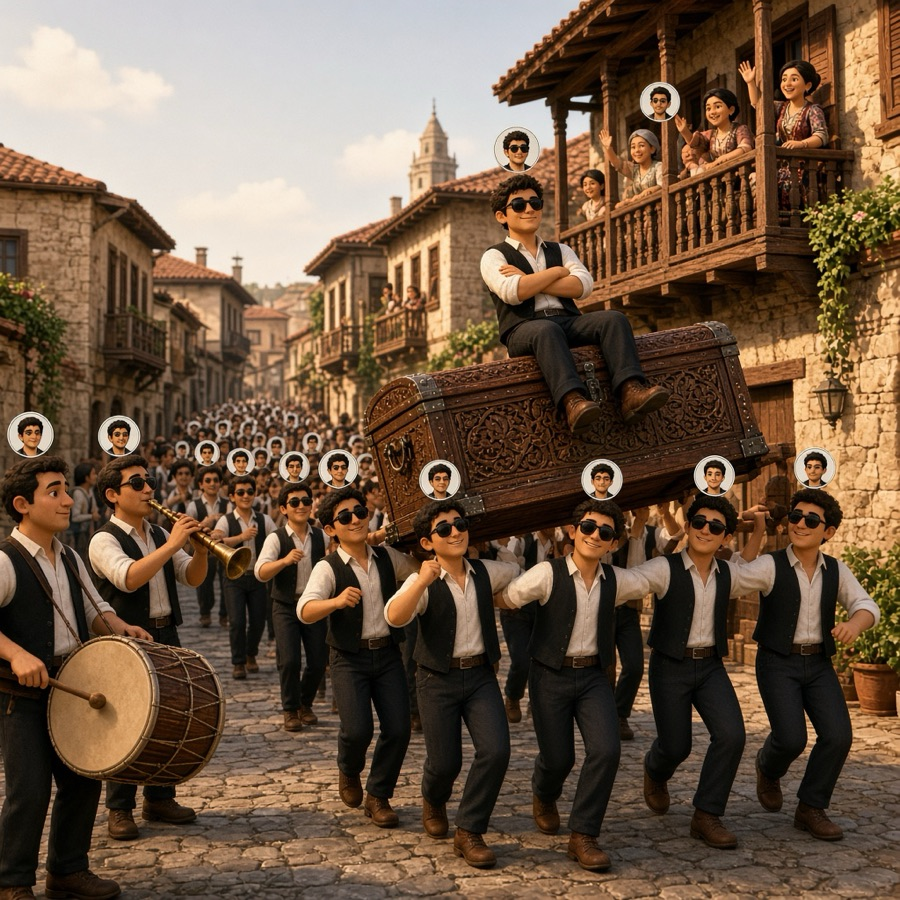
GROK AI
01
Çeyiz Alayı: Sandığı Kim Taşıyacak
Dünyaca tanınan "dans eden taşıyıcılar" akımı, tabut yerine çeyiz sandığıyla. Dans eden altı taşıyıcı, davul zurna ve arkalarında mahalle boyunca uzayan bir alay.
Paylaşım cümlesi · kurgusal örnek
“TikTok'ta çeyiz sandığını dans ederek taşıyorlar, arkalarında 5 bin kişilik alay var.”
TürkiyeYakınBurada ne işi varÖlçek karesiYakın plan sırası
Yorum yazan alayın arkasına girer, alay sokak boyunca uzar. Hediye gönderen davulcu, zurnacı ya da taşıyıcı olur; en büyük hediye sandığın üstüne oturan kardeşi "sandık parasıyla" indirir.
Yayıncı
Alayın başında konuşur, köşeleri ve tehlikeli anları duyurur, sandık sallanınca kurtarma figürünü yönetir.
Neden tutar
Tabut dansı herkesin bildiği bir görüntü; çeyiz sandığına geçince hem komik hem tanıdık. Alayın arkasına girmek halaydaki gibi "ben de oradayım" hissi verir. Sandığın düşecek gibi olması herkesin aynı anda beklediği an.
Ortak sayaç
Alay uzunluğu (metre); oğlan evine kalan mesafe; bu gece kurtarılan sandık.
Dayanak
Çeyizin davul zurnayla oğlan evine götürülmesi ve bazı yörelerde sandığın üstüne oturup bahşiş isteme âdeti (kaynak zayıf, yöreden yöreye değişir).
Kural riski
Cenaze teması yok, tabut yok. Gelin ve damat kurgusal, ad yok. Taşıyıcı dansının Türkiye'de geleneği yok; bu, akımın çeyize aktarılmış hâli olarak anlatılır.
Telif
Akımdaki parça ("Astronomia") ve gerçek grup kullanılmaz; ses davul zurna.
Tekrar denetimi: YAKIN. Önceki turdaki karşılığı: "Zaffa Düğün Alayı" (alaya katılma), 4. turdaki "Kapı Parası" (sandık üstündeki kuzen). Dans eden taşıyıcılar ve alay uzunluğunun hedefe bağlanması yeni; sandık üstü bahşiş daha önce geçti.
Fiyat tabelası
Gülalayda bayrak taşı
Kalpdavulcu ya da zurnacı ol
Donutomuz yeri: taşıyıcılardan biri ol
Büyük hediyesandık parası: üstteki kardeşi indir
Adım adım yapım (7 adım)
Sahne: yandan kayan Anadolu kasabası sokağı, balkonlu evler; başta altı taşıyıcı ve sandık, arkada sınırsız alay şeridi.
Giriş: "alay" yazan alayın sonuna eklenir; alay uzadıkça kamera geri çekilir.
Taşıyıcı dansı: dört figürlük döngü (yan adım, eğilme, dönüş, omuz değişimi); hediye gelen taşıyıcı yerine geçer, adı yeleğinde.
Sandık sallanması: her köşede rastgele değil, ortak çubuk dolmazsa sandık eğilir; yeni hediye gelirse taşıyıcılar kurtarma figürü yapar.
Kardeş: sandığın üstünde oturan figür; büyük hediye onu indirir, kardeş inip alayın başına geçer.
Hedef: alay belli uzunluğa ulaşınca oğlan evinin kapısı görünür, sandık içeri girer, konfeti.
Ses: davul zurna döngüsü, özgün kayıt.
İlk 10 dakika
0-1 dk: "Çeyiz yola çıktı, alay yazan arkaya geçsin."
1-3 dk: alay uzar, davul başlar.
3-5 dk: ilk köşe, sandık eğilir.
5-8 dk: ilk taşıyıcı hediyesi.
8-10 dk: kardeş sandığın üstünde, sandık parası çağrısı.
Çin yeni yılında aslan dansı ekibi dükkânların önünden geçer, kapıya asılan marulu ve kırmızı zarfı "yer". Yayında sokak izleyicilerle dolar, hediye gönderen dükkân açıp kapısına zarf asar.
Paylaşım cümlesi · kurgusal örnek
“My shop got a visit from the lion on TikTok live, it ate my red envelope.”
TikTok'ta aslan benim dükkânıma uğradı, kırmızı zarfımı yedi.
Malezya, Singapur, Endonezya, Tayvan, Vietnam, Çin diasporasıYeniAdına törenÖlçek karesiFiyat tabelası
Paylaşılan kareKuşbakışı uzun çarşı sokağı, her kapıda kırmızı zarf, aralarında kıvrılan aslan ve iki yanda kalabalık.
İzleyici
Yorum yazan kaldırımda seyirci olarak yer alır. Hediye gönderen sokağa bir dükkân açar, tabelasına adı yazılır, kapısına marul ve zarf asılır; aslan sırayla zarflı kapılara gider.
Yayıncı
Ekibin başı gibi konuşur, sıradaki dükkânı duyurur, aslan zarfı yerken davulu hızlandırır, dükkân sahibine yeni yıl dileği söyler.
Neden tutar
Kırmızı zarf, hediye kültürünün kendisi; açıklama gerektirmez. Güneydoğu Asya TikTok'un en çok hediye gönderen pazarlarından ve bu topluluklar için yılın en büyük gecesi.
Ortak sayaç
Zarflı dükkân sayısı; aslanın yürüdüğü metre; direkteki dev zarfa kalan hediye.
Dayanak
2027 Çin yeni yılı 6 Şubat. Marul ve kırmızı zarf (cai qing) geleneği doğrulandı; zarfın asıldığı yer yöreye göre değişir.
Kural riski
Dinî tören yok; aslan dansı halk gösterisi olarak çizilir. Gerçek dükkân ve marka adı yok. Para miktarı zarfın üstünde yazmaz.
Telif
Yok (geleneksel gösteri).
Tekrar denetimi: YENİ. Önceki turdaki karşılığı: ritüel eşleşmesi yok (kalıp yakını: "Lonca Çarşısı", dükkân açma). Aslanın zarflı dükkânları gezip zarfı yemesi ve direk tırmanışı eski havuzda yok.
Fiyat tabelası
Gülkaldırımda fener tutan seyirci
Kalpdükkân aç, kapıya zarf as
Donutdavulcu ol (ritmi sen başlat)
Büyük hediyeaslanın başı ol, direğe sen tırmandır
Adım adım yapım (7 adım)
Sahne: yandan kayan uzun çarşı sokağı; üstte fenerler, iki kaldırım, 40 dükkân yeri, sokağın sonunda yüksek direk.
Giriş: "gong" yazan kaldırıma seyirci olarak girer, fener taşır.
Dükkân: hediye gönderenin adı boş tabelaya yazılır, kapıya marul ve kırmızı zarf asılır.
Aslan: iki kişilik kostüm animasyonu sırayla zarflı kapılara gider, marulu "yer", yaprakları kalabalığa saçar; zarf ekip çantasına uçar.
Davul: hediye sıklığı davulun temposunu belirler; tempo yükseldikçe aslan daha hızlı dans eder.
Direk: ortak hediye çubuğu dolunca aslan direğe tırmanır ve dev zarfı alır; bu gecenin büyük anı.
Dil: yayın İngilizce, Malayca, Endonezce ya da Mandarin açılabilir; dükkân tabelası kullanıcı adı yerine seçilen ad.
İlk 10 dakika
0-1 dk: "Happy New Year! Type gong to join the street."
İnsan kulesi (Katalan castell): tur 3'teki Panjat Pinang piramidiyle aynı mekanik, elendi.
Naha dev halatı (Okinawa, 280 ince ip ve tek dev ip): eski halat çekme fikrine yakın.
Estonya şarkı bayramı (30 binden fazla şarkıcı): koro şekli yeni ama ses üretimi ağır.
Hint baraat (damadın alayına para yağdırma): TikTok Hindistan'da kapalı, pazar yalnız diaspora.
Gürcü sofrasında tamada, Bask aurresku, Polonya polonezi: yeni ama hediye bağı zayıf.
Tam liste: 70_kalabalik.md.
03
Garip akımlar, çok kişilik
35 akımı taradık: tabut taşıyıcıları, Harlem Shake, Mannequin Challenge, Jerusalema, Viking alkışı, 2025'in melez yaratıkları. Seçim ölçütü: tek bakışta tanınan görüntü, herkesin yapabileceği tek bir katılım hareketi ve bir doruk anı.
Hak kuralı. Akımların şarkılarının hepsi hak sahipli ("Astronomia", Harlem Shake, Jerusalema, Gangnam Style, APT.). Yalnız biçim kullanılır, ses özgün olur. Gerçek kişiler (Gana'daki taşıyıcı grup) ve karakterler (Skibidi, Chill Guy, Labubu, Italian brainrot karakterleri) yer almaz.
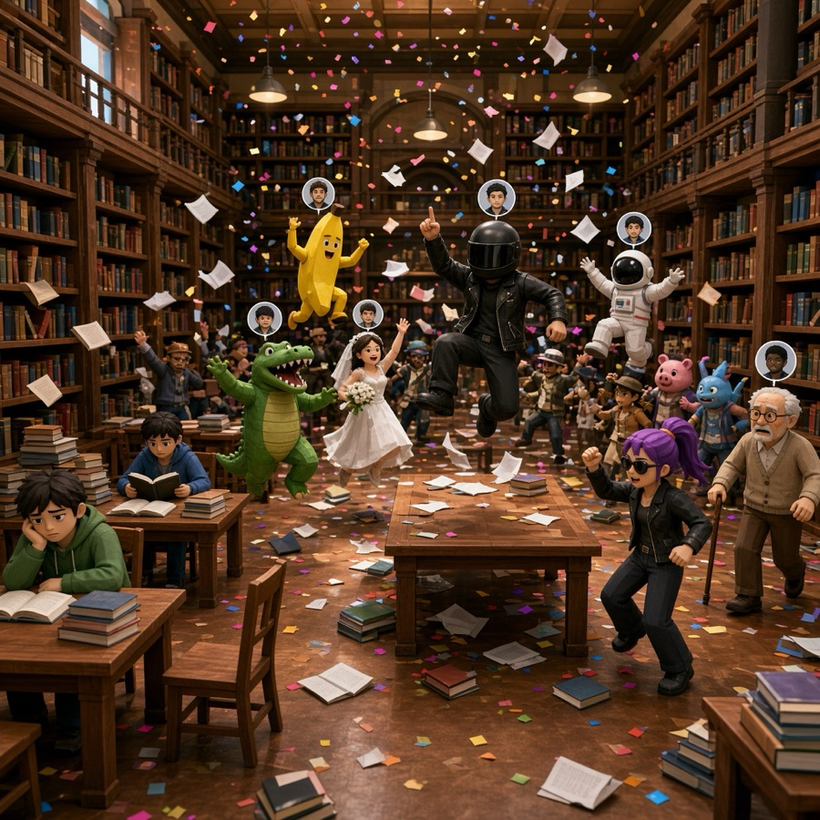
GROK AI
03
Drop: Herkes Sessizken
Kütüphanede, noter bekleme salonunda ya da nikâh memurunun konuşmasında herkes sıkıcı işine devam eder, tek kişi dans eder; drop düşünce binlerce avatar aynı anda çıldırır.
Paylaşım cümlesi · kurgusal örnek
“TikTok'ta noterde 4 bin kişi aynı anda çıldırdı, drop'u ben düşürdüm.”
Türkiye ve globalYeniBurada ne işi varÖlçek karesiAbsürt kılık
Paylaşılan kareDrop anının donmuş karesi: kitaplar havada, timsah kılıklı avatar masanın üstünde, köşede hâlâ sıkılan iki kişi.
İzleyici
"geldim" yazan sahnede sıkıcı bir figür olur ve bir kılık seçer ("timsah", "gelin", "dede", "muz"). Sessiz sürede yazdığı her yorum gerilim ibresini doldurur ve figürü biraz daha kıpırdatır.
Yayıncı
Mekânı duyurur ("bu tur noterdeyiz"), sessiz sürede fısıldayarak anlatır, drop anını geri sayımla büyütür, kimin düşürdüğünü okur.
Neden tutar
2013'ün Harlem Shake kalıbı herkesin hafızasında: sıfırdan yüze tek geçiş. Mekân her turda değiştiği için "TikTok'ta noterde ne arıyorsunuz" cümlesi kendiliğinden yazılır. Drop her 2-3 dakikada bir geldiği için yeni gelen hemen anlar.
Ortak sayaç
Gerilim ibresi; bu turdaki kılıklı sayısı; "bu gece düşen drop: 14".
Kural riski
Orijinal Harlem Shake parçası kullanılmaz, ses özgün bir bas vuruşu. Gerçek kurum adı ve logosu yok ("Noter" yalnız genel mekân). Işık çakması sınırlı tutulur (ışığa duyarlı izleyici).
Telif
Akımın biçimi serbest; parça hak sahipli, kullanılmaz.
Tekrar denetimi: YENİ. Önceki turdaki karşılığı: eşleşme yok. Harlem Shake ve drop kalıbı eski havuzda yok. Sessiz sürede yorumların gerilim ibresini doldurması denetim sonrası eklendi.
Fiyat tabelası
Gülkılığını büyüt (kafası iki kat)
Kalpsessiz sürede ön sırada otur
Donutdrop'u erken düşür
Büyük hediyedrop'tan önce tek dans eden kişi ol
Adım adım yapım (7 adım)
Sahne seti: beş mekân (kütüphane, noter bekleme salonu, nikâh salonu, gece otobüsü, ofis toplantısı); her biri aynı ızgarada 200-2.000 oturma ya da ayakta durma noktası.
Giriş: "geldim" yazan boş noktaya sıkıcı pozda oturur; kılık komutu ("kılık timsah") avatarın drop kıyafetini seçer, sessiz sürede kıyafet görünmez.
Gerilim ibresi: sessiz sürede gelen her yorum ibreyi az doldurur, figürler parmak tıklatır, ayak sallar; ibre dolunca drop düşer.
Drop: tek bas vuruşu, bütün avatarlar seçtikleri kılıkla aynı anda dans animasyonuna geçer, nesneler (kitap, evrak, çiçek) havaya uçar, 15 saniye sürer.
Tek dans eden: büyük hediye gelince o kişi bir sonraki turun sessiz sürecinde ortada yalnız dans eder; adı üstünde.
Paylaşılan kare: drop'un ikinci saniyesinde otomatik ekran karesi alınır, yayıncı ekranında küçük önizleme olarak 10 saniye durur.
Tur sonu: mekân değişir, ekran "sıradaki mekân: gece otobüsü" yazar.
2025'in saçma melez yaratık akımı, ama yaratıkların hepsi izleyiciden. İki kelime yazan kendi yaratığını yaratır, yaratık geçide katılır, gecenin sonunda en saçmasına taç.
Paylaşım cümlesi · kurgusal örnek
“TikTok'ta yaratık geçidi var, benim Çaydanlık Ejderim 6 bin kişinin önünde taç giydi.”
Türkiye ve globalYakınKendi cümlenAbsürt kılıkÖlçek karesi
Paylaşılan kareBulvar boyunca simit timsah, çaydanlık ejder, pervaneli kedi balonu; sonda taç kürsüsü.
İzleyici
"yarat simit timsah" gibi iki kelime yazar; ikisinin birleşimi olan yaratık adıyla geçide katılır. Kalabalık iki yanda alkışlar.
Yayıncı
Sunucu gibi her yaratığı adıyla takdim eder, en saçma birleşimleri yüksek sesle okur, taç oylamasını yönetir.
Neden tutar
İzleyicinin kendi yarattığı şey ekranda yürür ve adını taşır: paylaşılan kare kişisel. Akımın dili kısa ve anlaşılır.
Ortak sayaç
Geçitteki yaratık sayısı; gecenin en çok alkışlananı.
Kural riski
Var olan karakter, ad ve ses (Italian brainrot karakterleri dahil) kullanılmaz; yaratıklar hazır parça kütüphanesinden birleşir. Kelime süzgeci şart. Akımın kitlesi çocuk ağırlıklı: yaş kısıtlı yayın ve hediye için TikTok yaş kuralları.
Telif
Karakter IP yok; özgün parça kütüphanesi.
Tekrar denetimi: YAKIN. Önceki turdaki karşılığı: "Maskot Geçidi" (her ilin maskotu yürür). İzleyicinin iki kelimeyle kendi yaratığını yaratması ve taç yeni; geçit iskeleti eski.
Fiyat tabelası
Gülyaratığına konfeti
Kalpyaratığına geçit arabası
Donuthavai fişekle takdim
Büyük hediyeyaratığın dev balon olur, geçidi kapatır
Adım adım yapım (5 adım)
Parça kütüphanesi: 200 nesne ya da hayvan için gövde, kafa, kuyruk, doku parçaları; iki kelime eşleşince gövdeyi birinden, dokuyu ötekinden alır (anlık görsel üretimi yerine).
Ad üretici: iki kelimeden hece birleştirme ("simit" ve "timsah" Simitimsah olur).
Süzgeç: kelime listesi ve onay kuyruğu; argo, kişi adı, marka geçmez.
Geçit: bulvar kayar, her yaratık 8 saniye sahnede, adı ve sahibi altında.
Taç: son 10 dakikada en çok alkış (beğeni) alan üç yaratık kürsüye çıkar, taç sesle seçilir.
İlk 10 dakika
0-1 dk: "Geçit başlıyor, iki kelime yaz, yaratığın yürüsün."
Tabut taşıyıcıları akımını ayrı bir fikir yapmadık: cenaze teması riskli. Biçimini çeyiz sandığına taşıdık, kartı Kalabalık bölümünde.
Taranan ama seçilmeyen akımlar
Mannequin Challenge: eski "Flash Mob Donma" fikrinin aynısı; ayrıca yazan izleyiciyi "yakalanan" ilan etmek onur yerine utanç veriyor.
Viking alkışı, haka, Meksika dalgası, insan tüneli: eski havuzda var.
Ice Bucket Challenge: bağış toplama çağrışımı TikTok LIVE'da riskli.
Planking, Kiki: tehlikeli taklit riski.
Labubu kuyruğu: eski kuyruk fikirlerine yakın, karakter hak sahipli.
Tam liste: 72_garip_akim.md.
04
Tek kişilik garip haz
Slime yayını hediyeyi malzemeye çevirdi: renk, sim, köpük. Ardından pirinç ayıklama ve çiğ köfte yoğurma geldi. 48 haz eylemini taradık; sabun, kinetik kum, halı yıkama, pasta, mum eski havuzda zaten vardı. Seçilen ikisi havuzda yok ve ikisi de Türkiye'ye özgü.
TikTok kuralı. Canlı yayında "açık bir hedefi ya da izleyiciyi tutan doğrudan etkileşimi olmayan, tekrarlanan ya da uzatılmış eylemler" gelir dışı kalabilir; izleyiciyi hediyeye kandırmak ya da zorlamak yasak; sabun, tebeşir, kil gibi yenmeyen şeyleri yemek yasak (kaynak). Bu yüzden her haz yayınında ekranda bir hedef, izleyicinin seçtiği bir sonraki adım ve bir bitiş anı olmalı. Saatlerce hedefsiz yoğurmak gelir kaybettirebilir.
GROK AI
05
Maraş Dondurmacısı: Külahı Alabilecek misin
Dünyada viral olmuş dondurmacı numarası canlı yayında. Hediye gönderen ekranda müşteri olur, sohbet sıradaki numarayı seçer, usta müşteriyi oyalar.
Paylaşım cümlesi · kurgusal örnek
“TikTok'ta dondurmacı beni 4 dakika oyaladı, külahı alan ilk 10'dayım.”
Türkiye ve globalYeniYakın plan sırasıFiyat tabelasıBurada ne işi var
Paylaşılan kareHavada ters dönen külah, altında izleyicinin adı ve boş eli.
İzleyici
Hediye gönderen sıraya girer, adı külah kâğıdına yazılır. Herkes sıradaki numarayı oylar: ters külah, zil, çubukla kaldırma, boş külah.
Yayıncı
Gerçek usta ya da usta kılığında yayıncı; numarayı uygular, müşterinin adını söyler, sonunda külahı kameraya uzatır.
Neden tutar
Görüntü dünyada tanınıyor, tek başına güldürüyor. Ters mantık espri: büyük hediye daha uzun oyalanmak demek. Her müşterinin bir bitişi var, yani açık bir hedef.
Ortak sayaç
Külahı alan müşteri sayısı; "en uzun oyalanan" tabelası.
Dayanak
Türk dondurmacı numarası 2019-2022 arası dünyada çok viral oldu.
Kural riski
Hedefsiz tekrar kuralına karşı: her müşterinin ekranda yazan bir sonu ve sohbetin seçtiği bir sonraki numara var. Yiyecek israfı yok, külahlar sonra dağıtılır ya da satılır.
Telif
Yok.
Tekrar denetimi: YENİ. Önceki turdaki karşılığı: eşleşme yok. Dondurmacı numarası ve müşteri sırası eski havuzda yok.
Fiyat tabelası
Gülsıraya gir, bir numara
Kalpüç numara ve zil
Donutsohbetin seçtiği beş numara
Büyük hediyeustanın bütün numaraları ve dev külah
Adım adım yapım (5 adım)
Kurulum: dövme dondurma tezgâhı, uzun metal çubuk, zil; kamera müşteri gözünden (yakın plan) ve yandan.
Sıra: hediye gönderenin adı ekrandaki sıra listesine düşer; aktif müşterinin adı külah kâğıdında.
Numara oylaması: sohbette "1", "2", "3", "4" yazılarak sıradaki numara seçilir; ekranda canlı sayım.
Bitiş: hediye basamağının numara sayısı dolunca külah kameraya uzatılır, müşteri "aldı" sayılır.
Kodsuz başlangıç: tek usta, bir telefon, ekran üstüne yazılı sıra; ilk yayın gerçek bir dondurmacıda iş birliğiyle.
Kalabalıkla hazzın kesiştiği yer. Büyük sininin etrafına her yorumla bir el eklenir, teller incelir ve çoğalır, sonunda ağda bir anda pamuk gibi pişmaniyeye dönüşür.
Paylaşım cümlesi · kurgusal örnek
“TikTok'ta 5 bin kişi aynı tepsinin etrafında pişmaniye çekti, 96 bin tel olduk.”
TürkiyeYeniÖlçek karesiYakın plan sırasıBurada ne işi var
Paylaşılan kareSininin üstünde ipek gibi teller, etrafında yüzlerce el, ortada kabaran pamuk bulutu.
Doğal reklamPişmaniye imalathanesinin kendisi (tabela) ve kutunun üstü (çıktı).
İzleyici
Çizimli sürümde yorum yazan sininin kenarına bir el olarak girer; halka büyüdükçe teller incelir, sayaç artar. Gerçek sürümde sohbet bir sonraki partinin çeşidini seçer (sade, kakaolu, fıstıklı).
Yayıncı
Usta gibi konuşur, çekiş ritmini sayar ("bir, iki, çek"), tel sayısını okur.
Neden tutar
Slime yayınlarının "garip haz"ı ile halayın "binlerce kişiyle aynı şeyi yapıyoruz" hissi aynı karede. Sonuç (pamuk bulutu) gözle görülür ve büyüleyici.
Ortak sayaç
Tel sayısı (binler, on binler); halkadaki el sayısı; bu gece çıkan parti.
Dayanak
Pişmaniye şeker ağdası ve kavrulmuş undan yapılır; gelenekte sininin etrafında birkaç kişi çeker, bugün çoğunlukla makine ya da iki usta. "Binlerce el" çizimli sürümün kurgusu.
Kural riski
Gerçek sürümde hedefsiz tekrar kuralına dikkat: ekranda tel hedefi ve sohbetin seçtiği çeşit olmalı. Gıda hijyeni ve gerçek imalathane iş birliği.
Telif
Yok.
Tekrar denetimi: YENİ. Önceki turdaki karşılığı: eşleşme yok (kalıp yakını: "Mochi'de sıra bende", slime ailesi). Pişmaniye ve tel sayacı eski havuzda yok.
Fiyat tabelası
Gülun serp
Kalpsininin karşı ucunda çek
Donutusta eli: ritmi sen say
Büyük hediyeson çekiş: ağdayı pamuğa çevir
Adım adım yapım (5 adım)
Çizimli sürüm: kuşbakışı sini, kenarda 24'ten 2.000'e kadar el yuvası; el sayısı arttıkça halka genişler.
Tel simülasyonu: tel sayısı her çekişte ikiye katlanır; görselde ipek doku inceleşir.
Çekiş ritmi: yayıncının sayması ve sohbetteki "çek" yorumları ritmi belirler.
Büyük an: ortak çubuk dolunca ağda kabarır, pamuk bulutuna döner, ekranda tel sayısı patlar.
Gerçek sürüm: imalathanede iki usta, ekranda tel hedefi ve çeşit oylaması; kodsuz açılabilir.
Tel Kadayıf: Künefe Sırası. Hamurun dönen sıcak tepsiye iplik iplik akması; sonunda künefe kesilir, peynir uzar. Yeni ama hediye yalnız bir tur daha ekliyor; hedefsiz tekrar kuralına açık. Sohbetin künefe çeşidini ve dilimin sahibini seçmesiyle güçlenir.
Bakırcı: Cezveni Döv. Çekiç sesi ve biçim değişimi; sonunda cezvenin dibine ad kazınır. Aynı sorun: hediye yalnız vuruş paketi.
Taranan diğer haz eylemleri
Havuzda var: sabun ve kinetik kum kesme, halı yıkama, basınçlı su, pirinç ayıklama, ASMR istek, pasta süsleme, reçine ve mum, örgü, boya karıştırma, slime, jel bilye.
Havuzda yok, seçilmedi: çiçek süngeri ezme, bıçak bileme, buz kırma, soyma, bal, bant çekme, araç detaylı temizlik, restorasyon, cam üfleme, çömlek, el çekme makarna, yufka açma, gider açma, demirci.
Hidrolik pres: eski "Son Basan Kazanır" fikrine yakın, ton tahmini bahse benziyor.
Tam liste: 71_tatmin_asmr.md.
05
Elenenler ve riskler
Bu sürümden önce bir ara tur daha yapıldı (4. tur): mekânın kendi para ritüelini hediyeye çeviren 19 fikir. Denetimde 3'ü tekrar, 11'i yakın, 5'i yeni çıktı; yenilerin hepsi para ritüeli ölçütünden kaldı. 5. turda (bu sayfa) 11 fikir yazıldı: 1 tekrar, 4 yakın, 6 yeni.
Fikir
Neden elendi
İnsan Kulesi
Tur 3'teki Panjat Pinang piramidiyle aynı mekanik (tabana gir, hediye kat açar).
Dondum: Kıpırdayan Yakalanır
Eski "Flash Mob Donma" ile aynı çekirdek.
Hidrolik Pres
Eski fikre yakın; tahmin tahtası bahse benziyor.
Tutmayın Beni, Kaza Yeri
Yeni ve komik, ama 1 Ekim 2026'da kavga ve mağduriyet yayınlarına 10 ilde operasyon yapıldı.
Okey Masası: Arkadan Bakan
Tek masa; büyük bir ekibin parçası olma hissi vermiyor.
Torpil: Daire Sırası
Hediyeyle torpil satın almak rüşvet çağrışımı.
Turşu Kurma
Slime fikrinin tekrarı; kapak fırlatma sahte düzenek ve güvenlik riski.
Owambe para saçma
Eski "Aso Ebi" ve "Dollar Dance" fikirlerine yakın; Nijerya'da naira saçmak yasayla yasak.
Muavin, Kapı Parası
Eski otogar fikrinde muavin ve kolonya var; kapı parası 3. sürümün tahmin listesinde geçti.
4. turdan öne çıkan ama bu sayfaya alınmayanlar
Şantiye: Son Kat Betonu. Çin'deki şantiye izleme yayınları çok izleyici topladı ama hediye mekaniği bulunamadı; hediye malzeme olur, bina yükselir, kaba inşaat bitince usta bayrak diker (kısmen doğrulandı). Şantiye eski havuzda yok.
The Door Game: Vietnam ve Çin düğünlerinde kapıyı tutan nedimeler, Rusya'da merdivenli vykup, Kore'de ham kutusu.
Altın Günü ve Kız İsteme: eski havuzda tek satır olarak geçmişti.
Gender Reveal: It Escalated ve The Blackening: yeni ama para ritüeli yok.
Hediye ekonomisine soruşturma. Ankara Cumhuriyet Başsavcılığı kasım 2026'da TikTok hediyeleri üzerinden yasa dışı bahis geliri aklama iddiasıyla 8 ilde operasyon yaptı (11 gözaltı). Hangi fikir açılırsa açılsın: hediye geliri kayıtlı ve faturalı, yayında bahis, çekiliş ve paraya çevrilen ödül yok.
06
Hangisinden başlamalı
Pavyon, halay ve sıra gecesini başkaları önce açtı. Bu yüzden ölçüt hız: hangisi bu hafta, kodsuz ya da en az kodla açılabilir?
2027 Çin yeni yılı 6 Şubat. Güneydoğu Asya kitlesi için hazırlık şimdi başlamalı.
Hâlâ açık
Bu fikirlerin hiçbiri henüz kodlanmadı.
Kick'teki 7.217 kişilik halay sayısı için bağımsız kaynak bulunamadı; yalnız X gönderisine dayanıyor.
Doğu Asya platformlarının (Douyin, Kuaishou, SOOP) taraması zayıf kaldı: arama aracı Çince ve Korece içerikte yetersizdi, yalnız 5 örnek doğrulanabildi.
Bu hafta X'te dolaşan beş yayın izlenmekten çok anlatıldığı için büyüdü. Bu sürüm o kalıbı çıkarıyor ve Türkiye ile dünya için, ekran görüntüsü alınıp paylaşılacak yeni fikirler öneriyor. Her fikirde paylaşım cümlesi, fiyat tabelası ve adım adım yapım rehberi var. Ek: hiçbir ögesi çıkarılmamış pavyon dosyası ve platform kuralları.
42 fikir501 yapım adımı12 Türkiye · 12 global12 pavyon dosyası6 gündem fikri
01
Bu sürümde ne var
10 Kasım haftasında beş yayın X'te elden ele dolaştı: Kick'te 7.217 kişilik halay, iki ayrı pavyon, bir düğün konvoyu ve dua halkasının yeni sürümü. Hiçbiri izlenme rekoru kırdığı için konuşulmadı. Konuşuldular, çünkü ekran görüntüsünü alan kişi tek cümleyle anlatabildi.
Bu sürüm o cümleyi tasarımın başına koyuyor. Önce beş yayının ortak kalıbını çıkardık, sonra aynı kalıpla 42 yeni fikir yazdık: Türkiye ve dünya için. Sonradan iki ek geldi: hiçbir ögesi çıkarılmamış Pavyon dosyası ve gündemle eşleşen fikirler. Önceki iki sürüm yerinde duruyor; üstteki çubuktan geçilebilir.
Tekrar denetimi. 24 fikir önceki 875 adlık havuza karşı bağımsız bir ajanla denetlendi. 15 fikirde dünya tümüyle yeni. 9 fikrin eski havuzda bir akrabası var. Her kartta en yakın eski fikir açıkça yazıyor.
Yedi kaldıraç
Beş yayının her biri bunlardan en az üçünü kullanıyor. Yeni fikirlerin kartlarında hangilerini kullandığı etiketle yazılı.
"Burada ne işi var" çatışmasıHerkesin bildiği ama TikTok'ta olması beklenmeyen bir yer. Gönderi cümlesi kendiliğinden yazılır: "TikTok'ta pavyon açmışlar."
Fiyat tabelası şakadırBasamak adları toplumsal espri taşır: "Tarlayı satanlar masası", "Divalar masası", "Sazcı ol". Tabelanın kendisi ekran görüntüsüdür.
Yakın plan sırasıKamera sırayla herkese döner, masadan birinci kişi gözüyle bakar. Herkes kendi anının görüntüsünü alır.
Adına törenAfişteki adlar değişir: "Efe ♥ Arda, düğünümüze hoş geldiniz". Tören sahibi kendi kalabalığını getirir. Hayran toplulukları sevdiği çift için töreni kendisi kurar.
Kendi cümlen ekranda"dua annem için şifa" gibi kişisel bir metin yazılır ve herkesin önünde görünür.
Absürt kılıkPavyonun müşterileri hamam böceği. Riskli mekânı zararsız ve daha komik yapar.
Ölçek karesiKamera uzaklaşır, binlerce ad tek karede: "Halayda 7.217 kişi". Şehir renkleri kalabalığı okunur kılar.
Paylaşım testi
Bir fikri listeye almadan önce üç soru sorduk. Üçüne de evet denmeyen fikir çıkarıldı.
Tek cümle. "TikTok'ta ___ açmışlar" kalıbına oturuyor mu? İzleyici arkadaşına bunu yazarken açıklama eklemek zorunda kalıyorsa fikir zayıf.
Tek kare. Fiyat tabelası ve sahne aynı ekran görüntüsüne sığıyor mu, tabela okununca gülümsetiyor mu?
Kendi adın. İzleyici o karede kendi adını bulabiliyor mu? Paylaşılan görüntülerin çoğu "bakın ben de buradayım" diye paylaşılıyor.
Nasıl okunur. Her kartın başında izleyicinin atacağı gönderi cümlesi var. Bunlar kurgusal örnektir, gerçek gönderi değildir. "Fiyat tabelası" dört hediye basamağını ve esprili rol adlarını gösterir. Açılır "Adım adım yapım" bölümünde tabelanın, paylaşılan karenin ve metin süzgecinin nasıl kurulacağı ayrı adımlar olarak yazılı.
02
Beş gönderi: ne gördük
Beş gönderinin videolarını indirdik, altışar kare çıkardık ve ekranda yazan her şeyi okuduk. Aşağıda her yayında izleyicinin ne yaptığı, neyin satıldığı ve gönderiyi atan kişinin neye şaşırdığı var.
Gönderilerin görüntülenmesi (12 Kasım 2026 akşamı)
Kick'te halay307.935
Pavyon (gerçekçi)284.327
Dua ve zikir halkası145.283
Düğün konvoyu40.514
Pavyoncu Böcek11.103
Sayılar gönderilerin herkese açık sayaçlarından alındı. Beğeni sayısında sıra değişiyor: pavyon gönderisi 3.498 beğeniyle açık ara birinci.
1. Kick'te halay: 7.217 kişi
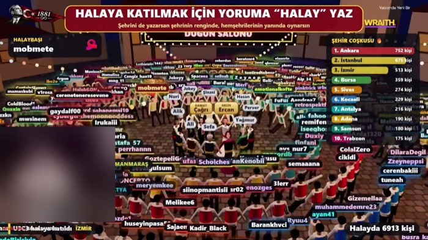
X · 10 KASIM6.913 kişi. Sağda şehir tablosu: Ankara 752, İstanbul 675, İzmir 513. Yayıncının yüz kamerası bulanıklaştırıldı.
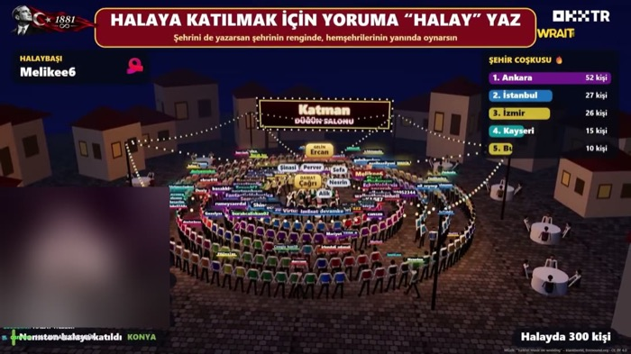
X · 10 KASIMAynı yayın 300 kişiyken: halka iç içe sarmallara dönüşmeye başlıyor.
Üst bantta tek kural yazıyor: yoruma "halay" yaz. İkinci satır daha önemli: şehrini de yazarsan şehrinin renginde, hemşehrilerinin yanında oynarsın.
X · 10 KASIMEn çok hediye atanın özel locası. Karakter bir hamam böceği.
Aynı mekân, bambaşka ton. Karakterler hamam böceği, grafik basit, tabela neon.
Masa adları toplumsal espri: "Tarlayı satanlar masası". Gönderiyi atan kişi tabelayı sayıyor ve ekliyor: "kaç saattir sardı".
Ücretsiz yol da var: 100 beğeni masaya oturtuyor.
Ders: espri tabelada. Basamak adı güldürüyorsa izleyici tabelanın görüntüsünü paylaşır; karakterin böcek olması riskli mekânı zararsız kılar.
4. Düğün konvoyu: afişte iki ad
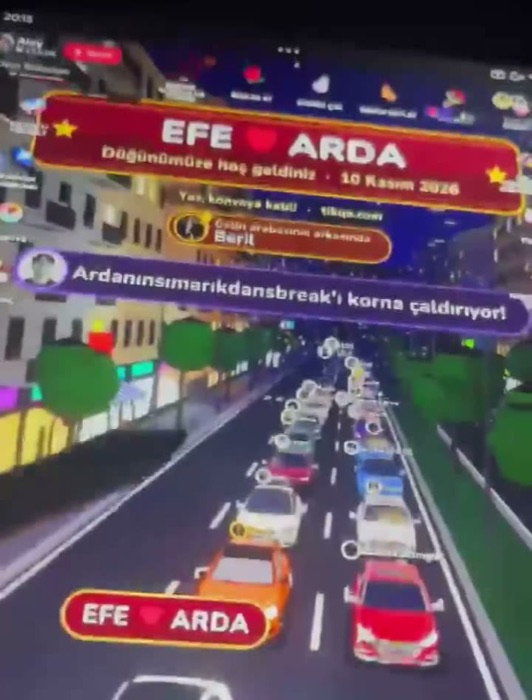
X · 10 KASIMAfişte iki ad ve tarih. Altında: "Yaz, konvoya katıl". Bir izleyici korna çaldırıyor.
İzleyiciler gelin arabasının arkasında dizilen arabalar. Hediye korna çaldırıyor, konfeti patlatıyor.
Gönderiyi atan kişi oyuna değil afişe şaşırıyor. İki adı birleştiren bir kısaltma kullanıyor; bu, bir hayran topluluğunun sevdiği iki isim için "düğün" kurduğunu düşündürüyor (doğrulanamadı).
Ders: afişteki adlar değiştirilebiliyorsa tören sahibi kendi kalabalığını getirir. Yayıncı izleyici aramaz; izleyici topluluğuyla gelir.
5. Dua ve zikir halkası: kişisel cümle
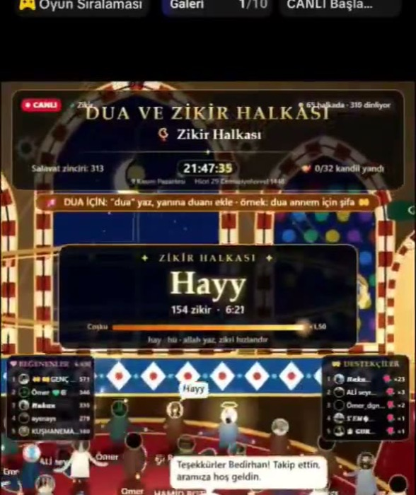
X · 10 KASIMÜstte sayaçlar: salavat zinciri, yanan kandil. Ortada: "dua yaz, yanına duanı ekle, örnek: dua annem için şifa".
Önceki haftaki sürüme göre yenilik: izleyici kendi duasını yazıyor ve sırayla okunacağı söyleniyor.
Ortak sayaçlar üst üste: zikir sayısı, salavat zinciri (hedef 1.000), 32 kandil.
Gönderi "bağış karşılığında" diyor; karede ise "ücretsiz" yazısı ve sohbet komutları görünüyor. Hediye ile duanın yan yana durması bu yayının asıl riski.
Ders: kişisel bir cümlenin herkesin önünde görünmesi çok güçlü. Dinî çerçeve olmadan da çalışır: pankart, kamyon arkası, veda kartı.
Hangi yayın hangi kaldıracı kullanıyor
Yayın
Çatışma
Tabela
Yakın plan
Adına tören
Kendi cümlen
Absürt kılık
Ölçek
Kick'te halay
✓
✓
Pavyon
✓
✓
✓
Pavyoncu Böcek
✓
✓
✓
✓
Düğün konvoyu
✓
✓
✓
Dua ve zikir halkası
✓
✓
✓
Bağlam: kim satıyor, kim yazdı
Bu yayınların çoğu satın alınabilen hazır oyunlarla açılıyor. Araştırma ajanı satıcı sayfalarını ve 9–11 Kasım haberlerini taradı; bulamadıkları da aşağıda yazılı.
Ürün ya da kaynak
Fiyat ve koşul
Not
TikQo Düğün Konvoyu
499 TL, tek ödeme, yalnız Windows
İzleyicinin arabası küçük bir modelle başlar, on basamakta yükselir. Hediye korna, alev, gelin ya da damat olmayı tetikler. https://tikqo.com/oyun/dugun-konvoyu
Haber sırası akımın hızını gösteriyor. 9 Kasım'da halay ve horon haber oldu (GZT, CNBC-e). 10 Kasım'da sıra gecesi ve zikir halkası (Onedio). 11 Kasım'da başlıklara "sanal pavyon" girdi (Ege'de Son Söz).
Aynı hafta bir soruşturma da haber oldu. 10 Kasım'da TikTok canlı yayın hediyeleri üzerinden para aklama iddiasıyla 8 ilde 11 kişinin gözaltına alındığı yazıldı (Onedio). Haberler bu yayınları o operasyonla yan yana anlatıyor. Hediye isteyen her yeni format bu gölgede değerlendirilecek.
Kurallar. TikTok Topluluk Kuralları alkol gibi konularda bazı içeriklere izin verdiğini ama kısıtlama uygulayabileceğini söylüyor (kaynak). Tütün, dinî içerikte hediye ve şans oyunu benzeri mekanikler için resmî sayfalardan açık bir hüküm okunamadı; bu üçü doğrulanmadı sayılmalı.
Bulunamayanlar. Zikir halkasına gelen tepkiye dair haber, pavyon yayını hakkında ayrıntılı haber ve düğün konvoyundaki iki adın bir hayran topluluğuna ait olduğunun kanıtı bulunamadı. Son madde, gönderideki ifadeden yaptığımız çıkarımdır.
03
Türkiye: gönderi cümlesi hazır on iki yayın
Hepsi tek cümleyle anlatılır: TikTok'ta bunu da açmışlar. Mekânı herkes bilir, fiyat tabelası espridir, kare paylaşılmak için kurulur.
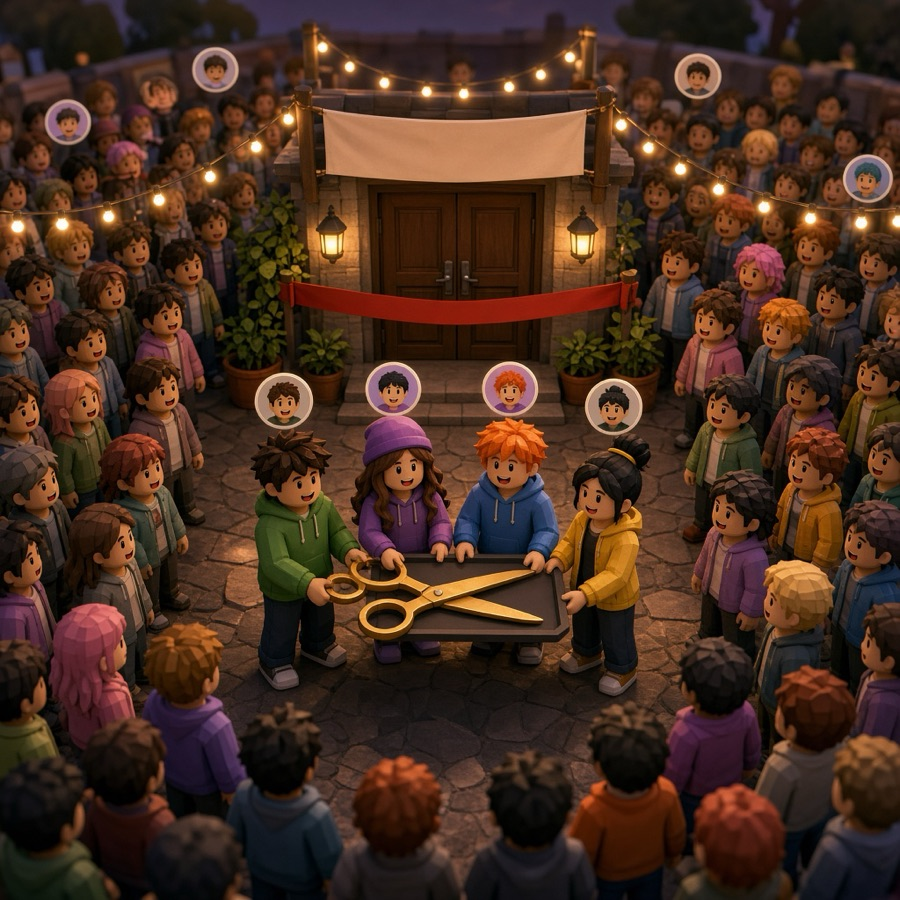
GROK AI
01
Kurdele Kesme: Arkadan Kafa Uzatan
Yeni açılan dükkânın önünde 5 dakikada bir açılış; hediye atan makası tutar, atmayan arkadan kafa uzatır.
Siyasi makam, unvan, parti rengi yok; "protokol" yerine "ön sıra"; hediye karşılığı ünvan satışı gibi durmasın diye kurdele ücretsiz de gelir.
Telif
Yok (kurgu değil)
Yenilik denetimi. En yakın eski fikir: County Fair: Mavi Kurdele (U04 in 13_TOHUMLAR); o fuar yarışması, bu açılış kurdelesi ve arkadan kafa uzatan kalabalık; adıyla tekrar yok.
Bağımsız denetim: eski listelerde yakın eşi yok.
Fiyat tabelası
Gülçelenk gönderen (kurdelesinde adı)
Kalpkurdelenin ucundan tutan
Çaymakas tepsisini taşıyan
Donutmakası tutan (keser, yorumu 10 sn kürsüde okunur)
Adım adım yapım (12 adım)
Arketip C (2D çizgi avatar ve sayaç): katil.html kopyalanıp web5/kurdele/index.html yapılır, yeni sahne nesnesi SC.kurdele eklenir.
Sahne: dükkân önü, kırmızı kurdele, ön sıra için dört boş yer, arkada üç sıra avatar; arka plan 1080x1920, üst 230 ve alt 560 piksel boş.
Giriş komutu: yorumda "geldim" geçen izleyici arka sıraya kafa uzatan avatar olur; her yeni kafa küçük bir sıçrayışla girer.
Açılış önerisi: "öner:" ile başlayan yorum önerilen yeri 12 kayıtlık havuza girer; en çok beğeni alanı sıradaki açılış olur (süzgeçten geçmiş olmak şartıyla).
Rol eşlemesi: Gül çelenk (kurdelede ad), Kalp kurdelenin ucu, Çay makas tepsisi, Donut makas; makas sahibi yalnız bir kişi, büyük hediye makası devralır.
Tabela adımı: fiyat tabelası ekranın sağ üstünde, üst 230 pikselin altında durur; dört satır: Gül · Çelenk gönderen, Kalp · Kurdele ucu, Çay · Makas tepsisi, Donut · Makası tutan; her satırda hediye simgesi ve o anki sahibi; tek ekran görüntüsünde okunur.
Sayaç: üstte "Açılan yer 0/12" ve kurdele metresi; her açılış sonunda metre artar, 12. açılışta gece kapanış töreni.
Kare adımı: makas anında kamera ön sıraya iner (yakın plan 4 sn), sonra geri çekilir ve arka sıra kafaları 3 sn tam karede durur; hediye atanın adı kurdelede, atmayanların adı kafalarının üstünde küçük etikette görünür; kare 5 sn sabit kalır ki ekran görüntüsü alınsın.
Süzgeç adımı: izleyici önerisi ve adı ekrana çıktığı için argo, hakaret, marka, gerçek kişi ve makam adı sözlüğü uygulanır; öneri önce onay kuyruğuna düşer, yayıncı ya da moderatör tuşla onaylar, onaylanmayan öneri ekrana çıkmaz.
Eve götürülen şey: "açılış fotoğrafı" kartı (adın, kurdele sırası, kareye sığdığın yer) yayın sonunda ekranda 20 sn gösterilir.
Test: ?demo=1, ?seed=150; k tuşu kafa ekler, g tuşu makas devreder; öneri havuzunda yasaklı sözcük sınaması yapılır.
Yayın: akşam 21.00, 90 dakika; ölçülecek üç sayı: ilk 5 dakikada kafa uzatan sayısı, makas anı başına kalan izleyici, açılış başına yeni hediye.
İlk 10 dakika
0–1 dk: "Bu gece mahallemizde 12 yer açılıyor, kurdele hazır"
1–3 dk: "geldim yazın, arkadan kafa uzatın; ilk açılış berber"
3–5 dk: ilk makas anı, geri sayım 3-2-1
5–7 dk: kare 5 sn durur, "ekran görüntüsünü alın"
7–9 dk: öneri okunur, ikinci açılış kedi oteli
9–10 dk: tabela hatırlatılır, makas sahibi kürsüde konuşur
Doğrulama: Gelenek var, kurdele kesme Türkiye'de tören kalıbı olarak yaygın; kökeni DOĞRULANMADI. Roller kurgudur, gerçek gelenek rolü değil. Makam ve kişi canlandırması yok.
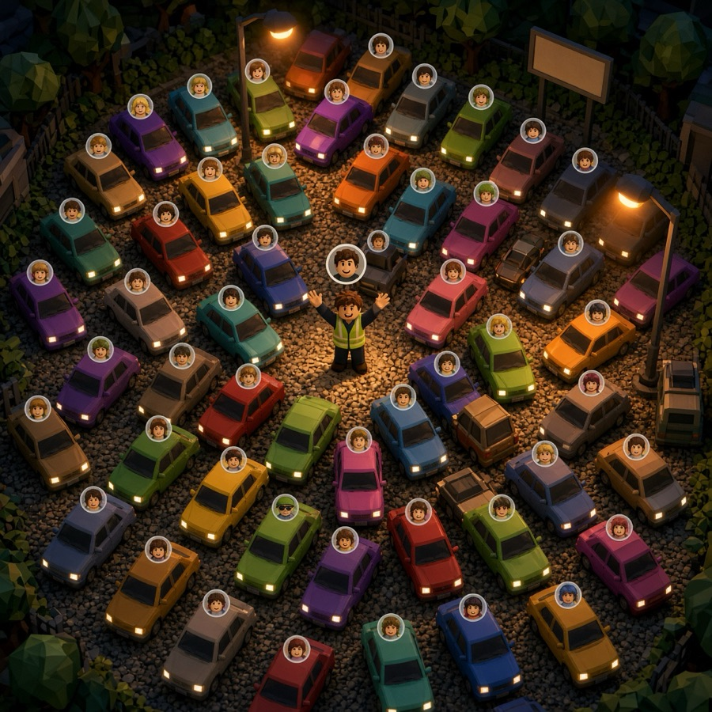
GROK AI
02
Değnekçi: Gel Gel Gel
40 araçlık otoparka 312 araç sığdırılır; en pahalı hediye yeleği giyer, sıradaki on arabayı yerleştirir.
Paylaşım cümlesi · kurgusal örnek
“TikTok'ta otopark açmışlar, 40 arabalık yere 900 kişi park etmiş, değnekçi hâlâ gel gel diyor.”
TürkiyeYeni dünyaçatışmatabelaölçekArketip C
Eve götürülen şeyPark fişi: plaka yerinde adın, "çıkış: imkânsız".
Paylaşılan kareKuşbakışı tıka basa otopark.
İzleyici
Araba olur, "park" yazar; hediyeyle yer kapar ya da çift park eder; çıkış saatinde çıkmaya çalışır. Ücretsiz giriş: "park" yaz, araban sıraya girer.
Yayıncı
Değnekçi yeleğini giyer, "gel gel gel" der, arabaları imkânsız boşluklara yerleştirir; ücret ya da pazarlık konuşmaz.
Neden tutar
Sıkışık şehir yaşamı ortak dert; olmayacak sayı (312/40) tek bakışta okunur; çıkış saati kaosu izleyiciyi tutar.
Ortak sayaç
"40 araçlık otoparkta 312 araç"; 20 dakikada bir çıkış saati, herkes çıkmaya çalışır.
Tehdit, pazarlık, hasar ve gerçek ücret esprisi yok; değnekçilik gerçek hayatta yasa dışı sayıldığı için figür karikatür tutulur, ücret ya da para istemesi gösterilmez; yalnız karşıt taraf sunup hediye isteme biçimi kurulmaz, herkes aynı otoparkta.
Telif
Yok (kurgu değil)
Yenilik denetimi. En yakın eski fikir: Drive-in: Klaksonla Alkış (U03 in 13_TOHUMLAR); o sinema önü park ve korna, bu sıkışık sokak otoparkı ve değnekçi rolü; adıyla tekrar yok.
Bağımsız denetim: dünya yeni; yalnız mekanik şuna benziyor: Drive-in: Klaksonla Alkış: perde önüne "park" yazarak araba park etme, rol olarak otoparkın sahibi.
Fiyat tabelası
Güldörtlüleri yakıp çift park eden (2 dk)
Kalpgölgedeki yer
Çayanahtarı bırak abi (araban en öne)
Donutdeğnekçi yeleği (sıradaki on arabayı sen yerleştirirsin, gel gel gel sesi sende)
Adım adım yapım (11 adım)
Arketip C: katil.html kopyalanır, SC.otopark sahnesi eklenir; kuşbakışı 8x5 ızgara zemin, her hücre bir araba.
Sahne: dar arsa, 40 işaretli yer, çevresinde taşan arabalar; arabalar renkli ve yuvarlak, plaka alanı boş etiket.
Giriş komutu: "park" yazan izleyici arabasıyla sıraya girer; sıra dolunca araba boşluklara yerleşip birbirine sokulur.
Hediye eşlemesi: Gül dörtlü yakar (araba 2 dk yan yana çift park), Kalp gölgeli yer, Çay anahtar bırak (öne alır), Donut yelek (10 araba yerleştirme yetkisi).
Tabela adımı: fiyat tabelası ekranın sol üstünde, 230 piksel bandının altında, park tabelası biçiminde; dört satır: Gül · Dörtlüleri yakıp çift park eden, Kalp · Gölgedeki yer, Çay · Anahtarı bırak abi, Donut · Değnekçi yeleği; her satırın yanında o anki sahibinin adı.
Sayaç: "40 araçlık otoparkta N araç" büyür; 20 dakikada bir çıkış saati: herkes "çık" yazar, çıkışlar birbirini kilitler, ekranda "çıkış: imkânsız" yanar.
Kare adımı: kuşbakışı kamera çıkış saatinde 6 sn en yüksekte durur, tıka basa otopark tam karede kalır; yeleği giyen avatar ortada büyük, izleyicinin adı arabasının çatısında; ekran görüntüsü için 5 sn dondurulur.
Süzgeç adımı: ad etiketleri ve yelek sahibinin "gel" cümlesi ekrana çıkar; hakaret, plaka, telefon, marka sözlüğü; yelek sahibi cümlesi hazır havuzdan seçilir (serbest metin yok), böylece onay kuyruğu gerekmez.
Eve götürülen şey: park fişi kartı (ad, sıra no, "çıkış: imkânsız") çıkış saati sonunda 15 sn gösterilir.
Test: ?demo=1, ?seed=300 ile 300 araç, k tuşu araç ekler, l tuşu çıkış saatini başlatır; kare hızı ölçülür.
Yayın: hafta içi 22.00, 75 dakika; ölçülecek üç sayı: en çok eşzamanlı araç, çıkış saati başına yeni hediye, yelek sahibi değişim sayısı.
İlk 10 dakika
0–1 dk: "Otopark 40 araçlık, bugün kaç araç sığacak bakalım"
1–3 dk: "park yazın, sıraya girin"
3–5 dk: ilk yelek devri, "gel gel gel"
5–7 dk: sayaç 100'ü geçer, kuşbakışı karenin 6 sn dondurulması
7–9 dk: ilk çıkış saati, herkes çıkmaya çalışır
9–10 dk: tabela hatırlatılır, çift park eden tanıtılır
Doğrulama: Değnekçi figürü ve yasa dışılığı kaynakla doğrulandı. Rol adları kurgu. Gerçek ücret rakamı kullanılmadı (tek kaynaklı rakam DOĞRULANMADI).
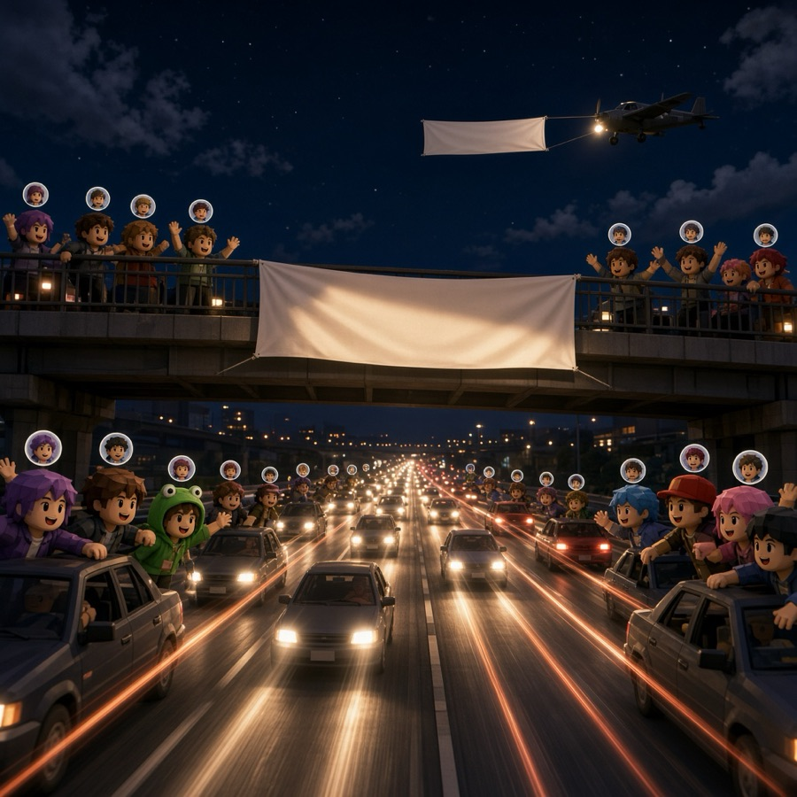
GROK AI
03
Üst Geçit Pankartı: Beni Affet
Gece çevre yolunda üst geçide asılan pankartlar; altından geçen arabalar korna çalar, korna beğenidir.
Paylaşım cümlesi · kurgusal örnek
“TikTok'ta üst geçide pankart astırıyorlar, biri Büşra beni affet yazdırdı, 4000 kişi korna çaldı.”
TürkiyeYeni dünyatabelakendi cümlençatışmaArketip C
Eve götürülen şeyPankartının karesi.
Paylaşılan karePankart ve altında far seli.
İzleyici
Tek cümlelik (yalnız ad) mesaj yazar; hediyeyle pankartı büyütür; "korna" yazarak oy verir. Ücretsiz giriş: Tek cümleni yaz (yalnız ad), direğe A4 ilan olarak asılır.
Yayıncı
Pankartları okur, kimin için asıldığını kadrajda söyler, korna sayısını duyurur; gerçek kişiyi hedef almaz.
Neden tutar
Herkes bu yazıyı yolda görmüştür; kendi cümleni dev bir pankartta görmek ve far selini izlemek duygusal ve komiktir.
Gerçek kişiyi hedef alan ya da taciz sayılabilecek özür baskısı riski: soyad, kullanıcı adı, telefon, hakaret süzülür; her metin onay kuyruğundan geçer; pankart yalnız ad içerir.
Telif
Yok (kurgu değil)
Yenilik denetimi. En yakın eski fikir: Tezahürat Sıralı Anons (claude_A_katilim in 07_ESKI_FIKIRLER); o tribün tezahürat pankartı, bu üst geçit mesaj ilanı ve korna; adıyla tekrar yok.
Bağımsız denetim: dünya yeni; yalnız mekanik şuna benziyor: Tezahürat Sıralı Anons: yazılan satırlar pankart olarak tribüne iner.
Fiyat tabelası
Gülüst geçitte bez pankart (60 sn)
Kalpışıklı reklam panosu
Çaybina giydirme
Donutuçağın çektiği gökyüzü pankartı (tüm ekran, 20 sn)
Adım adım yapım (11 adım)
Arketip C: katil.html kopyalanıp SC.pankart sahnesi eklenir; alttan bakış, çevre yolu, üst geçit, araba far selleri.
Sahne: üst geçit direği ve boş bez pankart alanı, yolda dizili arabalar, gökyüzünde uçak için boş şerit; üst 230 ve alt 560 piksel boş.
Giriş komutu: "ilan:" ile başlayan yorum, ad ve tek cümle (en çok 30 harf) olarak sıraya girer; ücretsiz yol A4 ilan olarak direğe asılır.
Hediye eşlemesi: Gül bez pankart 60 sn, Kalp ışıklı pano, Çay bina giydirme, Donut gökyüzü pankartı 20 sn tam ekran.
Tabela adımı: ilan merdiveni ekranın sağ alt köşesinin üstünde (alt 560 pikselin üzerinde) küçük direk levhası biçiminde durur; dört satır: Gül · Bez pankart, Kalp · Işıklı reklam panosu, Çay · Bina giydirme, Donut · Gökyüzü pankartı; satırda süre yazılıdır.
Sayaç: "korna" yazan her izleyici bir arabaya korna ve far çaktırır; en çok korna alan pankart üstte rekor satırında tutulur.
Kare adımı: pankart ekrandayken kamera altına iner, 3 sn far seli büyür, pankart tam karede 5 sn durur; metinde yalnız ad ve cümle, izleyicinin adı pankartın sağ alt köşesinde küçük imza olarak görünür.
Süzgeç adımı: yazılan metin doğrudan ekrana çıktığı için soyad, kullanıcı adı, telefon, hakaret ve gerçek kişiye yönelik talep sözlüğü; her ilan önce onay kuyruğuna düşer, moderatör onaylar; yalnız ad kalıbı dışındaki metin otomatik reddedilir.
Eve götürülen şey: pankart karesi (metin, ad imzası, korna sayısı) yayın sonunda 20 sn gösterilir.
Test: ?demo=1, ?seed=200; k ilan ekler, h korna yağdırır; yasaklı sözcük ve soyad kalıbı sınaması.
Yayın: cuma 23.00, 60 dakika; ölçülecek üç sayı: ilan başına korna, gökyüzü pankartı sayısı, onay kuyruğunda ret oranı.
İlk 10 dakika
0–1 dk: "Çevre yolundayız, üst geçit boş, kim kime sesleniyor"
Doğrulama: Üst geçide pankart asılması haberleşmiş bir olgu; aşk ve özür pankartı geleneği olarak doğrulanamadı, bu yüzden esin "sokak geleneği" olarak değil yaygın sosyal medya sahnesi olarak ele alınır. Pankart yasal izin konusu DOĞRULANMADI; yayında yalnız sanal.
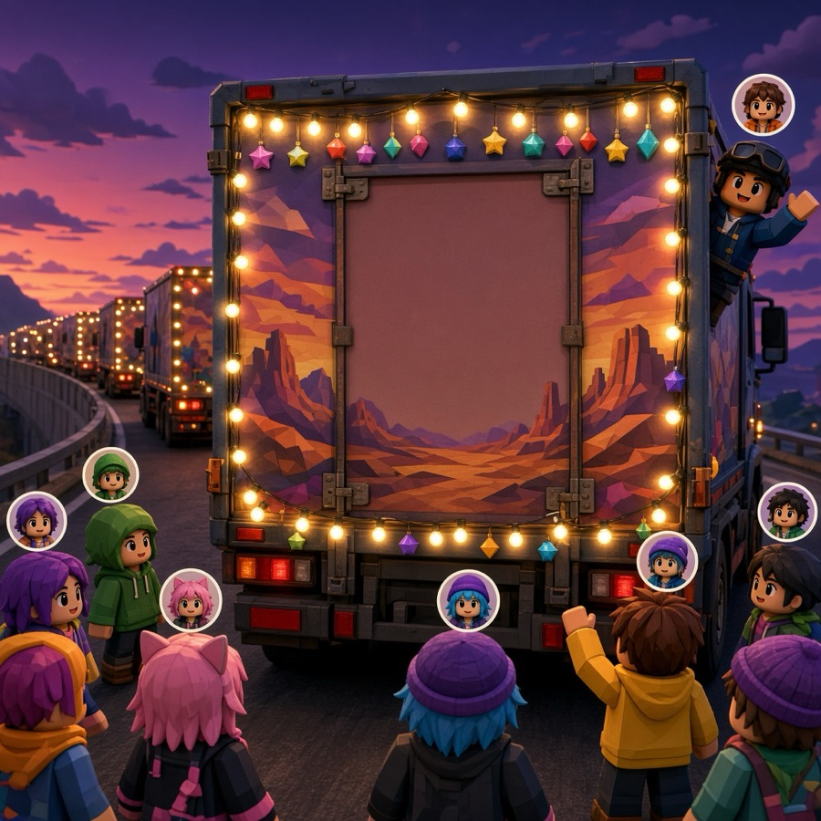
GROK AI
04
Kamyon Arkası: Yazını Yaz
Gece otoyolunda kamyon konvoyu; her kamyonun arkasında izleyicinin yazdığı söz.
Paylaşım cümlesi · kurgusal örnek
“TikTok'ta herkes kamyon arkası yazısı yazıyor, şuna bakın.”
TürkiyeAkrabası varkendi cümlenyakın planölçekArketip C
Eve götürülen şeyKamyonunun arkası; söz ve plaka yerinde adın.
Paylaşılan kareTek kamyonun arkası, yakın plan.
İzleyici
Sözünü yazar (en çok 40 harf); kamyona hediyeyle süs ekler. Ücretsiz giriş: Sözünü yaz (en çok 40 harf), sıradaki kamyona yazılır.
Yayıncı
Sözleri okur, konvoyun önüne geçer, mola yerinde "gecenin sözü"nü seçer.
Neden tutar
Herkes bu sözleri yolda okumuştur; kendi cümlesinin dorsede görünmesi paylaşılacak bir andır.
Ortak sayaç
Yoldaki kamyon; beğeniyle kat edilen kilometre, gerçek iller sırayla.
Argo, hakaret ve dinî kutsal sözlerin para karşılığı olması riski: argo ve hakaret süzgeci, hazır öneri havuzu, onay kuyruğu; trafik yönetmeliğinde yazı kısıtı iddiası DOĞRULANMADI, yayın sanal.
Telif
Yok (kurgu değil)
Yenilik denetimi. En yakın eski fikir: Kamyon süsleme ustaları (codex_A_katilim in 07_ESKI_FIKIRLER); o istasyonlarda hazır panel süslüyor, bu izleyicinin kendi yazdığı söz dorsede ve konvoy; adıyla tekrar yok.
Bağımsız denetim: eski havuzda akrabası var: Kamyon süsleme ustaları: istasyonlarda hazır paneli sırayla çizdirip kamyona taktırma.
Fiyat tabelası
Gülışık zinciri
Kalpezgili havalı korna
Çaykonvoyun önü (kamera sende)
Donutmola yerinde "gecenin sözü"nü seçen usta şoför (seçilen söz dorseye büyük yazılır)
Sahne: öndeki kamyonun dorsesi büyük, arkasında 5 kamyon silueti; her dorsede boş tahta panel ve ışık zinciri yeri.
Giriş komutu: "söz:" ile başlayan yorum en çok 40 harf kuyruğa girer, sıradaki kamyonun dorsesine yazılır; hazır öneri havuzundan "söz1" gibi seçim de çalışır.
Hediye eşlemesi: Gül ışık zinciri, Kalp ezgili havalı korna, Çay konvoyun önü (kamera o kamyonda 60 sn), Donut gecenin sözü seçimi.
Tabela adımı: yol tabelası biçiminde fiyat tabelası ekranın sağ üstünde, 230 piksel bandının altında; dört satır: Gül · Işık zinciri, Kalp · Ezgili havalı korna, Çay · Konvoyun önü, Donut · Usta şoför; satırların yanında sahibinin adı.
Sayaç: yoldaki kamyon sayısı ve "Ankara, Kırıkkale, Kayseri" gibi gerçek illerden geçen kilometre; beğeni ilerlettikçe il tabelası değişir.
Kare adımı: söz yazılınca kamera dorseye yakın plana gider, 5 sn tam karede durur; söz ortada, sağ altta plaka yerinde izleyicinin adı; 2 sn sonra konvoy geri çekilir.
Süzgeç adımı: söz ekrana çıktığı için argo, hakaret, siyasi ve dinî kutsal söz sözlüğü, 40 harf sınırı, hazır öneri havuzu; her söz moderatör onay kuyruğundan geçer, onaylanmazsa havuzdan rastgele söz verilir.
Mola yeri: her 15 dakikada Donut sahibi 3 sözden birini gecenin sözü seçer, dorseye büyük yazılır.
Eve götürülen şey: "kamyonunun arkası" kartı yayın sonunda 20 sn gösterilir.
Test: ?demo=1, ?seed=60; k söz ekler, g mola yeri tetikler.
Yayın: hafta sonu 23.00, 75 dakika; ölçülecek üç sayı: yazılan söz sayısı, onay oranı, yakın plan karesi başına yeni izleyici.
İlk 10 dakika
0–1 dk: "Konvoy yola çıktı, her kamyonun arkası boş, sözü siz yazın"
1–3 dk: "söz yazın, ilk kamyona yazalım"
3–5 dk: ilk söz dorsede, yakın plan 5 sn
5–7 dk: ışık zinciri ve havalı korna
7–9 dk: mola yeri, gecenin sözü seçimi
9–10 dk: tabela hatırlatılır, ikinci tur söz çağrısı
Doğrulama: Kamyon arkası yazıları halk edebiyatı konusu olarak doğrulandı. Korna ve şoför "usta" rolleri kurgudur.
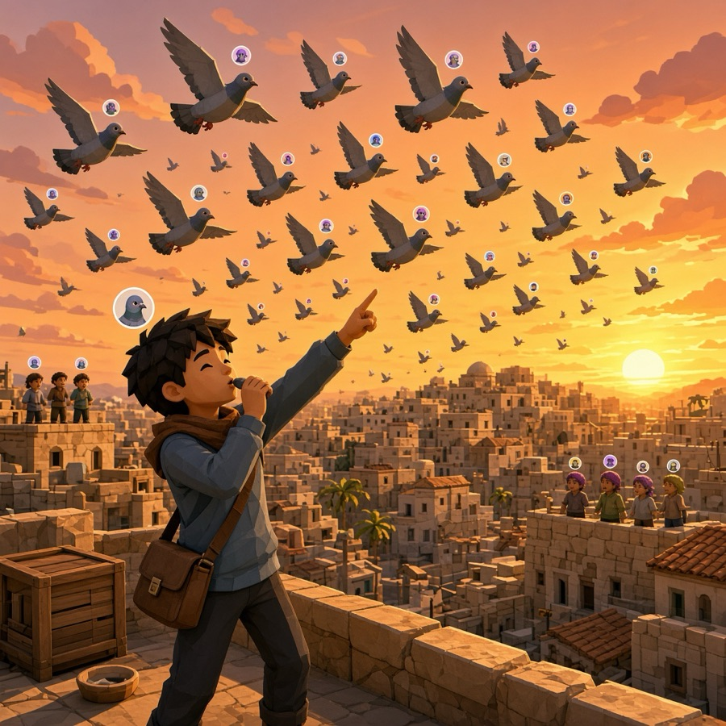
GROK AI
05
Kuşçular Damı: Güvercin Salma
Gün batımında taş evlerin damında kuşçu ıslık çalar, sürü havalanır; her izleyici bir güvercin olur.
Paylaşım cümlesi · kurgusal örnek
“TikTok'ta Urfa damında güvercin uçuruyorlar, 3000 kişi kuş olmuş.”
TürkiyeYeni dünyaçatışmayakın planölçekArketip C
Eve götürülen şeyKünye kartı: adın, sürü numaran.
Paylaşılan kareGün batımında adlarla dolu sürü.
İzleyici
"sal" yazar, adıyla güvercin sürüye katılır; hediyeyle takla, ayak süsü ya da sürü başı olur. Ücretsiz giriş: "sal" yaz, adınla bir güvercin sürüye katılır.
Yayıncı
Kuşçu olarak ıslık sayar, sürüyü kaldırır, taklacıyı yakın planda gösterir.
Neden tutar
Gün batımı ve sürü görüntüsü kendiliğinden güzel; izleyici sürünün parçası olur; taklacıya yakın plan kısa ve etkileyici.
Gerçek hayvan yok; kuş mezadı, kuş satışı ve para esprisi yok; hayvan refahı: çizgi kuş.
Telif
Yok (kurgu değil)
Yenilik denetimi. En yakın eski fikir: Yakın eski fikir bulunamadı: Kuş yemliği kamerası (07b sayısal liste) gerçek kuş kamerası; bu çizgi sürü ve kuşçu rolü; ayrı fikir.
Bağımsız denetim: dünya yeni; yalnız mekanik şuna benziyor: Vapur Martısı Simit Töreni: izleyici simidi için bir martı gelir, beğeni martı sürüsünü büyütür.
Fiyat tabelası
Gülayak süsü takan (halhal)
Kalptaklacı (havada takla, yakın plan)
Çaysürü başı (yönü belirler)
Donutdamın kuşçusu (ıslıkla çağırır, komşu damdan kuş indirir)
Adım adım yapım (11 adım)
Arketip C: katil.html kopyalanıp SC.kuscu sahnesi eklenir; dam, gün batımı, yarım daire sürü uçuşu.
Sahne: taş dam kenarı, kuşçu avatarı, komşu damlar, gökyüzünde sürü yeri; üst 230 ve alt 560 piksel boş.
Giriş komutu: "sal" yazan izleyici adıyla güvercin olur, ıslıkla sürüye katılır; sürü yarım daire dönerek büyür.
Hediye eşlemesi: Gül halhal (kuş ayağında boncuk ışık), Kalp taklacı (3 sn takla), Çay sürü başı (yön seçer), Donut kuşçu (ıslık, komşu damdan kuş çağırma).
Tabela adımı: ahşap dam tabelası biçiminde fiyat tabelası ekranın sağ üstünde, 230 piksel bandının altında; dört satır: Gül · Ayak süsü takan, Kalp · Taklacı, Çay · Sürü başı, Donut · Damın kuşçusu; satırda sahibinin adı.
Sayaç: "havadaki kuş N" ve akşam sonunda "dama dönen"; gün batımı ışığı sayaçla yavaşça turuncuya döner.
Kare adımı: taklacı rolünde kamera kuşa yakın plana gider (4 sn), sonra gökyüzü geniş plana çekilir; adlarla dolu sürü 6 sn sabit kalır, her kuşun altında küçük ad etiketi; izleyicinin kuşu sürünün başında parlar.
Süzgeç adımı: yalnız ad etiketi ekrana çıkar, serbest metin yok; ad sözlüğü (hakaret, marka); onay kuyruğu gerekmez, yalnız ad süzgeci yeter.
Eve götürülen şey: künye kartı (ad, sürü numarası, dama dönüş saati) yayın sonunda 20 sn gösterilir.
Test: ?demo=1, ?seed=300; k kuş ekler, g taklacı tetikler.
Yayın: akşam gün batımı saatine yakın 20.00, 60 dakika; ölçülecek üç sayı: eşzamanlı kuş, taklacı yakın planı sonrası yeni izleyici, dama dönen oranı.
İlk 10 dakika
0–1 dk: "Dama çıktık, güneş batıyor, kuşlar hazır"
1–3 dk: "sal yazın, her biriniz bir güvercin"
3–5 dk: ilk ıslık, sürü havalanır
5–7 dk: taklacı yakın plan 4 sn
7–9 dk: adlarla dolu sürü karesi 6 sn
9–10 dk: tabela hatırlatılır, komşu damdan kuş çağırma
Doğrulama: Şanlıurfa'da taklacı (Yapışan) güvercin ve halhal doğrulandı; halhal kaynakta kuşların ayaklarına takılan boncuklu halka. Mardin ve Antep'in kuşçuluk geleneği DOĞRULANMADI (kaynak Urfa). Kuş indirme terimi DOĞRULANMADI, kaynakta çıkmadı; rol adı olarak komşu damdan kuş çağırmak seçildi ve kurgu sayılır. Taklacının ıslıkla yönetilmesi DOĞRULANMADI.
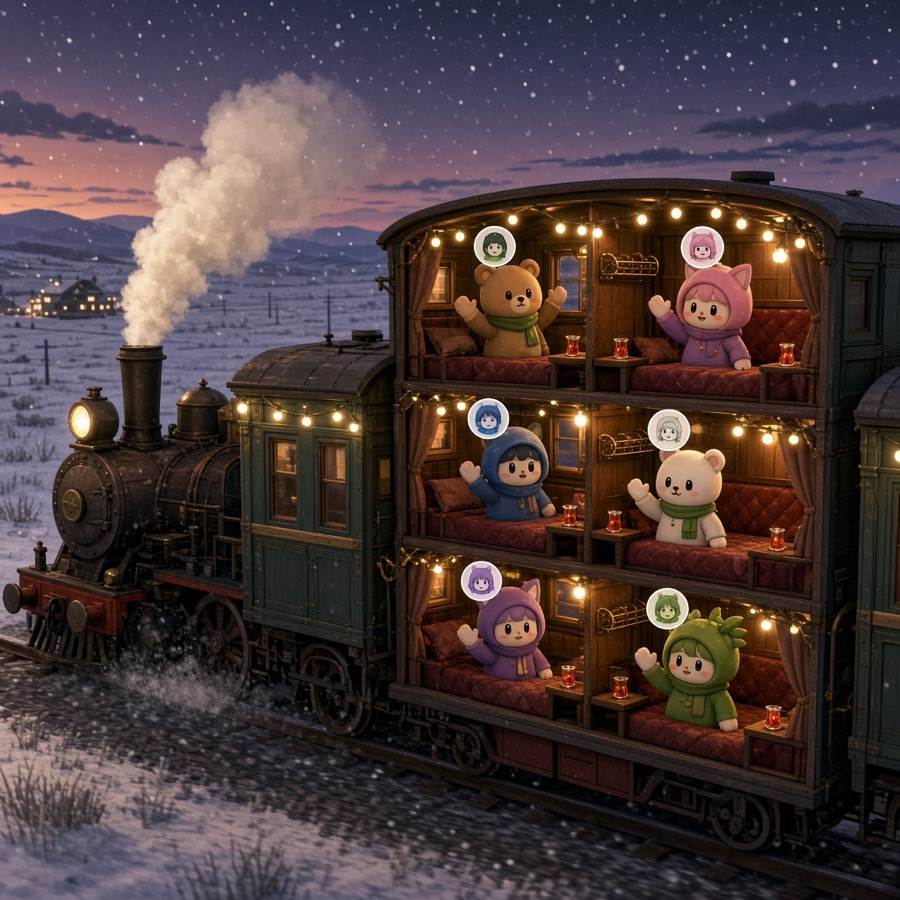
GROK AI
06
Doğu Ekspresi: Kompartımanı Süsle
Karlı bozkırda giden trenin kesiti; pencereden gerçek duraklar, izleyiciler kompartıman sahibi.
Paylaşım cümlesi · kurgusal örnek
“TikTok'ta Doğu Ekspresi'ne binmişler, şu an Sivas'tan geçiyoruz.”
TürkiyeYeni dünyaçatışmatabelaölçekArketip B
Eve götürülen şeyDelinmiş bilet: adın, vagon, koltuk, bindiğin il.
Paylaşılan kareIşıklı kompartıman, camda kar.
İzleyici
"bindim" ve şehrini yazar; hediyeyle kompartımanını süsler ya da arkadaşını çağırır. Ücretsiz giriş: "bindim" ve şehrini yaz, pulmanda koltuk; trenin geçtiği ilin hemşehrileri el sallar.
Yayıncı
Makinist yanında ya da konukla trenin ilerleyişini anlatır, durakları duyurur, peron halayı başlatır.
Neden tutar
Kış ve tren sahnesi sıcak ve dingin; her ilden gelen izleyici o durakta el sallar; uzun süre ekranda kalır.
Ortak sayaç
Rota: Ankara, Kayseri, Sivas, Erzincan, Erzurum, Kars; beğeniyle hız.
Kurum logosu yok; sezon dışında gerçek sefer iddiası yapılmaz.
Telif
Yok (kurgu değil)
Yenilik denetimi. En yakın eski fikir: Yakın eski fikir bulunamadı (tren anahtar sözcüğü başka bağlamlarda geçti: Hype Train Conductor, claude_G_kitle_hediye); bu Anadolu kış treni ve kompartıman; ayrı fikir.
Bağımsız denetim: dünya yeni; yalnız mekanik şuna benziyor: Wagon Trail (Chat Plays, kooperatif): ortak yolculuk metin macerası.
Fiyat tabelası
Gülkompartımana ışık zinciri
Kalpsemaver (bütün vagona çay)
Çayyataklı kompartıman (dört arkadaşını adıyla çağırır)
Donutmakinistin yanı (düdüğü çalar, sıradaki istasyonda peron halayı başlatır)
Adım adım yapım (12 adım)
Arketip B (mekân ve rol): yan kesit tren; vagon vagon bölmeler, her bölme bir koltuk grubu; web5/ekspres/index.html olarak yazılır.
Sahne: kesit görünüm, kar yağan bozkır, pencereden geçen duraklar (Kırıkkale, Kayseri, Sivas, Erzincan, Erzurum, Kars sırayla); sezon bilgisi alt satırda: aralık-mart.
Giriş komutu: "bindim" ve şehir; avatar boş bir koltuğa oturur, o şehir geçerken pencereden el sallar.
Hediye eşlemesi: Gül ışık zinciri, Kalp semaver (vagona çay sembolü), Çay yataklı kompartıman (4 arkadaşını adıyla çağırır), Donut makinistin yanı (düdük, peron halayı).
Tabela adımı: istasyon tabelası biçiminde fiyat tabelası sağ üstte, 230 piksel bandının altında; dört satır: Gül · Işık zinciri, Kalp · Semaver, Çay · Yataklı kompartıman, Donut · Makinistin yanı; yanında sahibin adı.
Sayaç: sıradaki istasyon ve kalan durak sayısı; beğeni hızı ilerletir, rota 6 duraklı.
Kare adımı: kamera en çok sahibi olan kompartıman penceresine 4 sn yaklaşır, kar, ışık zinciri ve izleyici adı penceredeki levhada 5 sn sabit durur; ardından vagon kesiti geniş plana çekilir.
Süzgeç adımı: yalnız şehir ve ad ekrana çıkar; serbest metin yok; ad ve şehir sözlüğü, kurum logosu içeren görsel yok.
İstasyon olayı: Donut sahibi istasyonda peron halayı başlatır; il adı ekranda büyür.
Eve götürülen şey: delinmiş bilet kartı yayın sonunda 20 sn gösterilir.
Test: ?demo=1, ?seed=250; k yolcu ekler, g istasyon olayını başlatır; sezon dışında "gerçek sefer" yazısı yok.
Yayın: akşam 20.30, 90 dakika; ölçülecek üç sayı: kompartıman başına izleyici, istasyon başına yorum, peron halayı sonrası yeni izleyici.
İlk 10 dakika
0–1 dk: "Trenimiz Ankara'dan yola çıktı, karlı bozkırdayız"
1–3 dk: "bindim ve şehrinizi yazın, camdan el sallayın"
3–5 dk: Kırıkkale geçilir, ilk ışık zinciri
5–7 dk: Kayseri, semaver turu
7–9 dk: kompartıman karesi 5 sn
9–10 dk: tabela hatırlatılır, sıradaki istasyon Sivas
Doğrulama: Güzergâh ve sezon doğrulandı (Kırıkkale ilk haberlerde duraklar arasında, seed'de yoktu, eklendi). Ankara-Kars yönünde Erzincan ve Erzurum turistik durak, Kars-Ankara yönünde İliç, Divriği, Sivas molası. Seferler pazartesi, çarşamba, cuma Ankara'dan. Pulman koltuk, yataklı kompartıman ve semaver DOĞRULANMADI (vagon tipi kaynakta net değil). Kompartıman süsleme esinleniş, gerçek uygulama değil.
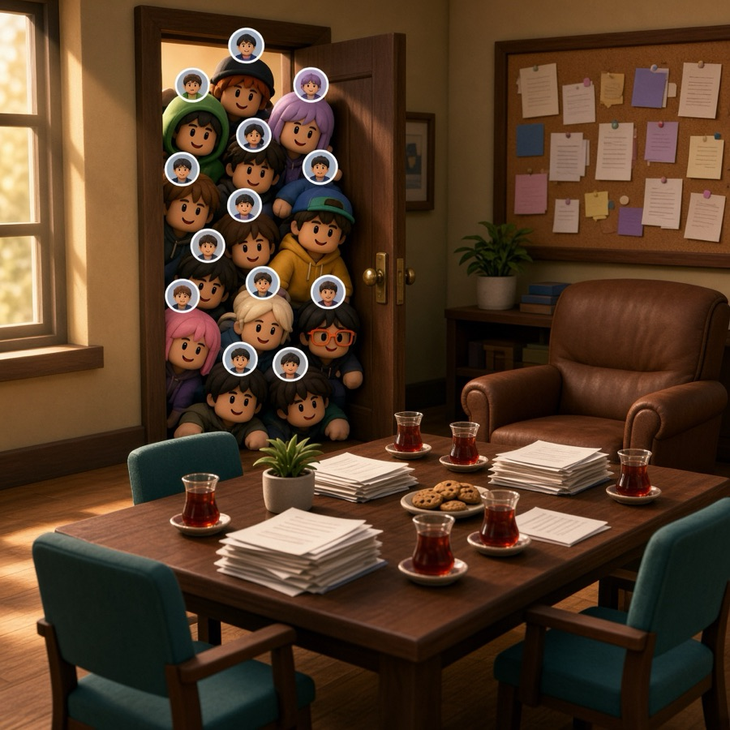
GROK AI
07
Öğretmenler Odası
Okulda öğrencinin giremediği odaya kapı aralığından bakan kafalar; müdür koltuğu hediyeyle, zil sende.
TürkiyeAkrabası varçatışmatabelayakın planArketip B
Eve götürülen şeyBelge: adın ve "öğretmenler odasına girmiştir".
Paylaşılan kareKapı aralığındaki kafalar ve masadaki çaylar.
İzleyici
"tebeşir" yazar, kapı aralığından bakan öğrenci olur; komik sınav cevabı yazar; hediyeyle odaya girer. Ücretsiz giriş: "tebeşir" yaz, kapı aralığından bakan öğrenci olursun.
Yayıncı
Öğretmen rolünde odayı açar, "sınav kâğıdı"nı okur, zili çalar; gerçek kişi ya da okul anılmaz.
Neden tutar
Herkesin merak ettiği yasak oda; hediye ile "içeri girmek" duygusu çok net.
Ortak sayaç
Okunan kâğıt; teneffüse kalan süre (5 dk döngü).
Dayanak
Okulda öğrencinin giremediği oda (arketip); zümre öğretmenler kurulu ve öğretmen nöbeti MEB mevzuatında tanımlı. https://www.memurlar.net/haber/853217
Kural riski
Gerçek okul ve öğretmen adı yok; not ve aşağılama esprisi yok; çocuk izleyicilere yönelik içerik hassasiyeti: yayın yetişkin esprisiyle, yaş sınırına uygun.
Telif
Yok (kurgu değil)
Yenilik denetimi. En yakın eski fikir: Teneffüs Zili (claude_D_siradisi in 07_ESKI_FIKIRLER); o 40 dk ders sakinliği ve sınıf defteri, bu öğretmenler odasının içi ve müdür koltuğu; adıyla tekrar yok.
Bağımsız denetim: eski havuzda akrabası var: Teneffüs Zili: 40 dk ders sakinliği, yorumlar sınıf defterine yazılır, zil sayacı.
Fiyat tabelası
Gülnöbetçi öğrenci (içeri girer, sınıf defterini getirir)
Kalpstajyer öğretmen (masada yer)
Çayzümre başkanı (okunacak "sınav kâğıdını" seçer: izleyicilerin yazdığı komik cevaplar)
Donutmüdür koltuğu (zili çalar, "bugün tatil" ilan eder)
Adım adım yapım (12 adım)
Arketip B: tek oda iç mekânı; web5/ogretmenler/index.html yazılır, uzun masa ve koltuklar seats[] olarak tanımlı.
Sahne: uzun masa, çay bardakları, sınav kâğıtları, pano, kapı aralığında üst üste dizili kafalar; üst 230 ve alt 560 piksel boş.
Giriş komutu: "tebeşir" yazan izleyici kapı aralığında kafa olur; hediyeyle masaya geçer.
Hediye eşlemesi: Gül nöbetçi öğrenci (içeri girer), Kalp stajyer (masada yer), Çay zümre başkanı (kâğıt seçer), Donut müdür koltuğu (zil, tatil ilanı).
Tabela adımı: oda levhası biçiminde fiyat tabelası sağ üstte, 230 piksel bandının altında; dört satır: Gül · Nöbetçi öğrenci, Kalp · Stajyer öğretmen, Çay · Zümre başkanı, Donut · Müdür koltuğu; yanında sahibin adı.
Sayaç: "okunan kâğıt N" ve teneffüse kalan süre (5 dakika döngü); süre bitince zil ve herkes kapıdan çekilir.
Kare adımı: kapı kamerası odaya bakar ve 5 sn sabit kalır: aralıktaki kafalar üst üste, masada çaylar; izleyicinin adı kendi kafasının altında; müdür koltuğu devrinde kamera koltuğa 3 sn yaklaşır.
Süzgeç adımı: komik sınav cevabı ekrana çıkar; "cevap:" ile yazılan metin hakaret, gerçek öğretmen ve okul adı, cinsellik ve aşağılama sözlüğünden geçer, onay kuyruğuna düşer; zümre başkanı yalnız onaylanmış kâğıt okur.
Tatil ilanı: Donut sahibi zili çalar, ekranda "bugün tatil" yazar, 10 sn konfeti.
Eve götürülen şey: "öğretmenler odasına girmiştir" belgesi yayın sonunda 20 sn gösterilir.
Test: ?demo=1, ?seed=120; k kafa ekler, z zili çalar.
Yayın: hafta içi 20.00, 60 dakika; ölçülecek üç sayı: onaylı cevap sayısı, zil anında izleyici, tatil ilanı sonrası yorum.
İlk 10 dakika
0–1 dk: "Hiç girmediğiniz oda: öğretmenler odası"
1–3 dk: "tebeşir yazın, kapı aralığından bakın"
3–5 dk: ilk sınav kâğıdı okunur
5–7 dk: çay, stajyer, zümre başkanı
7–9 dk: kapı karesi 5 sn
9–10 dk: tabela hatırlatılır, zil çalar, mola
Doğrulama: Zümre başkanı ve nöbet MEB mevzuatında var. Öğrenci nöbeti okul uygulaması, yönetmelik maddesi değil. "Öğretmenler odası" için mevzuat maddesi bulunamadı (DOĞRULANMADI); rol adları kurgudur.
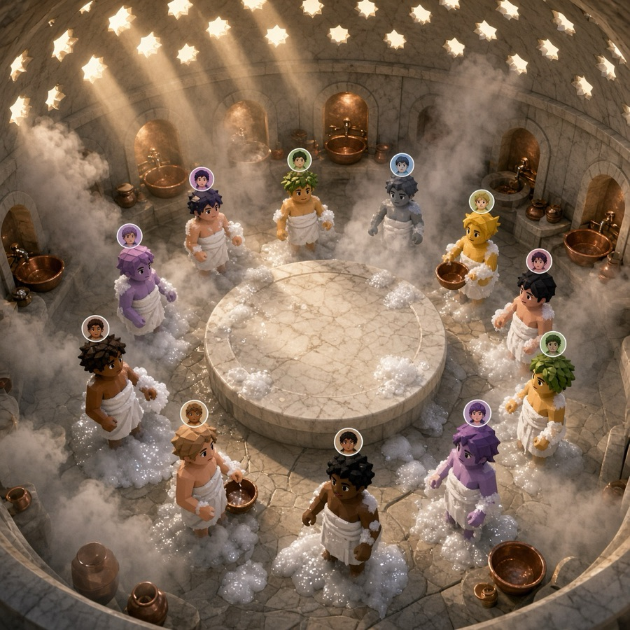
GROK AI
08
Hamam: Göbek Taşı Sırası
Kubbeli hamamda peştemallı yuvarlak karakterler; hediye atan göbek taşına yatar, hamam anası şerbet dağıtır.
Paylaşım cümlesi · kurgusal örnek
“TikTok'ta hamam açmışlar, hediye atan göbek taşına yatıyor.”
TürkiyeYeni dünyaçatışmatabelaabsürt kılıkArketip B
Eve götürülen şey"Sıhhatler olsun" kartı.
Paylaşılan kareGöbek taşı ve çevresinde köpüklü kalabalık.
İzleyici
"tas" yazar, kurna başına oturur; hediyeyle köpük, kese ya da göbek taşına çıkar. Ücretsiz giriş: "tas" yaz, kurna başına otur.
Yayıncı
Hamam anası rolünde şerbet dağıtır, darbukayı başlatır, göbek taşına kimi çağıracağını seçer.
Neden tutar
Herkes hamamı bilir; yuvarlak, köpüklü avatarlar komik ve zararsız; buhar ve ışık uzun süre ekranda kalır.
Ortak sayaç
Dökülen tas; buhar yüzde 100 olunca kubbenin yıldız deliklerinden ışık süzülür.
Çıplaklık yok; karakterler baştan aşağı peştemal ve köpükle kaplı, çizgi tip; cinsiyet ayrımı yapılmaz; kadın ve erkek hamam geleneği ayrı olsa da yayında tek karma sahne olarak soyut tutulur.
Telif
Yok (kurgu değil)
Yenilik denetimi. En yakın eski fikir: Yakın eski fikir bulunamadı (hamam anahtar sözcüğü 07, 07b ve 13_TOHUMLAR içinde yok); ayrı fikir.
Bağımsız denetim: eski listelerde yakın eşi yok.
Fiyat tabelası
Gülköpük torbası (üstün köpükle kaplanır)
Kalpkese (yakın plan)
Çaygöbek taşı (ortada 60 sn)
Donuthamam anası (şerbet dağıtır, darbukayı başlatır, göbek taşına kimi çağıracağını seçer)
Adım adım yapım (12 adım)
Arketip B: kubbeli iç mekân; web5/hamam/index.html; kubbe, göbek taşı, kurnalar, yarım daire oturma düzeni seats[].
Sahne: yıldız delikli kubbe, ortada yuvarlak göbek taşı, çevrede kurna başları, bakır tas ve buhar; karakterler peştemallı yuvarlak çizgi tipler.
Giriş komutu: "tas" yazan izleyici kurna başına oturur, adı kurnanın üstünde görünür.
Hediye eşlemesi: Gül köpük torbası, Kalp kese (yakın plan), Çay göbek taşı (ortada 60 sn), Donut hamam anası (şerbet, darbuka, taşa çağırma).
Tabela adımı: mermer levha biçiminde fiyat tabelası sağ üstte, 230 piksel bandının altında; dört satır: Gül · Köpük torbası, Kalp · Kese, Çay · Göbek taşı, Donut · Hamam anası; yanında sahibin adı.
Sayaç: dökülen tas sayısı; buhar yüzde 100 olunca kubbe deliklerinden ışık sütunu iner.
Kare adımı: göbek taşı devrinde kamera kubbeden kuşbakışı iner ve 5 sn durur: ortada taş, çevresinde köpüklü kalabalık; adlar kurna başlarında; izleyicinin adı taşın üstündeki karakterin altında.
Süzgeç adımı: yalnız ad etiketi ekrana çıkar; ad sözlüğü; çıplak imge üretmeyen kıyafet kuralı: tüm avatarlar peştemal ve köpükle kaplı; serbest metin yok.
Şerbet turu: Donut sahibi darbukayı başlatır, kalabalık tas dökerek ritim tutar, sayaç hızlanır.
Eve götürülen şey: "sıhhatler olsun" kartı (ad, kurna no) yayın sonunda 20 sn gösterilir.
Test: ?demo=1, ?seed=150; k kurna ekler, s buhar sayacını artırır; avatar görselinde çıplaklık kontrolü.
Yayın: hafta sonu 21.30, 75 dakika; ölçülecek üç sayı: göbek taşı devri başına yeni hediye, buhar yüzde 100'e ulaşma süresi, kart ekranı görüntü alma oranı.
İlk 10 dakika
0–1 dk: "Hamamdayız, kubbede yıldızlar var, buhar yükseliyor"
1–3 dk: "tas yazın, kurna başına oturun"
3–5 dk: ilk köpük, ilk tas
5–7 dk: kese yakın plan
7–9 dk: göbek taşı karesi 5 sn
9–10 dk: tabela hatırlatılır, hamam anası darbukayı başlatır
Doğrulama: Natır, tellak, kese, göbek taşı doğrulandı (natır kadın, tellak erkek görevli). Gelin hamamı ve hamam bohçası (tas, sabun, takunya, peştemal, kese) doğrulandı. Hamam anası rolü DOĞRULANMADI, kaynakta çıkmadı; kurgu rol adı olarak kalır ve "hamam anası" etiketi gerçek rol gibi sunulmaz.
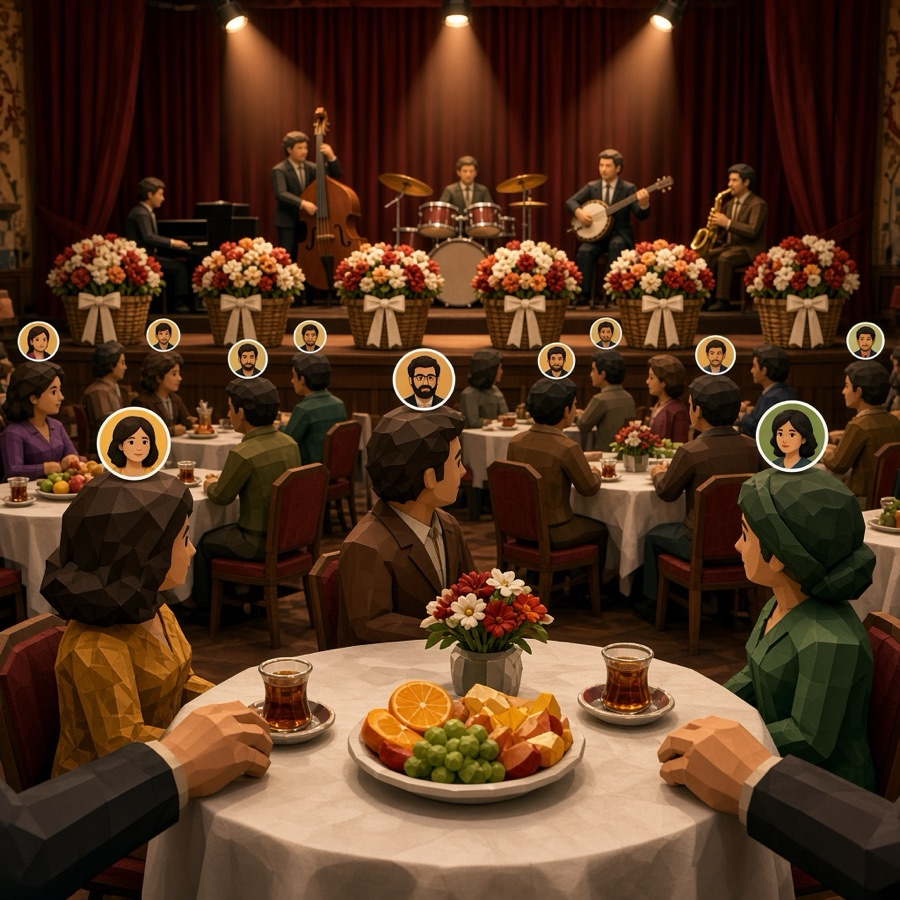
GROK AI
09
Gazino 1975: Sahneye Çiçek Sepeti
Kadife perdeli gazino, yuvarlak masalar; sahneye adın yazılı kurdeleli çiçek sepeti gönderirsin.
Paylaşım cümlesi · kurgusal örnek
“TikTok'ta gazino açmışlar, sahneye adına çiçek sepeti gönderiyorsun.”
TürkiyeYeni dünyaçatışmatabelayakın planArketip B
Eve götürülen şeyGazino fotoğrafçısının çektiği masa fotoğrafı.
Paylaşılan kareSahne önünde kurdeleli sepetler.
İzleyici
"masa" yazar, arka masaya oturur; hediyeyle gül, meyve tabağı, sepet ya da ön masa ve istek şarkı alır. Ücretsiz giriş: "masa" yaz, arka masaya otur.
Yayıncı
Sunucu olarak masaları anons eder, sepetleri sayar, istek şarkıyı seçer; kişi adı ya da gerçek sanatçı kullanmaz.
Neden tutar
Pavyon yayınının aile sürümü: aynı sahne düzeni, kurdeleli sepet gibi nostaljik ve zararsız hediye; anne babanın hatırasına dokunur.
Alkol, sigara, "kons" yok; gerçek sanatçı adı, sesi ve repertuvarı yok; müzik telifsiz; sepet ve masa anonsu kişi hakkında konuşturulmaz.
Telif
Yok (kurgu değil)
Yenilik denetimi. En yakın eski fikir: Yakın eski fikir bulunamadı (gazino ve pavyon anahtar sözcüğü eski havuzda yok; yalnız ülke listesinde "disko-pavyon pisti" geçiyor).
Bağımsız denetim: eski listelerde yakın eşi yok.
Fiyat tabelası
Gülsahneye tek gül
Kalpmasana meyve tabağı ve bir sıra öne
Çaysahneye adın yazılı kurdeleli çiçek sepeti
Donuten ön masa ve istek şarkı (sunucu "… masasından" diye anons eder)
Adım adım yapım (12 adım)
Arketip B: kadife perdeli salon iç mekânı; web5/gazino/index.html; yuvarlak masa koltukları seats[], ön masalar hediyeyle açılır.
Sahne: kadife perde, küçük orkestra, yuvarlak masalar, sahne önü sepet sırası; birinci kişi bakış kameranı arka masadan tutar.
Giriş komutu: "masa" yazan izleyici arka masaya oturur; avatar masada alkış yapar.
Hediye eşlemesi: Gül tek gül sahneye, Kalp meyve tabağı ve bir sıra ön, Çay kurdeleli sepet (adın kurdelede), Donut ön masa ve istek şarkı.
Tabela adımı: gazino afişi biçiminde fiyat tabelası sağ üstte, 230 piksel bandının altında; dört satır: Gül · Tek gül, Kalp · Meyve tabağı, Çay · Çiçek sepeti, Donut · Ön masa ve istek şarkı; yanında sahibin adı.
Sayaç: sahnedeki sepet sayısı ve 12 şarkılık program ilerleyişi; program sonunda "son şarkı" anonsu.
Kare adımı: sepet gelince kamera sahneye yaklaşır, 4 sn sonra masalar geri plana düşer; sahne önünde kurdeleli sepetler ve kurdelelerde ad 5 sn sabit kalır; izleyicinin adı sepetin kurdelesinde.
Süzgeç adımı: kurdeledeki ad ve sunucunun okuduğu masa adı ekrana çıkar; ad sözlüğü (hakaret, gerçek sanatçı ve marka adı); serbest metin yok; istek şarkı yalnız telifsiz hazır listeden seçilir.
Anons: Donut sahibi istek şarkıyı hazır listeden seçer, sunucu "… masasından" anonsunu okur.
Eve götürülen şey: gazino fotoğrafçısı kartı (masa, ad, sepet sayısı) yayın sonunda 20 sn gösterilir.
Test: ?demo=1, ?seed=120; k masa ekler, g sepet gönderir; müzik dosyası telifsiz mi kontrolü.
Yayın: hafta sonu 21.00, 75 dakika; ölçülecek üç sayı: sepet sayısı, ön masa değişimi, anons başına yorum.
Doğrulama: Gazino, assolist ve çiçek gönderme doğrulandı; "sepet" biçiminin tam olarak o on yıla özgü olduğu DOĞRULANMADI (anılar tarihsiz). Kurdeleli sepetin sahneye getirilmesi ve sunucunun "... masasından" anonsu da DOĞRULANMADI; kurgu uyarlama. 1975 yılı adda dönem hissi için, yıl iddiası yok.
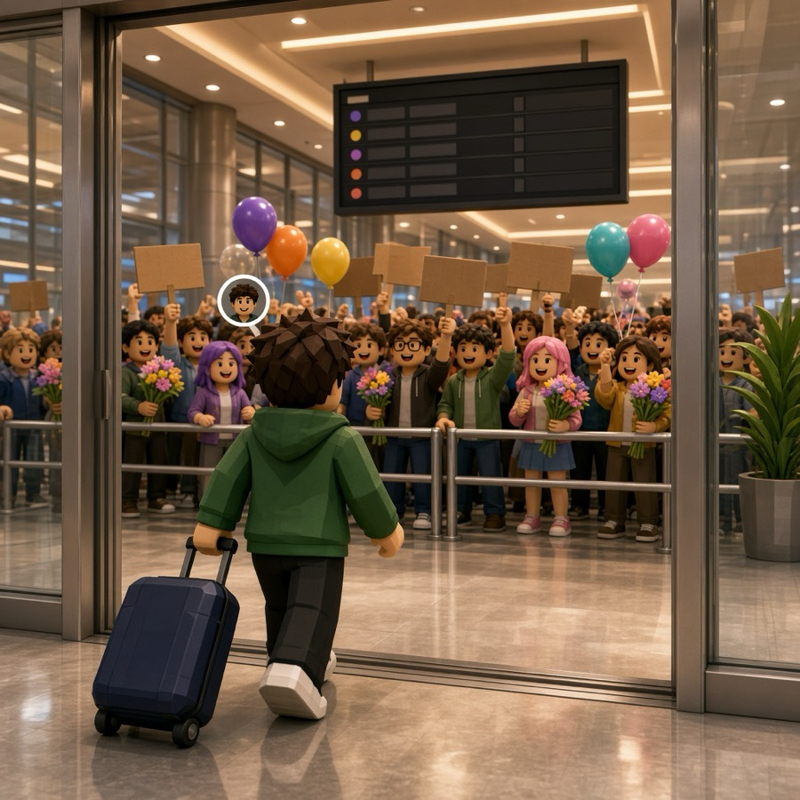
GROK AI
10
Gelen Yolcu: Seni Karşılayan Var
Gelen yolcu salonunda kayar kapı 20 saniyede bir açılır; sıradaki izleyici valizle çıkar, bariyerin arkasındaki kalabalık onun adını yazan kartonları kaldırır.
Paylaşım cümlesi · kurgusal örnek
“TikTok'ta gelen yolcu kapısı açmışlar, kapıdan çıktım, 2000 kişi adımı yazmış karton tutuyordu.”
TürkiyeAkrabası varadına törenyakın plantabelaArketip B
Eve götürülen şeyKarşılama karesi: kapıdan çıkışın ve üstünde adın yazılı yüzlerce karton.
Paylaşılan kareKapıdan çıkan avatar ve karşısında kartonlu kalabalık.
İzleyici
"karşıla" yazar, bariyerin arkasına geçer ve kapıdan çıkanın adını kaldırır; üç kişiyi karşılayınca sırası gelir, kapıdan kendisi çıkar. Hediyeyle çiçek, davul zurna, kırmızı halı ya da anons alır. Ücretsiz giriş: "karşıla" yazmak; üç kişiyi karşılayınca kapıdan çıkmak da ücretsizdir.
Yayıncı
Kapıyı açar, kapıdan çıkanı adıyla anons eder, "şimdi sıra @… " der, uçuş tabelasını okur, kalabalığı yönetir.
Neden tutar
Herkes hayatında bir kere kapıda beklemiş ya da kapıdan çıkmıştır. Adın yüzlerce kartonda görünmesi tek karede anlatılır. Tören sahibi arkadaşını getirir.
Ortak sayaç
Bugün karşılanan yolcu; gelen uçuşlar tabelasında şehir şehir sayı.
Yalnız ad ve şehir; hava yolu ve havalimanı markası yok; dinî karşılama sahnesi yok; gerçek uçuş ya da gerçek yolcu anılmaz.
Yenilik denetimi. En yakın eski fikir: Border Control (07_ESKI_FIKIRLER): izleyici ülkesiyle sıraya girer, yayıncı damga vurur; Kule Kontrol (07_ESKI_FIKIRLER): yorum yazan uçak olur. Burada kapıdan çıkan izleyiciye kalabalık adını kaldırır ve sıra karşılayarak kazanılır.
Bağımsız denetim: eski havuzda akrabası var: Asker Uğurlaması: otogar önü, davul zurna, kalabalık çemberi, tören sahibinin adı pankartta; ayrıca Suneung:….
Fiyat tabelası
Gül"aktarmalı geldi" (çiçek buketi verilir)
Kalp"direkt uçuş" (davul zurnayla karşılanır)
Çay"VIP çıkış" (kırmızı halı, kapıda araba)
Donut"özel uçak indi" (anons yapılır, bütün salon ayağa kalkar
Rolisterse bir arkadaşı adına karşılama yaptırır: yalnız ad ve şehir)
Adım adım yapım (12 adım)
Arketip B (3D mekân, birinci kişi): gelen yolcu salonu, kayar kapı, bariyer; web5/gelen/index.html; web4/katil.html olay sözleşmesi, 1080×1920 canvas.
Sahne: parlak salon, ortada kayar kapı, bariyerin arkasında 60 kişilik kalabalık sırası, tepede boş uçuş tabelası; üst 230 ve alt 560 piksel boş. Kapı 20 saniyede bir açılır.
Giriş komutu: "karşıla" yazan izleyici bariyerin arkasına geçer, avatarı karton kaldırır. Her kapı açılışında karton kaldıran sayılır; üç kapı karşılayan sıraya girer.
Hediye eşlemesi: Gül "aktarmalı geldi" (buket), Kalp "direkt uçuş" (davul zurna sesi), Çay "VIP çıkış" (kırmızı halı), Donut "özel uçak indi" (anons ve salon ayakta, arkadaşı adına karşılama).
Tabela adımı: uçuş tabelası biçiminde fiyat tabelası sağ üstte, 230 piksel bandının altında; dört satır: Gül · Aktarmalı geldi, Kalp · Direkt uçuş, Çay · VIP çıkış, Donut · Özel uçak indi; yanında sahibin adı. Tek ekran görüntüsünde okunur.
Kapı akışı: sıradaki izleyici valiziyle çıkar, kalabalık adını kaldırır; yayıncı adı anons eder. Çıkış sıralaması: üç kişiyi karşılayan, sonra hediye alan.
Kare adımı: kapıdan çıkış anında kamera bariyerin arkasından kapıya döner, çıkan avatar ve kartonlu kalabalık 5 sn sabit durur; izleyicinin adı ortadaki kartonda ve alt şeritte aynı anda görünür.
Süzgeç adımı: karton üzerindeki ad ve şehir ile arkadaş adına karşılama metni ekrana çıkar; yalnız "ad + şehir" kalıbı kabul edilir; soyad, telefon, marka, gerçek kişi ve hakaret süzülür; her kayıt onay kuyruğuna düşer, moderatör onaylar.
Donut anı: Donut gelince anons yapılır, salon ayağa kalkar, kapı iki kez açılır; arkadaşı adına karşılama da bu anda gösterilir.
Sayaç: "bugün karşılanan yolcu N" ve gelen uçuşlar tabelasında şehir şehir sayı; yeni şehir gelince satır yanar.
Eve götürülen şey: karşılama karesi kartı (çıkış anı, ad, şehir) yayın sonunda 20 sn gösterilir; kare zamanı kaydedilir.
Test: ?demo=1, ?seed=60; k karşılayan ekler, c kapıyı açar; ad kalıbı sınaması. İlk yayın: hafta sonu 20.00, 60 dakika; ölçülecek üç sayı: üç kişiyi karşılayıp sıra alan oranı, tören sahibinin getirdiği izleyici, karşılama karesi paylaşımı.
İlk 10 dakika
0–1 dk: "Gelen yolcu salonundayız, kapı açılıyor, 'karşıla' yazın"
1–3 dk: ilk kapı, ilk çıkan yolcu, adlar kalkar
3–5 dk: "üç kişiyi karşılayan kapıdan çıkar", ilk gül buketi
5–7 dk: davul zurna sesi, kare 5 sn tutulur
7–9 dk: Donut anonsu, salon ayakta
9–10 dk: tabela hatırlatılır, arkadaşı adına karşılama çağrısı
Doğrulama: Havalimanında çiçekle ve törenle karşılama haberleri doğrulandı; ad yazılı pankartın bir büyük havalimanında yasaklanıp bekleme salonuna taşındığı haber olarak var (tarih ve kuralın güncel durumu DOĞRULANMADI), bu yüzden karton yalnız sanal sahnede. Havalimanında davul zurnayla karşılama için uygun kaynak bulunamadı: DOĞRULANMADI. Rol adları ve "aktarmalı geldi" gibi tabela adları kurgu.
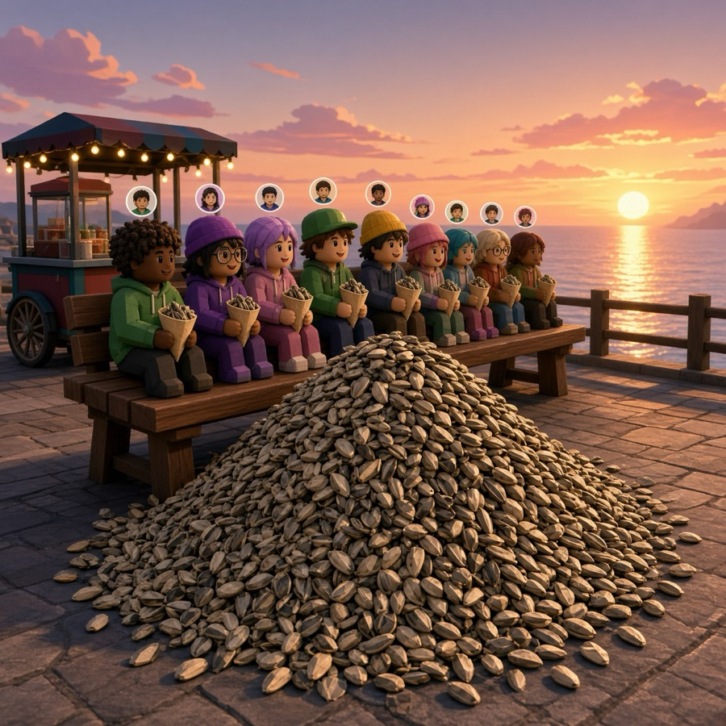
GROK AI
11
Çekirdek Bankı: Kabuk Dağı
Sahil bankında her beğeni bir çekirdek; kabuk dağı günler boyu bir tona doğru büyür.
Paylaşım cümlesi · kurgusal örnek
“TikTok'ta 5000 kişi çekirdek çitliyor, kabuk dağı bir tonu geçti.”
TürkiyeYeni dünyaçatışmatabelaölçekArketip C
Eve götürülen şey"Bu dağın 312 kabuğu benim" etiketi.
Paylaşılan kareBank ve arkasında dağ.
İzleyici
"çıt" yazar, banka oturur; beğeniyle çekirdek çitler; hediyeyle külah ve kamp seçimi. Ücretsiz giriş: Her beğeni bir çekirdek; "çıt" yaz, banka otur.
Yayıncı
Bankta oturur, çıt sesini yönetir, tuzlu ve tuzsuz oylamasını açar, dağın kilosunu duyurur.
Neden tutar
Sakin, ASMR benzeri ses ve uzayan dağ; hedef "1 ton" günlere yayılır, tekrar izleyici getirir.
Ortak sayaç
Kabuk dağı kilosu; hedef "1 ton", günler boyu birikir.
Gerçek sahilde kabuk atma özendirilmez: yayında ortak süpürme görevi ve çevre mesajı; hediyeyle gerçek çekirdek ya da çevre kirliliği yok; belediyeler bazı sahillerde ceza veriyor.
Telif
Yok (kurgu değil)
Yenilik denetimi. En yakın eski fikir: Yakın eski fikir bulunamadı (çekirdek yalnız "Sizde Ne Derler?" ağız haritasında geçti); ayrı fikir.
Bağımsız denetim: eski listelerde yakın eşi yok.
Fiyat tabelası
Gülkülah (50 çıt birden)
Kalpbanka çay tepsisi
Çaytuzlu ve tuzsuz kampını seçtiren
Donutçekirdekçi arabası (herkese külah, 30 sn çıt yağmuru)
Adım adım yapım (12 adım)
Arketip C: katil.html kopyalanıp SC.cekirdek sahnesi eklenir; yan görünüş, bank ve büyüyen dağ.
Sahne: sahil bankı, deniz, akşam ışığı, banka oturan 10 sıralı avatar yeri, önünde kabuk dağı; çekirdekçi arabası uzakta.
Giriş komutu: "çıt" yazan izleyici banka oturur, her beğeni bir çekirdek ve çıt sesi; dağ her 50 çıtta büyür.
Hediye eşlemesi: Gül külah (50 çıt), Kalp çay tepsisi, Çay tuz kampı oylaması, Donut çekirdekçi arabası (30 sn çıt yağmuru).
Tabela adımı: çekirdekçi tezgâhı tabelası biçiminde fiyat tabelası sağ üstte, 230 piksel bandının altında; dört satır: Gül · Külah, Kalp · Çay tepsisi, Çay · Tuzlu mu tuzsuz mu, Donut · Çekirdekçi arabası; yanında sahibin adı.
Sayaç: kabuk dağı kilosu ve "1 ton" hedefi; günlük toplam bir sonraki yayında devam eder (durum.json).
Kare adımı: dağ yeni eşiği geçince kamera yan plana çekilir, bank ve arkasındaki dağ 5 sn tam karede durur; bankın üstünde izleyici adları, dağın dibinde "bu dağın N kabuğu benim" kartı.
Süzgeç adımı: yalnız ad ve kamp seçimi ekrana çıkar; serbest metin yok; ad sözlüğü; onay kuyruğu gerekmez.
Ortak süpürme: yayın sonunda "süpür" yazan herkes dağı süpürür; dağ sıfırlanır, toplam kilo kasada kalır (çevre mesajı).
Eve götürülen şey: "bu dağın 312 kabuğu benim" etiketi yayın sonunda 20 sn gösterilir.
Test: ?demo=1, ?seed=500; k çıt ekler, l beğeni yağdırır; durum.json kaydı yeniden başlatmada korunur.
Yayın: akşam 21.00, 90 dakika, günlük seri; ölçülecek üç sayı: günlük kabuk kilosu, ikinci gün geri dönen izleyici, çekirdekçi arabası başına yeni hediye.
Doğrulama: Çekirdek çitleme kültürü ve belediye cezaları doğrulandı (Üsküdar, Mezitli, İskenderun). Kültürel köken ve sosyal anlamı kaynakta yok (DOĞRULANMADI). Kaldıraç 2 (tabela) tohumda yoktu, en az üç kaldıraç şartı için eklendi.
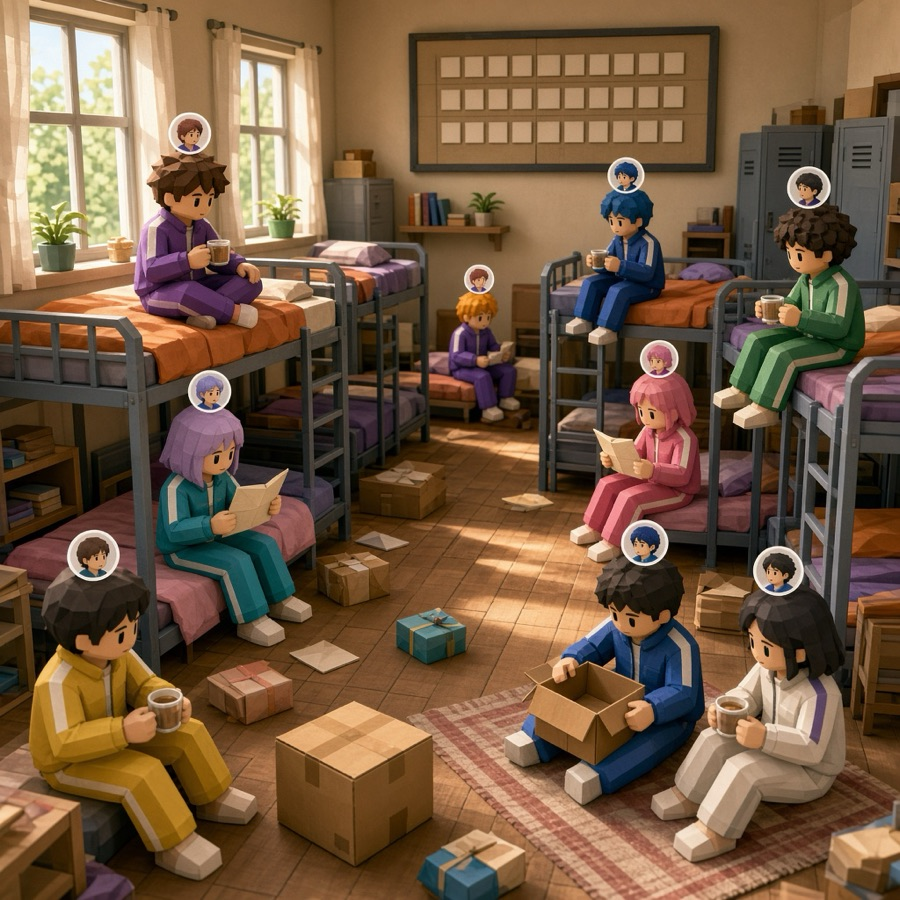
GROK AI
12
Şafak Sayar: Koğuş
Ranzalı koğuşta 30 yayınlık sezon; her yayın bir gün, şafak bir düşer, son yayın tezkere; en pahalı hediye bedelli.
Paylaşım cümlesi · kurgusal örnek
“TikTok'ta askerlik yapıyorlar, en pahalı hediyeyi atan bedelli oluyor.”
TürkiyeAkrabası vartabelaçatışmaadına törenArketip B
Eve götürülen şeyTezkere kartı: adın, tertip, memleket.
Paylaşılan kareDuvardaki şafak sayacı ve ranzalar.
İzleyici
"tertip" ve memleketini yazar, ranzada yeri olur; sabah yoklamasında adı okunur; hediyeyle çay nöbeti, mektup, çarşı izni. Ücretsiz giriş: "tertip" ve memleketini yaz, ranzada yerin olur; sabah yoklamasında adın okunur.
Yayıncı
Koğuş sakini rolünde sabah yoklamasını yapar, mektupları anons eder, şafağı bir düşürür, tezkere gününde kapanış töreni yapar.
Neden tutar
Ortak anı ve nostalji; sezon yapısı geri dönüşü sağlar (30 gün); şaka basamağı "bedelli" herkesin bildiği bir espri.
Silah, eğitim, rütbe ve komutan canlandırması yok; saygılı ton; siyaset yok; askerliği aşağılayan ya da "bedelli" ile kişi hedef alan şaka yok; "erken tezkere" şakası gerçek hukuki iddia gibi sunulmaz.
Telif
Yok (kurgu değil)
Yenilik denetimi. En yakın eski fikir: Asker mektubunu birlikte mühürle (codex_A_katilim in 07_ESKI_FIKIRLER); o tek mektup mühürleme, bu 30 yayınlık sezon ve koğuş; adıyla tekrar yok. D13 Asker Uğurlaması ile aynı tema ailesinde ama konu ve yapı ayrı.
Bağımsız denetim: eski havuzda akrabası var: Asker mektubunu birlikte mühürle: hazır dileklerden seçip zarfa satır girme; ayrıca Asker Uğurlaması.
Fiyat tabelası
Gülçay ocağı nöbeti (koğuşa çay)
Kalpmektup ya da koli gelen (adı anons edilir)
Çayçarşı izni (avatarı şehre çıkar, hatıra fotoğrafı)
Donutbedelli (sayaç onun için sıfırlanır, erken tezkere töreni
Rolşaka basamağı)
Adım adım yapım (12 adım)
Arketip B: koğuş iç mekânı; web5/kogus/index.html; ranza sıraları seats[]; sezon durumu durum.json içinde (gün 1-30).
Sahne: iki sıra ranza, dolaplar, duvarda büyük şafak sayacı, çay ocağı köşesi; üst 230 ve alt 560 piksel boş; silah ve üniforma görseli yok, düz tulum ve renk şeridi.
Giriş komutu: "tertip" ve memleket yazan izleyici ranzada yer alır; sabah yoklamasında (her yayının ilk 2 dakikası) adı okunur ve memleket ekranda yanar.
Hediye eşlemesi: Gül çay ocağı nöbeti, Kalp mektup ya da koli (adı anons), Çay çarşı izni (avatar şehre çıkar, hatıra fotoğrafı), Donut bedelli (sayaç onun için sıfırlanır, erken tezkere).
Tabela adımı: koğuş duyuru panosu biçiminde fiyat tabelası sağ üstte, 230 piksel bandının altında; dört satır: Gül · Çay ocağı nöbeti, Kalp · Mektup ya da koli, Çay · Çarşı izni, Donut · Bedelli; yanında sahibin adı.
Sayaç: duvardaki "Şafak N"; her yayının sonunda 1 düşer; 30 yayın sonunda tezkere töreni.
Kare adımı: yoklama sonunda kamera koğuş girişine çekilir, duvardaki şafak sayacı ve ranzalar 6 sn tam karede kalır; ranzaların üstünde adlar; bedelli ya da tezkere anında izleyicinin adı sayacın altındaki levhada 5 sn görünür.
Süzgeç adımı: yalnız ad, tertip ve memleket ekrana çıkar; serbest metin yok; mektup anonsu hazır havuzdan; ad sözlüğü; rütbe, birlik, silah, siyaset sözcükleri engellenir.
Bedelli töreni: Donut sahibi için sayaç sıfırlanır, "erken tezkere" konfetisi ve 15 sn kutlama; şaka basamağı olduğu ekranda yazılı.
Eve götürülen şey: tezkere kartı (ad, tertip, memleket, kaç yayın katıldığı) son yayında 20 sn gösterilir.
Test: ?demo=1, ?seed=100, d şafak düşürür, g bedelli tetikler; durum.json devamı sınanır.
Yayın: akşam 22.00, 45 dakika, 30 gün; ölçülecek üç sayı: ikinci yayına dönen izleyici oranı, tertip başına katılımcı, bedelli hediyesi sayısı.
İlk 10 dakika
0–1 dk: "Günaydın koğuş, şafak 30"
1–3 dk: "tertip ve memleketinizi yazın, yoklamaya adınız okunsun"
3–5 dk: yoklama, memleketler yanar
5–7 dk: mektup anonsu, çay ocağı
7–9 dk: şafak sayacı karesi 6 sn
9–10 dk: tabela hatırlatılır, yarın şafak 29
Doğrulama: Şafak sayma: kaynaklarda "Şafak 21" kalan gün sayacı gibi geçiyor; TDK tanımı DOĞRULANMADI. Tertip kelimesi askere çağrı grubu anlamında yaygın ama kaynakta tanımı çıkmadı, DOĞRULANMADI. Bedelli: 7179 sayılı kanun, 1111 sayılı kanun yürürlükten kalktı (26 Haziran 2019), bedelli temel eğitim bir ay; güncel ücret ve yaş ayrıntısı DOĞRULANMADI, yayında rakam kullanılmaz. Rol adları (çay ocağı, mektup, çarşı izni) kurgu.
Türkiye: tüm fikirlerin tablosu
Kod
Konsept
Rol merdiveni
Eve götürülen şey
Paylaşım cümlesi
P01
Kurdele Kesme: Arkadan Kafa Uzatan: yeni açılan dükkânın önünde 5 dakikada bir açılış; hediye atan makası tutar, atmayan arkadan kafa uzatır.
Gül → çelenk gönderen (kurdelesinde adı); Kalp → kurdelenin ucundan tutan; Çay → makas tepsisini taşıyan; Donut → makası tutan (keser, yorumu 10 sn kürsüde okunur)
Değnekçi: Gel Gel Gel: 40 araçlık otoparka 312 araç sığdırılır; en pahalı hediye yeleği giyer, sıradaki on arabayı yerleştirir.
Gül → dörtlüleri yakıp çift park eden (2 dk); Kalp → gölgedeki yer; Çay → anahtarı bırak abi (araban en öne); Donut → değnekçi yeleği (sıradaki on arabayı sen yerleştirirsin, gel gel gel sesi sende)
Park fişi: plaka yerinde adın, "çıkış: imkânsız".
TikTok'ta otopark açmışlar, 40 arabalık yere 900 kişi park etmiş, değnekçi hâlâ gel gel diyor. (kurgusal örnek)
P03
Üst Geçit Pankartı: Beni Affet: gece çevre yolunda üst geçide asılan pankartlar; altından geçen arabalar korna çalar, korna beğenidir.
Gül → üst geçitte bez pankart (60 sn); Kalp → ışıklı reklam panosu; Çay → bina giydirme; Donut → uçağın çektiği gökyüzü pankartı (tüm ekran, 20 sn)
Pankartının karesi.
TikTok'ta üst geçide pankart astırıyorlar, biri Büşra beni affet yazdırdı, 4000 kişi korna çaldı. (kurgusal örnek; ad uydurmadır)
P04
Kamyon Arkası: Yazını Yaz: gece otoyolunda kamyon konvoyu; her kamyonun arkasında izleyicinin yazdığı söz.
Gül → ışık zinciri; Kalp → ezgili havalı korna; Çay → konvoyun önü (kamera sende); Donut → mola yerinde "gecenin sözü"nü seçen usta şoför (seçilen söz dorseye büyük yazılır)
Kamyonunun arkası; söz ve plaka yerinde adın.
TikTok'ta herkes kamyon arkası yazısı yazıyor, şuna bakın. (kurgusal örnek)
P05
Kuşçular Damı: Güvercin Salma: gün batımında taş evlerin damında kuşçu ıslık çalar, sürü havalanır; her izleyici bir güvercin olur.
Gül → ayak süsü takan (halhal); Kalp → taklacı (havada takla, yakın plan); Çay → sürü başı (yönü belirler); Donut → damın kuşçusu (ıslıkla çağırır, komşu damdan kuş indirir)
Künye kartı: adın, sürü numaran.
TikTok'ta Urfa damında güvercin uçuruyorlar, 3000 kişi kuş olmuş. (kurgusal örnek)
P06
Doğu Ekspresi: Kompartımanı Süsle: karlı bozkırda giden trenin kesiti; pencereden gerçek duraklar, izleyiciler kompartıman sahibi.
Gül → kompartımana ışık zinciri; Kalp → semaver (bütün vagona çay); Çay → yataklı kompartıman (dört arkadaşını adıyla çağırır); Donut → makinistin yanı (düdüğü çalar, sıradaki istasyonda peron halayı başlatır)
Delinmiş bilet: adın, vagon, koltuk, bindiğin il.
TikTok'ta Doğu Ekspresi'ne binmişler, şu an Sivas'tan geçiyoruz. (kurgusal örnek)
P07
Öğretmenler Odası: okulda öğrencinin giremediği odaya kapı aralığından bakan kafalar; müdür koltuğu hediyeyle, zil sende.
Gül → nöbetçi öğrenci (içeri girer, sınıf defterini getirir); Kalp → stajyer öğretmen (masada yer); Çay → zümre başkanı (okunacak "sınav kâğıdını" seçer: izleyicilerin yazdığı komik cevaplar); Donut → müdür koltuğu (zili çalar, "bugün tatil" ilan eder)
Hamam: Göbek Taşı Sırası: kubbeli hamamda peştemallı yuvarlak karakterler; hediye atan göbek taşına yatar, hamam anası şerbet dağıtır.
Gül → köpük torbası (üstün köpükle kaplanır); Kalp → kese (yakın plan); Çay → göbek taşı (ortada 60 sn); Donut → hamam anası (şerbet dağıtır, darbukayı başlatır, göbek taşına kimi çağıracağını seçer)
"Sıhhatler olsun" kartı.
TikTok'ta hamam açmışlar, hediye atan göbek taşına yatıyor. (kurgusal örnek)
P09
Gazino 1975: Sahneye Çiçek Sepeti: kadife perdeli gazino, yuvarlak masalar; sahneye adın yazılı kurdeleli çiçek sepeti gönderirsin.
Gül → sahneye tek gül; Kalp → masana meyve tabağı ve bir sıra öne; Çay → sahneye adın yazılı kurdeleli çiçek sepeti; Donut → en ön masa ve istek şarkı (sunucu "… masasından" diye anons eder)
Gazino fotoğrafçısının çektiği masa fotoğrafı.
TikTok'ta gazino açmışlar, sahneye adına çiçek sepeti gönderiyorsun. (kurgusal örnek)
P10
Gelen Yolcu: Seni Karşılayan Var: gelen yolcu salonunda kayar kapı 20 saniyede bir açılır; sıradaki izleyici valizle çıkar, bariyerin arkasındaki kalabalık onun adını yazan kartonları kaldırır.
Gül → "aktarmalı geldi" (çiçek buketi verilir); Kalp → "direkt uçuş" (davul zurnayla karşılanır); Çay → "VIP çıkış" (kırmızı halı, kapıda araba); Donut → "özel uçak indi" (anons yapılır, bütün salon ayağa kalkar; isterse bir arkadaşı adına karşılama yaptırır: yalnız ad ve şehir)
Karşılama karesi: kapıdan çıkışın ve üstünde adın yazılı yüzlerce karton.
TikTok'ta gelen yolcu kapısı açmışlar, kapıdan çıktım, 2000 kişi adımı yazmış karton tutuyordu. (kurgusal örnek)
P11
Çekirdek Bankı: Kabuk Dağı: sahil bankında her beğeni bir çekirdek; kabuk dağı günler boyu bir tona doğru büyür.
Gül → külah (50 çıt birden); Kalp → banka çay tepsisi; Çay → tuzlu ve tuzsuz kampını seçtiren; Donut → çekirdekçi arabası (herkese külah, 30 sn çıt yağmuru)
"Bu dağın 312 kabuğu benim" etiketi.
TikTok'ta 5000 kişi çekirdek çitliyor, kabuk dağı bir tonu geçti. (kurgusal örnek)
P12
Şafak Sayar: Koğuş: ranzalı koğuşta 30 yayınlık sezon; her yayın bir gün, şafak bir düşer, son yayın tezkere; en pahalı hediye bedelli.
Gül → çay ocağı nöbeti (koğuşa çay); Kalp → mektup ya da koli gelen (adı anons edilir); Çay → çarşı izni (avatarı şehre çıkar, hatıra fotoğrafı); Donut → bedelli (sayaç onun için sıfırlanır, erken tezkere töreni; şaka basamağı)
Tezkere kartı: adın, tertip, memleket.
TikTok'ta askerlik yapıyorlar, en pahalı hediyeyi atan bedelli oluyor. (kurgusal örnek)
04
Global: dil gerektirmeyen ve ülkeye özel on iki yayın
İngilizce konuşan internetin ortak şakaları, kamu malı efsaneler ve üç pazara özel buluşmalar. Paylaşım cümleleri hedef dilde yazıldı.
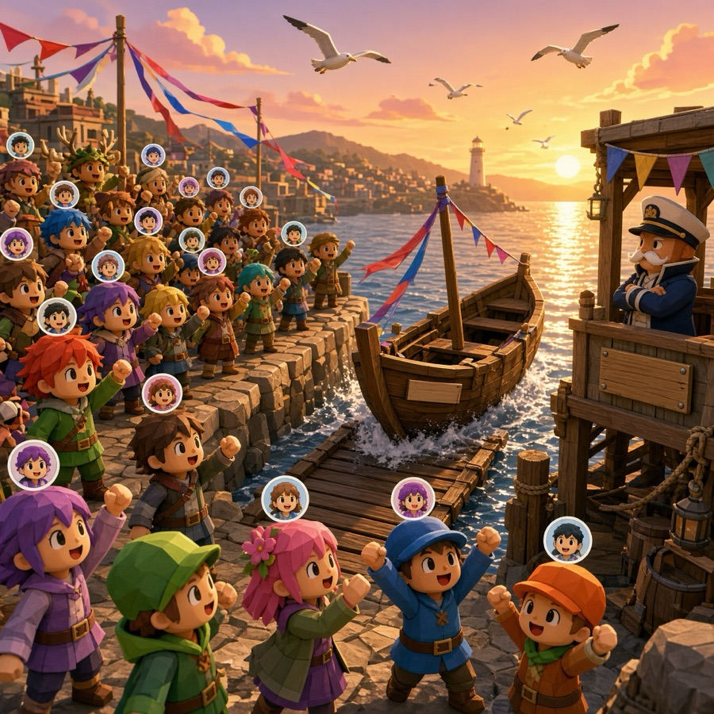
GROK AI
13
Ship Launch: We Launch Your Ship
Liman, kızakta tekne; gövdede çiftin birleşik adı; ship adını öneren izleyicinin gemisi gerçekten denize indirilir
Paylaşım cümlesi · kurgusal örnek
“There's a TikTok live that literally launches your ship. As a boat. Mine just hit the water. (TikTok'ta ship'ini sahiden denize indiren bir yayın var. Tekne olarak. Benimki az önce suya indi.)”
ABD, İngiltere, AvustralyaKüreselYeni dünyaadına törençatışmaölçekArketip B
Eve götürülen şeyDenize indirme sertifikası: geminin adı ve "launched by @sen"
Paylaşılan kareGövdesinde boş ad levhası olan tekne suya inerken, rıhtımda kalabalık
İzleyici
"aboard" yazıp rıhtımda el sallar; bir ship adı önerir (yalnız kurgu karakterler, evcil hayvanlar, nesneler). Ücretsiz giriş: "aboard" yazmak. Ship adı önermek de ücretsizdir, öneri moderatörden geçer.
Yayıncı
Gemiyi adıyla okur, tören sırasını yönetir, indirme sayımını yapar, limandaki filoyu ve amiral gemisini gösterir
Neden tutar
Kelime oyunu tek cümlede anlaşılır: ship hem hayran çifti hem gerçek gemi. Herkes kendi ship'ini getirir, tören kısa ve bitince yenisi gelir
Ortak sayaç
Bu gece indirilen gemi; limandaki filo; beğeni rüzgârdır, gemiler alkışa göre öne geçer
Gerçek kişi, ünlü ve idol adı yasak; gemiler birbirine zarar veremez; alkol yok, şişe alkolsüz; gerçek tersane ve marka yok
Yenilik denetimi. En yakın eski fikir: Kanal Kilidi: Narrowboat (U11, 13b_TOHUMLAR_DEGISIM): sakin kanal teknesi, bitince pirinç ad levhası; burada tören, ship adı ve denize indirme var. Konteyner Dengesi (07_ESKI_FIKIRLER): izleyici adı gemiye iner; burada gemi adlandırılır ve indirilir.
Bağımsız denetim: dünya yeni; yalnız mekanik şuna benziyor: Kermés: Şaka Nikâhı: izleyicinin önerdiği çifte tören, rol merdiveni (yüzük, şahit, memur), kıyılan nikâh say….
Fiyat tabelası
Gülrıhtımdan serpantin atan
Kalpgövdeye adı boyayan (sertifikada "godparent" olarak adı geçer)
Çayşişeyi sallayan (alkolsüz
Rolşişe gövdede patlar, tekne kızaktan iner)
Donutliman başkanı (sıradaki gemiyi seçer, düdüğü çalar
Rolen çok alkış alan gemi amiral gemisi olur)
Adım adım yapım (12 adım)
Arketip B (3D mekân, dış kesit). web5/ship/index.html olarak web4/katil.html olay sözleşmesiyle aç, 1080×1920 canvas.
Limanı çiz: kızakta tekne, rıhtım, gün batımı, suyun kenarında liman başkanının kulübesi. Üstten 230 ve alttan 560 pikseli boş bırak.
"aboard" yazan izleyici rıhtıma çıkar, adı yakasında görünür. Sıra dolunca ikinci sıraya geçer.
Süzgeç: ship adı "A + B" biçimli yazılır, yalnız kurgu karakter, evcil hayvan ve nesne kabul edilir. Gerçek kişi adı, ünlü ve idol listesi, soyad, telefon ve hakaret süzülür. Süzgeçten geçen öneri onay kuyruğuna düşer, moderatör kabul ederse gövdeye yazılır.
Tabela: sağ üstte dört satırlık tersane tabelası: "Gül · serpantin", "Kalp · gövdeye ad", "Çay · şişe", "Donut · liman başkanı". Satır başına simge, tek ekran görüntüsünde okunur.
Rol eşlemesi: Gül gelince rıhtımdan serpantin, Kalp gelince gövdeye adı boyayan kişi ve sertifikada "godparent", Çay gelince alkolsüz şişe sallanır ve tekne kızaktan iner, Donut gelince liman başkanı düdüğü çalar ve sıradaki gemiyi seçer.
Beğeni eşiği 100 olunca rüzgâr artar, gemiler alkışa göre öne geçer. Yorumda "ship" yazılması konfeti tetikler.
Kare: indirme 20 sn'lik sahnedir. Son 3 sn'de kamera rıhtımdan yana döner, tekne suya inerken gövdedeki ad levhası ve kalabalık 4 sn sabit durur. İzleyicinin adı levhada ve "launched by" şeridinde görünür.
Sayaç: "Bu gece indirilen gemi 0/24", altında limandaki filo. En çok alkış alan gemi amiral gemisi olur, bayrak yerine boş flama taşır.
Eve götürülen şey: denize indirme sertifikası geminin adı ve "launched by @sen" ile otomatik üretilir, kare zamanı kaydedilir.
Güvenlik: şişe alkolsüz, gerçek tersane ve marka yok; gemiler birbirine çarpmaz.
Test: ?demo=1, 60 sahte izleyici, 12 sahte gemi. İlk yayın: akşam 21:00, 90 dk. Ölçülecek üç sayı: ship öneren sayısı, indirme başına izleme süresi, sertifika kartı paylaşma oranı.
5–7 dk: "A + B" önerileri okunur, Çay atan sırayı belirler
7–9 dk: Donut düdüğü, amiral gemisi seçilir
9–10 dk: bu gece 2 gemi, sertifika kartı hatırlatılır, sıradaki gemi duyurulur
Doğrulama: Gemiye ad koyma, sponsor (godmother) ve şişe geleneği Vikipedi'den doğrulandı; modern törende alkolsüz içecek kullanılabilir. "Ship" anlamı Vikipedi ve Fanlore'dan doğrulandı. "Godparent" sertifika unvanı ve alkışa göre amiral gemisi kurgu, DOĞRULANMADI olarak bırakıldı (gerçek gelenek değil).
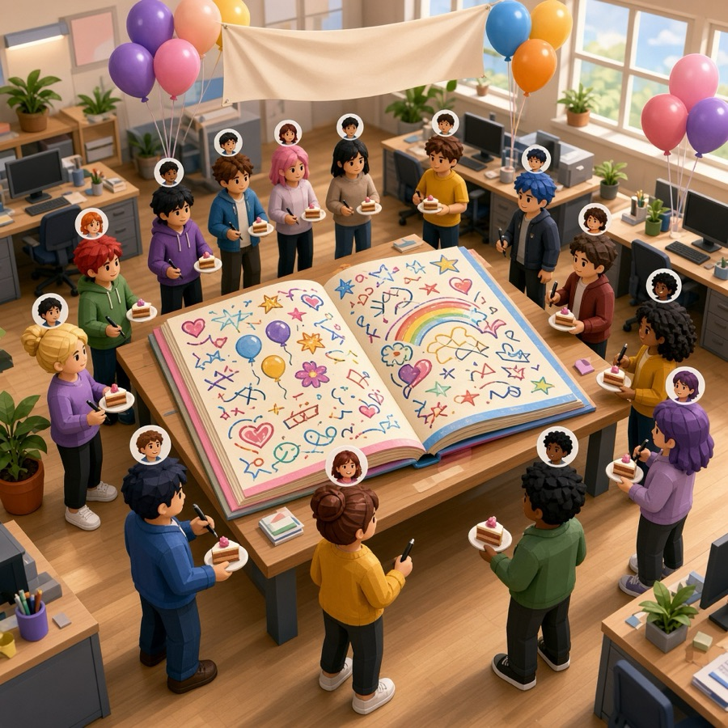
GROK AI
14
Dave's Leaving Card
Kimsenin tanımadığı Dave için 3.000 yabancı dev bir veda kartı imzalar
Paylaşım cümlesi · kurgusal örnek
“3,000 strangers are signing a leaving card for a guy named Dave on TikTok live. Nobody knows Dave.”
TikTok canlıda 3.000 yabancı Dave diye birine veda kartı imzalıyor. Kimse Dave'i tanımıyor.
İngiltere, İrlanda, AvustralyaKüreselAkrabası varkendi cümlenadına törençatışmaArketip C
Eve götürülen şeyKartın fotoğrafı, notun çizgiyle işaretlenmiş hali
Paylaşılan kareTıka basa dolu kartın kuşbakışı, bir imza daire içinde
İzleyici
40 harflik veda notunu yazar, kartta el yazısıyla görünür. Ücretsiz giriş: Not yazmak (en çok 40 harf).
Yayıncı
Kartı masadan masaya taşır, notları sesli okur, "kart dördüncü sayfaya geçti" der
Neden tutar
Herkes bu kartı bir kez imzalamıştır. Cümle kendiliğinden yazılır
Gerçek şirket, gerçek çalışan, gerçek ayrılış yok. Notlarda hakaret ve iş yeri aşağılaması süzülür
Yenilik denetimi. En yakın eski fikir: Düğün Anı Defteri (07_ESKI_FIKIRLER): deftere satır yazma. Burada ofis kartı, tek ortak kişi "Dave" ve masadan masaya dolaşan fiziksel kart var
Bağımsız denetim: eski havuzda akrabası var: Yearbook Günü: "sign" yaz, birinin yıllığını imzala; sayaç imza; ayrıca Düğün Anı Defteri.
Fiyat tabelası
Gülkarta çıkartma (köşeye yapışır)
Kalppastadan adına dilim (ekranda dilim üstünde adı)
Çayveda konuşması yapan (yorumu konuşma balonunda)
Donutyarın kimin ayrılacağını yazan (yalnız ad ve uydurma bölüm, "Dave from Accounting")
Adım adım yapım (12 adım)
Arketip C (2D sahne, ortak sayaç). web5/dave/index.html olarak web4/katil.html kopyası, açık ofis arka planı ve ortada dev kart.
İzleyicinin yorumu 40 harfle kısaltılır, kartın bir satırına el yazısı yazı tipiyle düşer.
Süzgeç: not hakaret, iş yeri aşağılama, gerçek şirket ve kişi adı için süzülür. Süzgeçten geçen not hemen kartta görünmez, onay kuyruğundan sonra düşer, moderatör kuyruğu 10 sn'de bir boşaltır.
Kart sayfası: her 40 imzada kart bir sayfa ilerler ve "kart dördüncü sayfaya geçti" bandı çıkar.
Tabela: sol altta dört satırlık tabela: "Gül · çıkartma", "Kalp · pasta dilimi", "Çay · veda konuşması", "Donut · yarın kim ayrılıyor". Her satırda simge, tek ekran görüntüsünde okunur.
Rol eşlemesi: Gül gelince notun yanına çıkartma, Kalp gelince adına pasta dilimi, Çay gelince konuşma balonunda yorumu, Donut gelince "yarın ayrılan" listesine yalnız ad ve uydurma bölüm.
"Dave from Accounting" kurgudur. Yayıncı başta "kimse Dave'i tanımıyor" der.
Kare: her 100 imzada kart tam ekran açılır, 4 sn sabit durur, notlardan biri çizgiyle işaretlenir (öne çıkan izleyicinin notu, adı altında). Kare görüntüsü otomatik kaydedilir.
Beğeni eşiği 200 olunca pasta mutfağı açılır, herkes pasta çıkartması alır.
Eve götürülen şey: kartın fotoğrafı, notun işaretli ve adı altta.
Test: ?demo=1, 150 sahte not, hakaret listesinden 10 sahte yasaklı not. İlk yayın: hafta içi 12:00 (öğle arası ofis saati), 60 dk.
Ölçülecek üç sayı: not yazanların yüzdesi, kart fotoğrafını kaydedenler, ortalama izleme süresi.
İlk 10 dakika
0–1 dk: "Dave bugün ayrılıyor, kimse onu tanımıyor, notunu yaz"
1–3 dk: ilk 20 not kartta, yayıncı sesli okur
3–5 dk: pasta mutfağı açılır, Kalp atana dilim
5–7 dk: kart ikinci sayfaya geçer, konuşma balonu
7–9 dk: Donut atan "yarın kimin ayrıldığını" yazar
9–10 dk: kart tam ekran 4 sn, işaretli not, "kart dördüncü sayfada"
Doğrulama: Esin ofis kartı kültürüdür, kaynaklar ticari blog. Dave şakası DOĞRULANMADI, kurgu olarak sunulur
“TikTok is holding a funeral for 2026 and 8,000 people brought roses.”
TikTok 2026 için cenaze töreni yapıyor ve 8.000 kişi gül getirdi.
ABD, İngiltere, Latin AmerikaKüreselAkrabası varçatışmakendi cümlenölçekArketip B
Eve götürülen şeyAnma kartı: "2026: you were mid" ve adı
Paylaşılan kareGül dağının altındaki tabut, siyah şemsiyeler, yağmur
İzleyici
Tek cümlelik veda konuşmasını yazar. Gül atarak tabuta gül bırakır. Ücretsiz giriş: Veda cümlesi yazmak.
Yayıncı
Tabutun başında kısa anma konuşması yapar, çanı çalar, sıradaki merhumu seçer
Neden tutar
Herkes yıl sonu yakınmasını tek cümleye sığdırır. Tören dili ağır, konu hafif, gülünç karşıtlık doğar
Ortak sayaç
Bırakılan gül sayısı, 31 Aralık gece yarısına geri sayım
Dayanak
Latin Amerika'da eski yıl kuklasını yakma (Año Viejo): Ekvador ve Kolombiya'da 31 Aralık'ta, 19. yüzyılda Ekvador'dan çıkmış, 28 Aralık–6 Ocak şenliğinden süzülmüş (bdnews24.com/world/americas/anos-viejo…folklore.usc.edu/burning-the-past-year… DOĞRULANMADI, sayfa açılmadı). Kolombiya'da havai fişek dolu kukla yasak (arama özeti)
Kural riski
Gerçek ölüm, din ya da gerçek kişi yok, merhum yalnız soyut şey ya da nesne. Ateş ve havai fişek yok, yalnız gül. Gerçek yası anıştıran cümleler süzülür
Yenilik denetimi. En yakın eski fikir: Ball Drop (07b US-04): yılbaşı geri sayımı. Burada geri sayım değil, tören ve "yılın cenazesi" var
Bağımsız denetim: eski havuzda akrabası var: Ofrenda: Cempasúchil Yolu: yola yaprak koy, anılacak bir şey yaz; ayrıca Ball Drop (yılbaşı geri sayımı).
Tabutun yüzündeki levha o gecenin merhumunu gösterir: "2026" ya da başka gecelerde "kulaklık girişi", "yılbaşı kararları", "pazartesi". Yalnız soyut şey ya da nesne.
Süzgeç: veda konuşması 80 harfle sınırlanır. Gerçek ölüm, din, gerçek kişi, siyaset, hakaret ve gerçek yası anıştıran söz süzülür. Süzgeçten geçen konuşma kuyrukta bekler ve moderatör seçer.
Giriş: konuşmasını yazan izleyici ön sıra koltuğuna oturur, adı şemsiyesinde görünür.
Tabela: sağ üstte dört satırlık tabela: "Gül · tabuta gül", "Kalp · şemsiye", "Çay · anma konuşması", "Donut · çan ve sıradaki merhum". Okunur tek ekran görüntüsü.
Rol eşlemesi: Gül gelince tabuta gül düşer, Kalp gelince şemsiye elinde ön sıra, Çay gelince konuşması kürsüde okunur (15 sn), Donut gelince çan çalar ve sıradaki merhum seçilir.
Beğeni eşiği 300 olunca yağmur hızlanır, şemsiyeler açılır.
Sayaç: "bırakılan gül" ve 31 Aralık gece yarısına geri sayım. Hedef 8.000 gül.
Kare: gül sayısı eşiğe gelince kamera tabuttan yukarı çıkar, gül dağı ve ön sıra 5 sn tutulur. Anma kartındaki ad sağ altta sabit.
Eve götürülen şey: anma kartı "2026: you were mid" ve adı, her merhum için ayrı kart.
Test: ?demo=1, 120 sahte konuşma, yasaklı sözle 8 sahte örnek. İlk yayın: 26 Aralık akşamı, 60 dk. Ateş ya da havai fişek eklenmez.
Ölçülecek üç sayı: konuşma yazan oranı, gül bırakan sayısı, anma kartı paylaşımı.
İlk 10 dakika
0–1 dk: "2026 için cenaze yapıyoruz, konuşmanı yaz"
1–3 dk: tabutta 2026, yağmur başlar, ilk konuşmalar
Doğrulama: Año Viejo ülkeleri ve tarihi doğrulandı. Latin Amerika'nın diğer ülkeleri (Meksika, Peru vb.) DOĞRULANMADI. 2026'da Aralık 26–31 penceresi. "Kuklayı yakma" yerine tabutta gömme kullanıldı, ateş yok
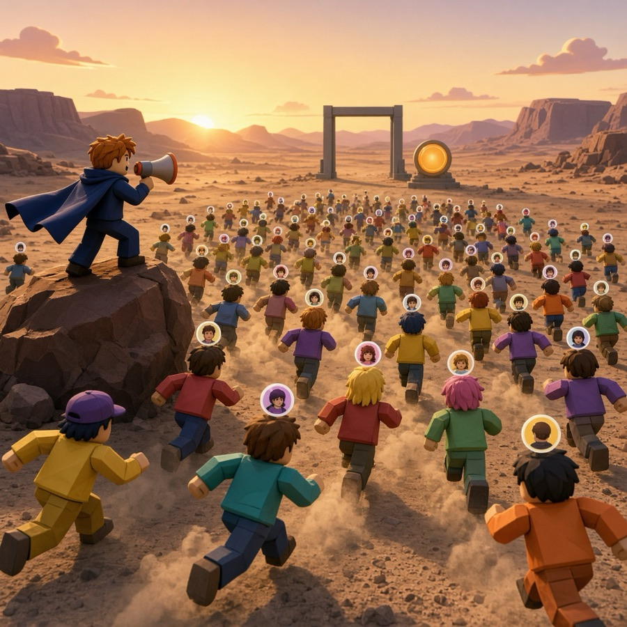
GROK AI
16
Storm the Gate: They Can't Stop All of Us
Çölde ufka kadar koşan kalabalık, kapıdaki düğme eşik dolunca açılır
Paylaşım cümlesi · kurgusal örnek
“Someone remade the Area 51 raid as a TikTok live. 10,000 people are running at a gate right now.”
Biri Area 51 baskınını TikTok canlıya çevirmiş. Şu an 10.000 kişi bir kapıya koşuyor.
ABD, İngiltere, küresel internetKurgu / internet efsanesiTelif: DüşükYeni dünyaölçekçatışmatabelaArketip A
Eve götürülen şey"I was there" rozeti ve sıra numarası
Paylaşılan kareUfka kadar koşan kalabalık, uzakta kapı ve parlayan düğme
Herkes 2019'u bilir ve kendi cümlesiyle anlatır. Kapı eşik dolunca açılır, ödül ortak
Ortak sayaç
Koşan sayısı 7,217 / 10,000
Dayanak
2019 "Storm Area 51" şakası: Facebook etkinliği 27 Haziran 2019'da kuruldu, 20 Eylül 2019 için planlandı, yaklaşık 2 milyon "gidiyorum", gerçekte yaklaşık 150 kişi kapılara gitti ve kimse girmedi. Etkinlik sayfasındaki "naruto run" cümlesi koşu esprisinin kaynağı (https://en.wikipedia.org/wiki/Storm_Area_51,globalnews.ca/news/5658149/matty-rober…). Memdeki "rol listesi" DOĞRULANMADI
Kural riski
Asker, silah, çatışma ve gerçek askeri alan adı yok. Kapı kurgusal. Koşu yarışı değil, şans oyunu yok
Telif
Düşük: etkinlik adı "Area 51" yalnız Esin sütununda, sahnede kurgusal kapı. Anime koşu esprisine adıyla ya da çizimle gönderme yok
Yenilik denetimi. En yakın eski fikir: 81 İl Koşusu (07_ESKI_FIKIRLER) ve Ülke / il koşusu (07b): ülke ya da il koşucusu. Burada tek kalabalık, tek kapı, eşik ve sürpriz çıkış var
Bağımsız denetim: dünya yeni; yalnız mekanik şuna benziyor: 81 İl Koşusu: yorum koşucu olur, hedef bayrak küpü; ayrıca Bayanihan Ev Taşıma (yeterli omuz yoksa ev kalkmaz).
Fiyat tabelası
Gülenerji içeceği (koşucu 20 sn hız patlaması)
Kalpön safta bayrak taşıyan (bayrak kurgusal, ülke bayrağı değil)
Çaymegafonlu lider ("3, 2, 1" der)
Donutkapının düğmesi (eşik dolunca açar, içeriden çıkanı seçer: dost uzaylı, dev kedi, disko topu)
Adım adım yapım (12 adım)
Arketip A (halka ve zincir mantığı, koşan kalabalık). web5/kapi/index.html, çöl düzlüğü, uzakta kapı.
Koşan avatarlar derinlik sırasına dizilir, öndekiler büyük, arkadakiler küçük, ufka kadar uzanır. Görsel 300 avatarda 30 fps'i hedefler.
Giriş: "run" yazan avatar kalabalığa eklenir, adı etiketinde.
Süzgeç: yalnız "run" ve ülke adı gibi kısa komutlar ekrana yazılır. Serbest metin kullanılmaz, bu yüzden hakaret süzgeci yalnız kullanıcı adı ve etiket için çalışır. Onay kuyruğu gerekmez, ama kapıdan çıkan sürpriz seçimi moderatörde.
Tabela: sağ üstte dört satırlık tabela: "Gül · enerji içeceği", "Kalp · bayrak taşıyan", "Çay · megafonlu lider", "Donut · kapının düğmesi". Tek ekran görüntüsünde okunur.
Rol eşlemesi: Gül gelince avatar 20 sn hızlanır, Kalp gelince önde kurgusal bayrak, Çay gelince megafon ve "3, 2, 1" sayımı, Donut gelince eşik dolunca kapıyı açar.
Sayaç: "7,217 / 10,000". Beğeni eşiği her 500'de kalabalığı bir adım öne iter.
Eşik dolunca kapı açılır, Donut atan çıkacak şeyi seçer: dost uzaylı, dev kedi, disko topu. Çıkan şey şenlik başlatır.
Kare: eşikten 5 sn önce kamera uzaklaşır, kalabalık ufka kadar görünür, adlarla dolu. 4 sn sabit durur. Sayaç sağ üstte.
Eve götürülen şey: "I was there" rozeti ve sıra numarası.
Test: ?demo=1, 400 sahte koşucu, 10.000'e ivmeli sayaç. İlk yayın: hafta sonu akşamı, 60 dk. Gerçek askeri alan ya da silah sahnede yoktur.
Ölçülecek üç sayı: "run" yazan oranı, eşiğe kalan süre, rozet paylaşımı.
İlk 10 dakika
0–1 dk: "Uzakta bir kapı var, 'run' yaz ve koş"
1–3 dk: kalabalık birikir, sayaç 2.000
3–5 dk: enerji içeceği ve bayrak, ilk beğeni itişi
Korku hafif, yaratık yok, ani korku sesi yok. Sahne evsiz ya da çocuk korkusuna kaymaz
Telif
Orta: internet efsanesi ortak yapım, film ve serinin görsel ve yaratıkları kopyalanmaz. Koridor kendi çizimimizdir, "Level" adları kendi uydurmamız. Efsane wiki'sinin lisansı DOĞRULANMADI
Yenilik denetimi. En yakın eski fikir: yok (Backrooms adıyla havuzda geçmiyor). Komşu: Oda Kontrolü (07_ESKI_FIKIRLER), akıllı ışık oyu. Burada yön oyu ve koridor var
Bağımsız denetim: dünya yeni; yalnız mekanik şuna benziyor: Körebe Sürüsü: herkes aynı anda yön yazar, çoğunluk yönü avatarı yürütür; ayrıca Chat plays: ortak kumanda nö….
Arketip C (komut oyu, ortak sayaç). web5/backrooms/index.html, sarı koridor, birinci kişi kamera, kavşaklar.
Koridor kendi çizimimiz olur, filmden hiçbir şey kopyalanmaz. Gezginler küçük, ad etiketli avatarlardır.
Giriş: "left", "right" ya da "wait" yazan izleyici oy kullanır, her kavşakta 15 sn oylama, çoğunluk yönü belirler.
Süzgeç: yalnız üç komut sayılır, serbest metin ekrana çıkmaz. Kullanıcı adı etiketi hakaret süzgecinden geçer. Duvara ok çizen (Kalp) 12 harflik kısa metin yazarsa onay kuyruğundan geçer.
Tabela: sağ üstte dört satırlık tabela: "Gül · el feneri", "Kalp · duvara ok", "Çay · harita", "Donut · asansör anahtarı". Tek ekran görüntüsünde okunur.
Rol eşlemesi: Gül gelince koridor 20 sn aydınlanır, Kalp gelince duvara adıyla ok, Çay gelince 10 sn kuşbakışı harita, Donut gelince yeni seviye açılır ve teması seçilir.
Seviyeler: ofis, havuz odası, otopark (kendi tasarım). Her seviye kendi renk paleti. Yaratık yok.
Sayaç: seviye numarası ve "çıkışa ulaşan: 0". Çıkış yalnız beğeni hedefi 5.000 olunca açılır.
Kare: kavşakta kamera geri çekilir, ad etiketli kalabalık 4 sn sabit durur, oylama çubuğu yanında.
Eve götürülen şey: "Level 7'de kayboldum" kartı, adı ve seviye.
Test: ?demo=1, 150 sahte oy. İlk yayın: akşam 22:00, 75 dk. Ani korku sesi yok, ses hafif uğultu.
Ölçülecek üç sayı: oy veren oranı, seviye başına süre, kart paylaşımı.
İlk 10 dakika
0–1 dk: "Kayboldunuz, sohbet yön seçiyor, 'left', 'right' ya da 'wait'"
1–3 dk: ilk oylama, sola gidilir, koridor aynı
3–5 dk: el feneri, harita, kavşak
5–7 dk: duvarda adlı oklar, ikinci oylama
7–9 dk: asansör anahtarı, seviye 2
9–10 dk: kare, "çıkışa ulaşan: 0", kart hatırlatılır
Doğrulama: Köken, film ve yapımcı şirketler doğrulandı. Sortir Paris sitesi Haziran 2026 yazıyor, ülke bazlı çıkış tarihi olabilir, DOĞRULANMADI. Oyuncu ve yönetmen adı bilerek yazılmadı
GROK AI
18
Furniture Store After Hours
Kapanış anonsundan sonra mobilya mağazasına yerleşen 900 kişi, oda oda
Paylaşım cümlesi · kurgusal örnek
“900 people moved into a fake furniture store on TikTok live. Someone owns the kitchen island.”
900 kişi TikTok canlıda sahte bir mobilya mağazasına taşındı. Biri mutfak adasını sahiplenmiş.
ABD, İngiltere, Avrupa, KanadaKüreselYeni dünyaçatışmatabelaölçekArketip B
Eve götürülen şeySeçtiği odanın fotoğrafı, kapıda adı
Paylaşılan kareKuşbakışı oda labirenti, her odada adlı avatarlar
İzleyici
"sofa" yazıp bir koltuğa oturur. Ücretsiz giriş: "sofa" yazmak.
Yayıncı
Anonsu okur, odaları gezer, "bekçi turu" derse herkes "hide" yazar
Neden tutar
Herkes gizlice o mağazada kalmayı düşlemiştir. Oda sahibi olmak ayrıcalık gibi hissettirir
Marka adı, renk kimliği, ürün adı yok. Bekçi turu korku değil, oyun
Yenilik denetimi. En yakın eski fikir: Doorbuster Line (07_ESKI_FIKIRLER): Black Friday kuyruğu, mağaza kapı açılınca koşu. Burada mağazanın içinde yaşam ve oda sahipliği var
Bağımsız denetim: dünya yeni; yalnız mekanik şuna benziyor: Doorbuster Line (Black Friday kampı): mağaza önü kuyruk, kapı açılınca koşu.
Fiyat tabelası
Gülokuma lambası (köşe aydınlanır)
Kalpyatak odası sahibi (yatak odası adıyla etiketlenir)
Arketip B (kuşbakışı labirent mağaza). web5/magaza/index.html, 60 oda, her odada tek koltuk, yatak, mutfak adası.
Giriş: "sofa" yazan izleyici bir odaya oturur, kapıdaki etiket adını gösterir. Oda doluluk 0/60.
Marka, renk kimliği ve ürün adı çizilmez. Genel mobilya kullanılır.
Süzgeç: Donut atan mağaza anonsunun cümlesini yazar. Cümle 60 harfle sınırlanır, hakaret, marka ve gerçek kişi süzülür ve moderatör onaylar, onaylanmayan anons okunmaz.
Tabela: sağ üstte dört satırlık tabela: "Gül · okuma lambası", "Kalp · yatak odası", "Çay · mutfak adası", "Donut · mağaza anonsu". Tek ekran görüntüsünde okunur.
Rol eşlemesi: Gül gelince köşe lamba yanar, Kalp gelince yatak odası sahibi olur, Çay gelince mutfakta herkese ikram, Donut gelince anons hoparlörden okunur ve ışıklar kapanıp açılır.
Bekçi turu: beğeni düşünce gelir, herkes "hide" yazar, saklananlar kalır.
Sayaç: dolu oda 0/60. Hedef 60. Her 10 dakikada bir "kapanış anonsu".
Kare: kamera kuşbakışı oda labirentine çıkar, her odada adlı avatar görünür, 4 sn sabit durur. Mutfak adasının sahibi yakın planda.
Eve götürülen şey: seçtiği odanın fotoğrafı, kapıda adı.
Test: ?demo=1, 80 sahte izleyici. İlk yayın: gece 23:00, 75 dk.
Ölçülecek üç sayı: doluluk oranı, "hide" yazanlar, oda fotoğrafı paylaşımı.
9–10 dk: kuşbakışı kare, dolu oda sayısı, fotoğraf hatırlatılır
Doğrulama: Gece kalma etkinlikleri doğrulandı. 2026'da yeni etkinlik DOĞRULANMADI. Backrooms fotoğrafı da eski mobilya mağazasıdır, G05 ile aynı yayında karışmasın
GROK AI
19
Sunbed Wars
Şafakta açılan otel havuzunda 2.000 kişinin şezlong yarışı
Paylaşım cümlesi · kurgusal örnek
“TikTok live has a hotel pool where 2,000 people fight for sunbeds at dawn. I got one at 6:02.”
TikTok canlıda şafakta 2.000 kişinin şezlong için kapıştığı bir otel havuzu var. Ben 6:02'de bir tane buldum.
İngiltere, Almanya, İrlandaKüreselAkrabası varçatışmatabelaölçekArketip B
Eve götürülen şeyKanıt fotoğrafı: "Row 1, bed 4, 06:02"
Paylaşılan kareHavlu kaplı şezlong denizi, kuşbakışı
Her tatilci yaşamıştır ve kendi öyküsünü ekler. Havlu bırakma ritüeli bilinir
Ortak sayaç
Dolu şezlong sayısı, 10 dakikada bir "yeni gün"
Dayanak
"Sunbed wars" haberleri: Hannover mahkemesi, Yunanistan'ın Kos adasındaki otelde sabah 6'daki havlu yarışı yüzünden tatil bedelinden 986,70 € iade kararı verdi (Euronews, 7 Mayıs 2026) (euronews.com/travel/2026/05/07/sunbed-…). İngiliz basını GB News, Mallorca Daily Bulletin ve Canarian Weekly aynı haberi verdi (majorcadailybulletin.com/holiday/hotel…)
Kural riski
Milliyet esprisi yok, takımlar oda numarasıyla. Dava ya da gerçek otel anılmaz
Yenilik denetimi. En yakın eski fikir: Guarda-sol na Praia (07_ESKI_FIKIRLER): kumsala şemsiye dikme, renk eyalet. Burada havuz, şezlong yarışı ve çan saati var
Bağımsız denetim: eski havuzda akrabası var: Hanami: Brandayı Ser: erkenden yer tutma, "suwaru" yaz ve brandada yer al; ayrıca Guarda-sol na Praia: kumsal….
Fiyat tabelası
Gülşezlong (adı havluda)
Kalpşemsiye (şezlongun üstü gölgelenir)
Çayhavuz kenarı ilk sıra (kamera önünde yer)
Donutcabana ve cankurtaran düdüğü (5 dakikadır yazmayanların havlusunu topla)
Adım adım yapım (12 adım)
Arketip B (kuşbakışı havuz, koşu). web5/sezlong/index.html, havuz, 300 şezlong, kapı.
Giriş: "towel" yazan izleyici havlu serer. Kapı açılınca koşu başlar, boş şezlong sayısı düşer.
10 dakikada bir "yeni gün": şezlonglar sıfırlanır, herkes tekrar yazar.
Süzgeç: yalnız "towel" komutu ve ad etiketi ekrana çıkar. Serbest metin yok, etiket hakaret süzgecinden geçer. Cankurtaran düdüğünü (Donut) kullanan, hangi havlunun toplanacağını seçer, seçim moderatör görünümünde.
Tabela: sağ üstte dört satırlık tabela: "Gül · şezlong", "Kalp · şemsiye", "Çay · ilk sıra", "Donut · cabana ve düdük". Tek ekran görüntüsünde okunur.
Rol eşlemesi: Gül gelince şezlong adı havluda, Kalp gelince şemsiye, Çay gelince havuz kenarı ilk sıra ve kamera önü, Donut gelince 5 dk yazmayanın havlusu toplanır.
Takımlar oda numarasıyla ("Oda 100–199"). Milliyet esprisi yok.
Sayaç: dolu şezlong 0/300. Beğeni eşiği 400'de güneş doğar.
Kare: kuşbakışı havlu kaplı şezlong denizi, ön sırada adlar, 4 sn sabit. Saat 06:02 gibi bir zaman damgası sağ altta.
Eve götürülen şey: kanıt fotoğrafı: "Row 1, bed 4, 06:02".
Test: ?demo=1, 200 sahte havlu. İlk yayın: Pazar sabahı 09:00 (şafak teması, yaz mevsiminde Avrupa).
Ölçülecek üç sayı: ilk dakikada havlu serenler, "yeni gün" tekrar katılım, kanıt fotoğrafı paylaşımı.
İlk 10 dakika
0–1 dk: "Şafak, kapı açılmak üzere, 'towel' yaz"
1–3 dk: kapı açılır, koşu, ilk şezlonglar
3–5 dk: Gül atanlar şezlong, şemsiye
5–7 dk: düdük, 5 dk yazmayanın havlusu toplanır
7–9 dk: ilk sıra, kare, doluluk 200/300
9–10 dk: yeni gün, kanıt fotoğrafı hatırlatılır
Doğrulama: Haber ve mahkeme doğrulandı (Kos, 986,70 €, Hannover). İspanya'da yerel yasaklar var (örn. Calpe 9.30'dan önce eşya yasak, 250 € kadar ceza), tüm ülke için kural değil, ikincil kaynak
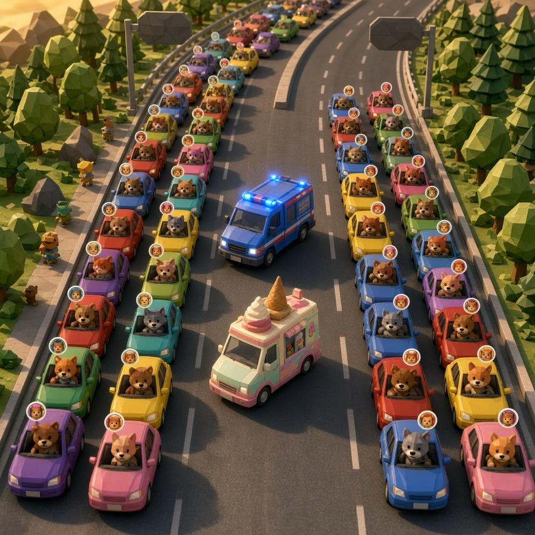
GROK AI
20
Stau: Rettungsgasse!
Kuşbakışı otoyolda sol şerit sola, diğerleri sağa, ortada koridor açılır
Paylaşım cümlesi · kurgusal örnek
“Auf TikTok üben gerade 3.000 Leute die Rettungsgasse. Rekord: 4,2 Sekunden.”
TikTok'ta şu an 3.000 kişi kurtarma koridoru çalışıyor. Rekor 4,2 saniye.
Almanya, Avusturya, İsviçreÜlkeye özelYeni dünyaçatışmaölçektabelaArketip C
Eve götürülen şey"Rettungsgasse-Profi" plakası
Paylaşılan kareOrtası açılmış otoyol, iki yanda sıkışık arabalar
İzleyici
"auto" yazıp şeritte araba olur, "Stau" anonsunda "links" ya da "rechts" yazar. Ücretsiz giriş: "auto" yazmak.
Yayıncı
Şerit sırasını okur, koridor açılınca saniyeyi söyler, mavi ışıklı aracı gönderir
Neden tutar
Almanca konuşanlar bu kuralın herkes tarafından yanlış uygulandığını bilir. Koridor görsel bir ödül gibi açılır
Ortak sayaç
Koridor açma rekoru (saniye)
Dayanak
Rettungsgasse: StVO §11/2: yürüme hızında ya da durunca "zwischen dem äußerst linken und dem unmittelbar rechts daneben liegenden Fahrstreifen" gasse oluşur (gesetze-im-internet.de/stvo_2013/__11.…). ADAC: Almanya ve Avusturya'da sol şerit sola, diğer şeritler sağa, Avusturya'da gerekirse Pannenstreifen kullanılır, Avusturya'da ceza 726 € ve engelleyene 2.180 € kadar (adac.de/der-adac/rechtsberatung/verkeh…). Bakanlık sayfası bmv.de/SharedDocs/DE/Artikel/StV/Stras…
Kural riski
Kaza görüntüsü yok, gerçek ambulans sesi kullanılmaz, kurgusal ses. Gerçek bir kurtarma görevi ya da hasta anılmaz. Kural eğitimi olarak "eğlence" sunulur
Yenilik denetimi. En yakın eski fikir: Köprü Trafiği (prototip sahnesi, 07_ESKI_FIKIRLER satır 506), yalnız adı geçiyor. Burada Almanca kitle ve koridor kuralı var
Bağımsız denetim: dünya yeni; yalnız mekanik şuna benziyor: Kapıkule Sırası: yorumla kuyruğa araba ekler, bariyer açılır, kuyruk ilerler; ayrıca Körebe Sürüsü (yön yazma).
Fiyat tabelası
Güldörtlü ve uyarı yeleği (aracı 20 sn parlar)
Kalpkaravan (büyük araç, adı büyük)
Çaytrafik radyosu anonsu (yorumu radyoda okunur)
Donutmavi ışık (koridordan geçecek aracı gönderir: ambulans, itfaiye, dondurma arabası)
Adım adım yapım (12 adım)
Arketip C (komut sayacı, saniye ölçümü). web5/gasse/index.html, kuşbakışı üç şeritli otoyol.
Giriş: "auto" yazan izleyici bir arabaya binişir. Şerit atama sıralı: sol, orta, sağ.
"Stau!" anonsu gelince sıkışık trafik oluşur. Oyuncular şeritlerine göre "links" (sol şerit) ya da "rechts" (diğerleri) yazar.
Doğru kural: gasse sol şeridin soluna ve diğer şeritlerin sağına açılır (sol şerit sola, diğerleri sağa), ortadaki ilk iki şerit arasında.
Süzgeç: yalnız "auto", "links", "rechts" komutları ve kullanıcı adı etiketi ekrana çıkar. Serbest metin yok. Çay atan trafik radyosuna yorum yazar, bu metin süzgeçten ve onay kuyruğundan geçer.
Tabela: sağ üstte dört satırlık tabela: "Gül · Warnblinker", "Kalp · Wohnmobil", "Çay · Verkehrsfunk", "Donut · Blaulicht". Tek ekran görüntüsünde okunur.
Rol eşlemesi: Gül gelince arabası 20 sn parlar, Kalp gelince karavan olur, Çay gelince yorumu radyoda okunur, Donut gelince mavi ışıklı aracı koridora gönderir (ambulans, itfaiye, dondurma arabası).
Kare: koridor tam açıldığında kamera kuşbakışı, ortası açılmış otoyol 4 sn sabit. Süre sağ üstte, en hızlı şerit adı altta.
Eve götürülen şey: "Rettungsgasse-Profi" plakası, adı ve süresi.
Test: ?demo=1, 120 sahte araba, rastgele yanlış komut. Kaza görüntüsü ya da gerçek siren sesi yok, kurgusal ses. İlk yayın: Almanca konuşan saatte akşam 19:00.
Ölçülecek üç sayı: doğru komut oranı, koridor süresi, plaka paylaşımı.
İlk 10 dakika
0–1 dk: "Stau! Herkes şeridinde, 'auto' yaz"
1–3 dk: arabalar sıkışır, kural kısa anlatılır
3–5 dk: ilk koridor denemesi, 12 sn
5–7 dk: Warnblinker ve karavan, ikinci deneme, 7 sn
7–9 dk: mavi ışık, dondurma arabası geçer
9–10 dk: rekor 4,2 sn, plaka hatırlatılır
Doğrulama: Kural ve şerit yönü doğrulandı. Düzeltme: gasse siren gelince değil, trafik yürüme hızına düşünce açılır. Oyunda "Stau!" anonsu gasse'yi açar, siren yalnız araç geçişini tetikler. Avusturya'nın resmî metni ve İsviçre kuralı DOĞRULANMADI. Tohumdaki iki kaldıracak 2 tabela eklendi
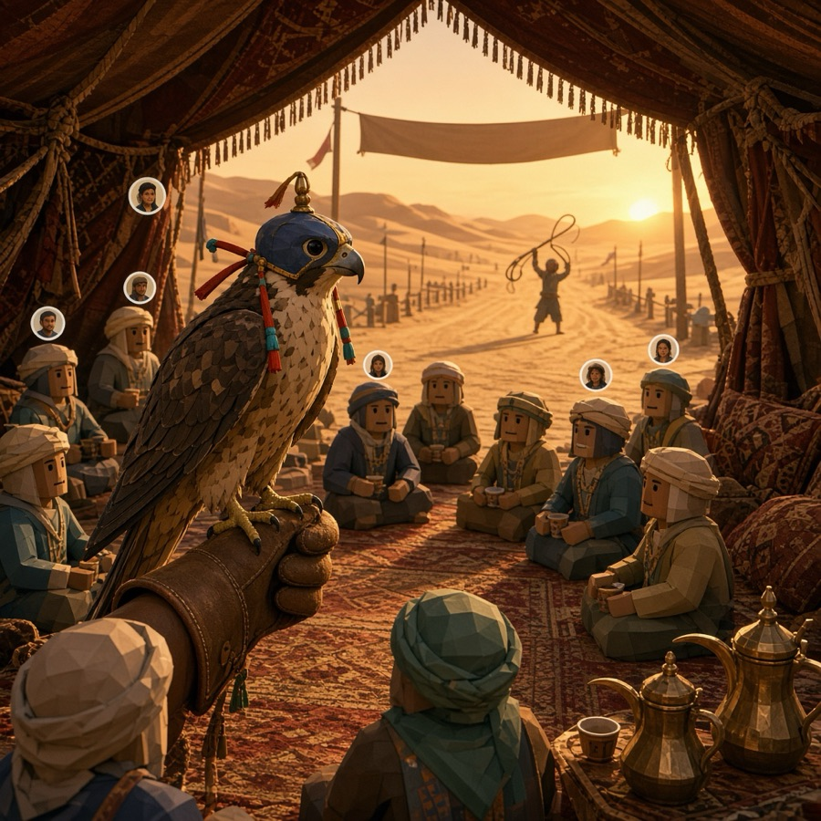
GROK AI
21
Al-Mellwah: 400 Metre
Çölde meclis çadırından şahin koşusu, her izleyici bir şahin
Paylaşım cümlesi · kurgusal örnek
“My falcon just ran the 400 on TikTok live.”
Şahinim az önce TikTok canlıda 400'ü koştu.
Suudi Arabistan, BAE ve KörfezÜlkeye özelAkrabası varyakın plançatışmaölçekArketip C
Eve götürülen şeyŞahin pasaportu: adı, şehri ve süresi
Paylaşılan kareEldivende şahin, yakın plan, arkada uzayan pist
İzleyici
"falcon" ve şehrini yazar, şahini sıradaki seride uçar. Ücretsiz giriş: "falcon" yazmak, şehir yazmak.
Yayıncı
Yem sallayanı yönetir, serileri başlatır, süre tablosunu okur
Neden tutar
Şahin Körfez'de gurur kaynağıdır. Şehir tablosu çekişmeyi ve şahin pasaportu paylaşımı getirir
Bahis ve para ödülü yok. Kabile adı yok, yalnız şehir. Gerçek şahin yok, çizgi avatar. Hayvan refahı sorunu doğmaz. Dinî ögeler ve müzik kontrol edilir
Yenilik denetimi. En yakın eski fikir: Mazayen Geçidi (07b SA-02): yalnız başlık var, güzellik yarışması olduğu varsayılır, DOĞRULANMADI. Burada hız yarışı ve şahin pasaportu var
Bağımsız denetim: eski havuzda akrabası var: Mazayen Geçidi: Körfez hayvan geçidi, izleyici devesine ad verir ve sürüye katılır; mekanik yazılı değil, DOĞ….
Fiyat tabelası
Gülbaşlık süsü (şahinin başlığında renk)
Kalpeldivende yakın plan (şahin 5 sn yakın plan)
Çayyemi sallayan (seriyi başlatır)
Donutmeclisin baş köşesi (kahve ikramı, gecenin şahinini seçer)
Adım adım yapım (12 adım)
Arketip C (sıralı seri, süre tablosu). web5/mellwah/index.html, çöl pisti, meclis çadırı. Gerçek şahin ya da canlı hayvan yoktur, hepsi çizgi avatar.
Giriş: "falcon" ve şehir yazan izleyicinin şahini sıradaki seriye girer. Her seri 8 şahin, 12 sn.
Süre: sahte fizik, 16–21 sn aralığı (gerçek rekorlara yakın). Şehir tablosu en iyi süreleri toplar.
Süzgeç: yalnız "falcon" ve şehir adı yazılır, şehir listesi hazır, serbest metin yok. Kabile adı ve gerçek kişi süzülür. Çay atan yemi sallayan rolündedir, ekrana yazı çıkmaz. Onay kuyruğu: Donut atanın "gecenin şahini" seçimi.
Tabela: sağ üstte dört satırlık tabela: "Gül · başlık süsü", "Kalp · eldiven", "Çay · yem", "Donut · baş köşe". Tek ekran görüntüsünde okunur. Arapça yazı ve Türkçe karşılık ayrı satır olabilir.
Rol eşlemesi: Gül gelince şahinin başlığında renk, Kalp gelince eldivende 5 sn yakın plan, Çay gelince serinin başlangıcı, Donut gelince kahve ikramı ve gecenin şahini seçimi.
Sayaç: en iyi süre ve şehir tablosu. Hedef: 400 m rekorunu kırmak.
Tarih notu: festival 17–30 Kasım 2026, yayın bu pencereye denk getirilir. Resmî tarih değişirse ertelenir.
Kare: şahin eldiveninde yakın plan, arkada uzayan pist, 4 sn sabit durur. Adı ve şehri sağ altta.
Eve götürülen şey: şahin pasaportu, adı, şehri ve süresi, çizgi avatar kartı.
Test: ?demo=1, 80 sahte şahin. Bahis, para ödülü, gerçek şahin yok. İlk yayın: Körfez saati akşam 21:00.
Ölçülecek üç sayı: seriye giren oranı, şehir tablosu etkileşimi, pasaport paylaşımı.
İlk 10 dakika
0–1 dk: "Meclis açık, 'falcon' ve şehrini yaz"
1–3 dk: seri 1, ilk süreler
3–5 dk: Gül atanlar başlık, eldivende yakın plan
5–7 dk: yem sallanır, seri 2, şehir tablosu
7–9 dk: kahve ikramı, gecenin şahini
9–10 dk: en iyi süre, pasaport hatırlatılır
Doğrulama: Mesafe: festivalde 400 m, eleme 200 m. Tarih çelişkisi: Kanal32 festivali 25 Aralık 2026–10 Ocak 2027 yazıyor, ama 2025 sürümünün tarihi, güvenilir değil. Ad yazımı Mellwah, Milwah, Melwah. Pasaportun yılı ve kapsamı DOĞRULANMADI. Pasaport BAE, yarış Suudi
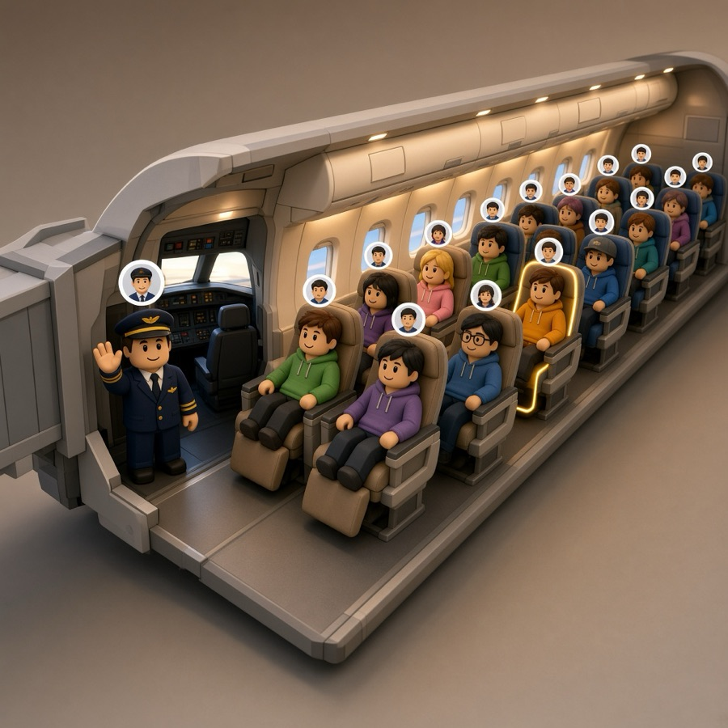
GROK AI
22
Boarding Group 9
Var olmayan bir uçakta koltuk haritasında adlar, kabin sınıfları hediye basamağıdır
Paylaşım cümlesi · kurgusal örnek
“People are paying to upgrade to first class on a plane that doesn't exist. I'm in 34E.”
İnsanlar var olmayan bir uçakta first class'a yükselmek için ödeme yapıyor. Ben 34E'deyim.
ABD, İngiltere ve havayolu binişKüreselAkrabası vartabelaçatışmaölçekArketip B
Eve götürülen şeyBiniş kartı: adı, koltuk, grup
Paylaşılan kareAdlarla dolu koltuk haritası, kesit
İzleyici
"board" yazar, Basic Economy'de orta koltuğa oturur. Ücretsiz giriş: "board" yazmak.
Hava yolu markası ve bilet satışı yok. Kaza ya da düşme şakası yok. Gerçek uçuş ve yer anılmaz
Yenilik denetimi. En yakın eski fikir: Dünya Turu Uçağı (07b M9): ortak uçak, ülke seçimi. Kule Kontrol (07_ESKI_FIKIRLER): yorumcu uçak olur. Burada kabin sınıfı hiyerarşisi ve koltuk var
Bağımsız denetim: eski havuzda akrabası var: Dünya Turu Uçağı: ortak uçak; en çok çağıran ülkeye iner, kaptan pilot ve rehber; ayrıca Kule Kontrol.
Fiyat tabelası
Gülcam kenarı (adın pencere önünde)
Kalpacil çıkış sırası (bacak mesafesi, yakın plan)
ÇayBusiness (yatar koltuk, kamera ondadır)
DonutFirst ve kaptan anonsu (varış şehrini seçer)
Adım adım yapım (12 adım)
Arketip B (kesit görünüm uçak). web5/ucus/index.html, kapı önü ve uçağın koltuk haritası, 34 sıra.
Giriş: "board" yazan izleyici Basic Economy'de orta koltuğa oturur, adı koltukta.
Gruplar: Group 9 en geride, orta koltuk. Group 1 yakın. Hediye yükseltme olarak çalışır.
Süzgeç: yalnız "board" komutu ve ad etiketi ekrana çıkar. Donut atan kaptan anonsunda varış şehrini hazır listeden seçer, serbest metin yok. Anons metni hazır şablondur, onay kuyruğu gerekmez.
Tabela: sağ üstte dört satırlık tabela: "Gül · cam kenarı", "Kalp · acil çıkış", "Çay · Business", "Donut · First ve kaptan". Tek ekran görüntüsünde okunur.
Rol eşlemesi: Gül gelince cam kenarı, Kalp gelince acil çıkış sırasına geçer, Çay gelince Business'ta yatar koltuk ve kamera ondadır, Donut gelince First'e geçer ve varış şehrini seçer.
Sayaç: doluluk 0/180, kalkışa kalan süre. Uçuş 15 dakika.
Hava yolu markası, bilet satışı, kaza şakası yok.
Kare: kamera kesitle tüm kabini gösterir, adlı koltuk haritası 4 sn sabit. Kullanıcının koltuğu işaretlenir.
Eve götürülen şey: biniş kartı, adı, koltuk ve grup.
Test: ?demo=1, 150 sahte yolcu. İlk yayın: hafta sonu öğleden sonra, 60 dk.
Ölçülecek üç sayı: yükseltme yapanlar, biniş kartı paylaşımı, ortalama izleme süresi.
İlk 10 dakika
0–1 dk: "Biniş başlıyor, 'board' yaz, Group 9'dasın"
1–3 dk: koltuklar dolar, orta koltuk şakaları
3–5 dk: Gül atanlar cam kenarına, Business açılır
5–7 dk: acil çıkış sırası, doluluk 120/180
7–9 dk: First, kaptan anonsu, varış şehri
9–10 dk: kalkış, harita karesi, biniş kartı hatırlatılır
Doğrulama: Biniş grupları doğrulandı (Basic Economy genelde Group 9). Orta koltuğun atanma kuralları DOĞRULANMADI
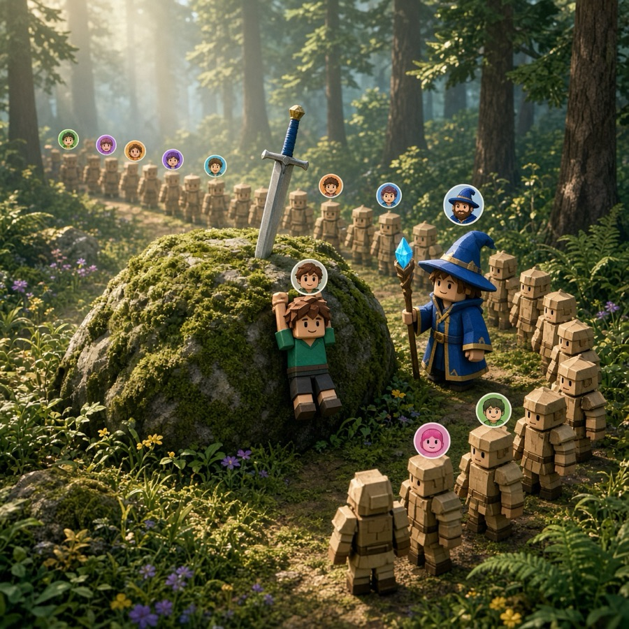
GROK AI
23
Sword in the Stone: Next!
Kuyrukta herkes taştaki kılıcı çekmeyi dener, her deneme 3 saniyelik komik yenilgi
Paylaşım cümlesi · kurgusal örnek
“12,000 people have tried to pull the sword on this TikTok live. Nobody has. I'm number 12,409.”
TikTok canlıda 12.000 kişi kılıcı çekmeyi denedi. Kimse çıkaramadı. Ben 12.409'um.
İngiltere, ABD, Fransa, küreselKurgu / internet efsanesiTelif: DüşükYeni dünyaçatışmayakın planölçekArketip C
Eve götürülen şey"12.408. deneme: olmadı" kartı ya da taç karesi
Paylaşılan kareKılıca asılmış avatar ve arkasında uzayan kuyruk
İzleyici
"pull" yazıp kuyruğa girer. Ücretsiz giriş: "pull" yazmak.
Herkes efsaneyi bilir, "kimse çıkaramadı" gülünç ve umutlu
Ortak sayaç
Başarısız deneme 12.408, her bin denemede kılıç 1 cm çıkar
Dayanak
Taştaki kılıç: Robert de Boron'un Merlin'inde (yaklaşık 1200) görülür, Lady of the Lake kılıcı Excalibur ayrı bir kılıçtır, Malory (15. yüzyıl) ikisini de Excalibur diye adlandırır (https://en.wikipedia.org/wiki/Excalibur). Orta çağ kaynakları kamu malıdır
Kural riski
Sonuç satın alınamaz, ödül ya da şans oyunu yok. Hediye denemenin sırasını belirlemez. Taç yalnız ortak hedefe bağlı
Telif
Düşük: efsane kamu malı. 1963 çizgi filmin ve T. H. White romanının karakter görselleri, Merlin ve Wart tasarımı kopyalanmaz
Yenilik denetimi. En yakın eski fikir: yok (taşta kılıç havuzda geçmiyor). Komşu: Taht Savaşı (07_ESKI_FIKIRLER), tahtta kalma. Burada taş, kuyruk ve ortak çekiş var
Bağımsız denetim: eski listelerde yakın eşi yok.
Fiyat tabelası
Gülellere tebeşir tozu (deneme ağır çekim)
Kalpşövalye zırhı (avatar zırhla)
ÇayMerlin'in yanı (denemeleri baloncukla yorumlar)
Donutborazan ("herkes birlikte" turu, hep birlikte ipi çeker)
Adım adım yapım (12 adım)
Arketip C (kuyruk ve ortak sayaç). web5/kilic/index.html, orman açıklığı, taş, uzun kuyruk.
Giriş: "pull" yazan izleyici kuyruğa girer, sırası ekranda görünür. Her deneme 3 sn komik başarısızlık.
Çizgi film ve roman görselleri kullanılmaz. Merlin ve şövalye kendi çizimimiz.
Süzgeç: yalnız "pull" komutu sayılır, serbest metin ekrana çıkmaz. Çay atan Merlin'in yorumunu hazır şablondan seçer. Kuyruk etiketi hakaret süzgecinden geçer.
Tabela: sağ üstte dört satırlık tabela: "Gül · tebeşir tozu", "Kalp · zırh", "Çay · Merlin", "Donut · borazan". Tek ekran görüntüsünde okunur.
Rol eşlemesi: Gül gelince denemesi ağır çekim, Kalp gelince zırh giyer, Çay gelince Merlin yorumu baloncukta, Donut gelince "herkes birlikte" turu: kalabalık ip bağlar, birlikte çeker.
Sayaç: başarısız deneme 12.408. Her 1.000 denemede kılıç 1 cm çıkar. Sonuç ödülle bağlı değildir.
Hediye ve şans oyunu bağlanmaz. Kılıç yalnız ortak deneme sayısına bağlı çıkar.
Kare: kılıca asılmış avatar yakın plan, arkasında uzayan kuyruk, 4 sn sabit. Adı ve deneme numarası sağ altta.
Eve götürülen şey: "12.408. deneme: olmadı" kartı ya da taç karesi.
Test: ?demo=1, 300 sahte deneme, sayaç 12.000'e ivmeli. İlk yayın: akşam 20:00, 90 dk.
Ölçülecek üç sayı: "pull" yazan oranı, kuyruğun uzunluğu, kart paylaşımı.
İlk 10 dakika
0–1 dk: "Taşta kılıç var, kimse çıkaramadı, 'pull' yaz"
1–3 dk: ilk denemeler, Merlin yorumları
3–5 dk: tebeşir tozu, ağır çekim
5–7 dk: zırhlı şövalyeler, sayaç 1.000
7–9 dk: borazan, "herkes birlikte" turu, kılıç 1 cm çıkar
9–10 dk: kare, sıra numarası, kart hatırlatılır
Doğrulama: Kökeni (Robert de Boron, Malory) doğrulandı. Düzeltme: taştaki kılıç Excalibur değildir, Excalibur gölden gelen kılıçtır. Çizgi film sahipleri ve romanın telif durumu DOĞRULANMADI, görsel kopyalanmaz
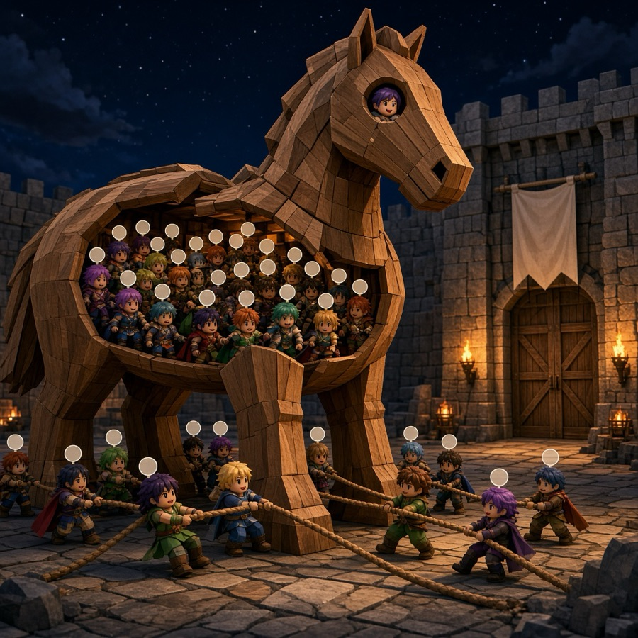
GROK AI
24
Truva Atı: İçeride Kaç Kişiyiz
Surların önünde dev tahta atın içine saklanan binlerce izleyici
Paylaşım cümlesi · kurgusal örnek
“TikTok'ta Truva atının içine 5000 kişi saklanmış, kapağın açılmasını bekliyorlar.”
Türkiye, Yunanistan, İtalyaKurgu / internet efsanesiTelif: DüşükYeni dünyaölçekçatışmatabelaArketip B
Eve götürülen şey"Atın içindeydim, sıra 3.412" kartı
Paylaşılan kareAtın kesiti, içi adlarla dolu, dışarıda sur
İzleyici
"gir" yazar, ülkesini yazar, atın içine saklanır. Ücretsiz giriş: "gir" yazmak, ülke yazmak.
Savaş, yağma, silah ve gerçek bayrak yok. Kapak açılınca kalabalık şenlikle dökülür. Yunan ve Türk çatışma esprisi yapılmaz
Telif
Düşük: efsane kamu malı. 2004 film atı ve diğer film görselleri kopyalanmaz, at kendi çizimimiz
Yenilik denetimi. En yakın eski fikir: yok (Truva havuzda geçmiyor). Komşu: Kamyon süsleme ustaları (07_ESKI_FIKIRLER), at yerine kamyon. Burada kesit görünüm ve ortak kapak var
Bağımsız denetim: dünya yeni; yalnız mekanik şuna benziyor: Panjat Pinang İnsan Piramidi: omuz verme ve ortak eşik; fısıltı rolü için Kulaktan Kulağa (5 Dil).
Arketip B (kesit görünüm, oturan kalabalık). web5/truva/index.html, gece sur önünde dev at, içi kesit.
At gövdesinin içi bölmeli sıralara ayrılır, her bölme 200 kişilik. Kalabalık küçük avatarlarla dolar.
Giriş: "gir" ve ülke yazan izleyici atın içine saklanır. Ülke bayrak değil, yalnız ad ve kısa kod.
Süzgeç: fısıltı zinciri (Çay) 50 harfle sınırlanır. Hakaret, gerçek kişi, siyaset, savaş ve milliyet çatışması esprisi süzülür. Süzgeçten geçen cümle onay kuyruğuna girer, zincir moderatör onaylı cümleyle başlar.
Tabela: sağ üstte dört satırlık tabela: "Gül · gözcü", "Kalp · halat", "Çay · fısıltı zinciri", "Donut · kapak". Tek ekran görüntüsünde okunur.
Rol eşlemesi: Gül gelince atın gözünden kamera, Kalp gelince halatı çeker, Çay gelince cümle kulaktan kulağa dolaşır (4 avatar zinciri), Donut gelince eşik dolunca sayım ve kapak.
Sayaç: "atın içinde 3.412 kişi", kapıya kalan metre. Hedef 5.000.
Kapak açılınca kalabalık şenlikle döküm yapar, savaş ya da yağma yok.
Kare: kamera atın kesitine döner, içi adlarla dolu, dışarıda sur ve kapı, 4 sn sabit durur. Sayaç sağ üstte.
Eve götürülen şey: "atın içindeydim, sıra 3.412" kartı, adı ve ülkesi.
Test: ?demo=1, 400 sahte saklanan. İlk yayın: gece 22:00, 75 dk. Çanakkale temalı ilk yayında yerel şehir selamı eklenir.
Ölçülecek üç sayı: "gir" yazanların oranı, fısıltı zinciri tamamlama, kart paylaşımı.
İlk 10 dakika
0–1 dk: "Surların önünde dev at, 'gir' yaz ve saklan"
1–3 dk: atın içi dolar, sayaç 1.000
3–5 dk: halat çekenler, at kapıya yaklaşır
5–7 dk: fısıltı zinciri, cümle dolaşır
7–9 dk: gözcü kamerası, sayaç 3.412
9–10 dk: kapı yakın, kesit karesi, kart hatırlatılır
Doğrulama: Efsane, ilk kaynaklar ve Çanakkale replikası doğrulandı. UNESCO listeleme yılı DOĞRULANMADI (sayfa açılmadı). Alandaki atın yapımcısı çelişkili
Global: tüm fikirlerin tablosu
Kod
Konsept
Rol merdiveni
Eve götürülen şey
Paylaşım cümlesi
G01
Ship Launch: We Launch Your Ship: liman, kızakta tekne; gövdede çiftin birleşik adı; ship adını öneren izleyicinin gemisi gerçekten denize indirilir
Gül → rıhtımdan serpantin atan; Kalp → gövdeye adı boyayan (sertifikada "godparent" olarak adı geçer); Çay → şişeyi sallayan (alkolsüz; şişe gövdede patlar, tekne kızaktan iner); Donut → liman başkanı (sıradaki gemiyi seçer, düdüğü çalar; en çok alkış alan gemi amiral gemisi olur)
Denize indirme sertifikası: geminin adı ve "launched by @sen"
There's a TikTok live that literally launches your ship. As a boat. Mine just hit the water. (TikTok'ta ship'ini sahiden denize indiren bir yayın var. Tekne olarak. Benimki az önce suya indi.) (kurgusal örnek)
G02
Dave's Leaving Card: kimsenin tanımadığı Dave için 3.000 yabancı dev bir veda kartı imzalar
Gül → karta çıkartma (köşeye yapışır); Kalp → pastadan adına dilim (ekranda dilim üstünde adı); Çay → veda konuşması yapan (yorumu konuşma balonunda); Donut → yarın kimin ayrılacağını yazan (yalnız ad ve uydurma bölüm, "Dave from Accounting")
Kartın fotoğrafı, notun çizgiyle işaretlenmiş hali
3,000 strangers are signing a leaving card for a guy named Dave on TikTok live. Nobody knows Dave. (TikTok canlıda 3.000 yabancı Dave diye birine veda kartı imzalıyor. Kimse Dave'i tanımıyor.)
Gül → tabuta gül bırakan (hediyenin kendisi eylem); Kalp → ön sırada şemsiye tutan (adı şemsiyede); Çay → kürsüde anma konuşması (yorumu okunur); Donut → çanı çalan ve sıradaki merhumu seçen
Anma kartı: "2026: you were mid" ve adı
TikTok is holding a funeral for 2026 and 8,000 people brought roses. (TikTok 2026 için cenaze töreni yapıyor ve 8.000 kişi gül getirdi.)
G04
Storm the Gate: They Can't Stop All of Us: çölde ufka kadar koşan kalabalık, kapıdaki düğme eşik dolunca açılır
Gül → enerji içeceği (koşucu 20 sn hız patlaması); Kalp → ön safta bayrak taşıyan (bayrak kurgusal, ülke bayrağı değil); Çay → megafonlu lider ("3, 2, 1" der); Donut → kapının düğmesi (eşik dolunca açar, içeriden çıkanı seçer: dost uzaylı, dev kedi, disko topu)
"I was there" rozeti ve sıra numarası
Someone remade the Area 51 raid as a TikTok live. 10,000 people are running at a gate right now. (Biri Area 51 baskınını TikTok canlıya çevirmiş. Şu an 10.000 kişi bir kapıya koşuyor.)
G05
The Backrooms: Chat Is Lost: sonsuz sarı ofis koridorunda kaybolan izleyiciler, sohbet oylayarak yön seçer
Gül → el feneri (koridor 20 sn aydınlanır); Kalp → duvara ok çizen (adıyla iz bırakır); Çay → harita tutan (10 sn kuşbakışı); Donut → asansör anahtarı (yeni seviyeyi açar, temasını seçer)
"Level 7'de kayboldum" kartı
400 people are lost in the Backrooms on TikTok live and chat keeps voting left. (TikTok canlıda 400 kişi Backrooms'ta kayboldu, sohbet hâlâ sola oy veriyor.)
G06
Furniture Store After Hours: kapanış anonsundan sonra mobilya mağazasına yerleşen 900 kişi, oda oda
Gül → okuma lambası (köşe aydınlanır); Kalp → yatak odası sahibi (yatak odası adıyla etiketlenir); Çay → mutfak adası (herkese ikram); Donut → mağaza anonsu (yazdığı cümle hoparlörden okunur, ışıkları kapatıp açar)
Seçtiği odanın fotoğrafı, kapıda adı
900 people moved into a fake furniture store on TikTok live. Someone owns the kitchen island. (900 kişi TikTok canlıda sahte bir mobilya mağazasına taşındı. Biri mutfak adasını sahiplenmiş.)
G07
Sunbed Wars: şafakta açılan otel havuzunda 2.000 kişinin şezlong yarışı
Gül → şezlong (adı havluda); Kalp → şemsiye (şezlongun üstü gölgelenir); Çay → havuz kenarı ilk sıra (kamera önünde yer); Donut → cabana ve cankurtaran düdüğü (5 dakikadır yazmayanların havlusunu topla)
Kanıt fotoğrafı: "Row 1, bed 4, 06:02"
TikTok live has a hotel pool where 2,000 people fight for sunbeds at dawn. I got one at 6:02. (TikTok canlıda şafakta 2.000 kişinin şezlong için kapıştığı bir otel havuzu var. Ben 6:02'de bir tane buldum.)
Gül → dörtlü ve uyarı yeleği (aracı 20 sn parlar); Kalp → karavan (büyük araç, adı büyük); Çay → trafik radyosu anonsu (yorumu radyoda okunur); Donut → mavi ışık (koridordan geçecek aracı gönderir: ambulans, itfaiye, dondurma arabası)
"Rettungsgasse-Profi" plakası
Auf TikTok üben gerade 3.000 Leute die Rettungsgasse. Rekord: 4,2 Sekunden. (TikTok'ta şu an 3.000 kişi kurtarma koridoru çalışıyor. Rekor 4,2 saniye.)
G09
Al-Mellwah: 400 Metre: çölde meclis çadırından şahin koşusu, her izleyici bir şahin
Gül → başlık süsü (şahinin başlığında renk); Kalp → eldivende yakın plan (şahin 5 sn yakın plan); Çay → yemi sallayan (seriyi başlatır); Donut → meclisin baş köşesi (kahve ikramı, gecenin şahinini seçer)
Şahin pasaportu: adı, şehri ve süresi
My falcon just ran the 400 on TikTok live. (Şahinim az önce TikTok canlıda 400'ü koştu.)
G10
Boarding Group 9: var olmayan bir uçakta koltuk haritasında adlar, kabin sınıfları hediye basamağıdır
Gül → cam kenarı (adın pencere önünde); Kalp → acil çıkış sırası (bacak mesafesi, yakın plan); Çay → Business (yatar koltuk, kamera ondadır); Donut → First ve kaptan anonsu (varış şehrini seçer)
Biniş kartı: adı, koltuk, grup
People are paying to upgrade to first class on a plane that doesn't exist. I'm in 34E. (İnsanlar var olmayan bir uçakta first class'a yükselmek için ödeme yapıyor. Ben 34E'deyim.)
G11
Sword in the Stone: Next!: kuyrukta herkes taştaki kılıcı çekmeyi dener, her deneme 3 saniyelik komik yenilgi
Gül → ellere tebeşir tozu (deneme ağır çekim); Kalp → şövalye zırhı (avatar zırhla); Çay → Merlin'in yanı (denemeleri baloncukla yorumlar); Donut → borazan ("herkes birlikte" turu, hep birlikte ipi çeker)
"12.408. deneme: olmadı" kartı ya da taç karesi
12,000 people have tried to pull the sword on this TikTok live. Nobody has. I'm number 12,409. (TikTok canlıda 12.000 kişi kılıcı çekmeyi denedi. Kimse çıkaramadı. Ben 12.409'um.)
G12
Truva Atı: İçeride Kaç Kişiyiz: surların önünde dev tahta atın içine saklanan binlerce izleyici
Gül → atın gözünden bakan gözcü (kamera ondadır); Kalp → halat çeken (atı kapıya yürütür); Çay → fısıltı zincirini başlatan (cümlesi kulaktan kulağa dolaşır); Donut → kapağı açan (eşik dolunca sayar ve açar)
"Atın içindeydim, sıra 3.412" kartı
TikTok'ta Truva atının içine 5000 kişi saklanmış, kapağın açılmasını bekliyorlar.
05
Pavyon dosyası: hiçbir şey çıkarılmadan
Koşul şuydu: platformlarda yasak değilse ve geliri engellemiyorsa alkol, sigara ve diğer ögeler çıkarılmasın. Kural metinlerini birebir okuduk. Kısa cevap: yasak değil, içki kalıyor; sigara ve nargile de kalıyor ama tek tuşla kapatılabilir olmalı, çünkü yazılı kurallar gelir riskini tam bu iki ögeye bağlıyor.
Öge öge durum
Öge
TikTok
Kick · Twitch · YouTube
Türkiye mevzuatı
Karar
İçki içme (markasız)
Kurgu ve sanat izinli. "Bazı bölgelerde" yetişkinin içki içmesi keşfet dışı ve yaş kısıtlı; Türkiye'nin bu bölgelerden olup olmadığı yazmıyor.
Kick: hüküm yok. Twitch: izinli, aşırısı etiket ister. YouTube: sorumsuz içmeyi övmüyorsa reklama uygun.
Reklam ve tanıtım yasak. Markasız kurgu görüntü için internete özgü hüküm yok.
Dahil.
Sarhoşluk, içme yarışı
Canlı yayın gelir kuralı "aşırı yeme içme"yi gelir dışı bırakabiliyor.
Twitch: etiket.
Özendirme tartışması doğar.
Yok. Geliri engelleyen tek içki ögesi bu.
Sigara, puro
Yetişkinin tütün kullanması keşfet dışı ve yaş kısıtlı. Keşfet dışı canlı yayın hediye gelirine de uygun sayılmıyor.
Kick: hüküm yok, yerel yasaya uyum şartı var. Twitch: izinli, aşırısı etiket ister. YouTube: tütün tanıtımı reklam almaz.
4207 sayılı Kanun md. 3/6: sosyal medyada ticari amaçla tütün görüntüsüne yer vermek yasak. Çizim için ayrım yok; bireye yaptırım yolu metinde açık değil.
Dahil, anahtarlı. Yazılı risk en yüksek öge.
Nargile
Tütün tanımında adı geçmiyor; belirsiz.
Açık hüküm yok.
Kapsamı belirsiz.
Dahil, anahtarlı.
Kons
Masaya oturma için hüküm yok. Cinsel çağrışım eklenirse keşfet ve gelir dışı.
Kick: yetişkin temaları 18+ etiketiyle. Twitch: cinsel hizmet çağrışımı yasak.
Hüküm yok.
Dahil. Oturur, konuşur, içki ister; cinsellik yok.
Sahne dansı
Striptiz ve cinsel kadraj kısıtlı; kültürel dans izinli.
Twitch ve YouTube: yaygın dans biçimleri serbest.
Hüküm yok.
Dahil. Sahne gösterisi olarak, yakın kadraj olmadan.
Sahneye para saçma
Özel hüküm yok. Hediye dilenmeye dönerse gelir riski.
Hüküm yok.
Hüküm yok.
Dahil.
Marka, satış, yönlendirme
Yasak (alkol ve tütün ticareti, pazarlaması).
Hepsinde kısıtlı ya da yasak.
Alkol markası görünen paylaşımlara 2026'da idari para cezası haberleri var.
Yok.
Şans oyunu
Canlı yayında kumar ve kumar benzeri etkinliğe katılım her bölgede yasak.
Kick ve Twitch'te ayrı kısıtlar.
Ayrı mevzuat.
Yok.
Üç soruya üç cevap
Yasak mı? Hayır. TikTok'un 24 Eylül 2026'da yürürlüğe giren metni izinli içerik arasında kurgu ve sanatı sayıyor; tek şartı gerçek dünyada erişim sağlamaması (kaynak). Yasak olan satış, marka tanıtımı, kumar ve cinsellik.
Geliri engeller mi? İçkide belirsiz, tütünde yazılı bir risk var. Canlı yayın gelir kuralı, keşfete uygun olmayan yayının hediye gelirine de uygun olmadığını söylüyor (kaynak); tütün kullanımı da keşfet dışı sayılan içerikler arasında. Bu kuralın çizim sahneye uygulanıp uygulanmadığını söyleyen bir cümle yok. Elimizdeki tek uygulama kanıtı: 10 Kasım haftasındaki iki pavyon yayınının menüsünde sigara ve şampanya vardı, hediye alıyorlardı ve kapatıldıklarına dair haber bulunamadı.
Türkiye'de ayrıca ne var? Tütün kanunu sosyal medyada ticari amaçla tütün görüntüsünü yasaklıyor; hediye alan bir yayının ticari sayılıp sayılmayacağı ve çizimin kapsama girip girmediği belli değil. Alkolde ceza haberleri marka görünen paylaşımlarla ilgili. Bu yüzden marka hiçbir koşulda yok. Buradaki özet hukuki görüş değildir; yayına başlamadan bir avukata sormak gerekir.
Asıl büyük risk başka yerde. Aynı gelir kuralı, yayıncının anlamlı varlığı olmadan otomasyonla yürüyen içeriği ve tekdüze, başında kimsenin olmadığı yayını da gelir dışı bırakabiliyor. Bu, pavyona değil bu sayfadaki bütün sanal sahne fikirlerine dokunur: yayıncı kadrajda ya da en azından sesiyle sahnede olmalı, gelenleri adıyla karşılamalı.
Öge anahtarı: çıkarmak yerine kapatılabilir kurmak
Bütün ögeler tasarımda var. Her biri ayar dosyasında tek satır; kapatılınca menü basamağı boş kalmaz, yerine eş değer bir eylem geçer. Gelir uyarısı gelirse yayın durmaz, anahtar çevrilir.
Anahtar
Açıkken
Kapalıyken yerine geçen
tütün
Sigara, puro, nargile, kül tablası, duman
Tespih, çekirdek, sis makinesi; nargile yerine semaver
Karar (12 Kasım 2026): tütün ögeleri açık başlar. TikTok yayını tam menüyle açılır; sigara ve nargile sahnede olur. İlk gelir ya da keşfet uyarısında yalnız tütün anahtarı kapatılır, yayın ve diğer ögeler sürer. Uyarı gelirse tarihi ve metni not edilir; kuralın çizim sahneye uygulanıp uygulanmadığını böyle öğreniriz.
Nerede yayın
Önerilen başlangıç
Neden
TikTok, Türkiye hesabı
Tam menü, tütün dahil; yaş kısıtlı izleyici ayarı açık
Karar bu. Yasak değil; yazılı gelir riski tütünde, ilk uyarıda yalnız o anahtar kapatılır.
Kick
Tam menü, 18+ etiketi
Alkol ve tütün için açık hüküm yok; etiket ve yerel yasaya uyum isteniyor.
Twitch
Tam menü, içerik etiketi
İzinli; etiket reklam gelirini etkileyebilir.
YouTube
Alkol açık; tütün açık olursa reklam kısıtı
Yaş kısıtı gelirse Super Chat kapanır.
Türkiye: altı pavyon
İlki mekânın bütün ögelerini taşıyan ana tasarım. Diğer beşi aynı dünyaya başka kapılardan giriyor: hesap, kapı, personel, sabah, meyhane. Gerçek iki yayından farkları kartlarda yazılı.
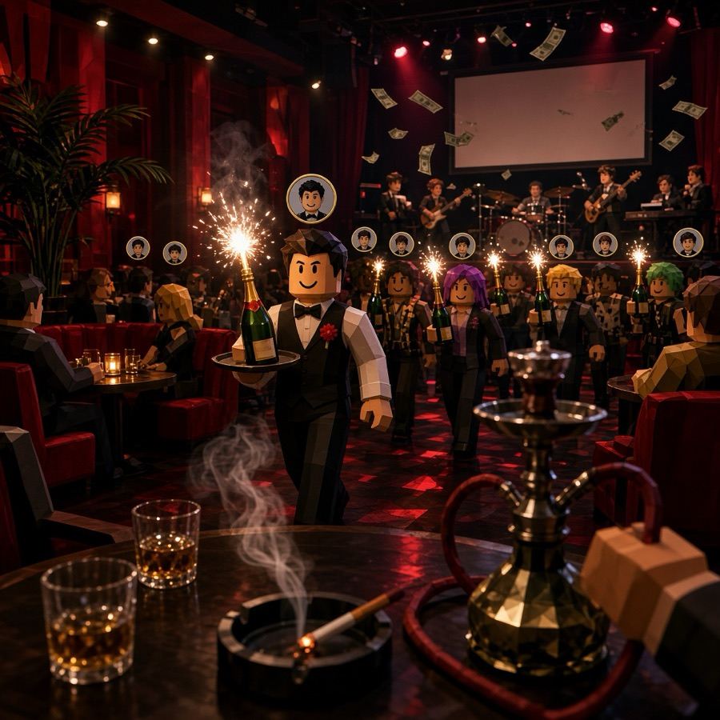
GROK AI
25
Büyük Pavyon: Tam Menü
Loş kırmızı salonda masadan bakan kamera; on basamaklı menüde sigaradan konsa, bardan maytaplı şişe geçidine kadar her şey var.
"masa" yazar, arka masaya oturur; hediyeyle menüden sipariş verir, şişe geçidini ve kons konuşmasını kendi masasında yaşar. Ücretsiz giriş: "masa" yaz, arka masaya otur; önüne çay gelir (pavyonda çay içen adam esprisi).
Yayıncı
Kadrajda salonun anonsçusu ve şef garson olarak konuşur; her siparişi sesli duyurur, geceyi 10 basamağın zirvesine taşır.
Neden tutar
Herkes pavyonu bilir ama TikTok'ta görmeyi beklemez; on basamaklı menü tek ekran görüntüsünde okunur ve "ben şuna kadar çıktım" sohbeti açar.
Ortak sayaç
Açılan şişe; salonun toplam adisyonu; sahneye saçılan para.
Yetişkin ögeleri: sigara, bira, rakı, şampanya, viski, nargile, kons, sahne ve orkestra, sahneye para saçma. Kurgu ve sanat izinli; yetişkin alkol ve tütün gösterimi 18+ ve keşfet dışı sayılabilir, bu durumda hediye geliri de kısıtlanabilir (47, 48 dosyaları). Fikre özgü: kons yalnız masada oturup hazır replik söyler, cinsel ima ve "cinsel hizmet" çağrışımı sıfır olmalı; para saçma hediye karşılığı yalvarma gibi sunulursa "hediye avcılığı" sayılır; markasız içki şişeleri, gerçek erişim ve satış yok.
Telif
Düşük: pavyon bir arketip; gerçek mekân, şarkıcı ve marka yok. Orta: tanınabilir kırmızı salon düzeni, genel kalır.
Yenilik denetimi. En yakın eski fikir: Chat Disko / Gece Kulübü (07_ESKI_FIKIRLER) ve P09 Gazino 1975: Sahneye Çiçek Sepeti (40, 42); fark: ikisi de alkolsüz ve tek rol ya da çiçek sepetidir, burada on basamaklı içki, duman ve kons menüsü ve şişe geçidi var. Gerçek yayınlardan fark: onlar tek bir gösteriydi, bu yayın izleyiciyi masaya oturtan menüdür.
TikTokkons çağır: masana oturur, adını söyler, "bana da bir içki" der
Gecenin en büyük hediyesiassolist adını anons eder, istek şarkını söyler
Adım adım yapım (12 adım)
Arketip B (3D mekân, oturan kalabalık): web5/pavyon/index.html; kırmızı salon, sahne, orkestra, bar, yuvarlak masalar, VIP loca; arka masa izleyici koltukları seats[].
Kamera: birinci kişi masadan bakar; aralarda "yakın plan sırası" (11 kişi, kısa) dönüp izleyicinin masasına iner; ana kamera 1080x1920, üst 230 ve alt 560 piksel boş.
Giriş komutu: yorumda "masa" yazan izleyici arka masaya oturur, önüne çay gelir; ücretsiz rolün esprisi: pavyonda çay içen adam.
On basamaklı menü, olay eşlemesi: Gül sigara (duman partikülü kameraya gelir), Lolipop çerez ve meyve tabağı, Donut bira, Ayna rakı kadehi ve masayla "şerefe", Kalp eli masada oyun havası, Konfeti nargile, Parfüm şampanya (mantar sesi, köpük), Öpücük sahneye para (banknot yağmuru), Gözlük viski şişesi (maytaplı şişe geçidi masaya gelir, VIP loca), TikTok kons (masaya oturur, adını söyler, "bana da bir içki" der). Gecenin en büyük hediyesi assolistin anonsu ve istek şarkı.
Tabela adımı: menü ekranın sağında, üst 230 pikselin altında iki sütun halinde durur; her satır "simge + iki sözcük" (Gül · Sigara yak, Lolipop · Çerez tabağı, Donut · Bira, Ayna · Rakı şerefe, Kalp eli · Oyun havası, Konfeti · Nargile, Parfüm · Şampanya patlat, Öpücük · Para saç, Gözlük · Şişe geçidi, TikTok · Kons çağır); sol sütun 1-5, sağ sütun 6-10, yanında o anki sahibinin adı; tek ekran görüntüsünde okunur.
Sayaç: üstte "Açılan şişe", "Salon adisyonu", "Sahneye saçılan para"; sayaçlar puandır, gerçek para değildir.
Kons ve sahne kuralı: kons masaya oturur, adı söyler, hazır replik havuzundan konuşur; el, temas, yakın kadraj ve cinsel ima yok; sahne gösterisi orkestra ve assolist; dans yok ya da yalnız halay ve el hareketi düzeyinde.
Kare adımı: şişe geçidi anında kamera masaya iner, maytaplı şişe ekranın üçte ikisinde 5 sn durur; izleyicinin adı şişenin boynundaki askıda ve masa örtüsünde görünür; kare 5 sn sabit kalır ki ekran görüntüsü alınsın.
Süzgeç adımı: kons "bana da bir içki" repliği ve izleyici adı ekrana çıktığı için argo, hakaret, cinsel ima, marka, gerçek kişi sözlüğü uygulanır; adlar ve istek şarkı önce onay kuyruğuna düşer, yayıncı ya da moderatör tuşla onaylar.
Yaş ve görünürlük adımı: yayını 18+ izleyiciye ayarla (yaş kısıtlı canlı yayın seçeneği); yayın başlığı ve açıklamasında "kurgu, çizgi karakter" yaz; içki ve sigara ögeleri çizgi olsun; keşfet dışı kalırsa trafik şuradan gelir: paylaşılan kare (şişe geçidi), 20 saniyelik kısa video, X ve takipçiye "canlı yayın başladı" duyurusu.
Eve götürülen şey: pavyon fotoğrafçısı kartı (kartonet çerçeve, masan, adın) ve gece sonu adisyon fişi yayın sonunda 20 sn gösterilir.
Test ve yayın: ?demo=1, ?seed=210; s tuşu şişe geçidi, k kons, p para yağmuru tetikler; akşam 22.00, 90 dakika; ölçülecek üç sayı: ilk 5 dakikada "masa" yazan sayısı, menüde en çok tıklanan basamak, 18+ kısıtının izleyici sayısına etkisi.
İlk 10 dakika
0–1 dk: "Hoş geldiniz, masa yazın, arka masaya oturun, çayınız geliyor"
1–3 dk: menü okunur, ilk sigara ve çerez anons edilir
3–5 dk: ilk "şerefe" turu, bar ve nargile
5–7 dk: şampanya patlar, para yağar, adisyon sayacı okunur
7–9 dk: ilk maytaplı şişe geçidi, kare 5 sn durur, "ekran görüntüsü alın"
Yetişkin ögeleri: bira, rakı, viski, içki masaları, sigara dumanı (arka planda). Genel TikTok sonucu V01 satırındaki gibi: kurgu izinli, yetişkin alkolü 18+ ve keşfet dışı olabilir, gelire etkisi "may". Fikre özgü: "hesap" ve "borç" gerçek paraya bağlanmamalı; "bütün salona benden" gerçek içki satışı ya da gerçek erişim gibi görünmemeli.
Telif
Düşük: deyiş ve fiş genel; marka yok.
Yenilik denetimi. En yakın eski fikir: Adisyon Yazıcısı (07_ESKI_FIKIRLER); fark: o gerçek yazıcıdan sipariş fişi çıkarır, burada fiyat tarla birimiyle yazılır ve salonun toplamı dönümle sayılır. Gerçek yayınlardan fark: salon tek gece ve tek müşteri değil, herkesin hesabı toplanır.
Fiyat tabelası
Gülbira (bir keçi)
Kalprakı ve meze (bir inek)
Çayviski şişesi (bir dönüm tarla)
Donut"bütün salona benden" (bir traktör): her masaya içki gider, adın anons edilir
Adım adım yapım (12 adım)
Arketip C (2D çizgi avatar ve sayaç): katil.html kopyalanıp web5/hesap/index.html yapılır; salon üstten, masaların üstünde büyüyen adisyon balonları.
Birim sistemi: tavuk, keçi, inek, dönüm, traktör; hepsi şakadır, sabit bir çevrim tablosu (1 dönüm = 5 inek gibi) birim.js içinde durur.
Giriş komutu: "çay" yazan izleyici en ucuz kalemle (bir tavuk) masaya oturur, adı masa kartında görünür.
Rol eşlemesi: Gül bira (bir keçi), Kalp rakı ve meze (bir inek), Çay viski şişesi (bir dönüm), Donut "bütün salona benden" (bir traktör); Donut gelince her masaya içki düşer, ad anons edilir.
Tabela adımı: fiyat tabelası ekranın sağ üstünde, üst 230 pikselin altında durur; dört satır: Gül · Bira bir keçi, Kalp · Rakı ve meze bir inek, Çay · Viski bir dönüm, Donut · Bütün salon bir traktör; yanında o anki sahibinin adı; tek ekran görüntüsünde okunur.
Sayaç: "Salonun hesabı" dönümle yazılır ("340 dönüm satıldı"); her yeni kalem sayaca eklenir, gece sonunda ışıklar yanar.
Gece sonu: garson uzun hesabı getirir; fiş yere kadar uzanır, kalemler sırayla okunur.
Kare adımı: fiş açılırken kamera yere iner, fiş tüm ekranda 5 sn durur; en çok kalem alan üç izleyicinin adı fişin başında kalın, diğerleri küçük satırlarda; kare 5 sn sabit kalır.
Süzgeç adımı: masa kartı adları ve "bütün salona benden" anonsu ekrana çıktığı için argo, hakaret, marka, gerçek kişi sözlüğü uygulanır; adlar onay kuyruğundan geçer.
Yaş ve görünürlük adımı: yayını 18+ izleyiciye ayarla; açıklamada "kurgu, çizgi karakter, birimler şaka" yaz; keşfet dışı kalırsa trafik paylaşılan kare (uzun fiş), 15 saniyelik "fiş açılıyor" videosu ve X'ten gelir.
Eve götürülen şey: uzun adisyon fişi (kalem ve karşılık) yayın sonunda 20 sn gösterilir ve kaydedilebilir görsel olur.
Test ve yayın: ?demo=1, ?seed=220; t tuşu traktör hediyesi tetikler; akşam 22.00, 75 dakika; ölçülecek üç sayı: fiş karesinde kalan izleyici, dönüm başına yeni hediyeci, "çay" yazan sayısı.
İlk 10 dakika
0–1 dk: "Salon doldu, hesap gece sonunda gelecek"
1–3 dk: "çay yazın, ilk kalem bir tavuk"
3–5 dk: ilk bira, ilk keçi, sayaç okunur
5–7 dk: ilk viski, "bir dönüm gitti"
7–9 dk: "bütün salona benden" tetiklenir, adlar anons edilir
Yetişkin ögeleri: sigara molası ve kuyrukta sigara, kapıdan taşan duman, ön masada viski. Ağırlık kapı önü olduğundan alkol ve tütün gösterimi daha az; sonuç V01 satırındaki gibi. Fikre özgü: bahaneler absürt havuzdan gelir, görünüş, kimlik, cinsiyet ya da yaş üzerinden aşağılama yok; şiddet yok; gerçek kapı olaylarına gönderme yok.
Telif
Düşük: genel kapı ve kuyruk arketipi; gerçek mekân adı ve tabela yok.
Yenilik denetimi. En yakın eski fikir: Doorbuster Line (07_ESKI_FIKIRLER) ve Kapıkule Sırası (aynı dosya); fark: onlar mağaza ve sınır kuyruğuydu, burada kuyruk gece kapısıdır ve içeri girişin kendisi basamaklı hediyedir. Gerçek yayınlardan fark: onlar içerideydi, bu fikir yalnız kapıdadır.
Fiyat tabelası
Gülköfte ekmek ve sigara molası (kuyrukta yerin korunur)
Kalp"listede adım var" (içeri alınır, arka masaya oturur)
Çay"mekân sahibinin arkadaşı" (fedai eğilir, ön masa, masasına viski)
Donutfedai yeleği (kapıda o durur, sıradaki on kişiyi alır ya da absürt bir bahaneyle çevirir: "bu ayakkabıyla olmaz")
Adım adım yapım (12 adım)
Arketip C (2D çizgi avatar ve sayaç): katil.html kopyalanıp web5/kapi/index.html yapılır; neon tabela (boş), iki fedai, kuyruk, kapı, yanda köfteci ve taksi durağı.
İki dünya: kapı önü (ücretsiz) ve içerisi; kapı açıldıkça içerisi ekranın üst kısmında beliren duman ve müzikle taşar.
Giriş komutu: "sıra" yazan izleyici kuyruğa girer; beğeni fedaiye ricadır ve sırayı biraz öne taşır.
Rol eşlemesi: Gül köfte ekmek ve sigara molası (yer korunur), Kalp "listede adım var" (arka masa), Çay "mekân sahibinin arkadaşı" (ön masa, viski), Donut fedai yeleği (kapıda o durur, sıradaki on kişiyi alır ya da absürt bahaneyle çevirir).
Tabela adımı: fiyat tabelası kapının yanında, ekranın sağ üstünde, üst 230 pikselin altında durur; dört satır: Gül · Köfte ve sigara molası, Kalp · Listede adım var, Çay · Sahibin arkadaşı, Donut · Fedai yeleği; yanında sahibin adı; tek ekran görüntüsünde okunur.
Absürt bahane havuzu (60 madde): "bu ayakkabıyla olmaz", "bu gece ceket rengi uymadı", "kapıda şemsiye olmaz" gibi; görünüş, kimlik, cinsiyet ya da yaş üzerinden aşağılama yok.
Sayaç: "Kapıda bekleyen", "içeride", "bu gece 412 kişi giremedi".
Kare adımı: kuyruğun arkasından uzun çekim, kamera kapıya yaklaşır; kuyruk, neon tabela ve iki fedai tek karede 5 sn durur; izleyicinin adı kuyrukta kendi avatarının üstünde etiket olarak yazar; kare 5 sn sabit kalır.
Süzgeç adımı: izleyici adları ve "listede adım var" yazısına dönüşen adlar ekrana çıktığı için argo, hakaret, marka, gerçek kişi sözlüğü uygulanır; kapıda okunan ad önce onay kuyruğundan geçer.
Yaş ve görünürlük adımı: yayını 18+ izleyiciye ayarla; açıklamada "kurgu, çizgi karakter" yaz; keşfet dışı kalırsa trafik paylaşılan kareden (kuyruk ve fedailer), 15 saniyelik "bu gece giremezsin" videosundan ve X'ten gelir.
Eve götürülen şey: bilekte giriş damgası ya da "giremedim" kartı yayın sonunda 20 sn gösterilir.
Test ve yayın: ?demo=1, ?seed=230; f tuşu fedai replik tetikler, y tuşu yelek devreder; akşam 22.30, 75 dakika; ölçülecek üç sayı: kuyrukta ilk 5 dakikada kalan, "giremedim" kartı paylaşma sayısı, Donut yelek sahibi sayısı.
Yetişkin ögeleri: rakı, viski, kokteyl, maytaplı şişe, kül tablası, kons masaları, sahne ve assolist. Sonuç V01 satırındaki gibi. Fikre özgü: bahşiş puandır, ödeme ya da gerçek gelir vaadi yok; çalışan kimliği "emek sömürüsü" şakasına kayarsa süzgeçten dönmeli; kons yalnız masada oturan karakterdir.
Telif
Düşük: genel meslek rolleri; kesit mekân düzeni gerçek bir mekâna benzetilmez.
Yenilik denetimi. En yakın eski fikir: Gece Vardiyası Kantini (13_TOHUMLAR, D14); fark: o gece çalışanların kantinidir, burada çalışan pavyon personelidir, rolün kendisi basamaklı hediyedir ve içki servisi vardır. Gerçek yayınlardan fark: onlar müşteri gözünden bakıyordu, bu fikir çalışan gözünden.
Fiyat tabelası
Gülgarson (masalara rakı ve viski taşır, taşıdıkça bahşiş puanı)
Kalpbarmen (kokteyl sallar, şişe çevirir, yakın plan)
Çayşef garson (maytaplı şişe geçidini yönetir, hangi masaya gideceğini seçer)
Donutpatron (assolisti sahneye çıkarır, gecenin hasılatını açıklar, "kasayı kapat" der)
Adım adım yapım (12 adım)
Arketip B (3D mekân kesiti): web5/personel/index.html; salonun üstten kesiti: bar, mutfak, sahne arkası, kasa; müşteriler yapay avatar.
Giriş komutu: "komi" yazan izleyici komi olur (kül tablası değiştirir, boşları toplar); adı rozetle komi sırasına yazılır.
Rol eşlemesi: Gül garson (masalara rakı ve viski taşır, taşıdıkça bahşiş puanı), Kalp barmen (kokteyl sallar, şişe çevirir), Çay şef garson (şişe geçidini yönetir), Donut patron (assolisti sahneye çıkarır, hasılatı açıklar, "kasayı kapat" der).
Müşteri yapay zekâsı: 40 masa sırayla sipariş verir; sipariş balonunda simge çıkar (rakı, viski, çerez), yazı yok.
Tabela adımı: fiyat tabelası ekranın sağ üstünde, üst 230 pikselin altında; dört satır: Gül · Garson, Kalp · Barmen, Çay · Şef garson, Donut · Patron; yanında o anki sahibi; tek ekran görüntüsünde okunur.
Kons ve sahne kuralı: kons masalarda yalnız oturan yapay karakterdir; garson ve barmen kons ile etkileşmez; sahne yalnız assolist ve orkestra.
Kare adımı: tepsiyle koşan garson avatarı ekranın önünde, arkasında salon; kamera arkadan geri çekilir, 5 sn durur; en çok masaya bakan izleyicinin adı tepsinin altında yazar; kare 5 sn sabit kalır.
Süzgeç adımı: izleyici adları rozet ve bordro satırlarında ekrana çıktığı için argo, hakaret, marka, gerçek kişi sözlüğü uygulanır; patron anonslarında kullanılacak ad onay kuyruğundan geçer.
Yaş ve görünürlük adımı: yayını 18+ izleyiciye ayarla; açıklamada "kurgu, çizgi karakter, bahşiş puandır" yaz; keşfet dışı kalırsa trafik paylaşılan kare (tepsili garson), bordro karesinin kısa videosu ve X'ten gelir.
Eve götürülen şey: gece sonu bordrosu ("bu gece 40 masaya baktın, 3 şişe açtın") yayın sonunda 20 sn gösterilir.
Test ve yayın: ?demo=1, ?seed=240; g tuşu garson, p tuşu patron devreder; akşam 21.30, 80 dakika; ölçülecek üç sayı: komi olan izleyici, rol değiştiren, bordro karesini paylaşan.
İlk 10 dakika
0–1 dk: "Bu gece pavyonu siz işletiyorsunuz, komi yazın"
1–3 dk: ilk komiler kül tablası toplar, sayaçlar açılır
3–5 dk: ilk garson, rakı ve viski taşınır
5–7 dk: barmen kokteyl sallar, yakın plan
7–9 dk: şef garson şişe geçidini yönetir, kare 5 sn durur
9–10 dk: patron anonsu, tabela ve bordro hatırlatılır
Doğrulama: Garson, barmen, şef garson, patron meslek adlarıdır; pavyonda "şef" yalnız ikincil kaynakta. Maytaplı şişe geçidi DOĞRULANMADI.
“TikTok'ta pavyon çıkışı işkembeciye gitmişler, 800 kişi peçeteye pişmanlığını yazıyor.”
TürkiyeTelif: Düşükkendi cümlençatışmaölçekArketip B
Eve götürülen şeyPeçeten: el yazısı cümle ve saat.
Paylaşılan karePeçetelerle kaplı duvar.
İzleyici
"çorba" yazar, tezgâha oturur; peçeteye pişmanlık cümlesini yazar (kendi cümlen); hediyeyle çorba ısmarlar. Ücretsiz giriş: "çorba" yaz, tezgâha otur; peçeteye pişmanlık cümleni yaz ("bir daha gitmem", "hesabı kim ödedi"), duvara asılır.
Yayıncı
Çorbacı usta olarak konuşur, peçeteleri okur, şafak sayacını ve kapanış zilini yönetir.
Neden tutar
Herkesin bir "sabaha karşı" anısı vardır; kendi cümlen duvarda görününce ekran görüntüsü alınır. Pavyonla çorbacı arasındaki zıtlık kendiliğinden anlatılır.
Ortak sayaç
İçilen çorba; peçete duvarı; gün doğumuna kalan süre.
Yetişkin ögeleri: kapı önünde son sigara, geceden kalma içki esprisi (sahnede içki yok, yalnız sözde). Sonuç V01 satırındaki gibi, ağırlık düşük. Fikre özgü: sarhoşluğu övmek yok; araç kullanma şakası yok (taksi çağırma rolü var); "pişmanlık" cümlesine kendine zarar anlatan metin düşerse süzgeç destek mesajı gösterir; peçeteler onay kuyruğundan geçer.
Telif
Düşük: genel mekân; marka ve gerçek mekân yok.
Yenilik denetimi. En yakın eski fikir: Gece Vardiyası Kantini (13_TOHUMLAR, D14) ve Sıra gecesi sofrası (07b_TUR3_ILK_FIKIRLER); fark: kantin vardiya çalışanları içindir, burada sahne gecenin sonudur ve cümle peçeteye yazılır. Gerçek yayınlardan fark: pavyonun kendisi yok, yalnız çıkışı var.
Fiyat tabelası
Gülsarımsaklı sirke (kaşık sesi, yakın plan)
Kalp"abiye bir çorba da benden" (yanındakine ısmarlar)
Arketip B (3D mekân): web5/iskembeci/index.html; buğulu camlı çorbacı, tezgâh, kaseler, şafak ışığının pencereden girmesi; ekranın dışında kapı ve taksi.
Giriş komutu: "çorba" yazan izleyici tezgâha oturur; peçeteye pişmanlık cümlesini yazar ("peçete:" ile başlayan yorum), peçete duvara asılır.
Rol eşlemesi: Gül sarımsaklı sirke (kaşık sesi, yakın plan), Kalp "abiye bir çorba da benden", Çay kapı önünde son sigara ve çay (şafak karesi), Donut usta (pişmanlık cümlesini seçer, tabelaya yazdırır, kapanış zilini çalar).
Peçete duvarı: en çok beğenilen 12 peçete büyütülür, kalan peçeteler arka planda duvar dokusu olur.
Tabela adımı: fiyat tabelası tezgâhın üstünde, ekranın sağ üstünde, üst 230 pikselin altında durur; dört satır: Gül · Sarımsaklı sirke, Kalp · Abiye çorba benden, Çay · Son sigara ve çay, Donut · Usta; yanında sahibin adı; tek ekran görüntüsünde okunur.
Sahne ögesi: sigara yalnız kapı önünde ve sözde; sahnede içki yok, geceden gelen avatarlar yorgun duruşlu; taksi çağırma düğmesi (araç kullanma şakası yok).
Kare adımı: kamera peçete duvarına gider; en güzel peçeteler tek karede 5 sn durur, izleyicinin adı ve peçetesi tam karede, saat yazısı köşede; kare 5 sn sabit kalır.
Süzgeç adımı: izleyicinin yazdığı peçete cümlesi duvara çıktığı için argo, hakaret, marka, gerçek kişi, kendine zarar ve intihar ifadeleri sözlüğü uygulanır; kendine zarar anlatan cümle ekrana çıkmaz, o kişiye destek mesajı gösterilir; kalan cümleler onay kuyruğundan geçer.
Yaş ve görünürlük adımı: yayını 18+ izleyiciye ayarla (sigara ve gece teması nedeniyle); açıklamada "kurgu, çizgi karakter" yaz; keşfet dışı kalırsa trafik paylaşılan kare (peçete duvarı), 15 saniyelik kısa video ve X'ten gelir.
Eve götürülen şey: peçeten (el yazısı cümle ve saat) kart olarak yayın sonunda 20 sn gösterilir.
Test ve yayın: ?demo=1, ?seed=250; n tuşu peçete ekler; saat 03.30 başla, 90 dakika; ölçülecek üç sayı: peçete yazan izleyici, duvar karesi paylaşımı, son 15 dakika izleyici tutma.
3–5 dk: ilk çorbalar, sarımsaklı sirke yakın planı
5–7 dk: usta ilk peçeteyi okur, duvara asar
7–9 dk: duvar karesi 5 sn durur, "ekran görüntüsünü alın"
9–10 dk: kapı önünde şafak karesi, tabela hatırlatılır
Doğrulama: Gece çıkışı işkembe ve sarımsaklı sirke doğrulandı; peçeteye yazma geleneği DOĞRULANMADI (oyun kuralı).
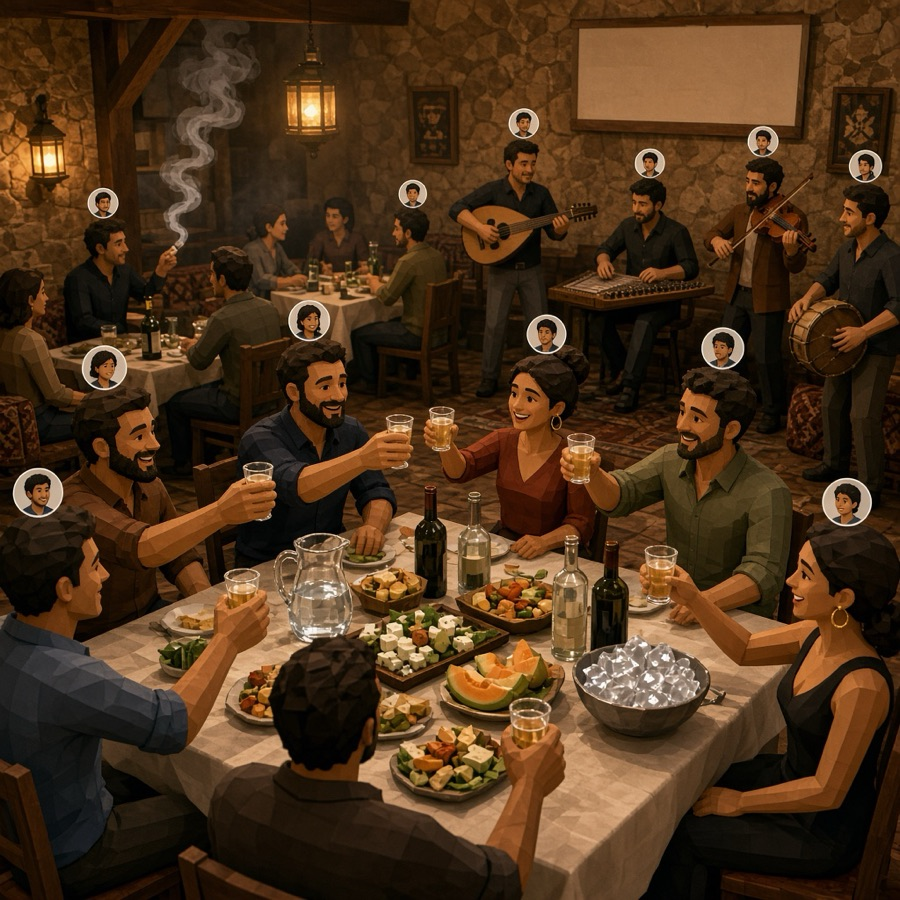
GROK AI
30
Meyhane: Fasıl ve Şerefe
Beyaz örtülü uzun masada rakı ve meze; kanun, ud, keman, darbuka masadan masaya gezer, herkes aynı anda şerefe yazınca cam sesi dalgası olur.
Paylaşım cümlesi · kurgusal örnek
“TikTok'ta meyhane açmışlar, 3000 kişi aynı anda şerefe dedi.”
TürkiyeTelif: Ortaölçekkendi cümlençatışmaArketip B
Eve götürülen şeyMasa fotoğrafı ve kadeh sözün.
Paylaşılan kareUzun masa, havada kadehler.
İzleyici
"şerefe" yazar, kadehini kaldırır; hediyeyle meze, rakı, istek şarkı seçer; kadeh sözünü yazar. Ücretsiz giriş: "şerefe" yaz, kadehini kaldır; herkes aynı anda yazınca toplu şerefe (cam sesi dalgası).
Yayıncı
Meyhane sahibi ve masabaşı: şarkıyı ve kadeh sözünü seçer, toplu şerefeyi sayar.
Neden tutar
Rakı sofrası ve fasıl ortak anıdır; üç bin kadehin aynı anda kalkması ölçek karesi olur.
Ortak sayaç
Toplu şerefe; "bu gece 12 şarkı"; masa uzadıkça kamera uzaklaşır.
Yetişkin ögeleri: rakı (buz ve su, beyazlaşma), meze, kadeh ve cam sesi, sigara dumanı, fasıl heyeti. Sonuç V01 satırındaki gibi: kurgu izinli, yetişkin alkolü 18+ ve keşfet dışı olabilir. Fikre özgü: içme yarışı ve "tek atma" baskısı yok (tur yalnız şarkı ve söz seçer); kadeh sözleri süzgeçten geçer; heyet gerçek sanatçı adı ve sesi kullanmaz, şarkılar kamu malı ya da hazır telifsiz kayıt olmalı.
Telif
Orta: şarkı telifi; telifsiz ya da kamu malı fasıl kaydı kullanılır; gerçek sanatçı ve mekân yok.
Yenilik denetimi. En yakın eski fikir: Sıra Gecesi Türkü Sırası (07_ESKI_FIKIRLER) ve P09 Gazino 1975: Sahneye Çiçek Sepeti (40, 42); fark: ilki sırayla türkü okur, ikincisi gazinoda alkolsüz çiçek gönderir, burada beyaz örtülü masada rakı, meze ve gezgin heyet var, ölçek şerefe dalgasıdır. Gerçek yayınlardan fark: pavyon hiç yok, aile masası ve meyhane.
Kalprakısını tazeler, buz ve su ekler (beyazlaşma yakın planı)
Çayfasıl heyeti masasına gelir, istek şarkı
Donutmasanın başı ("tek atalım" turunu başlatır, sıradaki şarkıyı ve izleyicilerin yazdığı kadeh sözlerinden gecenin sözünü seçer)
Adım adım yapım (12 adım)
Arketip B (3D mekân): web5/meyhane/index.html; beyaz örtülü uzun masa, rakı ve meze tepsisi, masadan masaya gezen dört kişilik heyet (kanun, ud, keman, darbuka); masa uzadıkça kamera geri çekilir.
Giriş komutu: "şerefe" yazan izleyici kadehini kaldırır; 5 saniye içinde en az 30 kişi yazarsa toplu şerefe (cam sesi dalgası) tetiklenir.
Rol eşlemesi: Gül meze tepsisinden seçer (beyaz peynir, kavun, haydari), Kalp rakıyı tazeler (buz ve su, beyazlaşma yakın planı), Çay fasıl heyeti masaya gelir ve istek şarkı çalar, Donut masanın başı ("tek atalım" turu başlatır, kadeh sözünü seçer).
Şarkı havuzu: hazır telifsiz ya da kamu malı fasıl kayıtları, 20 parça; istek şarkı yalnız havuzdan seçilir.
Tabela adımı: fiyat tabelası masanın başında, ekranın sağ üstünde, üst 230 pikselin altında durur; dört satır: Gül · Meze seç, Kalp · Rakı tazele, Çay · Heyet masana, Donut · Masanın başı; yanında sahibin adı; tek ekran görüntüsünde okunur.
Sayaç: "Toplu şerefe", "bu gece 12 şarkı", masa uzadıkça kamera uzaklaşır; kadeh sayısı puandır.
Kadeh sözü: "söz:" ile başlayan yorum kadeh sözü olur; gecenin sözünü Donut seçer.
Kare adımı: toplu şerefe anında kamera uzun masanın tamamına çıkar; havada kadehler ve uzaklaşan masa 5 sn tam karede durur; izleyici adı kadehin yanında küçük etiketle yazar; kare 5 sn sabit kalır.
Süzgeç adımı: kadeh sözleri ve adlar ekrana çıktığı için argo, hakaret, marka, gerçek kişi sözlüğü uygulanır; içme yarışı ya da içmeye zorlama ifadeleri elenir; sözler onay kuyruğundan geçer.
Yaş ve görünürlük adımı: yayını 18+ izleyiciye ayarla; açıklamada "kurgu, çizgi karakter, içme yarışı yok" yaz; keşfet dışı kalırsa trafik paylaşılan kare (uzun masa, havada kadehler), 15 saniyelik şerefe videosu ve X'ten gelir.
Eve götürülen şey: masa fotoğrafı ve kadeh sözü kartı yayın sonunda 20 sn gösterilir.
Test ve yayın: ?demo=1, ?seed=260; s tuşu toplu şerefe, h tuşu heyet tetikler; akşam 21.30, 90 dakika; ölçülecek üç sayı: toplu şerefeye katılan, istek şarkı sayısı, masa karesi paylaşımı.
İlk 10 dakika
0–1 dk: "Masa kuruldu, rakı ve meze geldi; şerefe yazın"
1–3 dk: ilk "şerefe", sonra toplu şerefe denemesi
3–5 dk: meze seçimi, rakı beyazlaşır
5–7 dk: heyet masaya gelir, ilk istek şarkı
7–9 dk: toplu şerefe, kare 5 sn durur, "ekran görüntüsünü alın"
9–10 dk: kadeh sözleri okunur, tabela hatırlatılır
Doğrulama: Fasıl heyeti ve meze eşleşmesi (beyaz peynir, kavun) doğrulandı; toplu şerefe dalgası DOĞRULANMADI (oyun kuralı).
Pavyon, Türkiye: tüm fikirlerin tablosu
Kod
Konsept
Rol merdiveni
Paylaşım cümlesi
Kural riski
V01
Büyük Pavyon: Tam Menü: loş kırmızı salonda masadan bakan kamera; on basamaklı menüde sigaradan konsa, bardan maytaplı şişe geçidine kadar her şey var.
Gül → sigara yak (duman kameraya gelir); Lolipop → çerez ve meyve tabağı; Donut → bira; Ayna → rakı kadehi, masayla "şerefe"; Kalp eli → masada oyun havası; Konfeti → nargile; Parfüm → şampanya patlat (mantar sesi, köpük); Öpücük → sahneye para saç (banknot yağmuru); Gözlük → viski şişesi açtır: maytaplı şişe geçidi masana gelir, VIP locaya geçersin; TikTok → kons çağır: masana oturur, adını söyler, "bana da bir içki" der; Gecenin en büyük hediyesi → assolist adını anons eder, istek şarkını söyler
Yetişkin ögeleri: sigara, bira, rakı, şampanya, viski, nargile, kons, sahne ve orkestra, sahneye para saçma. Kurgu ve sanat izinli; yetişkin alkol ve tütün gösterimi 18+ ve keşfet dışı sayılabilir, bu durumda hediye geliri de kısıtlanabilir (47, 48 dosyaları). Fikre özgü: kons yalnız masada oturup hazır replik söyler, cinsel ima ve "cinsel hizmet" çağrışımı sıfır olmalı; para saçma hediye karşılığı yalvarma gibi sunulursa "hediye avcılığı" sayılır; markasız içki şişeleri, gerçek erişim ve satış yok.
V02
Hesap Kimde: Tarlayı Satanlar Gecesi: fiyatlar tavuk, keçi, inek, dönüm ve traktörle yazılır; gece sonunda salonun toplam hesabı dönümle açıklanır.
Gül → bira (bir keçi); Kalp → rakı ve meze (bir inek); Çay → viski şişesi (bir dönüm tarla); Donut → "bütün salona benden" (bir traktör): her masaya içki gider, adın anons edilir
TikTok pavyonunda hesap geldi: üç dönüm tarla, iki inek. Masamız gecenin kralı seçildi. (kurgusal örnek)
Yetişkin ögeleri: bira, rakı, viski, içki masaları, sigara dumanı (arka planda). Genel TikTok sonucu V01 satırındaki gibi: kurgu izinli, yetişkin alkolü 18+ ve keşfet dışı olabilir, gelire etkisi "may". Fikre özgü: "hesap" ve "borç" gerçek paraya bağlanmamalı; "bütün salona benden" gerçek içki satışı ya da gerçek erişim gibi görünmemeli.
V03
Kapıdaki Fedai: Bu Gece Giremezsin: neon tabelalı kapıda iki fedai, uzun kuyruk; içeri girmek, ön masaya geçmek ya da yelek giyip kapıyı yönetmek hediyeyle olur.
Gül → köfte ekmek ve sigara molası (kuyrukta yerin korunur); Kalp → "listede adım var" (içeri alınır, arka masaya oturur); Çay → "mekân sahibinin arkadaşı" (fedai eğilir, ön masa, masasına viski); Donut → fedai yeleği (kapıda o durur, sıradaki on kişiyi alır ya da absürt bir bahaneyle çevirir: "bu ayakkabıyla olmaz")
Yetişkin ögeleri: sigara molası ve kuyrukta sigara, kapıdan taşan duman, ön masada viski. Ağırlık kapı önü olduğundan alkol ve tütün gösterimi daha az; sonuç V01 satırındaki gibi. Fikre özgü: bahaneler absürt havuzdan gelir, görünüş, kimlik, cinsiyet ya da yaş üzerinden aşağılama yok; şiddet yok; gerçek kapı olaylarına gönderme yok.
V04
Personel Sensin: Pavyonu İşlet: izleyici müşteri değil çalışandır; komiden patrona dört basamakta salonu üstten kesitte işletir.
Gül → garson (masalara rakı ve viski taşır, taşıdıkça bahşiş puanı); Kalp → barmen (kokteyl sallar, şişe çevirir, yakın plan); Çay → şef garson (maytaplı şişe geçidini yönetir, hangi masaya gideceğini seçer); Donut → patron (assolisti sahneye çıkarır, gecenin hasılatını açıklar, "kasayı kapat" der)
TikTok pavyonunda garsonluk yapıyorum, bu gece 40 masaya baktım, patron hâlâ zam yapmadı. (kurgusal örnek)
Yetişkin ögeleri: rakı, viski, kokteyl, maytaplı şişe, kül tablası, kons masaları, sahne ve assolist. Sonuç V01 satırındaki gibi. Fikre özgü: bahşiş puandır, ödeme ya da gerçek gelir vaadi yok; çalışan kimliği "emek sömürüsü" şakasına kayarsa süzgeçten dönmeli; kons yalnız masada oturan karakterdir.
V05
Sabaha Karşı İşkembeci: saat 04.30, buğulu camlı çorbacıda peçeteye pişmanlık cümleni yazarsın; cümle duvara asılır.
Gül → sarımsaklı sirke (kaşık sesi, yakın plan); Kalp → "abiye bir çorba da benden" (yanındakine ısmarlar); Çay → kapı önünde son sigara ve çay (şafak karesi); Donut → usta (gecenin pişmanlık cümlesini seçer, tabelaya yazdırır, kapanış zilini çalar)
Yetişkin ögeleri: kapı önünde son sigara, geceden kalma içki esprisi (sahnede içki yok, yalnız sözde). Sonuç V01 satırındaki gibi, ağırlık düşük. Fikre özgü: sarhoşluğu övmek yok; araç kullanma şakası yok (taksi çağırma rolü var); "pişmanlık" cümlesine kendine zarar anlatan metin düşerse süzgeç destek mesajı gösterir; peçeteler onay kuyruğundan geçer.
V06
Meyhane: Fasıl ve Şerefe: beyaz örtülü uzun masada rakı ve meze; kanun, ud, keman, darbuka masadan masaya gezer, herkes aynı anda şerefe yazınca cam sesi dalgası olur.
Gül → meze tepsisinden seçer (beyaz peynir, kavun, haydari); Kalp → rakısını tazeler, buz ve su ekler (beyazlaşma yakın planı); Çay → fasıl heyeti masasına gelir, istek şarkı; Donut → masanın başı ("tek atalım" turunu başlatır, sıradaki şarkıyı ve izleyicilerin yazdığı kadeh sözlerinden gecenin sözünü seçer)
TikTok'ta meyhane açmışlar, 3000 kişi aynı anda şerefe dedi. (kurgusal örnek)
Yetişkin ögeleri: rakı (buz ve su, beyazlaşma), meze, kadeh ve cam sesi, sigara dumanı, fasıl heyeti. Sonuç V01 satırındaki gibi: kurgu izinli, yetişkin alkolü 18+ ve keşfet dışı olabilir. Fikre özgü: içme yarışı ve "tek atma" baskısı yok (tur yalnız şarkı ve söz seçer); kadeh sözleri süzgeçten geçer; heyet gerçek sanatçı adı ve sesi kullanmaz, şarkılar kamu malı ya da hazır telifsiz kayıt olmalı.
Dünya: her ülkenin pavyonu
Aynı ihtiyacın başka ülkelerdeki karşılıkları. Hediyenin sahnedeki karşılığı hepsinde hazır: karanfil tepsisi, şampanya kulesi, akordeona yapıştırılan banknot, herkese ısmarlanan tur.
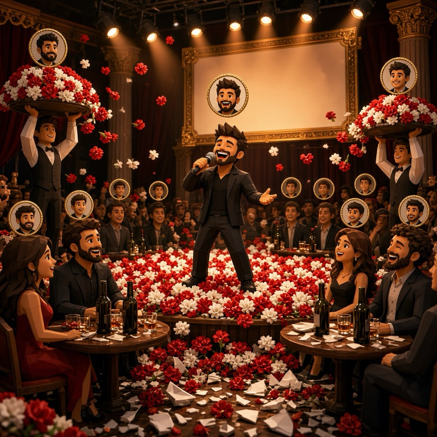
GROK AI
31
Bouzoukia: Flower War
Yunan buzuki gecesi; sahne önünden tepsilerle gelen karanfil şarkıcının üstüne yağar, tabaklar kırılır, zeybekiko sırasında salon diz çöker
Paylaşım cümlesi · kurgusal örnek
“There's a Greek bouzoukia on TikTok live and I just buried the singer in carnations. (TikTok canlıda bir Yunan buzuki gecesi var ve şarkıcıyı karanfile gömdüm.)”
Yunanistan, Kıbrıs ve diasporaÜlkeye özelTelif: Ortaçatışmayakın planölçekArketip B
Eve götürülen şeyÇiçek yağmuru altında kendi masanın karesi ve "bu gece sahneye 312 karanfil attım" etiketi
Paylaşılan kareKaranfile gömülmüş sahne: şarkıcı avatarı çiçek yığınının ortasında mikrofonla gülüyor, önde şişeli masalar
İzleyici
"opa" yazıp alkış halkasına girer; masasından karanfil atar; zeybekiko sırasında "diz çök" yazıp alkış tutar. Ücretsiz giriş: "opa" yazmak (alkış halkası). Beğeni karanfildir, her 50 beğeni bir avuç çiçek.
Yayıncı
Garson ve şarkıcı rolünü sahnede yönetir; her tepsiyi duyurur, sahne önünü sayar, zeybekiko anında salonu susturur
Neden tutar
Görüntü tek cümlede anlatılır: sahne çiçeğe gömülüyor. Çiçek atmak hediyeyi doğrudan gösterir, izleyici emeğinin ekranda görünmesini ister, diaspora izleyici kendi gecesini tanır
Yetişkin ögeleri: şişe ve içki masası, tabak kırma, çiçek atma, sahne şarkıcısı. TikTok: kurgu ve sanat izinli; yetişkinin alkol alması bazı bölgelerde keşfet dışı ve 18+; kurguya açık muafiyet cümlesi yok (47_kural_tiktok.md). Diğer platformlar (48_kural_diger.md): Kick'te alkol ve sigara için açık hüküm yok, 18+ etiketi ve yerel yasa uyumu istenir; Twitch'te etiket ve reklam geliri etkisi; YouTube'da alkol sınırlı serbest, yaş kısıtı Super Chat'i kapatır.. Fikre özgü: çiçek atmayı hediyeyle bağlarken "hediye atmazsan olmaz" baskısı gelir riski; kons ve cinsel çağrışım yok; Yunanistan'da gerçek tabak kırma yasak olduğundan alçı ya da çizim tabak gösterilir
Telif
Orta: tanınabilir Yunan gece kulübü düzeni; gerçek şarkıcı adı ve sesi, gerçek şarkı yok; müzik telifsiz ya da kendi kaydımız; gerçek bayrak ve marka etiketi yok
Yenilik denetimi. En yakın eski fikir: Roda de Samba: Passa o Chapéu (07_ESKI_FIKIRLER): müzisyene şapkayla bahşiş, sokak rodası; burada gece kulübü, şişe, tabak, çiçek yağmuru ve zeybekiko var. Mariachi Karaoke (07_ESKI_FIKIRLER): karaoke ve boş koltuk; burada şarkıcıya çiçek atılıyor
Fiyat tabelası
Gülbir tepsi karanfil (şarkıcının üstüne yağar, hediyenin simgesi eylemin kendisi)
Kalptabak kırar ("opa!", alçı tabak sesi)
Çaymasasına şişe gelir, yanında karanfil kulesi
Donutzeybekiko (pist boşalır, avatarı tek başına döner, salon diz çöküp alkış tutar)
Adım adım yapım (12 adım)
Arketip B (kesit görünüm, oturan kalabalık). web5/bouzoukia/index.html: sahne önü masalar, dik uzun masa düzeni, sahnede şarkıcı avatarı, çiçek tepsili garsonlar.
Her izleyici bir masa ve şişe olarak oturur. Şişeler etiketsizdir, tabaklar alçı beyazı çizimdir; gerçek tabak kırma gösterilmez.
Giriş: "opa" yazan alkış halkasına girer. Beğeni eşiği: her 50 beğeni bir avuç karanfil.
Tabela: sol üstte dört satırlık tepsi tabelası: "Gül · tepsi karanfil", "Kalp · tabak", "Çay · şişe ve kule", "Donut · zeybekiko". Tek ekran görüntüsünde okunur.
Rol eşlemesi: Gül gelince garson tepsiyi şarkıcıya boşaltır, Kalp gelince alçı tabak kırılır, Çay gelince masaya şişe ve karanfil kulesi gelir, Donut gelince pist boşalır, avatar tek başına döner, salon diz çöküp alkış tutar.
Sayaç: atılan karanfil ve sahnenin çiçekle kaplanma yüzdesi; %100'de şarkıcı çiçeğin altında görünmez olur, sonra çiçekler süpürülür.
Süzgeç: serbest metin ekrana çıkmaz; "opa" ve "diz çök" komutları sayılır. Çay atanın adı hakaret ve gerçek kişi süzgecinden geçer, onay kuyruğuna girer.
Yaş ve görünürlük: yayını 18+ izleyiciye ayarla, açıklamada kurgu ve çizgi olduğunu yaz, alkol satışı ve yönlendirme yok. Keşfet dışı kalırsa trafik diaspora topluluk gruplarından, kısa kliplerin yönlendirmesinden ve takipçi bildirimlerinden gelir.
Kare: kamera zeybekiko öncesi sahneye iner, çiçek yığınına 4 sn sabit durur, salonun ortasındaki masaya yakınlaşır; izleyicinin adı masa kartında sağ altta görünür.
Eve götürülen şey: çiçek yağmuru altındaki masa karesi ve "312 karanfil attım" etiketi.
Ölçülecek üç sayı: "opa" yazan oranı, çiçek sayacı hedefine ulaşma süresi, kare paylaşımı.
İlk 10 dakika
0–1 dk: "Buzuki gecesi başladı, 'opa' yaz ve sahneye çiçek at"
1–3 dk: ilk tepsiler, sahne çiçeklenmeye başlar
3–5 dk: alçı tabaklar, "opa" dalgası
5–7 dk: şişe ve karanfil kulesi, sayaç %50
7–9 dk: pist boşalır, zeybekiko, salon diz çöker
9–10 dk: çiçekle kaplı sahne karesi, kart hatırlatılır
Doğrulama: Karanfil tepsisi, çiçeğin şarkıcıya atılması, alçı tabaklar, tabak kırmanın yasak olması doğrulandı. Yasağın yılı kaynaklara göre değişir (1969 ya da 1970'ler). Zeybekiko'da diz çökme tek bir düğün rehberinde geçiyor, kural olarak DOĞRULANMADI. "Louloudopolemos" adı DOĞRULANMADI; çiçek savaşı çevirisi tohumdan geliyor
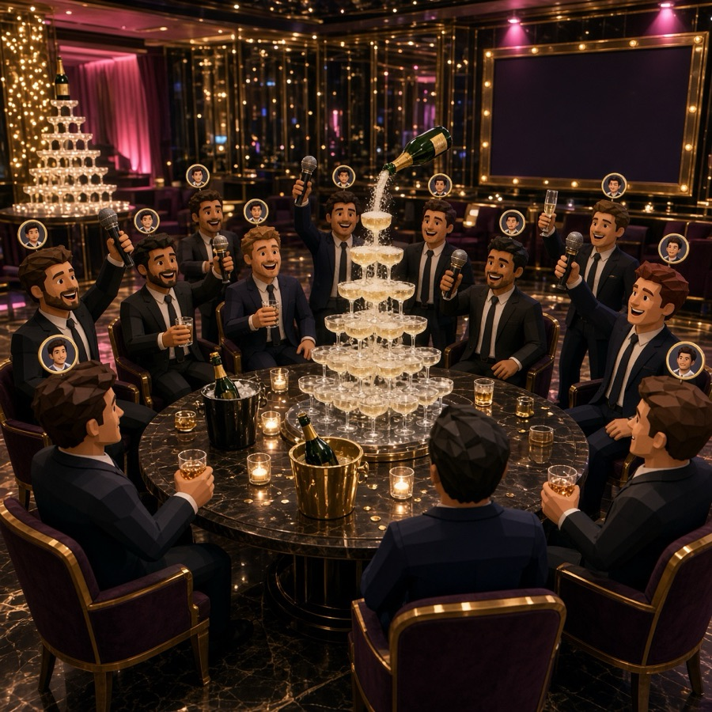
GROK AI
32
Host Club: Champagne Call
Aynalı salonda yapay hostlar masaya toplanır, adına tezahürat yapar; şampanya kulesi dolarken salon ayağa kalkar
Paylaşım cümlesi · kurgusal örnek
“TikTok live has a host club and twenty hosts just did a champagne call with my name. (TikTok canlıda bir host kulübü var ve yirmi host adımla şampanya çağrısı yaptı.)”
JaponyaÜlkeye özelTelif: Ortaçatışmayakın plantabelaArketip B
Eve götürülen şeyÇağrı anının karesi ve panoda adın. Gerçek para ya da harcama yok
Paylaşılan kareMasanın çevresinde mikrofonla tezahürat yapan takım elbiseli hostlar ve ortada şampanya kulesi
İzleyici
"kanpai" yazıp salonda oturur; host seçer; çağrıda alkışlar, tezahüre eşlik eder. Ücretsiz giriş: "kanpai" yazmak. Beğeni kadeh kaldırmaktır.
Yetişkin ögeleri: şampanya ve kadeh, şampanya kulesi, host ve müşteri ilişkisi, sıralama panosu. TikTok: kurgu ve sanat izinli; yetişkinin alkol alması bazı bölgelerde keşfet dışı ve 18+; konsomatris ve host için ayrı hüküm bulunamadı, cinsel çağrışım eklenirse yaş kısıtı ve gelir riski (47_kural_tiktok.md). Diğer platformlar (48_kural_diger.md): Kick'te alkol ve sigara için açık hüküm yok, 18+ etiketi ve yerel yasa uyumu istenir; Twitch'te etiket ve reklam geliri etkisi; YouTube'da alkol sınırlı serbest, yaş kısıtı Super Chat'i kapatır.. Fikre özgü: Japonya'da 2025 değişikliğiyle aşk çağrışımlı satış, sahte sıralama, "No.1" unvanı ve borçlanma yönlendirmesi yasak; bu yüzden hostlar flört etmez, panoda gerçek para yok, "borç" ya da "kredi" diliyle satış yok; hediye ve harcama baskısı dili kullanılmaz
Telif
Orta: tanınabilir host kulübü düzeni; gerçek kulüp, host ve şampanya markası yok; hostlar özgün çizim
Yenilik denetimi. En yakın eski fikir: Tea Round (07_ESKI_FIKIRLER, UK-01): sırayla çay ısmarlama; burada şampanya çağrısı, host takımı ve kule var, sıra yok
Fiyat tabelası
Gülkadeh kaldırır (salonda "kanpai" dalgası)
Kalpbir host seçer (masasına gelir, adını söyler)
Çayşampanya açtırır (bütün hostlar masasına toplanır, mikrofonla adına tezahürat yapar)
Donutşampanya kulesi (kule dolarken salon ayağa kalkar
Rolpanoda gecenin birincisi olur)
Adım adım yapım (12 adım)
Arketip B (kesit görünüm, oturan kalabalık). web5/hostclub/index.html: aynalı, ışıklı salon, müşteri masaları, takım elbiseli yapay hostlar, duvarda boş sıralama panosu.
Hostlar özgün çizimdir; flört, dokunma ve cinsel ima yok. Hostlar yalnız tezahürat, şarkı ve kadeh kaldırma yapar.
Tabela: sağ üstte dört satırlık menü tabelası: "Gül · kadeh", "Kalp · host seç", "Çay · şampanya çağrısı", "Donut · kule". Tek ekran görüntüsünde okunur; fiyat ve para yazılmaz.
Rol eşlemesi: Gül gelince salonda "kanpai" dalgası, Kalp gelince host masaya gelip adını söyler, Çay gelince bütün hostlar masaya toplanır ve mikrofonla adına tezahürat yapar, Donut gelince şampanya kulesi dolar, salon ayağa kalkar, panoda adı birinci olur.
Sayaç: bu gece açılan şişe ve kulenin katı; pano yalnız oyun içi çağrı puanıdır.
Borçlanma, kredi, "hesabı sonra öder" dili hiçbir yerde kullanılmaz; pano "sıralama" yerine "gecenin çağrıları" diye adlandırılır.
Süzgeç: serbest metin yalnız "kanpai" ve host seçimi komutudur. Tezahürat adı olarak izleyicinin verdiği ad 16 harfle sınırlanır, hakaret, gerçek kişi ve host ya da idol adı süzülür, onay kuyruğundan geçer.
Yaş ve görünürlük: yayını 18+ izleyiciye ayarla; açıklamada kurgu olduğunu ve gerçek harcama olmadığını yaz. Keşfet dışı kalırsa trafik Japon pop kültürü ve anime toplulukları, takipçi bildirimi ve kare paylaşımından gelir.
Kare: Çay ya da Donut anında kamera masaya iner, çevrede tezahürat yapan hostları ve kuleyi 4 sn sabit tutar; izleyicinin adı masa kartında sağ altta, panoda üstte görünür.
Eve götürülen şey: çağrı anının karesi ve panoda adın. Test: ?demo=1, 200 sahte masa, ilk yayın cumartesi 21:00, 75 dk.
Ölçülecek üç sayı: "kanpai" oranı, çağrı sayısı, kare paylaşımı.
İlk 10 dakika
0–1 dk: "Aynalı salon açık, 'kanpai' yaz"
1–3 dk: ilk kadehler, host seçimi
3–5 dk: ilk şampanya çağrısı, hostlar masaya toplanır
5–7 dk: pano değişir, ikinci çağrı
7–9 dk: kule dolmaya başlar, salon ayağa kalkar
9–10 dk: kule ve tezahürat karesi, kart hatırlatılır
Doğrulama: Champagne call, şampanya kulesi ve sıralama kavramı doğrulandı. Panoların bugün hâlâ asılı olup olmadığı DOĞRULANMADI (kaynaklar çelişiyor; yasa sahte sıralamayı yasaklıyor). "Urikake" terimi arama sonuçlarında geçmedi; borçlanmaya yönlendirme yasağı doğrulandı. Yasa Mayıs 2025'te geçti, yürürlük Haziran 2025 (tam gün DOĞRULANMADI)
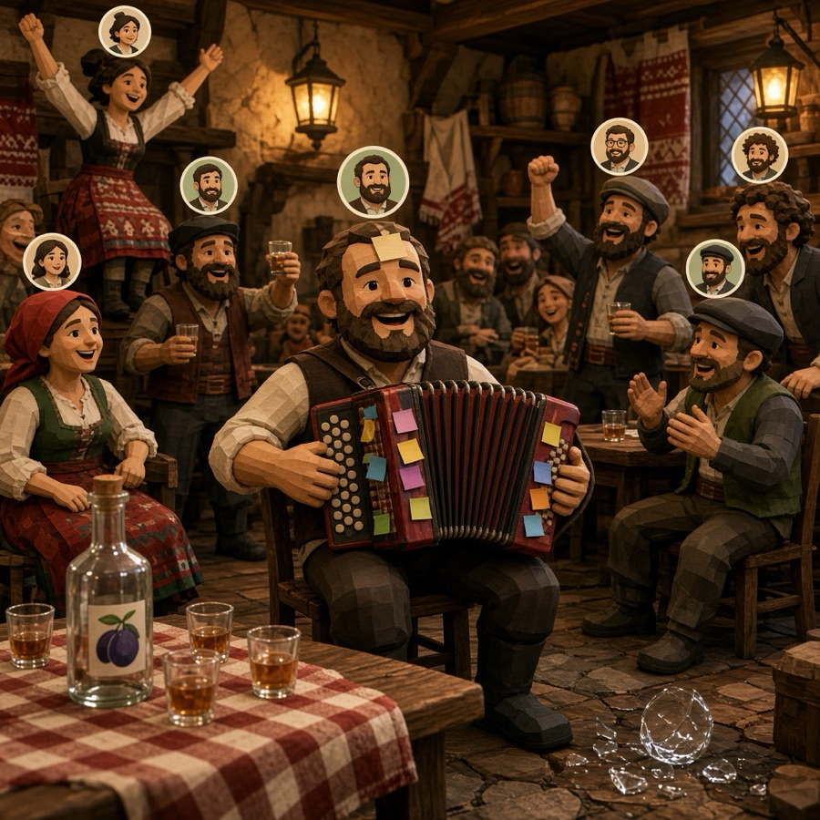
GROK AI
33
Kafana: Banknote on the Accordion
Ahşap masalar, kareli örtüler; müzisyenler masaya gelir, akordeona ve alına banknot yapışır, bardaklar kırılır
Paylaşım cümlesi · kurgusal örnek
“Auf TikTok gibt's eine Kafana. Ich hab dem Akkordeonspieler einen Schein an die Stirn geklebt. (TikTok'ta bir kafana var. Akordeoncunun alnına bir banknot yapıştırdım.)”
Sırbistan, Bosna-HersekÜlkeye özelTelif: OrtaçatışmatabelaölçekArketip B
Eve götürülen şeyBanknotlarla kaplı akordeonun karesi; her banknotta ad (oyun içi, değersiz kâğıt)
Paylaşılan kareBanknotlarla kaplı akordeon ve alnında banknot olan müzisyen, arkada kadehli masalar
İzleyici
"živeli" yazıp kadeh kaldırır; şarkı türü seçer; sandalyeye çıkma anına katılır. Ücretsiz giriş: "živeli" yazmak. Beğeni kadehtir.
Yayıncı
Müzisyenleri masadan masaya yollar, akordeondaki banknotu sayar, her masa için şarkı sırasını duyurur
Neden tutar
Diaspora izleyici memleket gecesini tanır; "alnıma banknot yapıştırdım" tek cümlede yazılır, komik ve görsel. Kalabalık sandalyede coşar
Yetişkin ögeleri: rakija şişe ve kadehleri, bardak kırma, müzisyene banknot yapıştırma. TikTok: kurgu ve sanat izinli; yetişkinin alkol alması bazı bölgelerde keşfet dışı ve 18+ (47_kural_tiktok.md). Diğer platformlar (48_kural_diger.md): Kick'te alkol ve sigara için açık hüküm yok, 18+ etiketi ve yerel yasa uyumu istenir; Twitch'te etiket ve reklam geliri etkisi; YouTube'da alkol sınırlı serbest, yaş kısıtı Super Chat'i kapatır.; para saçmaya özgü hüküm yok, ama hediye baskısı gelir riski taşır. Fikre özgü: banknot gerçek para birimi ve görseli olmayan renkli kâğıt olarak çizilir; gerçek erişim yok; etnik ya da savaş çağrışımlı şarkı ve simge yasak, şarkı türü hazır listeden seçilir
Telif
Orta: tanınabilir kafana düzeni; gerçek müzisyen, mekân, marka ve gerçek banknot tasarımı yok; müzik telifsiz
Yenilik denetimi. En yakın eski fikir: Roda de Samba: Passa o Chapéu (07_ESKI_FIKIRLER, BR3-06): müzisyene şapkayla bahşiş; burada kafana masaları, akordeon, banknot yapıştırma, bardak kırma ve rakija var. Stammtisch & Runde (07_ESKI_FIKIRLER, DE-05): masa ve tur; burada müzisyen ve sahne var
Donut"masa için şarkı" (bütün kafana seçtiği şarkı türünü söyler, avatarı sandalyeye çıkar)
Adım adım yapım (12 adım)
Arketip B (kesit görünüm, oturan kalabalık). web5/kafana/index.html: ahşap masalar, kareli örtüler, ortada akordeon ve keman çalan müzisyen avatarları.
Banknotlar renkli kâğıt çizimidir; gerçek para birimi, rakam ve tasarım yok. Üstünde yalnız izleyicinin adı yazar.
Giriş: "živeli" yazan kadeh kaldırır, beğeni masa alkışıdır.
Tabela: sağ üstte dört satırlık masa tabelası: "Gül · rakija turu", "Kalp · bardak", "Çay · banknot", "Donut · masa için şarkı". Tek ekran görüntüsünde okunur.
Rol eşlemesi: Gül gelince masaya rakija kadehleri gelir, Kalp gelince çizim bardak kırılır, Çay gelince müzisyen masaya gelir ve akordeona adlı banknot yapışır, Donut gelince şarkı türü seçilir ve avatar sandalyeye çıkar.
Sayaç: akordeondaki banknot ve kırılan bardak; akordeon dolunca müzisyen sahneye çıkar.
Şarkı türü hazır listeden seçilir (halk, düğün, hareketli); etnik gerilim çağrıştıran şarkı ve simge listede yoktur.
Süzgeç: banknotun adı 16 harfle sınırlanır; hakaret, gerçek kişi, siyaset, milliyet çatışması ve para birimi süzülür; onay kuyruğundan geçer.
Yaş ve görünürlük: yayını 18+ izleyiciye ayarla; açıklamada çizgi ve kurgu, gerçek para ve içki satışı yok yaz. Keşfet dışı kalırsa trafik diaspora toplulukları (Almanca, Sırpça, Boşnakça) ve takipçi bildirimi ile paylaşılan karelerden gelir.
Kare: Çay anında kamera akordeona ve müzisyenin alnındaki banknota iner, 4 sn sabit durur; izleyicinin adı banknotun üstünde, sağ altta sayaç.
Eve götürülen şey: banknotlu akordeon karesi. Test: ?demo=1, 150 sahte masa, ilk yayın cuma 21:30, 90 dk.
Ölçülecek üç sayı: "živeli" oranı, banknot sayısı, kare paylaşımı.
İlk 10 dakika
0–1 dk: "Kafana açık, 'živeli' yaz ve kadeh kaldır"
1–3 dk: rakija turu, müzisyenler masalara geliyor
3–5 dk: ilk banknot akordeona yapışıyor
5–7 dk: bardaklar kırılıyor, sayaç 100
7–9 dk: akordeon dolmaya başlıyor, "masa için şarkı"
9–10 dk: alnında banknot olan müzisyen karesi, kart hatırlatılır
Doğrulama: Kafana tanımı, canlı müzik ve bahşişle şarkı isteme doğrulandı. Banknot yapıştırma yalnız bir gezi yazısında geçer, kaynağın dili sorunlu; genel gelenek olarak DOĞRULANMADI. Bardak kırma ve rakija kafana kaynaklarında doğrudan geçmedi, DOĞRULANMADI. UNESCO adaylığı kısa liste bilgisi tek kaynak
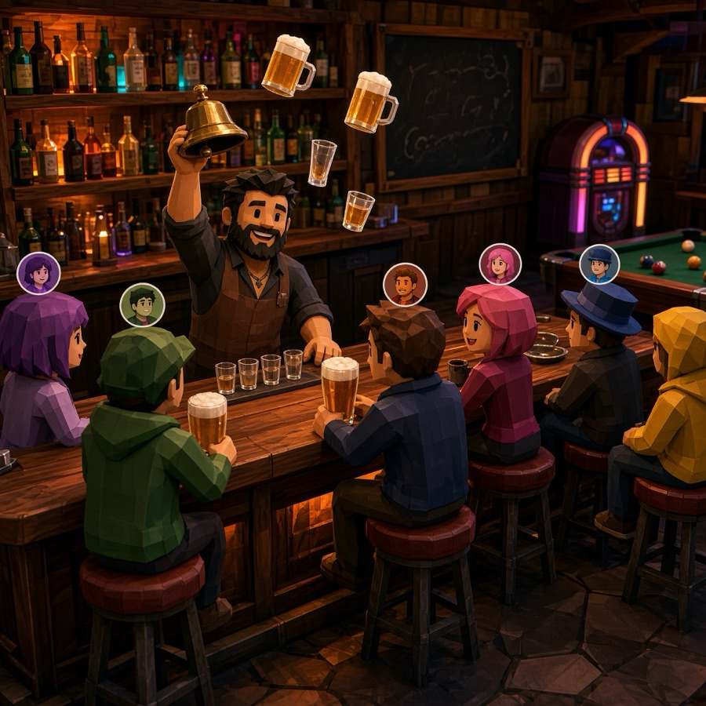
GROK AI
34
Dive Bar: Round for the House
Uzun tezgâh, müzik kutusu, bilardo; biri herkese bir tur ısmarlayınca zil çalar ve bütün bar adını bağırır
Paylaşım cümlesi · kurgusal örnek
“Somebody just bought 2,000 strangers a round on TikTok live. The bell hasn't stopped. (Biri TikTok canlıda 2.000 yabancıya bir tur ısmarladı. Zil hâlâ susmadı.)”
ABD, İngiltere, İrlandaÜlkeye özelTelif: OrtaçatışmaölçektabelaArketip B
Eve götürülen şeyKara tahtada adın ("round for the house by ‹ad›"); karede zil anı
Paylaşılan kareZili çalan barmen ve havaya kalkmış bardaklar; arkada müzik kutusu ve bilardo
İzleyici
"cheers" yazıp tabureye oturur; müzik kutusunda sıradaki türü seçer; son çağrıda sipariş verir. Ücretsiz giriş: "cheers" yazmak. Beğeni bardağı kaldırmaktır.
Yayıncı
Barmen olarak tur siparişlerini duyurur, zili çalar, "last call" anonsu yapar, kara tahtaya adı yazar
Neden tutar
"Herkese ısmarladım" evrensel bir jest. Tek cümle, tek zil sesi, sosyal baskısız cömertlik görüntüsü
Yetişkin ögeleri: bira, shot, bar tezgâhı, zil ve son çağrı. TikTok: kurgu ve sanat izinli; yetişkinin alkol alması bazı bölgelerde keşfet dışı ve 18+; aşırı içme "pervasız davranış" sayılıp gelir riski taşıyabilir (47_kural_tiktok.md). Diğer platformlar (48_kural_diger.md): Kick'te alkol ve sigara için açık hüküm yok, 18+ etiketi ve yerel yasa uyumu istenir; Twitch'te etiket ve reklam geliri etkisi; YouTube'da alkol sınırlı serbest, yaş kısıtı Super Chat'i kapatır.. Fikre özgü: içme yarışı ve "hepsini bitir" görevi yok; araç kullanma şakası yok; ABD ve Birleşik Krallık'ta gerçek içki ısmarlama değil, yalnız oyun içi hediye; zil sarhoşluğu övmez
Telif
Orta: tanınabilir bar sahnesi; gerçek bar, marka ve şarkı yok; müzik kutusunda telifsiz müzik
Yenilik denetimi. En yakın eski fikir: Tea Round (07_ESKI_FIKIRLER, UK-01): sırayla çay ısmarlama; burada bar, bira ve zil var, ısmarlama herkese tek hamlede. Stammtisch & Runde (07_ESKI_FIKIRLER, DE-05): masada tur; burada tezgâh ve son çağrı sayacı var
Fiyat tabelası
Gülbir bira (adına bardak kalkar)
Kalpmüzik kutusunda sıradaki şarkı türünü seçer
Çaymasasına shot turu
Donutherkese bir tur (zil çalar, herkesin önüne bardak düşer, bar adını bağırır)
Adım adım yapım (12 adım)
Arketip B (kesit görünüm, oturan kalabalık). web5/divebar/index.html: uzun ahşap tezgâh, tabureler, müzik kutusu, bilardo masası, arkada kara tahta.
Müzik kutusu: Kalp atan sıradaki şarkı türünü seçer (rock, country, pop); şarkı adı ve gerçek müzik yok.
Tabela: tezgâhın üstünde dört satırlık kara tahta tabelası (çizim, harf yok değil, oyun metni): "Gül · bira", "Kalp · müzik kutusu", "Çay · shot", "Donut · herkese tur". Tek ekran görüntüsünde okunur.
Rol eşlemesi: Gül gelince bardak kalkar, Kalp gelince müzik türü değişir, Çay gelince masaya shot turu gelir, Donut gelince zil çalar, herkesin önüne bardak düşer, bar adını bağırır.
Sayaç: bu gece ısmarlanan tur; son çağrıya kalan süre. Süre dolunca "last call" zili çalar ve yayın biter.
İçme yarışı, "hepsini bitir" görevi ve araç kullanma şakası yok. Sarhoşluk övülmez.
Süzgeç: serbest metin yalnız kara tahtaya yazılacak ad için; 16 harf, hakaret ve gerçek kişi süzgeci, onay kuyruğu.
Yaş ve görünürlük: yayını 18+ izleyiciye ayarla; açıklamada kurgu olduğunu ve gerçek içki ısmarlama olmadığını yaz. Keşfet dışı kalırsa trafik bar ve müzik toplulukları, takipçi bildirimi ve "tur" paylaşımlarından gelir.
Kare: Donut anında kamera barmene ve zile iner, havaya kalkmış bardakları 4 sn sabit tutar; izleyicinin adı kara tahtada, sağ altta.
Eve götürülen şey: kara tahtada adın ve zil karesi. Test: ?demo=1, 200 sahte taburede, ilk yayın cuma 23:00, 75 dk.
Ölçülecek üç sayı: "cheers" oranı, tur sayısı, kare paylaşımı.
İlk 10 dakika
0–1 dk: "Bar açık, 'cheers' yaz ve tabureye otur"
1–3 dk: ilk biralar, müzik kutusu çalıyor
3–5 dk: shot turu, bilardo sesi
5–7 dk: ilk "herkese tur", zil çalıyor
7–9 dk: ikinci tur, sayaç 1.000
9–10 dk: son çağrıya kalan süre, zil karesi, kart hatırlatılır
Doğrulama: "Round" geleneği ve son çağrı doğrulandı. Zilin "herkese ısmarlandı" anlamı anekdot ve yere bağlı, DOĞRULANMADI olarak geneli için bırakıldı. Müzik kutusu ve bilardo tohumdan, ayrıca doğrulanmadı
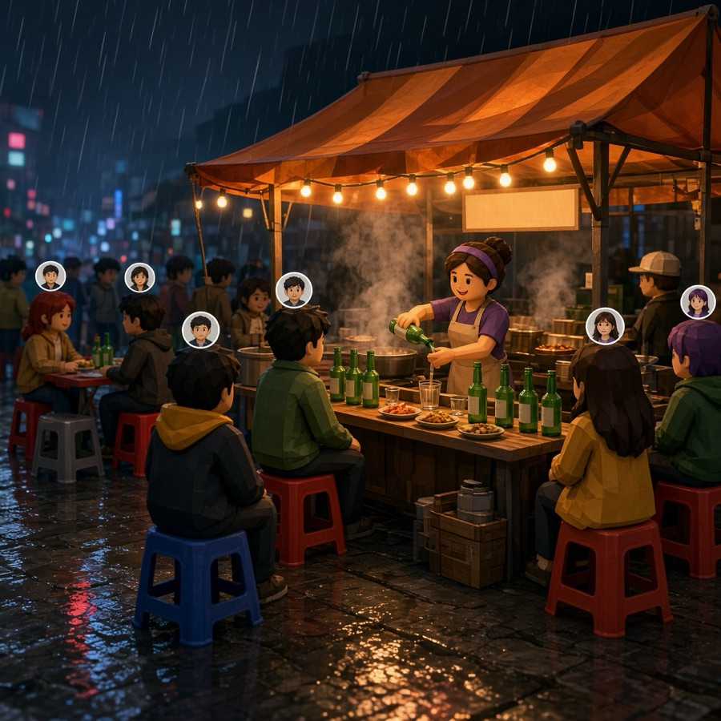
GROK AI
35
Pojangmacha: Soju Tent
Yağmurlu gecede turuncu çadır, yeşil şişeler; izleyici derdini tek cümleyle anlatır, çadırın sahibi teyze seçer
Paylaşım cümlesi · kurgusal örnek
“There's a K-drama soju tent on TikTok live and 900 people are telling the ahjumma their problems. (TikTok canlıda bir K-drama soju çadırı var ve 900 kişi derdini teyzeye anlatıyor.)”
Kore dizisi izleyicisiÜlkeye özelTelif: Ortakendi cümlençatışmaölçekArketip C
Eve götürülen şeyDert cümlen ve boş şişelerle karen
Paylaşılan kareYağmurda parlayan turuncu çadır, masada yeşil şişeler
İzleyici
"one shot" yazıp tabureye oturur; derdini tek cümle yazar, branda üstüne yansır. Ücretsiz giriş: "one shot" ve tek cümle dert. Beğeni yağmur damlasıdır.
Yayıncı
Teyze olarak dertleri okur, kadeh doldurur, "ye, iç, eve git" der; yağmur ve buhar sesini ayarlar
Neden tutar
Dizilerde herkesin bildiği an: yağmur, çadır, yeşil şişe, derdini anlatma. Tek cümle yeter, teyze kimseyi yargılamaz
Ortak sayaç
Masadaki boş şişe dizisi; yağmurun şiddeti (hedef: sabah çadır kapanır)
Yetişkin ögeleri: soju şişeleri ve kadehleri, somaek (soju ve bira), içki masası. TikTok: kurgu ve sanat izinli; yetişkinin alkol alması bazı bölgelerde keşfet dışı ve 18+ (47_kural_tiktok.md). Diğer platformlar (48_kural_diger.md): Kick'te alkol ve sigara için açık hüküm yok, 18+ etiketi ve yerel yasa uyumu istenir; Twitch'te etiket ve reklam geliri etkisi; YouTube'da alkol sınırlı serbest, yaş kısıtı Super Chat'i kapatır.. Fikre özgü: "dert" metni ekrana çıkıyor; kendine zarar ya da ağır dert yazılırsa süzgeç destek mesajı gösterir ve cümleyi ekrana çıkarmaz; içerek dert çözme övgüsü yok; araç kullanma şakası yok; Güney Kore'de içki ısmarlama ya da satış yok
Telif
Orta: dizi görüntüsü kopyalanmaz; çadır ve yeşil şişe genel arketiptir, şişe etiketsiz, dizi adı yok
Yenilik denetimi. En yakın eski fikir: Angkringan: Kopi Joss (13b_TOHUMLAR_DEGISIM, U16): gece tezgâhı, içine kor atılan kahve; burada yağmurlu çadır, soju ve dert anlatma var. Hemşehri Kahvehanesi: Çaylar Benden (07_ESKI_FIKIRLER, H3): masalar il il; burada tek çadır
Fiyat tabelası
Gülkadeh doldurur (iki elle, yakın plan)
Kalpatıştırmalık tabağı
Çaybira ve sojuyu karıştırır (kaşıkla vurur, köpük)
Donutçadırın sahibi teyze (gecenin derdini seçer, bedava tabak gönderir, "artık eve git" der)
Adım adım yapım (12 adım)
Arketip C (2D çizgi avatar ve sohbet komut sayaçları). web5/pocha/index.html: yağmurlu gece, turuncu branda çadır, plastik tabureler, buharlı tezgâh.
Giriş: "one shot" yazan tabureye oturur ve tek cümle dert yazar; cümle brandaya yansır.
Şişeler yeşil, etiketsizdir; tabak ve bardaklar çizimdir.
Tabela: çadır girişinde dört satırlık boş tahta tabela: "Gül · bir kadeh", "Kalp · atıştırmalık", "Çay · somaek", "Donut · teyze". Tek ekran görüntüsünde okunur.
Rol eşlemesi: Gül gelince iki elle kadeh dolar, Kalp gelince atıştırmalık tabağı gelir, Çay gelince soju bira bardağına dökülür, kaşıkla vurulur, köpük taşar, Donut gelince teyze gecenin derdini seçer ve bedava tabak gönderir.
Sayaç: masadaki boş şişe dizisi ve yağmur; şişe sayısı 30'u geçince teyze "artık eve gidin" der.
Teyze her derde hazır şablondan karşılık verir ("herkesin derdi var, ye").
Süzgeç: dert metni 60 harfle sınırlanır; kendine zarar, intihar, hakaret, gerçek kişi ve telefon süzülür; kendine zarar yazan metin ekrana çıkmaz, yayıncıya uyarı gider ve ekranda destek mesajı çıkar. Her metin onay kuyruğundan geçer.
Yaş ve görünürlük: yayını 18+ izleyiciye ayarla; açıklamada çizgi ve kurgu, gerçek içki yok yaz. Keşfet dışı kalırsa trafik K-drama ve Kore kültürü toplulukları, takipçi bildirimi ve kare paylaşımından gelir.
Kare: kamera çadırın dışına çıkar, yağmurda parlayan çadırı ve masadaki yeşil şişeleri 4 sn sabit tutar; izleyicinin dert cümlesi brandada, adı sağ altta.
Eve götürülen şey: dert cümlen ve boş şişelerle kare. Test: ?demo=1, 200 sahte dert, ilk yayın salı 23:00, 75 dk.
Ölçülecek üç sayı: "one shot" oranı, yazılan dert sayısı, kare paylaşımı.
İlk 10 dakika
0–1 dk: "Yağmur başladı, çadır açık, 'one shot' yaz ve derdini bir cümleyle anlat"
Doğrulama: Pojangmacha tanımı, soju ve bira servisi, dizilerde görünmesi doğrulandı. Turuncu renk kaynakta yok (başka kaynak turuncu ve kırmızı diyor), DOĞRULANMADI. İki elle dökme büyüğe karşıdır, tohumdaki "iki elle" böyle düzeltildi. Somaek oranı 3'e 7 yaygın ölçüt, kesin kural değil
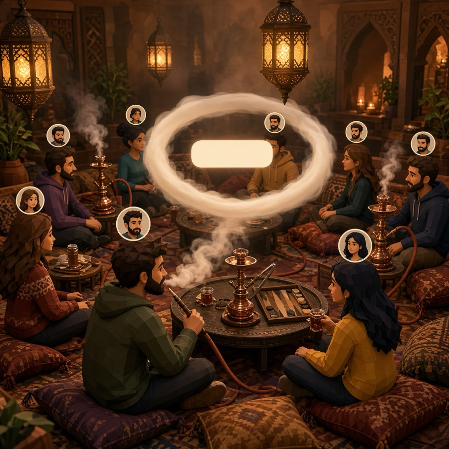
GROK AI
36
Nargile Kafe: Duman Halkası
Bakır nargileler, minderler ve tavla sesi; duman halkasının içinden adlar geçer
Paylaşım cümlesi · kurgusal örnek
“TikTok'ta nargile kafe açmışlar, duman halkasının içinden adım geçti.”
Türkiye, Arap dünyası, AlmanyaKüreselTelif: Düşükyakın plançatışmaölçekArketip C
Eve götürülen şeyDuman halkası içinde adın
Paylaşılan kareHavada asılı duman halkası ve içinde boş ad etiketi; minderde oturan avatarlar
İzleyici
"köz" yazıp minderde yer alır; aroma seçer; halkaya adını yazdırır. Ücretsiz giriş: "köz" yazmak. Beğeni nefestir.
Yayıncı
Çaycı ve közcü olarak köz tazeler, aromayı seçtirir, halkayı büyütür, tavla zarını atar
Neden tutar
Dil gerektirmez: halka, köz ve ad bir bakışta anlaşılır. Duman halkası sosyal medyada hazır bir tek kare; nargile kafe Türkiye, Arap dünyası ve Almanya'da gündelik bir yer
Yetişkin ögeleri: nargile (tütün), duman, köz, aroma. Alkol yok. TikTok: yetişkinin tütün kullanımı keşfet dışı ve 18+; nargile tanımda adıyla geçmiyor, kapsama girip girmediği DOĞRULANMADI; gerçek tütün satışı ve erişim yasak (47_kural_tiktok.md). Diğer platformlar (48_kural_diger.md): Kick'te alkol ve sigara için açık hüküm yok, 18+ etiketi ve yerel yasa uyumu istenir; Twitch'te etiket ve reklam geliri etkisi; YouTube'da alkol sınırlı serbest, yaş kısıtı Super Chat'i kapatır.. Fikre özgü: Körfez ülkelerinde tütün gösterimi ve platform uyarısı farklı olabilir (DOĞRULANMADI); Almanya'da shisha barlar eyalet kuralına bağlıdır; reşit olmayan avatar yok; marka ve aroma markası yok
Telif
Düşük: kamu malı nargile ve kafe arketipi; gerçek mekân, marka ve tütün etiketi yok
Yenilik denetimi. En yakın eski fikir: Baloot Meclisi (07_ESKI_FIKIRLER, SA-06): Körfez meclisi, oyun masası ve oturma; burada nargile kafe, duman halkası ve közcü var. Hemşehri Kahvehanesi: Çaylar Benden (07_ESKI_FIKIRLER, H3): kahvehane ve çay; burada nargile ve duman var
Fiyat tabelası
Gülmarpuç onda (bir nefes, duman bulutu)
Kalpduman halkası (halkanın içinden adı geçer, yakın plan)
Çayaroma seçer (çift elma, nane, üzüm: salonun duman rengi değişir)
Donutközcü (bütün nargilelerin közünü tazeler
Rolduman perdesi ekranı kaplar, içinden adlar belirir)
Adım adım yapım (12 adım)
Arketip C (2D çizgi avatar ve sohbet komut sayaçları). web5/nargile/index.html: minderler, bakır nargileler, köz maşası, çay bardakları, tavla.
Giriş: "köz" yazan minderde yer alır; beğeni nefestir.
Duman halkası çizim animasyonudur; gerçek tütün, aroma markası ve etiket yok. Hiçbir avatar çocuk görünümünde değildir.
Tabela: kafenin duvarında dört satırlık tahta tabela: "Gül · bir nefes", "Kalp · duman halkası", "Çay · aroma", "Donut · közcü". Tek ekran görüntüsünde okunur.
Rol eşlemesi: Gül gelince duman bulutu çıkar, Kalp gelince halka oluşur ve adın içinden geçer (yakın plan), Çay gelince aroma seçilir ve salonun duman rengi değişir, Donut gelince bütün közler tazelenir, duman perdesi ekranı kaplar, içinden adlar belirir.
Sayaç: salonun duman yoğunluğu ve yanan köz sayısı; yoğunluk eşiğine ulaşınca ekran ağır çekimde duman perdesi alır.
Marka, aroma markası ve "tütün satın al" yönlendirmesi yok; "nargile için" bağlantı ya da kod yok.
Süzgeç: halkanın içindeki ad 16 harfle sınırlanır; hakaret, gerçek kişi, marka ve telefon süzülür; onay kuyruğu.
Yaş ve görünürlük: yayını 18+ izleyiciye ayarla, açıklamada çizgi ve kurgu, gerçek tütün tanıtımı yok yaz. Keşfet dışı kalırsa trafik kafe ve tavla toplulukları, takipçi bildirimi ve halka karesi paylaşımından gelir; Körfez izleyicisi için bölge denetimi yapılır.
Kare: Kalp ya da Donut anında kamera halkaya yaklaşır, içinde adın belirdiği anı 4 sn sabit tutar; izleyicinin adı halkanın içinde.
Eve götürülen şey: duman halkası içinde adın. Test: ?demo=1, 200 sahte minder, ilk yayın perşembe 22:00, 75 dk.
Ölçülecek üç sayı: "köz" yazan oranı, halka sayısı, kare paylaşımı.
İlk 10 dakika
0–1 dk: "Minderler hazır, 'köz' yaz ve yerini al"
1–3 dk: ilk nefesler, duman bulutları
3–5 dk: ilk halka, adlar halkadan geçiyor
5–7 dk: aroma değişiyor, duman rengi değişiyor
7–9 dk: közler tazeleniyor, duman perdesi
9–10 dk: halka karesi, kart hatırlatılır
Doğrulama: Nargilenin kökeni, Arap dünyası kafeleri, "Shisha" adı ve Almanya'daki eyalet düzeni doğrulandı. 5.000 bar sayısı tarihsiz, yaklaşık. Körfez'deki yerel nargile kuralları DOĞRULANMADI. Avusturya ve İsviçre kuralları ayrıca araştırılmadı
Pavyon, dünya: tüm fikirlerin tablosu
Kod
Konsept
Rol merdiveni
Paylaşım cümlesi
Kural riski
V07
Bouzoukia: Flower War: Yunan buzuki gecesi; sahne önünden tepsilerle gelen karanfil şarkıcının üstüne yağar, tabaklar kırılır, zeybekiko sırasında salon diz çöker
Gül → bir tepsi karanfil (şarkıcının üstüne yağar, hediyenin simgesi eylemin kendisi); Kalp → tabak kırar ("opa!", alçı tabak sesi); Çay → masasına şişe gelir, yanında karanfil kulesi; Donut → zeybekiko (pist boşalır, avatarı tek başına döner, salon diz çöküp alkış tutar)
There's a Greek bouzoukia on TikTok live and I just buried the singer in carnations. (TikTok canlıda bir Yunan buzuki gecesi var ve şarkıcıyı karanfile gömdüm.) (kurgusal örnek)
Yetişkin ögeleri: şişe ve içki masası, tabak kırma, çiçek atma, sahne şarkıcısı. TikTok: kurgu ve sanat izinli; yetişkinin alkol alması bazı bölgelerde keşfet dışı ve 18+; kurguya açık muafiyet cümlesi yok (47_kural_tiktok.md). Diğer platformlar (48_kural_diger.md): Kick'te alkol ve sigara için açık hüküm yok, 18+ etiketi ve yerel yasa uyumu istenir; Twitch'te etiket ve reklam geliri etkisi; YouTube'da alkol sınırlı serbest, yaş kısıtı Super Chat'i kapatır.. Fikre özgü: çiçek atmayı hediyeyle bağlarken "hediye atmazsan olmaz" baskısı gelir riski; kons ve cinsel çağrışım yok; Yunanistan'da gerçek tabak kırma yasak olduğundan alçı ya da çizim tabak gösterilir
V08
Host Club: Champagne Call: aynalı salonda yapay hostlar masaya toplanır, adına tezahürat yapar; şampanya kulesi dolarken salon ayağa kalkar
Gül → kadeh kaldırır (salonda "kanpai" dalgası); Kalp → bir host seçer (masasına gelir, adını söyler); Çay → şampanya açtırır (bütün hostlar masasına toplanır, mikrofonla adına tezahürat yapar); Donut → şampanya kulesi (kule dolarken salon ayağa kalkar; panoda gecenin birincisi olur)
TikTok live has a host club and twenty hosts just did a champagne call with my name. (TikTok canlıda bir host kulübü var ve yirmi host adımla şampanya çağrısı yaptı.) (kurgusal örnek)
Yetişkin ögeleri: şampanya ve kadeh, şampanya kulesi, host ve müşteri ilişkisi, sıralama panosu. TikTok: kurgu ve sanat izinli; yetişkinin alkol alması bazı bölgelerde keşfet dışı ve 18+; konsomatris ve host için ayrı hüküm bulunamadı, cinsel çağrışım eklenirse yaş kısıtı ve gelir riski (47_kural_tiktok.md). Diğer platformlar (48_kural_diger.md): Kick'te alkol ve sigara için açık hüküm yok, 18+ etiketi ve yerel yasa uyumu istenir; Twitch'te etiket ve reklam geliri etkisi; YouTube'da alkol sınırlı serbest, yaş kısıtı Super Chat'i kapatır.. Fikre özgü: Japonya'da 2025 değişikliğiyle aşk çağrışımlı satış, sahte sıralama, "No.1" unvanı ve borçlanma yönlendirmesi yasak; bu yüzden hostlar flört etmez, panoda gerçek para yok, "borç" ya da "kredi" diliyle satış yok; hediye ve harcama baskısı dili kullanılmaz
V09
Kafana: Banknote on the Accordion: ahşap masalar, kareli örtüler; müzisyenler masaya gelir, akordeona ve alına banknot yapışır, bardaklar kırılır
Gül → rakija turu (masaya kadehler gelir); Kalp → bardak kırar (şıngırtı sesi, çizim kırık cam); Çay → müzisyenler masasına gelir, akordeona banknot yapıştırır (banknotta adı); Donut → "masa için şarkı" (bütün kafana seçtiği şarkı türünü söyler, avatarı sandalyeye çıkar)
Auf TikTok gibt's eine Kafana. Ich hab dem Akkordeonspieler einen Schein an die Stirn geklebt. (TikTok'ta bir kafana var. Akordeoncunun alnına bir banknot yapıştırdım.) (kurgusal örnek)
Yetişkin ögeleri: rakija şişe ve kadehleri, bardak kırma, müzisyene banknot yapıştırma. TikTok: kurgu ve sanat izinli; yetişkinin alkol alması bazı bölgelerde keşfet dışı ve 18+ (47_kural_tiktok.md). Diğer platformlar (48_kural_diger.md): Kick'te alkol ve sigara için açık hüküm yok, 18+ etiketi ve yerel yasa uyumu istenir; Twitch'te etiket ve reklam geliri etkisi; YouTube'da alkol sınırlı serbest, yaş kısıtı Super Chat'i kapatır.; para saçmaya özgü hüküm yok, ama hediye baskısı gelir riski taşır. Fikre özgü: banknot gerçek para birimi ve görseli olmayan renkli kâğıt olarak çizilir; gerçek erişim yok; etnik ya da savaş çağrışımlı şarkı ve simge yasak, şarkı türü hazır listeden seçilir
V10
Dive Bar: Round for the House: uzun tezgâh, müzik kutusu, bilardo; biri herkese bir tur ısmarlayınca zil çalar ve bütün bar adını bağırır
Gül → bir bira (adına bardak kalkar); Kalp → müzik kutusunda sıradaki şarkı türünü seçer; Çay → masasına shot turu; Donut → herkese bir tur (zil çalar, herkesin önüne bardak düşer, bar adını bağırır)
Somebody just bought 2,000 strangers a round on TikTok live. The bell hasn't stopped. (Biri TikTok canlıda 2.000 yabancıya bir tur ısmarladı. Zil hâlâ susmadı.) (kurgusal örnek)
Yetişkin ögeleri: bira, shot, bar tezgâhı, zil ve son çağrı. TikTok: kurgu ve sanat izinli; yetişkinin alkol alması bazı bölgelerde keşfet dışı ve 18+; aşırı içme "pervasız davranış" sayılıp gelir riski taşıyabilir (47_kural_tiktok.md). Diğer platformlar (48_kural_diger.md): Kick'te alkol ve sigara için açık hüküm yok, 18+ etiketi ve yerel yasa uyumu istenir; Twitch'te etiket ve reklam geliri etkisi; YouTube'da alkol sınırlı serbest, yaş kısıtı Super Chat'i kapatır.. Fikre özgü: içme yarışı ve "hepsini bitir" görevi yok; araç kullanma şakası yok; ABD ve Birleşik Krallık'ta gerçek içki ısmarlama değil, yalnız oyun içi hediye; zil sarhoşluğu övmez
V11
Pojangmacha: Soju Tent: yağmurlu gecede turuncu çadır, yeşil şişeler; izleyici derdini tek cümleyle anlatır, çadırın sahibi teyze seçer
Gül → kadeh doldurur (iki elle, yakın plan); Kalp → atıştırmalık tabağı; Çay → bira ve sojuyu karıştırır (kaşıkla vurur, köpük); Donut → çadırın sahibi teyze (gecenin derdini seçer, bedava tabak gönderir, "artık eve git" der)
There's a K-drama soju tent on TikTok live and 900 people are telling the ahjumma their problems. (TikTok canlıda bir K-drama soju çadırı var ve 900 kişi derdini teyzeye anlatıyor.) (kurgusal örnek)
Yetişkin ögeleri: soju şişeleri ve kadehleri, somaek (soju ve bira), içki masası. TikTok: kurgu ve sanat izinli; yetişkinin alkol alması bazı bölgelerde keşfet dışı ve 18+ (47_kural_tiktok.md). Diğer platformlar (48_kural_diger.md): Kick'te alkol ve sigara için açık hüküm yok, 18+ etiketi ve yerel yasa uyumu istenir; Twitch'te etiket ve reklam geliri etkisi; YouTube'da alkol sınırlı serbest, yaş kısıtı Super Chat'i kapatır.. Fikre özgü: "dert" metni ekrana çıkıyor; kendine zarar ya da ağır dert yazılırsa süzgeç destek mesajı gösterir ve cümleyi ekrana çıkarmaz; içerek dert çözme övgüsü yok; araç kullanma şakası yok; Güney Kore'de içki ısmarlama ya da satış yok
V12
Nargile Kafe: Duman Halkası: bakır nargileler, minderler ve tavla sesi; duman halkasının içinden adlar geçer
Gül → marpuç onda (bir nefes, duman bulutu); Kalp → duman halkası (halkanın içinden adı geçer, yakın plan); Çay → aroma seçer (çift elma, nane, üzüm: salonun duman rengi değişir); Donut → közcü (bütün nargilelerin közünü tazeler; duman perdesi ekranı kaplar, içinden adlar belirir)
TikTok'ta nargile kafe açmışlar, duman halkasının içinden adım geçti. (kurgusal örnek)
Yetişkin ögeleri: nargile (tütün), duman, köz, aroma. Alkol yok. TikTok: yetişkinin tütün kullanımı keşfet dışı ve 18+; nargile tanımda adıyla geçmiyor, kapsama girip girmediği DOĞRULANMADI; gerçek tütün satışı ve erişim yasak (47_kural_tiktok.md). Diğer platformlar (48_kural_diger.md): Kick'te alkol ve sigara için açık hüküm yok, 18+ etiketi ve yerel yasa uyumu istenir; Twitch'te etiket ve reklam geliri etkisi; YouTube'da alkol sınırlı serbest, yaş kısıtı Super Chat'i kapatır.. Fikre özgü: Körfez ülkelerinde tütün gösterimi ve platform uyarısı farklı olabilir (DOĞRULANMADI); Almanya'da shisha barlar eyalet kuralına bağlıdır; reşit olmayan avatar yok; marka ve aroma markası yok
Bulunamayanlar: TikTok'un "bazı bölgeler" listesi; çizim sahnede içki ve tütünün keşfete uygunluğu için açık cümle; nargilenin tütün tanımına girip girmediği; Kick'te 18+ etiketinin gelire etkisi; Türkiye'de sosyal medyada sigara görüntüsü nedeniyle verilmiş ceza örneği; pavyon yayınlarına erişim engeli ya da soruşturma haberi.
06
Gündem eşleşmeleri: doğal reklam nerede
Türkiye'de 89, dünyada 130 gündem maddesi tarandı: listeler, reytingler, gişe, çıkış takvimleri, özel günler. Sonra her birini elimizdeki fikirlerle yan yana koyduk. Soru şuydu: hangi gündem hangi sahneye kendiliğinden oturuyor ve o sahnede bir marka zorlama olmadan nerede durur?
Doğal reklamın dört yeri
Marka sahneye eklenmez, sahnede zaten var olan bir şeyin yerine geçer. Dört yer var:
NesneSahnede dolaşan ikram ya da ürün: çekirdek külahı, raftaki aktüel ürün, kuyruğa gelen pizza kutusu.
TabelaMekânın adı, afiş yeri, pit duvarı, sahneye gelen çiçek sepetinin kurdelesi.
Çıktıİzleyicinin eve götürdüğü kartın alt satırı: "… sunar". Paylaşılan her kare markayı da taşır.
OlayGündemdeki çıkışın kendisi sahne olur: çıkış gecesi, vizyon günü, indirim günü, festival haftası.
Üç kural, her eşleşme için. Bir: iş birliği varsa yayında hem sözle hem yazıyla söylenir ve TikTok'un ticari içerik bildirimi açılır. TikTok'un markalı içerik politikası (yürürlük 30 Ekim 2026) bunu şart koşuyor (kaynak); Ticaret Bakanlığı'nın 2021 tarihli kılavuzu da canlı yayında reklamın yazılı ve sözlü belirtilmesini istiyor (kaynak). İki: tütün ve nargile markası hiçbir ülkede, alkol markası Türkiye'de markalı içerik olarak kabul edilmiyor; bahis de almıyoruz. Üç: iş birliği olan yayında müzik yalnız TikTok'un ticari müzik kütüphanesinden ya da telifsiz kayıttan gelir. Bu özet hukuki görüş değildir.
Takvim: önümüzdeki sekiz hafta
Tarih sırasıyla. Sağ sütun markanın sahnede nerede duracağını ve sınırı söyler. Kod ve bağlantılar ilgili karta götürür; "2. sürüm" yazanlar önceki sürümdedir.
Tarih
Gündem
Oturan fikir
Doğal reklam ve sınır
13–30 Kasım
Kasım indirimleri ve "sahte indirim" tepkisi (Türkiye). takvim
Bedava ilgi. Müze ya da sigorta markası mizahi sponsor olabilir (tabela). Dizi adı ve görseli yok.
Kasım boyunca
Listelerdeki şarkılar: "Stop the Wedding" İngiltere'de ilk üçte; Türkiye'de "Garson" adlı şarkı trendlerde; ABD'de bir country şarkısı 27 haftadır bir numara. liste
Plak şirketi: şarkı sahnenin müziği olur (olay). Lisans olmadan çalınmaz; lisans yoksa yalnız tema kullanılır. Pavyon ailesindeki iki fikirde içki markası olmaz.
1–24 Aralık
Advent ve Noel pazarları (Almanya; pazarlar 20 Kasım'dan açılıyor). liste
Sahneye gelen çiçek sepetinin kurdelesi: "… ailesinden mutlu yıllar" (tabela). Yılbaşı kampanyası olan her marka; alkol markası olmaz.
İndirim haftasına dair bir veri. Ticaret Bakanlığı geçen yılın kasım indirimlerinde incelediği 108 dosyanın 93'ünü aykırı buldu. Etiket Dedektifi bu yüzden güncel; gerçek mağaza adı vermeden oynanır.
En güçlü beş eşleşme
24 Kasım, Öğretmenler Odası. Gün ve sahne birebir örtüşüyor; on iki gün var. Teşekkür cümlesi "kendi cümlen ekranda" kaldıracını ekliyor.
Her perşembe, Aktüel Perşembesi. Tek seferlik değil; her hafta yenilenen ürün, her hafta yenilenen reklam yeri. Satılabilir tek düzenli envanter bu.
31 Aralık, Gazino 1975. Yılbaşı gecesi gazino programı Türkiye'de ortak bir anı. Kurdeledeki ad en doğal marka yeri.
1–24 Aralık, 2. sürümdeki Advent Takvimi. Yirmi dört kapı Almanya pazarında reklamveren için hazır paket.
19 Kasım, Çıkış Gecesi. Bir hafta var; kuyruk sahnesi basit. Aynı sahne her büyük çıkışta yeniden açılır.
Gündemde olup almadıklarımız
Şans oyunu ve bahis. Yılbaşı büyük çekilişi ve maç bahisleri gündemin en kalabalık başlıkları arasında. TikTok canlı yayında kumar benzeri etkinliği her bölgede yasaklıyor.
Acı ve kutuplaşma. Saldırı, kaza, dava, seçim ve savaş başlıkları taramada ayrı listelendi ve eşleştirmeye hiç alınmadı.
Gerçek kişi. Emekli olan sporcular, ödül adayları, turnedeki gruplar gündemde; ama gerçek kişinin adı ve yüzüyle sahne kurmuyoruz. Tema alınır, ad alınmaz.
Kandiller ve Ramazan (8 Şubat 2027). Takvimde duruyor. Hediye ile ibadeti yan yana koymama kararı burada da geçerli.
Dövüş geceleri ve gerçek suç dizileri. İzlenme yüksek, sahne karşılığı şiddet.
Gündemden doğan altı yeni fikir
Eşleşecek hazır fikir bulunmayan altı gündem için yeni sahne yazdık. Her kartta gündem bağı ve markanın duracağı yer ayrı kutuda.
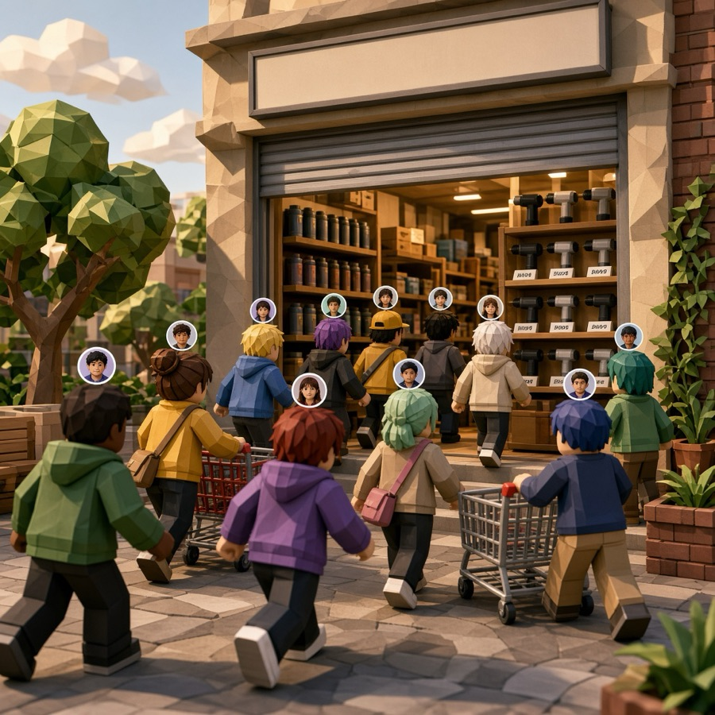
GROK AI
37
Aktüel Perşembesi: Kepenk Açılıyor
Indirim marketinin haftalık aktüel günü, açılış kuyruğu ve rafa koşu
Paylaşım cümlesi · kurgusal örnek
“TikTok'ta market aktüel kuyruğuna girdim, kepenk açıldı, termosa yine yetişemedim.”
TürkiyeTelif: DüşükçatışmatabelaölçekArketip C
Eve götürülen şeyFiş: aldığın ürün ve kaçırdıkların
Paylaşılan kareKepenk açılırken koşan kalabalık
Doğal reklamİndirim marketi zinciri: o haftanın gerçek aktüel ürünü rafta durur (nesne); fişin alt satırında "bu hafta mağazalarda" (çıktı). İş birliğini yayıncı yayın başında söyler, ekranda "reklam / iş birliği" yazar ve TikTok ticari içerik bildirimini açar
Gündem bağıAktüel kataloğu: 12 Kasım 2026 haftası, kaynak https://onedio.com/ (sayfa tarihlendirmiyor). Gün zincire göre değişir, DOĞRULANMADI. En iyi açılış: aktüel günü sabah 08.30–09.30; akşam tekrarı 20.30
İzleyici
"sıra" yazar, kuyruğa girer; kepenk açılınca rafa koşar; ürün seçer. Ücretsiz giriş: "sıra" yazmak; kuyrukta beklemek ücretsiz.
Yayıncı
Kepengi açan mağaza müdürü gibi konuşur, haftanın ürününü ve adedini duyurur, "stoklar tükendi" anonsunu yapar
Neden tutar
Herkes aktüel kuyruğunu bilir; "yetişemedim" cümlesi kendiliğinden yazılır; her hafta yeni ürün, yeni yayın nedeni
Ortak sayaç
Rafta kalan adet; kuyruk uzunluğu; "bu hafta 1.240 kişi termosa yetişemedi"
Dayanak
İndirim marketlerinin haftalık aktüel ürün günleri ve açılış kuyruğu; 12 Kasım haftasında masaj tabancası ve termos kataloglarda öne çıktı. Kaynak: https://onedio.com/ (51 numaralı tarama, madde 61)
Kural riski
Tüm yayın "market kuyruğu" olduğu için bağımsız gösterim ve reklam ayrımı net olmalı; itişme ve düşme sahnesi yok; ticari bildirim zorunlu
Telif
Düşük: marka adı ve logosu yok, iş birliği yokken raf kurgu ürünle dolar
Yenilik denetimi. En yakın eski fikir: Doorbuster Line (claude_E_abd): kamp kuyruğu ve kapı açılınca ilk N kişi ürünü alır. Fark: orada tek büyük gün ve kamp, burada her hafta tekrar eden mahalle marketi, rol merdiveni ve fiş çıktısı. Yakın ama farklı
Fiyat tabelası
Gülsepet (bir ürün kapar)
Kalpmarket arabası (iki ürün, arabayla slalom)
Çaykasiyer tanıdık (ürünü ayrılır, kasada adı okunur)
Arketip C (2D çizgi avatar ve sayaç): katil.html kopyalanır, web5/aktuel/index.html yapılır; sahne market girişi, kepenk, aktüel rafı, 1080x1920, üst 230 ve alt 560 piksel boş.
Sahne: kepenk yarı açık, rafta kurgu ürünler (termos ve masaj tabancası biçiminde, adsız), her üründen "3 adet" yazan tabela.
Giriş komutu: yorumda "sıra" yazan izleyici kuyruğa avatar olarak eklenir; kuyruk soldan sağa uzar.
Rol eşlemesi: Gül sepet (bir ürün), Kalp market arabası (iki ürün, slalom), Çay kasiyer tanıdık (ürün ayrılır, kasada adı okunur), Donut mağaza müdürü (kepengi açar, ürünü seçer).
Tabela adımı: fiyat tabelası ekranın sağ üstünde, üst 230 pikselin altında durur; dört satır: Gül · Sepet, Kalp · Market arabası, Çay · Kasiyer tanıdık, Donut · Mağaza müdürü; her satırda hediye simgesi ve o anki sahibi; tek ekran görüntüsünde okunur.
Sayaç: üstte "rafta kalan adet" ve "kuyruk"; her saniye kuyruktan birkaç kişi rafa koşar; adet sıfırlanınca "stoklar tükendi".
Kare adımı: kepenk açıldığı an kamera geriye çekilir ve koşan kalabalık 4 sn tam karede durur; izleyicinin adı avatarın üstünde etiket olarak görünür; kare 5 sn sabit kalır ki ekran görüntüsü alınsın.
İş birliği adımı: iş birliği varsa zincir marketin o haftaki ürünü rafta nesne olarak durur ve fişin alt satırı "bu hafta mağazalarda" yazar; iş birliği yoksa raf kurgu ürünle dolar ve alt satır boş bırakılır. Yayıncı yayın başında "bu yayın iş birliğidir" der, açıklamada "#reklam" ve "#işbirliği" yazar, TikTok ticari içerik bildirimini yayın ayarlarından açar.
Süzgeç adımı: izleyicinin yazdığı ad ve ürün önerisi ekrana çıktığı için argo, hakaret, marka, gerçek kişi sözlüğü uygulanır; metinler önce onay kuyruğuna düşer, yayıncı ya da moderatör onaylar.
Eve götürülen şey: fiş kartı (aldığın ürün, kaçırdıkların, sıra numaran) yayın sonunda 20 sn ekranda gösterilir.
Test: ?demo=1, ?seed=88; k tuşu kuyruğa kişi ekler, p tuşu kepengi açar; yasaklı sözcük sınaması yapılır.
Yayın: aktüel günü sabah 08.30, 45 dakika (akşam tekrarı 20.30); ölçülecek üç sayı: ilk 5 dakikada kuyruğa girenler, kepenk anında kalan izleyici, rol başına yeni hediye.
İlk 10 dakika
0–1 dk: "Bugün aktüel günü, kepenk yarı açık; ürün üç adet"
Doğrulama: 12 Kasım 2026 Perşembe; kaynak ana sayfa düzeyinde. Zincir adları ve ürün adları tabloya yazılmadı
GROK AI
38
Çıkış Gecesi: 00.00 Kuyruğu
Büyük oyun çıkışında mağaza önünde gece yarısı kuyruğu
Paylaşım cümlesi · kurgusal örnek
“Oyunu alamadım ama TikTok'ta çıkış kuyruğuna girdim, 214. sıradayım.”
Dünya geneliKüreselTelif: OrtaçatışmaölçektabelaArketip C
Eve götürülen şeyBileklik: "çıkış gecesi oradaydım, sıra 214"
Paylaşılan kareGece, vitrin ışığında kuyruk ve geri sayım
Doğal reklamOyun ya da elektronik perakendecisi (mekânın kendisi, tabela); atıştırmalık ve içecek (kuyruğa gelen ikram, nesne); oyuncu kulaklığı ya da koltuğu (ön sıra ödülü). Yayıncı iş birliğini söyler, ticari içerik bildirimini açar
Gündem bağıÇıkış 19 Kasım 2026 Perşembe; dijital ön yükleme 12 Kasım (kaynak yukarıdaki URL; ayrıca yeniankara.com.tr/guncel/kasim-ayinda-…). En iyi açılış: 18 Kasım Çarşamba 22.30 – 19 Kasım 00.30. Yerel saat ve mağaza satışı DOĞRULANMADI
İzleyici
"bekliyorum" yazar, kuyruğa girer; sandalyesini ve ikramını seçer. Ücretsiz giriş: "bekliyorum" yazmak; kuyrukta beklemek ücretsiz.
Yayıncı
00.00 geri sayımını sunar, kapıdaki mağaza görevlisi gibi kepengi kaldırır, ilk kutuyu havaya kaldırır
Neden tutar
Çıkış gecesi zaten bir olay; ekran görüntüsü "sıra 214" bileti gibi gurur verir; sonraki her büyük çıkışta yeniden açılır
Oyunun adı, logosu, görseli kullanılmaz; müzik lisanssız çalınmaz; yayıncı yaş sınırlı oyun tanıtımı yapmaz
Telif
Orta: çıkış gününe bağlı olduğu için oyun adı gündemde ama yayında geçmez; kurgu oyuncu ve "büyük oyun" denir
Yenilik denetimi. En yakın eski fikir: Doorbuster Line (claude_E_abd): çadır sırası, kapı açılınca ilk N kişi ürün alır. Fark: burada gündemdeki tek bir çıkış gecesi, geri sayım ve bileklik; indirim değil çıkış. Ayrıca Kapıkule Sırası (kuyruk ilerler). Yakın ama farklı
Donutkapıyı açan mağaza görevlisi (00.00'da kepengi kaldırır
Rolilk kutuyu havaya kaldırma karesi onundur)
Adım adım yapım (12 adım)
Arketip C (2D çizgi avatar ve sayaç): katil.html kopyalanır, web5/cikis/index.html yapılır; sahne gece mağaza vitrini, kamp sandalyeleri, termoslar.
Sahne: vitrinde büyük geri sayım ekranı (yazı yok, yalnız rakamlar), önünde kuyruk; sol altta ön sıra bileklik standı.
Giriş komutu: yorumda "bekliyorum" yazan izleyici kamp sandalyesiyle kuyruğa eklenir; sıra numarası atanır.
Rol eşlemesi: Gül sandalye ve battaniye, Kalp kuyruğa pizza (herkese dilim, kutuda adı), Çay ön sıra bileklik (ilk on), Donut kapıyı açan mağaza görevlisi.
Tabela adımı: fiyat tabelası ekranın sağ üstünde durur; dört satır: Gül · Kamp sandalyesi, Kalp · Pizza, Çay · Ön sıra bilekliği, Donut · Mağaza görevlisi; hediye simgesi ve o anki sahibi; tek karede okunur.
Sayaç: 00.00'a geri sayım ve kuyruğun metresi; dakikada bir yeni kamp sandalyesi sahneye girer.
Kare adımı: 00.00'da kepenk kalkar, kamera vitrin ışığında kuyruğu geriden gösterir; ilk kutu havaya kalkar; izleyicinin sıra numarası bilekliğinde karede 5 sn sabit kalır.
İş birliği adımı: iş birliği varsa oyun ya da elektronik perakendecisi mekânın tabelası olur, atıştırmalık ve içecek kuyruğa ikram olarak gelir, ön sıra ödülü oyuncu kulaklığı ya da koltuğu olur; iş birliği yoksa tabela boş ve kurgu bir ad ("Gece Mağazası") taşır, ikram adsız. Yayıncı iş birliğini söyler, "#reklam" ve "#işbirliği" yazar, TikTok ticari içerik bildirimini açar. Oyunun adı, logosu ve görseli hiçbir durumda kullanılmaz.
Süzgeç adımı: izleyicinin adı ve yazdığı kısa metinler ekrana çıktığı için argo, hakaret, marka, oyun adı ve gerçek kişi sözlüğü uygulanır; onay kuyruğundan geçmeyen metin görünmez.
Eve götürülen şey: bileklik kartı ("çıkış gecesi oradaydım, sıra 214") yayın sonunda 20 sn ekranda gösterilir.
Test: ?demo=1, ?seed=19; k tuşu kuyruğa kişi ekler, g tuşu geri sayımı 10 sn'ye çeker.
Yayın: 18 Kasım 22.30, 120 dakika; ölçülecek üç sayı: ilk 5 dakikada kuyruğa girenler, 00.00 anında kalan izleyici, bileklik başına yeni hediye.
İlk 10 dakika
0–1 dk: "Bu gece büyük çıkış var, mağaza önündeyiz"
1–3 dk: "bekliyorum yazın, kamp sandalyenizi alın"
3–5 dk: ilk pizza gelir, ön sıra bilekliği duyurulur
Doğrulama: Oyun adı yalnız bu hücrede: Grand Theft Auto VI, 19 Kasım 2026 (fox10tv, 16 Ekim 2026); "yılın en çok beklenen oyunu" ifadesi kaynakta yok, "çok beklenen" olarak okunmalı
GROK AI
39
Etiket Dedektifi: Gerçek İndirim mi
Üstü çizili fiyatların gerçekliğini büyüteç ve grafikle sorgulayan oyun
Eve götürülen şeyDedektif karnesi: "12 etiketten 9'unu bildin"
Paylaşılan kareBüyüteç altında üstü çizili fiyat ve grafik
Doğal reklamFiyat karşılaştırma sitesi ya da uygulaması (büyüteç ve grafik onun aracıdır, nesne); gerçek indirim yapan mağaza ("damgalı" ürün). Yayıncı iş birliğini söyler, ekranda "reklam / iş birliği" yazar, bildirimi açar
Gündem bağıEfsane Cuma: 27 Kasım 2026 Cuma (milligazete). Sahte indirim tepkisi: Ticaret Bakanlığı duyurusu 21 Aralık 2025, Kasım dönemi için 108 dosya, 93'ü aykırı, 12.905.818 TL ceza (ticaret.gov.tr). En iyi açılış: 27 Kasım Cuma 20.30–22.30; ısınma 26 Kasım Perşembe akşamı
İzleyici
"gerçek" ya da "sahte" yazar; fiyat geçmişi grafiği açılır. Ücretsiz giriş: "gerçek" ya da "sahte" yazmak ücretsiz.
Yayıncı
Etiket makinesi gibi damgayı basar, günün en büyük sahte indirimini ilan eder
Neden tutar
Herkesin cebinde bir "bu indirim sahte mi" şüphesi var; karne kendini paylaştırır; oyun öğretici
Gerçek mağaza ve ürün adıyla sahte suçlaması yapılmaz (itibar ve Reklam Kurulu riski); örnek ürünler kurgudur; fiyat verisi iş birliği yapılan sitenin verisidir
Telif
Düşük: kurgu ürünler; site adı ve logosu iş birliği yokken yok
Yenilik denetimi. En yakın eski fikir: Mezat Tahmini (claude_B_rekabet_arzu): sanal eşyanın fiyatını tahmin eder. Fark: burada fiyat tahmin değil gerçeklik sorgusu; gündem Efsane Cuma. Yakın akraba: Xepa da Feira (fiyat düşer, hızlı alan kazanır); fark: orada hız, burada bilgi. Farklı
Fiyat tabelası
Gülbüyüteç (ipucu: son 30 günün en düşük fiyatı)
Kalpgeçen ayın kasa fişini gösteren
Çaymüfettiş rozeti (sıradaki ürünü seçer)
Donutetiket makinesi ("gerçek indirim" damgasını basar, günün en büyük sahte indirimini ilan eder)
Adım adım yapım (12 adım)
Arketip C (2D çizgi avatar ve sayaç): katil.html kopyalanır, web5/etiket/index.html yapılır; sahne mağaza rafı ve büyüteç.
Sahne: rafta kurgu ürünler; her ürünün üstünde üstü çizili eski fiyat ve yeni fiyat (rakamlar kurgu), yanında büyüteç; alt tarafta açılır fiyat geçmişi grafiği.
Giriş komutu: yorumda "gerçek" ya da "sahte" yazan izleyici oyuna girer; oy sayılır, sonra grafik açılır ve cevap söylenir.
Rol eşlemesi: Gül büyüteç (son 30 günün en düşük fiyatı ipucu), Kalp geçen ayın kasa fişini gösteren, Çay müfettiş rozeti (sıradaki ürünü seçer), Donut etiket makinesi (damgayı basar).
Tabela adımı: fiyat tabelası ekranın sağ üstünde durur; dört satır: Gül · Büyüteç, Kalp · Kasa fişi, Çay · Müfettiş rozeti, Donut · Etiket makinesi; hediye simgesi ve o anki sahibi; tek ekran görüntüsünde okunur.
Sayaç: "yakalanan sahte indirim" ve "doğru bilme yüzdesi"; her turda 12 etiketlik tur.
Kare adımı: her turun sonunda kamera büyüteç altındaki üstü çizili fiyata ve grafiğe yaklaşır, 4 sn durur; sonra geri çekilir, izleyici adı doğru bilenler listesinde karede kalır, 5 sn sabit.
İş birliği adımı: iş birliği varsa fiyat karşılaştırma sitesi ya da uygulaması büyüteç ve grafiğin kaynağı olarak sahnede bulunur, "gerçek indirim yapan" mağazanın ürünü "damgalı" gösterilir; iş birliği yoksa büyüteç ve grafik adsız, ürünler tamamen kurgudur. Yayıncı iş birliğini söyler, "#reklam" ve "#işbirliği" yazar, TikTok ticari içerik bildirimini açar. Gerçek mağaza ve ürün adıyla "sahte" suçlaması hiçbir durumda yapılmaz.
Süzgeç adımı: izleyici ad ve ürün önerisi yazarsa gerçek marka, mağaza ve kişi sözlüğü uygulanır; onay kuyruğundan geçmeyen metin ekrana çıkmaz.
Eve götürülen şey: dedektif karnesi ("12 etiketten 9'unu bildin") yayın sonunda 20 sn gösterilir.
Test: ?demo=1, ?seed=27; k tuşu oy ekler, g tuşu grafiği açar.
Yayın: 27 Kasım Cuma 20.30, 90 dakika; ölçülecek üç sayı: ilk 5 dakikada oy veren, tur başına kalan izleyici, karne paylaşımı.
İlk 10 dakika
0–1 dk: "Efsane Cuma geldi, etiketlere bakıyoruz"
1–3 dk: "gerçek ya da sahte yazın"
3–5 dk: ilk grafik açılır, cevap söylenir
5–7 dk: kare 5 sn durur, "ekran görüntüsünü alın"
7–9 dk: ikinci tur, rozet hatırlatılır
9–10 dk: günün sahte indirimi ilan edilir
Doğrulama: Efsane Cuma tarihi doğrulandı: 27 Kasım 2026 Cuma, Şükran Günü 26 Kasım. Tohumdaki "madde 64, 77, 78" kaynağı genel haber sitesiydi, yukarıdaki bakanlık duyurusuyla değiştirildi
GROK AI
40
Stop the Wedding: Objection!
Nikâh memuru sorar, kalabalık kapıdan dalıp itiraz eder, hiçbir düğün tamamlanmaz
Paylaşım cümlesi · kurgusal örnek
“400 people just objected at a wedding on TikTok live. Mine was: he still owes me twenty bucks. Sustained.”
400 kişi TikTok canlıda bir düğüne itiraz etti. Benimki: bana yirmi dolar borcu var. Kabul edildi.
KüreselTelif: Ortakendi cümlençatışmaölçekArketip B
Eve götürülen şeyİtiraz tutanağı: cümlen ve karar
Paylaşılan kareKapıdan dalan kalabalık, donakalmış gelin ve damat
Doğal reklamŞarkının kendisi (lisansla kullanılırsa plak şirketinin tanıtımı, olay); romantik komedi filmi ya da dizi tanıtımı (afiş yeri, tabela). Yayıncı iş birliğini söyler ve bildirimi açar
Gündem bağıŞarkı İngiltere tekliler listesinde 6–12 Kasım 2026'da 3. sırada (kaynak yukarıda). Liste her hafta değişir, yayından önce kontrol edilir. En iyi açılış: Cuma ya da Cumartesi 21.00 (hafta sonu gece, İngilizce kitle için akşam saati)
İzleyici
"object" yazar, kapıdan içeri dalan kalabalığa girer; itirazını tek cümle yazar. Ücretsiz giriş: "object" yazmak ve itiraz cümlesi ücretsiz.
Yayıncı
Nikâh memuru gibi soruyu sorar, en iyi itirazı seçer, "sustained" ya da "overruled" der
Neden tutar
İtiraz cümlesi hemen bir espri; ekran görüntüsü "400 kişi itiraz etti" diye anlatılır; film klasiği herkesin bildiği an
İtirazlarda hakaret ve gerçek kişi süzgeci; şarkı lisanssız çalınmaz (işletme ve markalı yayında Commercial Music Library); çift kurgudur
Telif
Orta: "itirazı olan var mı" anı ortak kültür, şarkı ve film adları yayında geçmez; müzik kullanılacaksa lisans şart
Yenilik denetimi. En yakın eski fikir: Little Chapel: 5-Minute Weddings (G01, 40_TOHUMLAR_V3.md): nikâh sahnesi ve "itirazı olan?" anı oradaki Donut rolünde başlıyor. Fark: G01 çift önerir ve nikâh kıyar; burada tüm yayın itiraz anıdır, hiçbir nikâh bitmez. Çok yakın, aynı sahne türü; birlikte yayınlanmamalı. Ayrıca Düğün salonu (07b, gelin damat takı)
Fiyat tabelası
Gülkapıyı iterek giren (ağır çekim)
Kalpitirazı yüksek sesle okunan
Çaypiyanist (dramatik akor, sonra sessizlik)
Donutnikâh memuru (en iyi itirazı seçer
Rol"sustained" ya da "overruled" der)
Adım adım yapım (12 adım)
Arketip B (3D mekân, oturan kalabalık ve rol sandalyeleri): web5/dugun/index.html; tören alanı, nikâh masası, çifte kapı; avatarlar önce sandalyelerde oturur.
Sahne: çiçekli tören alanı, gelin ve damat kurgu karakter, arkada çifte kapı; kamera kapı ucundan altara bakar.
Giriş komutu: yorumda "object" yazan izleyici kapıdan dalan kalabalığa girer; itiraz cümlesi tek satır yazılır (en çok 40 harf).
Rol eşlemesi: Gül kapıyı iterek giren (ağır çekim), Kalp itirazı yüksek sesle okunan, Çay piyanist, Donut nikâh memuru ("sustained" ya da "overruled").
Tabela adımı: fiyat tabelası ekranın sağ üstünde durur; dört satır: Gül · Kapıdan giren, Kalp · İtirazı okunan, Çay · Piyanist, Donut · Nikâh memuru; hediye simgesi ve o anki sahibi; tek karede okunur.
Sayaç: "itiraz sayısı" ve "bu gece tamamlanan düğün: 0"; her 5 dakikada yeni bir düğün başlar.
Kare adımı: kapı açılırken kamera geriye çekilir, kalabalık kapıdan dalar, gelin ve damat donar; 4 sn dramatik duraklama, sonra "overruled" ya da "sustained" yazısı çıkar; kare 5 sn sabit kalır; izleyicinin itirazı alt bantta okunur.
İş birliği adımı: iş birliği varsa tören alanının afiş yeri bir romantik komedi tanıtımına ayrılır, şarkı lisansla çalınırsa plak şirketi tanıtımı yapılır; iş birliği yoksa afiş yeri boş ve düğün afişi kurgu çifte ait, müzik telifsiz ya da yayıncının kendi kaydı. Yayıncı iş birliğini söyler, "#ad" ve "#sponsored" yazar (İngilizce kitle), Türkiye'den yayında "#reklam" ve "#işbirliği" yazar, TikTok ticari içerik bildirimini açar.
Süzgeç adımı: itiraz cümlesi ekrana çıktığı için hakaret, nefret, gerçek kişi, marka, cinsel içerik sözlüğü uygulanır; metin önce onay kuyruğuna düşer, memur rolündeki yayıncı onaylar; "overruled" kararı reddedilen metne de uygulanır.
Eve götürülen şey: itiraz tutanağı (cümlen ve karar) yayın sonunda 20 sn gösterilir.
Test: ?demo=1, ?seed=3; k tuşu itiraz ekler, o tuşu kapıyı açar; yasaklı sözcük sınaması yapılır.
Yayın: Cuma ya da Cumartesi 21.00, 75 dakika; ölçülecek üç sayı: ilk 5 dakikada itiraz sayısı, kapı anında kalan izleyici, itiraz başına yeni hediye.
İlk 10 dakika
0–1 dk: "Do you object? Tonight nobody gets married"
1–3 dk: "object yazın, itirazınızı tek cümle yazın"
3–5 dk: ilk kapı açılışı, piyanist akor çalar
5–7 dk: kare 5 sn durur, "ekran görüntüsünü alın"
7–9 dk: en iyi itiraz okunur, karar verilir
9–10 dk: tabela hatırlatılır, yeni düğün başlar
Doğrulama: Şarkı yalnız bu hücrede: "Stop the Wedding" (Ashe), İngiltere 6–12 Kasım 2026'da 3., 12 hafta, zirve 3 (officialcharts). Sanatçı adı yayında anılmaz
GROK AI
41
İki Salon: Aynı Gün İki Film
Sinema lobisinde iki kuyruk, iki salon, çifte biletli izleyici
Paylaşım cümlesi · kurgusal örnek
“TikTok live has a cinema lobby with two lines for the two big movies. I'm in both.”
TikTok canlıda iki büyük film için iki kuyruklu bir sinema lobisi var. İkisindeyim.
KüreselTelif: OrtaçatışmaölçektabelaArketip B
Eve götürülen şeyYırtık bilet koçanı: salon, koltuk, adın
Paylaşılan kareKuşbakışı iki renkli kuyruk
Doğal reklamSinema zinciri (lobinin kendisi, tabela); büfe ürünleri (nesne); film dağıtımcıları (afiş yerleri). Yayıncı iş birliğini söyler ve bildirimi açar
Gündem bağıİki dev film ABD'de 18 Aralık 2026 Cuma günü aynı gün vizyonda: Avengers: Doomsday ve Dune: Part Three (en.wikipedia.org/wiki/Avengers:_Doomsd… ; en.wikipedia.org/wiki/Dune:_Part_Three…). Birinci filmin Birleşik Krallık çıkışı 16 Aralık. Eski akım: Barbenheimer, Barbie ve Oppenheimer 21 Temmuz 2023. En iyi açılış: 18 Aralık Cuma 20.00–22.00. Türkiye vizyon tarihi DOĞRULANMADI
İzleyici
"left" ya da "right" yazar, kuyruğuna girer; ikisini de yazan çifte biletli olur. Ücretsiz giriş: "left" ya da "right" yazmak ücretsiz.
Yayıncı
Makinist gibi ışıkları söndürür, hangi salonun önce başlayacağını seçer
Neden tutar
"Hangi film" tartışması herkesin hazır cümlesi; çifte biletli olmak gurur; iki renkli kuyruk ekran görüntüsünde net
Film adı, afişi, karakteri iş birliği yokken kullanılmaz; renk ve türle anlatılır; yayında spoiler yok; ses lisanssız çalınmaz
Telif
Orta: iki kuyruk ve renk kodu telifsiz kurgudur; film adları ve afişi sahneye girmez
Yenilik denetimi. En yakın eski fikir: Drive-in: Klaksonla Alkış (U03, 13_TOHUMLAR.md): perde önünde arabalar, makinist filmi seçer. Fark: burada lobi, iki kuyruk ve aynı gün çıkan iki film gündemi; U03 tek perde. Kırmızı Halı: Gala Gecesi (K14): sinema galası, burada sıra ve seçim. Yakın ama farklı
Fiyat tabelası
Gülpatlamış mısır kovası
Kalpçifte bilet (iki kuyruk arasında koşar)
Çayön sıra koltuk (salona ilk giren)
Donutmakinist (ışıkları söndürür, hangi salonun önce başlayacağını seçer
Rolkapı açılır, kalabalık içeri akar)
Adım adım yapım (12 adım)
Arketip B (3D mekân, oturan kalabalık ve rol sandalyeleri): web5/iki-salon/index.html; sinema lobisi, iki salon kapısı, ortada büfe.
Sahne: iki kuyruk (biri kum rengi, biri kırmızı ve mavi), kapılarda boş afiş çerçevesi (yazı yok), büfede mısır kovaları.
Giriş komutu: yorumda "left" ya da "right" yazan izleyici ilgili kuyruğa girer; ikisini de yazan avatar çifte bilet alır ve iki kuyruk arasında koşar.
Rol eşlemesi: Gül mısır kovası, Kalp çifte bilet, Çay ön sıra koltuk, Donut makinist.
Tabela adımı: fiyat tabelası ekranın sağ üstünde durur; dört satır: Gül · Mısır kovası, Kalp · Çifte bilet, Çay · Ön sıra koltuk, Donut · Makinist; hediye simgesi ve o anki sahibi; tek karede okunur.
Sayaç: iki kuyruğun uzunluğu ve satılan mısır; her 10 dakikada bir "gösterim başlıyor" ve kuyruk salona akar.
Kare adımı: makinist ışıkları söndürdüğü an kamera kuşbakışı iki renkli kuyruğa çıkar, 4 sn durur; çifte biletliler karede parlar; izleyici adı bilet koçanında okunur, 5 sn sabit.
İş birliği adımı: iş birliği varsa sinema zinciri lobinin tabelası olur, büfe ürünleri nesne olarak durur, dağıtımcı afiş yerlerine kendi görselini koyar; iş birliği yoksa lobi adsız, afiş çerçeveleri boş, film adı ve karakteri yok, renk ve türle anlatılır. Yayıncı iş birliğini söyler, "#ad" ve "#reklam" yazar, TikTok ticari içerik bildirimini açar.
Süzgeç adımı: izleyici adı ve "left/right" dışında bir metin ekrana çıkmaz; ad etiketlerinde marka, film adı, gerçek kişi sözlüğü uygulanır; onay kuyruğundan geçmeyen ad "Misafir" olarak görünür.
Eve götürülen şey: yırtık bilet koçanı (salon, koltuk, adın) yayın sonunda 20 sn gösterilir.
Test: ?demo=1, ?seed=18; l ve r tuşları kuyruğa kişi ekler, m tuşu mısır sayar.
Yayın: 18 Aralık Cuma 20.00, 90 dakika; ölçülecek üç sayı: ilk 5 dakikada iki kuyruğa giren, çifte biletli oranı, bilet başına yeni hediye.
İlk 10 dakika
0–1 dk: "Aynı gün iki büyük film; lobide iki kuyruk"
1–3 dk: "left ya da right yazın, ikisini yazan çifte biletli"
3–5 dk: kuyruklar uzar, mısır satışı başlar
5–7 dk: ışıklar söner, kare 5 sn durur
7–9 dk: kuyruk salona akar
9–10 dk: tabela hatırlatılır, makinist yeni gösterimi seçer
Doğrulama: Filmler yalnız bu hücrede. Barbie ve Oppenheimer 21 Temmuz 2023 (Wikipedia), akımın adı Barbenheimer, ilk kullanım tweet'i 15 Nisan 2022. Dune: Part Three IMAX münhasırlığı en az 3 hafta Doomsday ile çakışıyor
GROK AI
42
Karne Günü: Yılın Özeti
Yayında geçirdiğin yıl özet kartıyla dev ekranda ödüllendirilir
Paylaşım cümlesi · kurgusal örnek
“TikTok'ta bir yayın bana yıl özeti verdi: 412 dakika, en çok yazdığım kelime halay.”
KüreselTelif: Düşükyakın plankendi cümlenölçekArketip C
Eve götürülen şeyYıl özeti kartı (dikey, paylaşmak için tasarlanmış)
Paylaşılan kareKartın kendisi
Doğal reklamKartın alt satırı "… sunar" (çıktı); yıl sonu kampanyası olan her marka. Yayıncı iş birliğini söyler, alt satırı "reklam / iş birliği" diye açıkça işaretler ve bildirimi açar
Gündem bağıDuyuru 5 Kasım 2026, kesin gün yazmıyor. Geçmiş çıkışlar: 5 Ara 2019, 1 Ara 2020, 1 Ara 2021, 30 Kas 2022, 29 Kas 2023, 4 Ara 2024, 3 Ara 2025 (en.wikipedia.org/wiki/Spotify_Wrapped…). En iyi açılış: uygulamanın çıkış akşamı 21.00; çıkış gününe bağlı kalmadan 29 Kasım – 5 Aralık haftası. Çıkış günü DOĞRULANMADI
İzleyici
"karnem" yazar, sıraya girer; kartında dakika, en çok yazdığı komut, aldığı roller ve bir unvan çıkar. Ücretsiz giriş: "karnem" yazmak ücretsiz.
Yayıncı
Kürsüde yılın en iyi anını seçer, yeniden oynatır
Neden tutar
Herkes yıl özetini paylaşmayı sever; sayılar ve unvan kişisel; kart kendi başına paylaşılır
Veri yalnız yayın içi davranıştır; saklanan veri için açık bilgilendirme ve silme yolu; çocuk verisi toplanmaz; unvanlar hakaret içermez
Telif
Düşük: müzik uygulaması adı, rengi ve kart düzeni kopyalanmaz; kendi tasarım
Yenilik denetimi. En yakın eski fikir: Yearbook Günü (U02, 13_TOHUMLAR.md): okul yıllığı ve "most likely to" sayfası. Fark: burada veri tabanlı kişisel kart ve yılın anı; U02 el yazısı imza. Yakın ama farklı
Fiyat tabelası
Gülkarta çıkartma
Kalpkartı dev ekranda öne alınan
Çay"yılın izleyicisi" adayı
Donutkürsü (yılın en iyi anını seçer, o an yeniden oynatılır)
Adım adım yapım (12 adım)
Arketip C (2D çizgi avatar ve sayaç): katil.html kopyalanır, web5/karne/index.html yapılır; sahne okul töreni salonu ve dev ekran.
Sahne: kürsü, dev ekran, sıralarda avatarlar; ekranda sırayla izleyici kartları açılır.
Giriş komutu: yorumda "karnem" yazan izleyici sıraya girer; kartında yayında geçirdiği dakika, en çok yazdığı komut, aldığı roller ve bir unvan ("Halayın Gece Kuşu") üretilir.
Rol eşlemesi: Gül karta çıkartma, Kalp kartı dev ekranda öne alınan, Çay "yılın izleyicisi" adayı, Donut kürsü.
Tabela adımı: fiyat tabelası ekranın sağ üstünde durur; dört satır: Gül · Çıkartma, Kalp · Öne alınan kart, Çay · Yılın izleyicisi adayı, Donut · Kürsü; hediye simgesi ve o anki sahibi; tek karede okunur.
Sayaç: dağıtılan karne ve toplam dakika; her kart açılınca sayaç artar.
Kare adımı: kart dev ekranda açıldığı an kamera karta yaklaşır, 5 sn tam karede durur; izleyici adı kartın başlığında, unvan alt satırda; kart dikey ve tek başına paylaşılabilir biçimde sabit kalır.
İş birliği adımı: iş birliği varsa kartın alt satırı "… sunar" ile kategoriyi (örneğin müzik uygulaması ya da yıl sonu kampanyası olan bir marka) yazar; iş birliği yoksa alt satır boş bırakılır ya da kurgu markayla ("Gece Yayınları") dolar. Yayıncı iş birliğini söyler, alt satırı "reklam / iş birliği" diye işaretler, "#reklam" ve "#işbirliği" yazar, TikTok ticari içerik bildirimini açar. Müzik uygulamasının adı, rengi ve kart düzeni kopyalanmaz.
Süzgeç adımı: kartta ekrana çıkan unvan ve komut kelimeleri için hakaret, argo, marka, gerçek kişi sözlüğü uygulanır; unvanlar hazır listeden gelir; serbest metin yalnız onay kuyruğundan geçer.
Eve götürülen şey: yıl özeti kartı (dikey) yayın sonunda 20 sn gösterilir; yeni kanalda "bu gecenin özeti" olarak başlar; saklanan veri için açık bilgilendirme yapılır.
Test: ?demo=1, ?seed=12; k tuşu karne ekler, n tuşu sıradaki kartı açar.
Yayın: uygulamanın çıkış akşamı 21.00 (kesin gün açıklanmadı; 29 Kasım – 5 Aralık haftası), 75 dakika; ölçülecek üç sayı: ilk 5 dakikada "karnem" yazan, kart anında kalan izleyici, kart başına yeni hediye.
İlk 10 dakika
0–1 dk: "Yılın özeti geldi, karne töreni başlıyor"
1–3 dk: "karnem yazın, kartınızı açalım"
3–5 dk: ilk kart dev ekranda açılır
5–7 dk: kare 5 sn durur, "ekran görüntüsünü alın"
7–9 dk: yılın izleyicisi adayı seçilir
9–10 dk: tabela hatırlatılır, kürsüde yılın anı seçilir
Doğrulama: Müzik uygulaması adı yalnız URL'de ve bu hücrede. Wrapped 2026 tarihi: 5 Kasım yazısında yok, DOĞRULANMADI
TikTok'ta market aktüel kuyruğuna girdim, kepenk açıldı, termosa yine yetişemedim.
Aktüel kataloğu: 12 Kasım 2026 haftası, kaynak https://onedio.com/ (sayfa tarihlendirmiyor). Gün zincire göre değişir, DOĞRULANMADI. En iyi açılış: aktüel günü sabah 08.30–09.30; akşam tekrarı 20.30
İndirim marketi zinciri: o haftanın gerçek aktüel ürünü rafta durur (nesne); fişin alt satırında "bu hafta mağazalarda" (çıktı). İş birliğini yayıncı yayın başında söyler, ekranda "reklam / iş birliği" yazar ve TikTok ticari içerik bildirimini açar
N02
Çıkış Gecesi: 00.00 Kuyruğu: büyük oyun çıkışında mağaza önünde gece yarısı kuyruğu
Oyunu alamadım ama TikTok'ta çıkış kuyruğuna girdim, 214. sıradayım.
Çıkış 19 Kasım 2026 Perşembe; dijital ön yükleme 12 Kasım (kaynak yukarıdaki URL; ayrıca yeniankara.com.tr/guncel/kasim-ayinda-…). En iyi açılış: 18 Kasım Çarşamba 22.30 – 19 Kasım 00.30. Yerel saat ve mağaza satışı DOĞRULANMADI
Oyun ya da elektronik perakendecisi (mekânın kendisi, tabela); atıştırmalık ve içecek (kuyruğa gelen ikram, nesne); oyuncu kulaklığı ya da koltuğu (ön sıra ödülü). Yayıncı iş birliğini söyler, ticari içerik bildirimini açar
N03
Etiket Dedektifi: Gerçek İndirim mi: üstü çizili fiyatların gerçekliğini büyüteç ve grafikle sorgulayan oyun
Efsane Cuma: 27 Kasım 2026 Cuma (milligazete). Sahte indirim tepkisi: Ticaret Bakanlığı duyurusu 21 Aralık 2025, Kasım dönemi için 108 dosya, 93'ü aykırı, 12.905.818 TL ceza (ticaret.gov.tr). En iyi açılış: 27 Kasım Cuma 20.30–22.30; ısınma 26 Kasım Perşembe akşamı
Fiyat karşılaştırma sitesi ya da uygulaması (büyüteç ve grafik onun aracıdır, nesne); gerçek indirim yapan mağaza ("damgalı" ürün). Yayıncı iş birliğini söyler, ekranda "reklam / iş birliği" yazar, bildirimi açar
N04
Stop the Wedding: Objection!: nikâh memuru sorar, kalabalık kapıdan dalıp itiraz eder, hiçbir düğün tamamlanmaz
400 people just objected at a wedding on TikTok live. Mine was: he still owes me twenty bucks. Sustained. (400 kişi TikTok canlıda bir düğüne itiraz etti. Benimki: bana yirmi dolar borcu var. Kabul edildi.)
Şarkı İngiltere tekliler listesinde 6–12 Kasım 2026'da 3. sırada (kaynak yukarıda). Liste her hafta değişir, yayından önce kontrol edilir. En iyi açılış: Cuma ya da Cumartesi 21.00 (hafta sonu gece, İngilizce kitle için akşam saati)
Şarkının kendisi (lisansla kullanılırsa plak şirketinin tanıtımı, olay); romantik komedi filmi ya da dizi tanıtımı (afiş yeri, tabela). Yayıncı iş birliğini söyler ve bildirimi açar
N05
İki Salon: Aynı Gün İki Film: sinema lobisinde iki kuyruk, iki salon, çifte biletli izleyici
TikTok live has a cinema lobby with two lines for the two big movies. I'm in both. (TikTok canlıda iki büyük film için iki kuyruklu bir sinema lobisi var. İkisindeyim.)
İki dev film ABD'de 18 Aralık 2026 Cuma günü aynı gün vizyonda: Avengers: Doomsday ve Dune: Part Three (en.wikipedia.org/wiki/Avengers:_Doomsd… ; en.wikipedia.org/wiki/Dune:_Part_Three…). Birinci filmin Birleşik Krallık çıkışı 16 Aralık. Eski akım: Barbenheimer, Barbie ve Oppenheimer 21 Temmuz 2023. En iyi açılış: 18 Aralık Cuma 20.00–22.00. Türkiye vizyon tarihi DOĞRULANMADI
Sinema zinciri (lobinin kendisi, tabela); büfe ürünleri (nesne); film dağıtımcıları (afiş yerleri). Yayıncı iş birliğini söyler ve bildirimi açar
N06
Karne Günü: Yılın Özeti: yayında geçirdiğin yıl özet kartıyla dev ekranda ödüllendirilir
TikTok'ta bir yayın bana yıl özeti verdi: 412 dakika, en çok yazdığım kelime halay.
Duyuru 5 Kasım 2026, kesin gün yazmıyor. Geçmiş çıkışlar: 5 Ara 2019, 1 Ara 2020, 1 Ara 2021, 30 Kas 2022, 29 Kas 2023, 4 Ara 2024, 3 Ara 2025 (en.wikipedia.org/wiki/Spotify_Wrapped…). En iyi açılış: uygulamanın çıkış akşamı 21.00; çıkış gününe bağlı kalmadan 29 Kasım – 5 Aralık haftası. Çıkış günü DOĞRULANMADI
Kartın alt satırı "… sunar" (çıktı); yıl sonu kampanyası olan her marka. Yayıncı iş birliğini söyler, alt satırı "reklam / iş birliği" diye açıkça işaretler ve bildirimi açar
Tarama nasıl yapıldı, ne okunamadı
İki alt ajan 12 Kasım 2026'da açık liste sayfalarını ve haber sitelerini okudu: reyting haberleri, Box Office Türkiye, Netflix haftalık listeleri, Spotify günlük ve haftalık listeleri, YouTube trendleri, Billboard ve İngiltere listeleri, Steam, etkinlik ve tatil takvimleri.
Okunamayanlar: TikTok Creative Center'ın Türkiye sayfası, Ekşi Sözlük gündemi, FlixPatrol, Netflix Türkiye dizi listesi, bazı ödül ve spor takvimleri. Google Trends yalnız günlük on kayıtla okundu. Bu yüzden TikTok içi akımlar bu tabloda eksik.
Tarihlerin bir kısmı ikincil kaynaktan; "doğrulanmadı" yazanlar yayından önce yeniden bakılmalı.
07
Akım nereye gidiyor
Halay, zikir halkası, pavyon ve düğün konvoyu bir hafta içinde art arda çıktı. Her yeni mekân kendi başına haber oldu: "bu da olmuş". Sıradaki halkaları tahmin etmek zor değil; zor olan, onlardan farklı bir yerde durmak.
Rakiplerin yapması beklenenler
Aşağıdakiler yeni fikir sayılmaz. Aynı çizginin en olası devamları; satıcıların ve taklitçilerin birkaç hafta içinde çıkarması beklenir. Bu yüzden kart ve görsel ayırmadık.
Halka
Neden sırada
Bizim için
Asker uğurlaması
Düğün konvoyunun en doğal devamı: otogar, davul zurna, omuzda taşıma.
İlk listemizde vardı; denetim eski fikirlerimizle aynı bulduğu için çıkardık. Yapan çok olacak.
Kına gecesi
Düğün dünyasının hazır sahnesi: gelini ağlatma, avuçta altın.
Geç kalınır; yapan çok olur.
Takı töreni
Hediye doğrudan takıya dönüşür, sunucu anons eder.
Mekanik güçlü ama düğün ürünlerine eklenmesi an meselesi.
Gelin alma
Kapıyı tutan kardeş, bahşiş pazarlığı.
Tek sahnelik; uzun yayın taşımaz.
Nişan
Yüzük kurdelesini kesme.
Kurdele fikrini açılış törenine taşıdık: Kurdele Kesme.
Maç sonu konvoyu
Düğün konvoyunun kılık değiştirmiş hâli.
Kulüp adı ve arması telif ve kural riski taşır.
İftar çadırı ve sahur davulcusu
Ramazan 2027 yaklaşırken kaçınılmaz.
Hazırlık şimdiden yapılabilir; hediye ile ibadeti karıştırmamak şart.
Bayramlaşma sırası
El öpme ve harçlık, hediye yönünü tersine çevirir.
Mevsimlik; iki günlük pencere.
Mevlit ve hatim
Zikir halkasının devamı.
Önermiyoruz. Dua ile hediyeyi yan yana koymak hem kural hem itibar riski.
Bu sürümdeki fikirlerin çizgiyle ilişkisi
Aynı çizgide, başka bir kapıdan:Gazino 1975 pavyonun alkolsüz, sigarasız, aile önünde izlenebilir sürümü. Gelen Yolcu "adına tören" kaldıracını düğünden karşılamaya taşıyor: kapıdan çıkan sensin, kartonlarda senin adın var. Ship Launch hayranların sevdiği çift için kurduğu töreni nikâh yerine gemi indirmeye çeviriyor.
26–31 Aralık penceresi kaçarsa bir yıl bekler. Küçük sahne; gül hediyesi doğrudan eyleme karşılık gelir.
Beş yayından neyi aldık, neyi almadık
Alkol, sigara, "kons". İlk yazımda bunları dışarıda bırakmıştık. Kuralları okuyunca karar değişti: yasak değiller. Hepsi Pavyon dosyasında yer alıyor; her biri tek tuşla kapatılabilir. Gazino 1975 bunlar olmadan da çalışan aile sürümü olarak duruyor.
Hediyeyle dua. Dua ile hediyeyi yan yana koymak hem kural hem itibar riski taşıyor. Kişisel cümlenin ekranda görünmesi fikrini aldık, dinî çerçeveyi almadık: Üst Geçit Pankartı, Kamyon Arkası, Dave's Leaving Card.
Gerçek kişi adına tören. Düğün konvoyunda afişe iki kişinin adı yazılmıştı; büyük olasılıkla bir hayran topluluğunun sevdiği isimler. Bizim "adına tören" fikirlerinde yalnız ad ve il, kurgu karakter, evcil hayvan ya da nesne yazılır; ünlü adı süzülür.
Ortak güvenlik kuralları
İzleyicinin yazdığı metin ekrana çıkıyorsa önce sözcük süzgecinden, sonra onay kuyruğundan geçer. Soyad, kullanıcı adı, telefon ve adres hiçbir zaman gösterilmez.
Her fikirde ücretsiz bir giriş yolu vardır. Hediye yalnız rolü değiştirir; sonucu satın aldırmaz.
Şans oyunu, bahis, ödüllü çekiliş yok. Sword in the Stone fikrinde kılıcın çıkması satın alınamaz ve ödülü yalnız unvandır.
Siyasi makam, parti, kulüp arması, kurum logosu, gerçek marka yok.
Bir de şu var: format taşınıyor
Halay oyunu bu hafta Kick'te, yüzü görünen bir yayıncının kanalında 7.000'den fazla kişiyle oynandı. Aynı sahne başka platformda, başka bir yayıncının kitlesiyle çalıştı. Bu, formatın yayıncıdan bağımsız bir ürün gibi dolaşabildiğini gösteriyor: kendi kanalımızda açmanın yanında, hazır kitlesi olan yayıncılara kiralamak da bir yol.
Hâlâ açık
Bu fikirlerin hiçbiri henüz kodlanmadı. Prototipteki hediye alanı düzeltmesi de (ilk sürümün Yapım bölümünde anlatılan) uygulanmayı bekliyor.
Paylaşım cümleleri tahmindir. Hangi cümlenin gerçekten yazılacağını ilk üç yayın gösterir; ölçülecek sayı, yayın sırasında alınan ekran görüntüsü değil, yayın adının X ve TikTok aramasında kaç kez geçtiğidir.
Türkiye bölgesindeki bir hesabın global fikirlerde yabancı izleyiciye ne kadar dağıtıldığı ölçülmedi.
Yeni sürüm · 10 Kasım 2026
Tutan konseptler: 60 yeni fikir
Kurgu evrenleri, Türkiye'nin ve on bir ülkenin akla hemen gelmeyen ama herkesin tanıdığı buluşmaları, aidiyet için yeni mekanikler ve trend bükümleri. Her fikir önceki 743 fikre karşı denetlendi; her birinde adım adım yapım rehberi var.
60 yeni fikir711 yapım adımı11 ülke60 eve götürülen kare
01
Ne değişti
Tekrar denetimi. İlk sürümdeki 223 fikir önceki turların 520 fikriyle karşılaştırıldı: 139'u tekrar, 82'si yakın, 2'si yeni çıktı. Bu sürüm sıfırdan yazıldı ve aynı sıkı ölçütle yeniden denetlendi. 60 fikrin 18'inde dünya tümüyle yeni. 40'ının eski havuzda bir akrabası var (örnek: Yâren Meclisi ile sıra gecesi). 2 fikir bilerek aynı akımın bükümü (slime, boyama).
743 fikirlik bir havuzda hemen her şeyin bir akrabası çıkıyor. Akrabalar elenmedi, çünkü istenen şey zaten sıra gecesi gibi, adı ve rolleri hazır buluşmalardı. İlk sürümde adıyla geçen fikirler ise çıkarıldı. Her kartta en yakın eski fikir açıkça yazıyor.
Kurgu evrenleri. Kaynak yalnız ülkeler değil. Filmler, diziler, masallar ve oyunlar da herkesin bildiği sahneler veriyor.
Sıra gecesi testi. Aradığımız buluşmanın adı var, bir yöreye ya da çevreye ait, rolleri hazır, dışarıdaki kişi merak ediyor ve ilk yirmi fikirde akla gelmiyor. Bu ölçütü geçmeyen fikir alınmadı.
Her fikre kendi görseli. Önceki sürümlerde görseller ortak kullanılıyordu. Burada her kartın kendi sahnesi var.
Formül: sekiz parça
Herkesin bildiği ritüelKuralı anlatmaya gerek yok. İzleyici ne olacağını zaten biliyor.
Ucuz ya da ücretsiz girişTek kelimelik yorum, bir beğeni ya da en ucuz hediye.
Adın ve yüzün sahnedeAvatarın üstünde ad ve profil fotoğrafı. İzleyici kendini arar ve bulur.
Rol merdiveniKalabalıktan yardımcıya, ustaya, tekil role. Fiyat arttıkça rol tekilleşir.
Büyük duyuru ve kameraRol alınınca dev yazı çıkar, kamera o kişiye döner.
Ortak sayaçKüçük katkılar büyük bir sayıya dönüşür.
Eve götürülen şeyYayından çıkarken elinde kalan tek kare. Jenerikte adın, alt bantta adın, kimlik kartı, toplu fotoğraf, ödül, kavanoz etiketi.
Nasıl okunur. Her kartta izleyicinin ve yayıncının ne yaptığı, rol merdiveni, kural riski, telif durumu ve açılır "Adım adım yapım" bölümü var. "Arketip A–F" etiketi kartı yapım kalıbına bağlar; kalıplar ilk sürümdeki Yapım bölümünde. "Yenilik denetimi" satırı fikrin en yakın eski fikirden farkını söyler.
02
Kurgu evrenleri: sahneye gir, rolü al
Kaynak yalnız ülkeler değil. Filmlerin, dizilerin, masalların ve oyunların herkesin bildiği sahneleri de aynı kalıpla çalışır. Aranan şey karakter değil, sahne ve içindeki roller.
Eser adı yalnız esin kaynağı olarak anılır. Sahnede eser adı, karakter adı, logo, özgün müzik ve oyuncu yüzü yoktur. Nasreddin Hoca, Dede Korkut, Binbir Gece, Alice ve Frankenstein kamu malıdır, adlarıyla kullanılabilir.
GROK AI
01
Film Seti: Figüran Ol
Açık hava film setinde her 4 dakikada bir sahne çekilir, izleyici figüran olup rol merdiveniyle jeneriğe girer
Türkiye ağırlıklıKurgu evreniTelif: DüşükAkrabası varArketip B
Eve götürülen şeyYayın sonunda akan jenerik: herkesin adı rolüyle yazar
İzleyici
Yorumla 'figüran' yazar, kalabalık sahnesine girer; beğeniyle 'sahne çekildi' ilerler. Ücretsiz giriş: 'figüran' yazmak; 300 beğeni bir ek figüran dalgası açar.
Yayıncı
Set sesiyle konuşur, 'Motor!' ve 'Kesti!' der, her sahnede tür dekorunu değiştirir
Neden tutar
Herkes film setini bilir; adın jenerikte görünmesi ekran görüntüsü aldırır; 4 dakikalık sahne döngüsü gelen izleyiciye hemen yer açar
Ortak sayaç
Çekilen sahne 0/12; 12'de film biter
Dayanak
Yeşilçam film seti kültürü (Türk sinemasının 1950-70 dönemi; set anıları) https://en.wikipedia.org/wiki/Yeşilçam ; film seti düzeni (klaket, ışık, kamera) arketip
Kural riski
Yönetmen koltuğu yalnız tür seçer, karşıt taraf sunup hediye isteme yok; jenerikteki adlar süzgeçten geçer
Telif
Düşük: saf arketip; sahnede eser adı, karakter adı, logo, özgün müzik ve oyuncu yüzü yok; kendi çizdiğimiz klaket, kamera ve avatarlar, müzik telifsiz ya da kendi döngümüz
Yenilik denetimi. En yakın eski fikir: Sohbet Yönetmen, Yayıncı Oyuncu (codex_B_rekabet_arzu): orada sohbet engel oylar; burada tek sahne yerine çekim döngüsü, rol merdiveni ve jenerik çıktısı var
Bağımsız denetim: eski havuzda akrabası var: Süreklilik Ekibi Yayıncıyı Yakalıyor — Rol oyunu.
Rol merdiveni
Gülklaketçi veya ışıkçı
Kalpdublör (komik düşüş)
Çaybaşrol
Donutyönetmen koltuğu (tür seçer)
Adım adım yapım (12 adım)
Arketip B (oturan kalabalık ve rol noktaları) üstüne kur: web5/filmseti/index.html, web4/katil.html içindeki onEvent, CONFIG, clean, isBanned aynen kopyalanır.
Sahne: tek açık hava seti (sokak dekoru, dolly üstünde kamera, ışık direkleri); türe göre üç dekor paketi (aşk, korku, kovboy) tek görsel değişimiyle hazırlanır.
Figüran: 'figüran' yazan ya da ilk kez yorum yapan kişi arka kalabalıkta bir avatar olur; en çok 150 avatar, fazlası arka planda silik.
Sahne saati: her 4 dakikada sahne döngüsü (hazırlık 60 sn, çekim 120 sn, 'kesti' 30 sn, tekrar izleme 30 sn); ekranda büyük klaket sayısı.
Rol eşlemesi: Gül klaketçi/ışıkçı (sahne numarasını vurur, ışığı açar); Kalp dublör (komik düşüş animasyonu); Çay başrol (merkeze geçer, kamera ona iner); Donut yönetmen (tür seçer, 'Motor!' der). Rol süresi bir sahne.
Beğeni eşiği: her 300 beğeni bir 'kalabalık dalgası' (tüm figüranlar el sallar); yayıncı 'Motor!' diyerek tetikler.
Sayaç: üstte 'Sahne 0/12' çubuğu; her sahne bitince 1 artar, 12'de 'film bitti' ekranı.
Jenerik: jenerik[] dizisine her katılan 'ad — rolü' olarak eklenir; sonda dikey akar, en çok katkı verenler başta; telifsiz kendi müzik döngüsü çalar.
Eve götürülen şey: jenerik akarken son 20 sn sabit 'ekran görüntüsü' yavaşlığı, adlar okunabilir büyüklükte; yayıncı 'ekran görüntüsü alın' der.
Filtre ve güvenlik: ad süzgeci (isBanned), gerçek kişi adı ve oyuncu adı girişi tür duyurusunda engellenir; sahnede logo ve eser adı yok.
Test: ?demo=1&seed=120 ile iki sahne dönüşü izle; k, l, g tuşlarıyla rol ve dalga denenir; 1080x1920, üst 230 ve alt 560 piksel boş.
İlk yayın: Cumartesi 21.00, 60 dakika (5 sahne); ölçülecek üç sayı: ilk 10 dakikada 'figüran' yazan kişi, sahne sonuna kadar kalan izleyici oranı, jenerikte ekran görüntüsü paylaşımı.
İlk 10 dakika
0–1 dk: 'Hoş geldiniz, bu gece setimiz açık; yazın figüran, kalabalığa girin'
1–3 dk: figüran avatarları dizilir, ilk klaket, 'Kamera, ışık, motor!'
3–5 dk: ilk sahne çekilir, ikinci tür duyurusu
5–7 dk: ilk dublör düşüşü, 'kim yönetmen olacak?' çağrısı
Doğrulama: Yeşilçam adı ve dönemi Vikipedi'den doğrulandı. 'Klaketçi, ışıkçı, dublör, başrol, yönetmen' gerçek set görevleridir; Yeşilçam'a özgü rol listesi DOĞRULANMADI, konsept bunu iddia etmiyor.
GROK AI
02
Bölüm Sonu: Dizi Sofrası
Uzun bir kahvaltı masasında izleyiciler aile üyesi olur; 10 dakikalık 'bölüm' dramatik donuşla biter
Türkiye, Latin Amerika, ArapKurgu evreniTelif: DüşükAkrabası varArketip B
Eve götürülen şeyDonmuş 'bölüm sonu' karesi: şok ifadeli avatarlar, altında 'Gelecek bölümde'
İzleyici
'otur' yazar, masada bir aile üyesi olur; beğeniyle klişe anları (bakışma, kapı, bardak düşmesi) tetikler. Ücretsiz giriş: 'otur' yazmak; beğeni eşiği klişe anlarını açar.
Yayıncı
Anlatıcı sunucu gibi konuşur, sır kartlarını okur, bölüm sonunda 'Gelecek bölümde' der
Neden tutar
Klişeleri herkes tanır ve bekler; donma anı bir yanıt gibi paylaşılır; 10 dakikalık bölümler izleyiciyi sürekli yeniden getirir
Ortak sayaç
Bölüm süresi 10 dk geri sayım; sonunda ekran donar
Senarist sır kartlarını yalnız hazır listeden seçer (şiddet, taciz, gerçek kişi yok); 'karşıt taraf' yapısı yok
Telif
Düşük: saf arketip; sahnede dizi adı, karakter adı, logo, özgün müzik ve oyuncu yüzü yok; masa, yalı ve avatarlar kendi çizimimiz, dramatik müzik telifsiz ya da kendi kaydımız
Yenilik denetimi. En yakın eski fikir: Sofraya veya meclise oturma kalıbı (08_tekrar_denetimi.md): oturma aynı, ama burada oturmak aile rolü, 10 dakikalık bölüm yapısı ve donma karesi var; tek tek eşi bulunamadı
Bağımsız denetim: eski havuzda akrabası var: Evlilik Stüdyosu: Perde Arkası Senaryo.
Rol merdiveni
Gülşoför veya kâhya
Kalpgelin veya damat
Çaybüyük hanım veya ağa
Donutsenarist (hazır sır kartı patlatır)
Adım adım yapım (12 adım)
Arketip B üstüne kur: web5/dizisofrasi/index.html; masa 24 koltuklu uzun masa, arka plan yalı terası; katil.html olay sözleşmesi kopyalanır.
Koltuk dağıtımı: 'otur' yazan kişi masaya oturur; ilk 24 kişi masada, fazlası arka plan hizmetli ve komşu olarak ayakta.
Rol eşlemesi: Gül şoför/kâhya (kapıyı açar, masaya çay getirir); Kalp gelin/damat (başköşeye yakın koltuk); Çay büyük hanım/ağa (masa başı); Donut senarist (sır kartı seçer).
Sır kartları: 12 hazır kart (kartlar[]), ör. 'aslında kardeşsiniz', 'hafızasını kaybetti', 'mektup yanlış kişiye gitmiş'; kart seçilince masa donar, ses vurgusu ve zoom.
Klişe tetikleri: 150 beğeni ağır çekim bakışma, 300 beğeni kapının tam o anda çalınması, 450 beğeni bardak düşmesi; her tetik 6 sn'lik küçük animasyon.
Bölüm saati: 10 dakikalık geri sayım; son 20 sn'de müzik yükselir, 0'da ekran donar ve alt yazı 'Gelecek bölümde' çıkar.
Kamera: masa boyunca yavaş kayma, sır patlayınca tüm yüzlere hızlı zoom; kamera kod olarak üç açıya sınırlı.
Eve götürülen şey: donma karesinde avatarların yüzü şok ifadesine geçer, adlar etiketli kalır; 5 sn sabit durur, yayıncı 'ekran görüntüsü alın' der.
Filtre ve güvenlik: sır kartlarında şiddet, taciz, ölüm ve gerçek kişi yok; ad süzgeci açık; yayıncı kadrajda ve anlatıcı olarak konuşur.
Müzik: telifsiz dramatik döngü ya da kendi kaydımız; hiçbir dizi müziği ya da jenerik taklidi yok.
Test: ?demo=1&seed=40 ile bir bölüm baştan sona; g, s, l tuşlarıyla sır kartı ve klişe tetiği denenir; 1080x1920, kenar boşlukları korunur.
İlk yayın: Pazar 20.30, 50 dakika (5 bölüm); ölçülecek üç sayı: 'otur' yazan kişi, bölüm sonuna kadar kalanlar, donmuş kare paylaşımı.
İlk 10 dakika
0–1 dk: 'Sofra kuruldu, yazın otur, aileden birisiniz'
1–3 dk: koltuklar dolar, çay getirilir, yayıncı gerilimli anlatır
3–5 dk: ilk sır kartı, 'bu kadar da olmaz!'
5–7 dk: bakışma ve kapı çalma klişeleri
7–9 dk: bardak düşer, son sır hazırlığı
9–10 dk: ekran donar, 'Gelecek bölümde' alt yazısı, 'sonraki bölüm 2 dakikaya'
Doğrulama: Türk dizilerinin Latin Amerika, Arap dünyası ve Balkanlar'daki yayılımı Vikipedi'den doğrulandı. 'Yalı kahvaltısı' klişesi bir tür gözlemidir; kaynakla doğrulanmadı, arketip olarak kullanılıyor.
GROK AI
03
Göle Maya: Ya Tutarsa
Göl kıyısında ters eşeğe binmiş Hoca ile izleyiciler göle kaşık kaşık maya çalar, yüzde saçma küçük artar
Türkiye ve Türk fıkra kültürüKurgu evreniTelif: DüşükYeni dünyaArketip C
Eve götürülen şey'Gölü yüzde 0,01 ben mayaladım' sertifikası, adla
İzleyici
'maya' yazar, göle bir kaşık maya çalar; beğeni göl yüzdesini artırır. Ücretsiz giriş: 'maya' yazmak; her 100 beğeni bir ek kaşık.
Yayıncı
Fıkrayı kısa anlatır, 'ya tutarsa!' der, günün fıkrasını sahneler
Neden tutar
Fıkrayı herkes bilir; yüzdenin komik ölçüde küçük olması şaka yapar; sertifika paylaşılabilir şakadır
Ortak sayaç
'Göl yüzde 0,003 yoğurt': saçma küçük artan yüzde; hedef yüzde 0,1
Hoca saygıyla ele alınır (alay yok); fıkralar kısa ve zararsız; yüzde gerçek bir vaat değil, hediye karşılığı gerçek yoğurt ya da çekiliş yok
Telif
Düşük: Nasreddin Hoca halk anlatısıdır (13. yüzyıl sonrası, yazarı belli olmayan sözlü gelenek) ve kamu malıdır; yine de çağdaş çizimler ve kitaplar telifli olabilir, bu yüzden Hoca ve eşek kendi çizimimiz, hazır karikatür ya da illüstrasyon kullanılmaz
Yenilik denetimi. En yakın eski fikir: Yasak listede yakın eş bulunamadı (anahtar sözcük taraması); fark: fıkra tabanlı, tek kaşıklık ortak sayaç ve sertifika çıktısı
Bağımsız denetim: dünya yeni; yalnız mekanik şuna benziyor: Ekşi Maya Günlüğü (7 Gün).
Rol merdiveni
Gülkaşıkçı (dev kaşık)
Kalptellal ('ya tutarsa!' bağırır)
Çayeşeğin sahibi
Donutkadı (günün fıkrasını seçer)
Adım adım yapım (12 adım)
Arketip C üstüne kur: web5/gole_maya/index.html ya da katil.html içinde SC.maya sahnesi; sohbet komutu 'maya', ortak sayaç göl yüzdesi.
Arka plan: göl kıyısı, ters eşekte Hoca, kıyıda köylüler; çizimler gorsel-codex ile kendi çıktımız; tek katman göl animasyonu.
Komut: 'maya' yazan her yorum 1 kaşık; kişi başı 6 sn bekleme; kaşık animasyonu gölde beyaz halka bırakır.
Sayaç: goluYuzde += 0.0001 (kaşık başı); üstte 'Göl yüzde 0,0xxx yoğurt' sayacı; hedef 0,1'de ekranda 'tuttu!' sahnesi ve konfeti.
Rol eşlemesi: Gül kaşıkçı (dev kaşık animasyonu, 10 kaşık değerinde); Kalp tellal ('ya tutarsa!' çağrısı, 3 sn büyük yazı); Çay eşeğin sahibi (eşek hareketlenir); Donut kadı (fıkra listesinden birini seçer).
Fıkra ara sahneleri: 8 kısa fıkra (fikralar[]), her biri 20 sn çizimle; yayıncı kendi sözleriyle anlatır, kadı seçince oynar.
Sertifika: yayın sonunda ya da talep edince kişinin kaşık sayısına göre 'Gölü yüzde X ben mayaladım' kartı, ad ve tarih; HTML'den PNG.
Beğeni eşiği: her 200 beğeni 'ya tutarsa' çağrısı, tüm izleyiciler bir anda kaşık atar (toplu olay).
Eve götürülen şey: sertifikada kişinin adı, toplam kaşığı, günün yüzdesi; yayıncı sonda 'listede adı olanlar ekran görüntüsü alsın' der.
Filtre ve güvenlik: gerçek kişi adı sertifikaya yazılmaz (yalnız yayın kullanıcı adı); Hoca'ya hakaret içeren yorumlar süzgeçle gizlenir.
Test: ?demo=1&seed=100 ile hedefe kadar akış; k, l, g tuşları; 1080x1920 boş bantlar korunur.
İlk yayın: Salı 20.00, 45 dakika; ölçülecek üç sayı: 'maya' yazan kişi, tekrar maya atan kişi oranı, sertifika ekran görüntüsü paylaşımı.
İlk 10 dakika
0–1 dk: 'Bir fıkra: Hoca göle maya çalıyor, ya tutarsa? Yazın maya!'
1–3 dk: ilk kaşıklar, yüzde 0,0003 olur, gülünür
3–5 dk: ilk tellal çağrısı, 'ya tutarsa!'
5–7 dk: günün fıkrası seçilir, kadı anlatır
7–9 dk: toplu kaşık, yüzde 0,01'e yaklaşır
9–10 dk: ilk sertifikalar, 'adınız listede, kalın'
Doğrulama: Hoca'nın 13. yüzyılda yaşadığı ve tarihî kişiliğinin tartışmalı olduğu Vikipedi'den doğrulandı. Göle maya fıkrasının birden çok anlatımı var (kaseyle, kaşıkla); Akşehir'de canlandırıldığı CNN Türk haberinden doğrulandı. 'Kadı' fıkralarda sık geçer ama bu fıkranın kadısı DOĞRULANMADI; kadı rolü oyuncu rolü olarak tanımlandı.
GROK AI
04
Dede Korkut Ad Koyuyor
Obada ateş başında izleyiciler küçük bir iş yapar, yayındaki davranışlarından destansı lakap üretilir
Türkiye, Azerbaycan, KazakistanKurgu evreniTelif: DüşükYeni dünyaArketip B
Eve götürülen şeyDestansı lakap kartı ('Yorumuyla Çay Getiren Deli Ayşe') ve kısa 'Dede Korkut duası'
İzleyici
'ad ver' yazar, küçük bir iş yapar (üç selam, bir çay, bir şarkı satırı); davranışından lakap yazılır. Ücretsiz giriş: 'ad ver' yazmak ve küçük işi yapmak.
Yayıncı
Ozan edasıyla konuşur, her yeni yiğite adını 'ad koyma' sözüyle verir
Neden tutar
Ad almak kimlik hediyesidir; lakap izleyicinin kendi davranışından çıkar, o yüzden paylaşılır
Dinî dua metni satılmaz ve hediyeyle bağlanmaz (dua yalnız hikâye bölümüdür); lakaplar hakaret içermez; hediye yalnız rol açar
Telif
Düşük: Dede Korkut Kitabı 15. yüzyıl el yazması kaynaklı halk anlatısı ve kamu malıdır; çağdaş çevirilerin telifi olabileceği için lakap ve dualar kendi metnimizdir, hazır çeviri alıntılanmaz
Yenilik denetimi. En yakın eski fikir: Yasak listede yakın eş bulunamadı (anahtar sözcük taraması); fark: lakap davranıştan üretilir, ad verme töreni rol merdiveniyle bağlı
Bağımsız denetim: eski listelerde yakın eşi yok.
Rol merdiveni
Gülozan (kopuz çalar)
Kalpalp (at biner)
Çaybey (ziyafet verir)
DonutDede Korkut'un yanına oturan (sıradaki adı yazdırır)
Adım adım yapım (12 adım)
Arketip B üstüne kur: web5/dedekorkut/index.html; oba çemberi, ortada ateş, oturan avatarlar; olay sözleşmesi katil.html'den.
Giriş: 'ad ver' yazan kişi ateş çevresinde oturur ve ekranda küçük görev çıkar ('üç kez selam yaz', 'çay yaz', 'bir şarkı satırı yaz').
Görev takibi: gorevler{} içinde kişi başına yorum akışı; görev yapılınca 'yiğit adaylığı' damgası.
Lakap üreteci: lakap(kisi) yorum sayısı, ilk söz, beğeni payı ve rolünden sözcük seçer (ör. çay yazan 'Çay Getiren', çok selam yazan 'Selamı Bol'); 60 sözcüklük özgün liste (sıfat, eylem, ad).
Ad koyma töreni: yayıncı her 2 dakikada bir yiğit seçer, ateş başında lakabı okur; kart ekranda 8 sn kalır.
Rol eşlemesi: Gül ozan (kopuz sesi, kısa dize okur); Kalp alp (at animasyonu); Çay bey (ziyafet animasyonu, herkese çay); Donut Dede Korkut'un yanına oturan (sıradaki adı yazdırır).
Sayaç: ad almış yiğit 0/100; her adda ateş büyür; 100'de büyük şenlik sahnesi.
Çıktı: lakap kartı HTML'den PNG, adla, tarihle ve kısa özgün 'Dede Korkut duası' (iyi dilek cümlesi, dinî ibadet değil).
Eve götürülen şey: kartı sohbette 'kart' yazanlara yayıncı kamera önünde gösterir, ekran görüntüsü teşviki.
Filtre ve güvenlik: lakaplarda hakaret, siyaset ve ırkçılık yok; sözcük listesi kapalı; gerçek kişi adı yok.
Test: ?demo=1&seed=60 ile üç ad koyma; lakap listesinde tekrar kontrolü; 1080x1920 boş bantlar.
İlk yayın: Perşembe 21.00, 60 dakika; ölçülecek üç sayı: 'ad ver' yazan kişi, lakap kartı sayısı, kart paylaşımı.
İlk 10 dakika
0–1 dk: 'Oba kuruldu, ateş yandı, yazın ad ver'
1–3 dk: ilk üç yiğit oturur, görevler çıkar
3–5 dk: ilk lakap okunur, alkış
5–7 dk: ozan kopuz çalar, ikinci lakap
7–9 dk: bey ziyafet verir, çay dağıtılır
9–10 dk: 'kartlarınız hazır, adı olan kalsın'
Doğrulama: Dede Korkut'un adı koyma geleneği ve Beyrek örneği Vikipedi'de var; UNESCO sayfası destanı 12 hikâye ve 13 müzik parçası olarak listeliyor. 'Ozan ve kopuz' arama özeti ve UNESCO bağlamıyla doğrulandı. 'Dede Korkut'un yanına oturan' ve 'alp, bey' oyun rolleridir; gelenekte tam bu rol sırası DOĞRULANMADI.
GROK AI
05
Şehrazat: 1001 Gece Sayacı
Saray odasında anlatıcı yayıncı, izleyicilerin yazdığı cümlelerle masal kurar; her yayın bir gece
Türkiye, Körfez ve Arap dünyasıKurgu evreniTelif: DüşükAkrabası varArketip C
Eve götürülen şeyO gecenin masalı tek sayfa, katkı verenlerin adıyla
İzleyici
Hikâyenin sonraki cümlesini yazar; beğeniyle olayı destekler. Ücretsiz giriş: Sonraki cümleyi yazmak; en çok beğeni alan cümle masala girer.
Yayıncı
Anlatıcı olarak masalı sürdürür, yarım cümleyle bitirir
Neden tutar
Hikâyeyi birlikte yazmak sahiplik duygusu verir; geceler birikir ve geri gelme nedeni olur; yarım cümle merak bırakır
Ortak sayaç
'Gece 37/1001', günler boyunca birikir; her yayın bir gece
Masalda şiddet ve cinsellik hazır süzgeçle sınırlı; sultan yalnız türü seçer (hediye karşılığı içerik talebi değil); dinî bir tema yok
Telif
Düşük: Binbir Gece Masalları kamu malıdır (kaynak: 8.-19. yüzyıl derlemesi); ancak lamba cini bölümü sonradan eklenmiş masaldır ve yine kamu malıdır; kullanılan görsel ve çeviri metinleri kendi üretimimiz, hazır modern çeviri ya da film görselleri kullanılmaz
Yenilik denetimi. En yakın eski fikir: Yasak listede yakın eş bulunamadı (anahtar sözcük taraması); fark: günler boyu kalıcı sayaç ve ortak yazılan masal sayfası
Bağımsız denetim: eski havuzda akrabası var: Campfire Round.
Rol merdiveni
Güllambayı ovan (cin bir dilek olay getirir)
Kalpsaray çalgıcısı
Çayvezir (iki öneriden birini seçer)
Donutsultan (türü belirler)
Adım adım yapım (12 adım)
Arketip C üstüne kur: web5/gece1001/index.html; olay sözleşmesi katil.html'den, sohbet komutu yok, her yorum 'sonraki cümle' adayı.
Sahne: saray odası, anlatıcı yayıncı (kendi sesiyle), sultan koltuğu, vezir yanında, lamba halıda; çizimler kendi üretimimiz.
Cümle akışı: yorumlar 30 sn'lik penceredeki adaylara düşer; beğeni en çok alan 'masala girer' ve ekranda büyük yazı olur.
Anlatıcı rolü: yayıncı kabul edilen cümleyi sesli okur, bir cümle ekleyip ilerletir; masal masal[] dizisinde birikir.
Rol eşlemesi: Gül lambayı ovan (cin bir olay dilek getirir, önceden hazır 20 olay kartı); Kalp saray çalgıcısı (müzik ve atmosfer); Çay vezir (iki öneri sunar, biri seçilir); Donut sultan (türü: macera, gizem, aşk, şaka).
Gece sayacı: gece.json içinde yayınlar arası kalıcı sayaç ('Gece 37/1001'); her yayın başında artar.
Yarım cümle: her yayın son 60 sn'de 'sonraki gece...' cümlesini yarım bırakır; ekranda 'devamı yarın'.
Çıktı: masalın tek sayfalık metni, katkı verenlerin adıyla; HTML'den PNG ya da PDF, yayın sonunda yayıncı gösterir.
Eve götürülen şey: 'Gece N masalı' sayfası, adlar yazılı; adı olanlar ekran görüntüsü alır.
Filtre ve güvenlik: şiddet, cinsellik, dinî alay, siyaset ve gerçek kişi adı süzgeçle gizlenir; yayıncı kadrajda, anlatıcı sesiyle.
Test: ?demo=1&seed=50 ile bir gecelik masal; sahte cümleler akıtılır; 1080x1920 boş bantlar.
İlk yayın: Cuma 22.00, 60 dakika; ölçülecek üç sayı: cümle yazan kişi, ertesi gece geri gelen oranı, masal sayfası paylaşımı.
İlk 10 dakika
0–1 dk: 'Gece 1: sultan uykusuz, ben masal anlatıyorum; sonraki cümleyi siz yazın'
1–3 dk: ilk cümleler akar, en beğenilen seçilir
3–5 dk: lamba ovulur, cin ilk olayı getirir
5–7 dk: vezir iki öneri sunar
7–9 dk: sultan türü seçer, masal yön değiştirir
9–10 dk: 'masal yarım kaldı, yarın devam; adınız sayfada'
Doğrulama: Binbir Gece'nin çerçeve hikâyesi, Şehrazat, vezir ve kral Vikipedi'den doğrulandı. Lamba (Aladdin) masalı özgün Arapça yazmalarda yok, Galland'ın Fransızca çevirisine sonradan eklendi; bu yüzden 'lambayı ovan' rolü masalın bir parçası olarak kullanılıyor ama çerçeve hikâyenin özgün ögesi değil. 'Sultan' rolü çerçevede 'kral' (Şehriyar) olarak geçer; oyun için 'sultan' korundu.
GROK AI
06
Ana Haber: Muhabir Sensin
Haber masasında şehir ekranları; izleyici şehrinden zararsız bir 'haber' bildirir, adı alt bantta çıkar
TürkiyeKurgu evreniTelif: DüşükAkrabası varArketip F
Eve götürülen şey'İzmir'den @ad bildiriyor' alt bantlı kare
İzleyici
Şehrini ve tek cümlelik zararsız 'haber'ini yazar. Hava durumu köşesinde şehrinin havasını yazar, haritada simgesi çıkar. Ücretsiz giriş: Şehir ve haber cümlesini yazmak.
Yayıncı
Sunucu gibi konuşur, haberi okur, bağlantı kurar
Neden tutar
Memleketini ve adını ekranda görmek güçlü bir aidiyet; şehir sayacı rekabet ve eksik şehri tamamlama isteği doğurur
Siyaset, kaza, gerçek kişi ve kamu görevlisi haberi süzülür; yalnız gündelik ve komik; şehir rekabeti hakaret içermez
Telif
Düşük: saf arketip; gerçek kanal adı, logo, jenerik müziği ve sunucu yüzü yok; masa, ekran ve avatarlar kendi çizimimiz
Yenilik denetimi. En yakın eski fikir: Hemşehri Kahvehanesi: Çaylar Benden (03_milliyet_rekabet.md H3): şehir tabanlı ama masa ve ikram; burada şehir 'haber' olarak bültene girer ve alt bant çıktısı verir
Bağımsız denetim: eski havuzda akrabası var: TV stüdyosu: sırayla replik bandı.
Rol merdiveni
Gülhava durumu sunucusu
Kalpspor spikeri
Çaysahadan canlı bağlantı muhabiri (adı alt bantta)
Donutyayın yönetmeni (hangi haber 'son dakika' olur seçer)
Adım adım yapım (12 adım)
Arketip F (şehir panosu) üstüne kur: web5/anahaber/index.html; katil.html içindeki IL ve sehirBul() kullanılır, 81 il tamamlanır.
Sahne: haber masası, arkada 81 küçük şehir ekranı (başta karanlık); bir şehir 'haber verince' ekranı yanar.
Girişte iki parça: 'İzmir: Martılar bugün simidi tasarruf etti' biçiminde şehir ve tek cümle; ayrıştır(yorum) şehri sehirBul() ile bulur, haberi 80 karaktere keser.
Zararsızlık süzgeci: isBanned listesi, siyaset, kaza, gerçek kişi ve kurum adı için ek sözcük listesi; şüpheli haber moderasyona düşer.
Bülten sırası: her 90 sn bir haber seçilir (en çok beğeni ya da yeni şehir); sunucu olarak yayıncı okur.
Rol eşlemesi: Gül hava durumu (şehrin hava kutusu çıkar); Kalp spor spikeri (komik skor cümlesi); Çay sahadan bağlantı muhabiri (ekran bölünür, adı alt bantta); Donut yayın yönetmeni ('son dakika' seçer, kırmızı bant).
Sayaç: bültene giren şehir 0/81, ekranda harita; tamamlanan il rengini alır; 81'de 'tüm ülke bültende' sahnesi.
Alt bant çıktısı: altBant(ad, sehir) ekranda 6 sn; 'İzmir'den @ad bildiriyor'; kare alınabilecek büyüklükte, yazı okunur.
Eve götürülen şey: muhabir karesi; yayıncı bantı yavaşça gösterir ve 'ekran görüntüsü alın' der.
Filtre ve güvenlik: haberler önceden sahnelenmez, yayıncı okumadan önce bakar; yayıncı kadrajda ve konuşuyor.
Test: ?demo=1&seed=81 ile bütün şehirler; k, l, g tuşları; 1080x1920 boş bantlar.
İlk yayın: Hafta içi 20.30, 40 dakika; ölçülecek üç sayı: bültene giren şehir sayısı, haber yazan kişi, alt bantlı kare paylaşımı.
İlk 10 dakika
0–1 dk: 'Ana haber başlıyor, muhabir sizsiniz; şehrinizi ve tek cümlelik haberinizi yazın'
Doğrulama: Alt bant (lower third) kavramı Vikipedi'den doğrulandı. Ana haber bülteni biçimi ve rolleri (hava, spor, muhabir, yönetmen) evrensel arketip, kaynak gerektirmiyor ancak kanal ve sunucu adı kullanılmıyor.
GROK AI
07
Ödül Töreni: Teşekkür Konuşması
Sahne, kürsü ve orkestra çukuru; izleyici 'aday' olur, ölçülebilir davranışla kategori kazanır
ABD ve küreselKurgu evreniTelif: DüşükYeni dünyaArketip C
Eve götürülen şeyElinde heykelcikle adın ve kategorin
İzleyici
'aday' yazar; kategorisinde en iyi davranışla ödül kazanır, 15 sn'lik teşekkür metnini yorumdan yazar. Ücretsiz giriş: 'aday' yazmak; beğeni eşiği ek kategori açar.
Yayıncı
Sunucu gibi zarfı açar, konuşmayı okur, 'süre doldu' der
Neden tutar
Ödül töreni kalıbı bilinir, ad ve kategori kişisel ve paylaşılır; kazanan ölçülebilir davranışla belli olduğu için adil görünür
Kazanan şansla değil davranışla belirlenir (çekiliş ya da kumar yok); ödül yalnız dijital heykelcik, para karşılığı yok; kategori hakaret içermez
Telif
Düşük: saf arketip; 'Oscar' adı ve heykelciği tescilli, bu yüzden sahnede ödül adı, altın adam heykeli ve logo yok; heykelcik kendi tasarımımız (soyut yıldız ya da kupa), müzik telifsiz
Yenilik denetimi. En yakın eski fikir: Mezuniyet Kep Atışı (claude_A_katilim): adın diplomaya yazılması benzer, ama burada kategori, kazanma kuralı ve teşekkür konuşması var
Bağımsız denetim: dünya yeni; yalnız mekanik şuna benziyor: Köy Muhtarlık Seçimi — her il turunda en çok katkı yapan izleyici "muhtar"; muhtarlar aras.
Donutkategori koyan ('en geç gelen', 'en çok kalp atan')
Adım adım yapım (12 adım)
Arketip C üstüne kur: web5/odul/index.html; sahne, kürsü, orkestra çukuru; katil.html olay sözleşmesi kopyalanır.
Aday kaydı: 'aday' yazan kişi koltuğa oturur; kişi başı davranış ölçümü (olcum{}: yorum sayısı, kalp, zamanında gelme).
Kategori listesi: 24 hazır kategori (kategoriler[]), her biri ölçüte bağlı: 'en geç gelen' (ilk yorum zamanına göre), 'en çok kalp atan' (beğeni payı), 'en çok selam veren'.
Kazanan seçimi: kategori kapanınca ölçüt en yüksek olan kazanır; eşitlikte ilk yorum zamanı; hiçbir şans öğesi yok.
Teşekkür konuşması: kazanan 15 sn içinde yorumla konuşmasını yazar; metin ekrana akar, 15 sn dolunca orkestra devreye girer.
Rol eşlemesi: Gül zarfı getiren (zarf animasyonu); Kalp orkestra şefi (müzikle keser, kısa müzik tuşu); Çay sunucu yardımcısı ('adaylar' okur); Donut kategori koyan (yeni kategori seçer).
Sayaç: verilen ödül 0/24; her ödülde ışık patlar; 24'te büyük final sahnesi.
Heykelcik: kendi tasarımımız (soyut yıldız ya da kupa); kazananın adı ve kategorisi kartta; HTML'den PNG.
Eve götürülen şey: 'adın ve kategorin' kartı; yayıncı 'kartınızı ekran görüntüsüyle alın' der.
Filtre ve güvenlik: kategoriler olumlu ve zararsız; tartışmalı kategori yok; teşekkür metni süzgeçten geçer.
Test: ?demo=1&seed=60 ile 3 kategori; k, l, g tuşları; 1080x1920 boş bantlar.
İlk yayın: Cumartesi 21.30, 60 dakika; ölçülecek üç sayı: aday sayısı, teşekkür yazan kişi, heykelcik kartı paylaşımı.
İlk 10 dakika
0–1 dk: 'Tören başlıyor, aday olmak için yazın aday'
Doğrulama: Zarflı açıklama (1941'den) ve kabul konuşması sınırı (2010'dan 45 sn) Vikipedi'den doğrulandı; 'Oscar' adının tescilli marka olduğu orada yazıyor. Orkestra çukurunun konuşmayı müzikle kesmesi bu sayfada doğrulanmadı (DOĞRULANMADI); oyun kuralı olarak korunuyor.
GROK AI
08
Çılgın Çay Partisi: Bir Yana Kay
Bitmeyen çay masasında herkes bir sandalye kayar, yanına başka biri düşer, saat hep altıdır
İngiltere, ABD ve masal sevenlerKurgu evreniTelif: DüşükAkrabası varArketip B
Eve götürülen şeyŞapkalı portren
İzleyici
'çay' yazar, masaya oturur; 'temiz fincan' çağrısıyla herkes bir sandalye kayar. Ücretsiz giriş: 'çay' yazmak; her 100 beğeni bir kayma.
Yayıncı
Çılgın sunucu gibi konuşur, saati durdurur, selamlaşma balonlarını okur
Neden tutar
Masal herkesin bildiği saçmalıktır; yanına başka biri düşmesi sohbet doğurur; her kaymada yeni komşu sürekli yeniden dikkat çeker
Hediye yalnız rol açar; selamlaşma balonları ön tanımlı ve zararsız; masalda alkol ya da uyuşturucu imgesi çizilmez
Telif
Düşük: kitap (1865) ve John Tenniel çizimleri kamu malıdır, ancak sonraki çağdaş film ve çizgi film tasarımları (mavi elbise, belirli şapkacı görünüşü) telifli olabilir; sahnede o tasarımlar yok, karakterler kendi çizimimiz, kitaptaki ad ve film görselleri kullanılmaz
Yenilik denetimi. En yakın eski fikir: Sofraya veya meclise oturma, fincan ikramı kalıbı (08_tekrar_denetimi.md): oturma ortak; burada her kaymada yeni komşu, saat mekaniği ve portren var
Bağımsız denetim: eski havuzda akrabası var: Tea Round — sıra kimde?.
Rol merdiveni
Gülfındık faresi (çaydanlıkta uyur)
KalpMart tavşanı
Çayşapkacı ('temiz fincan!' der, herkes kayar)
Donutsaat tutan (saat hep 6
Roldurdurur ya da geri alır)
Adım adım yapım (12 adım)
Arketip B üstüne kur: web5/caypartisi/index.html; uzun masa, 16 sandalye halka gibi döner; olay sözleşmesi katil.html'den.
Giriş: 'çay' yazan kişi masaya oturur; ilk 16 kişi sandalyede, fazlası arkada 'bekleyen misafir'.
Kayma mekaniği: 'temiz fincan' çağrısıyla herkes bir sandalye kayar (seats dizisi döner); yanına düşen kişiye selamlaşma balonu çıkar.
Selamlaşma balonları: 12 ön tanımlı zararsız cümle ('çayın nasıl?', 'şapkan güzel'); kişi başı en çok 1 balon dakikada.
Rol eşlemesi: Gül fındık faresi (çaydanlıkta uyur, ekranda horlama animasyonu); Kalp Mart tavşanı (masada zıplar); Çay şapkacı ('temiz fincan!' der, kayma tetiklenir); Donut saat tutan (saati durdurur ya da 10 sn geri alır).
Saat mekaniği: saat hep 6; geri alınca son kayma geri sarılır, yeni kayma sayılmaz.
Sayaç: kayma 0/100; 100'de masa ekran ortasında kendi etrafında döner ve konfeti.
Portren: kişi şapka seçer (sapka[] 8 model), kendi şapkasıyla avatar portresi; kart HTML'den PNG, ad ve kayma sayısı.
Eve götürülen şey: şapkalı portren; yayıncı 'şapkanızı alın' der.
Filtre ve güvenlik: ad süzgeci; hiçbir çizimde alkol, sigara ya da gerçek film karakteri izi yok; yayıncı kadrajda ve konuşuyor.
Test: ?demo=1&seed=30 ile 5 kayma; saat durdurma; k, l, g, s tuşları; 1080x1920 boş bantlar.
İlk yayın: Çarşamba 21.00, 45 dakika; ölçülecek üç sayı: oturan kişi, kayma sayısı, portren paylaşımı.
İlk 10 dakika
0–1 dk: 'Çay saati geldi, yazın çay ve oturun; saat hep altı'
1–3 dk: masa dolar, ilk 'temiz fincan!'
3–5 dk: herkes kayar, ilk selamlaşmalar
5–7 dk: fındık faresi uyur, Mart tavşanı zıplar
7–9 dk: saat durdurulur ve geri alınır
9–10 dk: kayma 30/100, 'portrenizi şapkayla alın'
Doğrulama: Alice'in 1865'te Macmillan tarafından yayımlandığı, telifinin sona erdiği ve Şapkacı, Mart Tavşanı ve Fındık Faresi'nin çay partisinde olduğu, saatin hep altıda kalması Vikipedi'den doğrulandı. Kamu malı durumu Project Gutenberg sayfasından doğrulandı. 'Temiz fincan, bir yana kay' sözü Vikipedi sayfasının okunan kısmında doğrulanmadı (DOĞRULANMADI); oyun mekaniği olarak korunuyor.
GROK AI
09
Yaratık Laboratuvarı: Yaşıyor!
Şimşekli laboratuvarda izleyici parça önerir, usta seçer, beğeniyle şimşek yükü dolar, yaratık canlanıp dans eder
ABD, küreselKurgu evreniTelif: OrtaYeni dünyaArketip C
Eve götürülen şeyO gecenin yaratığının 'aile fotoğrafı', yapanların adıyla
İzleyici
Parça önerir (kol, şapka, kanat); beğeniyle şimşek yükünü doldurur. Ücretsiz giriş: Parça önermek ve beğenmek.
Yayıncı
Bilim insanı gibi konuşur, 'Yaşıyor!' anını başlatır, yaratığı tanıtır
Neden tutar
Her gece farklı bir yaratık çıkar; yapanlar adlarıyla fotoğrafa girer; yükün dolması ortak gerilim doğurur
Parçalar zararsız ve komik (gerçek insan organı, kanlı imge yok); yaratık korkutucu değil sevimli; hediye yalnız rol açar
Telif
Orta: roman (1818) kamu malıdır, ama 1931 filminin yassı kafa, vidalı boyun ve yeşil ten görünüşü ve 'Yaşıyor!' sahnesi film şirketine ait olabilir; bu yüzden yaratık renkli, sevimli, karışık parçadan, vidalı boyun ve yeşil ten yok, laboratuvar kendi tasarımımız, film sahnesinin birebir kopyası olmayacak
Yenilik denetimi. En yakın eski fikir: Yasak listede yakın eş bulunamadı (anahtar sözcük taraması); fark: parça seçimi ortak yaratık çıktısı, her gece farklı bir sonuç
Bağımsız denetim: dünya yeni; yalnız mekanik şuna benziyor: Ustalık Masası: Ortak Ahşap Maket.
Rol merdiveni
Gülyardımcı (kolu çevirir)
Kalpşimşek çağıran
Çayparça seçen usta
Donutdoktor ('Yaşıyor!' anını başlatır)
Adım adım yapım (12 adım)
Arketip C üstüne kur: web5/laboratuvar/index.html; sahne tek odalı laboratuvar, ortada masa, katil.html olay sözleşmesi.
Parça kataloğu: parcalar[] içinde 24 parça (şapka, kol, kanat, kuyruk, ayak, kulak, gözlük...), her parça tek PNG; kendi çizim.
Öneri: yorum parça adını içerirse 'öneri' sayılır; 30 sn'de en çok önerilen 3 parça ekranda oy kutusu olur.
Usta seçimi: parça seçen usta kutudan birini yaratığa ekler; eşitlikte beğeni belirler; her yaratık 6 parça alır.
Şimşek yükü: beğeni 0-100 çubuğuna dolar; 100'de 'Yaşıyor!' anı; ekranda beyaz flaş (fotosensitivite için yavaş, 3 sn'de tek kez).
Rol eşlemesi: Gül yardımcı (kolu çevirir, yük hızı artar); Kalp şimşek çağıran (pencerede şimşek, yük +10); Çay parça seçen usta (parça seçer); Donut doktor ('Yaşıyor!' anını başlatır).
Canlanma: yaratık masada oturur, gözleri açılır ve 15 sn dans eder; dans döngüsü sprite animasyonu, her yaratık farklı.
Aile fotoğrafı: yaratığın yanında yapanların adlarıyla çerçevelenmiş kare, kart HTML'den PNG; yayıncı 'fotoğraf için ekran görüntüsü alın' der.
Her gece farklı: gece.json ile yaratık listesi tutulur, tekrar eden parça kombinasyonu engellenir.
Filtre ve güvenlik: parçalar zararsız ve komik; korkutucu ya da kanlı görsel yok; flaş yavaş; yayıncı kadrajda ve konuşuyor.
Test: ?demo=1&seed=40 ile bir yaratık; yük ve flaş testi; 1080x1920 boş bantlar.
İlk yayın: Cumartesi 20.00, 45 dakika (3 yaratık); ölçülecek üç sayı: parça öneren kişi, yük dolma süresi, aile fotoğrafı paylaşımı.
İlk 10 dakika
0–1 dk: 'Laboratuvar açık; yazın parça: kol, şapka, kanat?'
1–3 dk: öneriler akar, oy kutusu çıkar
3–5 dk: usta ilk parçaları ekler, yük yüzde 40
5–7 dk: yardımcı kolu çevirir, şimşek çağrılır
7–9 dk: yük 100, 'Yaşıyor!' ve dans
9–10 dk: 'aile fotoğrafı hazır, adınız yazılı'
Doğrulama: Frankenstein'ın 1 Ocak 1818'de yayımlandığı ve kamu malı olduğu (Project Gutenberg, ABD) doğrulandı. Elektrik imgesinin çoğunlukla 1931 film ve sonrasından geldiği Vikipedi'de belirtiliyor; bu yüzden romanda şimşek yok, 'Yaşıyor!' sözü film kaynaklı. Yardımcı (Igor tipi) filmlerde eklendi, romanda yok; konsept yardımcı rolünü oyun rolü olarak kullanıyor.
GROK AI
10
Enerji Küresi: Ellerini Kaldır
Kahraman elleri havada, üstünde büyüyen küreye herkes enerji verir, hedefte küre fırlatılır
Latin Amerika, Japonya ve küreselKurgu evreniTelif: OrtaYeni dünyaArketip C
Eve götürülen şey'Enerjimi verdim' damgası ve fırlatma karesi
İzleyici
'enerji' yazar ya da beğenir; küre büyür; ülke adını yazar. Ücretsiz giriş: 'enerji' yazmak ya da beğenmek.
Rakip kurgusal ve komik (şiddet, silah, çatışma yok); ülke adı yalnız yazı, bayrak ve siyaset yok; hediye yalnız rol açar
Telif
Orta: 'enerji küresi' fikri arketiptir ama bilinen bir animenin ('Genki-Dama') adı, kahramanın saç ve kıyafeti ve tanınmış müzik koruma altında olabilir; bu yüzden sahnede eser ve karakter adı, saç ve kıyafet benzerliği ve özgün müzik yok; kahraman kendi tasarımımız (şapkalı bir gezgin), küre ışık topudur, müzik telifsiz
Yenilik denetimi. En yakın eski fikir: Yasak listede yakın eş bulunamadı (anahtar sözcük taraması); fark: ülke adıyla katılma ve küre çapı ortak sayacı, fırlatma karesi
Bağımsız denetim: dünya yeni; yalnız mekanik şuna benziyor: Yükleniyor… (%).
Rol merdiveni
Güluzak gezegenden katılan (ülke adıyla, yazı olarak)
Kalpusta
Çayrakibi oyalayan
Donutküreyi fırlatan
Adım adım yapım (12 adım)
Arketip C üstüne kur: web5/enerji/index.html; sahne: tepede kahraman, üstünde küre, dört yandan ışık akışı; katil.html olay sözleşmesi.
Komut: 'enerji' yazan ya da beğenen her kişi bir ışık akışı olur; kişi başı 6 sn bekleme; küre çapı cap += 0.5 ile büyür.
Ülke adı: ülke ya da şehir adı yazanın adı ışık akışında beliren yazı olur (bayrak yok); 'Gül' rolünde 'uzak gezegenden katılan' etiketi.
Rakip: kurgusal ve komik 'kara bulut'; usta rolü kahramanı korur; rakibi oyalayan gülünç hareket yapar (silahsız ve çatışmasız).
Rol eşlemesi: Gül uzak gezegenden katılan (ülke yazısıyla ışık akışı); Kalp usta (küreye hız verir); Çay rakibi oyalayan (kara bulutu komik şekilde meşgul eder); Donut küreyi fırlatan (hedefte tetikler).
Hedef: çap 100'e ulaşınca küre fırlatılır; ekran beyaza yavaşça döner (3 sn'de, flaşsız); kara bulut yok olur.
Sayaç: küre çapı yüzdesi, her 25'te bir 'güç artıyor' duyurusu.
Eve götürülen şey: damga ve fırlatma karesi; yayıncı fırlatma anında 'şimdi ekran görüntüsü!' der.
Filtre ve güvenlik: sahnede silah, kan, çatışma, bayrak ve siyasi yazı yok; ülke adı yazı olarak serbest ama hakaret filtrelenir; müzik telifsiz.
Test: ?demo=1&seed=100 ile küre doluşu ve fırlatma; k, l, g, s tuşları; 1080x1920 boş bantlar.
İlk yayın: Pazar 19.30, 45 dakika (3 fırlatma); ölçülecek üç sayı: enerji yazan kişi, ülke adı yazan sayısı, fırlatma karesi paylaşımı.
İlk 10 dakika
0–1 dk: 'Küreyi birlikte dolduruyoruz; yazın enerji, ülkenizi de yazın'
1–3 dk: ilk ışıklar akar, küre büyür
3–5 dk: ülke adları çıkar, küre yüzde 40
5–7 dk: kara bulut gelir, usta korur
7–9 dk: yüzde 90, yayıncı 'ellerinizi kaldırın' der
9–10 dk: küre fırlatılır, damga kartları
Doğrulama: Enerji küresi sahnesi Vikipedi'de 'Spirit Bomb (Genki-Dama)' olarak doğrulandı; Vikipedi bunun bir ticari marka olup olmadığını söylemiyor (DOĞRULANMADI), bu yüzden ad kullanılmıyor.
GROK AI
11
Seçme Töreni: Dört Ocak
Büyük salonda konuşan fener, üç soruluk mini testle izleyiciyi dört ocaktan birine atar; görevler ortak, puan hediyeyle değil görevle artar
KüreselKurgu evreniTelif: OrtaYeni dünyaArketip F
Eve götürülen şeyOcak arması ve adınla kabul mektubu
İzleyici
'seç' yazar, üç soruya yanıt verir, ocağa atanır; görevlerde ocağı için çalışır. Ücretsiz giriş: 'seç' yazmak ve üç soruya yanıt vermek (takımı sen seçmezsin).
Yayıncı
Fener sesiyle konuşur, ocak atar, görev dağıtır, yıl sonu kupasını verir
Neden tutar
Atanma ve kimlik duygusu, dört takım arasında dostça rekabet; kabul mektubu paylaşılır; puan görevle artar, hediyeyle değil
Ortak sayaç
Dört ocağın görev puanı; görevler ortak (bulmaca, ezgi)
Puan hediyeyle artmaz (karşıt taraf sunup hediye isteme yok); takım atama adildir; çocuk dostu içerik
Telif
Orta: tanınabilir sahne düzeni (konuşan başlık, dört ev, kupa); sahnede eser adı, karakter adı, logo, özgün müzik ve oyuncu yüzü yok; fener (başlık değil), ocak adları ve armaları tümüyle özgün (ör. Kıvılcım, Dalga, Yaprak, Taş), renk-hayvan eşlemesi eserden alınmaz, müzik telifsiz
Yenilik denetimi. En yakın eski fikir: Takım tahtı (claude_G_kitle_hediye): takım toplamı benzer; burada takım rastgele atanır, puan görevledir ve kabul mektubu çıktısı vardır
Bağımsız denetim: dünya yeni; yalnız mekanik şuna benziyor: Şehir Bilgi Kupası: 8'li Eleme.
Rol merdiveni
Gülocak sancaktarı
Kalpsınıf başkanı
Çayocak öğretmeni
Donutokul müdürü (yıl sonu kupasını verir)
Adım adım yapım (12 adım)
Arketip F üstüne kur: web5/dortocak/index.html; dört ocak (ocaklar[]: Kıvılcım, Dalga, Yaprak, Taş) dört renk ve sade arma; katil.html olay sözleşmesi.
Atama testi: 'seç' yazan kişiye üç soru (ör. 'sabah mı akşam mı', 'dere mi tepe mi', 'ses mi sessizlik mi'); yanıtlar a/b yorumuyla alınır; puan tablosuna göre ocak atanır.
Ocak adları ve armalar: tümüyle özgün; renk ve hayvan simgeleri bilinen bir eserden alınmaz; sade geometrik arma.
Görevler: gorevler[] 12 ortak görev (bulmaca cümlesi, ezgi tahmini, el hareketi); tamamlayan ocağa puan; hediyeden puan yok.
Rol eşlemesi: Gül ocak sancaktarı (ekranda ocak bayrağı yazısı ve renk); Kalp sınıf başkanı (görev duyurusu yapar); Çay ocak öğretmeni (ipucu verir); Donut okul müdürü (yıl sonu kupasını verir).
Puan tablosu: dört ocağın görev puanı sağda çubuk; her 10 dakikada bir tur sonu.
Yıl sonu: yayın sonunda ya da hafta sonunda kupa kazanan ocağa verilir; kalıcı puan yil.json'da tutulur.
Kabul mektubu: 'Sayın @ad, X ocağına kabul edildiniz' kartı, ocak arması, HTML'den PNG; mektup özgün metin.
Eve götürülen şey: arma ve mektup; yayıncı 'mektubunuzu alın' der.
Filtre ve güvenlik: çocuk dostu; ad süzgeci; ocaklar arası hakaret yok; hediye yalnız rol açar, puan açmaz.
Test: ?demo=1&seed=100 ile atama ve bir görev; k, l, g, s tuşları; 1080x1920 boş bantlar.
İlk yayın: Cumartesi 20.00, 60 dakika; ölçülecek üç sayı: seç yazan kişi, görevde ocak başına katılım, mektup paylaşımı.
İlk 10 dakika
0–1 dk: 'Hoş geldiniz, fener sizi seçecek; yazın seç'
Doğrulama: Okul ev sistemi (takımlar, puan, yıllık ödül) Vikipedi'den doğrulandı. Büyücü okulu seçme töreni belirli bir esere ait bir arketip olduğu için ad geçmiyor; ortak ögeler (dört takım, konuşan nesne, kupa) özgün adlarla yeniden kuruldu.
GROK AI
12
Ters Soygun: Tabloyu Geri Koy
Müze planı ve lazerler; amaç çalmak değil, kayıp tabloyu yerine asmak; bulmacaları sohbet çözer
KüreselKurgu evreniTelif: DüşükAkrabası varArketip C
Eve götürülen şeyEkip fotoğrafı, takma adlarla
İzleyici
'ekip' yazar, takma şehir adı alır; odalarda bulmaca çözer. Ücretsiz giriş: 'ekip' yazmak; bulmaca yanıtı yorumla.
Yayıncı
Planlayıcı gibi konuşur, odaları açıklar, bulmacaları okur
Neden tutar
Ekip ve plan dinamiği tanıdıktır; 'geri koymak' ters çevirmesi sevimlidir; ekip fotoğrafı paylaşılır
Amaç suç değil, tabloyu yerine asmak; silah ve zarar yok; gerçek müze ya da gerçek eser adı yok; hediye yalnız rol açar
Telif
Düşük: soygun planı arketiptir; sahnede film adı, karakter adı, logo, özgün müzik ve oyuncu yüzü yok; müze, tablo ve ekip kendi çizimimiz (soyut tablo), müzik telifsiz; gerçek bir tablo kopyalanmaz
Yenilik denetimi. En yakın eski fikir: Yasak listede yakın eş bulunamadı (anahtar sözcük taraması); fark: tersine çevrilmiş amaç (geri koyma), oda sayacı ve takma adlı ekip fotoğrafı
Bağımsız denetim: eski havuzda akrabası var: Yayıncı Müzede Tek Ziyaretçi — Tersine çevir.
Rol merdiveni
Gülgözcü
Kalpakrobat
Çaykasa ustası
Donutplanlayıcı (rotayı çizer)
Adım adım yapım (12 adım)
Arketip C üstüne kur: web5/tersoygun/index.html; sahne: müze planı, 7 oda, lazerler; katil.html olay sözleşmesi.
Ekip: 'ekip' yazan kişi takma şehir adı alır (Paris Kedisi, İzmir Martısı...); takmaAd() 40 hazır ad.
Oda bulmacaları: 7 oda için hazır bulmacalar (odalar[]): şifre sözcüğü, lazer yolu, sayı dizisi; yanıt yorumla verilir.
Bulmaca çözümü: 45 sn'lik oylama penceresi, en çok yazılan geçerli yanıt denenir; yanlışsa lazer yanıp söner ve 15 sn bekleme.
Rol eşlemesi: Gül gözcü (ipucu gösterir); Kalp akrobat (lazer yolunu gösterir); Çay kasa ustası (sayı bulmacasına yardım); Donut planlayıcı (rotayı çizer).
Sayaç: aşılan oda 0/7; her odada plan haritasında oda yanar; 7'de tabloyu yerine asma sahnesi.
Tablo: kendi çizimimiz soyut tablo; yerine asılırken 'tamam' animasyonu.
Ekip fotoğrafı: son odada ekip sahne önünde poz verir, adlar takma adlarıyla, HTML'den PNG.
Eve götürülen şey: ekip fotoğrafı; yayıncı 'fotoğrafı alın' der.
Filtre ve güvenlik: silah, zarar ve gerçek müze yok; ad süzgeci; yayıncı kadrajda ve konuşuyor.
Test: ?demo=1&seed=40 ile iki oda; bulmaca yanıtı ve gecikme; k, l, g tuşları; 1080x1920 boş bantlar.
İlk yayın: Cuma 21.30, 45 dakika; ölçülecek üç sayı: ekip yazan kişi, bulmaca çözen kişi, ekip fotoğrafı paylaşımı.
İlk 10 dakika
0–1 dk: 'Tablo kayıp, onu geri koyuyoruz; yazın ekip'
1–3 dk: takma adlar dağıtılır, plan açılır
3–5 dk: ilk oda, ilk bulmaca
5–7 dk: lazer yanıp söner, yeniden deneme
7–9 dk: ikinci oda geçilir
9–10 dk: 'üçüncü oda geliyor, ekip fotoğrafı sonda'
Doğrulama: Soygun film türü ve ekip kurma özelliği Vikipedi'den doğrulandı; 'gözcü, akrobat, kasa ustası, planlayıcı' bu sayfada tek tek geçmiyor (DOĞRULANMADI), tür arketipi olarak kullanılıyor.
GROK AI
13
Köprü Vardiyası
Uzay gemisi köprüsünde istasyonlar; mürettebat sohbetle iş birliği görevlerini çözer, savaş yok
ABD ve küreselKurgu evreniTelif: DüşükYeni dünyaArketip B
Eve götürülen şeyMürettebat kimliği (istasyon, rütbe)
İzleyici
'mürettebat' yazar, bir istasyona oturur; olaylara komutla yanıt verir. Ücretsiz giriş: 'mürettebat' yazmak ve istasyona oturmak.
Yayıncı
Kaptan sesiyle konuşur, olayı duyurur, rotayı çizer
Neden tutar
Herkesin bir rolü ve rütbesi olur; ortak görevler iş birliği gerektirir; kimlik kartı paylaşılır
Savaş ve silah yok; olaylar iş birliği bulmacası; hediye yalnız rol açar; kırmızı alarm yalnız ses ve ışık efektidir
Telif
Düşük: saf arketip; sahnede eser adı, gemi adı, karakter adı, logo, özgün müzik ve oyuncu yüzü yok; köprü, istasyonlar ve rütbe adları özgün (ör. Rota Subayı, Çark Şefi), müzik telifsiz
Yenilik denetimi. En yakın eski fikir: Köprü Trafiği (prototip sahnesi, 07_ESKI_FIKIRLER.md): adı yakın ama konusu trafik; burada uzay gemisi mürettebatı ve rütbeli kimlik var
Bağımsız denetim: dünya yeni; yalnız mekanik şuna benziyor: Wagon Trail (Chat Plays, kooperatif) — metin macerası: nehirde "ford/caulk/ferry" oyu; beğ.
Rol merdiveni
Gültelsiz subayı
Kalpmakine dairesi şefi
Çaydümenci
Donutkaptan (rotayı ve 'kırmızı alarm'ı verir)
Adım adım yapım (12 adım)
Arketip B üstüne kur: web5/kopru/index.html; köprü sahnesi, 16 istasyon koltuğu; katil.html olay sözleşmesi.
Giriş: 'mürettebat' yazan kişi bir istasyona oturur (telsiz, makine, dümen, bilim, kaptan yanı); istasyon[] ile rastgele atama.
Olay döngüsü: her 4 dakikada olay (anomali, yakıt sızıntısı, tuhaf sinyal); her olay 3 olası çözüm komutu içerir ('rota', 'güç', 'sinyal').
Çözüm oylaması: 40 sn'de en çok yazılan komut denenir; doğru çözümde sistem keşfedilir, yanlışta küçük komik gecikme.
Rol eşlemesi: Gül telsiz subayı (sinyali okur); Kalp makine dairesi şefi (güç yönlendirir); Çay dümenci (rota seçer); Donut kaptan (rotayı ve 'kırmızı alarm'ı verir, ışık-ses efekti).
Sayaç: keşfedilen sistem 0/9; haritada her sistem bir yıldız olur; 9'da 'tüm sistemler keşfedildi' sahnesi.
Kırmızı alarm: kırmızı ışık yavaş yanıp söner (flaşsız), sirene benzer ses kısa; silahsız ve çatışmasız.
Kimlik kartı: 'istasyon, rütbe, yayın tarihi' alanları; rütbe katkıya göre (çaylak, subay, şef); HTML'den PNG.
Eve götürülen şey: mürettebat kimliği; yayıncı sonunda 'kimliğinizi alın' der.
Filtre ve güvenlik: ad süzgeci; savaş, silah ve gerçek marka adı yok; yayıncı kadrajda ve konuşuyor.
Test: ?demo=1&seed=60 ile iki olay; k, l, g, s tuşları; 1080x1920 boş bantlar.
İlk yayın: Cumartesi 22.00, 60 dakika; ölçülecek üç sayı: mürettebat yazan kişi, çözülen olay, kimlik paylaşımı.
İlk 10 dakika
0–1 dk: 'Vardiya başlıyor, yazın mürettebat ve istasyonunuza oturun'
1–3 dk: istasyonlar dolar, rota açılır
3–5 dk: ilk anomali, komut oylaması
5–7 dk: ilk sistem keşfedilir
7–9 dk: ikinci olay, makine dairesi uyarır
9–10 dk: 'üç sistem tamam, kimlikleriniz hazırlanıyor'
Doğrulama: Uzay operası türü, keşif temaları ve sivil mürettebat Vikipedi'den doğrulandı; 'telsiz, makine, dümen, kaptan' istasyonları arketiptir (kaynaklı doğrulanmadı), gemi ve rütbe adları kullanılmıyor.
GROK AI
14
Kırmızı Halı: Gala Gecesi
Kırmızı halı ve flaşlar; izleyici 'yürü' yazar, halıdan geçer, kıyafeti sohbet oylar
ABD ve küreselKurgu evreniTelif: DüşükAkrabası varArketip C
Eve götürülen şeyFlaşlar altında poz karesi
İzleyici
'yürü' yazar, halıdan geçer; kıyafetine oy verir. Ücretsiz giriş: 'yürü' yazmak ve kıyafete oy vermek.
Yayıncı
Sunucu gibi konuşur, röportaj sorusu sorar, halıyı açar
Neden tutar
Halıda yürümek herkesin hayalidir; poz karesi paylaşılır; kıyafet oyu sohbeti canlı tutar
Kıyafet oylamasında beden ve görünüş hakaret ve karşılaştırma yok (yalnız kostüm temalı, 'en şık kostüm'); gerçek ünlü adı yok; hediye yalnız rol açar
Telif
Düşük: saf arketip; sahnede gerçek gala adı, logo, özgün müzik ve oyuncu yüzü yok; halı, flaşlar ve avatarlar kendi çizimimiz, müzik telifsiz
Yenilik denetimi. En yakın eski fikir: Second Line (Grand Marshal) (claude_E_abd): geçit ve mendil tipi; burada halı, flaş ve poz karesi var, kalabalık sıraya girer
Bağımsız denetim: eski havuzda akrabası var: Terzi Dükkânı (Kitle Giydirir).
Rol merdiveni
Gülfotoğrafçı
Kalplimuzinden inen
Çayröportaj veren (yayıncı tek soru sorar)
Donutgecenin onur konuğu (kaldırıma el izi)
Adım adım yapım (12 adım)
Arketip C üstüne kur: web5/kirmizihali/index.html; sahne: kırmızı halı, kordon, fotoğrafçılar, limuzin; katil.html olay sözleşmesi.
Yürüyüş: 'yürü' yazan kişi limuzinden iner ve halıdan geçer; geçiş 6 sn, adı flaş altında etiketlenir.
Kıyafet oylaması: 10 kostüm (kostumler[]: pelerin, şapka, takım, pul pul elbise); sohbet oy verir, en çok oy alan avatara giydirilir.
Flaş: yavaş flaş (saniyede 2'den az, parlaklık sınırlı, fotosensitivite için); fotoğrafçı rolü flaş artırır ama sınırı korur.
Rol eşlemesi: Gül fotoğrafçı (flaş sırası); Kalp limuzinden inen (limuzin girişi); Çay röportaj veren (yayıncı tek soru sorar); Donut gecenin onur konuğu (kaldırıma el izi).
Röportaj: yayıncı tek soru sorar ('en son güldüğün şey?'), röportaj veren kısa yorumla yanıt verir, cevap ekranda balon olur.
Sayaç: halıdan geçen 0/500; her 100'de ışık gösterisi; 500'de büyük final.
El izi duvarı ve poz karesi: onur konuğunun avatar eli kaldırıma damga olur; halı sonunda flaşlar altında sabit poz, ad etiketli, HTML'den PNG.
Filtre ve güvenlik: bedene yönelik yorumlar süzülür; kostüm temalı; yayıncı kadrajda ve konuşuyor.
Test: ?demo=1&seed=100 ile 20 yürüyüş ve flaş testi; k, l, g, s tuşları; 1080x1920 boş bantlar.
İlk yayın: Cumartesi 21.00, 45 dakika; ölçülecek üç sayı: yürü yazan kişi, kostüm oylamasına katılan, poz karesi paylaşımı.
İlk 10 dakika
0–1 dk: 'Gala başlıyor, halıya yürümek için yazın yürü'
1–3 dk: ilk avatarlar iner, flaşlar patlar
3–5 dk: kostüm oylaması, ilk poz
5–7 dk: röportaj sorusu, balon cevap
7–9 dk: onur konuğu el izi bırakır
9–10 dk: 'halıdan 40 kişi geçti, pozlar sonda'
Doğrulama: Kırmızı halının gala ve galalardaki rolü, fotoğrafçılar ve röportaj Vikipedi'den doğrulandı; 'onur konuğu el izi' bu sayfada doğrulanmadı (DOĞRULANMADI), oyun rolü olarak korunuyor.
GROK AI
15
Zaman Makinesi: O Yıl Ne Yapıyordun?
Kadranlı bir zaman makinesi seçilen yıla göre dekoru, kıyafeti ve nesneleri değiştirir; izleyici yıl yazar ya da "o yıl ben…" der.
KüreselKurgu evreniTelif: DüşükAkrabası varArketip B
Eve götürülen şey"1998'de ben" kartı: yıl, cümlen ve o yılın nesnesi
İzleyici
Bir yıl yazar ya da "o yıl ben…" cümlesini yazar; makine o yıla varır. Ücretsiz giriş: Yıl ya da "o yıl ben…" cümlesi yazmak; 300 beğeni = kadran bir yıl daha ilerler.
Yayıncı
Kadranı çevirir, varış yılını duyurur, dekoru ve nesneleri anlatır, "o yıl ben" cümlelerini okur
Neden tutar
Nostalji ve "o yıl ben" cümleleri kişisel ve güvenli aidiyet verir; her yıl dekor değiştiği için sahne sürekli yenilenir
Ortak sayaç
Ziyaret edilen yıl 0/20
Dayanak
Zaman makinesi hikâyeleri (H. G. Wells'in 1895 tarihli Zaman Makinesi öyküsü, zaman yolculuğu filmleri); bir yılı anımsayan kısa kartlar. en.wikipedia.org/wiki/Time_travel_in_f…
Kural riski
Marka adı ve gerçek kişi yok; cümlelerde kişisel bilgi ve siyaset süzülür; yas ve kayıp cümleleri için yayıncı kısa ve sakin karşılar
Telif
Düşük: saf arketip; belirli bir filmin zaman makinesi biçimi, aracı ya da adı kullanılmaz, makine kendi tasarımımız; dönem nesneleri genel ve markasız
Yenilik denetimi. En yakın eski fikir: Kuşak Savaşı (doğum on yılı, 80'ler / 90'lar / 2000'ler) ve Kuşak Tercümanları. Fark: kamp ve puan yok; yıl yolculuğu, tek yıl tek dekor ve kişisel "o yıl ben" kartı
Bağımsız denetim: eski havuzda akrabası var: Kuşak Savaşı: 80'ler / 90'lar / 2000'ler / Z.
Rol merdiveni
Gülkadran çeviren
Kalpdekorcu (odanın nesnelerini seçer)
Çaykapsül pilotu (makineyi kullanır)
Donutzaman mühendisi (varış yılını seçer)
Adım adım yapım (12 adım)
Arketip B üstüne kur: web5/zaman/index.html; ortada zaman makinesi kapsülü, çevresinde yıl kadranı; sahne sabit, dekor katmanları değişir.
Yıl listesi: 1950–2025 arası, 10 yıllık dekor setleri (oda duvarı, zemin, ışık, üç dönem nesnesi); 20 yıl ziyaret edilince tur biter.
Komut: izleyici yıl yazar ("1998") ya da "o yıl ben …" cümlesi yazar; ayrıştırıcı yılı yakalar ve cümleyi ekrana kart olarak koyar.
Yıl seçimi: en çok yazılan yıl kadranı o yıla çevirir; 300 beğeni kadranı bir yıl daha ilerletir.
Roller: Gül kadran çeviren; Kalp dekorcu (odanın nesnelerini seçer); Çay kapsül pilotu; Donut zaman mühendisi (varış yılını seçer).
Dekor: yıla göre duvar, zemin, ışık ve kıyafet katmanları değişir; markasız, genel nesneler (kaset, telefon, harita, oyuncak).
Sayaç: ziyaret edilen yıl 0/20; her varışta kapsül sallanır ve yıl yazısı ekranda büyür.
Cümle: seçilen yıla ait "o yıl ben" cümlelerinden yayıncı üç tanesini okur; adlar ekranda görünür.
Filtre: kişisel bilgi, siyaset, gerçek kişi adı ve marka adı süzülür; yas ve kayıp cümleleri sakin karşılanır.
Eve götürülen şey: "1998'de ben" kartı (yıl, cümlen, o yılın nesnesi); HTML'den PNG.
Test: ?demo=1 ile 20 sahte izleyici ve 20 yıl; ?seed=20.
İlk yayın: 21.00, 60 dakika; ölçülecek üç sayı: yazılan yıl, "o yıl ben" cümlesi, kart paylaşımı.
İlk 10 dakika
0–1 dk: "Makine hazır; bir yıl yaz, oraya gidiyoruz."
1–3 dk: ilk yıl yazılır, kadran döner
3–5 dk: varış, dekor değişir
5–7 dk: "o yıl ben" cümleleri okunur
7–9 dk: rol duyurusu
9–10 dk: ikinci yıl
Doğrulama: Zaman makinesi hikâye türü Vikipedi'den doğrulandı (Wells 1895, edebiyat, televizyon ve film). Doğrulama notu: yıl dekorları yayıncı tarafından genel nesnelerle kurulur (telefon, plak, kaset); belirli ürün ve marka çizilmez. DOĞRULANMADI: belirli bir yılın "her kişi için" ortak nesnesi; nesne yayıncının seçimidir, iddia değil.
Kurgu evrenleri: tüm fikirlerin tablosu
Kod
Konsept
İzleyici ne yapar
Rol merdiveni
Eve götürülen şey
K01
Film Seti: Figüran Ol: açık hava film setinde her 4 dakikada bir sahne çekilir, izleyici figüran olup rol merdiveniyle jeneriğe girer
Yorumla 'figüran' yazar, kalabalık sahnesine girer; beğeniyle 'sahne çekildi' ilerler
Gül → klaketçi veya ışıkçı; Kalp → dublör (komik düşüş); Çay → başrol; Donut → yönetmen koltuğu (tür seçer)
Yayın sonunda akan jenerik: herkesin adı rolüyle yazar
K02
Bölüm Sonu: Dizi Sofrası: uzun bir kahvaltı masasında izleyiciler aile üyesi olur; 10 dakikalık 'bölüm' dramatik donuşla biter
'otur' yazar, masada bir aile üyesi olur; beğeniyle klişe anları (bakışma, kapı, bardak düşmesi) tetikler
Gül → şoför veya kâhya; Kalp → gelin veya damat; Çay → büyük hanım veya ağa; Donut → senarist (hazır sır kartı patlatır)
Donmuş 'bölüm sonu' karesi: şok ifadeli avatarlar, altında 'Gelecek bölümde'
K03
Göle Maya: Ya Tutarsa: göl kıyısında ters eşeğe binmiş Hoca ile izleyiciler göle kaşık kaşık maya çalar, yüzde saçma küçük artar
'maya' yazar, göle bir kaşık maya çalar; beğeni göl yüzdesini artırır
Dede Korkut Ad Koyuyor: obada ateş başında izleyiciler küçük bir iş yapar, yayındaki davranışlarından destansı lakap üretilir
'ad ver' yazar, küçük bir iş yapar (üç selam, bir çay, bir şarkı satırı); davranışından lakap yazılır
Gül → ozan (kopuz çalar); Kalp → alp (at biner); Çay → bey (ziyafet verir); Donut → Dede Korkut'un yanına oturan (sıradaki adı yazdırır)
Destansı lakap kartı ('Yorumuyla Çay Getiren Deli Ayşe') ve kısa 'Dede Korkut duası'
K05
Şehrazat: 1001 Gece Sayacı: saray odasında anlatıcı yayıncı, izleyicilerin yazdığı cümlelerle masal kurar; her yayın bir gece
Hikâyenin sonraki cümlesini yazar; beğeniyle olayı destekler
Gül → lambayı ovan (cin bir dilek olay getirir); Kalp → saray çalgıcısı; Çay → vezir (iki öneriden birini seçer); Donut → sultan (türü belirler)
O gecenin masalı tek sayfa, katkı verenlerin adıyla
K06
Ana Haber: Muhabir Sensin: haber masasında şehir ekranları; izleyici şehrinden zararsız bir 'haber' bildirir, adı alt bantta çıkar
Şehrini ve tek cümlelik zararsız 'haber'ini yazar. Hava durumu köşesinde şehrinin havasını yazar, haritada simgesi çıkar.
Gül → hava durumu sunucusu; Kalp → spor spikeri; Çay → sahadan canlı bağlantı muhabiri (adı alt bantta); Donut → yayın yönetmeni (hangi haber 'son dakika' olur seçer)
'İzmir'den @ad bildiriyor' alt bantlı kare
K07
Ödül Töreni: Teşekkür Konuşması: sahne, kürsü ve orkestra çukuru; izleyici 'aday' olur, ölçülebilir davranışla kategori kazanır
'aday' yazar; kategorisinde en iyi davranışla ödül kazanır, 15 sn'lik teşekkür metnini yorumdan yazar
Gül → zarfı getiren; Kalp → orkestra şefi (uzayan konuşmayı müzikle keser); Çay → sunucu yardımcısı; Donut → kategori koyan ('en geç gelen', 'en çok kalp atan')
Elinde heykelcikle adın ve kategorin
K08
Çılgın Çay Partisi: Bir Yana Kay: bitmeyen çay masasında herkes bir sandalye kayar, yanına başka biri düşer, saat hep altıdır
'çay' yazar, masaya oturur; 'temiz fincan' çağrısıyla herkes bir sandalye kayar
Gül → fındık faresi (çaydanlıkta uyur); Kalp → Mart tavşanı; Çay → şapkacı ('temiz fincan!' der, herkes kayar); Donut → saat tutan (saat hep 6; durdurur ya da geri alır)
Şapkalı portren
K09
Yaratık Laboratuvarı: Yaşıyor!: şimşekli laboratuvarda izleyici parça önerir, usta seçer, beğeniyle şimşek yükü dolar, yaratık canlanıp dans eder
Parça önerir (kol, şapka, kanat); beğeniyle şimşek yükünü doldurur
Gül → yardımcı (kolu çevirir); Kalp → şimşek çağıran; Çay → parça seçen usta; Donut → doktor ('Yaşıyor!' anını başlatır)
O gecenin yaratığının 'aile fotoğrafı', yapanların adıyla
K10
Enerji Küresi: Ellerini Kaldır: kahraman elleri havada, üstünde büyüyen küreye herkes enerji verir, hedefte küre fırlatılır
'enerji' yazar ya da beğenir; küre büyür; ülke adını yazar
Gül → uzak gezegenden katılan (ülke adıyla, yazı olarak); Kalp → usta; Çay → rakibi oyalayan; Donut → küreyi fırlatan
'Enerjimi verdim' damgası ve fırlatma karesi
K11
Seçme Töreni: Dört Ocak: büyük salonda konuşan fener, üç soruluk mini testle izleyiciyi dört ocaktan birine atar; görevler ortak, puan hediyeyle değil görevle artar
'seç' yazar, üç soruya yanıt verir, ocağa atanır; görevlerde ocağı için çalışır
Gül → ocak sancaktarı; Kalp → sınıf başkanı; Çay → ocak öğretmeni; Donut → okul müdürü (yıl sonu kupasını verir)
Ocak arması ve adınla kabul mektubu
K12
Ters Soygun: Tabloyu Geri Koy: müze planı ve lazerler; amaç çalmak değil, kayıp tabloyu yerine asmak; bulmacaları sohbet çözer
'ekip' yazar, takma şehir adı alır; odalarda bulmaca çözer
Gül → gözcü; Kalp → akrobat; Çay → kasa ustası; Donut → planlayıcı (rotayı çizer)
Ekip fotoğrafı, takma adlarla
K13
Köprü Vardiyası: uzay gemisi köprüsünde istasyonlar; mürettebat sohbetle iş birliği görevlerini çözer, savaş yok
'mürettebat' yazar, bir istasyona oturur; olaylara komutla yanıt verir
Gül → telsiz subayı; Kalp → makine dairesi şefi; Çay → dümenci; Donut → kaptan (rotayı ve 'kırmızı alarm'ı verir)
Mürettebat kimliği (istasyon, rütbe)
K14
Kırmızı Halı: Gala Gecesi: kırmızı halı ve flaşlar; izleyici 'yürü' yazar, halıdan geçer, kıyafeti sohbet oylar
'yürü' yazar, halıdan geçer; kıyafetine oy verir
Gül → fotoğrafçı; Kalp → limuzinden inen; Çay → röportaj veren (yayıncı tek soru sorar); Donut → gecenin onur konuğu (kaldırıma el izi)
Flaşlar altında poz karesi
K15
Zaman Makinesi: O Yıl Ne Yapıyordun?: Kadranlı bir zaman makinesi seçilen yıla göre dekoru, kıyafeti ve nesneleri değiştirir; izleyici yıl yazar ya da "o yıl ben…" der.
Bir yıl yazar ya da "o yıl ben…" cümlesini yazar; makine o yıla varır
Gül → kadran çeviren; Kalp → dekorcu (odanın nesnelerini seçer); Çay → kapsül pilotu (makineyi kullanır); Donut → zaman mühendisi (varış yılını seçer)
"1998'de ben" kartı: yıl, cümlen ve o yılın nesnesi
03
Türkiye'nin derin buluşmaları
Halay ve düğün herkesin ilk aklına gelir. Bu bölümdekiler ikinci bakışta gelir ama görünce herkes tanır: adı var, yöresi var, rolleri hazır.
GROK AI
16
Yâren Meclisi
Çankırı ocağı başında izleyiciler unvanlı halkaya oturur, söz sırasıyla konuşur, ocağı söndürmemeye çalışır.
TürkiyeTürkiyeAkrabası varArketip B
Eve götürülen şeyUnvan kartı (ad ve rol) ve yâren kuşağı görselli kart
İzleyici
"yâren" yazıp halkaya oturur, "odun" yazıp ocağa odun atar, sırası gelince hazır soru kartına tek cümleyle yanıt verir. Ücretsiz giriş: "yâren" yaz, halkaya otur; 150 beğeni = ocağa bir odun.
Yayıncı
Meclisi açar, ocağı yakar, söz sırasını verir, ara oyun olarak "uçtu uçtu kuş uçtu" ya da "mum dibi" yönetir.
Neden tutar
Herkesin bildiği "sıra ve unvan" oyunu; sıcak ocak ekranı uzun açık kalır; kimin söz alacağı merak getirir.
Ortak sayaç
Ocaktaki odun düzeyi; her 2 dakikada %10 azalır, yayın boyunca ocak sönmezse "meclis tamam"
Unvanlar saygıyla kullanılır, oda oyunlarındaki "ceza" aşağılayıcı değil hafif görev olur; unvan satışı gibi görünmesin diye ücretsiz yoldan da her rol sırayla dönebilir.
Yenilik denetimi. En yakın eski fikir: Sıra Gecesi (Urfa hanı, B arketipi): aynı oturma düzeni; farkı müzik ve yemek rolleri yerine söz sırası ve unvan hiyerarşisi.
Bağımsız denetim: eski havuzda akrabası var: Sıra gecesi sofrası.
Rol merdiveni
Gülçavuş
Kalpküçük başağa
Çaybüyük başağa
Donutyâren reisi
Adım adım yapım (12 adım)
Arketip B (oturan kalabalık ve rol sandalyeleri): web5/yaren/index.html aç, web5/siragecesi iskeletini kopyala; avlu yerine tek odalı yâren odası ve ortada ocak çiz.
Oturma yerlerini halka olarak diz (24 sandalyelik iç halka, taşan izleyici dış halkaya); büyük başağa sandalyesi ocağın karşısında, reis sağında, çavuş kapıda.
Komutlar: "yâren" yazan halkaya oturur, "odun" yazan ocağa bir odun atar (aynı kişi dakikada en çok bir odun).
Hediye eşlemesi: Gül çavuş (kapıda misafir karşılar), Kalp küçük başağa, Çay büyük başağa, Donut yâren reisi; rol süresi 3 dakika.
Ortak sayaç: ocak odun düzeyi %100'den başlar, 2 dakikada %10 azalır; "odun" ve beğeni artırır, %0'da ocak söner ve yayın "ocak yeniden yanar" ara sahnesiyle devam eder.
Söz sırası: her 90 saniyede bir yâren sırayla söz alır; yayıncı hazır soru kartını okur ("bu gece ocağa ne getirdin?"); izleyici tek cümle yazar, büyük başağa o cümleyi "söz" olarak ekrana alır.
Ara oyun: her 8 dakikada "uçtu uçtu kuş uçtu" ya da "mum dibi" gibi kaynaktaki bir orta oyunu; ceza yok, kaybeden kişi hafif görev ("türkü adı say").
Unvan kartı: yayın sonunda kart.html her katılımcı için ad, rol ve kuşak çerçevesini 1080×1920 görsel olarak üretir; "!kart" yazana bağlantı gösterilir.
Filtre ve güvenlik: ad ve yorum süzgeci (CONFIG.banned), siyaset ve hakaret engeli, aşağılayıcı unvan şakası olmaz; ücretsiz yoldan da her rol sırayla döner.
Test: ?demo=1 ile sahte 40 izleyici, ?seed=60 ile halka dolu, tuşlarla (g, k, c, d) hediyeleri taklit et; ocak sayacı 2 saat çalışıp kare hızı sabit kalmalı.
İlk yayın: Aralık'ta bir akşam 21.00, 60 dakika; kış açılışı için ocak yakma anıyla başla.
Ölçülecek üç sayı: ortalama izleme süresi, yorumlayan izleyici oranı, "!kart" isteyen sayısı.
3–5 dk: ilk Gül çavuşu, "çavuşumuz @… kapıyı tuttu."
5–7 dk: ilk söz sırası, "bu gece ocağa ne getirdin?"
7–9 dk: "uçtu uçtu kuş uçtu" oyunu.
9–10 dk: unvan kartı örneği, "bu gece kartını alacaksın."
Doğrulama: Gelenek VAR; çavuş, küçük başağa, büyük başağa, yâren reisi kaynaklarda geçiyor; sıra ve sayı kaynaktan kaynağa değişiyor (bazı kaynaklar reisi ayrı saymıyor). Yüzük saklama DOĞRULANMADI, kaynaktaki orta oyunları kullanıldı; "kuşak" DOĞRULANMADI.
GROK AI
17
Kürsübaşı
Kış gecesi yorganlı kürsünün başında ayaklarını uzatıp çay içen, çerez soyan sakin oda; Japonya'daki kotatsu ile ikiz.
TürkiyeTürkiyeAkrabası varArketip B
Eve götürülen şeyPencere buğusuna parmakla yazılmış adın
İzleyici
"ısın" yazıp ayaklarını kürsüye uzatır; mandalina ve ceviz sayacına komut yazar; türkü sırasına "sıra bende" yazar. Ücretsiz giriş: "ısın" yaz, kürsüye otur; 100 beğeni = bir mandalina soyulur.
Yayıncı
Kürsünün başında oturur, çay demler, dinlendirici sohbet açar, sıradaki "hoyrat" parçasını sunar.
Neden tutar
Sakin, uzun açık kalan, kış uykusu hissi veren sıcak oda; ASMR gibi çıtırtı ve çay sesi.
Ortak sayaç
Soyulan mandalina ve kırılan ceviz toplamı; hedef 100
Kürsübaşı toplantısında dinî okuma bölümü olabilir; yayında yalnız çay, çerez ve türkü, dua ve ibadet sahnelenmez.
Yenilik denetimi. En yakın eski fikir: Fısıltı Odası: ortam sesi önerisi; farkı kürsü sahnesi, rol merdiveni ve sayaç.
Bağımsız denetim: eski havuzda akrabası var: Sıra gecesi sofrası.
Rol merdiveni
Gülçerez getiren
Kalphoyrat söyleyen
Çayçay demleyen
Donutev sahibi
Adım adım yapım (12 adım)
Arketip B: web5/kursu/index.html; sahne tek odalı kış gecesi, ortada yorganlı kürsü ve etrafında minderler; pencere dışında kar.
Komut: "ısın" yazan ayaklarını kürsüye uzatır; avatarın altı yorgan altında görünür, yüzü ısınma efekti (kızarma) alır.
Rol eşlemesi: Gül çerez getiren (tepsi çıkar), Kalp hoyrat söyleyen, Çay çay demleyen, Donut ev sahibi; hoyrat rolü yalnız hazır müzik parçasını başlatır, söz ya da dua yok.
Ses: kendi kaydın veya telifsiz bağlama ezgisi; hoyrat sırasında ses kısılır, parçayı yayıncı tanıtır.
Ortak sayaç: soyulan mandalina ve kırılan ceviz; "mandalina" yazan bir tane soyar, 100 beğeni bir ceviz kırar, hedef 100.
Pencere buğusu: canvas üstünde buğulu cam; yorumda adın yazılır, "parmakla yaz" efekti ile cama çizilir; buğu 20 saniyede kaybolur ve ad "buğu kartı" olarak kaydedilir.
Ritim: yayın hep düşük tempoda; her 10 dakikada "kürsübaşı sohbeti" bölümü; yayıncı bir soru sorar ("en sevdiğin kış yemeği").
Dinî bölüm yok: kaynakta kürsüde Kur'an okuma ve dua da olabildiği not edilir; yayında yalnız çay, çerez ve türkü.
Filtre: ad süzgeci, siyaset ve konuşma yarışı yok; yayıncı kadrajda, sakin konuşur.
Test: ?demo=1, ?seed=30, sahte hediye; buğu animasyonu 3 saat çalışıp bellek 200 MB altında kalır.
İlk yayın: Aralık'ta bir akşam 22.00, uzun açık (2 saat); sakin kitle için gece kuşağı.
Ölçülecek üç sayı: yayında ortalama kalış süresi, "ısın" yazan sayısı, buğu kartı isteyen sayısı.
3–5 dk: ilk çerez getiren, "orcik ve ceviz geldi."
5–7 dk: ilk hoyrat parçası, "dinleyelim."
7–9 dk: buğuya ad yazma.
9–10 dk: "ceviz kıracağız, 100'e doğru."
Doğrulama: Gelenek VAR; kürsü: dört ayaklı tahta masa, ortada mangal, üstünde yorgan; ikram kuruyemiş ve meyve; gazel, hoyrat, kırık hava (kaynak). Orcik ve pestil Harput'ta bilinen yiyecek, kürsüde geçtiği DOĞRULANMADI (tohumdaki "çerez" olarak bırakıldı). Ev sahibi ve çay demleme rolleri kaynakta tanımlı değil, yayın rolü olarak kuruldu.
GROK AI
18
Er Meydanı: Kırkpınar Ağalığı
Çayıra peşrevle çıkan pehlivanlar, cazgırın manileriyle takdim edilir; güreş değil tören öne çıkar.
TürkiyeTürkiyeAkrabası varArketip A
Eve götürülen şeyCazgırın senin için okuduğu takdim dörtlüğü kartı
İzleyici
"peşrev" yazıp çayıra pehlivan olarak çıkar; beğeniyle davul temposunu hızlandırır; takdim için bir memleket ve bir lakap yazar. Ücretsiz giriş: "peşrev" yaz, çayıra çık; 200 beğeni = bir tur davul-zurna.
Ağalık gerçekte ihaleyle verilir, sahnede açık artırma ya da şansa dayalı ödül kurulmaz; hakaret ve rakip aşağılama yok.
Yenilik denetimi. En yakın eski fikir: Horon–Zeybek Tempo Derbisi: halk oyunu tempo derbisi; farkı güreş töreni ve cazgır takdimi, rekabet yok.
Bağımsız denetim: eski havuzda akrabası var: Tres Caídas.
Rol merdiveni
Güldavulcu ve zurnacı
Kalpcazgır
Çaybaşpehlivan adayı
Donutağa
Adım adım yapım (12 adım)
Arketip A (halka/zincir): web5/kirkpinar/index.html; sahne çayır, ortada geniş daire, kenarda davul ve zurna, tribünde izleyici avatarları.
Komut: "peşrev" yazan avatar çayıra çıkar, üç adım ileri üç adım geri yapar, sol dize çöker; peşrev klibi 4 saniye.
Tanıtma: her pehlivan çıkarken bir memleket ve bir lakap yazar; yayıncı ya da cazgır rolü bunu iki satırlık mani biçimine koyar (şablon: "Nerden gelir? … / Adı … / Yağlıdır eli …").
Hediye eşlemesi: Gül davulcu ve zurnacı (müzik başlar), Kalp cazgır (takdim okur), Çay başpehlivan adayı (öne geçer), Donut ağa (ağa karşılama alayı).
Ağa karşılama: Donut gelince ekranda ağa alayı, davul-zurna, "bu yıl ağa @…" bandı; açık artırma yok, rol 5 dakika.
Ortak sayaç: peşrev yapan pehlivan sayısı, hedef 81; 81'de toplu peşrev ve havai fişek.
Tempo: beğeni hızı davul temposunu belirler; yüksek tempo "ağır peşrev"i "hızlı peşrev"e çevirir.
Takdim dörtlüğü kartı: yayın sonunda her pehlivanın adı, memleketi ve lakabıyla dörtlük kartı otomatik üretilir; "!takdim" isteyene bağlantı.
Filtre: hakaret ve rakip aşağılama süzgeci; il rekabeti yok; gerçek pehlivan adı yok.
Doğrulama: Gelenek VAR; ağa her yıl ihaleyle seçilir ve ev sahibi gibi görev yapar (bugün büyük ölçüde simgesel); cazgır güreşçileri manilerle tanıtır; peşrev ısınma töreni (üç adım ileri, üç geri, sol dize çökme); davul-zurna kortej. Başpehlivan unvanı güreş sonucundan gelir, burada "aday" rolü simgesel.
GROK AI
19
Mesir Saçımı: Şemsiyeni Ters Aç
Sultan Camii kubbelerinden yağan macunu ters şemsiyelerle yakalayan kalabalık; kazan, sarma ve saçım görevlileri izleyiciden.
TürkiyeTürkiyeAkrabası varArketip C
Eve götürülen şeyŞemsiyendeki macunla "kareni" gösteren kart
İzleyici
"şemsiye" yazıp ters şemsiyeyle meydana girer; baharat adı yazarak kazana katkı verir; beğeniyle saçım dalgası başlatır. Ücretsiz giriş: "şemsiye" yaz, meydana gir; 100 beğeni = bir saçım dalgası.
Yayıncı
Karma törenini açar, 41 baharatı sırayla sayar, berat anını duyurur, saçımı geri sayımla başlatır.
Neden tutar
Herkesin yağan şeye uzandığı görsel, "ben yakaladım mı" merakı; çocukluk ve bayram hissi.
Saçım rastgele düşer ama ödülü olan bir şans oyunu gibi sunulmaz; kalabalıkta izdiham görseli ya da yaralanma esprisi yok.
Yenilik denetimi. En yakın eski fikir: Guarda-sol na Praia (şemsiye) ve Piñata Sırası (saçılan şey): yakın benzerlik var, tekrar sayılmaz. Farkı şemsiyenin ters tutulup yağan macunu yakalaması, kazan ve sarma adımları.
Bağımsız denetim: eski havuzda akrabası var: Krewe Throws (tersine hediye) — yayıncı float'tan boncuk atar; chat "Throw me something, m.
Rol merdiveni
Gülkarıcı
Kalpsaran
Çaysaçıcı
DonutMerkez Efendi temsili
Adım adım yapım (12 adım)
Arketip C (2D sahne ve komut sayaç): web5/mesir/index.html; ortada kazan, üstte Sultan Camii siluetinin kubbe ve minareleri, altta kalabalık.
Komut: "şemsiye" yazan avatar ters şemsiyeyle meydana girer; "baharat adı" yazan ("tarçın", "karanfil") listeye düşer.
Hediye eşlemesi: Gül karıcı (kazanı karıştırır), Kalp saran (macunu kağıda saran el animasyonu), Çay saçıcı (kubbeden saçım başlatır), Donut Merkez Efendi temsili (berat töreni).
Sıra: açılışta karma, sonra sarma, sonra alay ve berat, sonra saçım; her aşama 3 dakika.
Saçım fiziği: macunlar kubbeden rastgele düşer; her şemsiye alanı kadar yakalar; yakalanan sayı ortak sayaçta.
41 baharat sayacı: her baharat adı bir kez sayılır, 41'de "mesir hazır" bandı; hedefler ayrı (yakalanan ve baharat).
Duyuru: Donut berat verince kamera Merkez Efendi temsiline yaklaşır; "saçım başlıyor" geri sayımı.
Çıktı: yayın sonunda her şemsiye için yakalanan macun adedini ve avatarını gösteren kart; "!kart" ile bağlantı.
Güvenlik: izdiham, itiş ve yaralanma görseli yok; dua metni ekrana alınmaz; ödül rastgele değil sembolik.
İlk yayın: Nevruz haftasında ya da nisan sonu Pazar 20.00, 45 dakika.
Ölçülecek üç sayı: ortalama izleme süresi, "şemsiye" yazan sayısı, kart isteği.
İlk 10 dakika
0–1 dk: "Meydan doldu; şemsiye yazan ters açsın."
1–3 dk: karma töreni, 41 baharat sayacı.
3–5 dk: ilk saran, "macunları sarıyoruz."
5–7 dk: alay ve berat anı.
7–9 dk: "saçım için hazır mısınız?"
9–10 dk: ilk saçım dalgası, "kim kaç macun yakaladı?"
Doğrulama: Gelenek VAR. Düzeltme: "karan" = karma töreni (vali ve protokol baharatı kazana döker); macunu kâğıda saran en az 14–15 kadın; saçıcı Sultan Camii kubbe ve şerefelerinden atar; Merkez Efendi KTB'de "baş hekim" (doğrulandı); alayda Hafsa Sultan ve Merkez Efendi temsili berat töreni yapar, ardından saçım başlar. 41 baharat doğrulandı. Festival Nevruz haftasında başlar, saçım nisan sonunda.
GROK AI
20
Bocuk Gecesi
Karlı köy sokağında beyaz çarşaflı gençler, kabak tatlısı ve fener alayı; korku değil şaka.
TürkiyeTürkiyeAkrabası varArketip B
Eve götürülen şeyÇarşaflı toplu fotoğraf
İzleyici
"çarşaf" yazıp beyaz çarşaflı olarak sokağa çıkar; "kabak" yazıp tatlı tepsisine katılır; ev sayısı için komut yazar. Ücretsiz giriş: "çarşaf" yaz, sokağa çık; 100 beğeni = bir pencereye tık tık.
Yayıncı
Köy sokağında rehberlik eder, her evin penceresine "tık tık" vurur, fener alayını Bağlık'a yürütür.
Neden tutar
Cadılar Bayramı'na benzeyen ama bize ait şakalaşma; beyaz çarşaf avatarlar çok paylaşılır; kar ve ateş görseli.
Gelenekte gençler halkı korkutur; yayında yalnız komik "tık tık", çocuk dostu, korku müziği ve ürkütücü maske yok.
Yenilik denetimi. En yakın eski fikir: Köyde Saklambaç "Sobe!": köy sahnesi; farkı çarşaflı gezi, kabak tatlısı ve fener alayı.
Bağımsız denetim: eski havuzda akrabası var: Gergean Gecesi.
Rol merdiveni
Gülpencereye vuran
Kalpkabak tatlısı pişiren
Çayocak bekçisi
DonutBocuk karısı
Adım adım yapım (12 adım)
Arketip B/A karışımı: web5/bocuk/index.html; karlı köy sokağı, iki yanda evler, uçta Bağlık'ta ateş.
Komut: "çarşaf" yazan beyaz çarşaflı avatar olur, yüzü boyalı (komik, korkutucu değil); "kabak" yazan tatlı tepsisine katılır.
Hediye eşlemesi: Gül pencereye vuran (komik "tık tık" sesi), Kalp kabak tatlısı pişiren, Çay ocak bekçisi (Bağlık ateşi), Donut Bocuk karısı (gezinin başındaki beyaz figür).
Gece sırası: kapı yok; pencere vurma, tatlı ikramı, fener alayı, Bağlık'ta ateş, masal köşesi, son olarak suya atılan tahta.
Ortak sayaç: gezilen ev sayısı, hedef 30; 30'da alay Bağlık'a varır.
Tahta oyunu: gecenin sonunda "sabah donarsa yıl sağlıklı" şakasıyla tahta donar; kaynakta inanış olarak geçer, tıbbi iddia olmayacak.
Masal köşesi: ateş başında yayıncı 1 dakikalık hazır masal okur; izleyici son cümleyi tamamlar (hazır kartlarla).
Çıktı: çarşaflı toplu fotoğraf, ad etiketleriyle.
Güvenlik: korku müziği ve ürkütücü maske yok; çocuk dostu; gerçek tür ve dinî kıyas yok.
Test: ?demo=1, ?seed=80; fener alayı 30 fps.
İlk yayın: Ocak'ta hafta sonu 20.00 (gerçek gelenek ocak), 45 dakika.
Ölçülecek üç sayı: katılan çarşaf sayısı, gezilen ev, toplu fotoğraf kaydı.
Doğrulama: Gelenek VAR (Keşan Çamlıca köyü, ocak). Düzeltme: "Bocuk Anası" DOĞRULANMADI; kaynakta "Bocuk" ve inanışta "Bocuk karısı" geçiyor (kabak pişen eve kötülük yapmaz), rol "Bocuk karısı" olarak değiştirildi. "Kapı çalan" yerine kaynaktaki "pencereye vuran". Fener alayı, Bağlık'ta ateş ve masal, suya atılan tahta (sabah donarsa yıl sağlıklı) kaynakta var.
GROK AI
21
Aşure: Tabak Boş Dönmez
Kazan başında aşure pişer, aşure tabağı apartman kapılarında rastgele komşuya gider; tabağı alan içine bir şey koyup geri yollar ve zincir uzar.
TürkiyeTürkiyeAkrabası varArketip C
Eve götürülen şeySana gelen tabak ve içindekiyle kare
İzleyici
"tabak" yazar; aşuresi rastgele bir komşuya gider; tabağı alan "geri" yazıp içine bir şey koyar ve geri yollar; zincir uzar. Ücretsiz giriş: "tabak" yazmak; 200 beğeni = bir tabak daha yola çıkar.
Yayıncı
Kazanı karıştırır, tabakları kapılara dağıtır, geri gelen tabakları açar ve içindekini okur
Neden tutar
Komşuya tabak göndermek ve gelen tabağa karşılık vermek herkesin bildiği sıcak bir alışkanlık; geri dönüşün sürpriz tarafı merak uyandırır
Dinî yön sahnelenmez: dua, ibadet, yas ve mezhep karşılaştırması yok; yalnız komşuluk ve paylaşma âdeti olarak anlatılır; aşure gününü tek bir inanç yorumuna bağlayan konuşma yapılmaz; para karşılığı niyet yok
Yenilik denetimi. En yakın eski fikir: Dünya Sofrası (07b M4: her ülke bir tabak getirir), Şehir Sofrası: 81 Çeşit ve Emanet Demlik (07b H8: demlik ilden ile elden ele dolaşır). Fark: tek bir yemek, apartman komşuluğu ve tabağın içine bir şey konarak geri dönmesi; zincir kopmazsa sayaç büyür
Bağımsız denetim: eski havuzda akrabası var: Emanet Demlik: bir demlik haritada ilden komşu ile elden ele dolaşır.
Rol merdiveni
Gülnar ayıklayan
Kalpkazan karıştıran
Çaydağıtıcı
Donutkazanın sahibi
Adım adım yapım (12 adım)
Arketip C (2D çizgi avatar halkası ve komut sayaç) üstüne kur: web5/asure/index.html; solda kazan başı, sağda apartman cephesi ve kapılar.
Sahne: bakır kazan, nar ayıklanan masa, apartmanın yan yana 12 kapısı; her kapının önünde boş tabak yeri.
Komut: "tabak" yazan izleyicinin adı bir kapıya atanır; sistem rastgele bir kapı seçer ve aşure tabağı o kapıya gider.
Tabağı alan izleyici "geri ‹ikram›" yazar (ör. "geri kurabiye"); tabak içindeki ikramla birlikte başka bir kapıya gider; her kapı tabağı en çok bir kez alır.
Zincir: tabağın iç içe geçen halkaları sayaçta görünür; her tabak geri dönünce zincir uzar, bir kapıda yanıt gelmezse "boş kapı" olarak işaretlenir ve zincir yayıncı konuşmasıyla toparlanır.
Roller: Gül nar ayıklayan (kazan malzemesi); Kalp kazan karıştıran (kazan animasyonu); Çay dağıtıcı (tabağı kapıya götürür); Donut kazanın sahibi (zinciri tamamlayan kapıyı seçer ve kutlar).
Sayaç: dolaşan tabak ve kopmayan zincir uzunluğu; 20 tabak hedefi.
Beğeni eşiği (200) bir tabağı yola çıkarır; hediye zinciri değiştirmez, yalnız rol verir.
Dinî yön: yayıncı baştan "bu bir mutfak ve komşuluk sahnesi" der; dua, yas anlatımı ve inanç karşılaştırması yapılmaz.
Filtre: ikram yazısında alkol, hakaret, kişisel bilgi ve adres süzülür; her yayında ikram listesi önceden belirlenir.
Eve götürülen şey: sana gelen tabak ve içindeki ikramla kare; HTML'den PNG.
Test: ?demo=1 ile 30 sahte izleyici ve 12 kapı; ilk yayın: aşure haftasında 20.00, 60 dakika; ölçülecek üç sayı: dolaşan tabak, kopmayan zincir, kare isteği.
3–5 dk: ilk geri dönen tabak, içindeki ikram okunur
5–7 dk: zincir uzar
7–9 dk: rol duyurusu
9–10 dk: kopan zincir toparlanır
Doğrulama: Doğrulandı: aşure günü (10 Muharrem) aşure pişirilir ve komşulara, akrabalara, arkadaşlara, fakirlere dağıtılır (Vikipedi, Habertürk, CNN Türk, aile.gov.tr haberleri). "Tabak boş gönderilmez" ifadesi okunan kaynaklarda aynen geçmiyor, DOĞRULANMADI; komşunun getirdiği tabağın boş iade edilmeyip bir ikramla geri gönderildiği bir kültür dersi kaynağında geçiyor. Tohum "aşure günü komşuya tabak gönderme" olarak doğru; âdetin adı yayında "tabak boş dönmez" diye anılır, "kural" diye öne sürülmez. Dinî yön: aşure Muharrem ayında ve Alevi ve Sünni topluluklarda farklı anlamlar taşır; sahne yalnız mutfak ve kapı. Tarih her yıl kayar; yayın yılı için takvim doğrulanır.
GROK AI
22
Çömçe Gelin: Yağmuru Getir
Kuru tarlada çömçe gelini evden eve gezdiren çocuklar; sohbet su döker, bulut dolunca ekranda yağmur başlar.
TürkiyeTürkiyeYeni dünyaArketip C
Eve götürülen şeyYağmur altında toplu kare
İzleyici
"su" yazıp kovayla su döker; tekerlemenin sıradaki satırını yazar; "gelin" yazıp çömçe geline eşlik eder. Ücretsiz giriş: "su" yaz, kovayı dök; 100 beğeni = bir kova su.
Gelenek yağmur duasıyla ilişkili; yayında dua metni, ibadet ya da "dua karşılığı jeton" yok, yalnız halk oyunu.
Yenilik denetimi. En yakın eski fikir: Mahya Işıkları: birikim sayaçlı toplu sahne; farkı bulut, su ve çömçe gelinin ev ev gezmesi.
Bağımsız denetim: dünya yeni; yalnız mekanik şuna benziyor: Songkran: Şehrin Çiçekli Su Mozaiği.
Rol merdiveni
Gülbulgur veren
Kalptekerlemeyi söyleyen
Çaykazan başı
Donutçömçe gelini taşıyan
Adım adım yapım (12 adım)
Arketip C: web5/comcegelin/index.html; sahne kuru tarla, çatlak toprak, uzakta köy evleri, tepede gri bulut.
Çömçe gelin: ahşap kepçe, başında eşarp; tek 3D/2D nesne; çocuk avatarlar yerine izleyici avatarları yetişkin gibi gezer.
Komut: "su" yazan kovayla su döker; her su bulut yüzdesini %1 artırır; "gelin" yazan alaya katılır.
Hediye eşlemesi: Gül bulgur veren (kapıdan çömçe gelinin elindeki kaba bulgur çizimi), Kalp tekerlemeyi söyleyen, Çay kazan başı, Donut çömçe gelini taşıyan.
Tekerleme: kaynaktaki "Gelin Gok" gibi varyantlardan yalnız kısa, kamu malı çocuk tekerlemesi; satırlar sohbetten gelir.
Ortak sayaç: bulut %; %50'de gök gürler, %100'de ekranda yağmur ve çimen filizi.
Evden eve: her %10'da çömçe gelin bir sonraki eve gider, ev sahibi su döker (yalnız animasyon).
Dua metni ve ibadet yok; yayıncı bunu "çocukluk oyunu" diye çerçeveler.
Çıktı: yağmur altında toplu kare.
Güvenlik: kuraklık ve afet temalı haber, siyaset yok; yağmur çağırma "dua karşılığı jeton" gibi sunulmaz.
Test: ?demo=1, ?seed=100.
İlk yayın: Nisan–Mayıs akşamı 20.00, 40 dakika. Ölçülecek üç sayı: su yazan sayısı, bulutun dolma süresi, kare isteği.
İlk 10 dakika
0–1 dk: "Tarla kurudu; su yazan kovayı dökebilir."
1–3 dk: ilk su, bulut %10.
3–5 dk: çömçe gelin giydirilir.
5–7 dk: ilk eve gidiş, tekerleme.
7–9 dk: gök gürültüsü %50.
9–10 dk: "yağmuru getirelim."
Doğrulama: Gelenek VAR (çömçe gelin, kepçecik, gode, yağmur gelini; Şanlıurfa'da "yağmur duası oyunu", Gaziantep'te ev ev dolaştırılan figür). Evlerden bulgur/un toplama ve su dökme DOĞRULANMADI; kaynak "Gelin Gok, Gelin Gok, Vermeyene Gok" gibi tekerleme varyantları verdi. Roller yayın kurgusu.
GROK AI
23
Çiğdem Pilavı
Kırda çiğdem toplayan çocuklar, kapı kapı malzeme dolaşan tekerlemeci, meydanda dev kazanda pilav.
TürkiyeTürkiyeAkrabası varArketip B
Eve götürülen şeyÇiğdem süslü dalla adın
İzleyici
"çiğdem" yazıp sepete bir çiçek ekler; malzeme olarak "bulgur" ya da "tereyağı" yazar; tabağını alır. Ücretsiz giriş: "çiğdem" yaz, bir çiçek ekle; 100 beğeni = kazana bir kepçe.
Doğrulama: Gelenek VAR (Yozgat: öğrenciler çiğdem dalıyla ev ev dolaştı, maniler söyledi, tereyağı ve bulgur toplandı, pilav meydanda pişirildi; Gaziantep'te bulgur, çiğdem sapı ve kıyma). "Mart–nisan takvimi" DOĞRULANMADI; Yozgat örneği 1 Nisan, Ramazan öncesi.
GROK AI
24
Bağ Bozumu: Şıra Teknesi
Tekne üstündeki üzümü çiğneyen izleyiciler, yanda pekmez kazanı; içki yok, şıra ve pekmez.
TürkiyeTürkiyeAkrabası varArketip B
Eve götürülen şeyMor ayak izlerinle imza kartı
İzleyici
"çiğne" yazıp tekneye girer; üzüm sepeti taşır; kazan için "odun" yazar. Ücretsiz giriş: "çiğne" yaz, tekneye gir; 100 beğeni = bir sepet üzüm.
Doğrulama: Bağ bozumu, pekmez kazanı ve kül ile kaynatma kaynakta var; "şıhranalık" üzümün çiğnenerek suyunun ayrıldığı yer anlamında, ama ayakla çiğneme uygulaması doğrudan DOĞRULANMADI (modern örnekte makineyle eziliyor); sahne bu yüzden "gösterim" olarak kurulur, tarihî iddia kurulmaz.
GROK AI
25
Lunapark Gondolu: "Hızlı mı Yavaş mı?"
Sallanan gondolda herkes "hızlı" ya da "yavaş" yazar; salınım açısı tepeye çıkınca çığlık karesi.
TürkiyeTürkiyeYeni dünyaArketip A
Eve götürülen şeyEn tepe anında çığlık karesi
İzleyici
"bin" yazıp gondola biner; "hızlı" ya da "yavaş" yazar; tepe anında "aaa" yazar. Ücretsiz giriş: "bin" yaz, gondola otur; 100 beğeni = bir salınım artışı.
Yayıncı
Operatör kabininde mikrofonla anons verir, sohbet oyunu sayar, salınımı yönetir.
Neden tutar
Midede gıdıklanma hissi; hızla zaman sınırı; mikrofonlu anons komik.
Ortak sayaç
Salınım açısı; "hızlı" oylarıyla artar, hedef tepe noktası
Gondolun güvenlik riskine dair espri yok, "durdur" oyunu rastgele kaza çağrışımı yapmaz; çocuk avatarı yok.
Yenilik denetimi. En yakın eski fikir: Uzun İp Atlama Zinciri: beğeni hızı tempoyu belirler; farkı gondol, anons ve açı sayacı.
Bağımsız denetim: dünya yeni; yalnız mekanik şuna benziyor: Kalabalık Asansör.
Rol merdiveni
Gülbiletçi
Kalpen arka sıra
Çayoperatörün yardımcısı
Donutmikrofonlu operatör
Adım adım yapım (12 adım)
Arketip A (halka/zincir dansı mantığı, sallanan platform): web5/gondol/index.html; sahne gece lunaparkı, ortada tek büyük gondol, yanda operatör kabini.
Komut: "bin" yazan gondola oturur; "hızlı" ya da "yavaş" yazanlar oy verir; sohbet çoğunluğu salınımı belirler.
Hediye eşlemesi: Gül biletçi, Kalp en arka sıra (en çok sallanan yer), Çay operatörün yardımcısı, Donut mikrofonlu operatör.
Salınım açısı: oylar ve beğeni açıyı 5° ile 60° arasında değiştirir, hedef 60°.
Anons: operatör şablonları ("kemerlerinizi kontrol edin", "hızlı mı yavaş mı"), yayıncı ya da rol sahibi kendi sesiyle okur.
Tepe anı: açı hedefe varınca kamera yakın plana geçer ve 3 saniyelik "çığlık karesi" kaydedilir.
Ortak sayaç: salınım; sıfırlanır, yeni tur başlar.
Güvenlik: kaza ya da düşme şakası yok; çocuk avatarı yok.
Çıktı: tepe anında çığlık karesi, katılanların adlarıyla.
Test: ?demo=1, ?seed=40.
İlk yayın: Yaz akşamı 21.00, 30 dakika.
Ölçülecek üç sayı: oy veren sayısı, tepe noktasına ulaşma süresi, çığlık karesi isteği.
İlk 10 dakika
0–1 dk: "Gondol hazır; bin yazan otursun."
1–3 dk: ilk salınım, oy çağrısı.
3–5 dk: "hızlı mı yavaş mı?" sayımı.
5–7 dk: operatör anonsu.
7–9 dk: açı 45°.
9–10 dk: tepe anı geri sayımı.
Doğrulama: Gondol Türkiye lunaparklarında var (haber örneği); mikrofonla anons yapan operatör DOĞRULANMADI, rol yayıncı kurgusu.
GROK AI
26
Sepet Sarkıtma
Eski apartmanın her penceresi bir izleyici; sepet ipte aşağı iner, bakkaldan sipariş gelir.
TürkiyeTürkiyeAkrabası varArketip B
Eve götürülen şeyPencerende adın ve ipte sepetin kartı
İzleyici
"sepet" yazıp bir pencere alır; siparişini hazır listeden seçer; "ip" yazıp sepeti indirir. Ücretsiz giriş: "sepet" yaz, bir pencere senin olsun; 100 beğeni = bir pencere yanar.
Doğrulama: Gelenek VAR (90'larda yaygın, pandemide yeniden, bakkalda sepetle sipariş); apartman yöneticisi ve kapıcı rolleri bu uygulamanın doğal kurgusu, bu görev kaynakta yok.
GROK AI
27
Mahalle Maçı: Top Sahibi
İki taş kale arasında adam seçilir; top sahibi kuralları koyar, akşam ezanına kadar maç sürer.
TürkiyeTürkiyeAkrabası varArketip F
Eve götürülen şeyAdam seçmede kaçıncı seçildiğin kartı
İzleyici
"oyna" yazıp adam seçmede sıraya girer; renk yazar; "korner" yazarak sayaç artırır. Ücretsiz giriş: "oyna" yaz, seçilmeyi bekle; 100 beğeni = bir korner.
Yayıncı
Kaptanlara adam seçtirir, "üç korner bir penaltı" kuralını duyurur, akşam geri sayımını yönetir.
Neden tutar
Çocukluk hatırasının tam kuralı; "seçilme" heyecanı; sosyal oyun.
Ortak sayaç
Korner sayacı; "üç korner bir penaltı"; akşam geri sayımı
Takımlar renk ve numarayla, il ve takım taraftarlığı yok; küçük yaş ve kayıp aşağılaması yok.
Yenilik denetimi. En yakın eski fikir: Mahalle Derbisi (Halat Çekme Lig): mahalle takımı; farkı kural oyunu ve top sahibi rolü, kazanan küçük tutulur.
Bağımsız denetim: eski havuzda akrabası var: Pelada: Draft dos Capitães.
Rol merdiveni
Gülkaleci
Kalpkaptan
Çaytopu kesen teyze
Donuttop sahibi
Adım adım yapım (11 adım)
Arketip F (takım rekabeti panosu): web5/mahallemaci/index.html; sahne iki taş kale, apartman arası.
Komut: "oyna" yazan adam seçmeye girer; "kırmızı" ya da "mavi" yazan takım rengi alır; renk dağılımı kaptan tarafından değiştirilebilir.
Hediye eşlemesi: Gül kaleci, Kalp kaptan (adam seçer), Çay topu kesen teyze (maçı kısaca durdurur), Donut top sahibi (kuralı değiştirir).
Adam seçme: iki kaptan sırayla izleyici seçer, "kaçıncı seçildin" sayacı yazılır.
Kurallar: "üç korner bir penaltı", akşam geri sayımı (ezan sesi çalınmaz, yalnız "akşam oldu" bandı).
Ortak sayaç: korner sayacı ve akşam geri sayımı; "top sahibi" topu alırsa maç biter ve yayın bu şaka ile kapanır (yazılı kaynak yok, halk anlatısı).
Skor küçük tutulur; kazanan yazılmaz, "mahallenin maçı bitti" yazılır.
Çıktı: adam seçmede kaçıncı seçildiğin kartı.
Güvenlik: il ve takım taraftarlığı yok, küçük yaş yok, kaybedeni aşağılama yok.
Test: ?demo=1, ?seed=22.
İlk yayın: Hafta sonu öğleden sonra 17.00, 40 dakika. Ölçülecek üç sayı: oynayan sayısı, kaptan olmak isteyen sayısı, kart isteği.
İlk 10 dakika
0–1 dk: "Taşlar koyuldu; oyna yazan sahaya."
1–3 dk: kaptanlar seçilir.
3–5 dk: adam seçme.
5–7 dk: ilk korner.
7–9 dk: "üç korner bir penaltı!"
9–10 dk: "akşama kaç var?"
Doğrulama: Gelenek VAR (üç korner bir penaltı, top sahibinin yetkileri, hava kararınca ya da ezanla maçın bitmesi). "Topu alıp giderse maç biter" yazılı kaynaktan DOĞRULANMADI (halk anlatısı); "topu kesen teyze" DOĞRULANMADI, yayın kurgusu.
GROK AI
28
Galata Köprüsü: Oltanı Sal
Köprü korkuluğu boyunca olta balıkçıları, arkada Haliç; izleyici korkulukta yer alır, kovada balık birikir.
TürkiyeTürkiyeYeni dünyaArketip B
Eve götürülen şeyKovan ve "bugün 7 istavrit" kartı
İzleyici
"olta" yazar, korkulukta bir yer alır; sohbet hangi yemin takıldığına dair tahmin yürütür; kovaya düşen balığı birlikte sayar. Ücretsiz giriş: "olta" yazmak; 150 beğeni = bir olta daha salınır.
Yayıncı
Köprüde balıkçı gibi konuşur, yemi ve çayı anlatır, kovaya bakar ve sakin sohbet kurar
Neden tutar
Sakin, uzun yayın; balığın takılması küçük bir sürpriz verir, sohbet balıkçı hikâyeleriyle akar
Sahne çizimdir, gerçek canlı avlama ya da balık ölümü gösterilmez; bahis ve "kaç balık" tahmin yarışı yok; yerel avlanma ve mesafe kuralları yayıncı tarafından denetlenir; para karşılığı balık sözü yok
Yenilik denetimi. En yakın eski fikir: Şehrin Simgesi Kulesi (il simgesi parça parça) ve Emanet Demlik. Fark: simge parça toplamak yok; sakin ve uzun balık yayını, korkuluk yeri ve kova sayacı
Bağımsız denetim: eski listelerde yakın eşi yok.
Rol merdiveni
Gülyemci
Kalpçaycı
Çaykova bekçisi
Donutotuz yıllık usta (akıl verir)
Adım adım yapım (12 adım)
Arketip B (3D mekân ve oturan kalabalık) üstüne kur: web5/olta/index.html; sahne köprü korkuluğu, arkada Haliç ve silüet.
Sahne: korkuluk boyunca 20 olta yeri, her yer bir izleyiciye ayrılır; her yerde olta ipi suya sarkar.
Komut: "olta" yazan izleyici korkulukta bir yer alır; yer dolunca "sıra bekliyor" listesi başlar.
Balık: her 20–40 saniyede rastgele bir olta çeker; balık türü istavrit ağırlıklıdır (çinekop ve sardalya nadir); balık çizimdir.
Roller: Gül yemci (yem seçer); Kalp çaycı (çay servisi animasyonu); Çay kova bekçisi (kovadaki balığı sayar); Donut otuz yıllık usta (sohbette akıl verir, yayıncı konuşur).
Sayaç: kovadaki istavrit; 30 balığa ulaşınca kova dolar ve "bugün N istavrit" kartı hazırlanır.
Beğeni eşiği (150) bir olta daha saldırır; hediye balık sayısını belirlemez, yalnız rol verir.
Yayıncı sakin konuşur: köprü, çay, yem sohbeti; yerel avlanma ve mesafe kuralı hatırlatılır.
Filtre: gerçek avlama ve balık ölümü gösterilmez; bahis ve tahmin yarışı, kişisel bilgi, siyaset yok.
Eve götürülen şey: kovan ve "bugün 7 istavrit" kartı; HTML'den PNG.
Test: ?demo=1 ile 20 sahte izleyici ve hızlandırılmış balık akışı; ?seed=10.
İlk yayın: gün batımı 18.30, 90 dakika; ölçülecek üç sayı: olta alan izleyici, kovadaki balık, kart paylaşımı.
İlk 10 dakika
0–1 dk: "Köprüdeyiz; olta yaz, korkulukta yerini al."
1–3 dk: oltalar dizilir, çay servisi
3–5 dk: ilk balık takılır
5–7 dk: kova sayılır
7–9 dk: rol duyurusu
9–10 dk: usta akıl verir, ikinci balık
Doğrulama: Doğrulandı: Galata Köprüsü'nde olta balıkçıları var ve en çok istavrit tutuluyor; çinekop, sardalya ve palamut mevsime göre geliyor (haberler.com, CNN Türk, ensonhaber, Vikipedi'de köprü ve balıkçı fotoğrafı). İçişleri'nin olta balıkçıları arasında en az 3 metre mesafe genelgesi haberlerde geçiyor; tarihi belirsiz, yayın öncesi güncelliği denetlenir. DOĞRULANMADI: "otuz yıllık usta" rolü (kurgu rol); Haliç'in arka plan olarak sahnelenmesi görsel tercihtir, balık türü ve sayısı sahnede yayıncı seçimidir; avlanma boy sınırları.
GROK AI
29
Gece Vardiyası Kantini
Sabaha kadar açık kantinde mesleğini yazan izleyiciler çay ve tost sırasında buluşur.
TürkiyeTürkiyeAkrabası varArketip B
Eve götürülen şeyVardiya kartı
İzleyici
Mesleğini yazar ("şoför", "hemşire", "fırıncı"), kantine girer; "çay" ya da "tost" yazar; "kaç kişi ayaktayız" sayacına dahil olur. Ücretsiz giriş: Mesleğini yaz, kantine gir; 100 beğeni = bir tost basılır.
Yayıncı
Kantinin penceresinde çay doldurur, her mesleğe bir cümle sorar, sabaha geri sayımı anar.
Neden tutar
Yalnız hissedenlere kalabalık; mesleğin adı kimlik olur; sakin ve düşük sesli.
Ortak sayaç
İçerideki meslek çeşidi ve "bu gece kaç kişi ayakta"
Sağlık ve uyku uyarısı veya tıbbi tavsiye verilmez; gerçek işyeri ve patron şikâyeti ya da kişi hedefleme yok.
Yenilik denetimi. En yakın eski fikir: Gece Vardiyası Taksi Tepsisi (çiğ köfte sürümü): gece vardiyası; farkı sabit kantin sahnesi ve mesleğe göre karşılaşma. Numaratör (Nöbetçi Eczane Gecesi) de yakın.
Bağımsız denetim: eski havuzda akrabası var: Hemşehri Kahvehanesi: Çaylar Benden: masalar il il; iller birbirine çay ısmarlar.
Rol merdiveni
Gülçaycı
Kalptost ustası
Çayvardiya amiri
Donutkantinin sahibi
Adım adım yapım (10 adım)
Arketip B: web5/kantin/index.html; sahne gece kantini penceresi, içeride tezgâh ve masalar.
Hediye eşlemesi: Gül çaycı, Kalp tost ustası, Çay vardiya amiri, Donut kantinin sahibi.
Ortak sayaç: içerideki meslek çeşidi ve "bu gece kaç kişi ayakta".
Zaman: 00.00'da açılış, 05.00'te "sabah oldu" kapanış; gerçek saat ekranda.
Sohbet kartı: her mesleğe hazır soru ("en uzun vardiyan kaç saat?").
Çıktı: vardiya kartı (meslek, saat, rol).
Güvenlik: tıbbi ya da hukuki tavsiye yok, işyeri şikâyeti ve kişi hedefleme yok; sakin ton.
Test: ?demo=1, ?seed=40.
İlk yayın: Hafta içi 00.30, 2 saat. Ölçülecek üç sayı: meslek çeşidi, ortalama izleme süresi, vardiya kartı isteği.
İlk 10 dakika
0–1 dk: "Kantin açık; mesleğini yaz, içeri gir."
1–3 dk: ilk meslekler.
3–5 dk: çay ve tost.
5–7 dk: "en uzun vardiya kaç saat?"
7–9 dk: meslek çeşidi sayacı.
9–10 dk: "bu gece kaç kişi ayaktayız?"
Doğrulama: "Gece kantini" bir gelenek değil kurgu sahne; gece çalışanları ve vardiya olgusu doğrulandı (İş Kanunu md. 69: 20.00–06.00). Çaycı ve tost ustası rolleri kaynakta yok, yayın kurgusu.
Türkiye: tüm fikirlerin tablosu
Kod
Konsept
İzleyici ne yapar
Rol merdiveni
Eve götürülen şey
D01
Yâren Meclisi: Çankırı ocağı başında izleyiciler unvanlı halkaya oturur, söz sırasıyla konuşur, ocağı söndürmemeye çalışır.
"yâren" yazıp halkaya oturur, "odun" yazıp ocağa odun atar, sırası gelince hazır soru kartına tek cümleyle yanıt verir.
Gül → çavuş; Kalp → küçük başağa; Çay → büyük başağa; Donut → yâren reisi
Unvan kartı (ad ve rol) ve yâren kuşağı görselli kart
D02
Kürsübaşı: Kış gecesi yorganlı kürsünün başında ayaklarını uzatıp çay içen, çerez soyan sakin oda; Japonya'daki kotatsu ile ikiz.
"ısın" yazıp ayaklarını kürsüye uzatır; mandalina ve ceviz sayacına komut yazar; türkü sırasına "sıra bende" yazar.
Gül → çerez getiren; Kalp → hoyrat söyleyen; Çay → çay demleyen; Donut → ev sahibi
Pencere buğusuna parmakla yazılmış adın
D03
Er Meydanı: Kırkpınar Ağalığı: Çayıra peşrevle çıkan pehlivanlar, cazgırın manileriyle takdim edilir; güreş değil tören öne çıkar.
"peşrev" yazıp çayıra pehlivan olarak çıkar; beğeniyle davul temposunu hızlandırır; takdim için bir memleket ve bir lakap yazar.
Gül → davulcu ve zurnacı; Kalp → cazgır; Çay → başpehlivan adayı; Donut → ağa
Cazgırın senin için okuduğu takdim dörtlüğü kartı
D04
Mesir Saçımı: Şemsiyeni Ters Aç: Sultan Camii kubbelerinden yağan macunu ters şemsiyelerle yakalayan kalabalık; kazan, sarma ve saçım görevlileri izleyiciden.
"şemsiye" yazıp ters şemsiyeyle meydana girer; baharat adı yazarak kazana katkı verir; beğeniyle saçım dalgası başlatır.
Gül → karıcı; Kalp → saran; Çay → saçıcı; Donut → Merkez Efendi temsili
Şemsiyendeki macunla "kareni" gösteren kart
D05
Bocuk Gecesi: Karlı köy sokağında beyaz çarşaflı gençler, kabak tatlısı ve fener alayı; korku değil şaka.
"çarşaf" yazıp beyaz çarşaflı olarak sokağa çıkar; "kabak" yazıp tatlı tepsisine katılır; ev sayısı için komut yazar.
Gül → pencereye vuran; Kalp → kabak tatlısı pişiren; Çay → ocak bekçisi; Donut → Bocuk karısı
Çarşaflı toplu fotoğraf
D06
Aşure: Tabak Boş Dönmez: Kazan başında aşure pişer, aşure tabağı apartman kapılarında rastgele komşuya gider; tabağı alan içine bir şey koyup geri yollar ve zincir uzar.
"tabak" yazar; aşuresi rastgele bir komşuya gider; tabağı alan "geri" yazıp içine bir şey koyar ve geri yollar; zincir uzar
Gül → nar ayıklayan; Kalp → kazan karıştıran; Çay → dağıtıcı; Donut → kazanın sahibi
Sana gelen tabak ve içindekiyle kare
D07
Çömçe Gelin: Yağmuru Getir: Kuru tarlada çömçe gelini evden eve gezdiren çocuklar; sohbet su döker, bulut dolunca ekranda yağmur başlar.
"su" yazıp kovayla su döker; tekerlemenin sıradaki satırını yazar; "gelin" yazıp çömçe geline eşlik eder.
Gül → bulgur veren; Kalp → tekerlemeyi söyleyen; Çay → kazan başı; Donut → çömçe gelini taşıyan
Yağmur altında toplu kare
D08
Çiğdem Pilavı: Kırda çiğdem toplayan çocuklar, kapı kapı malzeme dolaşan tekerlemeci, meydanda dev kazanda pilav.
"çiğdem" yazıp sepete bir çiçek ekler; malzeme olarak "bulgur" ya da "tereyağı" yazar; tabağını alır.
Gül → kapı kapı malzeme toplayan; Kalp → tekerlemeci; Çay → kazan karıştıran; Donut → aşçıbaşı
Çiğdem süslü dalla adın
D09
Bağ Bozumu: Şıra Teknesi: Tekne üstündeki üzümü çiğneyen izleyiciler, yanda pekmez kazanı; içki yok, şıra ve pekmez.
"çiğne" yazıp tekneye girer; üzüm sepeti taşır; kazan için "odun" yazar.
Gül → sepetçi; Kalp → tekneye giren; Çay → kazan başı; Donut → bağ sahibi
Mor ayak izlerinle imza kartı
D10
Lunapark Gondolu: "Hızlı mı Yavaş mı?": Sallanan gondolda herkes "hızlı" ya da "yavaş" yazar; salınım açısı tepeye çıkınca çığlık karesi.
"bin" yazıp gondola biner; "hızlı" ya da "yavaş" yazar; tepe anında "aaa" yazar.
Gül → biletçi; Kalp → en arka sıra; Çay → operatörün yardımcısı; Donut → mikrofonlu operatör
En tepe anında çığlık karesi
D11
Sepet Sarkıtma: Eski apartmanın her penceresi bir izleyici; sepet ipte aşağı iner, bakkaldan sipariş gelir.
"sepet" yazıp bir pencere alır; siparişini hazır listeden seçer; "ip" yazıp sepeti indirir.
Gül → çırak; Kalp → bakkal; Çay → kapıcı; Donut → apartman yöneticisi
Pencerende adın ve ipte sepetin kartı
D12
Mahalle Maçı: Top Sahibi: İki taş kale arasında adam seçilir; top sahibi kuralları koyar, akşam ezanına kadar maç sürer.
"oyna" yazıp adam seçmede sıraya girer; renk yazar; "korner" yazarak sayaç artırır.
Gül → kaleci; Kalp → kaptan; Çay → topu kesen teyze; Donut → top sahibi
Adam seçmede kaçıncı seçildiğin kartı
D13
Galata Köprüsü: Oltanı Sal: Köprü korkuluğu boyunca olta balıkçıları, arkada Haliç; izleyici korkulukta yer alır, kovada balık birikir.
"olta" yazar, korkulukta bir yer alır; sohbet hangi yemin takıldığına dair tahmin yürütür; kovaya düşen balığı birlikte sayar
Gül → yemci; Kalp → çaycı; Çay → kova bekçisi; Donut → otuz yıllık usta (akıl verir)
Kovan ve "bugün 7 istavrit" kartı
D14
Gece Vardiyası Kantini: Sabaha kadar açık kantinde mesleğini yazan izleyiciler çay ve tost sırasında buluşur.
Mesleğini yazar ("şoför", "hemşire", "fırıncı"), kantine girer; "çay" ya da "tost" yazar; "kaç kişi ayaktayız" sayacına dahil olur.
Gül → çaycı; Kalp → tost ustası; Çay → vardiya amiri; Donut → kantinin sahibi
Vardiya kartı
04
On bir ülkenin derin buluşmaları
Turistin bildiği değil, o ülkede yaşayanın sevdiği buluşmalar. Para ABD, Körfez, Almanya, İngiltere, Japonya ve Güney Kore'de. Kalabalık Endonezya, Brezilya, Meksika ve Filipinler'de.
ABD
GROK AI
30
Pit Stop Ekibi: 12 Saniye
Pit alanında kriko ve dört lastik; her yorum bir bijon, ekip şefi saati tutar
ABDÜlkeye özelYeni dünyaArketip C
Eve götürülen şeyEkip fotoğrafı ve o pitin süresi; kartta bijon sahibi olarak adın.
İzleyici
"lug" yazar, sıradaki bijona atanır ve onu söker ya da takar; "go" yazanlar krikoyu kaldırıp indirir. Ücretsiz giriş: "lug" yaz.
Yayıncı
Ekip şefi gibi geri sayar, her pitin süresini sesle çağırır, "nerede kaybettik" diye turu yorumlar; yarışın kendisi sahnede yok. Dil: İngilizce; TRT 03.00–06.00 = ABD Doğu akşamı (kışın 19.00–22.00).
Neden tutar
Her tur 30 saniye sürer, süre net bir sayıdır, herkesin tek bir görevi vardır ve rekor kırma telaşı sohbeti hızlandırır.
Ortak sayaç
Pit süresi 12 saniyenin altına inene kadar; en iyi beş pit rekor tablosunda.
Dayanak
NASCAR tipi pit ekibi: duvarın üzerinden en çok beş kişi atlar (krikocu, iki lastik değiştirici, lastik taşıyan, yakıtçı); dört lastik ve yakıt tipik olarak 12–16 saniye sürer; ekip şefi ekibi yönetir. https://en.wikipedia.org/wiki/Pit_stop
Kural riski
Yarış, bahis ve alkol sponsoru çıkmaz; yakıt yalnız görsel animasyondur; yayıncı kadrajda ve konuşuyor.
Yenilik denetimi. En yakın eski fikir: Kapıkule Sırası (araç sırası ve bariyer) ve Mount Rushmore of the Chat (ortak iş sayacı); farkı: sıra beklenmez, dört iş aynı anda yapılır ve süreyle ölçülen ekip işi vardır.
Bağımsız denetim: dünya yeni; yalnız mekanik şuna benziyor: İade Merkezinde Ters Montaj — Tersine çevir.
Rol merdiveni
Güllastik taşıyan
Kalpkrikocu
Çayyakıtçı
Donutekip şefi
Adım adım yapım (12 adım)
Arketip C: web4/katil.html kopyası, SC.pit sahnesi; 1080×1920 dikey kanvas, üst 230 ve alt 560 piksel boş.
Arka planı gorsel-codex ile üret (v2_u01 istemi): pit şeridi, kriko, dört lastik; yüklenmezse düz renge düşsün.
Komut: yorumda "lug" yazan izleyici sıradaki boş bijona atanır; avatar adı bijonun üstünde çıkar; "go" yazanlar kriko kolunu pompalar.
Pit turu: ekip şefi "box, box" der ve saat başlar; kriko kalkar, bijonlar çözülür, lastik değişir, bijonlar sıkılır, kriko iner; hepsi bitince saat durur.
Süre ekranda ham saniye olarak görünür; tur yaklaşık 30 saniye sürer; hedef 12 saniyenin altı; en iyi beş pit rekor tablosuna yazılır.
Hediye eşlemesi: Gül lastik taşıyan (yeni lastik hızlı gelir), Kalp krikocu (kriko hızı), Çay yakıtçı (yakıt animasyonu), Donut ekip şefi (saati başlatır, süreyi okur).
Beğeni süreyi değiştirmez; yalnız anahtar sesini ve kıvılcımı çoğaltır; süre bijona atanan yorum sayısına ve hızına bağlıdır, hediye süreyi satın almaz.
Eve götürülen şey: pit bitince 1080×1350 kart; avatarlardan ekip fotoğrafı, o pitin süresi ve "bijon: @ad"; canvas.toBlob ile üretilir.
Filtre ve güvenlik: clean ve isBanned sürer; sponsor ya da marka logosu yok; yarış sahnede yok; yakıt yalnız animasyon.
Test: ?demo=1, ?seed=60; k "lug" yorumu ekler, l pit turunu başlatır, g rol verir.
İlk yayın: 45 dakika, TRT 03.00–06.00 aralığında bir gün (ABD Doğu akşamı); yaklaşık 20 pit.
Ölç: pit başına katılan farklı yorumcu, rekor kıran tur sayısı, ortalama izleme süresi.
İlk 10 dakika
0–1 dk: "Welcome to the pit lane! Type 'lug' to grab a wheel nut."
1–3 dk: ilk avatarlar bijonlara oturur, "Who's our jack man tonight?" Kalp rolünü gösterir
3–5 dk: ilk pit, "Box, box! Go, go, go!" ve süre okunur
5–7 dk: ikinci ve üçüncü pit, "Under thirteen seconds, can we do it?"
7–9 dk: rekor tablosu açılır, "New best, twelve point four!"
9–10 dk: ekip kartı gösterilir, ertesi günün saati söylenir.
Doğrulama: DOĞRULANDI (tek kaynak, Wikipedia Pit stop; ikinci kaynak açılmadı): NASCAR'da krikocu, iki lastik değiştirici, lastik taşıyan ve yakıtçı duvarı aşar (beşinci kişi ikinci yarıda yardımcı); ekip şefi ekibi yönetir; dört lastik ve yakıt 12–16 sn. F1'de yakıt ikmali yasak, süre yaklaşık 3 sn (rekor 1,80 sn, 2023 Katar), bu yüzden sahne NASCAR tipi. Bijon sayısı DOĞRULANMADI, yazılmadı. Ekip şefi geri sayımı oyun kuralı.
GROK AI
31
Yearbook Günü
Spor salonunda fotoğraf günü; birbirinin yıllığını imzala
ABDÜlkeye özelAkrabası varArketip C
Eve götürülen şeySınıf fotoğrafı ve "most likely to..." sayfan
İzleyici
"sign" yazar, birinin yıllığını imzalar; kategori önerisine oy verir. Ücretsiz giriş: "sign" yaz.
Yayıncı
Yıllık editörü gibi her 3 dakikada bir yeni kategori açar ("most likely to bring snacks") ve sayfalarını sesli okur. Dil: İngilizce; TRT 04.00–07.00 = ABD Doğu akşamı (kışın 20.00–23.00)
Kategoriler zararsız; yayıncı gerçek okul çocuğu kadrajı kullanmaz; kategori aşağılama içermez; 18+ yetişkin mezun dili
Yenilik denetimi. En yakın eski fikir: Mezuniyet Kep Atışı: orada diplomaya ad yazılır; burada imza ve kategori sayfası, sınıf başkanı rolü vardır
Bağımsız denetim: eski havuzda akrabası var: Düğün Anı Defteri.
Rol merdiveni
Gülfotoğrafçı
Kalpyıllık editörü
Çaysınıf başkanı
Donutbalo kralı/kraliçesi
Adım adım yapım (11 adım)
Arketip C: web4/katil.html kopyasına SC.sayac sahnesi, spor salonu zemini ve arka plan görseli (v2_u02).
Komut: "sign" yazan izleyici, rastgele bir başka izleyicinin yıllık sayfasına imza atar; imza bu sayfaya satır olur.
Kategori kutusu: yıllık editörü rolünün sahibi her 3 dakikada bir yeni "most likely to..." kategorisi açar (zararsız listeden).
Oylama: yorumda "1/2/3" ile aday seçilir, kazanan sayfaya "most likely to..." rozeti yazılır.
Hediye eşlemesi: Gül fotoğrafçı (sahne ışığı ve flaş), Kalp yıllık editörü (kategori önerir), Çay sınıf başkanı (oylama kuralını koyar), Donut balo kralı/kraliçesi (taç ve ışık).
Sayaç: imza sayısı 0/500; hedefte sahne "mezuniyet" olur, herkesin sayfası ekranda kayar.
Eve götürülen şey: "most likely to..." sayfan ve sınıf fotoğrafı; canvas.toDataURL ile sayfa görseli.
Filtre: kategori listesi önceden yazılı; serbest metin kategorisi yalnız moderatör onayıyla; küçük çocuk görseli yok.
Test: ?demo=1, ?seed=80; k tuşu imza, g tuşu hediye.
İlk yayın: 40 dakika, TRT 04.00–07.00; ABD Doğu akşamı.
Ölç: imza sayısı, kategori oy sayısı, yayında kalan süre.
İlk 10 dakika
0–1 dk: "Picture day! Type 'sign' to sign someone's yearbook."
1–3 dk: ilk imzalar akar, "Yearbook editor, give us a category."
3–5 dk: ilk kategori ve oy, "Most likely to bring snacks?"
5–7 dk: sınıf fotoğrafı, sınıf başkanı rolü
7–9 dk: ikinci kategori, balo kralı/kraliçesi taç giyer
9–10 dk: imza sayısı ve ertesi yayın saati.
Doğrulama: Doğrulandı: imzalama ve üstünlük listeleri var. "Balo kralı" yıllık makalesinde geçmiyor; ayrı bir ABD geleneği, tohumdaki rol adı oyun rolü olarak korundu
GROK AI
32
Drive-in: Klaksonla Alkış
Perde önünde park eden arabalar
ABDÜlkeye özelYeni dünyaArketip B
Eve götürülen şeyArabanın tavanında adın, perde önünde toplu kare
İzleyici
"park" yazar, arabasını sıraya park eder; alkış yerine klaksona basma komutu yazar; far yakar. Ücretsiz giriş: "park" yaz.
Yayıncı
Perdede kendi içeriğini (kısa film ya da kendi çizimi) oynatır, makinist rolündeki izleyiciye göre seçer. Dil: İngilizce; TRT 03.00–06.00 = ABD Doğu akşamı (kışın 19.00–22.00)
Perdede telifli film ya da müzik yok; yalnız yayıncının özgün içeriği
Yenilik denetimi. En yakın eski fikir: Yakın eşi yok; en yakın Tribün Tifo Mozaiği (toplu görsel); orada kalabalık desen çizer, burada tek tek park yerleri
Bağımsız denetim: dünya yeni; yalnız mekanik şuna benziyor: Kashta Halkası.
Rol merdiveni
Gülmısırcı
Kalpfar yakan ön sıra
Çaymakinist
Donutotoparkın sahibi
Adım adım yapım (12 adım)
Arketip B: web4/katil.html kopyası; SC.drivein, perde ve park alanı arka planı (v2_u03).
Komut: "park" yazan izleyici arabasını (renk ve model sprite) sıraya park eder; adı çatıda.
Far: Kalp rolü sahnede far yakar (ışık efekti); beğeni eşiği tüm farları yakar.
Perde: yayıncı kendi kısa içeriğini (çizim, kendi çekimi, kısa film) perdede oynatır; makinist (Çay) iki seçenekten birini seçtirir.
Hediye eşlemesi: Gül mısırcı (mısır tepsisi sprite), Kalp far yakan ön sıra, Çay makinist, Donut otoparkın sahibi (park düzenini seçer).
Klakson: yorumda "honk" ritim; 20 kişi aynı anda yazınca ekran klaksonla alkış gösterir.
Sayaç: park eden araba 0/150; dolunca "açık hava gecesi" bonus kısa film.
Eve götürülen şey: arabanın tavanında adın (canvas.toDataURL), perde önü toplu kare.
Filtre: telifli film ve müzik yok; yalnız yayıncı içeriği; CONFIG.banned.
Test: ?demo=1, ?seed=100; k ile park.
İlk yayın: 50 dakika, TRT 03.00–06.00; ABD Doğu akşamı.
Ölç: park eden araba, makinist seçimine katılım, ortalama kalma süresi.
İlk 10 dakika
0–1 dk: "Pull in and park, type 'park' to get a spot."
1–3 dk: arabalar sıraya girer, "Lights on, front row!"
3–5 dk: ilk klakson alkışı, "Honk if you can hear me!"
5–7 dk: makinist iki kısa içerik arasında oy ister, "Roll the short film!"
7–9 dk: kısa içerik oynar, mısırcı tepsi gezdirir
9–10 dk: park sayısı ve sonraki yayın.
Doğrulama: Doğrulandı: drive-in 1933'te var. Klakson alkışı oyun kuralı
GROK AI
33
Science Fair: Yanardağ Standı
Okul spor salonunda herkesin projesi bir masada, beğeniyle yanardağlar püskürür
ABDÜlkeye özelAkrabası varArketip C
Eve götürülen şeyKatılım kurdeleli proje panon, başlığında adın
İzleyici
"project" yazar ve masasına zararsız, komik bir proje koyar (patatesle çalışan saat); beğeniyle yanardağı köpürtür. Ücretsiz giriş: "project" yaz.
Yayıncı
Fuarı açar, masaları gezer, her projeyi okur; jüri sorusuna cevap verir, "every project gets a ribbon!" der. Dil: İngilizce; TRT 04.00–07.00 = ABD Doğu akşamı (yazın 21.00–00.00, kışın 20.00–23.00)
Neden tutar
Okul fuarı hatırası, saçma ama zararsız projeler ve herkesin kurdele alması
Ortak sayaç
Püsküren yanardağ 0/20; beğeniyle köpük yükselir, eşiği geçen masa püskürür
Yarışma değil sergi; her proje kurdele alır; çocuk adı ya da yüzü istenmez, yalnız takma ad; tehlikeli deney tarifi çıkmaz
Yenilik denetimi. En yakın eski fikir: State Fair: Blue Ribbon BBQ (kurdele ve eşik teması) ve Spirit Week Color Wars (okul teması): burada okul fuarı, proje masası ve köpükle yükselen yanardağ sayacı var; kurdele yarışma ödülü değil katılım
Bağımsız denetim: eski havuzda akrabası var: Aile B · Deney yayınları: hediye malzeme olur (slime, boya, lab).
Rol merdiveni
Güllaboratuvar ortağı
Kalpjüri üyesi (tek soru sorar)
Çayfen öğretmeni
Donutfuarı açan okul müdürü
Adım adım yapım (12 adım)
Arketip C: web4/katil.html kopyası, SC.sayac; arka plan: okul spor salonu (v2_u04).
Komut: "project" yazan izleyici masasına zararsız, komik bir proje koyar (örn. patatesle çalışan saat); proje adı kısa tutulur, 20 karakter.
Her masada küçük bir yanardağ durur; beğeni geldikçe köpük seviyesi yükselir.
Eşik: bir masanın köpüğü tepeye çıkınca yanardağ püskürür; birden çok masa aynı anda püskürebilir.
Hediye eşlemesi: Gül laboratuvar ortağı (köpüğe karbonat ekler), Kalp jüri üyesi (masaya gelip tek soru sorar), Çay fen öğretmeni (panoya "iyi iş" notu yapıştırır), Donut fuarı açan okul müdürü (fuarın yeni salonunu açar).
Sayaç: püsküren yanardağ 0/20; hedefte toplu püskürme finali.
Eve götürülen şey: katılım kurdeleli proje panon (üç kanatlı pano, başlığında adın); canvas.toDataURL.
Jüri sorusu: yayıncı her projeye tek cümlelik soru sorar; yarışma yok, her proje kurdele alır.
Filtre: çocuk adı ya da yüzü istenmez, yalnız takma ad; tehlikeli deney tarifi çıkmaz; proje adı isBanned süzgecinden geçer.
Test: ?demo=1, ?seed=60; k ile proje, g ile hediye.
İlk yayın: 45 dakika, TRT 04.00–07.00; ABD Doğu akşamı.
Ölç: kayıtlı proje, püsküren yanardağ oranı, ortalama yorum sayısı.
İlk 10 dakika
0–1 dk: "Welcome to the science fair! Type 'project' and put your silliest idea on a table."
1–3 dk: ilk projeler masalarda, yayıncı hepsini okur
3–5 dk: "Judges, one question each. Who's our judge?"
5–7 dk: ilk yanardağ püskürür, "Potato clock is erupting!"
7–9 dk: fen öğretmeni panolara not yapıştırır, müdür salonu açar
9–10 dk: püsküren sayısı, herkes kurdele aldı ve sonraki yayın.
Doğrulama: Doğrulandı: okul bilim fuarları ABD'de yaygın, 1930'larda New York'ta başladı; sergi biçimli ilk fuarlar da vardı. Karbonat–sirke yanardağı ve üç kanatlı pano yaygın fen projesi örnekleridir (NASA/JPL ve eğitim sitelerinde geçer). Katılım kurdelesinin her fuarda verildiği DOĞRULANMADI; oyun kuralı olarak korundu. Rol adları oyun rolüdür
Körfez
GROK AI
34
Dhow: İnci Seferi
Dhow güvertesinde sıra ve iş birliği ile inci çıkar
KörfezÜlkeye özelAkrabası varArketip B
Eve götürülen şeyBulduğun incinin kartı (adın ve rolün)
İzleyici
"dal" (Arapçası "غص") yazar, güvertede yerini alır; ritim yazarak nahham'a eşlik eder. Ücretsiz giriş: "dal" yaz (Arapça "غص").
Yayıncı
Güvertede anlatıcı olarak sırayla dalgıç ile ip çeken eşleştirir, şarkı kıtasını başlatır, günün incisini açar. Dil: Arapça (sade Körfez lehçesi), kısa İngilizce altyazı; TRT 21.00–00.00 = BAE 22.00–01.00
Neden tutar
Köken gurur verir; ritmik ortak iş şarkısı; "kimle eşleştim" merakı
9–10 dk: inci sayısı ve sonraki sefer saati. (Arapça cümleleri yayından önce ana dili konuşana okut.)
Doğrulama: Düzeltme yok: dört ad doğrulandı. Yazım çeşitli (naham, saib, ghaws). Tohumdaki sıra gerçek hiyerarşiyi tersine çevirir, oyun merdiveni olarak korundu
Almanya
GROK AI
35
Kleingarten Kolonisi
Küçük parseller, dernek kuralları
AlmanyaÜlkeye özelAkrabası varArketip C
Eve götürülen şeyParsel tabelan (parsel numarası ve adın)
İzleyici
"Parzelle" yazar, parsel adı alır; kural önergesine oy verir. Ücretsiz giriş: "Parzelle" yaz.
Yayıncı
Dernek başkanı gibi toplantı açar, uydurma kuralları (çit boyu, öğle sessizliği) ciddiyetle okur. Dil: Almanca; TRT 19.00–22.00 = Almanya akşamı (kışın 17.00–20.00)
Gerçek bir derneğin adını kullanma; siyasi tartışma yok; kural mizahı yumuşak
Yenilik denetimi. En yakın eski fikir: HOA'nın İmkânsız Bahçe Yönetmeliği ve HOA Meeting (YAKIN): orada parodi kuralı çözmek ve önerge vardır; burada Alman koloni yapısı, kalıcı parsel ve tabela vardır
Bağımsız denetim: eski havuzda akrabası var: HOA Meeting: Motion & Second — site yönetimi toplantısı parodisi, Robert's Rules ile saçma.
Rol merdiveni
Gülçit denetçisi
Kalpşenlik sorumlusu
Çaysayman
Donutdernek başkanı
Adım adım yapım (11 adım)
Arketip C: web4/katil.html kopyası, SC.sayac ve kalıcı durum koloni.json; arka plan: parsel kuşbakışı (v2_u06).
Komut: "Parzelle" yazan izleyici ızgarada boş parsel alır, adı tabelaya yazılır.
Parsel büyümesi: parselin yanında "çit boyu, çiçek, kulübe" üç sayaç; yorum ve beğeni sayaçları artırır.
Dernek toplantısı: her 5 dakikada bir yayıncı uydurma bir kural önergesi okur ("öğle sessizliği 13.00'te, kesme makinesi yasak"); "evet/hayır" yorumuyla oylanır.
Hediye eşlemesi: Gül çit denetçisi (çiti ölçer), Kalp şenlik sorumlusu (parsellere bayrak asar), Çay sayman (sandığı sayar), Donut dernek başkanı (toplantıyı açar, önergeyi seçer).
Sayaç: ekili parsel 0/60; yayınlar arasında kalıcı; hedefte yaz şenliği.
Eve götürülen şey: parsel tabelan (parsel numarası ve adın).
Filtre: gerçek dernek ve kişi adı yok; kural mizahı yumuşak; siyaset yok.
Test: ?demo=1, ?seed=60; kalıcı dosyanın yeniden başlatmada sıfırlanmadığını sına.
İlk yayın: 60 dakika, TRT 19.00–22.00; Almanya akşamı.
Ölç: parsel alan, ikinci yayında geri dönen oran, oylamaya katılan kişi.
İlk 10 dakika
0–1 dk: "Willkommen in der Kolonie! Schreibt »Parzelle« in den Chat."
1–3 dk: ilk parseller dolar, "Wer bekommt die Nummer eins?"
3–5 dk: ilk önerge, "Der Zaun ist zu hoch, das gibt eine Verwarnung vom Vorstand!"
5–7 dk: oylama ve çit denetçisi
7–9 dk: şenlik sorumlusu bayrak asar
9–10 dk: parsel sayısı ve ertesi yayın.
Doğrulama: Doğrulandı: derneği yönetmeliği olan hobi bahçeleri. Öğle sessizliği ve çit boyu derneğe göre (örnek kgv-nussberg.de/wp-content/uploads/202…). Üçte bir kuralı DOĞRULANMADI
GROK AI
36
Gipfelbuch: Zirve Defteri
Kafile patikadan zirve haçına yürür; zirvede herkes deftere bir satır yazar
Almanya, Avusturya, İsviçreÜlkeye özelAkrabası varArketip C
Eve götürülen şeyİmzalı defter sayfan ve oyunun zirve damgası.
İzleyici
"los" yazar, kafileye katılır; beğeni adım sayar; zirvede "eintrag" yazıp defterin ona ayrılan satırını yazar. Ücretsiz giriş: "los" yaz.
Yayıncı
Kafile rehberi gibi önde yürür, her 100 metrede rakımı çağırır, kulübede mola verir, zirvede defteri açıp satırları sesle okur. Dil: Almanca; TRT 11.00–14.00 = Almanya sabahı ve öğle (kışın 09.00–12.00, yazın 10.00–13.00).
Neden tutar
Birlikte yürümenin ritmi, her adımda sayacın yükselmesi ve zirvede herkesin adının deftere girmesi sakin ama doyurucu bir son verir.
Ortak sayaç
Rakım sahne ölçeğinde 0/1.800 m; zirvede herkes defteri imzalar; birkaç zirve bir sezon sayılır.
Gerçek dağ, kulübe, dernek adı ve gerçek defter yazıları kullanılmaz; yayıncı gerçek rota ya da güvenlik tavsiyesi vermez; defter satırı süzgeçten geçer.
Yenilik denetimi. En yakın eski fikir: Otçu Göçü Yayla Yürüyüşü (YAKIN: kafileye katılma, beğeni tempo) ve Radyo Jimnastiği Damga Kartı (damga toplama); farkı: Alp zirvesi, zirvede toplu defter imzası ve sezon damga kartı; orada yayla göçü temposu vardır.
Bağımsız denetim: eski havuzda akrabası var: Otçu Göçü Yayla Yürüyüşü.
Rol merdiveni
Gülsu taşıyan
Kalppatika işaretçisi
Çaykulübe bekçisi
Donutzirve defterini açan
Adım adım yapım (12 adım)
Arketip C: web4/katil.html kopyası, SC.zirve sahnesi; 1080×1920 dikey, yan görünüşte yukarı kıvrılan patika.
Arka planı gorsel-codex ile üret (v2_u07 istemi): patika, kulübe, zirve haçı; rakım çubuğu ekranın solunda.
Komut: yorumda "los" yazan izleyici kafile sırasına avatar olarak girer; adı avatarın üstünde çıkar.
Beğeni adım sayar: her 20 beğeni kafileyi bir adım ilerletir; rakım çubuğu 0'dan 1.800 metreye (sahne ölçeği) dolar.
Duraklar: 600 m'de kulübe (mola, yorum akışı yavaşlar), 1.200 m'de patika dönemeci; her durakta yayıncı manzarayı anlatır.
Hediye eşlemesi: Gül su taşıyan (kafileye su animasyonu), Kalp patika işaretçisi (yönü gösterir), Çay kulübe bekçisi (mola başlatır), Donut zirve defterini açan (zirvede defteri açar).
Zirve: 1.800 metrede haç ve metal kutu belirir; "eintrag" yazan herkes defterde bir satır alır (en çok 80 karakter).
Defter sayfası: satırlar el yazısı fontla deftere işlenir; yayıncı en güzel on satırı sesle okur.
Eve götürülen şey: imzalı defter sayfan ve zirve damgası, 1080×1350 kart; canvas.toBlob; damga yalnız oyun damgasıdır, gerçek bir damga sistemini taklit etmez.
Filtre: clean ve isBanned; satırlar yayıncı onaylı süzgeçten geçer; gerçek kişi adı ve gerçek rota bilgisi yok.
Test: ?demo=1, ?seed=60; k "los" yorumu ekler, l zirveye atlar, g rol verir.
İlk yayın: 50 dakika, TRT 11.00–14.00; ilk zirve sonrası haftada bir yeni zirve (sezon kartı); ölç: zirveye ulaşan oran, defter satırı sayısı, ortalama izleme süresi.
İlk 10 dakika
0–1 dk: "Guten Morgen, Wanderfreunde! Schreibt »los«, dann geht's den Berg hinauf."
1–3 dk: kafile dolar, ilk adımlar, "Wer trägt heute das Wasser?"
3–5 dk: ilk yüz metre, "Schon dreihundert Meter, weiter so!"
5–7 dk: kulübede mola, bekçi rolü duyurulur
7–9 dk: dönemeç, rakım çubuğu yarıya yaklaşır
9–10 dk: zirve uzakta görünür, "Gleich haben wir den Gipfel!" ve ertesi yayın saati.
Doğrulama: DOĞRULANDI: Gipfelbuch zirvede misafir defteri gibi çalışır, genellikle zirve haçındaki hava geçirmez metal kutuda durur, tarih, hava ve ruh hâli yazılır (Wikipedia); dijital sürümleri de var. Damga kültürü gerçek ama ayrı: Harzer Wandernadel 222 damga noktası, Wanderpass. "Zirve damgası" ile Gipfelbuch'un tek sistemde birleşmesi DOĞRULANMADI, oyun mekaniği. Su taşıyan, patika işaretçisi, kulübe bekçisi oyun rolleri; "los" (haydi) ve beğeniyle adım sayma oyun kuralı.
GROK AI
37
Advent Takvimi: 24 Kapı
Dev takvim evi, her gün bir kapı
Almanya, İngiltere, ABDÜlkeye özelAkrabası varArketip C
Eve götürülen şeyO günün kapısından çıkan kart
İzleyici
"öffnen" (ya da "open") yazar, günün kapısına katılım payı koyar. Ücretsiz giriş: "öffnen" ya da "open" yaz.
Yayıncı
Her gün bir kapıyı açar: o günün mini sahnesi (koro, hikâye, çizim). Dil: Almanca (kapı kartı ve altyazı İngilizce); TRT 21.00–23.00 = Almanya 19.00–21.00, İngiltere 18.00–20.00, ABD Doğu 13.00–15.00
Neden tutar
Günlük geri dönme nedeni; her gün yeni küçük hediye
Kapı içeriği laik tutulur; para karşılığı dua yok; hediye kapıyı açmaz, yalnız rol verir
Yenilik denetimi. En yakın eski fikir: White Elephant Steal Chain (YAKIN): orada hediye çalınır; burada takvim kapısı ve günlük kalıcılık var
Bağımsız denetim: eski havuzda akrabası var: White Elephant Steal Chain — yılbaşı hediye değişimi; "aç" ya da "çal"; 3 çalışta kilit; 1.
Rol merdiveni
Gülfener tutan
Kalpkapı görevlisi
Çaykoro şefi
Donutgünün kapısını açan
Adım adım yapım (11 adım)
Arketip C: web4/katil.html kopyası, SC.sayac, 24 kapılı takvim evi; arka plan v2_u08; gün durumu advent.json.
Komut: "öffnen" ya da "open" yazan izleyici günün kapısına katılım puanı koyar.
Eşik: her gün 100 katılım ile o günün kapısı açılır; kapıdan kısa bir mini sahne (koro, çizim, hikâye) çıkar.
Hediye eşlemesi: Gül fener tutan (kapı önünü aydınlatır), Kalp kapı görevlisi (kapının kilidini açar), Çay koro şefi (şarkıyı başlatır), Donut günün kapısını açan (kapı kartına adı yazılır).
Kapı içeriği: laik (hayvan çizimi, kış sahnesi, şarkı); dinî sembol yok.
Sayaç: 1–24 Aralık; 1 Aralık 2026 Salı'ya yetişmek için pilot 30 Kasım; yayınlar arası kalıcı.
Eve götürülen şey: o günün kapısından çıkan kart (kapı numarası ve katılanlar).
Filtre: para karşılığı dua yok; hediye yalnız rol verir, kapıyı açmaz; CONFIG.banned.
Test: ?demo=1, ?gun=5 ile gün seçimi, ?seed=60.
İlk yayın: 20 dakika, TRT 21.00–23.00; Almanya 19.00–21.00, İngiltere 18.00–20.00.
Ölç: günlük katılım, ertesi gün geri dönen, kapı kartı paylaşımı.
İlk 10 dakika
0–1 dk: "Guten Abend und willkommen am Adventskalender! Schreibt »öffnen«."
1–3 dk: katılımlar kapıya akar, "Heute ist Tür Nummer eins."
3–5 dk: "Wer trägt die Laterne?"
5–7 dk: kapı eşiği dolar
7–9 dk: kapı açılır, mini sahne
9–10 dk: "Morgen um dieselbe Zeit geht die nächste Tür auf."
Doğrulama: Doğrulandı: 24 kapı 1945 sonrası standart; dinî kökenli olduğundan içerik laik
İngiltere
GROK AI
38
Poohsticks: Köprüden Çubuk
Dere üstünde ahşap köprü; adın yazılı çubuk akıntı yukarıdan bırakılır
İngiltereÜlkeye özelTelif: DüşükYeni dünyaArketip C
Eve götürülen şeyKöprünün öbür yanından çıkan çubuğunun karesi, üstünde adın
İzleyici
"drop" yazar; adı yazılı çubuğu köprüden bırakılır. Ücretsiz giriş: "drop" yaz.
Yayıncı
Köprü başında durur, çubukları anar, "drop" komutunu verir; akıntıyı ve geçişi sakin sesle anlatır. Dil: İngilizce; TRT 21.00–00.00 = İngiltere akşamı (yazın 19.00–22.00, kışın 18.00–21.00)
Neden tutar
Sakin, ritmik, her çubuğun küçük bir yarışı olması; yavaş çubuğun da anılması
Ortak sayaç
Köprünün altından geçen çubuk 0/40; günün en yavaş çubuğu da anılır
Dayanak
Poohsticks: çubuklar köprünün akıntı yukarı yanından bırakılır, öbür yanda ilk çıkan kazanır; Dünya Poohsticks Şampiyonası yıllık yapılır (Thames kıyısı, Oxfordshire; 2025'te 42. kez, Sandford Lock). https://en.wikipedia.org/wiki/Poohsticks
Kural riski
Bahis ve ödül yok; hayvan ve gerçek kişi çıkmaz; gerçek şampiyona adı sponsor gibi kullanılmaz
Telif
Düşük: oyunun adı bir çocuk kitabından gelir; The House at Pooh Corner ABD'de 2024'ten beri kamu malı, İngiltere'de metin telifi 1 Ocak 2027'ye dek sürer. Sahnede kitap karakteri, ayı ve arkadaşları, kitap görseli ve kitap adı yok; yalnız köprü, dere ve çubuklar. Yayıncı kitaba atıf yapmaz
Yenilik denetimi. En yakın eski fikir: Yakın eski fikir bulunamadı. Wagon Trail (nehirde oy) yalnız nehir temasını paylaşır; Köprü Trafiği yalnız ad olarak geçer, içeriği belli değil. Burada akıntı, çubuk geçişi ve kare var
Bağımsız denetim: dünya yeni; yalnız mekanik şuna benziyor: Misket yarışı.
Rol merdiveni
Gülçubuk toplayan
Kalpköprü bekçisi (geri sayar)
Çaydere bakıcısı (akıntıya yaprak ekler)
Donuttörenin başkanı
Adım adım yapım (12 adım)
Arketip C: web4/katil.html kopyası, SC.sayac; arka plan: dere üstünde ahşap köprü (v2_u09).
Komut: "drop" yazan izleyicinin adı yazılı çubuğu köprünün akıntı yukarı tarafında belirir.
Geri sayım: köprü bekçisi (Kalp) "three, two, one, drop!" der; çubuklar aynı anda bırakılır.
Akış: çubuklar köprünün altından geçer; öbür yanda ilk çıkan o turun çubuğu olur (animasyon 30 fps).
Hediye eşlemesi: Gül çubuk toplayan (çubuk ekler), Kalp köprü bekçisi (geri sayar), Çay dere bakıcısı (akıntıya yaprak ekler), Donut törenin başkanı (turu açar ve kapatır).
Sayaç: köprünün altından geçen çubuk 0/40; her turda en yavaş çubuk da anılır.
Eve götürülen şey: köprünün öbür yanından çıkan çubuğunun karesi, üstünde adın; canvas.toDataURL.
Telif: sahnede kitap karakteri, kitap görseli ve kitap adı yok; yalnız köprü, dere ve çubuklar; yayıncı kitaba atıf yapmaz.
Filtre: bahis ve ödül yok; hayvan ve gerçek kişi yok; çubuk adı isBanned süzgecinden geçer.
Test: ?demo=1, ?seed=100; k ile çubuk, g ile hediye.
İlk yayın: 40 dakika, TRT 21.00–00.00; İngiltere akşamı.
Ölç: geçen çubuk sayısı, tur başına katılan çubuk, ortalama izleme süresi.
İlk 10 dakika
0–1 dk: "Welcome to the bridge. Type 'drop' and your stick joins the stream."
1–3 dk: çubuklar köprüde dizilir, yayıncı adları okur
3–5 dk: ilk tur, "Three, two, one, drop!"
5–7 dk: ilk çubuk öbür yanda çıkar, "And the slowest stick of the round gets a mention too"
7–9 dk: dere bakıcısı yaprak ekler, akıntı değişir
9–10 dk: geçen çubuk sayısı ve sonraki yayın.
Doğrulama: Doğrulandı: Poohsticks The House at Pooh Corner (1928) kitabında geçer; şampiyona Thames kıyısında, bağış amacıyla yapılır, ilk yıl 1983 ya da 1984 diye iki kaynakta değişir. Kuralda bırakma akıntı yukarı yanından yapılır ve öbür yanda ilk çıkan kazanır. "Köprü bekçisi", "dere bakıcısı" ve "en yavaş çubuk" DOĞRULANMADI; oyun rolü olarak korundu
GROK AI
39
Village Fête
Köy şenliğinde çizme fırlat
İngiltereÜlkeye özelYeni dünyaArketip B
Eve götürülen şeyRozetin
İzleyici
"wang" yazar, çizme fırlatır; en uzun atışa alkış yazar. Ücretsiz giriş: "wang" yaz.
Yayıncı
Açılışı yapan konuk gibi şenliği açar, pasta jürisini sunar, çizme mesafesini çağırır. Dil: İngilizce; TRT 18.00–21.00 = İngiltere hafta sonu öğleden sonra (kışın 15.00–18.00)
Ücretli çekiliş yok; bağış kutusu yalnız simgesel (gerçek bağış sözü yok); tombola oynanmaz
Yenilik denetimi. En yakın eski fikir: Tea Round (UK-01, 02 turu) ve Şenlik Tartısı: orada çay sırası ve ürün tartısı; burada çok stantlı şenlik ve çizme fırlatma
Bağımsız denetim: dünya yeni; yalnız mekanik şuna benziyor: Paliga ng LuzViMin: 3‑Point Shootout.
Rol merdiveni
Gülçay standı
Kalppasta jürisi
Çayaçılışı yapan konuk
Donutşenlik komitesi başkanı
Adım adım yapım (11 adım)
Arketip B: web4/katil.html kopyası, SC.fete; arka plan: köy meydanı (v2_u10).
Stantlar: çay standı, pasta jürisi, açılış kurdelesi; her stant bir mini sahne.
Hediye eşlemesi: Gül çay standı (çay servisi), Kalp pasta jürisi (kek puanlar), Çay açılışı yapan konuk (kurdele keser), Donut şenlik komitesi başkanı (programı belirler).
Sayaç: simgesel bağış kutusu 0/100 (gerçek para ya da gerçek bağış sözü yok).
Eve götürülen şey: rozetin (adın ve rolün).
Filtre: ücretli çekiliş ve tombala yok; bağış simgesel; CONFIG.banned.
Test: ?demo=1, ?seed=100; fırlatma yayını.
İlk yayın: 45 dakika, TRT 18.00–21.00; İngiltere hafta sonu öğleden sonra.
Ölç: fırlatılan çizme, rozet paylaşımı, ortalama izleme süresi.
İlk 10 dakika
0–1 dk: "Welcome to the fête! Type 'wang' and send your welly flying."
1–3 dk: ilk çizmeler havalanır
3–5 dk: "The tea tent is open."
5–7 dk: pasta jürisi, "Cake judges, forks ready."
7–9 dk: komite başkanı programı açıklar
9–10 dk: rozet dağılır, sonraki yayın.
Doğrulama: Doğrulandı: welly wanging 1970'lerde Batı İngiltere kaynaklı; kurallar yöreye göre değişir
GROK AI
40
Kanal Kilidi: Narrowboat
Dar teknede kanal yolculuğu; her kilitte su yükselir, kol çevrilir
İngiltereÜlkeye özelAkrabası varArketip C
Eve götürülen şeyTeknenin pirinç ad levhası, üstünde adın.
İzleyici
"wind" yazar, kilit kolunu bir tur çevirir; "gate" yazanlar kapıyı iter; tekne geçince "cheers" yazar. Ücretsiz giriş: "wind" yaz.
Yayıncı
Dümende oturur, her kilitte sırayı söyler ("paddles up, gates open"), sakin sesle manzarayı anlatır, çay molası verir. Dil: İngilizce; TRT 17.00–20.00 = İngiltere hafta sonu öğleden sonrası (kışın 14.00–17.00, yazın 15.00–18.00).
Neden tutar
Çok sakin, ilerleme gözle görülür, su sesi rahatlatır ve herkese küçük bir iş düşer.
Ortak sayaç
Geçilen kilit 0/12; her kilitte su seviyesi çubuğu yükselir.
Dayanak
İngiliz kanal kilitleri elle çalışır: mürettebat bir windlass (kol) ile paddle denen kapakları kaldırıp indirir, kapılar elle itilir; bazı kilitlerde kilit bekçisi yardım eder; bir kilit çevrimi genellikle 10–20 dakikadır. BBC Four, Kennet and Avon Kanalı'nda iki saatlik gerçek zamanlı tekne yolculuğu yayınlamıştır (yavaş televizyon). en.wikipedia.org/wiki/Lock_(water_navi…) ve boingboing.net/2020/08/21/slow-tv-take…
Kural riski
Gerçek tekne, kanal ya da şirket adı kullanılmaz; yayıncı gerçek kilit güvenliği tavsiyesi vermez; yavaş yayında sessizlik uzamaz, yayıncı konuşur.
Yenilik denetimi. En yakın eski fikir: Uzun Tekne: Tek Ritme Kürek (tekne ve ortak ritim) ve Wagon Trail (nehir yolculuğu); farkı: tek tekne, sıralı kilit, su seviyesi sayacı ve pirinç levha.
Bağımsız denetim: eski havuzda akrabası var: Uzun Tekne: Tek Ritme Kürek.
Sayaç: geçilen kilit 0/12; her kilitte seviye çubuğu 0'dan 100'e dolar, her "wind" yüzde 4 ekler.
Hediye eşlemesi: Gül çay demleyen (çatıda çaydanlık buharı), Kalp kol çeviren (kol hızı), Çay dümenci (tekneyi kapıya hizalar), Donut kilit bekçisi (çevrimi başlatır, kapıyı açar).
Beğeni eşiği: her 80 beğeni teknenin ileri hızını hafifçe artırır; su sesi katmanı beğeniyle güçlenir.
Yavaş yayın ritmi: kilitler arasında 3 dakikalık seyir; yayıncı manzarayı anlatır, çay molası verir; sessizlik 30 saniyeyi geçmez.
Eve götürülen şey: 12 kilit biterken teknenin pirinç ad levhası, üstünde adın, 1080×1350 kart; canvas.toBlob ile üretilir.
Filtre: clean ve isBanned; gerçek tekne ya da kanal adı yok; güvenlik tavsiyesi verilmez.
Test: ?demo=1, ?seed=40; k "wind" ekler, l seviyeyi doldurur, g rol verir.
İlk yayın: 75 dakika, hafta sonu TRT 17.00–20.00; ölç: kilit başına katılan farklı kişi, ortalama izleme süresi, levha kartı alan sayısı.
İlk 10 dakika
0–1 dk: "Good afternoon, everyone! We're heading up the cut. Type 'wind' to turn the handle."
1–3 dk: tekne ilk kilide girer, "Paddles up, who's winding?"
3–5 dk: su yükselir, "Nice and steady, nice and steady."
5–7 dk: kapı açılır, tekne çıkar, çay molası
7–9 dk: ikinci kilit, "Gates open, easy does it."
9–10 dk: geçilen kilit sayısı, levha kartı duyurulur.
Doğrulama: DOĞRULANDI: kilit elle çalışır; paddle ve kapı sırası; standart windlass; kilit bekçisi bazı kilitlerde (Wikipedia, canaljunction rehberi). Yavaş televizyon: BBC Four Kennet and Avon yayını Boing Boing yazısında geçer (yayın tarihi DOĞRULANMADI); tek kişilik tekne kamerası YouTube kayıtları da var. "wind" komutu oyun seçimi. Çay demleyen ve dümenci oyun rolü; kilit bekçisi gerçek ama her kilitte bulunmaz.
Japonya
GROK AI
41
Hanami: Brandayı Ser
Kiraz ağaçları altında mavi branda serilir; izleyiciler yer tutar, bento paylaşır, yapraklar yağar.
JaponyaÜlkeye özelYeni dünyaArketip B
Eve götürülen şeyYaprak yağarken brandada toplu kare, adın brandanın köşesinde.
İzleyici
"suwaru" yazar, brandada bir yer alır. Beğeni yapraklarını düşürür. Ücretsiz giriş: "suwaru" yaz, otur. Her 150 beğenide brandaya yeni sıra eklenir.
Yayıncı
Brandanın başında oturur, yeni gelene "buyurun" der, bento ve çay paylaşır, düşen yaprakları sayar. Dil: Japonca; TRT 09.00–12.00 = Japonya 15.00–18.00 (öğleden sonra pikniği).
Neden tutar
Rahat, sakin, herkesin bildiği bahar töreni; "yerim burası" duygusu.
Ortak sayaç
Düşen yaprak sayısı 0/5000; hedefte yaprak yağmuru ve toplu kare.
Alkol (sake) gösterilmez; çaylak rolü alay değil, sevimli şaka.
Yenilik denetimi. En yakın eski fikir: Yakın eşi yok. En uzak: Guarda-sol na Praia (kumsala şemsiye); farkı yer tutma, bento ve yaprak sayacı.
Bağımsız denetim: dünya yeni; yalnız mekanik şuna benziyor: Guarda-sol na Praia.
Rol merdiveni
Gülbento getiren
Kalpyer tutan çaylak
Çayorganizatör
Donutbölüm şefi
Adım adım yapım (12 adım)
Arketip B: web5/hanami/index.html; mekân tek U biçimli park, 30.000 üçgen altı sahne ya da 2D katmanlı arka plan.
Sahneyi hazırla: sakura ağaçları, 8 mavi branda alanı; her brandada 8 oturma yeri (seats[]), 64 yer.
Komut: "suwaru" ya da "oturur" yazan izleyici sıradaki boş brandaya oturur; profil fotoğrafı yerde oturan avatarın başı olur.
Beğeni yaprak düşürür: her 10 beğeni 100 yaprak; sayaç 0/5000; yapraklar avatarların üstüne konar.
Rol eşlemesi: Gül bento getiren, Kalp yer tutan çaylak (yeni brandayı serer), Çay organizatör (brandalar arasında sıra düzenler), Donut bölüm şefi (bir brandayı "yönetir", adı branda köşesine yazılır).
Bento getirenin avatarı ortaya kutuyu koyar, brandadaki herkese küçük "ağız şapırtısı" balonu çıkar; çaylak rol komik: brandayı zor serer, düşer, kalkar.
Kamera yönetmeni: 12 saniyede bir açı; rol olayında 4 saniye o avatara odak.
Eve götürülen şey: yaprak yağmuru %100 olunca "toplu kare" 1080×1350, adlar brandada; yayıncı 5 saniye sabit tutar.
Filtre: isBanned; sake ve alkol görseli yok; sohbet yalnız Japonca ve kısa Türkçe karşılıklı olabilir.
Test: ?demo=1, ?seed=64; k oturur, l yaprak ekler, g rol verir.
İlk yayın: Mart sonunda bir hafta sonu, TRT 09.00–12.00, 90 dakika (Japonya öğleden sonrası).
Ölç: brandada oturan sayısı; yaprak hedefine kaç dakikada varıldı; toplu kare ekran görüntüsü paylaşımı.
1–3 dk: ilk brandalar dolar, yer tutan çaylak komik rolüyle tanıtılır
3–5 dk: bento getirenler ortaya kutu koyar, "Obentō dōzo!"
5–7 dk: yapraklar yağar, beğeni istenir "Sakura ga matteimasu!"
7–9 dk: organizatör sıraya sokar, bölüm şefi duyurulur
9–10 dk: yaprak %20; toplu kare için brandaya yaklaşma çağrısı.
Doğrulama: DOĞRULANDI: yer tutma, mavi branda, bento. Geleneksel olarak yeni işe girenlerin işi; ama bir ankette bugün yalnız %1,1'ine verilmiş (kaynak: nippon.com). Rol adları oyun tasarımı.
GROK AI
42
O-sōji: Sınıfı Birlikte Sil
Izleyiciler bezle koridorda yarışır, kare kare parlayan bir koridor ortaya çıkar.
JaponyaÜlkeye özelAkrabası varArketip C
Eve götürülen şeyParlayan koridorda sıra fotoğrafı, adın zeminde yansıma olarak.
İzleyici
"zōkin" yazar, bezle koridorda koşar; cam silen ya da kova taşıyan olur. Ücretsiz giriş: "zōkin" yaz, koş. Her 120 beğenide koridora yeni kare eklenir.
Yayıncı
Nöbetçi öğretmen gibi geri sayar ("temizlik saati başladı"), parlayan kareleri ödüllendirir. Dil: Japonca; TRT 13.00–16.00 = Japonya 19.00–22.00 (akşam).
Neden tutar
Önce-sonra tatmini, ortak iş, sakin ve hızlı.
Ortak sayaç
Silinen kare 0/400; koridor parlaklığı %0–100.
Dayanak
Japon okullarında öğrenciler günlük temizlik saatinde sınıfı ve koridoru kendileri siler; el bezi (zōkin) kullanılır. tjf.or.jp/deai/contents/teacher/mini_e…
Kural riski
Çocuk görüntüsü yok, yetişkin avatar; siyaset ve hakaret süzgeci.
Yenilik denetimi. En yakın eski fikir: Orta yakın: Ay yüzeyini birlikte açığa çıkar (ortak temizleme); farkı sınıf koridoru, bez yarışı ve rol sırası.
Bağımsız denetim: eski havuzda akrabası var: Halı yıkama / basınçlı su.
Rol merdiveni
Gülkova taşıyan
Kalpcam silen
Çaynöbetçi
Donutöğretmen
Adım adım yapım (12 adım)
Arketip C: katil.html kopyası, SC.soji; arka plan 1080×1920 uzun koridor (bg_soji.jpg).
Koridoru 20×20 kareye böl (400 kare); her kare kirli başlar, silinince parlar; parlaklık %0–100 yukarıda.
Komut: "zōkin" ya da "bez" yazan avatar bezle koridorda koşar ve komşu kareyi siler; her yorum 1 kare.
Rol eşlemesi: Gül kova taşıyan (bez suyunu tazeler, hız artar), Kalp cam silen (pencereleri parlatır), Çay nöbetçi (koşma sırasını düzenler), Donut öğretmen (çalışma sonunu duyurur).
Ses: kısa marş benzeri müzik (kendi kaydın ya da izinli); parlaklık %50'de ton yükselir.
Yarış ritmi: 3 dakikalık "temizlik saati" turları; tur sonunda en çok silenin adı alt bantta.
Eve götürülen şey: %100'de 1080×1350 kare: parlayan koridorda sıra fotoğrafı, adlar zeminde yansıma olarak.
Filtre: isBanned; siyaset ve hakaret süzülür; çocuk görseli yerine yetişkin sprite.
Test: ?demo=1, ?seed=120; k kare siler, l rüzgâr, g rol.
İlk yayın: hafta sonu TRT 13.00–16.00, 60 dakika.
Ölç: dakikada silinen kare; hedefe varış süresi; sıra fotoğrafı ekran görüntüsü.
İlk 10 dakika
0–1 dk: "Sōji no jikan desu! Zōkin to kakikonde ne." (Temizlik saati, bez yazın)
1–3 dk: ilk koşucular, kirli koridor gösterilir
3–5 dk: "Zōkingake, yōi, sutāto!" yarışı başlar
5–7 dk: parlaklık %30, kova ve cam rolleri verilir
7–9 dk: nöbetçi sıra düzenler, beğeni rüzgârı
9–10 dk: "Pikapika ni narimashita!" ilk bölüm parlar, sayaç yarım.
Doğrulama: Günlük temizlik "sōji", dönem sonu büyüğü "ōsōji" (tohum adı korundu). Bezle koşma (zōkin-gake) adı yalnız anlatı kaynağında; resmî kaynakta DOĞRULANMADI.
GROK AI
43
Purikura: Dörtlü Şerit
Rastgele üç kişiyle kabine girersin; poz, arka plan ve süsle birlikte seçilir, dörtlü kart çıkar.
Japonya, küresel genç kitleÜlkeye özelAkrabası varArketip C
Eve götürülen şeyDörtlü fotoğraf kartı: üç eş ve sen, süsleriyle; her kart paylaşılabilir.
İzleyici
"kabin" yazar; sırayla üç kişiyle eşleşir; sohbet poz ve süs oylar. Ücretsiz giriş: "kabin" yaz, sıraya gir. Her 100 beğenide bir kabin daha açılır.
Yayıncı
Kabinin yanında durur, "hazır mısınız" der, geri sayar, çıkan kartı gösterir. Dil: Japonca; TRT 12.00–15.00 = Japonya 18.00–21.00 (okul çıkışı).
Purikura: pasaport kabinine benzeyen çıkartmalı fotoğraf makinesi; çekimden sonra dokunmatik ekranda süslenir; ilk makine 1995. https://en.wikipedia.org/wiki/Purikura
Kural riski
Reşit olmayanla romantik eşleştirme yok: eşleşme yalnız "arkadaş kartı"; yüz fotoğrafı yerine avatar.
Yenilik denetimi. En yakın eski fikir: Yakın eşi yok (Hatıra Fotoğrafı prototipi tek kare ve eşleşmesiz). Farkı rastgele üçlü eşleşme ve oylanan süsler.
Bağımsız denetim: eski havuzda akrabası var: Hatıra Fotoğrafı.
Rol merdiveni
Gülçıkartma seçen
Kalparka plan seçen
Çaypoz veren
Donutkabin sahibi
Adım adım yapım (12 adım)
Arketip C: SC.purikura, 2D kabin arka planı (bg_kabin.jpg) ve ön plan perdesi.
Komut: "kabin" ya da "purikura" yazan sıraya girer; sistem sırayla üç kişi toplar, dört kişi dolunca kabin kapanır.
Çekim: 3 saniyelik geri sayım, 4 poz; her poz için yayıncı ya da sohbet oylar ("ok", "kalp", "dil" gibi hazır pozlar).
Hediye eşlemesi: Gül çıkartma seçen (süs paketi), Kalp arka plan seçen (pastel, yıldız, gökkuşağı), Çay poz veren (sıradaki pozu seçer), Donut kabin sahibi (kabinin kapı perdesi ve ışığı).
Çıktı kartı: 4 avatar baş fotoğrafı, çıkartma süsleri, tarih; canvas ile 1080×1350.
Sayaç: basılan şerit 0/100; her yeni kart küçük bir mıknatısla "raf"ta görünür.
Eşleşme kuralı: üç kişiyle rastgele; romantik ya da çift kuruluşu olmaz; yalnız "arkadaş kartı".
Filtre: yüz fotoğrafı yerine avatar baş; isBanned; sohbet hakareti süzülür.
Test: ?demo=1, ?seed=40; k kabine ekler, l poz oylar, g rol.
7–9 dk: ilk kart basılır "Moreteru!" (çok iyi çıkmış)
9–10 dk: raf ve ikinci kabin çağrısı.
Doğrulama: DOĞRULANDI: kabin, çıkartma, süsleme, 1995. Asıl çıktı çıkartma sayfası; "şerit" pasaport kabini biçimi, dörtlü kart oyunun tasarımı.
Fransa
GROK AI
44
Bac Philo: Günün Sorusu
Sınav salonunda kara tahtada tek soru; sohbet tez, karşı tez ve sentez yazar, öğretmen not verir
FransaÜlkeye özelAkrabası varArketip C
Eve götürülen şeyÜstünde not ve tek cümlelik yorum bulunan kâğıdın.
İzleyici
"these" yazar ve tek cümlelik tezini yazar; "anti" yazan karşı tezi, "synthese" yazan sentezi yazar; üç parça dolunca soru kapanır. Ücretsiz giriş: "these" yaz.
Yayıncı
Gözetmen gibi soruyu tahtaya çıkarır, 4 dakikalık mini sınav süresini tutar, yazılan cümleleri sesle okur ve siyasi soruları listeden eler. Dil: Fransızca; TRT 20.00–23.00 = Fransa akşamı (kışın 18.00–21.00, yazın 19.00–22.00).
Neden tutar
Herkesin bir fikri vardır; not almak ve öğretmen yorumu oyunu eğlenceli yapar; soru kısa ve düşündürür.
Ortak sayaç
Üç bölüm 0/3 (tez, karşı tez, sentez) dolunca soru kapanır; her yayında üç soru.
Dayanak
Fransa'da lise bitirme (bac) felsefe sınavı 4 saat sürer; aday iki dissertation sorusundan birini ya da bir metin yorumunu seçer (2025'te 16 Haziran, 2026'da 15 Haziran, 08.00–12.00); sorular sınav günü basında ve eğitim sitelerinde yayımlanıp yorumlanır. digischool.fr/articles/lycee/bac/bac-p… ve letudiant.fr/bac/direct-bac-2025-suive…
Kural riski
Soru listesi önceden yazılı ve apolitiktir (siyaset, din, seçim yok); gerçek sınav sorusu ve telifli metin kullanılmaz; yayıncı yazılan cümleyle alay etmez.
Yenilik denetimi. En yakın eski fikir: Teneffüs Zili (okul teması, sınıf defteri) ve Serenat Düellosu (laf düellosu); farkı: tek soruya üç parçalı akıl yürütme ve not kâğıdı vardır.
Bağımsız denetim: eski havuzda akrabası var: Teneffüs Zili.
Rol merdiveni
Gülgözetmen
Kalpkarşı tez yazan
Çaysentezci
Donutkâğıdı okuyan öğretmen (not verir)
Adım adım yapım (12 adım)
Arketip C: web4/katil.html kopyası, SC.sinav sahnesi; 1080×1920 dikey, üstte kara tahta, altta üç sütunlu kâğıt.
Arka planı gorsel-codex ile üret (v2_u15 istemi): sınıf, kara tahta, sıralar; yüklenmezse düz renge düşsün.
Soru listesi: sorular.json içinde 30 hazır, apolitik, kısa soru ("Mutlu olmak için özgür olmak gerekir mi?" gibi, Fransızca); her turda biri tahtaya çıkar.
Komut: "these" tek cümlelik tezi "Tez" sütununa, "anti" "Karşı tez" sütununa, "synthese" "Sentez" sütununa yazar; her sütunda en çok 80 karakter.
Sayaç: üç sütun dolunca soru kapanır; her sütunda üç satır olması yeter; kapanışta kâğıt tek sayfada birleşir.
Hediye eşlemesi: Gül gözetmen (süreyi çağırır), Kalp karşı tez yazan (karşı tez sütununda öne çıkar), Çay sentezci (sentez sütununu seçer), Donut öğretmen (not verir).
Not: öğretmen rolü her turda tek cümle yorum ve 20 üzerinden oyun notu yazar; hediye notu satın almaz, rolü alır.
Mini sınav: her soru için 4 dakika; süre bitince son yazılanlar sayılır; yayıncı kâğıdı okur ve eleştirir.
Eve götürülen şey: üstünde not ve yorum olan kâğıdın, 1080×1350 kart; canvas.toBlob.
Filtre: clean ve isBanned; siyaset ve din içerikli satırlar gizlenir; soru listesi dışında serbest soru yok.
Test: ?demo=1, ?seed=50; k tez ekler, l soruyu kapatır, g rol verir.
İlk yayın: 45 dakika, TRT 20.00–23.00; üç soru; ölç: soru başına katılan kişi, kâğıt kartı alan sayısı, ortalama izleme süresi.
İlk 10 dakika
0–1 dk: "Bonsoir à tous ! Aujourd'hui, une seule question. Écrivez « these » pour donner votre thèse."
1–3 dk: tahtaya ilk soru çıkar, ilk tezler akar, "Voilà une belle thèse !"
3–5 dk: karşı tez sütunu, "Qui ose dire le contraire ? Écrivez « anti »."
5–7 dk: sentez, "Maintenant, la synthèse."
7–9 dk: soru kapanır, öğretmen kâğıdı okur
9–10 dk: ilk not ve yorum, ikinci soru duyurulur.
Doğrulama: DOĞRULANDI (basın ve eğitim siteleri): 4 saat, 08.00–12.00, iki dissertation ya da bir metin yorumu; 2025'te 16 Haziran, 2026'da 15 Haziran. Sorular her yıl sınav günü yayımlanıp yorumlanıyor (L'Étudiant canlı yayını, Digischool); "ülkece tartışma" resmî kaynakta DOĞRULANMADI. Üç bölümlü plan (tez, karşı tez, sentez) okullarda yaygın bir yöntem; resmî kaynakta DOĞRULANMADI, oyun yapısı. Not skalası ve "öğretmen not verir" oyun kuralı (gerçekte düzeltmen kâğıdı okur). Gözetmen gerçek bir rol.
Endonezya
GROK AI
45
Angkringan: Kopi Joss
Yogyakarta gece tezgâhı; hasıra otur, kahveye kor düşünce cız diye ses çıkar
EndonezyaÜlkeye özelAkrabası varArketip B
Eve götürülen şeyKahvenin cızladığı an karen: bardak, buhar ve hasır üzerinde adın.
İzleyici
"duduk" (otur) yazar, hasıra oturur; "joss" yazan sıradaki bardağa kor atar. Ücretsiz giriş: "duduk" yaz.
Yayıncı
Tezgâhtar gibi bardakları sıralar, kor atma anını geri sayar ("tiga, dua, satu... joss!"), gece sohbetini sürdürür. Dil: Endonezce; TRT 16.00–19.00 = Yogyakarta akşamı 20.00–23.00 (WIB).
Neden tutar
Cız sesi tatmin eder, gece sakin akar, ortak sayaç ve yerel koku sohbeti canlı tutar.
Ortak sayaç
Cızlayan kahve 0/60.
Dayanak
Yogyakarta angkringan gece tezgâhları (bir şubede hasır üstünde lesehan oturma) ve kopi joss: sıcak kömür parçası siyah kahveye atılır, cızlama sesinden adını alır; ilk olarak Tugu Garı yakınında Lik Man'ın tezgâhında yapılmıştır (tarih 1968 ya da 1980 diye ayrışır). https://en.wikipedia.org/wiki/Kopi_joss ve visitingjogja.jogjaprov.go.id/en/?p=13…
Kural riski
Gerçek kor çıkmaz, yalnız animasyon; yayıncı gerçek kor denemesi yapmaz; alkol, tütün ve bahis yok; yayıncı kadrajda ve konuşuyor.
Yenilik denetimi. En yakın eski fikir: Hemşehri Kahvehanesi: Çaylar Benden (çay ve kahve ikramı) ve Esnaf tezgâhı; farkı: Endonezya gece tezgâhı, hasırda oturuş, kor ve cız anı, tek sesli mekanik.
Bağımsız denetim: eski havuzda akrabası var: Dünya Kahve Sırası: Önce Hangi İş?.
Rol merdiveni
Gülsokak çalgıcısı
Kalpkor atan
Çaytezgâhtar
Donutpark görevlisi (düdükle araçları yönlendirir, kalkana yol verir)
Adım adım yapım (12 adım)
Arketip B: web4/katil.html kopyası, SC.angkringan; 1080×1920 dikey, ortada tezgâh, önünde hasır ve oturan avatarlar.
Arka planı gorsel-codex ile üret (v2_u16 istemi): fenerli tezgâh, hasır, gece sokağı; yüklenmezse koyu renge düşsün.
Komut: yorumda "duduk" yazan izleyici hasırda boş bir yere oturur (en çok 24 koltuk, taşan kuyruğa girer).
Kahve sırası: tezgâhtar sıradaki bardağı çıkarır; "joss" yazan bardağa kor atar, cız sesi ve buhar efekti çalar.
Sayaç: cızlayan kahve 0/60; her "joss" bir bardak ekler, her bardak bir oturan avatarın önüne konur.
Hediye eşlemesi: Gül sokak çalgıcısı (gitar müzik katmanı), Kalp kor atan (cız sesi yükselir), Çay tezgâhtar (bardak sırasını belirler), Donut park görevlisi (düdük sesi, sahneye araç yol verir).
Beğeni eşiği: her 100 beğeni tezgâhta bir tepsi atıştırmalık çıkarır (görsel); atıştırmalık sayaca eklenmez.
Gece atmosferi: fener ışığı, uzak motosiklet sesi; yayıncı sakin konuşur, kor anında kısa sessizlik bırakır.
Eve götürülen şey: cızlama anının 1080×1350 kartı; bardak, buhar, hasır ve adın; canvas.toBlob.
Filtre: clean ve isBanned; gerçek kor, alkol ve tütün görseli yok; gerçek mekân adı yok.
Test: ?demo=1, ?seed=40; k "duduk" ekler, l kor atar, g rol verir.
İlk yayın: 60 dakika, TRT 16.00–19.00 (Yogyakarta gecesi); ölç: oturan farklı kişi, bardak başına katılım, kart alan sayısı.
İlk 10 dakika
0–1 dk: "Selamat malam, semuanya! Ketik 'duduk' untuk duduk di tikar."
7–9 dk: dördüncü ve beşinci kor, "Dengar suaranya!"
9–10 dk: bardak sayısı, ilk kartlar ve ertesi akşamın saati.
Doğrulama: DOĞRULANDI: kopi joss Yogyakarta'ya özgü; Lik (ya da Lek) Man; kömür parçası kahveye atılır; "joss" cızlama sesinden (Wikipedia, kopi joss; özetler iki farklı tarih ve bir kaynak Klaten tüccarı diyor). Angkringan gece tezgâhı, lesehan hasır bir şubede (Pasar Kranggan) doğrulandı. Sokak çalgıcısı ve park görevlisi gece sokağında yaygın ama kaynaklanmadı: DOĞRULANMADI, oyun rolü. Cızlama kaynağı Wikipedia sayfasında yazmıyor, arama özetlerinde geçiyor.
Güney Kore
GROK AI
46
Suneung Kapısı: Sınav Sabahı
Okul kapısında tezahürat; kapı 08.10'da kapanır, geç kalanı polis yetiştirir
Güney KoreÜlkeye özelYeni dünyaArketip C
Eve götürülen şeySenin için tutulan pankart, üstünde adın.
İzleyici
"hwaiting" yazar, kapıdaki sıradaki öğrenciye tezahürat atar; "ppalli" (hızlı) yazanlar geç kalanın önündeki yolu açar. Ücretsiz giriş: "hwaiting" yaz.
Yayıncı
Kapı nöbetçisi gibi öğrencileri karşılar, geri sayımı Korece tutar, her "hwaiting" dalgasını okur, geç kalan öğrenci için kısa heyecanlı anlatım yapar. Dil: Korece; TRT 01.00–02.30 = Kore 07.00–08.30 (19 Kasım 2026).
Neden tutar
Geri sayım ve "yetiştirdik" anı heyecan verir; ortak tezahürat sıcaktır; herkes bir öğrenciyi destekler.
Ortak sayaç
Kapıdan giren öğrenci 0/200; 08.10 kapanışına geri sayım.
Dayanak
Güney Kore üniversite sınavı (Suneung) Kasım'da bir perşembe yapılır; sınav merkezleri önünde alt sınıflar, aileler ve öğretmenler tezahürat eder; polis geç kalanı bazen motosikletle ya da devriye aracıyla yetiştirir; İngilizce dinleme sırasında uçuşlar durdurulur. 2027 akademik yılı sınavı 19 Kasım 2026 perşembe; giriş 08.10'a kadar, sınav 08.40'ta başlar. en.wikipedia.org/wiki/College_Scholast… ve https://www.ajunews.com/20261020143731657 ve heraldk.com/article/202511121812484110…
Kural riski
Avatarlar çizgidir, gerçek öğrenci ya da sınav görüntüsü yok; başarısızlık, baskı ve kendine zarar şakası yok; sonuç tahmini ve gerçek soru yok; yayıncı yetişkin ve kadrajda.
Yenilik denetimi. En yakın eski fikir: Mezuniyet Kep Atışı (okul teması ve geri sayım) ve Tezahürat Düellosu (tezahürat); farkı: sınav sabahı kapı kapanışı, geç kalan öğrenciyi yetiştirme olayı ve pankart.
Bağımsız denetim: dünya yeni; yalnız mekanik şuna benziyor: Todōfuken Ekiden: Tasuki Devri: il koşucuları etap etap kuşak devreder.
Rol merdiveni
Gülşeker dağıtan
Kalppankart tutan
Çaypolis motosikleti (geç kalanı yetiştirir)
Donutkapı görevlisi (kapıyı kapatır)
Adım adım yapım (12 adım)
Arketip C: web4/katil.html kopyası, SC.kapi sahnesi; 1080×1920 dikey, ortada okul kapısı, iki yanda tezahürat kalabalığı.
Arka planı gorsel-codex ile üret (v2_u17 istemi): okul kapısı, boş pankartlar, sabah ışığı; yüklenmezse düz renge düşsün.
Komut: "hwaiting" yazan izleyici kapı önünde bir çizgi avatar olur; pankartı yanında çıkar; en çok 40 avatar görünür.
Öğrenci akışı: her 5 saniyede bir çizgi öğrenci kapıya yürür; her "hwaiting" dalgası öğrencinin adımını hızlandırır; sayaç 0/200.
Geri sayım: ekranda 08.10'a kalan süre; son 60 saniyede geç kalan öğrenci uzaktan koşar, kapı yarı kapalıdır.
Hediye eşlemesi: Gül şeker dağıtan (kapıdakilere şeker animasyonu), Kalp pankart tutan (pankart büyür), Çay polis motosikleti (geç kalanı ışıkla yetiştirir), Donut kapı görevlisi (kapıyı kapatır, geri sayımı durdurur).
Yetiştirme: "ppalli" yazanlar yolu açar; 20 yorum eşiği dolunca polis motosikleti öğrenciyi kapıya yetiştirir, kapı son anda kapanır.
Beğeni eşiği: her 100 beğeni ek bir pankart; pankart süreyi değiştirmez.
Eve götürülen şey: senin için tutulan pankart, 1080×1350 kart; canvas.toBlob.
Filtre: clean ve isBanned; sınav sonucu, puan, intihar ve baskı çağrışımı olan sözcükler gizlenir; gerçek sınav sorusu yok.
Test: ?demo=1, ?seed=60; k "hwaiting" ekler, l kapı geri sayımını 30 saniyeye atlar, g rol verir.
İlk yayın: 19 Kasım 2026, TRT 01.00–02.30 (Kore 07.00–08.30), 90 dakika; ölç: tezahürat yapan farklı kişi, kapıdan giren öğrenci sayısı, ortalama izleme süresi.
İlk 10 dakika
0–1 dk: "좋은 아침이에요! 수능 날 아침, 교문 앞입니다. 화이팅이라고 써 주세요!"
1–3 dk: kapı önü dolar, ilk öğrenciler girer, "화이팅! 힘내세요!"
Doğrulama: DOĞRULANDI: Suneung Kasım'ın üçüncü perşembesi civarı (2020 hariç); alt sınıf ve aile tezahürü, polis motosiklet eşliği ve uçuş durdurma (Wikipedia). 2027 akademik yılı sınavı 19 Kasım 2026 perşembe, 08.40–17.45 (ajunews); kapı 08.10'da kapanıyor, 2025'te 134 devriye aracı nakli (Herald). Düzeltme: "motosikletli görevli" yerine polis (motosiklet ya da devriye aracı); "okul müdürü kapıyı kapatır" DOĞRULANMADI (saat doğru, kapatan kişi belirsiz), rol "kapı görevlisi" oldu. Şeker dağıtan (yeot) DOĞRULANMADI, oyun rolü.
Brezilya
GROK AI
47
É Pique! Doğum Günü Odası
Her gün bir izleyicinin doğum günü kutlanır; alkış ritmi ve ilk dilimin kime gideceği.
BrezilyaÜlkeye özelAkrabası varArketip D
Eve götürülen şeyDoğum günü kartın (adın, mumların, ilk dilim kimdeyse onun adı).
İzleyici
"parabéns" yazar, alkış ritmine katılır; doğum günü olduğunu yazar. Ücretsiz giriş: "parabéns" yaz. Her 100 beğenide bir mum yanar.
Yayıncı
Pastanın başında alkış ritmini yönetir, günün doğanlarını okur, ilk dilimi kimin alacağını sohbetle seçer. Dil: Portekizce (Brezilya); TRT 00.00–03.00 = Brezilya 18.00–21.00.
Doğum tarihi isteme (yalnız "bugün benim günüm" yazılır); küçüklere özel eşleştirme yok.
Yenilik denetimi. En yakın eski fikir: YASAK LİSTEYE ÇOK YAKIN: Las Mañanitas Toplu Serenat (bir izleyici için toplu kutlama). Farkı: Brezilya, şarkı satırı yerine alkış ritmi, ilk dilim kararı, günün birden çok doğanı.
Bağımsız denetim: eski havuzda akrabası var: Las Mañanitas Toplu Serenat.
Rol merdiveni
Gülbalon şişiren
Kalpbrigadeiro yapan
Çaymumları yakan
Donutilk dilimi alan
Adım adım yapım (12 adım)
Arketip D (karma, yayıncı gerçek mini pasta ve brigadeiro hazırlar): masa üstü kamera, saydam bindirme web5/parabens/overlay.html.
Sahne: süslü masa, pasta, balon, mumlar; yayıncı eliyle brigadeiro yuvarlar ve mum yakar (alev yerine LED mum).
Komut: "parabéns" yazan alkış ritmine katılır; "hoje é meu dia" yazan günün doğanlarına eklenir (yalnız kendi beyanı).
Doğan listesi: en fazla 5 kişi; her biri adıyla masaya oturur; sıra gelince alkış ritmi başlar.
Rol eşlemesi: Gül balon şişiren, Kalp brigadeiro yapan (yayıncı gerçek brigadeiro hazırlar), Çay mumları yakan, Donut ilk dilimi alan (doğan kişinin seçtiği biri; seçim sohbet oyuyla yapılır).
İlk dilim: yayıncı pastayı keser, ilk dilimi doğanın seçtiği sevilene verir ("o gün ilk dilim @x'in").
Eve götürülen şey: doğum günü kartı 1080×1350 (adın, mumların, ilk dilim kimdeyse onun adı).
Filtre: doğum tarihi istenmez; yalnız "bugün benim günüm" yazılır; küçük çocuk bilgileri alınmaz; isBanned.
Test: ?demo=1, ?seed=40; k doğan ekler, l mum, g rol.
İlk yayın: akşam TRT 00.00–03.00 (Brezilya 18.00–21.00), 60 dakika; her hafta farklı doğanlar.
Ölç: günün doğan sayısı; ritim turu sayısı; kart ekran görüntüsü.
İlk 10 dakika
0–1 dk: "Boa noite! Digite parabéns no chat para entrar no ritmo." (Ritme katılmak için parabéns yazın)
1–3 dk: ilk doğan okunur, balonlar şişirilir
3–5 dk: alkış ritmi başlar, mumlar yanar
5–7 dk: brigadeiro hazırlanır, "Quem vai ganhar o primeiro pedaço?" (İlk dilimi kim alacak?)
7–9 dk: sohbet oyuyla ilk dilim seçilir
9–10 dk: ilk kart ekranda, ikinci doğan sırada.
Doğrulama: DOĞRULANDI: ilk dilim sevilene verilir. "É pique" São Paulo'ya özgü, "é big" de var (kaynak: arama özetleri); tezahürat sohbette elle yazdırılır.
Meksika
GROK AI
48
Ofrenda: Cempasúchil Yolu
Mumlu sunak ve turuncu çiçek yolu; herkes yola bir yaprak koyar ve anılacak bir şey yazar
Meksika ve Meksikalı diasporaÜlkeye özelAkrabası varArketip C
Eve götürülen şeySunakta koyduğun eşyanın karesi; yolda senin yaprağın.
İzleyici
"flor" yazar, yola bir yaprak koyar; isterse "recuerdo: ..." ile anılacak bir eşya yazar ("ninemin ekmeği"); eşya sunağa konur. Ücretsiz giriş: "flor" yaz.
Yayıncı
Sakin sesle sunağı kurar, mumları yakar, her eşyayı okur; yalnız "ninem", "dedem" gibi yakınlık adı okunur, gerçek ad ve fotoğraf yok. Dil: İspanyolca (Meksika); TRT 04.00–07.00 = Meksika 19.00–22.00 (bir önceki gün).
Neden tutar
Sakin ve anlamlı bir ortak anma; görsel olarak zengin; herkes kendi sevdiği tek şeyi paylaşır.
Dinî ve anma teması: para karşılığı dua, ruh çağırma ya da kehanet yok; hediye yalnız süs ve rol verir; gerçek kişi adı ve fotoğrafı yazılmaz; ölüm şaka konusu olmaz; yayıncı kadrajda ve konuşuyor.
Yenilik denetimi. En yakın eski fikir: Hıdırellez Dilek Ağacı + Ateş Atlama (YAKIN: dilek kâğıdı asma) ve Düğün Anı Defteri (anı yazma); farkı: uzayan yaprak yolu, sunağa konan eşya ve sessiz anma havası.
Bağımsız denetim: eski havuzda akrabası var: Hıdırellez Dilek Ağacı + Ateş Atlama.
Arka planı gorsel-codex ile üret (v2_u19 istemi): mumlu sunak, turuncu yol; yüklenmezse koyu renge düşsün; kuru kafa ya da film karakteri çizdirme.
Komut: yorumda "flor" yazan izleyici yola bir yaprak koyar; yol her yaprakla biraz uzar, adı yaprağın üstünde kısa süre çıkar.
Anma: "recuerdo: ..." yazan izleyicinin eşyası (en çok 40 karakter) sunağa küçük bir kart olarak konur; gerçek ad ve etiket yazılmaz.
Sayaç: yolun uzunluğu 0/300 yaprak, sunaktaki eşya 0/40; sunağa her 10 eşyada bir yeni mum yanar.
Hediye eşlemesi: Gül mum yakan (mum sayısı artar), Kalp kâğıt süs kesen (papel picado bandı), Çay ekmek getiren (ekmek sepeti), Donut aile büyüğü (sunağın son katını kurar).
Beğeni eşiği: her 100 beğeni yola rüzgâr gibi bir yaprak dalgası ekler; yalnız görsel, para karşılığı dua ya da dilek yok.
Ses: sakin gitar, uzak çan; yayıncı yavaş konuşur, eşyaları okurken bir iki cümle duraklar.
Eve götürülen şey: sunakta senin eşyanın karesi ve yolda senin yaprağın, 1080×1350 kart; canvas.toBlob.
Filtre: clean ve isBanned; gerçek ad, fotoğraf ve telefon numarası gizlenir; ölüm şakası ve ruh çağırma kelimeleri filtrelenir.
Test: ?demo=1, ?seed=60; k yaprak ekler, l mum yakar, g rol verir.
İlk yayın: 31 Ekim–2 Kasım 2027 ya da yıl içinde anma akşamı, 60 dakika, TRT 04.00–07.00; ölç: yaprak koyan farklı kişi, sunağa konan eşya sayısı, kart alan sayısı.
İlk 10 dakika
0–1 dk: "Buenas noches a todos. Escriban »flor« para poner un pétalo en el camino."
1–3 dk: yaprak yolu uzar, "Cada pétalo guía el camino a casa."
3–5 dk: ilk eşyalar, "Escriban »recuerdo« y algo que quieran recordar."
5–7 dk: yayıncı "el pan de la abuela" gibi bir eşyayı okur
7–9 dk: mumlar çoğalır, ofrenda büyür
9–10 dk: sayaç okunur, kart duyurulur, sakin kapanış.
Doğrulama: DOĞRULANDI: 1–2 Kasım; cempasúchil sunak ve mezar süsü, koku ve renkle ruhları çektiğine inanç; mum; pan de muerto (Wikipedia); papel picado yalnız resim altında geçti, ollusa rehberi ve Mexico News Daily destekliyor. Yaprak yolu biçimi aileye ve bölgeye göre değişir (kapıdan sunağa, kimi yerde mezardan eve; bazı evlerde haç biçimi); tek bir kural yok. Düzeltme: 2026'nın Ölüler Günü geçti (bugün 10 Kasım 2026); yayın 31 Ekim–2 Kasım 2027 ya da yıl boyu "anma sunağı" olarak planlanır. Mum yakan, kâğıt kesen, ekmek getiren ve aile büyüğü oyun rolleridir. Gerçek kişi adı yazılmaz.
Filipinler
GROK AI
49
Tinikling: Bambuya Basma
Yerde iki bambu sırık ritimle açılıp kapanır; doğru anda zıpla
FilipinlerÜlkeye özelAkrabası varArketip C
Eve götürülen şeySeri rekorunun kartı: en uzun seri ve adın.
İzleyici
"lundag" (zıpla) yazar; yazı vuruş sayımında doğru anda gelirse seri artar, geç ya da erken gelirse seri sıfırlanır. Ücretsiz giriş: "lundag" yaz.
Kısa bir zamanlama oyunudur, herkes aynı anda zıplar, hata komik ama zararsızdır.
Ortak sayaç
Hatasız seri 0/50; her yayında en iyi seri kayda geçer.
Dayanak
Tinikling, Leyte'den Filipin halk dansı: iki ya da dört bambu sırık, oturan ya da diz çöken tutucular sırıkları üç vuruşluk düzenle yere ve birbirine vurur (iki vuruş, üçüncüde kapanır), dansçılar sırıkların arasında yakalanmadan ayak değiştirir; tempo artar; rondalla ile çalınır. https://en.wikipedia.org/wiki/Tinikling
Kural riski
Yayıncı gerçek sırıkla denemeyi önermez (ayak yakalanması riski); çocuk dansçı görüntüsü yok; bahis ve ödül çekilişi yok.
Yenilik denetimi. En yakın eski fikir: Uzun İp Atlama Zinciri (YAKIN: ritimli zıplama zinciri) ve Birdirbir Sırası; farkı: ritimle açılıp kapanan iki sırık, üç vuruşluk düzen ve herkesin aynı sırıkta hatasız seri tutturması.
Bağımsız denetim: eski havuzda akrabası var: Uzun İp Atlama Zinciri.
Rol merdiveni
Gülritim tutan
Kalpsırık çırpan (iki kişi)
Çaybaş dansçı
Donutmüzisyen
Adım adım yapım (12 adım)
Arketip C: web4/katil.html kopyası, SC.tinikling sahnesi; 1080×1920 dikey, ortada zemin ve iki sırık, iki yanda sırık tutan avatarlar.
Arka planı gorsel-codex ile üret (v2_u20 istemi): ahşap sahne, bambu sırıklar, palmiyeler; yüklenmezse düz renge düşsün.
Ritim: 3 vuruşluk döngü (tak, tak, kapan); sırıklar iki vuruşta açık, üçüncüde kapalı; tempo başta dakikada 60 vuruş, her 10'luk seride 6 artar.
Komut: "lundag" yazan izleyici dansçı avatar olur; yorum vuruş penceresinde (üçüncü vuruştan önceki açık aralık) gelirse zıplar ve seri bir artar.
Pencere dışı yorum avatarı sırığa yakalatır; avatar komik şekilde geri sektirilir, seri sıfırlanır; sayaç hatasız seri 0/50.
Ortak seri: her doğru zıplama ortak seriye yazılır; tek hata seriyi sıfırlar; en iyi seri ekranda tutulur.
Hediye eşlemesi: Gül ritim tutan (vuruş sesi büyür), Kalp sırık çırpan (sırıklar iki avatarla görünür), Çay baş dansçı (öne çıkan dansçı avatar), Donut müzisyen (rondalla müziği çalar).
Beğeni eşiği: her 100 beğeni tempoyu bir kademe yükseltir; pencere biraz daralır; hediye pencereyi genişletmez.
Eve götürülen şey: seri rekorunun kartı, 1080×1350; canvas.toBlob.
Filtre: clean ve isBanned; çocuk avatarı ve gerçek ad yok; gerçek denemeye teşvik edilmez.
Test: ?demo=1, ?seed=50; k zıplama yorumu ekler, l tempoyu yükseltir, g rol verir.
İlk yayın: 40 dakika, TRT 14.00–17.00; ölç: en iyi seri, katılan farklı kişi, ortalama izleme süresi.
İlk 10 dakika
0–1 dk: "Magandang gabi! I-type ang 'lundag' para tumalon sa tamang oras!"
9–10 dk: en iyi seri okunur, kart ve sonraki yayın duyurulur.
Doğrulama: DOĞRULANDI (tek kaynak, Wikipedia Tinikling): iki ya da dört sırık, oturan ya da diz çöken tutucular, üç vuruşlu düzen, rondalla müziği, tikling kuşundan esinlenme. Tohumdaki sırık çırpan (iki kişi) doğru (iki ya da daha fazla); baş dansçı DOĞRULANMADI, oyun rolü; müzisyen rondalla ile doğrulandı. Tarihî bir baskı hikâyesi anlatılır ama tarihsel dayanağı yok; sahnelenmez. Hatasız seri oyun sayacı.
Şehrini yaz, barı doldur kalıbı tükendi. Buradaki beş fikirde aidiyet bir yarışın değil, birlikte tamamlanan bir albümün, bir kartın, bir tahtanın ya da bir sözlüğün parçası.
GROK AI
50
81 İl Albümü: Nadir Şehir
Açık bir albümde 81 boş yuva vardır; izleyici şehrini yazar, o şehrin çıkartması yuvaya yapışır ve altına adı yazılır; küçük şehirler "nadir" sayılır, yarış yok, tamamlama var.
TürkiyeÜlke içi rekabetYeni dünyaArketip F
Eve götürülen şeyŞehrinin çıkartması; altında "bu yuvayı @ad doldurdu"
İzleyici
Şehrini yazar; o şehrin çıkartması beyan ettiği şehir adıyla yuvaya basılır; sohbet "Bayburt'tan biri var mı" diye eksik şehri arar. Ücretsiz giriş: Şehrini yazmak; 300 beğeni = günün "aranan şehri" tabelası belirir.
Yayıncı
Albümü açar, dolan yuvaları ve en nadir şehirleri okur, eksik şehri sohbetten çağırır
Neden tutar
Memleketini albümde görmek aidiyet verir; küçük şehir değerlidir, "eksik yuvayı tamamlama" isteği yarış yerine birlik duygusu kurar
Ortak sayaç
Dolan yuva 0/81 (ABD kabuğunda 0/50); en nadir beş şehir tabelası
Çıkartma sanal ve ücretsizdir; paket açma, nadirlik şansı ya da rastgele çekiliş yok (kumar/şans riski); şehir hakareti ve şehirler arası üstünlük dili süzülür; yarış yok
Yenilik denetimi. En yakın eski fikir: Kuşatma Haritası / İl Fethi (81 il haritası, il il yayılma) ve 81 Günde 81 İl: Günün İli (07b H7). Fark: fetih, yarış ve oy ağırlığı yok; her yuva tek kez ve şehirli izleyiciyle dolar, çıktı albüm yuvası ve takas dili
Bağımsız denetim: dünya yeni; yalnız mekanik şuna benziyor: Şehir Sofrası: 81 Çeşit: her il tek tabak; 81 olunca ziyafet.
Rol merdiveni
Gültakas masası kuran
Kalpalbüm bekçisi (eksikleri okur)
Çaykoleksiyoncu (sayfayı ilk tamamlayan bölge)
Donutalbümün sahibi (günün "aranan şehri"ni ilan eder)
Adım adım yapım (12 adım)
Arketip F (harita ve şehir barları) üstüne kur: tek sayfa, yerine yuva ızgarası; 81 yuva (ABD kabuğunda 50), her yuva bir il ya da eyalet.
Sahne: açık albüm, sol sayfada 81 boş yuva, sağ sayfada "aranan şehir" tabelası ve en nadir beş şehir kutusu.
Giriş: izleyici yorumla şehrini yazar (örnek "Bayburt"); ayrıştırıcı il adını ya da plakayı yakalar ve o yuvaya şehrin çıkartmasını basar.
Aynı yuva bir kez dolar; ikinci kişi aynı şehri yazarsa "çift çıkartma" olarak takas masasına düşer ve masada adı görünür.
Beğeni eşiği (300) günün "aranan şehri" tabelasını yeniler; hediye yuva doldurmaz, yalnız rol verir.
Roller: Gül takas masası kuran (çift çıkartmaları masada sıralar); Kalp albüm bekçisi (boş yuvaları okur); Çay koleksiyoncu (bölgenin sayfasını ilk tamamlayan olur, rozeti sayfaya basılır); Donut albümün sahibi (günün aranan şehrini ilan eder).
Nadirlik: sayaç, yayındaki yazılma sayısından hesaplanır; en az yazılan beş şehir "nadir" tabelasına çıkar; sayı nüfus değil yayın içi sayımdır.
"Yarış yok, tamamlama var": bölge sıralaması ekranda gösterilmez; yalnız dolan yuva ve tamamlanan sayfa gösterilir.
Filtre: şehir ve bölge hakareti, siyaset, şehirleri küçümseyen yorumlar haritaya girmez; çıkartma kutusu açma, nadirlik şansı ya da rastgele çekiliş yok.
Eve götürülen şey: şehrin çıkartması ve altında "bu yuvayı @ad doldurdu" yazan kare; HTML'den PNG; yayın sonunda ekranda 10 saniye durur.
Test: ?demo=1 ile 81 sahte izleyici, ?seed=40 ile yarı dolu albüm; ABD kabuğu ?ulke=abd ile 50 yuva.
İlk yayın: 21.00, 60 dakika; ölçülecek üç sayı: dolan yuva, tamamlanan sayfa, kare paylaşımı.
Doğrulama: Doğrulandı: 50 eyalet çeyreği programı 1999–2008, toplam 50 tasarım, yılda beş (Vikipedi, ilk 100.000 karakter okundu); çıkartma albümü takasının çift çıkartma mantığı güncel haberlerle doğrulandı. Düzeltme: şehir beyana dayalıdır, doğrulanamaz; "yalnız o şehirden gelen basabilir" kuralı sistemde zorlanamaz, "beyan ettiği şehir" olarak uygulanır. Türkiye illeri için "nadir" ölçüsü yayın içi sayımdır (nüfus değil); DOĞRULANMADI: albüm takasının Türkiye'de il bazlı çıkartma serisi olarak geçmişi.
GROK AI
51
Kartpostal Takası
İzleyici tek cümlelik bir kart yazar; sistem kartı başka ülkeden rastgele bir izleyiciye teslim eder, o da yanıt yazar; kartlar dünya haritasında uçar.
Çok ülkeliMilliyet / memleketAkrabası varArketip C
Eve götürülen şeySana gelen kart, pul ve şehir damgasıyla
İzleyici
"kart" yazıp tek cümlelik kartını yazar; sistem başka ülkeden bir izleyiciye teslim eder; alan yanıt yazar. Ücretsiz giriş: "kart" yazmak; 200 beğeni = bir toplu teslimat dalgası.
Yayıncı
Posta masasında kartları okur, damga basar gibi şehir ve ülkeyi duyurur, ilk eşleşmeleri anlatır
Neden tutar
Tanımadığı biriyle dünyanın öbür ucundan kısa bir yazışma; gurur "kaç ülkeden kart aldım"; harita kart uçtukça canlanır
Ortak sayaç
Kurulan ülke çifti; hedef 20 çift
Dayanak
Dünyada tanımadığı kişilere kartpostal gönderme hobisi; Postcrossing 14 Temmuz 2005'te Paulo Magalhães tarafından kuruldu, önce gönderirsin, sonra rastgele bir üyeden kart alırsın. https://en.wikipedia.org/wiki/Postcrossing
Kural riski
Hakaret ve kişisel bilgi süzgeci şart: adres, telefon, hesap adı yasak; kartlar yayında okunmadan önce yayıncı süzgecinden geçer; çocuklara yönelik özel mesaj yok
Yenilik denetimi. En yakın eski fikir: Gurbet Postası (07b M5: çift rozet, haritada kart uçar) ve Takas Tellalı. Fark: köken rozeti ve gurbet yok; rastgele ülke eşleşmesi, yanıt zinciri ve şehir damgası
Bağımsız denetim: eski havuzda akrabası var: Gurbet Postası: çift rozet (yaşadığın yer + köken), haritada kart uçar.
Rol merdiveni
Gülpul yapıştıran
Kalppostacı
Çaydamga memuru (şehir damgası basar)
Donutposta müdürü (günün kart konusunu seçer)
Adım adım yapım (12 adım)
Arketip C üstüne kur: 2D çizgi avatar halkası yerine posta masası; web5/kartpostal/index.html; katil.html olay sözleşmesi.
Sahne: önde posta masası ve damga takımı, arkada dünya haritası; kartlar haritada yay çizerek uçar.
Komut: "kart ‹cümle›" yazan; cümle en çok 80 karakterdir; ayrıştırıcı kartı sıraya alır.
Ülke: izleyici "kart TR: …" ya da "kart DE: …" gibi bir ülke kodu yazar; yayın başına iki ya da üç ülke açık olur.
Eşleştirme: her kart, başka ülkeden rastgele bir izleyiciye atanır; alıcı "yanıt ‹cümle›" yazar; aynı iki kişi aynı yayında yalnız bir kez eşleşir.
Ortak sayaç: kurulan ülke çifti 0/20; çift tamamlanınca harita iki ülke arasında ışık yayı çizer.
Roller: Gül pul yapıştıran (kartın pulunu seçer); Kalp postacı (kartı yayınlar); Çay damga memuru (şehir damgasını basar); Donut posta müdürü (günün kart konusunu seçer).
Beğeni eşiği (200) toplu teslimat dalgasını başlatır; hediye eşleşmeyi değiştirmez, yalnız rol verir.
Filtre: hakaret, küfür, siyaset, adres, telefon, hesap adı, bağlantı; süzülen kart "geçersiz posta" kutusuna düşer ve ekranda gösterilmez.
Eve götürülen şey: gelen kartın pul ve şehir damgalı görseli; HTML'den PNG; "!kart" ile bağlantı.
Test: ?demo=1 ile 60 sahte izleyici, üç ülke, ?seed=30.
İlk yayın: 20.30, 45 dakika; ölçülecek üç sayı: kurulan ülke çifti, yanıt oranı, kart paylaşımı.
İlk 10 dakika
0–1 dk: "Bugün posta açık; kart yaz, başka ülkeden biri yanıtlasın."
1–3 dk: ilk kartlar masaya düşer
3–5 dk: ilk eşleşme, harita ışığı
5–7 dk: yanıt kartı okunur
7–9 dk: rol duyurusu, damga basılır
9–10 dk: günün kart konusu seçilir
Doğrulama: Doğrulandı: Postcrossing 14 Temmuz 2005'te açıldı, kurucu Paulo Magalhães; kural: önce göndermek, sonra rastgele üyeden almak, iki üye resmî olarak yalnız bir kez eşleşir (Vikipedi). Düzeltme: gerçek hobide fiziksel posta ve adres vardır; yayında yalnız dijital kart olur, adres paylaşımı yok. Kart başına sanal pul ve izleyicinin yazdığı şehirle damga basılır; şehir beyana dayalıdır. DOĞRULANMADI: Postcrossing'in kendisini yayında anmak gerekmez, ad yalnız esin sütununda kalır.
GROK AI
52
Şehirler Arası Yazışmalı Satranç
Tek büyük tahtada iki şehir karşı karşıya oynar; her şehir hamle önerir, öneriler şehir içi oylamayla seçilir; maç günlerce sürer, her yayında 10 hamle oynanır.
Türkiye, ABD, AlmanyaÜlke içi rekabetAkrabası varArketip F
Eve götürülen şeyÖnerdiğin hamle oynandıysa "bu hamle @ad'dan" notasyon kartı
İzleyici
Şehrini seçer (ör. "Hamburg" ya da "Ankara"), "hamle e4" biçiminde öneri yazar; şehir içi oylama en çok yazılan hamleyi seçer. Ücretsiz giriş: Şehrini seçip "hamle" yazmak; 300 beğeni = oylama süresi uzar.
Yayıncı
Tahtayı anlatır, hamle kâtibi gibi seçilen hamleyi okur ve oynar, günün sonunda maçı özetler
Neden tutar
Maç günlerce sürer, geri gelme nedeni olur; şehir içi oylama aidiyet kurar; satranç bilmeyen de oylamaya katılır
Hediye hamle satın almaz, yalnız rol verir; karşıt şehir yalnız bir taraf sunup hediye istemez, iki tarafın salonu da ekranda eşit durur; kumar ve bahis yok; şehir hakareti süzülür
Yenilik denetimi. En yakın eski fikir: 81 İl Turnuva Ağacı (il eşleşmesi, yorum oyu) ve Mahalle Derbisi. Fark: gerçek bir oyun (satranç) oynanır, hamle oylamayla seçilir ve maç günlere yayılır; eleme ağacı yok
Bağımsız denetim: eski havuzda akrabası var: Mangala: Chat vs Yayıncı.
Rol merdiveni
Gülhamle kâtibi
Kalpsaat hakemi
Çaytakım kaptanı (eşitlikte karar verir)
Donutusta yorumcu (oynanan hamleyi açıklar)
Adım adım yapım (12 adım)
Arketip F (takım ve şehir panosu) üstüne kur: ortada tek satranç tahtası, iki yanda iki şehrin salonu ve her salonun oy çubuğu.
Motor: chess.js ile kural denetimi; tahta çizimi 2D SVG; her hamle maç.json içinde notasyonla (SAN) saklanır.
Şehir seçimi: izleyici yorumla şehrini yazar ve iki taraftan birine atanır (yayıncı iki şehri önceden seçer; üçüncü şehirler "seyirci" olur).
Komut: "hamle ‹SAN›" (ör. "hamle Nf3"); yalnız sırası gelen şehrin izleyicileri sayılır; kural dışı hamle sayılmaz.
Oylama: her hamle için 90 saniye; en çok yazılan geçerli hamle oynanır; eşitlikte takım kaptanı (Çay) belirler.
Roller: Gül hamle kâtibi (notasyon defterine yazar); Kalp saat hakemi (süreyi tutar); Çay takım kaptanı; Donut usta yorumcu (oynanan hamleyi 2 cümleyle açıklar).
Yayın başına 10 hamle: maç maç.json içinde kalır, sonraki yayın kaldığı yerden başlar; maç günlerce sürer.
Hediye hamle satın almaz ve oy ağırlığı vermez; iki salon ekranda eşit boyutta durur.
Filtre: şehir hakareti, siyaset, hakaret; bahis ve tahmin yarışı açılmaz.
Eve götürülen şey: önerdiğin hamle oynandıysa "bu hamle @ad'dan" notasyon kartı; HTML'den PNG.
Test: ?demo=1 ile iki sahte şehir ve 40 sahte izleyici; ?seed=22 ile 22. hamleden başla.
İlk yayın: 20.30, 45 dakika, 10 hamle; ölçülecek üç sayı: oy veren izleyici, oynanan hamle, ertesi yayına dönen oranı.
İlk 10 dakika
0–1 dk: "İki şehir, tek tahta; şehrini yaz, hamle öner."
1–3 dk: salonlar dolar, ilk hamle önerileri
3–5 dk: oylama biter, ilk hamle oynanır
5–7 dk: usta yorumcu hamleyi açıklar
7–9 dk: rol duyurusu
9–10 dk: ikinci hamle oylaması
Doğrulama: Doğrulandı: yazışmalı satranç eski bir gelenek (1804'te Lahey ile Breda arasında belgelenmiş posta oyunu; Vikipedi); iki kulüp arası ilk yazışmalı maç iddiası Edinburgh'un 1824 maçı, Edinburgh Satranç Kulübü sitesi ve chess.com yazısı; maç 1828'e kadar sürdü, başlangıç tarihi kaynaklara göre 23 ya da 24 Nisan 1824 (kaynaklar farklı). Düzeltme: "büyükusta yorumcu" resmî unvan gibi okunur, rol adı "usta yorumcu" yapıldı. DOĞRULANMADI: 19. yüzyılda ABD ya da Türkiye şehirleri arası telgraf maçı ayrıntıları.
GROK AI
53
Adın On Alfabede
İzleyici "yaz" der, adı sıraya girer; o alfabeyi bilen ülkenin izleyicileri adı kendi alfabelerinde yazar ve birbirini düzeltir.
Çok ülkeliMilliyet / memleketAkrabası varArketip D
Eve götürülen şeyAdının on alfabede yazıldığı kart
İzleyici
"yaz" yazar, adı sıraya girer; kendi alfabesini bilen kişi başkasının adını o alfabede yazar; yazım hatalarını düzeltir. Ücretsiz giriş: "yaz" yazmak; 250 beğeni = yeni konuk alfabe açılır.
Yayıncı
Hat masasında adları sırayla okur, her alfabenin adını söyler, yazımı anlatır
Neden tutar
Gurur "bizim yazımız"; uzman izleyici kendi alfabesini öğretir, adın başka yazıyla görünmesi sevinç verir
Küfür ve hakaret başka alfabede de süzülür: yayın başına bir "güvenilir okuyucu" listesi; yazı sistemi karşılaştırması ya da "hangisi üstün" dili yok; kişisel bilgi yok
Yenilik denetimi. En yakın eski fikir: "İsmini yazıyorum" (07b 17: bileklik, kaligrafi, kum şişesi). Fark: tek bir yazı değil on alfabe; yazımı izleyiciler yapar ve düzeltir, yayıncı yalnız okur
Bağımsız denetim: eski havuzda akrabası var: "İsmini yazıyorum" (bileklik, kaligrafi, kum şişesi).
Rol merdiveni
Gülmürekkepçi
Kalphattat (adı çizer)
Çaydüzeltmen (yazımı onaylar)
Donutdil elçisi (günün konuk alfabesini seçer)
Adım adım yapım (12 adım)
Arketip D (fiziksel el işi kamerası) üstüne kur: yukarıdan çekilen hat masası; yayıncı ya da çizili ekran kâğıda yazar.
Sahne: masada on alfabe için on kâğıt ve on mürekkep; ekranda sıra panosu ve konuk alfabe sayacı 0/10.
Giriş: "yaz" yazan izleyicinin adı sıraya girer; ayrıştırıcı kullanıcı adını alır, ad yazımı için "ad" komutu da kabul edilir.
Yazı sırası: yayıncı her konuk alfabe için bir ad seçer; o alfabeyi bilen izleyiciler yorumla "yaz ‹ad yazımı›" yazar.
Düzeltme: iki izleyici aynı ad için farklı yazım yazarsa Çay düzeltmen en çok onaylanan yazımı seçer; "yanlış" sözü ekranda yazılmaz, yazım "bir başka yazım" diye gösterilir.
Beğeni eşiği (250) yeni konuk alfabeyi açar; hediye yazım değiştirmez, yalnız rol verir.
Roller: Gül mürekkepçi (mürekkep rengini seçer); Kalp hattat (adı kâğıda çizer); Çay düzeltmen; Donut dil elçisi (konuk alfabeyi seçer ve tur sonunda okur).
Çıktı: adının on alfabede yazıldığı kart; HTML'den PNG; yazı tipi olarak her alfabe için açık lisanslı yazı tipi kullanılır.
Filtre: küfür ve hakaret her alfabede süzülür (güvenilir okuyucu listesi); kişisel bilgi ve siyaset yok.
Eve götürülen şey: kart; yayıncı sonunda "kartını al" der.
Test: ?demo=1 ile 10 alfabe ve 30 sahte ad; ?seed=12.
İlk yayın: 21.00, 60 dakika; ölçülecek üç sayı: yazılan ad, konuk alfabe, kart paylaşımı.
İlk 10 dakika
0–1 dk: "Adını yazdır, on alfabede görelim; yaz de."
1–3 dk: ilk adlar sıraya girer
3–5 dk: ilk konuk alfabe, izleyiciler yazar
5–7 dk: düzeltmen yazımı onaylar
7–9 dk: rol duyurusu
9–10 dk: ikinci konuk alfabe açılır
Doğrulama: Doğrulandı: Latin, Kiril, Yunan, Arap, İbrani, Devanagari, Tay, Hangıl, Gürcü ve Ermeni yazıları ayrı yazı sistemleri olarak listede (Vikipedi, ilk 100.000 karakter). Not: "ad yazma" yalnız harf eşleştirmesidir, ses çevirisi alfabeye göre farklıdır; yazımı izleyiciler doğrular. DOĞRULANMADI: bir adın her alfabede tek doğru yazımı vardır (çoğunlukla birkaç yazım olur); yayıncı "tek doğru" demez. Hat kâğıdı dijitaldir; fiziksel hat gösterimi yapılırsa yayıncının yetkinliği gerekir.
GROK AI
54
Deyim Takası
Her ülke bir deyimini kelimesi kelimesine çevirir; diğerleri anlamını tahmin eder.
Türkçe ve İngilizceMilliyet / memleketAkrabası varArketip C
Düşük: "gurur dilde, aşağılama yok" kuralı; küfür, din ve ırkçı deyim süzülür
Yenilik denetimi. En yakın eski fikir: Daktilo Düellosu (kelime/atasözü yarışı) ve Şive Tahmin Yarışı. Fark: ülke karşılaştırması yok, anlam tahmini ve resimli kart
Bağımsız denetim: eski havuzda akrabası var: Kuşak Tercümanları.
Rol merdiveni
Gülçevirmen
Kalpipucu veren
Çayhakem
Donutsözlük yazarı
Adım adım yapım (12 adım)
Arketip C: çizgi avatar halkası ve komut sayaç.
Sahne: iki masa, ortada sözlük.
Format: yayıncı bir deyimi kelimesi kelimesine okur; izleyici anlamını tahmin eder.
Olay eşlemesi: yorum "tahmin ..." ile sayılır; doğru tahmin sözlüğe girer.
Beğeni eşiği (300) sıradaki deyimi açar.
Roller: Gül çevirmen; Kalp ipucu veren; Çay hakem; Donut sözlük yazarı.
Sayaç: sözlüğe giren deyim.
Filtre: küfür, din, ırk ve siyaset deyimleri; yayıncı listeyi önceden seçer.
Eve götürülen şey: deyiminin resimli kartı.
Test: ?demo=1 ile 20 deyim.
Zamanlama: 21:00; 60 dakika.
Ölçülecek üç sayı: sözlüğe giren deyim; tahmin oranı; kart paylaşımı.
İlk 10 dakika
0–1 dk: "Bugün deyimleri kelimesi kelimesine çeviriyoruz."
1–3 dk: ilk deyim
3–5 dk: tahminler
5–7 dk: doğru anlam, ilk kart
7–9 dk: rol duyurusu
9–10 dk: ikinci deyim.
Doğrulama: Deyim çevirisi ilkesi doğrulandı; ülke bazlı deyim listesi her yayında yayıncı kontrolüyle seçilir
06
Trend bükümleri
Kedi, slime, temizlik ve dans akımlarının düz hâli kalabalık. Bükülmüş hâllerinde izleyicinin adı işin içine giriyor.
GROK AI
55
Kedi Nüfus Müdürlüğü
Mama noktasına gelen her kediye sohbet ad koyar, kimlik kartı çıkar.
Türkiye ve kedi izleyicisi olanTrend bükümüAkrabası varArketip E
Eve götürülen şeyKedinin kimlik kartı; "isim babası" olarak adın
İzleyici
Yorumla kediye ad önerir; oyla en uygun adı seçer. Ücretsiz giriş: Yorumla ad önerisi; 300 beğeni = yeni kayıt açılır.
Yayıncı
Kediyi gösterir, ad önerilerini okur, kimlik kartını doldurur
Neden tutar
Kedi yüzü, ad koyma sevinci; uzun vadeli koleksiyon
Orta: hayvan refahı; hediye beslemeyi tetiklemez; mama sabit saatte yayıncı tarafından verilir; kedi kadrajdan çıkabilir
Yenilik denetimi. En yakın eski fikir: Sokak Kedisi Mama Otomatı (hediye mama düşürür, günde en çok altı kez). Fark: burada hediye mamayı etkilemez, yalnız ad ve kart
Bağımsız denetim: eski havuzda akrabası var: Kümes / tavuk kamerası.
Rol merdiveni
Gülfotoğrafçı
Kalpkayıt memuru
Çayisim babası
Donutmüdür
Adım adım yapım (12 adım)
Arketip E (hayvan kamerası) üstüne kur; mama noktası yayıncının kontrolünde sabit saatte.
Hayvan refahı sınırları: hediye beslemeyi tetiklemez; yayıncı mama saatini ve miktarını kendi belirler; kediye dokunma, tutma ya da çağırma yok; kedi kadrajdan çıkabilir ve yayın sürer; yayın kedi için stres yaratırsa kapanır.
Konum gizlenir; adres ya da mahalle adı paylaşılmaz.
Olay eşlemesi: yorumla ad önerisi; en çok beğeni alan ad seçilir.
Beğeni eşiği (300) yeni kayıt açar.
Roller: Gül fotoğrafçı (kediyi kareye alır); Kalp kayıt memuru (kartı doldurur); Çay isim babası (adı seçer); Donut müdür (kartı onaylar).
Sayaç: kayıtlı kedi 0/50.
Eve götürülen şey: kedinin kimlik kartı, isim babası olarak adın.
Filtre: sahipli kediyi sokak kedisi gibi gösterme; kedi yüzü dışında insan gösterme.
Yerel kural: İstanbul Valiliği'nin mama ve kısırlaştırma açıklamaları haberlerde var; yayıncı kendi ilinin güncel kuralına uyar.
Test: ?demo=1 ile sahte kedi kartları; ilk gün 5 kedi.
İlk yayın: sabah 08:00 ya da akşam 18:00; 60 dakika; ölçüm: kayıtlı kedi, benzersiz ad öneren, kart paylaşımı.
İlk 10 dakika
0–1 dk: "Mama saati, kedileri kayda alıyoruz."
1–3 dk: ilk kedi, ad önerileri
3–5 dk: oylama
5–7 dk: kimlik kartı
7–9 dk: rol duyurusu
9–10 dk: ikinci kedi.
Doğrulama: Sokak kedileri bağlamı doğrulandı; İstanbul Valiliği'nin mama konusundaki açıklamaları haberlerde var, yerel kural değişebilir: yayıncı kendi ilinin kuralını denetler
GROK AI
56
Slime İmalathanesi: Adın Kavanozda
Gerçek slime küçük partilerle yapılır, her kavanoz bir izleyici adıyla etiketlenip arkadaki rafa dizilir.
Slime izleyicisi, genç ve yetişkinTrend bükümüAkım bükümüArketip D
Eve götürülen şeyEtiketli kavanozun ekran görüntüsü; kavanoz kimseye gönderilmez
İzleyici
Yorumla renk ve parlaklık seçer, adını yazar. Ücretsiz giriş: Yorumla renk ve ad; 300 beğeni = yeni parti.
Düşük: çekiliş, kargo ve ödül vaadi yok; kavanoz yayıncıda kalır; malzeme güvenliği yazılı
Yenilik denetimi. En yakın eski fikir: Gerçek slime: hediye = malzeme (07b #10) ve Dijital slime ustası (#12). Fark: hediye malzeme satın almaz, rol; çıktı adınla etiketli kavanoz karesi
Bağımsız denetim: bilerek aynı akımın bükümü: Gerçek slime: hediye = malzeme.
Rol merdiveni
Gülrenk ustası
Kalpsim ustası
Çaykalite kontrol
Donutimalathane şefi
Adım adım yapım (12 adım)
Arketip D (fiziksel el işi kamerası); yayıncı kadrajda ve konuşuyor.
Açık yazı: çekiliş, kargo ve ödül vaadi yok; kavanoz yayıncıda kalır; eve götürülen şey dijital karedir.
Sahne: iş tezgâhı, arkada raf ve boş kavanozlar.
Olay eşlemesi: yorumla renk ve ad; en çok istenen renk bir sonraki parti.
Beğeni eşiği (300) yeni parti açar.
Roller: Gül renk ustası; Kalp sim ustası; Çay kalite kontrol (çek-uzat puanı); Donut imalathane şefi.
Sayaç: raftaki kavanoz.
Malzeme güvenliği: borak içeren tariflerde çocuk güvenliği uyarısı; yutmamak ve elleri yıkamak yazılı.
Eve götürülen şey: etiketli kavanozun ekran görüntüsü.
Filtre: kişisel bilgi, adres.
Test: ?demo=1 ile 30 sahte kavanoz.
İlk yayın: 20:00; 90 dakika; ölçüm: raftaki kavanoz, benzersiz ad, rol alan.
Yenilik denetimi. En yakın eski fikir: Angkot Ngetem (yolcu biner, kalabalık dolunca hareket eder). Fark: kabin sohbeti ve tepe noktası karesi
Bağımsız denetim: dünya yeni; yalnız mekanik şuna benziyor: Kalabalık Asansör.
Rol merdiveni
Gülbiletçi
Kalpkabin süsleyen
Çayoperatör
Donuttepe noktasında dileği okunan
Adım adım yapım (12 adım)
Arketip B (3D mekân ve oturan kalabalık).
Sahne: dönme dolap, kabinler, tepe noktası.
Olay eşlemesi: yorumla kabine biner; her kabinde 2–4 izleyici.
Beğeni eşiği (300) dolabı bir tur döndürür.
Roller: Gül biletçi; Kalp kabin süsleyen; Çay operatör; Donut tepe noktasında dileği okunan.
Tepe noktası: manzara ve kısa sohbet; dilek kısa ve zararsız; para karşılığı dua yok.
Sayaç: tamamlanan tur.
Eve götürülen şey: tepe noktasında kabin karen.
Filtre: kişisel bilgi, siyaset.
Test: ?demo=1 ile 12 kabin.
İlk yayın: gün batımı; 90 dakika.
Ölçülecek üç sayı: tamamlanan tur; kabin başına izleyici; kare paylaşımı.
İlk 10 dakika
0–1 dk: "Dolap dönüyor, kabininize binin."
1–3 dk: ilk kabin
3–5 dk: ilk tur
5–7 dk: tepe noktasında sohbet
7–9 dk: rol duyurusu
9–10 dk: ikinci tur.
Doğrulama: Dönme dolap doğrulandı
GROK AI
60
Renksiz Boyama: Sonunda Renk Açılır
Kamera siyah beyazdır; yayıncı kalemlerin rengini göremiyormuş gibi boyar, hangi kalemi alacağını sohbet söyler; sonunda renk açılır.
KüreselTrend bükümüAkım bükümüArketip D
Eve götürülen şeySiyah beyaz ile renkli hâlin yan yana karesi
İzleyici
"sol üç" gibi kalem konumu yazar; yayıncı o kalemle bölgeyi boyar; son anda renk açılışını bekler. Ücretsiz giriş: Kalem konumu yazmak; 200 beğeni = bir bölge daha boyanır.
Yayıncı
Kalemleri sıralar, rengi görmeden boyar, her seçimde sohbete danışır, sonunda renk açılışını başlatır
Neden tutar
Sonuç çoğu zaman komik; asıl an renk açılışı; izleyici kalem seçimine katkı verir ve sonucu merak eder
Gerçek bir kör ya da renk körü kişiyle dalga geçme yok: sahne yalnız "rengi görmeyen oyun"dur, sağlık durumu şakası yapılmaz; kalem ve kâğıt çocuk dostu
Yenilik denetimi. En yakın eski fikir: Birlikte boya / elmas boyama (07b 16) ve Territory War (takım toprak boyama). Fark: takım yok, harita yok; tek yayıncı tek resmi boyar, kalemi izleyici seçer ve sonda renk açılır
Bağımsız denetim: bilerek aynı akımın bükümü: Birlikte boya / elmas boyama.
Rol merdiveni
Gülkalem dizen
Kalpbölge seçen
Çayrenk hakemi (itiraz hakkı)
Donutperdeyi açan (renkli görüntüye geçişi başlatır)
Adım adım yapım (12 adım)
Arketip D (fiziksel el işi kamerası) üstüne kur: yukarıdan kamera, boyama sayfası ve sıra kuyruğu.
Kamera: yayın yazılımında (OBS) renk doygunluğu 0 yapılır; renkli hâl için aynı filtre bir tuşla kapatılır.
Sayfa: 30 bölgeli, kalın çizgili boyama sayfası; her bölgeye küçük numara yazılır.
Kalemler: 8 kalem, sıra numarasıyla (sol 1–8); yayıncı hangi renkte olduğunu görmeyi bilmez gibi davranır ama kalemin adını kendisi bilir; ekranda kalem rengi yazmaz.
Komut: "sol 3" gibi kalem konumu; yayıncı o kalemi alır ve bölgeyi boyar; her bölge için en çok yazılan konum seçilir.
Roller: Gül kalem dizen (kalem sırasını değiştirir); Kalp bölge seçen (sıradaki bölgeyi seçer); Çay renk hakemi (kalem seçimine itiraz edebilir); Donut perdeyi açan (30. bölgeden sonra filtreyi kapatır).
Ortak sayaç: boyanan bölge 0/30; 30'a gelince "renk açılıyor" geri sayımı.
Beğeni eşiği (200) bir bölge boyatır; hediye kalem seçimini belirlemez.
Filtre: sağlık ve engel şakası yok; kişisel bilgi ve siyaset yok.
Eve götürülen şey: siyah beyaz ve renkli hâlin yan yana karesi; görüntüden iki kare alınır ve birleştirilir.
Test: ?demo=1 ile sahte kalem yorumları; kamera yerine örnek görüntü; filtre tuşu denenir.
İlk yayın: 20.00, 45 dakika; ölçülecek üç sayı: boyanan bölge, renk açılışında izleyici sayısı, kare paylaşımı.
İlk 10 dakika
0–1 dk: "Bugün rengi göremiyoruz; kalemi sen söyle: sol 3, sağ 2."
1–3 dk: ilk bölge boyanır
3–5 dk: kalem itirazı, hakem karar verir
5–7 dk: ortası boyanır
7–9 dk: rol duyurusu
9–10 dk: yarısı boyandı, "renk açılana kadar bakmak yok"
Doğrulama: Boyama yayını biçimi ve renksiz boyama oyunu için kaynak okunmadı; esin sayfası yalnız genel boyama kitabı kavramı içindir, DOĞRULANMADI. Teknik not: kamera "siyah beyaz" filtresi yayın yazılımında yapılır (OBS renk düzeltme); renkli hâl aynı kameradan filtre kapatılarak verilir. Gerçek renk körlüğü simülasyonu yapılmaz, yalnız gri tonlama.
07
Eve götürülen şey: 60 fikir, 60 kare
Her fikrin sonunda izleyicinin elinde kalan tek kare. Paylaşılan şey budur.
İlk sürüm · 10 Kasım 2026 · canlı yayın konseptleri
Tutan konseptler: ritüel, rol, rekabet
İlk taslak. Tekrar denetiminde bu sürümdeki fikirlerin önemli bir kısmının önceki turlarla örtüştüğü görüldü; araştırma bölümleri (gönderi çözümlemesi, trend kronolojisi, ülke verileri, yapım reçeteleri) geçerliliğini koruyor. Yeni fikirler için yeni sürüme geç.
12 bölüm38 rehberli kart223 konsept satırı
01
Bir bakışta
Tekrar denetimi (bu sürüm için). Bu sürümdeki 223 fikir, önceki turlarda üretilen 520 fikirle tek tek karşılaştırıldı: 139'u tekrar, 82'si yakın, yalnız 2'si yeni. Kartlardaki "Tekrar" ve "Yakın" etiketleri bu denetimden geliyor. Araştırma bölümleri (gönderi çözümlemesi, trend kronolojisi, ülke verileri, hazır yazılım, yapım reçeteleri, kurallar) geçerli; yeni fikirler yeni sürümde.
Dört gönderideki yayınlar tek tek yazılmış özel işler değil; 499 TL'ye satılan hazır oyunlar. Tutmalarının nedeni yazılım değil, kalıp: herkesin bildiği bir ritüel, neredeyse bedava giriş ve hediyeyle büyüyen rol. Bu kalıp Türkiye'de birkaç günde kalabalıklaştı; boş alan başka ritüellerde ve başka ülkelerde.
Üç yayın, tek kalıp. Halay, sıra gecesi ve zikir halkası aynı yedi parçayla çalışıyor: bilinen ritüel, ucuz giriş, adın ve yüzün sahnede, rol merdiveni, büyük duyuru, ortak sayaç, paylaşılabilir tuhaflık.
Dalga hızı çok yüksek. Dört haftada dört akım: slime, pirinç ayıklama, horon ve halay, sıra gecesi ve zikir. Satıcılar günde bir klon çıkarıyor.
Kalabalık para demek değil. 65,8 bin kişilik slime yayınından yayıncıya vergi öncesi 9–11 bin TL kaldı.
Para başka ülkelerde. Harcamada ABD açık ara birinci; ardından Körfez, Almanya, İngiltere, Japonya. Türkiye'den en erişilebilir üçü: Almanya (Türkçe konuşan kitle), Körfez (aynı saat dilimi), Filipinler (İngilizce yeter).
Her ülkenin kendi halayı var. Brezilya'da ciranda, Suudi Arabistan'da arda, Japonya'da bon odori, ABD'de paten pisti "all skate", Meksika'da sonidero balosu. Bunların hiçbiri için hazır ürün yok.
Aidiyet en güçlü motor, en riskli alan. "Ülkem, şehrim kaçıncı?" sorusu parasız da milyarlarca etkileşim üretiyor. TikTok "yalnızca karşıt taraf sunup hediye istemeyi" gelir dışı sayıyor; çözüm rekabeti ritüelin içine koymak.
Türkiye'de boş kalan: rekabetsiz memleket sahneleri (otogar, hemşehri bulucu), kına gecesi, asker uğurlama, iftar sofrası.
Yapım: altı arketip yeterli. En hızlısı 2D halka ve sayaç sahnesi (1–2 gün, 0 TL); 3D halay ya da mekân 4–7 gün.
Nasıl okunur: her konsept kartında izleyicinin ve yayıncının ne yaptığı, rol merdiveni, kural riski ve açılır "Adım adım yapım" bölümü var. "Arketip A–F" etiketi kartı sondaki altı yapım reçetesine bağlar. Tabloların tam hâli açılır kutularda. "Doğrulanmadı" yazan her bilgi kaynaktan teyit edilemedi.
02
Dört gönderi ne gösteriyor?
9 Kasım 2026'da X'te dolaşan dört gönderi aslında üç ayrı TikTok canlı yayınını gösteriyor. Üçü de aynı kalıbı kullanıyor: herkesin bildiği bir toplu ritüel, 3D ya da çizgi sahnede kuruluyor; izleyici adı ve profil fotoğrafıyla içine giriyor; hediye büyüdükçe rolü büyüyor.
Haber hesabının notu: "TikTok'ta slime yayınlarından sonra bağış karşılığında halaya katıldığınız yeni bir yazılım geliştirildi." Sahne 3D bir köy meydanı. Yöresel kıyafetli avatarlar halay çekiyor, her birinin üstünde izleyicinin profil fotoğrafı ve adı duruyor.
X KARESİYakın plan: avatarların üstünde izleyici adları.X KARESİArkadan geniş plan; üstte "HALAY BAŞI" rozeti.X KARESİSarı "HALAYA KATILDI" duyurusu.
X KARESİFiyat panosu: Gül = halaya katıl, Kalp = hızlandır, Çay = kemençeci ol, Ayıcık = damat ol, Donut = halay başı. Yanında ücretsiz yol: "300 beğeni = halaya katıl". Panodaki sayıların sayaç mı eşik mi olduğu görüntüden anlaşılmıyor.
Giriş 1 jeton ya da ücretsiz. Gül TikTok'un en ucuz hediyesi; ayrıca 300 beğeniyle para harcamadan giriliyor.
Rol merdiveni net. Kalabalıkta biri olmak ucuz; tek kişilik roller (kemençeci, damat, halay başı) pahalı ve ekranda adıyla duruyor.
Halay başı devredilebilir. Rozet kimdeyse adı üstte; bir başkası daha büyük hediyeyle alabilir. Bu, önceki turdaki "liderlik hediyesi" kalıbının sahadaki hâli.
2 · Sıra Gecesi: 1.200 kişilik mekân, sandalye sandalye rol
3D bir Urfa hanı avlusu, yüzlerce oturan avatar. Solda rol listesi (Çiğköfteci 1–4, Şarkı, Saz, Ud, Darbuka, Davul) ve her rolü o an tutan izleyicinin adı. Bir rol el değiştirince ekrana büyük yazı geliyor ve kamera o avatara gidiyor.
X KARESİ"… SAZI ÇALIYOR!" duyurusu, kamera sazcıda.X KARESİ"… GARSON OLDU!": avatar tepsiyle yürüyor.X KARESİÇiğ köfte yoğuran iki avatar; arkada oturan kalabalık.
X KARESİAlt panel: rol listesi ve sahipleri, hediye → rol kartları (Hand Heart = çiğ köfte yoğur, Çay = davulcu ol + herkese çay), "Gecenin cömertleri" sıralaması.
Hediye → rol eşlemesi: Gül / Beni Sev = sofraya otur, Kalp = garson ol, Hand Heart = çiğ köfte yoğur, Çay = davulcu ol ve herkese çay, Donut = müzisyen ol (saz, ud, darbuka, şarkıcı).
Sohbet sahnenin parçası: "!katıl", "kameraman bizi çek", "ben nerdeyim", "ortada oynayamıyoz mu". İzleyici kendini arıyor; bu arayış ekranda tutuyor.
Paylaşılabilirlik: gönderiyi yazan izleyicinin cümlesi durumu özetliyor: "çok garip ve komik bir mecra, işin kötü yanı sarıyor".
3 · Dua ve Zikir Halkası: hediyesiz, sayaçla
Çizgi avatarlar halının üstünde halka olmuş; ortada sakallı bir dede figürü. Her şey sohbet komutuyla: "katıl" yaz halkaya otur, "salavat" yaz zincire ekle, "hay / hû / allah" yaz zikri hızlandır, "dua" ve ardından metin yaz, duan ekrana gelsin.
X KARESİÜstte komut satırı, ortada sayaç (154 zikir), altta "Salavat zinciri 313".X KARESİ"En çok gönderilen: Hayy ×10" kombo sayacı.X KARESİHedef 1.000; yeni gelene otomatik karşılama: "katıl yaz, halkaya otur".
Para istemeden kalabalık. Katılım tamamen ücretsiz; hediye yalnız "Destekçiler" listesinde görünüyor.
Ortak hedef: zincir 313, hedef 1.000. Herkes aynı sayıyı büyütüyor; rekabet yok, birliktelik var.
Kombo sayacı: aynı kelimeyi art arda yazanlar "×16" gibi bir çarpan görüyor; sohbet hızlanıyor.
Dikkat: dinî içerik hassas. Para karşılığı dua ya da sevap vaadi hem etik hem kural sorunu. Bu yayında öyle bir şey görünmüyor; kalıbı alırken de bu çizgi korunmalı.
Yayıncıların kimliği ve yazılımı kimin yaptığı bu karelerden doğrulanamıyor. Aşağıdaki araştırma bölümlerinde bulunabilen kaynaklar ayrıca verildi; bulunamayanlar "doğrulanmadı" diye işaretli.
03
Tutan kalıp: yedi parça
Üç yayının ortak iskeleti. Aşağıdaki bütün konseptler bu yedi parçayla kuruldu; bir konsept kaç parçayı taşıyorsa tutma ihtimali o kadar yüksek.
Herkesin bildiği ritüelHalay, sıra gecesi, zikir halkası. Kuralı anlatmaya gerek yok; izleyici ne olacağını zaten biliyor. Her ülkenin kendi karşılığı var.
Ucuz ya da ücretsiz giriş1 jetonluk Gül, 300 beğeni ya da tek kelimelik yorum. İlk adım neredeyse bedava olmalı.
Adın ve yüzün sahnedeAvatarın üstünde profil fotoğrafı ve kullanıcı adı. İzleyici kendini arar, bulur, ekran görüntüsü alır.
Rol merdiveniKalabalıktan biri → garson → müzisyen → halay başı. Fiyat arttıkça rol tekilleşir ve görünürlük büyür.
Büyük duyuru ve kameraRol alınınca dev yazı, kamera o avatara döner. Hediyenin karşılığı anında ve herkesin önünde verilir.
Ortak sayaçSalavat zinciri 313 / 1.000, halaya katılan 224 kişi. Tek tek küçük katkılar büyük bir sayıya dönüşür.
Paylaşılabilir tuhaflık"TikTok çok garip" diye X'e taşınan 15 saniye. Sahne ne kadar beklenmedikse dağıtım o kadar bedava.
Bu kalıp yalnız "gaza getirmek" için değil. Zikir halkası hiç para istemeden 300 kişiyi tutuyor; sıra gecesi rol satarak 1.200 kişiyi. Aynı iskelet sakin, rekabetsiz bir yayında da çalışıyor.
04
Şu an ne tutuyor: dört haftada dört dalga
Türkiye'de Ekim ortasından bu yana dört dalga üst üste geldi: gerçek slime, pirinç ve mercimek ayıklama, 3D horon ve halay, ardından sıra gecesi ile zikir halkası. Her dalga 3 ila 10 günde haber oldu ve kopyalandı.
Tarih
Olay
Kaynak
10 Eki
Bir YouTuber'ın "TikTok yayınından kaç TL kazandım" videosu (10 Kas'ta 758.554 görüntülenme)
EKRAN GÖRÜNTÜSÜgzt.com · "Slime yoğuranlar bitti, halay çekenler başladı" (9 Kasım).EKRAN GÖRÜNTÜSÜonedio.com · 65 bin kişinin izlediği dev slime yayını.
Slime dalgasından çıkan ders: rekor izleyici bile küçük para bıraktı
Zirve: 65,8 bin eşzamanlı izleyici (28 Ekim haberleri).
"Bir gecede 3 milyon TL" iddiası yalanlandı. Yayıncının beyanı: 140 bin jeton, yaklaşık 519–560 dolar; malzeme 16.700 TL civarı; vergi öncesi kalan 9–11 bin TL.
Asıl kazanan anlatanlar olabilir: "slime yayını açtım" YouTube videoları 400–758 bin izlendi.
Mekaniğin yurt dışı kökeni bulunamadı; "hediye geldikçe malzeme" kalıbı Türkiye'ye özgü olabilir (doğrulanmadı).
Halay dalgası: dağıtım X'ten geldi, satıcılar günde bir klon çıkardı
Üç X gönderisi toplam yaklaşık 1,97 milyon görüntülenme aldı (829 bin + 670 bin + 471 bin).
Dört günde en az altı satıcı ya da ilan ve bir açık kaynak depo çıktı; fiyat 0 ile 2.000 TL arası.
İlk çıkan büyük olasılıkla TikMax "Horon Halkası" (kurulum videosu 5 Kasım). Bu bir çıkarım.
TikQo 6–9 Kasım arasında beş tema ekledi; Sıra Gecesi kapağı viral gönderiden bir saat sonra yüklendi (çıkarım).
Mac ve telefon için tek hazır yol TikMax: tarayıcıda çalışıyor; 250–500 TL / 30 gün. TikQo ve HardSetups yalnız Windows.
EKRAN GÖRÜNTÜSÜtikmax.tr · 30 oyunluk katalog; tarayıcıda çalışır.EKRAN GÖRÜNTÜSÜr10.net · 1.000 TL'lik ilan; altında "yayınlarım direkt kapandı" yorumları.EKRAN GÖRÜNTÜSÜgithub.com · açık kaynak horon deposu.
Asıl risk yayının kapanması. Satıcı ilanlarının altında "denedim, yayınlarım kapandı" beyanları var. TikTok'un Türkçe kuralları net hedefi ya da doğrudan etkileşimi olmayan, tekrar eden eylemleri akışa almıyor. Yayıncının kadrajda olması, konuşması ve yayının bir hedefinin olması şart. Rol vermek serbest (TikTok'un kendi "Viewer Wishes" özelliği hediyeye karşılık eylem tanımlatıyor); yasak olan baskıyla ve tekrar tekrar hediye istemek.
3D "katıl" yayınlarını kim satıyor: 9 satıcı, fiyat ve platform
Satıcı
Ürün
Fiyat
Çalıştığı yer
Not
TikMax
Horon Halkası, Sıra Gecesi, Disco Dükkanı; ayrıca Harita Fethi, Bil Bakalım, İsim Şehir, Jöle Usta, Mercan Koyu, Karpuz Patlat, PP Baskı dahil 30 oyun
Halay grubu 500 TL/30 gün; çoğu oyun 250 TL/30 gün; Tam Erişim 600 TL/30 gün
Tarayıcı (Chrome/Edge): LIVE Studio ya da OBS'e bağlantı olarak eklenir; telefonda "Mobil oyun" ile
Sayaç: 1.002 lisans (10 Kas). Sıra Gecesi: 250 kişiye kadar, dokuz hazır hediye gösterisi, "ağa" baş köşe, G tuşuyla odada gezme. "Ban sorumluluğu yayıncıya aittir"
TikQo
Halay Gecesi, Meydan Halayı, Sıra Gecesi, Düğün Konvoyu, Düğünümüz Var; toplam 36 oyun
Tek oyun 499 TL (ömür boyu); günlük bilet 300 TL; 3 oyun 900 TL/ay; Premium 2.000 TL/ay; Memleket, AgarQo, BlockParty, Suya Değme ücretsiz
Yalnız Windows 10/11, 8 GB RAM
Halay Gecesi: Gül = mendil, Parmak Kalp = altın kıyafet, Parfüm = taçlı lider, Donut = kemençeci; tempo 90'da "SIKIŞTIR". Sıra Gecesi: çiğköfteci (1–2), şarkıcı, saz, ud, darbuka rolleri, 12 hazır hediye, 5 kamera açısı
HardSetups
Horon: Karadeniz Düğünü
350 TL/ay; 819 TL/3 ay; 2.889 TL/yıl
Yalnız Windows; ekran kartı gerekir
6–8 Kas arasında dört sürüm. Gül (1 jeton) = halkaya gir; Kalp (10) = 10 saniye sıkı horon; Çay (50) = horonbaşı; "ben" ya da "!katıl" yorumu, takip ve paylaşım ücretsiz giriş; 100 beğenide alkış; 40–200 kişilik halka; gelin/damat ol hediyeleri
r10 "JSDeveloper"
Halay / Horon / Ankara Havası, tam kaynak kod (Next.js)
1.000 TL
Tarayıcı, OBS
60 dansçı; yorum = karakter; en çok elmas atan halay başı; beğeni = tempo. 714 görüntülenme, "1 adet satıldı". Yorumlarda "yayınlarım direkt kapandı" uyarısı. Canlı demo: https://tiktok-live-mu.vercel.app
r10 "mert"
Halay/Horon/Ankara Havası, tam kaynak kod, 3 gün destek
İlanda yok (WhatsApp şablonunda 1.000 TL)
Tarayıcı
Davulcu, gelin, damat rolleri jeton menüsünden. Satıcı beyanı: "2 saatte 15 dolar hiçbir şey yapmadan"
Kâbe Yayın Ekranı, Tarot Stüdyosu, Tribün Ateşi; 20 ürün
Kâbe 500 TL/ay; Tarot 1.000 TL/ay
Tarayıcı, OBS
Din ve fal ürünleri yüksek riskli
GitHub (açık kaynak)
TiktokHoron: 2D piksel horon
0 TL
Python + Node, OBS
0 yıldız; "gerçek yayında test edilmedi". Tamamen yorumla: !katil <memleket>, !dalga, !duello; horonbaşı en aktif kişiye geçer
A · 3D "katıl" ailesi
Halay, horon, sıra gecesi, düğün konvoyu, düğün salonu, Ankara havası pisti, tribün. Hepsi piyasada var. Boş kalan: kına gecesi, asker uğurlama, iftar sofrası.
01
Halay / horon "katıl" halkası
Halay halkası ("Halaya Katıl")
TR; gurbetçi; Doğu ve Güneydoğu ağPiyasada varTekrarArketip A
İzleyici
Yorum ya da Gül ile adı ve fotoğrafıyla halkaya girer; beğeniyle tempoyu artırır Ücretsiz giriş: Evet (yorum; videoda "300 beğeni = katıl").
Yayıncı
Köşede kamerada durur, gelenleri adıyla karşılar, müziği ve kamerayı yönetir
Orta: yayıncı görünmezse K2 "tekrar eden eylem"; r10'da kapanan yayın beyanı; müzik telifi
Tekrar denetimi: TEKRAR. Önceki turdaki karşılığı: TikQo Halay Gecesi (TR, 499 TL). Eski Halay Gecesi ile halkaya ad ve fotoğrafla katılma, tempo ve lider rolü aynıdır
Rol merdiveni
RolKaynakta: Gül = katıl, Kalp = hızlandır, Çay = kemençeci, Ayıcık = damat, Donut = halay başı
Adım adım yapım (12 adım)
Araç seç: Mac ya da telefon için TikMax Horon Halkası (500 TL/30 gün, tarayıcı). Windows için TikQo Halay Gecesi (499 TL, tek ödeme) ya da HardSetups Horon (350 TL/ay). Bedava deneme için r10 satıcısının açık demosu: https://tiktok-live-mu.vercel.app
Sahneyi kur: OBS'te 1080×1920 dikey tuval; oyun bağlantısını "Tarayıcı" kaynağı olarak ekle; sağ alt köşeye kendi kameranı koy.
Ücretsiz girişi öne al: "Yoruma KATIL yaz, halaya gir" yazısını ekranın üstüne sabitle. Beğeni eşiği (örneğin 300 beğeni) ikinci ücretsiz yol olsun.
Olay eşlemesi: Gül = mendil salla ve kamera sana gelsin; küçük hediye = tempo artışı; orta hediye = çalgıcı rolü; büyük hediye = halay başı. Tek kişi rolü sonsuza dek tutmasın; yeni lider gelince devredilsin.
Duyuru ve kamera: rol alınca büyük yazı ("‹ad› halay başı oldu") ve o karaktere yakın çekim açık olsun. Brifteki kalıbın en çok iş gören parçası bu.
Ortak hedef koy: tempo çubuğu dolunca "Sıkıştır" anı; her doruktan sonra kısa mola ve yeni yöre havası.
Müzik: yazılımın telifsiz davul ritmi ya da kendi kaydın. Lisanssız türkü kaydı açma.
Test: yazılımın demo ya da sahte izleyici modunda 20 katılımcı ile 10 dakika dene; ad etiketleri okunuyor mu, kamera doğru karaktere gidiyor mu bak.
Yayın: 21.00 civarı, 90–120 dakika. Yeni gelen her adı sesli karşıla; "ben neredeyim" diyenlere kamerayı çevir.
Moderasyon: küfürlü kullanıcı adlarını süz; iller ya da yöreler arası hakareti sustur.
Ölç: eşzamanlı zirve, ortalama izleme süresi, katılan tekil kişi, hediye gönderen kişi sayısı, X ve TikTok'ta paylaşılan klip sayısı.
Kapanma planı: yayın düşerse aynı gece yeniden açma; ertesi gün köşe kamerasını büyüt, konuşma payını artır.
İlk 10 dakika
0–1: "Hoş geldiniz, meydan boş, ilk on kişi halkayı kuracak. Yoruma KATIL yazın."
1–3: gelen ilk adları tek tek oku; halka 10 kişi olunca ilk alkış.
Yorumla mindere oturur; hediyeyle garson, çiğköfteci ya da müzisyen olur Ücretsiz giriş: Evet (yorum).
Yayıncı
Rolleri duyurur, kamerayı rol alana çevirir, şarkı açar
Neden tutar
Dokuz ayrı rol = dokuz küçük "taht"; büyük duyuru ve kamera Piyasa: (TikQo, TikMax).
Kural riski
Orta: 1 ile aynı; müzik telifi
Tekrar denetimi: TEKRAR. Önceki turdaki karşılığı: Sıra Gecesi Türkü Sırası. Sıra gecesi, isimli oturma ve türkü katılımı korunur; garson ve çiğköfteci rolleri aynı dünyayı genişletir
Rol merdiveni
RolKaynakta (viral yayın): Gül / Beni Sev = otur, Kalp = garson, Hand Heart = çiğ köfte yoğur, Çay = davulcu + herkese çay, Donut = müzisyen
Adım adım yapım (11 adım)
Araç: TikMax Sıra Gecesi (500 TL/30 gün; tarayıcı ve telefon; 250 kişi) ya da TikQo Sıra Gecesi (499 TL; Windows).
Sahne: dikey tuval; oda geniş açıda başlasın; köşe kamerası açık.
Ücretsiz giriş: "Yorum yaz, minderine otur." TikMax'te yorum balonu başın üstünde görünür.
Rol listesi ekranda: çiğköfteci, garson, saz, ud, darbuka, şarkıcı, baş köşe. Her rolün yanında o an tutan kişinin adı yazsın.
Olay eşlemesi: küçük hediye = çay servisi (herkese); orta hediye = garson ya da çiğköfteci; büyük hediye = müzisyen; en çok destek veren baş köşe. TikMax'te hediyeler yalnız atanırsa çalışır; dokuz hazır gösteri gelir.
Duyuru: "‹ad› sazı çalıyor" yazısı ve kameranın o karaktere gitmesi açık olsun.
Müzik: hazır gelen parçalar ya da kendi icran. YouTube bağlantısı ekleme özelliğini telif açısından kullanma.
Etkileşim turu: her 15 dakikada "tepsi hazır" hedefi (beğeniyle dolar); dolunca toplu alkış.
Test: oyunun ayar menüsündeki test bölümünden her hediye gösterisini bir kez tetikle.
Yayın: akşam, 90 dakika. Sohbetteki "kameraman bizi çek" isteklerine G tuşuyla odada gezerek cevap ver.
Ölç: rol devir sayısı (kaç kez el değiştirdi), yorum/dakika, ortalama izleme süresi.
İlk 10 dakika
0–2: boş odayı gezdir; "Minderler boş, ilk gelen baş köşeye yakın oturur."
2–4: oturanları adıyla karşıla; ilk çay servisini kendin tetikle (test düğmesiyle) ki ne olduğunu görsünler.
4–6: rol listesini göster; "Sazcımız yok" de ve bekle.
6–8: ilk rol alındığında kamerayı ona çevir, adını söyle.
8–10: ilk şarkı; "Şarkı bitince tepsiyi dolduruyoruz."
Yorum ya da Gül ile adı ve fotoğrafıyla halkaya girer; beğeniyle tempoyu artırır
VAR (TikQo, r10, Botraptor)
Herkesin bildiği ritüel; "ben neredeyim" arayışı; ekran görüntüsü paylaşımı
2
Horon halkası (Karadeniz düğünü)
"HORON" ya da "!katıl" yazar; beğeniyle "Sıkıştır"a çıkarır
VAR (TikMax, HardSetups, GitHub)
Tempo sayacı ortak hedef; doruk anı ödül gibi
3
Sıra gecesi sofrası
Yorumla mindere oturur; hediyeyle garson, çiğköfteci ya da müzisyen olur
VAR (TikQo, TikMax)
Dokuz ayrı rol = dokuz küçük "taht"; büyük duyuru ve kamera
4
Dua ve zikir halkası
"katıl" yazar oturur; "salavat" yazar ortak sayacı artırır; "dua …" yazar ekrana gelir
VAR (tek yayın görüldü); ürün yok
Ortak sayaç (313 / 1.000); tamamen ücretsiz katılım
5
Düğün konvoyu
Yorumla arabasıyla konvoya girer; hediyeyle sırada öne geçer
VAR (TikQo)
Sıra = görünür statü; öne geçme anı net
6
Düğün salonu (gelin, damat, takı)
Davetli olarak girer; hediyeyle takı takar ya da gelin/damat olur
VAR
Tek kişilik baş rol; "bugün damat kim"
7
Ankara havası / disko-pavyon pisti
Yorumla piste çıkar; tek ya da çift dans eder
VAR
Mod değişimi tazelik verir
8
Tribün / taraftar kapışması
Takım kısaltması yazar, takımına girer; beğeni ve hediye puan verir
VAR
Kimlik ve rekabet
9
Kına, asker uğurlama, iftar sofrası (aday)
Yorumla sofraya ya da halkaya girer
DENENMEMİŞ (taramada yok)
Mevsimsel: Ramazan 2027 Şubat ortası; celp dönemleri
B · Slime, el işi ve tatmin edici içerik
GROK AIBirlikte boyama: yorumdaki renk oylaması sıradaki bölgeyi belirler.GROK AIPirinç ve mercimek ayıklama: slime'dan sonraki dalga.GROK AIKinetik kum ve sabun kesme: kısa videoda güçlü, canlıda zayıf.
GROK AI
03
Gerçek slime, kurala uygun sürüm
Gerçek slime: hediye = malzeme
TRPiyasada varTekrarArketip D
İzleyici
Hediyeyle malzeme ekletir; "daha ne atılır" diye bekler Ücretsiz giriş: Kısmen (öneri: beğeni eşiğinde malzeme).
Yayıncı
Leğende karıştırır, her eklemeyi sesli duyurur
Neden tutar
Duyusal haz + "bir sonraki ne" merakı; karışım gözle büyür
Kural riski
Orta-yüksek: K2 tekrar eden eylem; K1 baskılı hediye isteme; boraks ve tutkal cilt riski; çocukların taklidi
Tekrar denetimi: TEKRAR. Önceki turdaki karşılığı: Aile B · Deney yayınları: hediye malzeme olur (slime, boya, lab). Eski kayıt slime ve hediye malzeme eşlemesini açıkça adlandırır; aynı karışımı büyütme döngüsü kullanılır
Rol merdiveni
RolÖneri: Gül = su, orta hediye = renk ya da sim, büyük hediye = "ad koyma hakkı"
Rollider tablosu "ustabaşı"
Adım adım yapım (11 adım)
Malzeme: PVA tutkal, lens solüsyonu ve karbonat (boraks tozu yerine), tıraş köpüğü, gıda boyası, sim; eldiven; büyük leğen. Yaklaşık 1.000–3.000 TL. Dev boyut gerekmez; 16.700 TL harcayan çiftin eline 9–11 bin TL kaldı.
Sahne: üstten kamera + yüz kamerası; malzemeler etiketli kavanozlarda sıralı.
Hedef koy (K2 için şart): "Bu yayında 12 malzemeli gökkuşağı slime bitecek" ve ilerleme çubuğu.
Ücretsiz yol: her 500 beğenide bir malzeme; yorum oylamasıyla "sıradaki renk".
Olay eşlemesi: Gül = bir kaşık sim; küçük hediye = renk; orta hediye = köpük; büyük hediye = slime'a ad koyma. TikFinity ücretsiz katmanda 5 eylem ve bir sayaç yeter.
Tur yapısı: 20 dakikalık turlar; her tur sonunda "çek-uzat" testi ve puan.
Güvenlik cümlesi: "Evde boraksla denemeyin" uyarısını ekrana yaz; yumurta, un gibi gıdaları israf etme.
Dil: borç, ihtiyaç, "atmazsanız kapatırım" yok (K1). Yalnız teşekkür ve ne olacağını söyleme.
Test: TikFinity olay simülatörüyle her hediyeyi dene.
Yayın ve ölçüm: 60–90 dakika; tur başına eklenen malzeme, yorum/dakika, hediye gönderen tekil kişi.
Yan gelir: yayının kısa özetini YouTube'a koy; "slime yayını açtım" videoları 400–758 bin izlendi.
İlk 10 dakika
0–1: boş leğeni ve 12 kavanozu göster, hedefi söyle.
1–3: tutkalı dök; "İlk rengi siz seçin, yoruma yazın."
3–5: en çok yazılan rengi ekle, karıştırma sesini mikrofona yaklaştır.
Küresel; TR #asmrtürkiye 82,4 MnPiyasada varTekrarArketip D
İzleyici
Yorumda numara yazıp ses ister Ücretsiz giriş: Evet (yorum sırası).
Yayıncı
Mikrofon başında tetikleyici nesnelerle ses üretir
Neden tutar
İstek = kişisel ilgi; uzun izleme
Kural riski
Orta: cinsel çağrışım ve uyuyan yayıncı yasak
Tekrar denetimi: TEKRAR. Önceki turdaki karşılığı: Fısıltı Odası. İzleyicinin ortam veya tetikleyici ses istemesi ve yayıncının sesi üretmesi eski fısıltı odasıyla aynı çekirdektir.
Rol merdiveni
RolÖneri: Gül = +10 saniye, orta hediye = öne al, büyük hediye = çift mikrofon turu
Adım adım yapım (10 adım)
Ekipman: kondansatör ya da çift kulaklı mikrofon; 8–10 tetikleyici nesne; sabit kamera. Yaklaşık 80–300 dolar.
Sahne: numaralı ses menüsü ekranda (1 fırça, 2 tıkırtı, 3 köpük…).
Ücretsiz giriş: yorumda numara yazan sıraya girer; her 500 beğenide oylamayla bonus ses.
Olay eşlemesi: Gül = sıradaki sese +10 saniye; orta hediye = öne alma; büyük hediye = 3 dakikalık özel tur.
Sıra göstergesi: TikFinity sayacı ya da OBS metin kaynağı.
Ses ayarı: kazancı düşük tut, tepe sesleri kırpma; kulaklıkla dinle.
Kural: cinsel çağrışımlı ses ve kadraj yok; kamera başından ayrılma.
Test: 5 dakikalık kayıt alıp telefonda dinle.
Yayın: 22.00–24.00, 60 dakika.
Ölç: ortalama izleme süresi (bu formatın asıl gücü), istek sayısı.
Adını yorumda yazar Ücretsiz giriş: Evet (10 dakikada 3 ad; 1.000 beğenide +1).
Yayıncı
Adı yazar ya da dizer, kameraya gösterir, kullanıcı adını okur
Neden tutar
Kendi adını görmek; ekran görüntüsü Piyasa: (kısa video); canlı kalıp DOĞRULANMADI.
Kural riski
Orta: içeriği hediyeye şart koşmak sorunlu
Tekrar denetimi: YAKIN. Önceki turdaki karşılığı: Adisyon Yazıcısı. Yorumdaki kişisel metni fiziksel çıktıya dönüştürüp gösterme aynıdır; sipariş fişi yerine kaligrafi, bileklik veya kum şişesi üretilir.
Rol merdiveni
RolÖneri: Gül = sıraya gir, orta hediye = renk seç, büyük hediye = ad panoda kalır
Adım adım yapım (10 adım)
Ekipman: üstten çekim kolu, halka ışık, harf boncukları ya da kaligrafi kalemi, bitenler için pano. 25–60 dolar.
Sahne: üstten kamera + "sıradaki 5 isim" kutusu.
Ücretsiz giriş: her 10 dakikada yorumlardan üç isim; 1.000 beğenide bir isim daha.
Olay eşlemesi: Gül = sıraya ek; orta hediye = renk ya da yazı tipi seçimi; büyük hediye = isim panoda kalır.
Tempo: isim başına 60–90 saniye; bitince kameraya göster, kullanıcı adını oku.
Süzgeç: küfür, marka ve gerçek kişi adlarını yazma.
Satış: ürünü hediye karşılığı gönderme; satış varsa ayrı kanal ve ticari içerik etiketi.
Test: üstten kadrajda yazının okunaklı olduğunu kontrol et.
Yayın sonrası: her ismin 10 saniyelik klibini kısa video yap; kişi kendi adını paylaşır.
Ölç: yazılan isim sayısı, paylaşılan klip sayısı, geri dönen izleyici.
"Hangi halı sırada" oylar; oyunda çamurlar ya da temizler Ücretsiz giriş: Evet.
Yayıncı
Gerçek halıyı yıkar, aşamaları anlatır
Neden tutar
Kirli-temiz dönüşümü; su ve fırça sesi
Kural riski
Düşük (müşteri eşyası izni)
Tekrar denetimi: YAKIN. Önceki turdaki karşılığı: Ay yüzeyini birlikte açığa çıkar. Ortak yüzeyi temizleyip açığa çıkarma çekirdeği vardır; halı yıkama ve kirletme döngüsü arkeolojik yüzey temizliğinden farklıdır.
Rol merdiveni
RolÖneri: Gül = köpük turu, orta hediye = sıyırma yakın planı, büyük hediye = köşe seçimi
Adım adım yapım (10 adım)
Ekipman: su geçirmez kılıflı telefon, yüksek tripod, yaka mikrofonu. 50–150 dolar. İş yeri yoksa TikQo Halı Yıkama oyunu (499 TL).
"Hangi halı sırada" oylar; oyunda çamurlar ya da temizler
VAR
Kirli-temiz dönüşümü; su ve fırça sesi
19
Pasta / kurabiye süsleme
Yazı ve şekil ister
VAR
Bitmiş ürün anı
20
Reçine / mum dökümü
Renk ve sim seçer
BENZERİ VAR
"Kalıptan çıkınca ne olacak"
21
Örgü / el işi maratonu
Renk ve motif oylar
VAR
Sohbet eşliği; hedefe ilerleme
22
Şanslı kepçe, inci açma (kayıt)
Sipariş verir, kepçesini izler
VAR
Sürpriz
C · Hayvan
En güçlü kanıt TikTok dışında: sokak kedisi mama evi uygulaması 1,75 milyon indirme ve etiketinde 1,43 milyar görüntülenme. TikTok hediyesine bağlı gerçek mama cihazı örneği bulunamadı. Güvenli model hediyeye bağlı olmayan, günlük sınırlı besleme.
GROK AIKümes kamerası: sakin, uzun süre açık kalabilen sahne.GROK AISokak kedisi mama istasyonu.
GROK AI
07
Sokak kedisi mama istasyonu
Sokak kedisi akıllı mama evi
Çin, Tayland, ABDPiyasada varTekrarArketip E
İzleyici
Uygulama içi parayla 10 g mama düşürür; kediyi kameradan izler; klibi paylaşır Ücretsiz giriş: Uygulamada hayır; öneride evet.
Tekrar denetimi: TEKRAR. Önceki turdaki karşılığı: Sokak Kedisi Mama Otomatı (saatte 1 kez). Gerçek sokak kedisine uzaktan mama düşürtme ve kameradan izleme aynı ritüel ve mekaniktir
Rol merdiveni
RolÖneri: hediye mama düşürmez
Rol"bu hafta alınan mama kg" sayacını artırır
Rolen çok katkı veren kediye ad verir
Adım adım yapım (10 adım)
Ekipman: korunaklı mama istasyonu, zamanlayıcılı mama kabı, dış mekân kamerası, Wi-Fi ya da 4G. 80–200 dolar.
Platform ayrımı: 7/24 sabit kamera YouTube ya da Twitch'te; TikTok'ta yalnız sen kadrajdayken 1–2 saatlik "besleme saati".
Program: besleme saatleri sabit, günlük gram sınırı ekranda. Mama hediyeyle değil programla düşer.
Ücretsiz giriş: izleyiciler kedilere ad verir; "bugün kim geldi" panosu; saatte bir yorum komutu kota içinde küçük ödül maması tetikleyebilir.
Olay eşlemesi: hediyeler mama düşürmez; "bu hafta alınan mama (kg)" sayacını artırır. En çok katkı veren, yeni gelen kediye ad önerir.
Şeffaflık: haftalık fiş ve fatura fotoğrafı; bağış toplama dili kullanma, nakit çağrısı yapma.
İş birliği: tanınan bir dernek ve kısırlaştırma programı görünür olsun.
Hayvan refahı (K3): tutma, zorlama, aç bekletme yok; komşu ve belediye izni; biriken mamayı temizle.
Test: gece görüşü, yağmur, bağlantı kopması.
Ölç: gelen kedi sayısı, klip paylaşımı, sayaç artışı.
Uygulama içi parayla 10 g mama düşürür; kediyi kameradan izler; klibi paylaşır
VAR (TikTok dışında)
Anında, somut iyilik; kedi yüzü
24
Hediyeyle tetiklenen gerçek yemlik
Bağışla ödül maması düşürür
BENZERİ VAR; TikTok'ta DENENMEMİŞ
Uzaktan dokunma hissi
25
Kümes / tavuk kamerası
İzler; yorumla tavuklara ad verir
BENZERİ VAR
Sakin arka plan
26
Yavru kedi / barınak 7/24
İzler, sahiplenir, bağış yapar
VAR (YouTube)
Sevimlilik; süreklilik
27
Kuş yemliği kamerası
Tür tahmin eder
VAR
Nadir kuş anı
28
Köy / ağıl sabit kamera
İzler, soru sorar
VAR
Memleket özlemi; yavaş akış
29
Hamster labirenti (kayıt)
Yol tahmin eder
BENZERİ VAR
Belirsizlik
30
Sanal akvaryum (hayvansız seçenek)
Yorum, beğeni ve takiple balığını büyütür
VAR
Kendi balığını arama; evrim merdiveni
D · Dans, müzik, beden
GROK AI
08
Viewer Wishes görev yayını
Viewer Wishes görev yayını
Küresel; TR'de açık mı DOĞRULANMADPiyasada varTekrarArketip D
İzleyici
Hediyeyle en çok 6 eylemden birini ister Ücretsiz giriş: Öneri: en çok tekrarlanan yorum görev seçer.
Yayıncı
Eylemi yapar
Neden tutar
"Ben yaptırdım" hissi; resmî araç
Kural riski
Düşük-orta: tekrarlı isteme K1
Tekrar denetimi: TEKRAR. Önceki turdaki karşılığı: TikTok Viewer Wishes / hediye‑tetikli eylem (Ağu 2025). Hediyeyle önceden tanımlı yayıncı eylemi istemek eski Viewer Wishes kaydının aynısıdır.
Rol merdiveni
RolKaynakta (K4): "Gül = sıradaki karakteri seç" örneği
Adım adım yapım (10 adım)
Kontrol: LIVE ayarlarında "Viewer Wishes" (İzleyici dilekleri) var mı bak. Yoksa aynı listeyi ekran yazısı olarak kur. Türkiye'de açık olup olmadığı doğrulanmadı.
Altı eylem yaz: isimle selam, konu seçme, 10 saniyelik taklit, kostüm aksesuarı, nakarat söyleme, mini bilgi.
Ücretsiz giriş: en çok tekrarlanan yorum 5 dakikada bir görev seçer; 1.000 beğenide ortak görev.
Olay eşlemesi: en ucuz hediye en kolay eyleme; pahalı hediye daha uzun eyleme. TikTok'un kendi rehberi hediyeyi adıyla anıp karşılığını söylemeyi öneriyor (K4).
Sınır: aşağılayıcı, riskli, fiziksel zarar veren görev yok (K1).
Sıra: aynı anda gelen istekler için görünür kuyruk.
Tempo: bir görev en çok 60 saniye; araya sohbet.
Test: her eylemi bir kez prova et.
Yayın: 60 dakika; çift ya da iki kişilik ekip iyi çalışır. 18 yaş altı kadrajda baş rol olmasın.
Ölç: görev başına hediye gönderen tekil kişi, kuyruk bekleme süresi.
Beğeni, takip ve hediyeyle il alır, komşusuna yayılır Ücretsiz giriş: Evet.
Yayıncı
Haritayı anlatır, turu sıfırlar
Neden tutar
"Benim ilim büyüyor"
Kural riski
Orta: bölgesel gerilim; siyasi harita
Tekrar denetimi: TEKRAR. Önceki turdaki karşılığı: Kuşatma Haritası / İl Fethi — 81 il haritasında her il komşularına yayılır, %100'e ulaşan. İl seçip alanı büyütme ve komşuya yayılma eski il fethinin aynısıdır.
Rol merdiveni
RolÖneri: ilin "valisi" en çok katkı veren
Roltur sonunda sıfırlanır
Adım adım yapım (10 adım)
Araç: TikQo Memleket (ücretsiz, Windows) ya da TikMax Harita Fethi (250 TL/30 gün, tarayıcı). Yurt dışı için itch.io Territory War sürümleri (0–22,99 dolar).
Sahne: harita tam ekran, köşe kamerası, altta il sıralaması.
Ücretsiz giriş: "Plakanı yaz" tek komut. Bu, asıl mekanik olsun.
Olay eşlemesi: beğeni = tüm illere eşit küçük bonus; Gül = iline 1 birim; orta hediye = kısa süreli kalkan. Tek kişinin haritayı kapatmaması için üst sınır koy.
Rol: her ilin en çok katkı vereni "il başı"; adı ilin üstünde yazsın.
Tur: 15–20 dakikada sıfırla; kazanan il bir sonraki turun müziğini seçsin.
Dil: gurur ve dostça rekabet; il, bölge, etnik köken aşağılaması yok. "Yalnız iki taraf" kurgusundan kaçın (K1); en az dört takım olsun.
Test: sahte izleyiciyle 81 ilin etiketlerinin okunaklı olduğunu kontrol et.
Yayın: maç günleri ve bayram arifeleri; gurbetçi için 22.00 sonrası.
Ölç: katılan il sayısı, il başına tekil kişi, tur başına yorum.
Cevabı yoruma yazar Ücretsiz giriş: Evet (tamamı).
Yayıncı
Sunucuyla birlikte yorum yapar
Neden tutar
Bilme ve ilk olma; hediyesiz
Kural riski
Düşük
Tekrar denetimi: TEKRAR. Önceki turdaki karşılığı: İlk Doğru Yazı Sprinti. Soruyu veya kelimeyi yorumla ilk doğru yanıtlayıp sunucu tepkisi almak eski doğru yazı sprintiyle aynıdır
Rol merdiveni
RolKaynakta: 500 beğeni = çift puan
Rolhediye = ipucu ya da kategori seçme
Adım adım yapım (10 adım)
Araç: TikMax Bil Bakalım, İsim Şehir ya da Kelimeyi Bul (250 TL/30 gün). Rotvay Milyoner (10 dolar/30 gün, 1.180 soru).
Sahne: soru ortada, şıkların yanında profil fotoğrafları; köşe kamerası.
Giriş: cevabı yoruma yaz. Hediye gerekmez.
Puan: ilk bilen ve kimsenin yazmadığı cevap ek puan; 500 beğeni çift puan.
Hediye yalnız kolaylık: ipucu ya da kategori seçme; cevap satın alınamaz.
Yayıncı payı: her sorudan sonra bir cümle yorum ya da küçük bilgi; yoksa otomatik yayın gibi görünür.
Tur: 10 soru = 1 tur; tur birincisi ekranda 1 dakika "şampiyon".
Test: soru havuzunda hatalı ya da hassas soru var mı ilk 50 soruyu oku.
Yayın: 45–60 dakika; hafta içi akşam.
Ölç: soru başına cevap sayısı, geri dönen izleyici oranı.
Sınır: el işi ve hayvan yayınlarında TikTok LIVE eşzamanlı izleyici sayısı bulunamadı; elde yalnız etiket hacimleri var. Instagram, YouTube Shorts ve X'e özgü formatlar bu turda zayıf tarandı.
05
ABD ve parayı harcayan ülkeler
Kullanıcı sayısı ile harcama aynı ülkeleri göstermiyor. Endonezya ve Brezilya en kalabalık; para ABD, Körfez, Almanya, İngiltere ve Japonya'da. Aşağıda on pazar için: o ülkede herkesin bildiği ritüeller, bunlardan kurulan konseptler ve Türkiye'den yapılabilirlik.
TikTok reklam erişimi, Ekim 2026 (milyon)
Endonezya240
Brezilya152
ABD150
Meksika112
Vietnam99,7
Pakistan94,1
Filipinler86,4
Tayland70,3
Bangladeş68,3
Nijerya61,4
Kaynak: DataReportal, TikTok reklam aracı erişimi. Aylık aktif kullanıcı değildir; çoklu hesap içerir.
Harcama tarafındaki pazarlar: 18+ reklam erişimi, Ekim 2025 (milyon)
Türkiye44,9
Japonya39,2
Suudi Arabistan38,6
İngiltere26,8
Almanya23,7
Fransa23,4
BAE12,5
Kuveyt4,4
Kaynak: DataReportal Digital 2026 ülke raporları. Körfez'de erişim yetişkin nüfusu aşıyor; rakam şişkin. Türkiye'nin Ekim 2026 rakamı 51,5 milyon (Codex doğrulaması).
Erişim başına yıllık mağaza harcaması (dolar, kaba hesap)
Almanya≈16,8
ABD≈13
BAE≈11,7
Japonya≈6,4
Suudi Arabistan≈2,6 (eksik)
Yıllık mağaza harcaması ÷ erişim; farklı yıl ve ölçülerden derlendi, yalnız büyüklük sırası verir. Almanya, Japonya ve Suudi rakamları doğrulanmadı. Körfez'de büyük harcama mağaza dışı jetonla yapıldığı için gerçek değer daha yüksek olmalı.
Veri sınırı: 2025–2026 için kamuya açık, tam bir ülke ülke TikTok harcama sıralaması yok; Sensor Tower ve benzerleri bunu ücretli panelde tutuyor. Bilinen: ABD ömür boyu harcamanın yaklaşık beşte biri ve yılda yaklaşık 2 milyar dolar; ardından Suudi Arabistan, Almanya, İngiltere, Japonya; BAE tek başına 146 milyon dolar (2024).
Harcama verisi: bulunan bütün parçalar ve çelişkiler
Sıra (yaklaşık)
Ülke
Bulunan rakam
Kaynak, yıl
Çelişen rakam
Etiket
1
ABD
Ömür boyu harcamanın %21,6'sı (Oca 2014–Ağu 2024) · yılda ~2 milyar $ · 2023'te uygulama içi gelirin ~%30'u
2025: 1.375 M $ (Business of Apps tablosu; yalnız arama özeti, sayfa 403) · Q4 2024 iOS: 176,6 M $ ya da "91 M $ üstü" (aynı sayfada iki farklı değer, Analyzify)
İKİNCİL; 2025 rakamı DOĞRULANMADI
—
Çin (Douyin, yalnız iOS)
Ömür boyu %46,5 · 2023'te ~%30 · Q4 2024 iOS 452 M $
aynı kaynaklar
2025: 1.479 M $ (Business of Apps, arama özeti)
İKİNCİL, hedef pazar değil, kıyas için
2–5 (kendi içinde sıra belirsiz)
Suudi Arabistan
data.ai 2023 sıralamasında ABD ve Çin'den hemen sonra anılan ülke; Suudi + Almanya + İngiltere + Japonya toplamı uygulama içi gelirin ~%13'ü
data.ai / TechCrunch Ara 2023 (arama özeti) + VnEconomy
2025: 99 M $ (Business of Apps, arama özeti), 2023 sıralamasıyla uyuşmuyor; bkz. aşağıdaki "mağaza dışı jeton" notu
İKİNCİL; çelişkili
2–5
Almanya
data.ai 2023 ilk altıda
aynı
2025: 398 M $ (Business of Apps, arama özeti) · Q4 2024 iOS 35 M $ (Analyzify)
İKİNCİL; 2025 DOĞRULANMADI
2–5
İngiltere
data.ai 2023 ilk altıda
aynı
2025–26 rakamı bulunamadı
İKİNCİL
2–5
Japonya
data.ai 2023 ilk altıda
aynı
2025: 250 M $ (Business of Apps, arama özeti) · Q4 2024 iOS "yaklaşık 40 M $" ya da 23 M $ (Analyzify, iki değer)
İKİNCİL; çelişkili
ilk 10 içinde (tahmin)
BAE
2024 uygulama içi satın alma 146 M $, yıllık +%37; 7,63 milyar saat
TMTPost: Suudi Arabistan ve BAE "TikTok'un küresel ilk beş gelir kaynağı arasında" (24 Eyl 2025; rakamsız)
İKİNCİL
?
Fransa, İtalya, İspanya, Kanada, Avustralya, Güney Kore
Ülke rakamı bulunamadı
—
Sensor Tower Q4 2025: tüm uygulamalarda en büyük harcama pazarları ABD, Çin, Japonya, Güney Kore, İngiltere (TikTok'a özel değil; arama özeti)
DOĞRULANMADI
?
Brezilya
TikTok 2025'te mağaza gelirinde 1 numara uygulama (ülke $ rakamı yok)
AppMagic / Mobile Time (arama özeti)
—
İKİNCİL
?
Endonezya, Meksika, Filipinler, Vietnam, Tayland
Ülke rakamı bulunamadı; kullanıcı devi, kişi başı harcama düşük kabul edilir
—
—
DOĞRULANMADI
Hangi ülke, neden ve Türkiye'den ne kadar yapılabilir?
Ülke
Neden seçildi (veri)
Türkiye'den yapılabilirlik (1 zor – 5 kolay; kendi değerlendirmem)
ABD
Harcamada açık ara 1. (ömür boyu %21,6; yılda ~2 milyar $); erişimde 3. (150 M)
2, saat farkı (ABD akşamı = TRT 04:00–10:00), dil, ortak girişim belirsizliği
Suudi Arabistan / Körfez
data.ai 2023'te ABD ve Çin'den sonraki pazar; BAE tek başına 146 M $; Suudi erişimi 38,6 M; tek maçta 4 milyon riyal hediye haberi (2023)
4, saat dilimi Türkiye ile aynı; engel dil (Arapça)
Japonya
42 M aylık aktif (şirket), yıllık +%50; LIVE Fest küresel ödüllerinde en çok ödül alan ülke (19 kişi, 4 dünya birinciliği)
3, Japon akşamı TRT 15:00–18:00 (rahat); engel dil ve yüksek yerel rekabet
Almanya
Kişi başı harcamada en yüksek görünen pazar (≈16,8 $, doğrulanmamış rakamla); 23,7 M erişim; Türkçe konuşan büyük diaspora
5, Türkçe yayınla Almanya'daki izleyiciye ulaşma yolu var; TRT 22:00–01:00
İngiltere
data.ai 2023 ilk altı; 26,8 M erişim, yetişkinlerin %48'i
3, İngilizce yeter; TRT 23:00–02:00
Fransa
AB'nin en çok kullanıcılı ülkesi (25,1 M, DSA); harcama verisi yok ama AB ortalamasının üstünde beklenir
2, dil + en sert düzenleme iklimi (hediye = şans oyunu önerisi)
Brezilya
Erişimde 2. (152 M); 2025'te mağaza gelirinde 1 numara uygulama; maç (batalha) pazarı Mayıs 2026'da "milyonluk" diye haber oldu
2, TRT 02:00–05:00; Portekizce
Endonezya
Erişimde 1. (240 M); saweran (sahneye para atma) kültürü hediyeyle birebir örtüşüyor
3, TRT 15:00–18:00; düşük kişi başı harcama, yüksek hacim
Meksika
Erişimde 4. (112 M); ABD'deki Meksika kökenli nüfusla birlikte düşünülünce dolar harcayan ikinci bir kitle
2, TRT 05:00–08:00; İspanyolca
Filipinler
Erişimde 7. (86,4 M); 20.000+ aktif LIVE sunucusu; İngilizce yaygın
4, TRT 15:00–18:00; İngilizce/Taglish yeter
Üç vardiya: Türkiye saatiyle hangi akşam yakalanır?
Vardiya
TRT
Yakalanan akşam kuşağı
Öğleden sonra
15:00–18:00
Japonya 21:00–24:00 · Filipinler 20:00–23:00 · Endonezya (Batı) 19:00–22:00
Gece
21:00–02:00
Körfez 21:00–02:00 (aynı saat) · Almanya/Fransa 19:00–24:00 · İngiltere 18:00–23:00
Sabaha karşı
04:00–10:00
ABD Doğu 20:00–02:00 · Meksika 19:00–01:00 · ABD Batı 17:00–23:00; Brezilya akşamı 02:00–05:00'e düşer
Pratik sonuç: Almanya (Türkçe konuşan büyük kitle, aynı akşam kuşağı, kişi başı harcama yüksek) ve Körfez (saat dilimi Türkiye ile aynı, statü hediyesi kültürü) Türkiye'den en erişilebilir yüksek harcamalı iki pazar. ABD en büyük para ama yayın saati Türkiye'de sabaha karşı.
ABD
Herkesin bildiği ritüeller. Önceki turda işlenenler: tailgate, line dance (Cupid Shuffle), Soul Train line, second line, Mardi Gras, bando, spirit week, Şükran Günü sofrası, Macy's geçidi, Cadılar Bayramı, white elephant, rodeo, bingo, trivia, spelling bee. Bu turda eklenenler: paten pisti "all skate" (Roller rink), square dance ve "caller" (Square dance), beyzbolda yedinci devre arası (Seventh-inning stretch), Times Square top inişi (Times Square Ball), Şükran sabahı koşusu (Turkey trot), kapı kapı ilahi (Christmas carol), açık artırmacı tekerlemesi (Auctioneering), düğünde para dansı (Money dance), arabaya servis kuyruğunda "arkadakinin hesabını öde" zinciri (Pay it forward), kamp ateşi, chili yarışması, bowling ligi (Bowling league), "Boots on the Ground" yelpaze şaklatmalı line dance (E dosyası §2.3). Bu maddelerin varlığı doğrulandı; TikTok LIVE'da yerleşik format olarak kullanıldıkları doğrulanmadı.
GROK AILine dance: herkesin aynı adımı attığı sıra dansı; halayın en yakın karşılığı.GROK AITailgate: maç öncesi otopark şenliği; iki okul rengi, mangal, cornhole.GROK AIGospel korosu: sohbetten "amen" yazanlar koroya katılır.GROK AIEyalet haritası: herkes kendi eyaletinde durur.
Hediye kültürü. Ipsos (TikTok siparişi, n=500, Aralık 2025): 18–49 yaş kullanıcıların %68'i hediye denemiş, %50'si önümüzdeki ay kullanmayı düşünüyor; en sık gerekçe "içeriğe teşekkür" (%35) (Tubefilter; arama özeti + E dosyası). ABD'de hediye "bahşiş" (tipping) alışkanlığının uzantısı: küçük, sık, teşekkür dili. Büyük hediye maç (battle) anlarında yoğunlaşıyor.
GROK AI
11
All Skate
— paten pisti
ABDPiyasa taranmadıYakınArketip A
İzleyici
"skate" yazar, adıyla patenci oval pistte döner; "ben nerdeyim" yazınca kamera ona gider; beğeni disko topunu hızlandırır Ücretsiz giriş: Evet — "skate" ya da 300 beğeni.
Dönen halkada kendi adını arama; 80'ler–90'lar nostaljisi; mod değişimi sürprizi
Kural riski
Düşük–orta: K4 müzik; Siyah Amerikan paten kültürüne saygı (K7)
Tekrar denetimi: YAKIN. Önceki turdaki karşılığı: Chat Disko / Gece Kulübü. İsimli figürün müzikli ortak piste katılması aynıdır; patenle oval tur atma dans pistinden farklı bir etkinliktir
Rol merdiveni
Gülpiste gir + sarı yazı
Kalphız
ÇaySkate Guard (düdük) + herkese slush
Ayıcıklimbo çubuğunu tutar
DonutRINK DJ (sıradaki modu seçer, büyük duyuru + kamera)
Adım adım yapım (10 adım)
halka.html kopyası → allskate.html; halka yörüngesini elipse çevir (pist ovali), zemin ahşap parke, ortada disko topu.
Mod makinesi: ALL SKATE (herkes), REVERSE (yön ters), COUPLES (iki yorumcu eşleşir), LIMBO (çubuk iner, düşenler kenara). Mod değişimi yalnız Rink DJ rolündeki kişinin yorumuyla ya da senin tuşunla.
Beğeni → disko topu dönüş hızı ve ışık; 500 beğenide "glow skate" (ışıklar söner, neon).
Pano: Gül = piste gir, Kalp = hız, Çay = Skate Guard + herkese slush, Ayıcık = limbo çubuğu, Donut = RINK DJ ("X IS THE RINK DJ!" duyurusu + kamera). Yer sayacı: eyalet kısaltması.
Arkadaki arabanın hesabını ödeme zinciri · Pay it forward
ABDPiyasa taranmadıYakınArketip C
İzleyici
"order: latte" yazar, arabası kuyruğa girer; zincir beğeni ve "thanks" yorumuyla da sürer Ücretsiz giriş: Evet — "order" ya da beğeni havuzu.
Yayıncı
Pencerede kasiyer: "öndeki araba sizinkini ödedi"; zincir sayacını okur
Neden tutar
İyilik zinciri = ortak sayaç ve rekor; hediye başkasına gider, dilenme algısı yok
Kural riski
Orta: "zinciri kırma" baskısı K1'e kayar — zincir ücretsiz yolla da ilerler
Tekrar denetimi: YAKIN. Önceki turdaki karşılığı: Comanda do Boteco. Sipariş kaydı ve hesap ödeme dünyası tanıdıktır; kendi adisyonu yerine arkadaki arabanın hesabını zincirle üstlenme farklıdır.
Rol merdiveni
Gülarkadakinin kahvesi senden (adı okunur)
Çaybarista (günün içeceği, herkese)
DonutZİNCİRİ BAŞLATAN (rekor tabelası, büyük duyuru)
Adım adım yapım (10 adım)
Sahne: yandan görünüm, servis penceresi sağda, araba kuyruğu sola uzar; üstte "CHAIN: 0 · RECORD: 0".
Zincir mantığı: pencereye gelen arabanın siparişi şu üç yoldan biriyle "ödenmiş" sayılır — öndekinin 1 jetonu, sohbetteki toplam beğeni havuzu (her 50 beğeni bir kahve), ya da sunucunun "ikramı" (dakikada bir). Zincir yalnız üçü de yoksa sıfırlanır; böylece hediyesiz de sürer.
Hediye → gönderenin arabasından arkadakine kupa uçar, arkadaki arabanın sahibinin adı okunur: "X, kahven Y'den".
ABD: ne tutuyor, dil ve saat, Türkiye'den engeller
Şu an ne tutuyor. TikTok LIVE Q3 2026'da 10,6 milyar izlenme saatiyle platform rekoru kırdı (+%19 çeyreklik), izlenen pazarın %33,5'i (Streams Charts Q3 2026); Eylül 2026 zirvesi 8,47 milyon eşzamanlı izleyici, kategori sırası Chats (4,23 M zirve), Fashion (1,75 M), Outdoors (0,95 M) (Streams Charts TikTok sayfası; arama özeti). Q1 2026'da kategoriler: Chats 4,65 milyar saat, Fashion 1,56 milyar, Outdoors 709 M, Talents 408 M, Roblox 326 M (Streams Charts Q1 2026). Stream Hatchet aynı çeyreği 8,1 milyar saat ve tüm canlı yayının %47,6'sı olarak ölçtü, Q2 2026'da 8,9 milyar saat ve %50,9 (PDF + arama özeti); aynı rapor "TikTok Live izleyicisi büyük olasılıkla daha az bağlı" notunu düşüyor. LIVE Fest küresel ödül töreni 12 Şubat 2026'da Las Vegas'ta yapıldı. ABD'ye özel 2026 kanal örneği ve ABD'li kazanan listesi bu turda doğrulanamadı (arama bütçesi); NPC, LIVE Match, "chat plays" ve canlı alışveriş çerçevesi için E dosyası §2 geçerli.
Dil, saat, hassasiyet. İngilizce (ABD aksanı beklentisi yüksek; İspanyolca ikinci büyük kitle). Akşam kuşağı TRT 04:00–10:00. Hassasiyetler: ırk ve kültürel sahiplenme (Siyah Amerikan ve Yerli gelenekleri dışarıdan oynanmaz), din (kilise korosu fikrini bu yüzden listeye almadım), siyaset, silah. Kural/hukuk: ödül + şans + bedel = yasa dışı piyango (Super Bowl "squares" 37 eyalette yasa dışı — E dosyası §7); NFL "Super Bowl" markası ("The Big Game" de); müzik.
Türkiye'den engeller. Hesap bölgesi kayıt anındaki SIM/IP/mağaza ülkesine göre atanır ve ayarlardan değişmez; LIVE önce hesabın kendi bölgesine dağıtılır (üçüncü taraf bloglar; DOĞRULANMADI). ABD tarafı Ocak 2026'dan beri ayrı şirket (USDS JV); Türkiye bölgeli hesabın ABD akışına ne kadar düştüğü bilinmiyor (DOĞRULANMADI). Ödeme: elmas çekimi hesabın bölgesindeki yönteme bağlı. Pratik yol: ABD'de yerleşik bir ortak yayıncı ya da ajans; ya da aynı konsepti Türkçe kurup İngilizce altyazılı kısa videolarla ABD'ye taşımak.
ABD: bütün konseptler
#
Konsept
İzleyici ne yapar
Piyasa durumu
Rol / liderlik merdiveni (hediye → ne olur)
US-01
All Skate: paten pisti
"skate" yazar, adıyla patenci oval pistte döner; "ben nerdeyim" yazınca kamera ona gider; beğeni disko topunu hızlandırır
DENENMEMİŞ*
Gül → piste gir + sarı yazı; Kalp → hız; Çay → Skate Guard (düdük) + herkese slush; Ayıcık → limbo çubuğunu tutar; Donut → RINK DJ (sıradaki modu seçer, büyük duyuru + kamera)
US-02
Square Dance Caller
"join" yazar, sekiz kişilik kareye yerleşir; komutu (do-si-do, promenade) yazan kare figürü yapar
BENZERİ VAR (katalog: Cupid Shuffle; fark: 8'li kare)
Gül → kareye gir; Kalp → tempo; Çay → Fiddler + herkese limonata; Donut → CALLER (figür dizisini seçer)
US-03
Seventh-Inning Stretch
Tribün bölümünü yazar, koltuğa oturur; şarkı satırını yazan bölüm dev ekrana çıkar; beğeni dalga yapar
DENENMEMİŞ*
Gül → koltuk + dev ekranda ad; Çay → sosisli atıcısı (herkese); Ayıcık → orgcu ("Charge!"); Donut → İLK ATIŞ konuğu
US-04
Ball Drop: yılbaşı geri sayımı
Şehrini yazar, kalabalıkta şapkalı figür olur; beğeni topu indirir; son 60 saniyeyi herkes sayar
DENENMEMİŞ*
Gül → kalabalığa gir; Çay → konfeti ustası (herkese); Donut → DÜĞMEYE BASAN konuk
US-05
Turkey Trot 5K
"run" yazar, göğüs numaralı koşucu olur; beğeni grubun temposu; herkes bitirir
DENENMEMİŞ*
Gül → koşuya gir; Çay → su istasyonu (herkese); Ayıcık → bitiş şeridini tutar; Donut → START KORNASI + tempo arabası
US-06
Door-to-Door Carolers
"sing" yazan koroya girer; "house" yazan ev olur ve kapısına gelinir; satırı yazanlar sesi yükseltir
BENZERİ VAR (katalog: Koro; fark: gezici, izleyici ev olur)
Gül → koroya gir; Çay → sıcak kakao evi (herkese kupa); Ayıcık → fener taşıyıcı; Donut → ŞEF (sıradaki ilahi)
US-07
SOLD! County Fair Auction
Ücretsiz oyun parasıyla "bid 50" yazar; saçma mallar (dev kabak, mavi kurdeleli turta)
BENZERİ VAR (katalog: Pazarlık Tezgâhı)
Gül → salonda kürek numarası; Çay → mavi kurdele hakemi; Donut → RINGMAN (sıradaki malı seçer)
US-08
Dollar Dance
"dance" yazar, sıraya girer, maskot çiftle 10 saniye dans eder
BENZERİ VAR (katalog: Takı Töreni)
Gül → sıraya dolar iğnesi süsü (sırayı atlatmaz); Çay → nedime (konfeti, herkese pasta); Donut → SAĞDIÇ (şarkıyı seçer)
US-09
Pay-It-Forward Drive-Thru
"order: latte" yazar, arabası kuyruğa girer; zincir beğeni ve "thanks" yorumuyla da sürer
Gül → ateş başında kütük; Çay → s'mores dağıtan (herkese); Donut → KAMP DANIŞMANI (tema ve ilk cümle)
US-11
Chili Cook-Off
Eyalet ve malzeme yazar, o eyaletin kazanına girer; beğeni kaynatır
BENZERİ VAR (katalog: Düğün Pilavı Kazanı)
Gül → kazana malzeme; Çay → ekmek dağıtan (herkese); Donut → ALTIN KEPÇELİ JÜRİ
US-12
Bowling League Night
"lane 4" yazar, dört kişilik takıma girer; beğeni top hızı
DENENMEMİŞ*
Gül → takıma gir; Çay → ayakkabı tezgâhı (herkese nachos); Donut → LİG BAŞKANI (lig adını koyar)
US-13
Trail Ride Fan Clack
"boots" yazar, sıraya girer; vuruşta "clack" yazanların yelpazesi açılır
BENZERİ VAR (katalog: Cupid Shuffle, güncelleme)
Gül → sıraya gir; Çay → yelpaze ustası (desen); Donut → ÖN SIRA LİDERİ
US-14
Big Game Couch
"couch" yazar, salonda koltuğa oturur; reklam arasında 1–10 puan yazar
DENENMEMİŞ*
Gül → koltuk; Çay → kanatları getiren (herkese); Donut → KUMANDAYI TUTAN ev sahibi
Suudi Arabistan / Körfez
Herkesin bildiği ritüeller. Arda — iki sıra, kılıç ya da baston, davul ve şiir; UNESCO 2015 (Ardah). Samri (Samri). Muhavere/qalta — iki şair, arkalarında dizeyi tekrar eden sıralar (Saudipedia). Gergean/Qarqi'an — Ramazan'ın 13–15. gecesi çocukların kapı kapı dolaşıp şeker toplaması; Doğu Arabistan, Kuveyt, Bahreyn, Katar (Gargee'an; Şii gelenekle de ilişkilendirildiği için mezhep hassasiyeti var). Kashta — kış çöl kampı, ateş başı. Baloot — dört kişilik ulusal kâğıt oyunu (Baloot). Deve güzellik yarışması (mazayen) ve Kral Abdülaziz Deve Festivali (Aralık–Ocak). Kashta, mazayen ve festival için bu turda kaynak açılamadı (köken DOĞRULANMADI, genel bilgi).
GROK AIMeclis kahvesi: konuk ağırlama ritüeli; hediyeyle "kahveyi döken" rolü.
Hediye kültürü. Statü ve cömertlik gösterisi: destekçinin (داعم) adı anılır, övülür; büyük hediye toplumsal konum işaretidir (TMTPost: "hediye ve bahşiş mekaniği yerel değerlere ve statü işaretine uyuyor"). Eleştiri de aynı yerden geliyor: 2023 maçından sonra "influencer'lara para yağdırmak" tartışıldı (Arab News). İzleyici erkek ağırlıklı (%61–67).
GROK AI
13
Arda Safı
Karşılıklı iki sıra, davul ve şiir; UNESCO 2015 · Ardah
Suudi Arabistan, KörfezBenzeri varTekrarArketip A
İzleyici
Şehrini yazar, sıraya omuz omuza girer; dizeyi tekrar yazanların bastonu kalkar; beğeni davul temposu Ücretsiz giriş: Evet — şehir adı ya da 300 beğeni.
Yayıncı
Dizeyi okur, sıraları ve şehirleri selamlar (Arapça)
Neden tutar
Millî gurur; omuz omuza görünme; statü rolleri gelenekte hazır Piyasa: (katalog: Dabke Line; fark: iki sıra + dize tekrarı).
Kural riski
Orta: kabile adı yok, bayrak süs ögesi değil, kılıç yerine baston (K6, K7)
Tekrar denetimi: TEKRAR. Önceki turdaki karşılığı: Ardah Sıra Sallanışı. Ardah safına katılıp şiir satırını tekrar etme ve davul temposuna hareket etme aynıdır.
Rol merdiveni
Gülsafa gir
Kalpdavul hızlanır
Çaykahveci (herkese fincan)
AyıcıkBAŞ DAVULCU
DonutSANCAKTAR (büyük duyuru + kamera)
Adım adım yapım (10 adım)
halka.html → arda.html; halkayı karşılıklı iki düz sıraya aç, ortada davulcular.
Avatar: beyaz entarili, bastonlu figür; yüz ayrıntısı yok; isim Arap harfleriyle de doğru görünsün (sağdan sola yazı ve font testi).
Yorum: şehir adı (Riyad, Cidde, Dammam, Kuveyt, Dubai…) → o şehrin rengiyle sıraya gir. Kabile adı sözlüğü engelli listede.
Dize döngüsü: sen bir dize okursun → ekranda yazılır → tekrar yazanların bastonu kalkar ve sıra bir adım sallanır.
Beğeni → davul temposu (ağır / orta / hızlı üç kademe).
Pano: Gül = safa gir, Kalp = davul hızlanır, Çay = kahveci (herkese fincan), Ayıcık = BAŞ DAVULCU, Donut = SANCAKTAR (sıranın önünde yazısız düz bayrak — ulusal bayrağı kullanma; duyuru + kamera). Yer sayacı: şehir.
Sen: Arapça sunucu şart; dizeler telifsiz, özgün ve övgü konusu yer/misafirperverlik (kişi ve kabile değil).
Yayın: 22:00–01:00 (Türkiye ile aynı saat). Perşembe ve cuma gecesi.
Moderasyon: Arapça bilen bir moderatör; mezhep, kabile, siyaset sözcük filtresi.
Takvim kabukları: 22 Şubat Kuruluş Günü (tarihî kıyafet), 23 Eylül Millî Gün.
İlk 10 dakika
0–1 dk: boş avlu, davul sesi; sunucu selam verir, "şehrini yaz, safa gir"
1–3 dk: ilk gelen şehirleri tek tek say (Riyad, Cidde, Kuveyt…); iki sıra dolmaya başlar
3–5 dk: ilk dize; tekrar yazanların bastonu kalkar; panoyu bir kez oku
5–7 dk: şehir sayacını oku; tempo orta kademeye
7–9 dk: ilk sancaktar ya da davulcu duyurusu; kahve ikramı anı
9–10 dk: ikinci dize, hızlı tempo; "ben nerdeyim" (وين أنا) komutunu göster
Suudi Arabistan / Körfez: ne tutuyor, dil ve saat, Türkiye'den engeller
Şu an ne tutuyor. Maç (Arapça "جولة / تحدي") ve büyük hediye gösterisi: Nisan 2023'te bir Suudi yayıncı ile Pakistanlı bir yayıncı arasındaki yaklaşık beş dakikalık LIVE maçında izleyicilerin 4 milyon riyal (≈1,1 milyon $) hediye gönderdiği haber oldu; haber sosyal medya iddialarına dayanıyor, gazete doğrulayamadığını yazıyor (Arab News, 28 Nis 2023). LIVE Fest 2025 MENAT töreni Şubat 2026'da Dubai'de yapıldı: bölgede LIVE içeriği %44, izlenme %40'tan fazla arttı, 1,4 milyon yaratıcı katıldı; ödül dalları müzik, güzellik-moda, iş (Cairo360, 17 Şub 2026). Suudi Arabistan'da "1 milyondan fazla aktif yaratıcı" (Gulf News / Redseer, TikTok destekli rapor; arama özeti). Şiir atışması (muhavere/qalta) Suudi sözlü mirasının canlı bir türü (Saudipedia); TikTok LIVE'da ne kadar yaygın olduğu doğrulanmadı. Rekabet notu: Arapça canlı yayında Kick hızla büyüyor (Stream Hatchet Q1 2026: en çok izlenen 10 yayıncının ikisi Ürdünlü Kick yayıncısı).
Dil, saat, hassasiyet. Körfez Arapçası (Mısır ve Levant lehçeleri ayrı kitle). Saat: Türkiye ile aynı; akşam geç başlar, 21:00–02:00; Ramazan'da teravih sonrası. Hassasiyetler: kabile adı ve kabile övgüsü kullanma (kabile taassubu Suudi Arabistan'da hukuki risk taşır — bu turda kaynakla doğrulayamadım, DOĞRULANMADI, ama takımı şehir/renk ile kur), kadın-erkek karışık dans görüntüsü, din, kraliyet ve bayrak (Suudi bayrağında kelime-i şehadet var; süs ögesi yapma), mezhep.
Türkiye'den engeller. En büyük avantaj saat dilimi. Engel: Arapça sunucu şart (Türk dizileri sayesinde Türk yüzlere ilgi olduğu yaygın kanıdır; DOĞRULANMADI). Suudi Arabistan Creator Rewards ve TikTok Shop'ta yok; gelir yalnız hediye. Hesap bölgesi ve dağıtım belirsizliği ABD ile aynı.
Suudi Arabistan / Körfez: bütün konseptler
#
Konsept
İzleyici ne yapar
Piyasa durumu
Rol / liderlik merdiveni (hediye → ne olur)
SA-01
Arda Safı (صف العرضة)
Şehrini yazar, sıraya omuz omuza girer; dizeyi tekrar yazanların bastonu kalkar; beğeni davul temposu
BENZERİ VAR (katalog: Dabke Line; fark: iki sıra + dize tekrarı)
Gül → safa gir; Kalp → davul hızlanır; Çay → kahveci (herkese fincan); Ayıcık → BAŞ DAVULCU; Donut → SANCAKTAR (büyük duyuru + kamera)
SA-02
Mazayen Geçidi
Devesine ad verir, sürüye katılır; beğeni jüri alkışı
DENENMEMİŞ*
Gül → sürüye bir deve; Çay → süs takımı (herkesin devesine püskül); Donut → SANCAKLI ÖNCÜ DEVE
SA-03
Qalta Safları
Şehrinin safında son yarım dizeyi tekrar yazar; beğeni el çırpma
DENENMEMİŞ*
Gül → safa gir; Çay → kahveci; Donut → KONUYU AÇAN (taraflara puan vermez)
SA-04
Gergean Gecesi
"sepet" yazar, sepetli figür sokağa çıkar; "kapı" yazan ev olur
BENZERİ VAR (E #26 Trick-or-Treat Street)
Gül → sokağa çık; Çay → şarkıyı başlatan; Donut → CÖMERT EV (herkesin sepeti dolar)
SA-05
Kashta Halkası
"otur" yazar, ateş çevresinde yer alır; "araç" yazan cipini halkaya park eder; beğeni odun
BENZERİ VAR (katalog: Majlis Gahwa)
Gül → ateş başına otur; Çay → KAHVECİ (herkese fincan); Donut → ATEŞİN SAHİBİ (konuyu açar)
SA-06
Baloot Meclisi
Koltuğun arkasında durur, "sun / hokum / pas" oyu verir
DENENMEMİŞ*
Gül → seyirci halkasına gir; Çay → çaycı (herkese); Donut → KOLTUK KAPTANI (oyu açıklar)
Japonya
Herkesin bildiği ritüeller. Mikoshi taşıma ve "wasshoi" (Mikoshi); radyo jimnastiği (Radio calisthenics; 06:30 yayını ve yaz tatili damga kartı genel bilgi, madde yazmıyor — DOĞRULANMADI); Hakone Ekiden, 2–3 Ocak, 10 etap, 20 üniversite, kuşak (tasuki) devri ve yetişemeyene "erken başlatma" (Hakone Ekiden); bin turna (Thousand origami cranes); idol konserinde ışık çubuğu ve çağrı (Wotagei); Setsubun fasulye atma, 3 Şubat (Setsubun); mochi dövme; yılbaşı gecesi 108 çan (Joya no Kane); hanami yer tutma; bon odori (katalogda var).
GROK AIBon odori: kule çevresinde halka dansı.GROK AIMikoshi: omuzda taşınan tapınak; taşıyıcı sayısı ortak sayaç.
Hediye kültürü. "Oshi" (推し, desteklenen kişi) kültürü: hayranın sürekli, planlı desteği ve sıralama etkinlikleri. Hayran toplulukları kendine ad verir ("…ファミリー"), ücretli hayran kulübü (Heartme), istek parça, LIVE hedefleri kullanılır. Hediye efektinin kendisi gösterinin parçası sayılır. Sıralama etkinliklerinde (takım adlarıyla uygulama içi turnuvalar) ajanslar yarışır.
GROK AI
14
Radyo Jimnastiği Damga Kartı
Sabah toplu jimnastik · Radio calisthenics (06:30 ve damga kartı DOĞRULANMADI)
JaponyaPiyasa taranmadıTekrarArketip C
İzleyici
"おはよう" yazar, günün damgasını alır; seri sayacı; avatar hareketi yapar Ücretsiz giriş: Evet — "おはよう".
Yayıncı
Kendi sayımıyla hareketleri kamerada yapar
Neden tutar
Günlük seri (kaçırma korkusu); çocukluk yazı nostaljisi
Kural riski
Düşük: özgün müzik (K4)
Tekrar denetimi: TEKRAR. Önceki turdaki karşılığı: Radio Taiso Sabah Jimnastiği. Aynı radyo jimnastiği hareketlerine topluca katılma korunur; günlük damga ve seri sayacı yardımcı katmandır.
Rol merdiveni
Gülön sıraya geç
Çaydamgacı (günün deseni, herkese)
DonutKÜRSÜDEKİ ÖNDER
Adım adım yapım (10 adım)
Sahne: okul bahçesi, önde kürsü, arkada sıra sıra avatarlar; sağda damga kartı paneli.
Yorum "おはよう" → günün damgası; kullanıcı kimliği + tarih yerel dosyaya yazılır (seri sayacı).
Seri görseli: 3, 7, 30 günlük seride avatarın şapkası/atkısı değişir; kart dolunca "皆勤賞" (tam katılım) rozeti — yalnız unvan.
Hareket dizisi: 13 hareket × 20–30 sn; avatarlar senin hareketini izler.
Müzik: özgün piyano + senin sayımın; orijinal yayın müziğini kullanma.
Pano: Gül = ön sıraya geç, Çay = damgacı (günün damga deseni, herkese), Donut = KÜRSÜDEKİ ÖNDER (duyuru + kamera). Ortak sayaç: bugünkü damga sayısı ve il sayacı.
Sen: kamerada gerçekten hareketleri yaparsın; 10 dakika, sonra 5 dakika sohbet.
Saat: 06:30 JST = TRT 00:30; akşam tekrarı 21:00 JST = TRT 15:00 ("gece esnetmesi").
Japonya: ne tutuyor, dil ve saat, Türkiye'den engeller
Şu an ne tutuyor. LIVE Fest küresel töreninde (12 Şub 2026, Las Vegas) 19 Japon yayıncı ödül aldı, dördü dünya birincisi: Power League birincisi @mugen_siba (konuşma, "kahkahalı ateşli oda"), Fandom League birincisi @01zero8one1, Crossover League birincisi @u_u2xn, Talent League dans birincisi @kenkenpa.com (kırmızı tulumla dans; hediye hedefi dolunca "o gün eve gitmiyor", Şubat 2026'da ~230 gündür otelde), müzik dalında beşinci @ryupo_piano (kulaktan piyano, istek parça) (Livedoor News, PR içeriği · Real Sound, Mart 2026, PR içeriği). Real Sound'a göre TikTok LIVE Japonya'da yayıncı, izleyici ve dağıtılan gelirde birinci (TikTok destekli iddia). LIVE açma eşiği 50 takipçiye indi (arama özeti). 2026'da ajans sayısı çok: "TikTok/Pococha ajansları 100'lük liste" yayımlanıyor (arama özeti).
Dil, saat, hassasiyet. Japonca şart; yorumlar kısa ve kalıplı (wasshoi, yoisho, 888 = alkış). Akşam 21:00–24:00 JST = TRT 15:00–18:00; radyo jimnastiği saati 06:30 JST = TRT 00:30. Hassasiyetler: afet ve hastalık üzerinden duygu sömürüsü (bin turna bu yüzden yalnız sınav/yarış gibi neşeli amaca bağlanır), tapınak/mikoshi'nin kutsallığı (üstüne binme motifi kullanılmaz), üniversite ve idol adları (marka/hak), aşırı gürültü. Hukuk: hediye yaşı çelişkili (18/20), ödüllü kampanyalar için ödül gösterim yasası (DOĞRULANMADI).
Türkiye'den engeller. Dil ve yerel ajans düzeni en büyük engel; Japon izleyici yabancı sunucuya "Japonca konuşan yabancı" olarak ilgi gösterebilir (DOĞRULANMADI). Saat çok elverişli. Ödeme ve bölge belirsizliği aynı.
Japonya: bütün konseptler
#
Konsept
İzleyici ne yapar
Piyasa durumu
Rol / liderlik merdiveni (hediye → ne olur)
JP-01
Wasshoi Mikoshi
"わっしょい" yazar, sırığın altına girer; eşik dolunca tahtırevan kalkar; ritimli yorum sallanmayı büyütür
BENZERİ VAR (E #25 eşikle kaldırma)
Gül → sırığa gir; Çay → su ve tuz dağıtan (herkese); Ayıcık → fener taşıyıcı; Donut → TAKOZ LİDERİ (ritim ve rota)
JP-02
Radyo Jimnastiği Damga Kartı
"おはよう" yazar, günün damgasını alır; seri sayacı; avatar hareketi yapar
DENENMEMİŞ*
Gül → ön sıraya geç; Çay → damgacı (günün deseni, herkese); Donut → KÜRSÜDEKİ ÖNDER
JP-03
Tasuki Bayrak Yarışı
Bölge rengini yazar; her yeni yorumcu kuşağı öncekinden alır; beğeni tempo
DENENMEMİŞ*
Gül → etaba gir; Çay → su istasyonu (herkese); Ayıcık → megafonlu yönetim arabası; Donut → SON KOŞUCU (anchor)
JP-04
Bin Turna
"鶴" yazar, adıyla bir turna katlanır; 1.000'de büyük resim oluşur
BENZERİ VAR (katalog: kitle tek resmi oluşturur)
Gül → altın kâğıtlı turna; Çay → renk sırasını seçen; Donut → SON DÜĞÜMÜ ATAN (adağın konusu)
JP-05
Işık Denizi
Renk yazar, çubuğu o renge döner; çağrı satırını yazanlar dalga yapar
DENENMEMİŞ*
Gül → ışık çubuğu; Çay → çağrı kaptanı; Donut → ÖN SIRA, MESAJLI YELPAZE
JP-06
Fasulye Yağmuru
Nidayı yazar, fasulye atar
DENENMEMİŞ*
Gül → bir avuç fasulye; Çay → kapıyı tutan; Donut → YILIN KİŞİSİ (herkese uğur fasulyesi yağar)
Almanya
Herkesin bildiği ritüeller. Schützenfest: tahta kuşun son parçasını düşüren "Schützenkönig" olur, maiyetiyle geçit yapar; Hannover'de 7.000'den fazla nişancı, 12 km geçit (Schützenfest; kralın herkese içki ısmarlaması genel bilgi, madde yazmıyor — DOĞRULANMADI). Karnaval: 11.11 saat 11:11'de başlar, Rosenmontag 8 Şubat 2027; Büttenrede (Büttenrede), Elferrat (Elferrat), Köln karnavalı (Cologne Carnival). Schunkeln (Schunkeln) ve Oktoberfest (Oktoberfest). Maibaum (Maypole). Stammtisch (Stammtisch); "Lokalrunde" (herkese bir tur) genel bilgi. Polterabend (Polterabend). Aziz Martin fener alayı, 11 Kasım (St. Martin's Day). Polonaise katalogda var.
GROK AIKarnaval geçidi: 11 Kasım'da sezon açılır.
Hediye kültürü. Kişi başı harcama yüksek, ama kamuoyu kuşkucu: "Abzocke" (soygun) ve "Gift-Baiting" sözcükleri basında yerleşik; tüketici örgütü şikâyeti geçmişi var. Bu yüzden Almanya'da hediyenin faydasını kalabalığa veren kurgular (tabloda DE-05 Stammtisch & Runde, DE-01 Vogelkönig) dilenme algısına karşı en sağlam zemin. İzleyici kadın ağırlıklı (%60).
GROK AI
15
Vogelkönig — silahsız nişancı bayramı
— silahsız nişancı bayramı
AlmanyaPiyasa taranmadıYakınArketip B
İzleyici
"Wurf" yazar, tahta kuştan bir parça düşer; kuş düşünce herkes adıyla geçitte yürür Ücretsiz giriş: Evet — "Wurf" (30 sn'de bir).
Yayıncı
Spiker: "kanat düştü!", kral ilanı, geçit anonsu
Neden tutar
"Kral herkese ısmarlar" = hediyenin faydası kalabalığa; yıllık unvan
Kural riski
Orta: tüfek ve atış sahnesi yok — tahta top atışı (K6); alkol yok
Tekrar denetimi: YAKIN. Önceki turdaki karşılığı: Mount Rushmore of the Chat — her yorum bir keski darbesi, dağ piksel piksel açılır; dört y. Yorum başına nesneden parça indirip tamamlanma anını beklemek aynıdır; nişancı bayramı dağ yontmaktan farklı bir ritüeldir.
Rol merdiveni
Gülgeçitte ön sıra
Çaybando şefi
Ayıcıkmaiyet (6 koltuk)
DonutKÖNİG/KÖNİGİN (herkese limonata turu, fayton, büyük duyuru)
Adım adım yapım (10 adım)
Sahne: direkte tahta kuş (gövde, iki kanat, kuyruk, taç, elma, asa — 60 parça).
Yorum "Wurf" → tahta top atılır, sıradaki parça düşer, düşüren kişinin adı yazılır ("X hat den rechten Flügel!"). Herkes ücretsiz atar; kullanıcı başına 30 saniyede bir.
Pano: Gül = geçitte ön sıra, Çay = bando şefi, Ayıcık = maiyet koltuğu (6 koltuk), Donut = KÖNİG/KÖNİGİN. Kuş düşünce tur biter; son parçayı düşüren ücretsiz katılımcı "Vogelkönig" unvanını alır (şans ücretsiz tarafta kalır).
Kral anı: herkese limonata turu ("Freirunde") — her avatarın eline bardak; kralın adıyla; tam ekran duyuru + kamera.
Geçit: tüm katılımcılar bando arkasında adıyla yürür (kitle görünümü), kral ve maiyet faytonda.
Ses: özgün marş, tahta top sesi, kalabalık.
Sen: spiker; Almanca. Türkçe sürüm: "Nişancılar Bayramı" gurbetçi akşamı (aynı sahne, Türkçe anons).
Görsel sınır: tüfek, atış ve bira sahnesi yok (brif); tahta top atışı; üniforma parodisi sade; madalya ve armalar kurgusal.
Yayın: 20:00 CET = TRT 22:00.
Ölçü: tur başına tekil atıcı; kral olanların sonraki yayına dönüşü.
İlk 10 dakika
0–1 dk: direkte bütün kuş; "Wurf schreiben!"
1–4 dk: düşen her parçayı adıyla anons et ("Anna hat den Schweif!"); ilçe sayacını oku
4–6 dk: panoyu bir kez oku; taç ve elma düşerken tempo artar
6–8 dk: kuş düşer; Vogelkönig ilanı
8–10 dk: geçit — herkes adıyla yürür; limonata turu; ikinci kuşu as
"Tusch!" yazar (30 yorumda bando nidası); şehrine göre "Alaaf" ya da "Helau"; beğeni sallanma Ücretsiz giriş: Evet — nida ya da "Tusch".
Yayıncı
Kafiyeli fıkra konuşması yapar; her espriden sonra Tusch bekler
Neden tutar
Hazır şehir rekabeti; nida refleksi; sezon 3 ay
Kural riski
Orta: siyasi hiciv yok (K7); alkol sahnesi yok (K6)
Tekrar denetimi: TEKRAR. Önceki turdaki karşılığı: Live Studio Audience (APPLAUSE tabelası) — yayıncı 3 dakikalık skeç yapar; chat stüdyo sey. Skeç veya gösteride doğru nidayı yazarak toplu ses efekti yaratmak eski stüdyo seyircisinin karnaval ikizidir.
Rol merdiveni
Gülsalonda masa
KalpKamelle yağmuru (herkese şeker)
Çaybando
AyıcıkELFERRAT koltuğu (11 koltuk)
DonutPRINZ (konuyu seçer)
Adım adım yapım (10 adım)
Sahne: karnaval salonu, sahnede on bir sandalye, kürsü (Bütt), altta seyirci masaları.
Yorum "Tusch" → 30 yorum eşiğinde bando nidası; şehir nidası ("Alaaf", "Helau", "Ahoi") → o şehrin masası ayağa kalkar.
Beğeni → Schunkeln (masalar kol kola sallanır).
Pano: Gül = salonda masa, Kalp = Kamelle yağmuru (herkese), Çay = bando, Ayıcık = ELFERRAT koltuğu (11 koltuk, şapkalı), Donut = PRINZ (konuyu üç seçenekten seçer; duyuru + kamera). Ortak sayaç: Alaaf – Helau nida sayacı.
İçerik: 90 saniyelik kafiyeli fıkra konuşmaları (sen yazarsın); her espri sonunda duraksa, Tusch bekle.
"Kamelle" anı: 15 dakikada bir sahneden salona şeker yağmuru (herkese).
Siyaset yok; konu havuzu: Deutsche Bahn gecikmesi, çöp ayrıştırma, komşuluk, hava.
Müzik özgün; bilinen karnaval şarkıları telifli.
Yayın: 11 Kasım 11:11 CET açılış (TRT 13:11) + sezon boyunca cumartesi 20:11 CET.
Türkçe-Almanca karışık sürüm gurbetçi için denenebilir.
İlk 10 dakika
0–1 dk: salon, bando; "Alaaf oder Helau? Schreibt eure Stadt!"
1–3 dk: nida sayacını oku; ilk masaları adıyla selamla
3–6 dk: ilk Büttenrede (90 sn); her espriden sonra Tusch bekle
Almanya: ne tutuyor, dil ve saat, Türkiye'den engeller
Şu an ne tutuyor. Maç (Live-Battle) ve hediye avcılığı 2022'den beri tartışma konusu: OMR "Livestream'de soygun mu?" yazısında kanal örnekleri (bumii_live, Eyfreundin), ajans (Pro & Me), 35 jeton = 0,49 €, "TikTok Universe" 34.999 jeton ≈ 500 €, iyi ayda 20–30 bin € kazanç tahmini var (OMR, 18 Mar 2022). Twitch kökenli büyük yayıncıların (ör. MontanaBlack kanalı) TikTok maçlarına geçişi haber oldu (mein-mmo.de; arama özeti). TikTok Awards Almanya 2025'te yılın yaratıcısı @fabianrashagai23 (LIVE'a özel dal bulunamadı). 2026'ya ait Alman LIVE kanal sıralaması bulunamadı.
Dil, saat, hassasiyet. Almanca; Türkçe yayın Almanya'daki Türkiye kökenli izleyiciye ulaşır. Akşam 19:00–24:00 CET = TRT 21:00–02:00. Hassasiyetler: alkol ve silah sahnesi (brif gereği konseptlerde yok: çadır limonatalı, nişancı bayramı tahta toplu), üniforma parodisi, Nazi dönemi çağrışımlı simge/marş (kesin yasak), karnavalda siyasi hiciv. Kural: AB'de 18 yaş altına hediye yok; tüketici hukuku duyarlılığı yüksek.
Türkiye'den engeller. En düşük engelli pazar: gurbetçi köprüsü. Türkçe "Gurbet Haritası", "Memleket Halkası" gibi katalog fikirleri Almanya saatine (TRT 22:00) konursa avro bölgesinden hediye gelebilir. Türkiye bölgeli hesabın Almanya'daki Türkçe izleyiciye ne ölçüde dağıtıldığı DOĞRULANMADI; ilk pilotta ölçülmesi gereken tek sayı bu.
Almanya: bütün konseptler
#
Konsept
İzleyici ne yapar
Piyasa durumu
Rol / liderlik merdiveni (hediye → ne olur)
DE-01
Vogelkönig: silahsız nişancı bayramı
"Wurf" yazar, tahta kuştan bir parça düşer; kuş düşünce herkes adıyla geçitte yürür
DENENMEMİŞ*
Gül → geçitte ön sıra; Çay → bando şefi; Ayıcık → maiyet (6 koltuk); Donut → KÖNİG/KÖNİGİN (herkese limonata turu, fayton, büyük duyuru)
DE-02
Elferrat & Tusch
"Tusch!" yazar (30 yorumda bando nidası); şehrine göre "Alaaf" ya da "Helau"; beğeni sallanma
"Moin" yazar, lokale girer; üç gün üst üste gelen "Stammgast" olur, masada adı yazar
BENZERİ VAR (katalog: Çay Ocağı; fark: müdavim serisi + tur)
Gül → tezgâha otur; Çay → masa başkanı (konu); Donut → ÇANI ÇALAN (herkesin bardağı dolar)
DE-06
Polterabend
"Teller" yazar, adı yazılı tabak kırılır; beğeni süpürge
DENENMEMİŞ*
Gül → adın yazılı tabak; Çay → süpürge ustası; Donut → EN BÜYÜK PARÇAYI GETİREN
İngiltere
Herkesin bildiği ritüeller. Pantomim: Noel–yeni yıl sezonu (Kasım sonu–Şubat), seyirci kötüyü yuhalar, "He's behind you!", "Oh yes it is! / Oh no it isn't!", dame, iki kişilik at, birlikte şarkı; hikâyeler Cinderella, Aladdin, Jack and the Beanstalk (Pantomime). Hogmanay ve first-footing: yeni yılda eşikten ilk giren uğur getirir; kömür, tuz, shortbread, viski getirir, eli boş gelmek uğursuzluk (First-foot); Auld Lang Syne halkası (Auld Lang Syne). Noel kraker çekme (Christmas cracker). Dart Dünya Şampiyonası, Aralık–Ocak (PDC World Darts Championship). Peynir yuvarlama (Cooper's Hill). Guy Fawkes gecesi, 5 Kasım (Guy Fawkes Night). Pub quiz ve ceilidh de gerçek gelenekler; pub quiz mekaniği E dosyasında (#7), ceilidh "caller" mekaniği bu turda ABD square dance satırında.
Hediye kültürü. Kendini küçümseyen mizah ve "sıra kimde" görgüsü: pub'da tur ısmarlama (Round of drinks) hediye mantığının yerli karşılığı — sırayla, karşılık beklemeden ama herkesin hesabını tuttuğu bir cömertlik. Gösterişli hediye yadırganır; şaka rolüyle (pantomim atının arka ayakları) ödüllendirme daha iyi çalışır.
"boo", "he's behind you", "oh no it isn't" yazar; ses efekti ve seyirci dalgası Ücretsiz giriş: Evet — replik yorumu.
Yayıncı
Dame ya da kötü adam olarak 10 dakikalık sahneler oynar
Neden tutar
Ezber replik refleksi; yayıncı gerçekten oynar; sezon başladı
Kural riski
Düşük: telifi bitmiş masal; çocuk hedefleme yok (K8)
Tekrar denetimi: TEKRAR. Önceki turdaki karşılığı: Live Studio Audience (APPLAUSE tabelası) — yayıncı 3 dakikalık skeç yapar; chat stüdyo sey. Sahnelenen oyuna hazır nidalarla karşılık verip ses ve seyirci efekti üretmek aynı stüdyo seyircisi çekirdeğidir.
Rol merdiveni
Gülsalonda koltuk
Kalpşeker yağmuru
Çayşarkı sayfasında adı
AyıcıkATIN ARKA AYAKLARI (şaka rolü)
DonutPERİ (olay dönemecini seçer)
Adım adım yapım (10 adım)
Sahne: kırmızı perde, önde seyirci başları (adlarla), üstte replik panosu.
Dört tetik: "boo" (kötü adam girince), "he's behind you" (arkadan yaklaşınca), "oh yes it is / oh no it isn't" (atışma), "awww" (üzücü an). Her biri ses efekti + seyirci animasyonu; şiddet yorum sayısına göre.
Hikâye: telifi bitmiş masal (Cinderella, Jack and the Beanstalk) 6 sahneye bölünür, her sahne 8–10 dakika.
Sen: dame ya da kötü adam; kostüm ve aksesuar gerçek; ikinci kişi varsa "comic".
Pano: Gül = salonda koltuk, Kalp = şeker yağmuru, Çay = şarkı sayfasında adı, Ayıcık = ATIN ARKA AYAKLARI (adıyla sahnede dolaşır — şaka rolü), Donut = PERİ (iki olay dönemecinden birini seçer).
Birlikte şarkı: sözler ekranda, telifi bitmiş ezgi; satırı yazanların koltuğu parlar.
Yetişkin nostaljisi tonu; çocuklara seslenme yok.
Yayın: 19:30 GMT = TRT 22:30; "matinée" pazar 15:00 GMT.
Moderasyon: "boo" yalnız karaktere; izleyiciler arası hakaret filtresi.
Sezon: 1 Aralık pilotuna tam oturur (Kasım sonu–Şubat).
İlk 10 dakika
0–1 dk: perde kapalı, sen dame kostümüyle önünde: "Are we all here? Oh yes we are!"
1–3 dk: dört repliği prova ettir (boo, behind you, oh no it isn't, awww)
3–6 dk: birinci sahne; kötü adam girer, "boo" dalgası
6–8 dk: "he's behind you" şakası; atın arka ayakları duyurusu
8–10 dk: peri seçimi; birlikte şarkının ilk kıtası
İngiltere: ne tutuyor, dil ve saat, Türkiye'den engeller
Şu an ne tutuyor. 2026'ya ait İngiliz LIVE eğilim verisi bulunamadı. Bilinen çerçeve BBC soruşturmaları: gençlerin hediyeye yönlendirilmesi (hediye fiyatı 5 peni–48,99 £; bir yayıncı yayın başına ~1.000 £) ve Suriye kamplarından dilenme yayınları (106 $ hediyeden 33 $ yayıncıya ulaştı) — yorkshirepost.co.uk ve businessinsider.nl aktarımları (arama özeti). Portsmouth Üniversitesi'nin 2025 çalışması İngiltere'de hediye gönderme güdülerini inceliyor (arama özeti).
Dil, saat, hassasiyet. İngilizce (İngiliz mizahı ve deyimleri; ABD İngilizcesi sırıtır). Akşam 18:00–23:00 GMT = TRT 21:00–02:00. Hassasiyetler: alkol (çay turu sürümü daha güvenli), sınıf ve bölge klişeleri, İskoç/İrlanda geleneklerini "İngiliz" diye sunmamak, kraliyet. Kural: Online Safety Act; reşit olmayan izleyici algısı (pantomim çocuk eğlencesidir — içerik yetişkin nostaljisi olarak kurulmalı).
Türkiye'den engeller. Dil tek başına yeterli değil, aksan ve kültürel zamanlama gerekir; İngiliz bir ortak sunucu ile pantomim en uygun format. Bölge ve ödeme belirsizliği aynı.
İngiltere: bütün konseptler
#
Konsept
İzleyici ne yapar
Piyasa durumu
Rol / liderlik merdiveni (hediye → ne olur)
UK-01
Tea Round: sıra kimde?
"brew" yazar, kupası tezgâha gelir; "önce süt mü" oylamasına katılır
BENZERİ VAR (DE-05; katalog: Çay Ocağı)
Gül → "bu tur benden" (kara tahta); Çay → bisküvi tabağı (herkese); Donut → ÇAYDANLIĞIN BAŞINDAKİ (son çağrı çanı)
UK-02
Panto!
"boo", "he's behind you", "oh no it isn't" yazar; ses efekti ve seyirci dalgası
DENENMEMİŞ*
Gül → salonda koltuk; Kalp → şeker yağmuru; Çay → şarkı sayfasında adı; Ayıcık → ATIN ARKA AYAKLARI (şaka rolü); Donut → PERİ (olay dönemecini seçer)
UK-03
One Hundred and Eighty!
Kostüm ve pankart yazısı yazar, tribünde görünür; 180'de "180!"
DENENMEMİŞ*
Gül → pankart; Çay → sahne lakabını seçen; Donut → HAKEM-ANONSÇU ("Game shot!")
UK-04
First-Footer
"bells" yazar, halkaya girer; son kıtada kollar çaprazlanır
DENENMEMİŞ*
Gül → halkaya gir; Çay → gaydacı; Donut → İLK GİREN (herkese kömür, tuz, kurabiye)
UK-05
Cracker Pull
"pull" yazar, rastgele biriyle eşleşir; kraker patlar, taç takılır
DENENMEMİŞ*
Gül → altın kraker; Çay → espri yazarı; Donut → SOFRA BAŞI (hindiyi keser)
UK-06
Cheese Roll
"chase" yazar, tepeden yuvarlanır
BENZERİ VAR (katalog: bilye yarışları)
Gül → koşucu; Çay → tepe dibinde yakalayan; Donut → PEYNİRİ BIRAKAN
Fransa
Herkesin bildiği ritüeller. Fest-noz: el ele zincir ve halka dansları (gavotte, an dro), UNESCO 5 Aralık 2012, 2015'te Rennes'de 7.000 dansçı (Fest Noz); kan ha diskan — karşılıklı, biri bitirirken diğeri alan şarkı (Kan ha diskan; "çağrı-yanıt" nitelemesi fest-noz maddesinde geçmiyor, kan ha diskan maddesi bu turda okunmadı — DOĞRULANMADI). İtfaiye balosu: 13–14 Temmuz gecesi kışlalar halka açılır, 1937 Montmartre; gelir itfaiyeci dayanışma fonuna gidebilir (Bal des pompiers; "girişte fıçıya bağış" ayrıntısı maddede yok — DOĞRULANMADI). Galette des rois: içine fève saklanır, bulan taç takar, dilimleri masanın altındaki en küçük çocuk dağıtır (King cake; "bulan sonraki galette'i alır" âdeti maddede Fransa için değil İspanya/Portekiz/ABD için geçiyor — Fransa iş yerlerinde de yaygın olduğu genel bilgi, DOĞRULANMADI). Pétanque (Pétanque). Tour de France yol kenarı ve reklam kervanı (Tour de France).
Hediye kültürü. Kamuoyu ve siyaset en kuşkucu pazar. Bahşiş kültürü zayıf; "aidat" ve "kasa" (cagnotte) mantığı daha tanıdık. İtfaiye balosu fikri bu yüzden değerli: giriş bağışla, gelir dayanışma fonuna (bkz. iii).
GROK AI
18
La Fève
Galette des rois: fève'i bulan taç takar · King cake
FransaPiyasa taranmadıYakınArketip C
İzleyici
"part" yazar, dilim alır; fève ücretsiz katılanlar arasında rastgele Ücretsiz giriş: Evet — "part".
Yayıncı
Keser, "c'est pour qui?" diye sorar, kralı ilan eder
Neden tutar
Ücretsiz izleyici de kral olabilir; ocak boyu her gün
Kural riski
Orta: rastgelelik yalnız ücretsiz ve ödülsüz (K3); hediye şans vermez
Tekrar denetimi: YAKIN. Önceki turdaki karşılığı: White Elephant Steal Chain — yılbaşı hediye değişimi; "aç" ya da "çal"; 3 çalışta kilit; 1. Kutlama sırasında ücretsiz sırayla gizli sürpriz payı alma vardır; pasta dilimindeki fève hediye çalma zincirinden farklıdır
Sahne: masada galette, altında "masanın altındaki ses" balonu, yanda taç.
Tur: 12 dilim. "part" yazan ilk 12 kişi dilim alır (kullanıcı başına turda bir).
"C'est pour qui ?" — dilimler rastgele sırayla dağıtılır; fève rastgele bir dilimde. Rastgelelik sunucu tarafında tohumlanır, hediyeyle ilişkisi yoktur.
Fève'i bulan taç takar ve bir "consort" seçer (yorumla).
Pano: Gül = kâğıt taçlı seyirci, Çay = masanın altındaki ses, Donut = "LA PROCHAINE GALETTE, C'EST POUR MOI" — sonraki galette kutusunda adı yazar, sonraki turda dilim sayısı 12'den 16'ya çıkar (fayda kalabalığa).
Sen: kesersin, fève'i göstermeden önce gerilim kurarsın; frangipane mi brioche mi tartışması.
Ekranda sabit yazı: "La fève est tirée au hasard parmi tous les participants. Les cadeaux ne donnent aucune chance."
Günde 6–8 tur; günün kralları duvarı.
Yayın: 20:00 CET = TRT 22:00; 6 Ocak–31 Ocak.
Meksika sürümü (MX-04) aynı motor: fève → bebek, taç → "tamal borcu", ikinci tarih 2 Şubat.
İlk 10 dakika
0–1 dk: masada galette; "Écrivez part pour une part!"
1–3 dk: on iki dilim dolar; adları oku; kuralı bir kez söyle (fève rastgele, hediye şans vermez)
3–5 dk: "C'est pour qui ?" — dilimleri tek tek dağıt
Fransa: ne tutuyor, dil ve saat, Türkiye'den engeller
Şu an ne tutuyor. "Live match" (izleyicinin parayla beslediği influencer atışmaları) Meclis'te "çok sorunlu" diye anıldı; TikTok araştırma komisyonu 43 öneri sundu: 15 yaş altına sosyal medya yasağı, 22:00–08:00 dijital sokağa çıkma ve LIVE hediyelerinin şans oyunu sayılması (Le Temps, Siècle Digital, Kolsquare; arama özeti). 2026'ya ait kanal örneği bulunamadı.
Dil, saat, hassasiyet. Fransızca şart. Akşam 19:00–24:00 CET = TRT 21:00–02:00. Hassasiyetler: laiklik ve din, göç, protesto/siyaset (bu yüzden "manif" parodisi listeye alınmadı), alkol reklamı (Évin yasası — DOĞRULANMADI), bölgesel kimlik (Breton geleneğini Paris klişesiyle sunmamak). Kural: en sert iklim; reşit olmayanlara yönelik algıdan ve şans mekaniğinden kesin kaçın.
Türkiye'den engeller. Dil + düzenleme. Fransa'daki Türkiye kökenli nüfus Almanya'dakinden küçük ama aynı gurbetçi köprüsü burada da var. Fransa'ya özel yayın yerine Almanya pilotunun yan ürünü olarak denenmeli.
Fransa: bütün konseptler
#
Konsept
İzleyici ne yapar
Piyasa durumu
Rol / liderlik merdiveni (hediye → ne olur)
FR-01
La Ronde du Fest-Noz
"danse" yazar, zincire girer; son sözcüğü tekrar yazan eşlikçi olur
BENZERİ VAR (halay halkası, aynı motor)
Gül → zincire gir; Kalp → tempo; Çay → çalgıcı; Donut → MENEUR (zinciri sarmala sokar)
FR-02
Bal des Pompiers
"j'entre" yazar, avluda dansçı olur; lampiyon yakar
"part" yazar, dilim alır; fève ücretsiz katılanlar arasında rastgele
DENENMEMİŞ*
Gül → kâğıt taçlı seyirci; Çay → masanın altındaki ses; Donut → "SONRAKİ GALETTE BENDEN" (herkese dilim, kutuda adı)
FR-04
Tu tires ou tu pointes ?
Her atıştan önce "tire" ya da "pointe" yazar
DENENMEMİŞ*
Gül → bankta seyirci; Çay → metreyi tutan; Donut → TAKIM KAPTANI
FR-05
Bord de Route
Adını asfalta yazar; kervandan atılanı yakalar; peloton 30 saniyede geçer
BENZERİ VAR (E #21 Krewe Throws)
Gül → asfalta ad; Çay → kostümlü süper taraftar; Donut → KERVANIN ÖNÜNDEKİ ARAÇ (ne atılacak)
Brezilya
Herkesin bildiği ritüeller. Ciranda: halka dansı, cinsiyet/yaş/sınıf ayrımı yok, halka küçük başlar, isteyen istediği an girer çıkar, çok büyüyünce içine ikinci halka kurulur; usta (mestre cirandeiro) söyler, herkes eşlik eder; zabumba ilk vuruşu güçlü verir; Paraíba ve Pernambuco (Ciranda, pt.wikipedia) — halayın en yakın karşılığı. Trio elétrico: 1950 Salvador; ipin içi "abadá" alanların, dışı "pipoca"nın; ipi "cordeiro"lar tutar (Trio elétrico, pt.wikipedia). Samba okulu geçidi ve puan okuma (Samba school; "apuração" ayrıntıları genel bilgi). Capoeira halkası: berimbau yönetir, şarkılar çağrı-yanıt (ladainha, corrido), UNESCO 2014 (Capoeira; "comprar o jogo" deyimi maddede geçmiyor — DOĞRULANMADI). Yılbaşı gecesi beyaz giyip yedi dalga atlama (Réveillon; Brezilya ayrıntısı genel bilgi). Roda de samba ve şapka dolaştırma (genel bilgi).
GROK AIRoda de samba: ortada masa ve çalgıcılar, çevrede halka.GROK AIFesta junina: quadrilha, haziran şenliği.
Hediye kültürü. "Vaquinha" (ortak kasa), "passar o chapéu" (şapka dolaştırma) ve sponsorlu parti kültürü; hediye topluluk eğlencesine katkı gibi çerçevelenince doğal. Statü gösterisi Körfez'e göre zayıf, coşku ve aidiyet güçlü.
GROK AI
19
Ciranda na Praia
Halka dansı: isteyen istediği an girer, büyüyünce içine ikinci halka · Ciranda
BrezilyaBenzeri varTekrarArketip A
İzleyici
"entra" yazar, el ele halkaya girer; şehir etiketi görünür Ücretsiz giriş: Evet — "entra" ya da 300 beğeni.
Yayıncı
Ciranda'yı söyler, girenleri adıyla karşılar
Neden tutar
Halayın birebir karşılığı; herkese açık halka Piyasa: (halay halkası — aynı motor).
Kural riski
Düşük: K4
Tekrar denetimi: TEKRAR. Önceki turdaki karşılığı: Garba Halkası. Şehir etiketiyle el ele halkaya katılmak eski Garba'nın aynı ritüel ve izleyici eylemine sahip kültürel ikizidir
Rol merdiveni
Gülhalkaya gir
Kalpdalga ve tempo
ÇayZABUMBA (herkese hindistan cevizi suyu)
Ayıcıkiç halkayı başlatan
DonutMESTRE CIRANDEIRO
Adım adım yapım (10 adım)
halka.html → ciranda.html; zemin kumsal, gün batımı; adım deseni iki geri iki ileri, sol ayak önde.
Yorum "entra" → halkaya el ele gir; "sai" → çık. Halka 40 kişiyi geçince içeride ikinci halka açılır (geleneğin kendisi).
Beğeni → dalga ve zabumba vuruşu.
Pano: Gül = halkaya gir, Kalp = dalga ve tempo, Çay = ZABUMBA (herkese hindistan cevizi suyu), Ayıcık = iç halkayı başlatan, Donut = MESTRE CIRANDEIRO (üç cirandadan birini seçer). Yer sayacı: eyalet.
Müzik: geleneksel ezgi üzerine özgün söz ya da tümüyle özgün; bilinen kayıtlar telifli.
Sen: Portekizce sunucu şart; girenleri adıyla karşıla ("chegou a Maria de Recife!").
Şehir etiketi: yorumda şehir varsa avatarın yanında yazsın (aidiyet).
Yayın: 21:00 BRT = TRT 03:00 — Brezilya'da yerleşik ortak sunucu önerilir.
Kültürel not: Pernambuco/Paraíba geleneği olduğunu açıkça söyle.
Aynı dosya FR-01 (fest-noz) ve UK-04 (Auld Lang Syne) için kabuk değiştirir.
İlk 10 dakika
0–1 dk: boş kumsal, dalga sesi; "Escreve entra e a tua cidade!"
1–3 dk: halka üç kişiyle başlar; her gireni şehriyle karşıla
3–5 dk: ilk ciranda; panoyu bir kez oku
5–7 dk: eyalet sayacını oku ("Pernambuco tem doze na roda")
7–9 dk: halka 40'a yaklaşınca iç halkayı duyur
9–10 dk: "cadê eu?" komutunu göster; ikinci cirandaya geç
Brezilya: ne tutuyor, dil ve saat, Türkiye'den engeller
Şu an ne tutuyor. "Batalha" pazarı Mayıs 2026'da "milyonluk pazar" başlığıyla haber oldu: iki yayıncı canlı yarışır, izleyici ücretli hediyeyle puan verir, etkinlik önceden duyurulur, sponsorlar performansa göre girer; haberde bir şarkıcı-influencer en güçlü isimlerden biri olarak geçiyor ve TikTok'un kazancın yaklaşık yarısını aldığını söylüyor; uzmanlara göre Brezilya bölgedeki diğer ülkelere göre hâlâ işin başında (Portal Tela, 9 May 2026). TikTok Shop Mayıs 2025'te açıldı; şirket Mart 2026'da finans lisansına başvurdu ("131 milyon yerel kullanıcı"); 2026'da influencer mesleğini düzenleyen bir yasadan söz ediliyor (blog; DOĞRULANMADI). TikTok Awards 2025 (11 Ara 2025) yılın yaratıcısı @brino; LIVE dalı bulunamadı.
Dil, saat, hassasiyet. Brezilya Portekizcesi. Akşam 20:00–23:00 BRT = TRT 02:00–05:00 (en zor saat). Hassasiyetler: Afro-Brezilya dinleri (Iemanjá sunuları oyunlaştırılmaz), ırk, capoeira ve samba'nın karikatürleştirilmesi, futbol kulübü armaları. Kural: çocuk koruma yasası ve bahis (bets) tartışması nedeniyle şans çağrışımından kaçın (F dosyası §3.3).
Türkiye'den engeller. Saat ve dil. Türk dizilerinin Latin Amerika'daki izlenirliği bir ilgi kapısı olabilir (DOĞRULANMADI). Brezilyalı ortak sunucu olmadan önerilmez.
Brezilya: bütün konseptler
#
Konsept
İzleyici ne yapar
Piyasa durumu
Rol / liderlik merdiveni (hediye → ne olur)
BR3-01
Ciranda na Praia
"entra" yazar, el ele halkaya girer; şehir etiketi görünür
BENZERİ VAR (halay halkası, aynı motor)
Gül → halkaya gir; Kalp → dalga ve tempo; Çay → ZABUMBA (herkese hindistan cevizi suyu); Ayıcık → iç halkayı başlatan; Donut → MESTRE CIRANDEIRO
BR3-02
Pipoca e Corda
"pipoca" yazar, kamyonu izleyen kalabalığa girer
BENZERİ VAR (katalog: Bloco de Carnaval)
Gül → ipin içi (abadá rengi); Çay → ipi tutan (herkese su); Donut → TRIO'NUN ÜSTÜNE ÇIKAN (şarkıyı seçer)
BR3-03
Nota Dez!
Kanat adını yazar, kostümlü kanada girer; haftalık puan okuma yayınını izler
DENENMEMİŞ*
Gül → kanada gir; Çay → bateria; Ayıcık → BATERIA KRALİÇESİ/KRALI; Donut → PORTA-BANDEIRA ve MESTRE-SALA
BR3-04
Roda de Capoeira
Koro satırını yazar, el çırpar; "compro" ile ortaya girme sırası alır
Nakaratı yazar, "pede" ile parça ister; beğeni el çırpma
DENENMEMİŞ*
Gül → masaya yaklaş; Çay → pandeiro; Donut → SAMBAYI BAŞLATAN (dizede adı geçer)
Endonezya
Herkesin bildiği ritüeller. Panjat pinang: 17 Ağustos'ta yağlı direğe takım hâlinde tırmanma, tepede bisiklet, buzdolabı gibi ödüller, 1700'lerden beri (Panjat pinang). Halal bihalal: bayram sonrası toplu el sıkışma ve helalleşme sırası (genel bilgi; Wikipedia maddesi bulunamadı — DOĞRULANMADI). Takjil ve "war takjil" şakası (Takjil). Koplo ve "senggakan" (seyirci nidaları) (Koplo). Wayang ve dört soytarı (Punakawan) (Panakawan). Arisan (dönerli altın günü; id.wikipedia) — kura içerdiği için listeye alınmadı. Dangdut saweran, pengajian ve poco-poco görevde örnek verilmişti: dangdut ve poco-poco katalogda var; pengajian (Kur'an sohbeti) ibadet olduğu için oyunlaştırılmaz.
GROK AIDangdut sahnesi ve saweran: sahneye para atma geleneği hediyeyle birebir örtüşür.
Hediye kültürü. Saweran: sahnedeki sanatçıya para serpme; verenin adı mikrofondan anılır. Küçük ama çok sayıda hediye; "Singa" gibi pahalı hediyeler statü. Ters yüzü: dilencilik ve kumar algısı (F dosyası §2.3).
"naik" yazar, insan kulesine bir kat ekler; beğeni tutunma; beğeni düşerse kayma Ücretsiz giriş: Evet — "naik" ya da 300 beğeni.
Yayıncı
Spiker: kayma anları, "ayo!"
Neden tutar
Ortak tırmanış + kayma komedisi; tepedeki ödülü herkese atar
Kural riski
Düşük: ödüller sanal, çekiliş yok (K3)
Tekrar denetimi: TEKRAR. Önceki turdaki karşılığı: Panjat Pinang İnsan Piramidi. Yağlı direkte insan piramidine katılma, beğeniyle tutunma ve kayma aynıdır
Rol merdiveni
Gülkuleye gir
Kalptutunma
Çaytemeldeki omuz (pondasi)
DonutTEPEDEKİ (ödülleri herkese atar)
Adım adım yapım (10 adım)
Sahne: ortada yağlı direk, tepede çember ve asılı ödüller (bisiklet, düdüklü tencere, terlik — sanal).
Yorum "naik" → insan kulesine bir kat; kat sayısı arttıkça sallanma.
Beğeni → tutunma çubuğu; 10 saniye beğeni gelmezse en üstteki kayar, bir kat düşer (çamur sıçrama efekti).
Tepeye ulaşma: 12 kat. Pano: Gül = kuleye gir, Kalp = tutunma, Çay = temeldeki omuz, Donut = TEPEDEKİ — ödülleri aşağı atar → her katılımcının üstüne bir sanal ödül ikonu düşer (herkese; değeri yok).
2. rol: "pondasi" (temeldeki omuz) — adı direğin dibinde.
Köy modu: yorumda köy/şehir yazanlar aynı renkte; haftalık "hangi şehir kaç kez tepeye çıktı" tablosu (şehir, etnik grup değil).
Sen: Endonezce spiker; kayma anlarında kahkaha, "ayo, sedikit lagi!".
Ses: gamelan değil — neşeli özgün marş, kalabalık, düdük.
Endonezya: ne tutuyor, dil ve saat, Türkiye'den engeller
Şu an ne tutuyor. F dosyasındaki çerçeve geçerli (saweran, ajanslar, Ağustos 2025 askıya alma, kumar hassasiyeti). Ek: M7 Dünya Şampiyonası (Mobile Legends) tarihin en çok izlenen mobil espor turnuvası oldu (5,9 M zirve); ilk beş ortak yayıncının hepsi YouTube ya da TikTok LIVE'da, Endonezyalı CEOKOPAT ALTER EGO kanalı 4,5 M saat izlendi (Stream Hatchet Q1 2026 PDF, s. 19). Hediye fiyatları 2026'da Rp200'den Rp8 milyonun üstüne (Fortune IDN; arama özeti). LIVE alışverişin sürüklediği TikTok Shop işlem hacmi 2025'te 13,1 milyar $ (akademik tez aktarımı; arama özeti, DOĞRULANMADI). "Sound horeg" 2025'te ülke gündemi oldu: Malang çıkışlı dev hoparlör kamyonu geçitleri; Doğu Cava Ulema Meclisi 2025/1 sayılı fetvayla haram dedi; 6 Ağustos 2025 ortak genelgesi hareketli hoparlöre 85 dBA, sabite 120 dBA sınırı koydu; 120–135 dB ölçümleri ve kulak şikâyetleri bildirildi (Sound horeg, id.wikipedia). TikTok LIVE'da sound horeg yayınlarının ne kadar izlendiği doğrulanmadı.
Dil, saat, hassasiyet. Endonezce (Cava dili ayrı bir derinlik). Akşam 19:00–22:00 WIB = TRT 15:00–18:00. Hassasiyetler: SARA (etnik/din/ırk), ibadetin oyunlaştırılması, kumar çağrışımı, dilencilik, sound horeg'de din ve sağlık tartışması. Ramazan 2027 yaklaşık 8 Şubat–9 Mart, bayram yaklaşık 10 Mart (ay görümüne bağlı).
Türkiye'den engeller. Dil; kişi başı gelir düşük, hacim yüksek. Müslüman çoğunluk ve Türk dizisi ilgisi kültürel yakınlık sağlar (DOĞRULANMADI). Yerel ajansa bağlanmadan keşfedilme zor (F dosyası: "Agency Rp0" modeli).
Endonezya: bütün konseptler
#
Konsept
İzleyici ne yapar
Piyasa durumu
Rol / liderlik merdiveni (hediye → ne olur)
ID3-01
Panjat Pinang Bareng
"naik" yazar, insan kulesine bir kat ekler; beğeni tutunma; beğeni düşerse kayma
DENENMEMİŞ*
Gül → kuleye gir; Kalp → tutunma; Çay → temeldeki omuz (pondasi); Donut → TEPEDEKİ (ödülleri herkese atar)
ID3-02
Barisan Halal Bihalal
"maaf lahir batin" yazar, sıraya girer; adı herkesin önünden geçer
DENENMEMİŞ*
Gül → sıraya gir; Çay → ketupat dağıtan (herkese); Donut → SIRANIN BAŞINDAKİ BÜYÜK
ID3-03
Karnaval Sound
Köy adını yazar, kamyona hoparlör kutusu ekler; beğeni bas; gösterge sınırı geçince kiremit düşer esprisi
DENENMEMİŞ*
Gül → bir hoparlör kutusu; Çay → operatör; Donut → JURAGAN SOUND (kamyonun sahibi)
ID3-04
War Takjil
Tezgâh açılınca ürün adını yazan alır (stok sınırlı)
DENENMEMİŞ*
Gül → sıraya gir; Çay → tezgâhtar yardımcısı; Donut → "BORONG" (tezgâhı alıp herkese dağıtır)
ID3-05
Senggakan Koplo
İşarette nidayı yazar, ritim puanı alır
BENZERİ VAR (katalog: Hajatan Dangdut)
Gül → sahne önü; Çay → kendang; Donut → JURAGAN (şarkıcı adını anar)
ID3-06
Goro-Goro Punakawan
Soru ve istek yazar; soytarılar yorumlarla şakalaşır
DENENMEMİŞ*
Gül → ön sıra; Çay → ezgiyi seçen; Donut → ONUR KONUĞU
Meksika
Herkesin bildiği ritüeller. Sonidero: Mexico City çıkışlı sokak balosu DJ-sunucusu; müzik çalarken kalabalığa selam ve mesaj yollar; Ekim 2023'te Mexico City somut olmayan mirası ilan edildi; ağırlıkla cumbia; ABD'de de turneler (Sonidero, es.wikipedia; seyircinin karton levha/telefon ekranıyla selam istemesi maddede yok — genel bilgi, DOĞRULANMADI; maddede şiddet ve haraç sorunları da anlatılıyor). Las Posadas: 16–24 Aralık, dışarıdakilerle içeridekilerin karşılıklı şarkısı, yıldız biçimli piñata, ziyafet; Meksika, Orta Amerika ve ABD'deki Latinolar (Las Posadas). Rosca de Reyes: bebek figürünü bulan Candelaria günü (2 Şubat) ev sahipliği yapar (King cake; "tamal ısmarlar" ayrıntısı maddede yok — genel bilgi, DOĞRULANMADI). Las Mañanitas (Las Mañanitas). Lotería (Lotería). Lucha libre (Lucha libre). Kermés (Kermesse); "hapishane" ve "nikâh masası" oyunları genel bilgi, DOĞRULANMADI).
GROK AIPosada ve piñata: 16–24 Aralık.GROK AIMariachi serenatası: isteği yapan adını duyar.
Hediye kültürü. Padrino/madrina (sponsor-vaftiz ebeveyni) kurumu: kutlamanın her kalemi bir sponsora yazılır (E dosyası #22). Sonidero'da "saludo": adının mikrofondan anılması başlı başına ödüldür. Mariachi'de parça başına ödeme ve ithaf.
GROK AI
21
Saludos del Sonidero
Sokak balosu DJ'sinin selamları; 2023'te Mexico City mirası · Sonidero
Meksika + ABD'deki MeksikalılarPiyasa taranmadıTekrarArketip B
İzleyici
"saludos para …" yazar; yazısı kalabalıkta karton levha olur ve sesli okunur Ücretsiz giriş: Evet — "saludos para".
Yayıncı
Sonidero sesiyle selam okur; özgün cumbia
Neden tutar
Adını ve mahallesini mikrofondan duymak; memleket selamı
Kural riski
Orta: K4; suç imgesi yok (K7)
Tekrar denetimi: TEKRAR. Önceki turdaki karşılığı: Roll Call Sıralı Anons. Adı veya selamı yorumla sıraya sokup sesli anons ve kalabalıkta görünürlük almak aynı isim anonsudur.
Rol merdiveni
Güllevhan öne geçer
Kalpışıklar
ÇayDJ'ye su getiren
Ayıcıkdev levha
DonutPADRINO DEL BAILE (yankılı uzun selam + LED tabela)
Adım adım yapım (10 adım)
Sahne: sokak balosu; arkada hoparlör duvarı ve LED tabela, önde kalabalık, ortada dans halkası.
Yorum "saludos para …" → kalabalıkta karton levha olarak yükselir (40 karakter sınırı, küfür filtresi).
Okuma kuyruğu: levhalar sırayla; sen sonidero üslubuyla okursun. Mikrofon zinciri: yankı + hafif perde düşürme (OBS ses filtresi).
Beğeni → ışıklar ve halkadaki çiftlerin dönüş hızı; "bailo" yazan çift halkaya girer.
Pano: Gül = levhan öne geçer, Kalp = ışıklar, Çay = DJ'ye su getiren, Ayıcık = dev levha, Donut = PADRINO DEL BAILE — selamı yankılı ve uzun okunur, LED tabelada kayan yazı, kamera. Yer sayacı: mahalle ve eyalet selam sayısı.
Müzik: özgün cumbia döngüleri (telifsiz paket ya da kendi üretimin); bilinen cumbia kayıtları kullanılmaz.
Sen: Meksika İspanyolcası ana dili olan sunucu şart; Türkiye'den yalnız teknik yönetim yapılabilir.
Yayın: cumartesi 21:00 CST = TRT 06:00 (pazar sabahı); ABD'deki Meksika kökenliler aynı saatte.
İçerik sınırı: mahalle ve aile selamı serbest; çete, kartel, silah çağrışımlı ad ve işaretler filtrede.
Ölçü: okunan selam sayısı, selamı okunanların yayında kalma süresi.
İlk 10 dakika
0–1 dk: hoparlör duvarı, ilk cumbia döngüsü; "Escribe saludos para… y tu barrio"
1–4 dk: ilk on selamı sonidero üslubuyla oku; her biri kalabalıkta levha olur
4–6 dk: mahalle sayacını oku; dans halkasını aç ("bailo")
6–8 dk: ilk padrino duyurusu, yankılı uzun selam
8–10 dk: "¿dónde estoy?" komutunu göster; ikinci parça
Meksika: ne tutuyor, dil ve saat, Türkiye'den engeller
Şu an ne tutuyor. TikTok Awards México 2026 (29 Ocak 2026, Mexico City) "Yılın TikTok LIVE Yaratıcısı" @srpulsera2.0; adaylar @natalydayana, @kiba.066, @insano_h1mx, @soygabrielbeato (adn40.mx, elimparcial.com; arama özeti — kanalların ne yayınladığı bu turda açılıp bakılamadı). Bölgede maçlar yaygın; Kolombiya'da ünlü şarkıcılarla maç haber oldu (Publimetro, Tem 2025). Sonidero kültürü TikTok'ta kısa video olarak viral (sonidero ritminde yoklama alan öğretmen videosu, Milenio); sonidero'ların TikTok LIVE'da hediye topladığına dair kaynak bulunamadı.
Dil, saat, hassasiyet. Meksika İspanyolcası (argo ve tonlama belirleyici). Akşam 19:00–01:00 CST = TRT 04:00–10:00 (ABD Latinolarıyla aynı vardiya). Hassasiyetler: Guadalupe ve dinî alaylar, Día de Muertos'ta yas (hediyeli kurgu önerilmez), suç ve kartel imgeleri, lotería'nın klasik desteleri marka korumalı (kendi çizimin şart).
Türkiye'den engeller. Saat ve dil; sonidero sesi yerli olmadan taklit edilemez. Avantaj: Meksika + ABD'deki Meksika kökenliler tek içerikle iki pazara ulaşır.
Meksika: bütün konseptler
#
Konsept
İzleyici ne yapar
Piyasa durumu
Rol / liderlik merdiveni (hediye → ne olur)
MX-01
Saludos del Sonidero
"saludos para …" yazar; yazısı kalabalıkta karton levha olur ve sesli okunur
DENENMEMİŞ*
Gül → levhan öne geçer; Kalp → ışıklar; Çay → DJ'ye su getiren; Ayıcık → dev levha; Donut → PADRINO DEL BAILE (yankılı uzun selam + LED tabela)
MX-02
Pedir Posada
"afuera" ya da "adentro" tarafına atanır, satırını yazar; kapı açılınca beğeni piñataya vuruş
DENENMEMİŞ*
Gül → mumlu alaya gir; Çay → ponche getiren (herkese); Donut → PADRINO DE LA PIÑATA (herkese şeker)
MX-03
Mañanitas a Domicilio
"hoy cumple …" yazar, balkonda adı çıkar
DENENMEMİŞ*
Gül → balkona çiçek; Çay → çiçekleri getiren; Donut → SERENADI GETİREN (ilk balkon ve ek parça)
Herkesin bildiği ritüeller. Bayanihan: komşular evi bambu sırıklarla kaldırıp taşır, ev sahibi sonra küçük bir şölen verir (Bayanihan). Boodle fight / kamayan: muz yaprağı üstünde toplu elle yemek (Kamayan). Noel ilahicileri ve dünyanın en uzun Noel sezonu (Christmas in the Philippines). Palosebo (yağlı direk; Palosebo) ve pabitin (asılı ikram kafesi; genel bilgi, DOĞRULANMADI). Sari-sari bakkalı (Sari-sari store). Simbang Gabi ve Santacruzan dinî olduğu için kullanılmadı.
GROK AIVideoke: mahalle şenliğinin merkezi.
Hediye kültürü. "Sagot ko na" (bu benden) cömertliği, "suki" (müdavim) sadakati, yurt dışındaki işçilerin (OFW) eve destek alışkanlığı; hediye gönderenlerin bir kısmı Körfez ve ABD'deki Filipinliler olabilir (DOĞRULANMADI). Fiesta'da "hermano mayor" (yılın hamisi) kurumu hediye-rol eşlemesinin yerli kalıbı (genel bilgi; Wikipedia maddesi bulunamadı — DOĞRULANMADI).
GROK AI
22
Pista ng Barangay
Köy şenliği ve yılın hamisi (hermano mayor DOĞRULANMADI) · festival listesi
Filipinler + yurt dışındaki FilipiBenzeri varTekrarArketip B
İzleyici
İl ya da barangay adını yazar, adıyla bayrakçık asılır; geçide katılır Ücretsiz giriş: Evet — il adı.
Yayıncı
Şenlik sunucusu
Neden tutar
Memleket gururu; hamilik geleneği hediye-rol eşlemesiyle aynı Piyasa: (E #22 Padrinos Board).
Kural riski
Düşük–orta: dinî alay kısmı yok (K7)
Tekrar denetimi: TEKRAR. Önceki turdaki karşılığı: Second Line (Grand Marshal) — New Orleans geçit; mendil sallayan kalabalık. İsmiyle geçit kalabalığına katılıp müzikle ilerlemek eski Second Line'ın barangay ikizidir
Rol merdiveni
Gülbayrakçık
Kalpbando
Çaybando şefi
Ayıcıksahne yardımcısı
DonutHERMANO/HERMANA MAYOR (ikramlar ondan, geçidin başı)
Yorum: il ya da barangay adı → adınla bir bayrakçık asılır; 100 bayrakçıkta meydan dolar ve geçit başlar.
Geçit: bando önde, herkes adıyla yürür; il etiketleri görünür.
Pano: Gül = bayrakçık, Kalp = bando, Çay = bando şefi, Ayıcık = sahne yardımcısı, Donut = HERMANO/HERMANA MAYOR (geçidin başında, günün oyununu üç seçenekten seçer: palosebo, çuval yarışı, pabitin). Yer sayacı: iller.
Hermano Mayor anı: "ikramlar ondan" — her katılımcının önüne tabak (herkese).
Oyunlar ücretsiz yorumla oynanır; kazanan yalnız unvan alır.
Sen: Taglish sunucu ya da İngilizce + birkaç Tagalog kalıbı ("Mabuhay!", "Tara na!").
Yayın: 20:00 PHT = TRT 15:00.
Dinî alay ve aziz heykeli yok; "town fiesta" seküler çerçevede.
Filipinler: ne tutuyor, dil ve saat, Türkiye'den engeller
Şu an ne tutuyor. İlk TikTok LIVE Awards Philippines (Ocak 2026): yılın LIVE yaratıcısı @kamille0422 (diğer yaratıcılara eğitim içeriği), topluluk ve küresel tanınma ödülü @imryssi (Phuket LIVE Fest temsilcisi), @tommytiangco__, müzik @angeloking0210, oyun @holyfather_official, grup @bgyo_ph; ülkede 20.000+ aktif LIVE sunucusu, törende 180+ yaratıcı, ortak ve ajans (Interaksyon, 27 Oca 2026). TikTok ünlülerle PK dizisi düzenledi (#SuperStarPK; Inquirer). SEA + Orta Asya'da 2025'te 100 milyondan fazla yaratıcı LIVE açtı (+%77), 134 milyar yorum, çoklu konukta 1,1 milyar katılım (TikTok Newsroom SG, 19 Oca 2026; RESMÎ).
Dil, saat, hassasiyet. Taglish (İngilizce + Tagalog); salt İngilizce de anlaşılır. Akşam 20:00–23:00 PHT = TRT 15:00–18:00. Hassasiyetler: Katolik ritüeller, güzellik yarışması/"muse" kurgularında insanı ödül gibi sunma, perya (panayır kumarı), yoksulluk üzerinden acındırma.
Türkiye'den engeller. Dil engeli en düşük uzak pazar; saat elverişli. Kişi başı harcama düşük, ama diaspora hediyesi ihtimali var. Yerel ajans düzeni güçlü (180+ ajans/ortak törende).
Filipinler: bütün konseptler
#
Konsept
İzleyici ne yapar
Piyasa durumu
Rol / liderlik merdiveni (hediye → ne olur)
PH-01
Buhat-Bahay
"buhat" yazar, sırığa girer; eşikte ev kalkar; beğeni adım
BENZERİ VAR (E #25 eşik)
Gül → sırığa gir; Çay → EV SAHİBİ (varınca herkese merienda); Donut → KAPITAN (sayımı verir)
PH-02
Pista ng Barangay
İl ya da barangay adını yazar, adıyla bayrakçık asılır; geçide katılır
BENZERİ VAR (E #22 Padrinos Board)
Gül → bayrakçık; Kalp → bando; Çay → bando şefi; Ayıcık → sahne yardımcısı; Donut → HERMANO/HERMANA MAYOR (ikramlar ondan, geçidin başı)
PH-03
Sagot Ko Na! Boodle Fight
Yemek adını yazar, yaprağa konur; dolunca "Laban!"
Gül → koroya gir; Çay → tefçi; Donut → AGUINALDO VEREN EV (tüm gruba)
PH-05
Pabitin
"talon" yazar, zıplar; kafes beğeniyle alçalır
DENENMEMİŞ*
Gül → zıplayan; Çay → kafesi dolduran; Donut → İPİ TUTAN
PH-06
Suki ng Tindahan
"pabili po" yazar, tezgâha gelir; üst üste gelen "suki" olur
BENZERİ VAR (katalog: Pazar Yeri; DE-05)
Gül → tezgâha gel; Çay → tedarikçi; Donut → EN SADIK SUKİ (günün malını seçer)
Önümüzdeki 12 haftanın takvimi
11 Kasım Alman karnaval sezonu açılışı · 26 Kasım Şükran Günü · Kasım sonu pantomim sezonu · 16–24 Aralık posada · 31 Aralık yılbaşı (24 gece yarısı) · 2–3 Ocak ekiden · 6 Ocak galette ve rosca · 3 Şubat setsubun · Şubat karnaval ve Ramazan.
Ülke başına en güçlü iki konsept ve gerekçesi
Ülke
En güçlü
İkinci
Gerekçe
ABD
US-09 Pay-It-Forward Drive-Thru
US-01 All Skate
Hediye başkasına fayda → dilenme algısının tersi; All Skate mevcut halka motoruyla en hızlı kurulan
Suudi/Körfez
SA-01 Arda Safı
SA-05 Kashta Halkası
Ulusal tören, statü rolleri hazır (sancak, davul); kashta şu an sezonda
Japonya
JP-02 Radyo Jimnastiği Damga Kartı
JP-03 Tasuki
Günlük seri en güçlü geri dönüş nedeni; ekiden 2–3 Ocak'a yetişir
Almanya
DE-02 Elferrat & Tusch
DE-01 Vogelkönig (silahsız)
Karnaval sezonu yarın açılıyor, şehir rekabeti hazır; Vogelkönig'de "kral herkese ısmarlar" ama atış ve bira sahnesi brif gereği çıkarıldı
İngiltere
UK-02 Panto!
UK-01 Tea Round (çay sürümü)
Seyirci replikleri hazır, sezon başladı, yaratıcı varlığı en güçlü format
Fransa
FR-03 La Fève
FR-01 Fest-Noz
Ocak boyunca her gün oynanır; fest-noz halka motoruyla
Brezilya
BR3-01 Ciranda
BR3-03 Nota Dez!
Halayın birebir karşılığı; "puan okuma" haftalık tören olur
Endonezya
ID3-01 Panjat Pinang
ID3-03 Karnaval Sound
Tepedeki ödülü aşağı atar (fayda kalabalığa); sound horeg en viral ama en riskli
Meksika
MX-01 Saludos del Sonidero
MX-02 Pedir Posada
Adını duymak geleneğin kendisi; posada 16 Aralık'ta
Filipinler
PH-02 Pista ng Barangay
PH-01 Buhat-Bahay
"Hermano mayor" hediye-rol eşlemesinin yerli kalıbı; İngilizceyle yapılabilir
LIVE hediyenin kapalı ya da kısıtlı olduğu yerler
Ülke / bölge
Durum
Hindistan
Uygulama Haziran 2020'den beri yasak
Nijerya
Aralık 2025'te gece (yaklaşık 23:00–05:00) LIVE geçici olarak kapatıldı; gerekçe hediye karşılığı müstehcen yayınlar; Nis–Haz 2025'te 49.512 LIVE oturumu yasaklandı
Endonezya
30 Ağu–2 Eyl 2025 LIVE askıya alındı; Ekim 2025'te hükümet hediye verisi istedi
AB (27 ülke)
18 yaş altına hediye yok (2022 Avrupa Komisyonu taahhütleri); BEUC şikâyeti kapatıldı ama "ciddi kaygılar sürüyor"; Dijital Adalet Yasası tartışmasında sanal para gündemde
Fransa
Meclis araştırma komisyonu (2025) LIVE "hediyelerinin" şans oyunu sayılmasını önerdi (öneri, yasa değil); bir kaynağa göre 21 Tem 2026'da reşit olmayanları koruma yasası kesinleşti, yeni hesaplar için 1 Eyl 2026
Güney Kore
LIVE ve hediye için yaş 19
Japonya
LIVE 18+; hediye gönderme/alma yaşı kaynaklarda çelişkili (bir Japon ajans yazısı "20+", genel kaynaklar "18+")
Suudi Arabistan
Hediye açık; Creator Rewards programında ve TikTok Shop satıcı bölgelerinde yok
Türkiye
Bir blog "LIVE var, hediye yok" diyor; önceki turlarda belgelenen Türk hediye-oyunu pazarı (TikQo, Rotvay, TikMax) bununla çelişiyor
Rusya
Aynı blog 2022'den beri kısıt olduğunu yazıyor
ABD
Hediye açık; Ocak 2026'da ortak girişime (USDS JV) devredildi, politika ayrışabilir
Tek motor, sekiz kabuk
Halka motoru (Arketip A) yalnız görsel ve metin değiştirilerek sekiz ritüele uyuyor: Ciranda (Brezilya), Fest-Noz (Fransa), Auld Lang Syne halkası (İngiltere), All Skate (ABD), Capoeira halkası (Brezilya), Kashta (Körfez), Arda (halkayı iki düz sıraya açarak) ve bon odori (Japonya). En az işle en çok ülkeye çıkmanın yolu bu.
06
Milliyet gururu: ülkeler aynı sahnede
"Ülkem sırada kaçıncı?" sorusu tek başına milyarlarca etkileşim üretiyor. Hediye bu motorun kendisi değil, süsü ve rolü olmalı. Aşağıdaki konseptler rekabeti ritüelin içine koyuyor: aynı sofra, aynı uçak, aynı puan gecesi.
EKRAN GÖRÜNTÜSÜpopcat.click · ülke tıklama sıralaması; 16 Ağustos 2021'de 116 milyar tık. Tek kuruş dönmeden.EKRAN GÖRÜNTÜSÜwplace.live · dünya haritasında ortak piksel tuvali; 4 günde 1 milyondan fazla kullanıcı.
Popcat: ülke tıklama sıralaması, 116 milyar tık (2021).
wplace: gerçek harita üstünde piksel sanatı, 4 günde 1 milyon+ kullanıcı.
Ülke bilyeleri dünya kupası (İspanyolca yayın): 87 binden fazla eşzamanlı izleyici.
Milletler turnuvası (yayıncı takımları): 3,5 milyon eşzamanlı zirve.
Hazır "country battle" oyunları: ücretsiz ile 15 dolar arası tek sefer ya da ayda 14–30 dolar. Neredeyse hepsi "ülkeni yaz, hediyeyle güçlendir" çıplak kalıbında.
EKRAN GÖRÜNTÜSÜstreamscharts.com · milletler turnuvası izlenme grafiği.EKRAN GÖRÜNTÜSÜitch.io · hazır "World Cup Country Battle" oyunu; 14,99 dolar.
En önemli kural. TikTok'un LIVE para kazanma kuralları şu içeriği gelir dışı sayıyor: "solely present two or more opposing viewpoints and ask viewers to send Gifts" (kaynak). "İki ya da daha fazla" dediği için tarafı üçe çıkarmak kurtarmaz; madde yorum ve beğeniyi de sayıyor. Kurtaran, "yalnızca" sözcüğünün tersi: ekranda oynanan bir şey olması.
Rekabeti kurala takılmadan kurmanın sekiz maddesi
Çıplak anket yok. Ekranda her zaman oynanan ya da izlenen bir şey var: yarış, tören, sofra, harita, soru, müzik.
Yayıncı sahnede ve anlatıcı: spiker, hakem, usta, rehber.
Ücretsiz yol kazanmaya yeter: sohbet komutu ya da beğeni eşiği. Puan karma ve kişi başı tavanlı.
Hediye oy değil rol satın alır: kaptan, sancaktar, davulcu, aşçı.
Yayıncı "A için gül, B için kalp" demez. Kural panoda yazar; yayıncı olayı anons eder.
Tercihen ortak sayaç: bütün taraflar aynı hedefi doldurur.
Kaybedene ceza ve aşağılama yok; sonuncu anons edilmez.
Taraf adı yalnız yer, renk, okul rengi, meslek, kuşak. Etnik köken, mezhep, kabile, parti, çatışan iki ülke eşleşmesi yok.
GROK AI
23
12 Puan Gecesi
Herkes puanını başka ülkeye verir
Avrupa, TR, Arap dünyası, globalDenenmemişTekrarArketip F
İzleyici
Ülkesini seçer; her turda vitrine çıkan 3 ülkeden birine 12 ‹ülke› yazar (kendi ülkesi sayılmaz); ortak sayaç "verilen iltifat puanı" Ücretsiz giriş: Evet.
Düşük‑orta: çok taraflı ama içerik tanıtım; blok oylaşmaya karşı rastgele vitrin; "Eurovision" adı marka, telifli şarkı yok
Tekrar denetimi: TEKRAR. Önceki turdaki karşılığı: Türkü Düellosu — iki ilin türküsü 30'ar saniye, yorum/beğeni oyu; Eurovision tarzı 12 puan. Ülkeleri izleyip Eurovision tarzı 12 puan verme eski türkü düellosunda vardır; kendi ülkesine oy yasağı yardımcı kuraldır.
Araç: ortak altyapı + bir "ülke kartı" veri dosyası (30 ülke: 1 yemek, 1 yer, 1 kelime; görseller özgün/üretilmiş, telifli şarkı yok).
Sahne: solda vitrin (3 ülke kartı), sağda puan tablosu, altta jüri masası (avatarlar ülke renkli sıralarda).
Giriş:ben ‹ülke› yorumu ya da 300 beğeni → jüri masasına otur. Ülke bir kez seçilir.
Oy:12 ‹ülke› (vitrindeki üçünden biri; kendi ülken yazılırsa "kendine oy yok" balonu). Her izleyici tur başına tek oy; yorum = 1 puan, 12 kişi olunca "12 PUAN" animasyonu.
Hediye eşlemesi: Gül → parlak jüri koltuğu; Kalp → puan kartını kaldıran figür; Çay → ülkenin sözcüsü (şablon: "İyi akşamlar, ‹ülke› jürisinin 12 puanı … gidiyor", adınla ekranda); Donut → sunucu yardımcısı (sıradaki vitrini 6 seçenekten seçer).
Ortak sayaç: "Bu gece verilen iltifat: 0/1.200 puan"; dolunca tüm ülkeler sahnede toplu selam.
Kurallar panosu: "Kendi ülkene oy yok · herkes tek oy · rol = sahne görevi" sabit yazı.
Filtre: ülke beyaz listesi; tartışmalı bölge adları listede yok; vitrin eşleşmesi rastgele (blok oylaşmaya karşı).
Ortak uçak; en çok çağıran ülkeye iner, o ülke 2 dk ev sahibi
Global, diasporaDenenmemişTekrarArketip F
İzleyici
gel + ülke yazar; uçak en kalabalık çağrıya yönelir; inişte o ülkenin izleyicileri pasaporta damga basar; ortak sayaç "gezilen ülke 0/30" Ücretsiz giriş: Evet.
Yayıncı
Kaptan pilot + rehber: iniş anonsu, o ülkeden 3 soru
Neden tutar
Kazanan/kaybeden yok; "bize ne zaman gelecek" beklentisi; her inişte yeni içerik
Kural riski
Düşük: iki taraf yok. Çatışma bölgesi/sınır tartışmalı haritada tarafsız harita ve yalnız şehir adı
Tekrar denetimi: TEKRAR. Önceki turdaki karşılığı: Ojol Orderan: Pin Haritası. En çok çağrı veya pin gelen bölgeye ortak aracı yöneltmek aynıdır; motosiklet yerine dünya uçağı yalnız rota ölçeğini değiştirir.
Rol merdiveni
Gülkoltuk (adın pencerede)
Kalpkabin görevlisi
Çayyardımcı pilot
Donutkaptan pilot (rotada 1 kez söz)
Adım adım yapım (11 adım)
Araç: ortak altyapı + sade dünya haritası (sınır çizgisiz, yalnız başkent noktaları).
Sahne: üstte harita ve rota, ortada uçak kesiti (pencerelerde izleyici fotoğrafları), altta "çağrı barları" (ilk 5 ülke).
Uçuş döngüsü: 3 dk çağrı → uçak en kalabalık çağrıya iner → 2 dk "ev sahibi" bölümü (o ülkenin izleyicileri damga basar, yayıncı 3 soru sorar) → kalkış. Aynı ülkeye art arda inilmez.
Hediye eşlemesi: Gül → cam kenarı; Kalp → kabin görevlisi (ikram arabası); Çay → yardımcı pilot (anons şablonu adınla); Donut → kaptan pilot (bir sonraki inişte 2 aday ülkeden birini seçer). Hediye çağrı barını doldurmaz (rota satın alınmaz).
Ortak sayaç: "Gezilen ülke 0/30" + pasaportta damga sayısı.
Kişi başı kuralı: çağrı barı sıralaması kişi başına etkileşimle; küçük ülkeler için "sürpriz iniş" kurası (her 4. iniş).
Filtre/harita: yalnız BM üyesi ülke adları + şehir; tartışmalı bölge adı yazılırsa "şehir adı yaz" balonu.
Test: sahte 8 ülke çağrısı; art arda iniş engeli; kaptan seçimi.
sofra + ülke + yemek yazar → tabağı ve adı masada; ortak sayaç "sofrada ülke 0/50" dolunca toplu fotoğraf Ücretsiz giriş: Evet.
Yayıncı
Ev sahibi: gelen yemeği sorar, tarifini izleyiciden dinler
Neden tutar
Rekabetsiz gurur; "bizim yemek masada mı?" Piyasa: (ülke sürümü).
Kural riski
Düşük: "kimin yemeği" tartışması açma (humus/künefe); domuz/alkol görseli bölgeye göre
Tekrar denetimi: TEKRAR. Önceki turdaki karşılığı: Potong Tumpeng. Yemek adını ortak masaya ekleyip tamamlanma anında ziyafet yapmak eski ortak yemek töreninin ülke ikizidir
Rol merdiveni
Gülsandalye
Kalpgarson
Çayçaycı (herkese çay)
Donutaşçıbaşı (masanın başı)
Adım adım yapım (11 adım)
Araç: ortak altyapı + 60 yemek ikonu (özgün çizim).
Sahne: kuşbakışı uzun masa; her sandalyede avatar, önünde tabak ve ülke renk rozeti; masa kalabalıkla uzar (kamera kayar).
Giriş:sofra ‹ülke› ‹yemek› ya da 300 beğeni → sandalye + tabak. Yemek adı listede yoksa genel tabak ikonu.
GROK AIBayrak direği: bayrak yalnız yükselir ve dalgalanır; inmez, vurulmaz, üstüne yazı konmaz.GROK AIÜlke renkli bilye yarışı: kanıtı en güçlü format.GROK AIHarita fethi: piyasada çok, ama "işgal" dili ve tartışmalı sınır riski taşıyor.
Milliyet gururu: 17 konseptin tamamı (M1–M17)
#
Konsept
İzleyici ne yapar
Ülke / kitle
Piyasa durumu
Rol / liderlik merdiveni
M1
Kıtalar Kupası Ağacı: eleme ağacı, her eşleşme 3 dk penaltı mini oyunu
Bayrak emojisi yazıp ülke tribününe oturur; şut yazınca sıraya girer; ortak sayaç "turnuva tezahüratı 0/10.000" dolunca final açılır
Global, TR
BENZERİ VAR: World Cup Country Battle (puan tablosu); ağaç + mini maç sürümü taramada yok
Gül → parlak koltuk; Kalp → amigo (tezahürat seçer); Çay → kaleci eldiveni; Donut → kaptan pazubandı. Duyuru: "<AD> KAPTAN OLDU!"
M2
Bayrak Töreni: her ülkenin direği; kalabalık ipi çeker, bayrak göndere çıkar
Ülke adını yazar → direğin dibinde sıraya girer; beğeni ipi çeker; ortak sayaç "göndere çıkan bayrak 0/50" dolunca ışık gösterisi
Global
DENENMEMİŞ (taramada yok)
Gül → direk dibinde isim; Kalp → trampetçi; Çay → tören mangası; Donut → bayraktar (ipi tutan). Duyuru: "<AD> BAYRAKTAR!"
M3
Dünya Dans Estafeti: ülkeler sırayla 30 sn sahne alır, zincir kopmadan tur atılır
dans + ülke yazar; sırası gelince avatarı sahnede o ülkenin figürünü yapar; diğerleri alkış (beğeni); ortak sayaç "kesintisiz ülke zinciri"
Global
BENZERİ VAR: tek ülkeli halay/horon oyunları; çok ülkeli estafet taramada yok
Gül → sahneye gir; Kalp → ön sıra; Çay → davulcu; Donut → dans başı (mendil). Duyuru + kamera
M4
Dünya Sofrası: tek uzun masa; her ülke bir tabak getirir
sofra + ülke + yemek yazar → tabağı ve adı masada; ortak sayaç "sofrada ülke 0/50" dolunca toplu fotoğraf
Global, diaspora
DENENMEMİŞ (ülke sürümü)
Gül → sandalye; Kalp → garson; Çay → çaycı (herkese çay); Donut → aşçıbaşı (masanın başı). Duyuru: "<AD> AŞÇIBAŞI!"
M5
Gurbet Postası: çift rozet (yaşadığın yer + köken), haritada kart uçar
İki yer yazar (Köln Yozgat); bir kartpostal köken ülkeye uçar; ortak sayaç "katedilen km" dünya turuna tamamlanır
TR, PH, MX, Hint ve Arap diasporası
BENZERİ VAR: önceki turda "Gurbet Haritası"; çift rozet + km sayacı taramada yok
Gül → pul; Kalp → kurye; Çay → postane şefi; Donut → fahri elçi (mizahi unvan). Duyuru
M6
Yorum Olimpiyatı: 6 mini branş, madalya tablosu
Ülkesini bir kez seçer; branşlar: hızlı yazma, bayrak bilgisi, ritim, sabır, koro, dokunma; ortak sayaç "meşale" toplam etkileşimle yanar
Global
DENENMEMİŞ
Gül → kafilede yürü; Kalp → antrenör; Çay → meşale taşıyıcı; Donut → kafile bayraktarı. Duyuru
M7
Pop Ülke: beğeni = ülkene tık; canlı ülke sırası
Ülkesini bir kez yazar; her beğeni ülkesine yazılır; ortak sayaç "dünya 1.000.000 pop" dolunca maskot kostüm değiştirir
Güneydoğu Asya, global
BENZERİ VAR: Popcat (web); yayın sürümü taramada yok
Gül → adın tabloda; Kalp → "pop kaptanı"; Çay → ülke maskotuna şapka; Donut → 60 sn maskot senin fotoğrafını tutar. Duyuru
M8
Günaydın Dünya: saat dilimine göre ülkeler "uyanır", her ülke kendi dilinde selam verir
Kendi dilinde günaydın yazar → ülkesinde güneş doğar; ortak sayaç "24 saat diliminden 0/24"
Global
DENENMEMİŞ
Gül → pencerende ışık; Kalp → horoz; Çay → çaycı/kahveci; Donut → "gündoğumu habercisi" (adınla anons). Duyuru
M9
Dünya Turu Uçağı: ortak uçak; en çok çağıran ülkeye iner, o ülke 2 dk ev sahibi
gel + ülke yazar; uçak en kalabalık çağrıya yönelir; inişte o ülkenin izleyicileri pasaporta damga basar; ortak sayaç "gezilen ülke 0/30"
Global, diaspora
DENENMEMİŞ
Gül → koltuk (adın pencerede); Kalp → kabin görevlisi; Çay → yardımcı pilot; Donut → kaptan pilot (rotada 1 kez söz). Duyuru: "<AD> KAPTAN PİLOT!"
M10
Kıtalar Yıldız Halatı: altı uçlu halat, kıtalar birlikte çeker
Kıtasını yazar, halata tutunur; beğeni çekiş gücü; ortak sayaç "düğüm merkezde kaldı: süre" (denge rekoru)
Global
BENZERİ VAR: iki uçlu halat oyunları; altı uçlu denge sürümü taramada yok
Gül → halata tutun; Kalp → tempo tutan; Çay → çapa (en arkadaki); Donut → kıta kaptanı. Duyuru
M11
Desibel Kupası: ülkeler sırayla 20 sn tezahürat yapar, yorum hızı desibel olur
Sırası gelince tezahürat kelimesini yazar; hız = desibel ibresi; ortak sayaç "toplam desibel rekoru"
Global, TR, BR, MX
DENENMEMİŞ
Gül → tribünde koltuk; Kalp → davul; Çay → megafon; Donut → amigo (tezahüratı seçer, 6 seçenek). Duyuru
M12
Coğrafya Kupası: bayrak/başkent/yemek sorusu; bilenin ülkesi puan alır
Cevabı yazar; ilk doğru cevap ülkesine puan; ortak sayaç "çözülen soru 0/100"
Global
VAR (benzer): Livecade Guess the Flag; ülke puanlı sürüm BENZERİ VAR
Gül → adın "kürsüde"; Kalp → ipucu ışığı (herkese); Çay → soru kategorisi seçer; Donut → jüri başkanı (bir soruyu sen sorarsın, şablondan). Duyuru
M13
12 Puan Gecesi: herkes puanını başka ülkeye verir
Ülkesini seçer; her turda vitrine çıkan 3 ülkeden birine 12 <ülke> yazar (kendi ülkesi sayılmaz); ortak sayaç "verilen iltifat puanı"
Avrupa, TR, Arap dünyası, global
DENENMEMİŞ
Gül → jüri masasında isim; Kalp → puan kartı kaldıran; Çay → ülkenin sözcüsü ("iyi akşamlar…" şablonunu adınla okutur); Donut → gecenin sunucu yardımcısı. Duyuru: "<AD> SÖZCÜ OLDU!"
M14
Gece Haritası: her yorum ülkende bir ışık yakar
Şehir + ülke yazar → o noktada ışık; ortak sayaç "dünya %0→100 aydınlandı"; sıralama kişi başına
Global
BENZERİ VAR: wplace (boyama); üstüne yazmasız ışık sürümü taramada yok
Gül → ışığın büyür; Kalp → fener bekçisi; Çay → şehrinde havai fişek; Donut → "şehrin ışığı" (adın şehir üstünde 60 sn). Duyuru
M15
Meşale Estafeti: meşale ülkeden ülkeye geçer; taşıyan ülke 60 sn'de yeterli yorum toplarsa devreder
Gül → koşu kolunda yer; Kalp → su veren; Çay → eskort; Donut → meşaleyi taşıyan koşucu. Duyuru + kamera
M16
Dünya Çarşısı: her ülkenin tezgâhı; puanı misafir getirir
tezgâh <ülke> <ürün> ile ürün koyar; başka ülkenin tezgâhına ziyaret <ülke> yazar; ortak sayaç "çarşıda alışveriş 0/5.000"
Global, TR, Arap dünyası
BENZERİ VAR: önceki turda "Pazar Yeri"; ülke + misafir puanı sürümü taramada yok
Gül → çırak; Kalp → hamal; Çay → çaycı; Donut → tezgâh ustası. Duyuru
M17
Lehçe Kupası: "bu kelime hangi ülkede söylenir?"
Cevabı yazar; bilen ülkesine puan; kendi lehçesinden kelime önerir; ortak sayaç "sözlüğe eklenen kelime"
Arap dünyası; İspanyolca konuşan ülkeler
DENENMEMİŞ (yayın oyunu olarak)
Gül → sözlükte adın; Kalp → ipucu; Çay → kelime seçen; Donut → "lehçe hocası" (bir kelimeyi sen sorarsın). Duyuru
Sahada çalışan 21 format ve izlenme sinyalleri
Format
Platform
Nasıl çalışır
İzleyici / ölçek sinyali
Ülke sıralamalı tıklama (Popcat)
Web (yayınlarda oynandı)
Her tık IP ülkesine yazılır; tek ekran: ülke liderlik tablosu
Nis 2021 Finlandiya 2,9 milyar; 16 Ağu 2021 toplam 116 milyar (TH 42, TW 29, MY 14 milyar); sonra 206 milyar (TW 80, TH 77). Okullarda engellendi (FI). 2021'in 1 numaralı trend oyunu
Ülke bilyeleri dünya kupası (Mundial de Canicas)
Twitch (ibai)
Ülkeler bilye takımı; engelli parkur; final 5 maç üzerinden
14 May 2024: 87 bin+ zirve, 282,5 bin saat izlenme, ~4 saat; 4. yıl
Bilye ligi (Jelle's Marble Runs)
YouTube
Renk = takım/ülke; spikerli anlatım; ülke formatlı yarışlar (Marks Marble Racing "243 countries", Crazy Marble Race)
Marks Marble Racing ~88,8 milyon toplam görüntülenme (Ağu 2025, vidIQ)
Bayrak savaşı / son bayrak ayakta (FlagsBattle)
YouTube Live
İzleyici sohbete bayrak emojisi yazar → ülkeye destek; fizik arenada son kalan kazanır; "kalkan" sohbet eşiğiyle
Satıcı beyanı: kendi kanalında 13 Oca–19 Şub 2026 arası 9 milyon görüntülenme, en iyi gün 1,14 milyon
Ülke yarışı (Country Race, Run For Country, Animal Run, Flag Stampede)
TikTok LIVE
Yorumla ülke takımına gir; hediye ülkenin koşucusunu/hayvanını hızlandırır
Ürün bolluğu talep sinyali; kanal bazlı izleyici sayısı bulunamadı
Harita fethi (Flag Wars, Territory War/Plus, World Conquest)
Yayın oyunu olarak taramada bulunamadı; yayın dışı kanıt #16
Hazır "ülke savaşı" oyunları ve fiyatları
Ürün
Satıcı
Fiyat
Mekanik (satıcı cümlesi)
FlagsBattle Pro
flagsbattle.com
30 $/ay
255 ülke, 11 arena, 3 mod; bayrak emojisi = destek
Flag Wars, Territory War, Territory Plus, World Conquest, Country Rumble, Run For Country, Animal Run, Flag Stampede, Snake Duel, Throne Thief, Football Cup, Border Control
TikLive Games (TikPilot)
Ana sayfada fiyat yok; önceki tur: oyun başı 13,99–19,99 $/ay
"viewers write their country or flag, gifts send soldiers, tanks, planes and missiles"
World Cup Country Battle
tiktok-live-games (itch.io)
14,99 $+ tek sefer
"Comment their country name to add 1 point" / "Send the selected gift to add 25 points"
Bayrak gösterilir, ilk doğru ülke adını yazan kazanır
Memleket (81 il kule)
TikQo (TR)
Ücretsiz
Plaka yorumu, tuğla, il kralı
Kuşatma Haritası
LuanaWork (TR)
Ücretsiz/Pro
Türkiye haritası, komşu ile yayılma
Türkiye Haritası Savaşı
Devify (TR)
Paket 1.000 TL (önceki tur)
81 il fethi
07
Memleket ve hemşehri: rekabetsiz, sıcak
Türkiye'de 81 illi kule ve harita oyunları var. Olmayan şey, "plakanı yaz, şehrine otur" tarzı rekabetsiz memleket sahnesi: otogar, köy meydanı, hemşehri bulucu. Tarama bu alanı boş gösteriyor.
GROK AI
26
Otogar: Plakanı Yaz, Peronuna Geç
81 peron; otobüs dolunca kalkar
TR; gurbetçilerBenzeri varTekrarArketip F
İzleyici
34 yazar → adı ve fotoğrafıyla peronda; 20 yolcu olunca otobüs kalkar, "memlekete vardı" yazısı; ortak sayaç "sefer yapılan il 0/81" Ücretsiz giriş: Evet: plaka / 300 beğeni.
Yayıncı
Anonsçu: "… peronundan … otobüsü kalkmak üzere"; yolcuları ismiyle çağırır
Neden tutar
"Ben nerdeyim" + herkesin bildiği ritüel; il başına ortak hedef Piyasa: 81 il kule/harita; otogar (dolunca kalkar, rekabetsiz) taramada yok.
Kural riski
Düşük: taraf yok. Firma adı/logo kullanma
Tekrar denetimi: TEKRAR. Önceki turdaki karşılığı: Terminal Mudik: Bis Berangkat. Memleket adıyla otobüse binip koltuk eşiğinde sefer başlatmak eski Mudik terminalinin Türkiye ikizidir.
Rol merdiveni
Gülcam kenarı
Kalpmuavin (kolonya, su)
Çayyazıhaneci
Donutkaptan şoför
Adım adım yapım (11 adım)
Araç: ortak altyapı + 81 il verisi (plaka, ad, komşular).
Sahne: akşamüstü otogar; ekranda en kalabalık 8 peron, sağda "kalkan seferler" tabelası (havaalanı tabelası gibi çevrilen harfler).
Giriş:34 ya da il adı / 300 beğeni → adın ve fotoğrafınla perondasın. Gurbetçi: Köln 66 (çifte rozet).
Kalkış: peronda 20 yolcu → otobüs kapıyı kapatır, korna, "66 YOZGAT KALKTI" duyurusu; 30 sn sonra "MEMLEKETE VARDI" ve yolcu adları kayar. Küçük iller için eşik 8 (kalıp A10).
Hediye eşlemesi: Gül → cam kenarı koltuk; Kalp → muavin (kolonya + su ikramı, tüm otobüse); Çay → yazıhaneci (peron tabelasında adın); Donut → kaptan şoför (devredilebilir, 5 dk; otobüsün önünde adın).
Ortak sayaç: "Bugün sefer yapılan il 0/81"; 81 olunca havai fişek. Haftalık: "ilk kalkan il", "en çok sefer".
Anons şablonları: yayıncı gerçek otogar anonsu gibi okur; firma adı yok.
Filtre: yalnız plaka (1–81) ve il/ilçe beyaz listesi; serbest metin ekrana basılmaz.
Test: 300 sahte yolcu, 81 ilin tabela sığması; kaptan devri.
Yayın: 60 dk; hedef 81/81. Yetişmezse "yarın kaldığımız ilden".
Ölçüm: sefer yapılan il sayısı; il başına tekil yolcu; plaka yazan / izleyen oranı.
ilçe Of yazar; aynı ilçeden biri daha gelince ikisi yan yana, "HEMŞEHRİ BULUNDU"; ortak sayaç "bulunan hemşehri çifti 0/100" Ücretsiz giriş: Evet (tamamı).
Yayıncı
Sunucu: çiftleri okur, ilçeyi haritada gösterir
Neden tutar
Sürpriz + tanınma; yorumlarda "sen kimlerdensin"
Kural riski
Düşük‑orta: tanışma/flört diline kaymasın; açık adres, soyad, mahalle yok
Tekrar denetimi: YAKIN. Önceki turdaki karşılığı: Hemşehri Yoklama Sayacı — "hangi il daha çok yorum yazar?" 3 dakikalık canlı sayaç, yalnız. İlçe bilgisiyle hemşehri kaydı tutma vardır; toplam yoklama yerine aynı ilçeden iki kişiyi eşleyip zil çalma farklıdır
Rol merdiveni
Güladın ilçe tabelasında
Kalpzili çalan
Çayilçe çaycısı
Donut"ilçe büyüğü" (tabelada 5 dk). Duyuru
Adım adım yapım (11 adım)
Araç: ortak altyapı + ilçe listesi (973 ilçe; yazım toleransı).
Sahne: tabelalı küçük kasabalar haritası; ortada "eşleşme meydanı" ve büyük zil.
Giriş:ilçe Of ya da Of Trabzon → avatar ilçe tabelasının altında bekler (tamamı ücretsiz).
Eşleşme: aynı ilçeden ikinci kişi gelince zil, konfeti, iki avatar yan yana: "HEMŞEHRİ BULUNDU: Of". Üçüncü ve sonrası "mahalleye" eklenir.
Hediye eşlemesi: Gül → adın tabelada parlak; Kalp → zili çalan (sonraki eşleşmede zili senin avatarın çalar); Çay → ilçe çaycısı; Donut → "ilçe büyüğü" (tabelada 5 dk).
Ortak sayaç: "Bulunan hemşehri çifti 0/100" + "haritada ilçe 0/973".
Gizlilik: yalnız ilçe; mahalle, sokak, soyad, okul yok; "tanışma" dili yok (yalnız "hemşehri").
Filtre: ilçe beyaz listesi dışındaki metin ekrana basılmaz.
Test: aynı ilçeyi farklı yazımla (Of/of/OF); 500 tek başına bekleyenle performans.
Yayın: 45–60 dk; her 10 dk "en uzun bekleyen ilçe"ye çağrı (hediyesiz: "… ilçesinden başka kimse var mı?").
Ölçüm: eşleşme sayısı; eşleşen kişilerin kalış süresi (eşleşmeyenlere göre); paylaşım sayısı.
İlk 10 dakika
0:00 "İlçeni yaz; aynı ilçeden biri daha gelirse zil çalacak."
0:30 ilk ilçeleri oku
1:30 ilk eşleşme: zil + iki adı oku
3:00 haritayı gezdir, yalnız bekleyenleri say
5:00 "en uzaktan gelen" (gurbetçi rozeti)
7:00 sayaç: "12 çift"
8:30 bir ilçenin "mahalle" olduğunu (5+ kişi) kutla.
Düşük: resmî kurum taklidi yapma (parodi olduğu yazsın)
Tekrar denetimi: YAKIN. Önceki turdaki karşılığı: HOA Meeting: Motion & Second — site yönetimi toplantısı parodisi, Robert's Rules ile saçma. Önergeyi destek veya itirazla topluca onaylatmak vardır; site yönetimi yerine yöresel lezzet tescili yapılır.
Rol merdiveni
Gülimza
Kalpevrak memuru
Çaybilirkişi
Donutbaşvuru sahibi (belgede adın)
Adım adım yapım (11 adım)
Araç: ortak altyapı + ikinci ekranda Türk Patent coğrafi işaret portalı (yayında yalnız sözle aktar; üçüncü taraf site görüntüsü ve bağlantı gösterme).
Sahne: komik devlet dairesi: gişe, sıra numarası, dev mühür; duvarda "tescilli lezzetler" panosu. Üstte "PARODİDİR" yazısı.
Giriş:başvuru 01 kebap → dosya açılır (aynı ürün için ilk yazan "başvuru sahibi"); hemşehriler imza (50 imza hedefi); başka iller itiraz (şablon: "bizde de var").
Karar anı: yayıncı gerçek kaydı kontrol edip okur ("tescilli / başvuru aşamasında / kayıt yok"); mühür iner: "TESCİL" ya da "BERABERE: iki il de yapıyor".
Hediye eşlemesi: Gül → imzan mürekkepli (parlak); Kalp → evrak memuru (dosyayı taşır); Çay → bilirkişi (karar öncesi adınla 1 şablon görüş); Donut → mührü basan el senin.
Ortak sayaç: "Bu akşam tescillenen lezzet 0/20".
Kural: itiraz şablonla (hakaret yok); karar her zaman bilgiyle biter.
Filtre: ürün + plaka; kurum logosu yok.
Test: 5 başvuru senaryosu (tescilli, tartışmalı, kayıt yok).
Yayın: 45 dk, 8–10 dosya.
Ölçüm: dosya başına imza veren tekil kişi; itiraz/imza oranı; izleyicinin önerdiği ürün sayısı.
İlk 10 dakika
0:00 "Büromuz açıldı. İliniz hangi lezzete sahip çıkıyor?"
GROK AIHemşehri kahvehanesi: her masa bir il.GROK AIUzun sofra: her gelen bir sandalye; ortak sayaç "sofradaki kişi".GROK AIKöy düğünü: takı töreni rol merdiveninin hazır hâli.
EKRAN GÖRÜNTÜSÜtikqo.com · "Memleket": 81 il kule oyunu. Piyasadaki sürüm rekabetli.EKRAN GÖRÜNTÜSÜci.turkpatent.gov.tr · coğrafi işaret portalı; "Tescil Bürosu" konseptinin gerçek dünyadaki karşılığı.
Memleket ve hemşehri: 11 konseptin tamamı (H1–H11)
başvuru 01 kebap yazar; hemşehriler imza; başka iller itiraz (şablon); ortak sayaç "tescillenen lezzet"
TR; Hint diasporası; JP
DENENMEMİŞ
Gül → imza; Kalp → evrak memuru; Çay → bilirkişi; Donut → başvuru sahibi (belgede adın). Duyuru: "<AD> ADINA TESCİL!"
H11
Maskot Geçidi: her ilin maskotu yürür; kalabalık oldukça büyür
İlini yazar → maskotun peşine takılır; beğeni maskota dans ettirir; ortak sayaç "geçitteki maskot 0/47 ya da 0/81"
JP, TR
BENZERİ VAR: Yuru‑chara oylaması (web); yayın geçidi taramada yok
Gül → peşinde yürü; Kalp → balon tutan; Çay → bando; Donut → maskotun omzunda fotoğrafın. Duyuru
08
Aynı ülke içinde rekabet: şehir, eyalet, okul
Rakiplik en çok birbirine benzeyen, yakın ve geçmişi olan taraflar arasında çalışır: Adana ile Urfa, Kanto ile Kansai, Köln ile Düsseldorf. Araştırma, skoru parayla değil katılan kişi sayısıyla tutmanın hem yeni katılımcı çektiğini hem baskıyı azalttığını gösteriyor.
GROK AI81 il haritası: herkes kendi ilinde durur.GROK AITribün koreografisi: kartı kaldıran herkes resmin bir pikseli.GROK AIABD eyalet haritası: aynı pano, başka ülke.
Beş güvenli tasarım kuralı
Kendi tarafına oy yok: puanını başkasına verirsin (şarkı yarışması kuralı).
Eşik madalyası: birinci tek değil; eşiği geçen herkes madalya alır.
Ortak sayaç: taraflar aynı hedefi doldurur.
Kişi başı puan: kalabalık şehir otomatik kazanmasın.
Skor katılan kişi sayısıyla tutulur, tutarla değil.
Şehrini yazar → o mangalın başına geçer; diz yazınca şişe et dizilir, beğeni közü harlar; ortak sayaç "pişen şiş 0/700" Ücretsiz giriş: Evet: şehir adı / 300 beğeni.
En bilinen dostça yemek kavgası; yedi taraf, tek ocak Piyasa: önceki turda Yöresel Yemek Kupası (oylama); mangal sahneli rol sürümü taramada yok.
Kural riski
Orta: çok taraflı; içerik = pişirme + anlatım, hediye oy değil rol. Alkol (rakı) görseli yok
Tekrar denetimi: TEKRAR. Önceki turdaki karşılığı: Kebap Derbisi: Adana vs Urfa. Şehir kebabı seçip mangalı beğeniyle harlama ve şiş katkısı yapma aynıdır
Rol merdiveni
Gülmangal başında yer
Kalpgarson (lavaş, soğan)
Çayyelpazeci (köz)
Donutusta (zırh)
Adım adım yapım (12 adım)
Araç: ortak altyapı; mümkünse gerçek mangal ya da tabak (yayıncı masada).
Sahne: yan yana 7 mangal istasyonu (renk + şehir adı), önlerinde şiş rafı; arkada duman ve köz ışığı.
Giriş: şehir adı / 300 beğeni → o mangalın başında avatar. Başka şehirden gelen misafir olarak ayrı masaya oturur ve tadım puanı verir (kalıp A8).
Oyun:diz = şişe et; beğeni = köz; 20 parça olunca şiş pişer ve servis edilir. Puan = pişen şiş + misafirlerineline sağlık ‹şehir› yorumları.
Hediye eşlemesi: Gül → mangal başında parlak yer; Kalp → garson (lavaş, soğan, sumak taşır); Çay → yelpazeci (közü harlar, tüm mangala bonus köz); Donut → usta (zırh elinde, devredilebilir 4 dk).
Ortak sayaç: "Bu akşam pişen şiş 0/700" (7 şehir birlikte).
Yayıncı işi: her şehrin farkını anlat (zırh kıyması, acı, cağ, yoğurtlu), coğrafi işaret kaydını aktar; "hangisi iyi" hükmü verme.
Kural panosu: "Puanı misafir verir · usta = sahne rolü · kaybeden yok, sofra ortak."
Filtre: hakaret ve bölge/etnik kalıp yargı kelimeleri; alkol görseli yok.
band + okul rengi/şehri yazar → enstrümanlı avatar sahada; beğeni tempoyu tutar; ortak sayaç "formation complete 0/100%" Ücretsiz giriş: Evet.
Yayıncı
Announcer + şef: formasyonu çağırır, ritim sayar
Neden tutar
Hazır rol merdiveni; "i'nin noktası" onuru; tek resim = ekran görüntüsü
Kural riski
Düşük‑orta: okul adı/logosu ve marş telifli → renk, şehir, özgün ritim
Tekrar denetimi: YAKIN. Önceki turdaki karşılığı: Battle of the Bands (Fifth Quarter) — iki "okul" bandosu sırayla; brass/perküsyon/dansçı b. Okul bandosuna enstrümanlı katılma dünyası aynıdır; müzikli yanıt vermek yerine sahada ortak harf formasyonu oluşturmak farklı bir mekaniktir
Rol merdiveni
Rosebando üyesi
Heartcolor guard
Teadrumline
Donutdrum major
Roltur birincisi "dots the i". Duyuru + kamera
Adım adım yapım (11 adım)
Araç: ortak altyapı + formasyon editörü (harf/şekil = nokta dizisi); özgün davul ritmi (telifsiz).
Sahne: kuşbakışı saha; avatarlar bando üyesi (enstrüman ikonlu); üstte tempo çubuğu.
Giriş:band ‹city/color› ya da 300 beğeni → sıraya girersin; enstrüman rastgele ya da tuba, snare.
Hediye eşlemesi: Rose → sahaya parlak üniformayla gir; Heart → color guard (bayrak değil düz renk flama); Tea → drumline (ritmi güçlendirir); Donut → drum major (formasyonu 4 seçenekten seçer). Turun en çok katkı vereni (yorum + beğeni + jeton, tavanlı) "dots the i": tek başına noktaya yürür, eğilir.
Ortak sayaç: "Formations completed 0/10"; şehirler arası tablo "members on field".
İlini yazar → yol kenarında bayrak sallar; がんばれ hız verir; ortak sayaç "tüm iller bitişe ulaştı 0/47" Ücretsiz giriş: Evet.
Yayıncı
Yorumcu: etabı anlatır, devir anını büyütür
Neden tutar
Devir anı dramı; herkes bitirir (sıralama ikincil)
Kural riski
Düşük
Tekrar denetimi: YAKIN. Önceki turdaki karşılığı: 81 İl Koşusu — her ilin koşucusu, hedef kendi il bayrağı küpü. İl koşucusuna yorumla hız verme aynıdır; etaplarda tasuki devri estafet katmanı getirir
Rol merdiveni
Roseyol kenarı
Heart給水 (su veren)
Teaeşlik bisikleti
Donutアンカー (son koşucu). Duyuru
Adım adım yapım (11 adım)
Araç: ortak altyapı + 47 il verisi; 7 etaplı parkur.
Sahne: yandan yol görünümü; koşucular il renginde; yol kenarında izleyici avatarları; üstte etap ve fark tablosu.
Giriş: il adı (大阪) / 300 beğeni → ilinin yol kenarı grubundasın.
Oyun: her etap 3 dk; がんばれ hız verir (kişi başına); devir bölgesinde 10 sn'lik "tasuki devri" anı: kalabalık yeterliyse temiz devir, değilse sendeler (komedi, ceza yok). Tüm iller bitirir.
Hediye eşlemesi: Rose → yol kenarında küçük düz renk flama; Heart → su veren (給水); Tea → eşlik bisikleti; Donut → anchor (son etapta koşucunun yüzü senin fotoğrafın).
Ortak sayaç: "Bitişe ulaşan il 0/47"; ayrıca "etap ödülü" (区間賞) kişi başı hıza göre.
Yorumculuk: yayıncı devir anını spiker gibi büyütür; il hakkında bir bilgi söyler.
Şehrini yazar → kulenin tabanına girer; naik yazınca bir kat yükselir; kayma olur (komedi); ortak sayaç "hadiah diambil" (tepedeki ödüller: bisiklet, tencere) Ücretsiz giriş: Evet.
Yayıncı
MC 17‑an: anlatır, kaymalara güler, şehirleri över
Neden tutar
Herkesin bildiği ritüel; iş birliği + komik düşüş; "ben neredeyim" kulede
Kural riski
Düşük: şehirler yan yana tırmanır (yarış ikincil). Bayrak süsü düzgün; gerilim dönemlerinde yapma
Tekrar denetimi: TEKRAR. Önceki turdaki karşılığı: Panjat Pinang İnsan Piramidi. Şehir takımıyla insan piramidine girip yağlı direğe tırmanmak aynı Panjat Pinang fikridir
Rol merdiveni
Mawartabanda omuz
Hatiikinci kat
Tehdestekçi (alkış, su)
Donuttepeye çıkan (ödülü alan). Duyuru + kamera
Adım adım yapım (11 adım)
Araç: ortak altyapı + basit fizik (kayma olasılığı kalabalıkla azalır).
Sahne: köy meydanında yan yana 4–6 yağlı direk (şehirler); tepede asılı ödül ikonları (bisiklet, tencere, vantilatör); arkada süslemeler.
Giriş: şehir adı (Bandung) / 300 beğeni → direğin dibinde kuleye omuz verirsin.
Oyun:naik yazınca kule bir kat yükselir; kat arttıkça kayma riski; kayınca herkes yumuşakça aşağı (komedi sesi). Tepeye ulaşan şehir ödül ikonlarını toplar; sonra diğer şehirlere "omuz verebilir" (bantu ‹kota›).
Hediye eşlemesi: Mawar → tabanda parlak yer; Hati → ikinci kat; Teh → destekçi (alkış + su: kayma riskini herkes için azaltır); Donut → tepeye çıkan (ödülü alan, adı büyük duyuru).
Ortak sayaç: "Hadiah diambil 0/30" (tüm direkler birlikte).
Yayıncı işi: 17‑an sunucusu gibi anlat; düşüşlere gül, şehirleri öv.
Filtre: şehir/il beyaz listesi; suku ve din kelimeleri engelli; bayrak süsü düzgün.
Test: 4 şehir × 60 sahte izleyici; kayma dengesi (çok sık olmasın).
Yayın: 45 dk; Ağustos'ta günlük, diğer aylarda haftalık. Gerilim dönemlerinde yapılmaz.
Ölçüm: direk başına tekil kişi; "bantu" (başka şehre yardım) sayısı.
İlk 10 dakika
0:00 "Selamat datang di lomba! Tulis kotamu."
0:40 şehirleri direklere diz
2:00 naik ile ilk kat
3:00 ilk kayma: gül, "ayo lagi"
5:00 bir şehir üçüncü kata çıkar
7:00 ilk tepeye çıkış: ödül ikonu + duyuru + kamera
Çarpan yalnız yorum/beğeniye; yayıncı skoru nötr okur
İttifak / kardeş şehir
Küçük iki taraf birleşip tek bar olur (Bayburt+Gümüşhane); tur sonunda ayrılır
Gerçek siyasi/etnik bloklaşmanın taklidi (ör. bölgesel kutuplaşma)
İttifak kura ile ya da coğrafi komşulukla; izleyici "kime karşı" seçemez
Sezon (günlük tur, haftalık lig) + kalıcı duvar
Her yayın bir "hafta"; pazar günü şampiyon; duvara il + ilk 3 kişi
Sürekli yarış yorgunluğu; kaybeden ilin dışlanması
Sezon sonu sıfırlama; "en centilmen il" ve "en çok yeni katılan il" ödülleri
Şehir ezgisi tetikleyici
Liderlik değişince yeni liderin 10 sn'lik ezgisi çalar
Telifli marş/şarkı; milli marşın oyun efekti yapılması (saygısızlık algısı, TR'de TCK 300 kapsamına girebilecek tartışma)
Anonim/telifsiz ezgi ya da yayıncının kendi çaldığı ritim; milli marş asla efekt değil
Gurbetçi çifte sayım
İzleyici iki yer yazar: yaşadığı + memleket (Köln + Yozgat); iki bara birer puan, adının yanında iki rozet
"Gerçek X'li kim" tartışması, ayrımcı dil
İki kimlik eşit gösterilir; "asıl/gerçek" kelimeleri filtrede
Kendi tarafına oy yok
Puanı yalnız başka tarafa verebilirsin (12 puan, ikram, ziyaret)
Blok oylaşma ("sen bana ben sana")
Aynı ikili art arda karşılıklı oy veremez; rastgele eşleşme
Ortak sayaç + iç yarış
Tüm taraflar bir ortak hedefi doldurur (81/81 il, dünya turu); içeride "en çok katkı" yarışı
Ortak hedefin "hediye hedefi"ne dönmesi (yalnız jetonla dolan sayaç)
Sayaç karma puanla dolar; yalnız jetonla ilerleyen ortak sayaç kurma
Kişi başı puan (nüfus dengesi)
Sıralama = puan / o taraftan yayındaki kişi; küçükler ligi ayrı
Karmaşık görünür, güven azalır
Formül ekranda tek satır; iki tablo: toplam ve kişi başı
Eşik madalyası
Sıralama yerine eşik: 500 puan bronz, 1.500 gümüş, 3.000 altın; birden çok taraf altın alabilir
Heyecan düşebilir
Final turunda yalnız altın alanlar "şampiyonlar şampiyonu"na girer
Sıra sende, alkış bende
Taraflar sırayla sahne alır; sahnede olmayan tarafın alkışı (beğeni) kendi "centilmenlik puanına" yazılır
Alkışın alaya dönmesi (ironik emoji seli)
Alkış yalnız beğeniyle; yorumlar sahnedeki tarafa açık, diğerine yavaş mod
Ev sahipliği turu
Sıradaki taraf "ev sahibi": 2 dk o yerin içeriği (yemek, söz, yer adı); herkes misafir
Yüzeysel klişe, kalıp yargı ("X'liler cimridir")
Klişe şakası listesi yasak; içerik ev sahibi izleyicilerden gelir
Sözcü / kefil
Tarafın en çok katkı vereni tur sonunda 1 seçim yapar (şarkı, soru, rota) ve adı "sözcü" diye geçer
Kişiye sosyal baskı ("sözcümüz nerede"); tacize açık
Sözcülük gönüllü ("geç" düğmesi), 1 tur; isim yerine rumuz seçeneği
Podyum + teselli şeridi
İlk 3 büyük; 4.–10. küçük şerit; son 3 gösterilmez
"Sonuncu il" alayı
Sonuncuyu asla anons etme; yalnız "en çok yükselen"
Aidiyet neden katılım getirir: 12 bulgu ve tasarım çıkarımı
Etken
Bulgu
Tasarım çıkarımı
Asgari grup etkisi
İnsanlar anlamsız bir ölçütle bile gruplara ayrıldığında kendi grubunu kayırır; bazen kendi grubunun mutlak kazancı yerine farkı büyütmeyi seçer
Taraf seçtirmek (plaka, bayrak) tek başına bağlılık üretir; "fark" göstergesi (kaç puan öndeyiz) güçlü ama saldırganlaştırır → farkı değil sırayı göster
Sosyal kimlik / yansıyan zaferle övünme (BIRG)
Takım kazanınca taraftar "biz kazandık" der, takımın rengini giyer
Kazanan tarafın izleyicisine görünür nişan (rozet, renk, isim başta) ver; kaybedene "onlar kaybetti" mesafesi bırakma: ortak sayaçla herkes bir şey kazanmış olsun
Gruplar arası rekabet katkıyı artırır
Saha deneyi (10.000 bağışçı adayı): rakip grubun katkısını gösteren mektup %1,45, kendi grubunkini gösteren %1,08, kontrol %0,78 bağış oranı
"Rakip il şu kadar yaptı" bilgisi en güçlü tetikleyici; ama bu yayıncının ağzından değil ekrandaki tablodan gelmeli (borçluluk baskısı kuralı)
Rekabet katılım sayısını da büyütür
Baylor–TCU genç mezun yarışı: 1.315 bağışçı, 576'sı ilk kez; BGSU–Toledo: ölçüt tutar değil katılımcı sayısı
Skoru kişi sayısıyla tut (tutarla değil): yeni katılımcı çeker, "balina" baskısını azaltır
Rakiplik = benzerlik + yakınlık + geçmiş
Rakiplik, benzer, yakın ve sık karşılaşmış taraflar arasında en güçlüdür ve çabayı artırır
Uzak iki ülke yerine komşu/benzer taraflar (Adana–Urfa, Kanto–Kansai, Köln–Düsseldorf); eşleşmeleri "tarihi olan" ikililerden kur
"Bizimkiler geride" (mazlum etkisi)
İzleyiciler zayıf tarafa sempati duyar ve destekler; etiket kalkınca destek de kalkar. "Az farkla geride olmak performansı artırır" bulgusu ise basketbol dışında tekrarlanamadı
Geride kalan tarafa görünür "geriden geliyor" etiketi ve ücretsiz etkileşim çarpanı; ama "geridesiniz, hediye atın" dili yasak bölgede
Kimlik temelli hediye
Canlı yayın araştırması: izleyicinin sınıf ve ilişki kimliği hediyeyi yordar; sohbet yoğunluğu etkiyi değiştirir. Douyin anketi (n=583): en güçlü yordayıcı sosyal bütünleşme
Önce kalabalık (ücretsiz), sonra rol; kimlik görünür olmalı (isim yanında plaka/bayrak)
Rekabet farkındalığı (PK)
PK katılımı toplam hediyeyi %300+, izlemeyi %106 artırıyor; aynı eşleşmenin tekrarı hediyeyi düşürüyor
Eşleşmeleri döndür; aynı iki tarafı art arda koyma
Temsilci / kefil olma
Eurovision: "puanı açıklayan sözcü" ülke adına konuşur; diaspora kendi ülkesine dışarıdan oy taşır
"İlin sözcüsü/kaptanı" rolü: kişi grubu temsil ettiğinde davranışı görünür ve anlamlı olur; risk: kişiye yük binmesi
İlk 3'e girme / kıt koltuk
YouTube ilk 3 rozet, Twitch 2 kondüktör, Douyin ilk 3 avatar
Podyum 3 basamak; 4.–10. için ucuz şerit; küçük taraflara ayrı lig
Parasız kanıt
Popcat ve wplace'te ödül yok, yalnız ülke sırası var; yine de milyarlarca tık
Ülke sırası tek başına motivasyon; hediyeyi motorun kendisi yapma, süs ve rol yap
Büyük bağışçının gölgesi
Sık/yüksek statülü bağışçı, başkalarının sonraki bağış olasılığını düşürüyor
Taraf puanında kişisel tavan; "tek kişi ili taşıdı" görüntüsünü engelle
Okulunun şehrini + rengini/kısaltmasını yazar; aynı okuldan 5 kişi olunca sınıf kapısı açılır; ortak sayaç "dolan sınıf"
TR; PH; US
DENENMEMİŞ (yayın oyunu)
Gül → sırada yer; Kalp → sınıf başkanı yardımcısı; Çay → kantinci; Donut → sınıf başkanı. Duyuru
U1
State Fair: Blue Ribbon BBQ: dört barbekü üslubu, mavi kurdele misafir sayısına
Eyaletini yazar → standının kuyruğunda; başka standa taste <state>; ortak sayaç "plates served 0/5,000"
ABD
DENENMEMİŞ
Rose → kuyrukta yer; Heart → server; Tea → fire tender; Donut → pitmaster. Duyuru: "<NAME> IS PITMASTER!"
U2
Halftime Show: Dot the i: izleyiciler bando olur, sahada harf oluşturur
band + okul rengi/şehri yazar → enstrümanlı avatar sahada; beğeni tempoyu tutar; ortak sayaç "formation complete 0/100%"
ABD (kolej şehirleri)
DENENMEMİŞ
Rose → bando üyesi; Heart → color guard; Tea → drumline; Donut → drum major; tur birincisi "dots the i". Duyuru + kamera
B1
Festa do Boi: Vermelho e Azul: iki boi sırayla sahne alır; karşı taraf alkışlar
Rengini yazar → kendi galera'sında; kendi sırası gelince ritim (yorum), karşı sırada alkış (beğeni) = centilmenlik puanı; ortak sayaç "festa: 3 gece tamam"
Biscoito ou Bolacha? Mapa das Palavras: kelime haritası canlı boyanır
Eyalet kısaltması + kelime yazar (RJ biscoito); eyalet rengi çoğunluğa döner; sonraki kelimeler: mandioca/aipim/macaxeira; ortak sayaç "27 eyaletten 0/27 veri"
Brezilya
DENENMEMİŞ
Rosa → adın eyalette; Coração → "IBGE memuru" (sayaç tutan, mizahi); Chá → kelime seçen; Donut → eyalet sözcüsü. Duyuru
I1
Warung Sarapan Nusantara: 38 ilin kahvaltısı; yan şaka: diaduk / tidak diaduk
sarapan <kota> <menu> yazar → kasesi tezgâhta; aduk ya da jangan şaka sayacına gider; ortak sayaç "mangkuk tersaji 0/1.000"
Endonezya
DENENMEMİŞ
Mawar → bangku; Hati → pelayan; Teh → tukang teh; Donut → juru masak. Duyuru: "<NAMA> JADI JURU MASAK!"
I2
Panjat Pinang Kota: şehir takımı omuz omuza yağlı direğe tırmanır
Şehrini yazar → kulenin tabanına girer; naik yazınca bir kat yükselir; kayma olur (komedi); ortak sayaç "hadiah diambil" (tepedeki ödüller: bisiklet, tencere)
Endonezya
DENENMEMİŞ
Mawar → tabanda omuz; Hati → ikinci kat; Teh → destekçi (alkış, su); Donut → tepeye çıkan (ödülü alan). Duyuru + kamera
J1
B級グルメ: Çubukla Oy (yöresel yemek standı)
İlini yazar → standının arkasında; her izleyicinin 2 çubuğu var, başka ilin kutusuna atar; ortak sayaç "食べた皿 0/4.700"
Japonya
BENZERİ VAR (etkinlik); yayın oyunu taramada yok
Rose → ziyaretçi; Heart → 呼び込み (çığırtkan); Tea → お茶係; Donut → 店長 (stand şefi). Duyuru
J2
Todōfuken Ekiden: Tasuki Devri: il koşucuları etap etap kuşak devreder
İlini yazar → yol kenarında bayrak sallar; がんばれ hız verir; ortak sayaç "tüm iller bitişe ulaştı 0/47"
Japonya
DENENMEMİŞ
Rose → yol kenarı; Heart → 給水 (su veren); Tea → eşlik bisikleti; Donut → アンカー (son koşucu). Duyuru
X1
Lotería de Estados: yayıncı kart "söyler", eyaletin kartı çıkınca tabla dolar
Eyaletini yazar → tabla'sına oturur; kartı çıkınca ¡buenas!; ortak sayaç "cartas cantadas 0/54"
Meksika; ABD'deki Meksikalılar
DENENMEMİŞ
Rosa → tabla'da fasulye; Corazón → "el gritón" yardımcısı; Té → karıştıran; Donut → bir kartı senin adınla okutur. Duyuru
X2
Tocada Regional: mariachi, banda, norteño, son jarocho aynı meydanda sırayla
Eyalet + enstrüman yazar → o grubun içinde; sırası gelen grup çalar, diğerleri ¡ajúa! ile alkışlar; ortak sayaç "canciones 0/20"
Meksika
BENZERİ VAR: önceki turda dans sıraları; tür = eyalet sahnesi taramada yok
Rosa → kalabalık; Corazón → güiro/vuruş; Té → trompet/akordeon; Donut → vokal/solist. Duyuru
D1
Bäckerei‑Theke: Wie heißt das bei dir? ekmek adı haritası
Eyalet/şehir + kelime yazar (Berlin Schrippe); harita boyanır; sıradaki ürün: Berliner/Krapfen/Pfannkuchen; ortak sayaç "16 eyaletten 0/16"
Almanya, Avusturya, İsviçre
DENENMEMİŞ
Rose → adın şehirde; Herz → Verkäufer; Tee → Kaffeeklatsch masası; Donut → Bäckermeister (sıradaki ürünü seçer). Duyuru
D2
Rosenmontagszug: Alaaf & Helau: üç şehir (Köln, Düsseldorf, Mainz) geçit arabası süsler
Şehrini/selamını yazar → arabanın çevresinde; beğeni "Kamelle" (şeker) atar; ortak sayaç "Kamelle 0/11.111"
Almanya
DENENMEMİŞ
Rose → Jeck (kalabalık); Herz → Kamelle atan; Tee → bando; Donut → Prinz (arabanın tepesi). Duyuru
K1
What Do You Call It? The Bread Roll Map
Kasaba + kelime yazar (Manchester barm); harita boyanır; sıradaki: scone'da önce reçel mi krema mı; ortak sayaç "counties in 0/48"
Birleşik Krallık
DENENMEMİŞ
Rose → adın haritada; Heart → tea lady/lad; Tea → "the baker"; Donut → county spokesperson. Duyuru
K2
Town in Bloom: kasabalar çiçeklenir; madalya sıralamayla değil eşikle
Kasabasını yazar → sokağına çiçek diker; beğeni sular; ortak sayaç "streets in bloom 0/100"; nüfus kategorisi ayrı
Birleşik Krallık
DENENMEMİŞ
Rose → saksı; Heart → sulayan; Tea → çay molası veren; Donut → head gardener. Duyuru
S1
دوري المدن: ركلات الترجيح (şehirler penaltı ligi)
Şehrini yazar → tribünde; شوت ile sıraya girer; ortak sayaç "hedef 0/313 gol" (tüm şehirler birlikte)
Suudi Arabistan, Körfez
BENZERİ VAR: Penalty oyunu [S2]; şehir ligi sürümü taramada yok
وردة → koltuk; قلب → top toplayıcı; شاي → kaleci; Donut → kaptan. Duyuru
S2
مجلس كأس الخليج (Körfez Kupası Meclisi): ülkeler birbirine kahve ikram eder
Ülkesini yazar → mecliste yerine oturur; قهوة <ülke> ile başka ülkeye fincan yollar; ortak sayaç "ikram edilen fincan 0/1.000"
Körfez ülkeleri
BENZERİ VAR: önceki turda Majlis Gahwa; ülkeler arası ikram sürümü taramada yok
On pazar için güvenli rekabet ekseni ve kaçınılacak eksen (özet tablo)
Ülke
Güvenli rekabet ekseni
Hazır dostça rekabetler
Kaçınılacak eksen
ABD
50 eyalet; şehirler; üniversite renkleri (ad ve arma olmadan)
Teksas – Kaliforniya; Doğu – Batı kıyısı; "fasulyeli chili" tartışması
Irk, siyasi parti, kırmızı/mavi eyalet
Suudi Arabistan / Körfez
Şehir (Riyad, Cidde, Dammam, Mekke bölgesi), Körfez ülkeleri
Riyad – Cidde; Körfez ülkeleri arası
Kabile, mezhep, kraliyet
Japonya
47 il; bölgeler
Kanto – Kansai (Tokyo – Osaka)
Tarihî/siyasi konular, komşu ülkeler
Almanya
Eyaletler, şehirler
Köln "Alaaf" – Düsseldorf/Mainz "Helau"; Kuzey – Güney
Doğu – Batı klişesi, göçmen kökeni
İngiltere
İlçeler, şehirler, dört ülke
Kuzey – Güney (çay, aksan); Lancashire – Yorkshire
Kuzey İrlanda siyaseti, sınıf aşağılaması
Fransa
Bölümler (numara: 13, 59, 75, 93…), bölgeler
Paris – Marsilya; "pain au chocolat" – "chocolatine"
Banliyö damgalaması, din, göç
Brezilya
27 eyalet, şehirler
Rio – São Paulo; Nordeste gururu
Bölgesel aşağılama (Nordeste'ye karşı önyargı), kulüp armaları
Endonezya
İl ve şehir (Jakarta, Surabaya, Bandung, Medan, Makassar)
Şehirler arası; adalar
Etnik grup, din (SARA)
Meksika
32 eyalet, mahalle (barrio)
Mexico City – Monterrey – Guadalajara; kuzey – güney mutfağı
Kartel bölgeleri çağrışımı
Filipinler
İller, üç ada grubu (Luzon, Visayas, Mindanao), barangay
İl şenlikleri; diaspora şehirleri
Din ve Mindanao siyaseti
Ülke ülke rekabet haritası
Her ülkede herkesin bildiği, dostça rekabet eksenleri ve hangisinin güvenli olduğu.
Türkiye
Eksen
Örnek
Not
81 il / plaka kodu
"34 burada mı?", "06 yazsın"
GÜVENLİ. Plaka 1–81 herkesin ezberi; en düşük bariyerli taraf seçimi
Yemek: Adana–Urfa kebap
acılı/acısız
GÜVENLİ. Ülkenin en bilinen yemek atışması; yayıncı coğrafi işaret kayıtlarını portaldan okuyabilir (iki ürünün kayıt durumu bu turda portalda tek tek açılmadı: DOĞRULANMADI)
Yemek: Antep baklavası ve "asıl baklava"
Gaziantep'in AB tescilli 5 ürünü (baklava, lahmacun, fıstık ezmesi, menengiç kahvesi, Araban sarımsağı)
GÜVENLİ. Antep baklavası Türkiye'nin AB'den tescil alan ilk ürünü
Yedi coğrafi bölge
Karadeniz–Ege–Doğu
DİKKAT. Coğrafi bölge adı güvenli; bölgeyi etnik kimlikle eşleyen dil (TCK 216) riskli
Üç büyükler + Trabzon + Anadolu kulüpleri
renkler, tezahürat
DİKKAT. Kulüp adı/arma marka; hakaret içeren tezahürat 6222 sayılı Kanun kapsamı; renk ve şehir adıyla kur
Gurbetçi ülkeleri
Almanya, Hollanda, Fransa, Avusturya, Belçika
GÜVENLİ. Çifte sayım (Köln + memleket)
Okul / meslek / kuşak
lise mezunları, şoför–öğretmen–hemşire, 80'ler–2000'ler
GÜVENLİ. Okul adında reşit olmayanları öne çıkarma (LMG gençler maddesi)
Etnik köken, mezhep, siyasi görüş
—
RİSKLİ. Yapma. TCK 216; TikTok nefret söylemi
ABD
Eksen
Örnek
Not
50 eyalet
eyalet yemeği, eyalet panayırı (state fair)
GÜVENLİ
Kolej futbolu rekabetleri
Michigan–Ohio State, Iron Bowl, Texas–Texas A&M
DİKKAT. Okul adı ve logosu ticari marka (lisanslı); renk + şehirle kur. Bağış yarışı kanıtı güçlü
Bando ve devre arası gösterisi
"Script Ohio" ve "i'nin noktası" onuru, Honda Battle of the Bands
GÜVENLİ. Hazır rol merdiveni (bando üyesi → drum major → i'nin noktası)
Barbekü üslupları
Texas, Kansas City, Carolina, Memphis
GÜVENLİ. Dört taraflı, içerik zengin
Kelime haritası
soda / pop / coke
GÜVENLİ. Veri haritası yayını
Pizza
New York dilimi – Chicago derin tabak
GÜVENLİ
NFL/NBA şehirleri
şehir renkleri
DİKKAT. Lig ve takım markaları; maç görüntüsü telif
Kuzey–Güney (tarihsel), kırmızı–mavi eyalet
—
RİSKLİ. Yapma. İç savaş simgeleri ve parti siyaseti
Brezilya
Eksen
Örnek
Not
26 eyalet + DF
"de onde você é?"
GÜVENLİ
Rio – São Paulo
biscoito mu bolacha mı
GÜVENLİ. Radyo ve blog içeriklerinde "bitmeyen tartışma"
Gönderilerdeki sahneler tek tek yazılmış özel işler değil. Türkiye'de en az dokuz satıcı bu türden "canlı yayın oyunu" satıyor. Sıra Gecesi sahnesi TikQo'nun ürün sayfasındaki sahneyle, halay sahnesi "Meydan Halayı" tarifiyle örtüşüyor.
EKRAN GÖRÜNTÜSÜtikqo.com · Sıra Gecesi: 499 TL, ömür boyu, yalnız Windows. Videodaki rol listesi ve "Gecenin cömertleri" gönderideki yayınla aynı.EKRAN GÖRÜNTÜSÜtikqo.com · Meydan Halayı: "gerçekçi insanlarla el ele halay", gelin, damat, halay başı, kemençe.
EKRAN GÖRÜNTÜSÜtikqo.com · Halay Gecesi: yorum yazan halaya katılır, beğeni tempoyu yükseltir, Parfüm halay başı yapar.EKRAN GÖRÜNTÜSÜtiktok.indra.com.tr · 28 tarayıcı oyunu; tek oyun 249 TL, hepsi 749 TL / 30 gün.
Satıcı
Ürün
Fiyat ve lisans
Platform
TikQo
Sıra Gecesi, Halay Gecesi, Meydan Halayı, Düğün Konvoyu
Her biri 499 TL, "ömür boyu", tek ödeme; ürün ilk açıldığı bilgisayara bağlanır; Shopier ile ödeme
Yalnız Windows 10/11 (64-bit), 8 GB RAM, DirectX 11; Mac desteklenmiyor
Indra Play (INDRA Game Studio)
28 tarayıcı oyunu; Halay, Horon: Karadeniz Düğünü, Düğün Horonu
249 TL tek oyun/30 gün; 749 TL hepsi/30 gün
Tarayıcı bağlantısı; LIVE Studio'ya link olarak eklenir
TikLive Games
60'tan fazla oyun; "Horon & Halay" (gerçekçi 3B), "Sıra Gecesi"
Sayfada fiyat yok (DOĞRULANMADI)
Belirtilmemiş
LiveMingo
Halat Çekme, Halay Çekme, Canlı Düğün, Horon Ustası
Günlük, haftalık, aylık paket; tutar sayfada yok (DOĞRULANMADI); 3 saat ücretsiz deneme, kart istemiyor
Tarayıcı; LIVE Studio ya da OBS
CagiGames
Türkiye Haritası, Castle War, Saray Live ve oyun modları
6 oyunluk paket 30 $/30 gün; tekil oyunlar aylık 20–60 $; otomatik yenileme yok
Tarayıcı oyunları + Windows başlatıcı
TikTak Games
GTA V, Minecraft, RDR2 modları ve özgün oyunlar
Jeton sistemi: 20 $ = 20.000 jeton; gelen her hediyenin jeton değeri bakiyeden düşer
Aramada somut satıcı ya da fiyat çıkmadı (DOĞRULANMADI)
—
Hazır almak: 499 TL ile aynı gün yayına çıkılır. Karşılığında herkesle aynı sahneyi yayınlarsın ve TikQo oyunları yalnız Windows'ta çalışır.
Kendin yapmak: 0 TL, Mac'te tarayıcıda çalışır, sahne yalnız senin olur. Karşılığında ilk sürüm 1 gün (2D) ile 1 hafta (3D) arası sürer.
Öneri: Türkiye'de halay ve sıra gecesi artık kalabalık bir raf. Fark, aşağıdaki bölümlerdeki denenmemiş ritüellerde ve başka ülkelerde. Onlar için hazır ürün yok; kendin yapmak tek yol.
Satıcıların hiçbiri TikTok'la bağlantılı değil; hepsi aynı resmî olmayan olay kütüphanesine dayanıyor. Jeton düşen fiyat modellerinde gelir arttıkça maliyet de artar. Yayındaki sahnenin hangi satıcıdan alındığı kesin doğrulanmadı.
10
Altı arketip: adım adım yapım
Dokümandaki her konsept bu altı kalıptan birine oturuyor. Konsept kartlarında "Arketip A" gibi bir etiket görürsen, yapım adımları burada. Her reçetenin sonunda yapay zekâ kod asistanına verilecek hazır istem var.
Arketip
Ne
Zorluk
Süre
En iyi olduğu yer
A
3D halka/zincir dansı (halay tipi), tarayıcıda Three.js
4/5
4–6 gün
Herkesin aynı adımı attığı zincir dansı
B
3D mekân, oturan kalabalık ve rol sandalyeleri (sıra gecesi tipi)
4/5
5–7 gün
Oturan kalabalık ve ortada rol noktaları olan mekân
C
2D çizgi avatar halkası ve sohbet komut sayaçları (zikir halkası tipi)
2/5
1–2 gün
Çizgi avatar halkası ve sohbet komut sayaçları
D
Fiziksel el işi kamerası (slime/boyama), hediye menüsü ve sıra kuyruğu
2/5
1–2 gün
Tepeden kamera, gerçek el işi (slime, boyama, kinetik kum) ve ekrana binen hediye menüsü ile sıra kuyruğu.
E
Hayvan kamerası ve hediyeyle tetiklenen fiziksel cihaz (mama makinesi)
3/5
2–4 gün
Hayvan kamerası ve hediyeyle tetiklenen cihaz
F
Takım/şehir rekabeti panosu (harita, şehir barları, kaptan rolü)
2/5
2–3 gün
Harita, şehir çubukları ve kaptan rolü
Ortak ön hazırlık (bir kez, yaklaşık 45 dakika)
Node 20 ya da üstünü kur; proje klasöründe npm i tiktok-live-connector@2.5.0 ws çalıştır.
eulerstream.com'dan ücretsiz API anahtarı al (günde 1.500 istek, 25 eşzamanlı bağlantı).
Köprüyü yayın açıkken başlat: EULER_API_KEY=... node server.js <kullanıcı_adı>. Köprü olayları ws://localhost:8787 adresinden sayfaya yollar.
Sayfaları dosyadan değil yerel sunucudan aç: npx serve -l 8080 .
TikTok LIVE Studio'da (Mac'te de var, macOS 12+) "Link" kaynağı olarak sayfanın adresini ekle; sorun çıkarsa OBS tarayıcı kaynağı kullan.
Önce ?demo=1 ile sahte izleyicilerle dene; sonra kapalı bir deneme yayınında gerçek olaylarla.
Mevcut web4/server.js köprüsü kütüphanenin 2.5.0 sürümünde hediye alanlarını yanlış yerden okuyor (hediye adı boş gelir, seri hediye süzgeci çalışmaz). Düzeltme araştırma notunda hazır (04_yapim.md, bölüm 2.4); ilk yayından önce uygulanmalı.
33
A · 3D halka/zincir dansı (halay tipi), tarayıcıda Three.js
Herkesin aynı adımı attığı zincir dansı. Halay, horon, line dance, bon odori, quadrilha bu reçeteyle yapılır.
Arketip AZorluk 4/5
İzleyici
Yorumla ya da beğeni eşiğiyle halkaya girer; hediyeyle halay başı, çalgıcı, damat olur.
Yayıncı
Tempoyu ve müziği yönetir, rol alanı selamlar.
Neden tutar
Süre: 4–6 gün. Maliyet: 0 TL (isteğe bağlı müzik kaydı hariç).
Adım adım yapım (15 adım)
Proje klasörü aç.web5/halay3d/index.html; içe aktarma haritasıyla three@0.187.0 (jsDelivr) ya da npm i three@0.187.0 + Vite — test: Dönen küp görünür
Sahne ölçüsünü sabitle. Canvas 1080×1920, renderer.setPixelRatio(1), 30 fps sınırı — test: Tarayıcıyı 1080×1920'ye ayarla, kenar taşması yok
Karakter seç ve hazırla. Quaternius ya da Kenney düşük poligon erkek ve kadın modeli; Blender'da tek ağ, tek malzeme, 3.000 üçgenin altı; dansci.glb — test: https://gltf-viewer.donmccurdy.com/ ile aç
Halay klibini üret. 4.1'deki üç yoldan biri; 2–4 sn dikişsiz döngü; halay.glb içine klip olarak göm — test: Tek karakter döngüde sıçrama yapmıyor
Tek karakteri oynat.GLTFLoader + AnimationMixer — test: Ekranda dans eden tek avatar
Olay sözleşmesini taşı.katil.html içindeki onEvent, CONFIG, clean, isBanned, WebSocket bağlantısı ve tuşları aynen kopyala — test: k tuşu konsola yeni üye yazar
Halka yerleşimi.ringPos(i) mantığını 3B'ye çevir: iç içe halkalar (18, 28, 40, 56, 72 kişi), her halka ters yöne döner — test: ?seed=200 ile 200 nokta doğru dizilir
40 avatar: klonlama.SkeletonUtils.clone(); her avatara faz kayması — test: ?seed=40, 30 fps
300 avatar: paylaşılan iskelet.three/webgpu + webgpu_skinning_instancing örneğindeki yöntem; kadın ve erkek için iki ağ, iki faz grubu — test: ?seed=300, Chrome'da 30 fps; çalışmazsa VAT'a geç
Kıyafet ve renk. 512×512 yöresel doku; setColorAt() ile kuşak rengi çeşitlemesi — test: Kalabalık tek renk görünmüyor
Etiket ve fotoğraf atlası. 3.3 ve 3.4; köprüye /avatar vekili — test: Sahte olayda gerçek bir fotoğraf adresiyle doku görünür
Roller. Hediye tablosu: halay başı (mendil sallar, zincirin ucuna geçer), davulcu ve zurnacı (ortada ayrı model), damat (takım elbise dokusu); rol süresi 3 dk — test: g ve s tuşları rol atar, tablo güncellenir
Tempo. Mevcut updateTempo(): beğeni hızı 4 faz; mixer.timeScale ve müzik playbackRate buna bağlanır — test: l tuşuna art arda basınca dans hızlanır
Kamera yönetmeni ve duyuru. 3.5 — test: Rol alınca kamera iner, 4 sn sonra döner
Yayına bağla ve dayanıklılık testi. LIVE Studio "Link" kaynağı ya da OBS tarayıcı kaynağı; ?demo=1 ile 2 saat açık bırak — test: Bellek artışı 200 MB'ın altında, kare hızı sabit
Kod asistanına istem
web5/halay3d/index.html adında tek dosyalık bir Three.js 0.187.0 sahnesi yaz: 1080×1920 dikey canvas, köy meydanı zemini ve iç içe dönen halay halkaları olsun; olay girişi web4/katil.html dosyasındaki onEvent sözleşmesiyle birebir aynı olsun (comment, like, gift, join, viewers; ws://localhost:8787; ?demo=1, ?seed=N ve k, l, g, s, p tuşları) ve o dosyadaki CONFIG, clean, isBanned, updateTempo mantığını yeniden kullan; her yorum yapan izleyici dansci.glb modelinden bir avatar olarak halkaya katılsın, 60 avatara kadar SkeletonUtils.clone, üstünde three/webgpu ile resmî webgpu_skinning_instancing örneğindeki paylaşılan iskelet yöntemi kullanılsın; her avatarın üstünde ad ve profil fotoğrafı tek doku atlasından çizilen kameraya dönük etiket olsun, fotoğraflar http://localhost:8787/avatar?u= vekilinden yüklensin ve yüklenemezse renkli daire içinde baş harf gösterilsin; beğeni hızı dört tempo fazını ve mixer.timeScale değerini belirlesin; Perfume hediyesi halay başı, Doughnut davulcu, Hand Hearts damat rolünü üç dakikalığına versin; rol alınınca kamera MathUtils.damp ile o avatara yumuşakça insin, dört saniye kalsın ve geniş plana dönsün, aynı anda ekranın ortasında HTML katmanında büyük sarı duyuru yazısı çıksın; sol altta rol tablosu, sağ üstte hediye menüsü, üstte toplam katılımcı sayacı bulunsun; üstten 230 ve alttan 560 pikseli boş bırak; bitince ?seed=300 ile kare hızını ölç ve sonucu bana bildir.
34
B · 3D mekân, oturan kalabalık ve rol sandalyeleri (sıra gecesi tipi)
Oturan kalabalık ve ortada rol noktaları olan mekân. Sıra gecesi, meclis, pub quiz, tailgate, düğün salonu bu reçeteyle.
Arketip BZorluk 4/5
İzleyici
Yorumla bir mindere oturur; hediyeyle rol noktasına çıkar (çalgıcı, garson, usta).
Yayıncı
Kamera yönetmenini izler, rol değişimlerini sesli duyurur.
Neden tutar
Süre: 5–7 gün. Maliyet: 0 TL.
Adım adım yapım (14 adım)
A reçetesinin 1, 2 ve 6. adımları.web5/siragecesi/index.html — test: k tuşu üye ekler
Mekânı kur. Blender'da U biçimli avlu: taş duvar (Poly Haven dokusu), kemerler, halılar, ışık zinciri; avlu.glb, 30.000 üçgenin altı — test: glTF görüntüleyicide aç
Işığı pişir. Blender'da ışık haritası; sahnede tek ortam ışığı + pişmiş doku; gerçek zamanlı gölge yok — test: Gece atmosferi, 60 fps boş sahne
Oturma düzeni. Duvar boyunca minder sıraları için koltuk koordinat dizisi (ön sıra, arka sıra); seats[] — test: ?seed=250 ile koltuklar dolu
Oturan avatar. Tek oturma pozu + 2 sn'lik hafif sallanma ve alkış klibi; paylaşılan iskelet — test: 250 oturan avatar, 30 fps
Rol noktaları. Ortada sahne halısı: çiğköfteci tepsisi (2–4 kişi), şarkıcı, saz, ud, darbuka, davul için sabit konumlar — test: Her konumda yer tutucu küp
Rol modelleri. Rol alan avatar koltuğundan kalkıp rol konumunda tam animasyonlu modele dönüşür; çalgı modeli ele bağlanır (kemik ekine add) — test: g tuşu avatarı sahneye taşır
Rol merdiveni. Ucuz hediye: sofraya otur ya da çay; orta: çiğköfteci, darbuka; pahalı: şarkıcı, saz; en pahalı: herkese çay turu. Rol süresi ve üstüne çıkma kuralı — test: Tablo doğru el değiştirir
Ücretsiz katılım.!katıl ya da herhangi bir yorum koltuk verir; beğeni eşiği alkış başlatır — test: k ve l tuşları
Kamera yönetmeni. Beş açı: yakın plan, sıra boyunca kayma, kuş bakışı, tepsi, sahne; 12 sn'de bir otomatik geçiş, rol olayında öncelik — test: Açıların hepsi sırayla görülür
"Kameraman bizi çek". Yorumda "çek" geçen izleyiciye dakikada bir yakın plan — test: k ile sınama metni
Tablolar. Sol altta rol tablosu, sağ altta "gecenin cömertleri" (S.lead) — test: Hediye sonrası sıra değişir
Müzik. Kendi kaydımız ya da izinli döngü; şarkıcı rolü alınınca ses yükselir — test: Sessiz ve sesli sınama
Yayına bağla, 2 saatlik test. A-15 ile aynı — test: Kare hızı ve bellek
Kod asistanına istem
web5/siragecesi/index.html adında tek dosyalık bir Three.js 0.187.0 sahnesi yaz: avlu.glb mekânını yükle, duvar boyunca iki sıra minder için koltuk koordinatları üret ve yorum yapan ya da !katıl yazan her izleyiciyi bir koltuğa oturan avatar olarak yerleştir; olay girişi, köprü adresi, demo ve seed parametreleri ile sınama tuşları web4/katil.html ile aynı olsun; oturan kalabalık tek iskeleti paylaşan örneklenmiş ağ olsun ve beğeni hızına göre alkış klibine geçsin; ortadaki halıda çiğköfteci (iki kişi), şarkıcı, saz, ud, darbuka ve davul için sabit rol noktaları bulunsun, hediye tablosuna göre rol alan izleyici koltuğundan kalkıp o noktada çalgısıyla tam animasyonlu modele dönüşsün ve üç dakika sonra ya da daha büyük hediye gelince yerine dönsün; kamera yönetmeni yakın plan, sıra boyunca kayma, kuş bakışı, tepsi ve sahne açıları arasında on iki saniyede bir yumuşak geçsin, rol olayında dört saniyeliğine o avatara odaklansın ve yorumunda çek geçen izleyiciye dakikada en çok bir kez yakın plan versin; sol altta rol tablosu, sağ altta gecenin cömertleri listesi, ortada büyük duyuru yazısı HTML katmanında olsun; gerçek zamanlı gölge kullanma, üstten 230 ve alttan 560 pikseli boş bırak; bitince ?seed=250 ile kare hızını ölç.
35
C · 2D çizgi avatar halkası ve sohbet komut sayaçları (zikir halkası tipi)
Çizgi avatar halkası ve sohbet komut sayaçları. En hızlı ilk yayın; mevcut prototipin üstüne yeni sahne.
Arketip CZorluk 2/5
İzleyici
Komut kelimesi yazar, ortak sayacı büyütür, zinciri koparmamaya çalışır.
Yayıncı
Hedefi ilan eder, sayaç eşiklerinde toplu olayı başlatır.
Yeni sahne nesnesi ekle.SC.sayac = {ad, cagri, komutlar, hediyeler, demo, comment, like, gift, tick, draw} — test: ?sahne=sayac açılır
Arka plan ve lider.sprites/bg_sayac.jpg (1080×1920) ve ortada lider karakter; gorsel-codex ile üret — test: Görsel yüklenmezse düz renge düşer
Komut sözlüğü. Yorumdaki anahtar sözcükleri say: komutlar:{ "söz1":…, "söz2":… }; her biri ortak sayacı ve kişinin sayacını artırır — test: k tuşu sayacı artırır
Ortak sayaç ve hedef. Üstte büyük panel: toplam, hedef çubuğu, süre; hedefte toplu olay — test: ?seed=150 sonrası çubuk dolu
Zincir sayacı. Art arda gelen aynı komutlar zinciri uzatır; 10 sn boşlukta zincir kopar — test: Elle beklet, zincir sıfırlanır
Halka yerleşimi. Mevcut ringPos(); profil fotoğrafı baş olarak (loadPhoto), gövde sprite — test: 120 avatar halkada
Fotoğraf vekili.loadPhoto adresini /avatar?u= vekiline çevir — test: Fotoğraflar görünür
Konuşma balonu ve hoş geldin. Mevcut bubble(); takip edene "hoş geldin" bandı — test: k ile balon
İki tablo. Sol: en çok beğenenler; sağ: destekçiler (S.lead) — test: Hediye sonrası sıra değişir
Hediye rolleri. Küçük: kandil yak (ekranda ışık); orta: halkada ön sıraya geç; büyük: toplu olay — test: g, s tuşları
Alt komut şeridi. Altta komutları gösteren 4–5 kutu ("yaz: …") — test: 560 px bandının üstünde kalır
Yayına bağla. LIVE Studio "Link" kaynağı; 1080×1920 — test: Telefonla izle, yazılar okunur
Kod asistanına istem
web4/katil.html dosyasını web5/halka2d/index.html olarak kopyala ve mevcut sahne yapısını bozmadan SC.sayac adında yeni bir sahne ekle: ortada lider karakter, çevresinde ringPos ile dizilen ve başı profil fotoğrafı olan çizgi avatarlar olsun; komutlar sözlüğündeki anahtar sözcükleri yorumlarda say, her eşleşme hem üstteki büyük ortak sayacı hem o izleyicinin kişisel sayacını artırsın, hedef çubuğu dolunca S.topluUntil ile toplu olay başlasın; art arda gelen komutlar için on saniye boşlukta kopan bir zincir sayacı tut ve altta göster; solda en çok beğenenler, sağda destekçiler tablosu, altta komutları gösteren beş kutuluk şerit çiz; küçük hediye ekranda bir kandil yaksın, orta hediye izleyiciyi ön halkaya alsın, büyük hediye toplu olayı tetiklesin; loadPhoto işlevini http://localhost:8787/avatar?u= vekilini kullanacak ve hata olursa baş harfli daireye düşecek biçimde değiştir; üstten 230 ve alttan 560 pikseli boş bırak; bitince ?sahne=sayac&seed=150 ile ekran görüntüsü al.
GROK AI
36
D · Fiziksel el işi kamerası (slime/boyama), hediye menüsü ve sıra kuyruğu
Tepeden kamera, gerçek el işi (slime, boyama, kinetik kum) ve ekrana binen hediye menüsü ile sıra kuyruğu.
Arketip DZorluk 2/5
İzleyici
Renk ya da malzeme oylar; hediyeyle isteğini sıraya sokar, adını yazdırır.
Yayıncı
İşi yapar, sıradaki isteği okur, kuyruğu eritir.
Neden tutar
Süre: 1–2 gün. Maliyet: telefon/kamera ve ışık (elde varsa 0 TL), malzeme.
Adım adım yapım (12 adım)
Masa ve kamera. Tepeden bakan sabit kamera (telefon kolu ya da web kamerası), iki yandan yumuşak ışık, tek renk zemin — test: Eller ve malzeme kadrajda, gölge yok
Kamerayı bilgisayara al. USB web kamerası ya da telefonu kamera olarak kullanma (macOS Süreklilik Kamerası; LIVE Studio "Cast" kaynağı) — test: LIVE Studio'da kamera kaynağı görünür
Bindirme sayfası.web5/elisi/overlay.html; saydam arka plan (background: transparent), 1080×1920 — test: Tarayıcıda yalnız paneller görünür
Olay sözleşmesi.cigkofte.html içindeki onEvent, bağlantı ve tuşları kopyala (en yakın örnek: kişi başı bekleme ve sıra mantığı orada var) — test: 1–5 tuşları kuyruğa ekler
Hediye menüsü. Sağ üstte 4–5 satır: hediye simgesi, jeton, ne yapılacağı (ör. "renk kat", "sim ekle", "adını yaz", "dev karışım") — test: Okunaklı, 230 px bandının altında
Sıra kuyruğu. Hediye → {ad, istek, jeton}; büyük hediye öne geçer; aynı kişi en çok 2 sırada; en çok 12 kayıt gösterilir — test: Art arda 2 tuşu kuyruk büyür
"Şimdi yapılıyor" bandı. Kuyruğun başındaki istek büyük yazıyla ve geri sayımla — test: Bant görünür
Ücretsiz katılım. Yorumla oy (ör. "mavi", "pembe"); beğeni hedefi dolunca bonus — test: k ve l
Yayın sahnesi. LIVE Studio: altta kamera kaynağı, üstte "Link" kaynağı olarak bindirme. Link kaynağı sorun çıkarırsa OBS'te tarayıcı kaynağı + sanal kamera — test: Telefonla izle
Yüz ve ses. LIVE Studio kuralları yüzün görünmesini ve canlı etkileşimi öneriyor; küçük bir yüz kamerası ya da en azından sürekli konuşma — test: Kayıt gibi durmuyor
Prova. 30 dakikalık özel prova: 20 sahte istek, süre ölçümü (istek başına 60–90 sn) — test: Kuyruk eriyor
Kod asistanına istem
web5/elisi/overlay.html adında saydam arka planlı, 1080×1920 bir bindirme sayfası yaz; olay girişi, köprü adresi, demo ve seed parametreleri web4/cigkofte/cigkofte.html ile aynı olsun; sağ üstte beş satırlık hediye menüsü (simge, jeton, yapılacak iş) göster; gelen her hediyeyi ad, istek ve jeton bilgisiyle bir sıra kuyruğuna ekle, büyük hediye öne geçsin, aynı kişi en çok iki kez sırada olabilsin ve ekranda en çok on iki kayıt görünsün; kuyruğun başındaki isteği ortada büyük bir şimdi yapılıyor bandında geri sayımla göster; boşluk tuşu sıradakine geçsin, z geri alsın, p duraklatsın; yorumlardaki renk adlarını oy olarak say ve beğeni hedefi dolunca bonus bandı çıkar; kamera görüntüsünün üstüne bineceği için ekranın ortasını boş bırak, üstten 230 ve alttan 560 piksele bir şey koyma; bitince ?demo=1 ile ekran görüntüsü al.
GROK AI
37
E · Hayvan kamerası ve hediyeyle tetiklenen fiziksel cihaz (mama makinesi)
Hayvan kamerası ve hediyeyle tetiklenen cihaz. Günlük sınır ve veteriner onayı şart; sınır dolunca hediyeler barınak sayacına yazılır.
Arketip EZorluk 3/5
İzleyici
Hediyeyle ödül kredisi verir; sınır dolunca barınak sayacını büyütür.
Yayıncı
Hayvanın rahatını izler, sınırları açıklar, gerekirse durdurur.
Neden tutar
Süre: 2–4 gün. Maliyet: cihaz (ESP32 + servo düzeneği ya da hazır Wi-Fi mama makinesi; fiyatlar DOĞRULANMADI).
Adım adım yapım (13 adım)
Veterinerle günlük ödül sınırını belirle. Günlük toplam ödül gramı ve en kısa aralık; yazılı not — test: Sayılar yazılı
Hediyeyi mamaya değil "ödül kredisine" bağla. Hediye kuyruğa girer; cihaz yalnız günlük sınır ve aralık izin veriyorsa çalışır; sınır dolunca hediye başka bir tepkiye döner (oyuncak ışığı, ekranda teşekkür, barınağa bağış sayacı) — test: Tasarım kâğıtta
Cihaz seç. (a) ESP32 + servo ile küçük porsiyon düşüren düzenek; (b) yerel ağdan komut alan hazır Wi-Fi mama makinesi; (c) TikFinity IFTTT bağlantısı üzerinden akıllı cihaz (belirli cihaz desteği DOĞRULANMADI) — test: Cihaz elle çalışıyor
ESP32 yazılımı. Arduino IDE ya da PlatformIO; yerel ağda GET /besle?porsiyon=1; cihaz tarafında da saatlik üst sınır (yazılım hata yapsa bile) — test: Tarayıcıdan adres çağrılınca tek porsiyon düşer
Köprüye cihaz kuralı ekle.web5/hayvan/cihaz.js: köprünün WebSocket'ine bağlanır, hediye olayını dinler, sınırları denetler, ESP32 adresini çağırır, sonucu {type:"say"} ile sayfaya bildirir — test: Sahte hediye → tek porsiyon
Sınır mantığı.gunlukGram, enKisaAralikSn, gunlukAdet; durum durum.json dosyasında saklanır, yeniden başlatmada sıfırlanmaz — test: Sınır dolunca cihaz çalışmaz
Elle durdurma. Fiziksel anahtar ve klavyede p; hayvan odadan çıkarsa ya da uyuyorsa yayıncı durdurur — test: Anahtar kapalıyken çağrı etkisiz
Bindirme sayfası.web5/hayvan/overlay.html: bugünkü ödül sayacı ("7/12"), sıradaki ödüle kalan süre, sınır dolunca "bugünlük yeter" bandı, hediye menüsü, teşekkür kuyruğu — test: ?demo=1
Kamera. Sabit kamera; hayvanın kaçabileceği, kadraj dışı bir alanı olmalı; su her zaman erişilebilir ve görünür — test: Hayvan zorlanmadan çıkabiliyor
Ses. Hediye sesleri hayvanı ürkütmesin: hoparlör odada değil, yalnız yayında — test: Odada sessizlik
Yayıncı varlığı. Yayıncı ekranda ya da seste; gözetimsiz yayın yok (LIVE Studio kuralları: uzun süre ayrılma) — test: —
Prova. 1 saat, cihaz boşken (mamasız) 30 sahte hediye; sayaç ve sınırlar doğru mu — test: Günlük sınır aşılmıyor
Açıklama metni. Yayın açıklamasına: günlük sınır var, veteriner önerisine göre, sınır dolunca hediyeler mamaya dönüşmez — test: Metin hazır
Kod asistanına istem
İki dosya yaz: web5/hayvan/cihaz.js ve web5/hayvan/overlay.html; cihaz.js Node ile çalışsın, ws://localhost:8787 köprüsüne bağlanıp gift olaylarını dinlesin, her hediyeyi bir ödül kredisi kuyruğuna alsın ve yalnız üç koşul birlikte sağlanıyorsa yerel ağdaki mama cihazının adresine tek porsiyonluk istek göndersin: bugünkü toplam porsiyon günlük sınırın altında, son porsiyondan beri en kısa aralık geçmiş ve durdurma bayrağı kapalı; sınırları ve sayaçları durum.json dosyasında sakla, gün değişince sıfırla, cihaz yanıt vermezse yeniden deneme yapma ve hatayı bildir; her kararın sonucunu say türünde bir mesajla köprüye geri yolla; overlay.html saydam arka planlı 1080×1920 bir bindirme olsun, web4/cigkofte/cigkofte.html ile aynı olay girişini kullansın, bugünkü ödül sayacını, sıradaki ödüle kalan süreyi, hediye menüsünü ve teşekkür kuyruğunu göstersin, günlük sınır dolunca bugünlük yeter bandını çıkarsın ve o andan sonra hediyeleri barınak bağış sayacına yazsın; p tuşu her şeyi durdursun; günlük sınır, en kısa aralık ve cihaz adresi dosyanın başında tek bir ayar nesnesinde dursun; bitince cihaz adresi yerine sahte bir yerel sunucuyla otuz hediyelik deneme yap ve sınırın aşılmadığını göster.
GROK AI
38
F · Takım/şehir rekabeti panosu (harita, şehir barları, kaptan rolü)
Harita, şehir çubukları ve kaptan rolü. İl, eyalet, kulüp ya da ülke rekabetinin hepsi bu panoyla kurulur.
Arketip FZorluk 2/5
İzleyici
Şehrini yazar, takımına girer; yorum, beğeni ve hediyeyle şehrinin puanını artırır; kaptanlığı alır.
Başlangıç noktası.katil.html içindeki plaka → il tablosu (IL), şehir koordinatları (SEHIR), sehirBul() ve "gurbet" sahnesi hazır; web5/sehir/index.html olarak kopyala — test: ?sahne=gurbet&demo=1 çalışır
81 ili tamamla.IL tablosu şu an 28 il içeriyor; 81 il ve yazım çeşitlemeleri (aksansız, kısaltma) eklenir — test: "06", "ankara", "Ankara" aynı ili bulur
Harita görseli. Türkiye il sınırları SVG'si (lisansı açık bir kaynak; DOĞRULANMADI) ya da üretilmiş arka plan + il merkez noktaları — test: Noktalar doğru yerde
Takıma katılma. Yorumda il adı ya da plaka → izleyici o ilin takımına girer; bir kez seçilir, yayın boyunca sabit — test: k ile "34"
Puan kuralı. Yorum 1, 10 beğeni 1, jeton başına 1 (mevcut CONFIG.points); il puanı = üyelerin toplamı — test: Sayılar artıyor
Şehir barları. Sağda ilk 8 il için yatay çubuklar; sıra değişince yumuşak yer değiştirme — test: ?seed=200
Harita ısısı. İl noktası puana göre büyür ve parlar; lider il nabız atar — test: Görsel fark belirgin
Kaptan rolü. İlin en çok puan getiren üyesi kaptan; kaptan hediyesi (ör. Doughnut) kaptanlığı 5 dk kilitler; kaptanın adı ve fotoğrafı çubuğun başında — test: g ile kaptan değişir
Tur yapısı. 10 dakikalık turlar; tur sonunda kazanan il duyurusu, puanlar yarıya iner (geriden gelen şans bulsun) — test: Zamanlayıcı
Geri dönüş kuralı. Son 60 sn'de beğeniler iki kat; son sıradaki ile "destek" bandı — test: Son dakika değişimi
Yurt dışı. Mevcut SEHIR içindeki Berlin, Köln, Paris vb. "gurbet" takımı olarak tek çubukta — test: "köln" yorumu
Duyuru ve tablo. Lider değişiminde büyük yazı; altta kaptanlar listesi — test: —
Gerginlik önlemi. İl adlarıyla hakaret süzgeci (CONFIG.banned), moderatör, siyasi içerik yok — test: Yasaklı sözcük sınaması
Yayına bağla. LIVE Studio "Link" — test: Telefonla izle
Kod asistanına istem
web4/katil.html dosyasını web5/sehir/index.html olarak kopyala ve SC.sehir adında yeni bir sahne ekle: IL tablosunu seksen bir ile tamamla ve aksansız yazımları da tanıt; yorumunda il adı ya da plaka yazan izleyici yayın boyunca o ilin takımına girsin; il puanı üyelerinin yorum, beğeni ve hediye puanlarının toplamı olsun; solda Türkiye haritasında her il puanına göre büyüyen ve parlayan bir nokta, sağda ilk sekiz il için sırası değişince yumuşakça yer değiştiren yatay çubuklar çiz; her ilin en çok puan getiren üyesi kaptan olsun, adı ve profil fotoğrafı çubuğun başında görünsün, Doughnut hediyesi kaptanlığı beş dakika kilitlesin; on dakikalık turlar kur, tur sonunda kazanan ili büyük yazıyla duyur ve tüm puanları yarıya indir, son altmış saniyede beğeniler iki kat sayılsın; yurt dışı şehirleri tek bir gurbet takımında topla; CONFIG.banned süzgecini il adlarıyla birlikte kullanılan hakaretler için genişlet; üstten 230 ve alttan 560 pikseli boş bırak; bitince ?sahne=sehir&seed=200 ile ekran görüntüsü al.
Yayına almadan önce
Hesap: LIVE için resmî şart 18 yaş ve 1.000 takipçi (bölgeye göre değişebilir). Hediye, hediyenin sunulduğu ülkelerde açılır.
Canlılık: TikTok kuralları kayıttan yayını ve uzun süre etkileşimsiz kalmayı riskli sayıyor. Sahne kendi kendine dönse bile yayıncının sesi ve sohbete canlı tepkisi şart.
Müzik: Canlı yayında uygulama içi Sesler kullanılamaz. Müzik kendi kaydın ya da açık izinli olmalı.
Ölçü: 1080×1920; üstten 230, alttan 560 piksel TikTok arayüzüne kalır, oraya bir şey koyma.
Dayanıklılık: yayından önce sahneyi ?demo=1 ile iki saat açık bırak; bellek ve kare hızı sabit kalmalı.
EKRAN GÖRÜNTÜSÜtiktok.com/studio/download · LIVE Studio indirme sayfası.EKRAN GÖRÜNTÜSÜgithub.com · TikTok-Live-Connector: olayları alan açık kaynak kütüphane (resmî değil).
11
Kırmızı çizgiler
Aidiyet güçlü bir motor; yanlış kurulunca hem hesabı hem insanları yakar. Aşağıdaki liste konseptlerin hepsinde uygulandı.
Siyasi parti, aday, seçim, referandum temalı taraf kurma; siyasetçi hesabıyla ortak yayın yapma.
Savaş/çatışma: gerçek bir çatışmanın iki tarafını aynı oyuna koyma (kötü örnek: ABD–Brezilya–Filistin–İsrail–Fransa kedi yarışı); tank, füze, "işgal" görseli kullanma.
Toprak iddiası: tartışmalı sınır, "büyük harita", ayrılıkçı bayrak, işgal edilmiş bölge adı gösterme. Harita gerekiyorsa sınırsız ışık haritası (M14) ya da yalnız şehir noktaları.
Etnik köken, mezhep, din, kabile, kast adını taraf yapma ya da serbest metinde ekrana basma (filtre).
Başka ülkeyi/ili aşağılama: olumsuz tezahürat, kalıp yargı şakası, "sonuncu" anonsu, kaybedene ceza.
Bayrağı oyun nesnesi yapma: düşürme, vurma, yakma, üstüne ad/fotoğraf yazma, avatara giydirme; milli marşı efekt yapma.
Trajedi ve afet: deprem, sel, maç faciası, şehit haberi üzerinden il/ülke yarışı kurma; bağış kampanyası kılığı.
Futbolda yüksek riskli eşleşme: Persija–Persib; ülkeler arası gergin geçmişi olan maçlar; trajedi tezahüratları.
Şans + hediye: plinko, çark, hediyeyle kart satışı.
Marka: FIFA/"World Cup", "Olympic", "Eurovision", lig ve kulüp armaları, okul logoları, gerçek il maskotları.
Yayıncısız otomatik oyun ve kayıttan döngü.
Bayrak kuralı (tek cümle): bayrak yalnız yükselir ve dalgalanır; yere inmez, yanmaz, yırtılmaz, üstüne yazı ya da yüz konmaz, vurulacak hedef olmaz. Suudi bayrağı hiç oyun nesnesi yapılmaz; yerine renk ve şehir adı kullanılır.
Dinî tema: zikir halkası örneği para istemeden çalışıyor. Para karşılığı dua ya da sevap vaadi kurulmamalı; hediye yalnız "destekçi" listesinde görünmeli.
Hayvan: hediye mamaya değil "ödül kredisine" bağlanır; günlük sınır ve veteriner onayı şart. TikTok hayvan refahı sayfası uygunsuz beslemeyi ve eğlence için sıkıntıya sokmayı uyarı işareti sayıyor.
Yayıncısız yayın: otomatik dönen sahne kayıttan yayın sanılabilir; yayıncının sesi ve sohbete canlı tepkisi şart.
Gerilim dönemleri: afet, maç olayı ya da toplumsal gerginlik günlerinde memleket ve rekabet yayını yapılmaz.
TikTok kuralları: resmî cümleler ve bu konseptlere etkisi
Konu
Resmî cümle (birebir)
Bu konseptlere etkisi
Karşıt taraf + isteme
"…creators solely present two or more opposing viewpoints and ask viewers to send Gifts, comments, likes, or shares."
Çıplak "A mı B mi, hediyeyle seç" yayını para kazanma dışı kalabilir. 4.1'deki 8 madde
Mekanik/tekrarlı isteme
"…mechanically and repeatedly solicits viewers to increase Gifts or engagement metrics…"
"…exploit viewers' emotions, sympathy, or sense of obligation to pressure viewers into sending Gifts…"
"Memleketini seven atar", "vatanını seven…" dili kesin yasak
Aşağılama
"…conduct intended to demean, degrade, or humiliate oneself or others."
Kaybeden tarafa ceza, alay, "sonuncu il" anonsu yok
Gençler
"Content where youths… are the primary focus or primary participants is ineligible for monetization."
Okul konseptlerinde öğrenci görseli yok; mezun/yetişkin dili
Hediyeyle manipülasyon (keşfet)
"Content that tries to manipulate people into giving gifts or inflating likes or follows isn't eligible for the FYF."
Öneri akışına çıkamayan LIVE para da kazanamaz (ikincil özet)
Nefret söylemi
"We don't allow hate speech, hateful behavior, or promotion of hateful ideologies." · "…content that attacks people based on protected attributes like race, religion, gender, or sexual orientation."
Taraf adı etnik köken, din, mezhep, kabile olamaz. Milliyet/köken temelli saldırı da bu kapsamda değerlendirilmeli (güncel tam liste bu turda okunamadı: DOĞRULANMADI)
Üstünlük iddiası
LIVE Studio rehberi, izin verilmeyen davranış örneği: "Demeaning, degrading, or making claims of supremacy over a group of people"
"Biz en iyiyiz" serbest; "onlar aşağı" yasak. Tezahürat şablonları olumlu yazılır
Dolaylı dışlama
"Content that indirectly demeans or furthers exclusion of protected groups may not be eligible for the FYF."
"We don't allow threats, glorifying violence, or promoting crimes…" · "TikTok is about bringing people together, not promoting conflict."
Tank, füze, "işgal", "fetih" dili yerine yarış, tören, sofra. Gerçek savaşın iki tarafı aynı oyunda olmaz
Siyaset ve seçim
"We also don't allow paid political advertising." · siyasetçi/parti hesapları: "These accounts aren't allowed to participate in incentive programs or creator monetization features."
Parti, aday, seçim, referandum temalı taraf yok; siyasi hesapla ortak yayın yok
Yaş
"You must be 18 and older to go LIVE and to send gifts to a creator during a LIVE session."
Oyun 18+ yetişkin figürlerle
Üçüncü taraf araçlar
Yayıncı, ekrana yorum/isim basan üçüncü taraf araçlardan sorumludur ve izlemelidir; tekrar eden sorunlar LIVE kısıtına yol açabilir (özet)
İzleyici adı, şehir ve serbest metin ekrana basılıyorsa kelime filtresi + gecikme şart
Yayıncı varlığı
"Creators are recommended to be present and on screen throughout the duration of the LIVE" · "Do not go LIVE with recordings"
Otomatik/başıboş oyun yayını yok
Kumar
"Do not promote gambling"
Plinko, çark, hediyeyle kart/şans satışı yok (X1 Lotería bu yüzden ödülsüz)
Dış bağlantı
"Do not display QR codes" · "Do not show information from a third-party platform"
Dernek, kulüp, bağış bağlantısı ekranda olmaz
Sanal ürün
"By gifting, you are not transferring money, Coins, or anything of value to other users on the Platform."
Rol karşılığı para/eşya ödülü vaat edilmez; bağış kampanyası gibi sunulmaz
Ülke hukukundan gelen riskler (bayrak, kabile, etnik kimlik, taraftarlık)
Ülke
Kural
Somut etki
Türkiye
2893 sayılı Türk Bayrağı Kanunu md. 7: bayrak yırtık, kirli, buruşuk kullanılamaz; "Resmî yemin törenleri dışında her ne maksatla olursa olsun, masalara, kürsülere, örtü olarak serilemez."; oturulan/basılan yere konamaz, elbise olarak giyilemez; yırtmak, yakmak, yere atmak yasak; parti/dernek ambleminde zemin yapılamaz. md. 8: aykırı bayrak yapmak, satmak, kullanmak yasak; idari para cezası
Bayrak oyun nesnesi olmaz: vurulmaz, düşmez, üstüne isim/fotoğraf konmaz, avatara giydirilmez
Türkiye
TCK md. 300 (devletin egemenlik alametlerini aşağılama), md. 216 (halkı kin ve düşmanlığa tahrik)
İstiklal Marşı efekt olmaz; bölge/köken/mezhep üzerinden tahrik dili suç riski
Türkiye
6222 sayılı Sporda Şiddet ve Düzensizliğin Önlenmesine Dair Kanun (hakaret içeren tezahürat hükmü)
Taraftar konseptlerinde küfürlü/hakaretli tezahürat şablonu yok
Suudi Arabistan
Bayrağı düşürmek/hakaret: 1 yıla kadar hapis + 3.000 riyal (Savcılık açıklaması, haber). Ticaret Bakanlığı: bayrak, devlet arması, yönetici görselleri ticari işlerde kullanılamaz; Kasım 2024'te ulusal, dinî, mezhepsel simgelere genişletildi
Suudi bayrağı (kelime‑i şehadet) ve arma hiç kullanılmaz; yeşil renk + şehir adı
Suudi Arabistan
Kabile taassubunu kışkırtan paylaşım: Bilişim Suçları Kanunu md. 6, 5 yıla kadar hapis + 3 milyon riyal (Savcılık, haber)
Kabile adı taraf olamaz; kabile adları kelime filtresinde
Kırmızı‑beyaz bayrak süs olarak düzgün; reklam/ürün üstü ve bozulmuş kullanım yok
Endonezya
TikTok, 30 Ağu 2025'te protestolar sırasında LIVE'ı birkaç gün kendi kararıyla durdurdu
Gerilim dönemlerinde memleket/rekabet yayını yapılmaz
Almanya
StGB §90a: federal devletin veya eyaletlerin "Farben, die Flagge, das Wappen oder die Hymne" ögelerini kötüleyen: 3 yıla kadar hapis veya para cezası
Eyalet bayrağı/arması da korunuyor: Bundesland oyununda bayrak hedef/ceza nesnesi olmaz
Brezilya
Lei 5.700/1971 (ulusal semboller)
Bayrağın bozulmuş/ürün ambalajında kullanımı sınırlı
Meksika
Ley sobre el Escudo, la Bandera y el Himno Nacionales
Arma ve bayrağın ticari kullanımı izne bağlı (madde okunamadı)
Filipinler
RA 8491 md. 34: bayrağı "As trademarks, or for industrial, commercial or agricultural labels or designs" kullanmak; kostüm olarak giymek; üstüne "any word, figure, mark, picture, design…" eklemek yasak. md. 50: 5.000–20.000 peso ve/veya 1 yıla kadar hapis
Bayrak üstüne izleyici adı/fotoğrafı basılmaz; avatar kıyafeti bayrak olmaz
Hindistan
Prevention of Insults to National Honour Act 1971; Flag Code of India
Diaspora yayınında da bayrak saygısı; TikTok ülkede yasak (29 Haz 2020)
Japonya
Kendi bayrağı için ceza hükmü yok; yabancı devlet bayrağına zarar ayrı suç (Ceza Kanunu md. 92)
Başka ülke bayrağını oyun içinde tahrip ettirmek her yerde kötü fikir
ABD
Bayrak yakma ifade özgürlüğü (Texas v. Johnson); Flag Code tavsiye niteliğinde
Hukuki risk düşük, itibar riski yüksek
İkinci göz: Codex doğrulaması
Ülke verileri ve kural metinleri ayrı bir modelle (Codex, gpt-6.1-sol) yeniden kontrol edildi. Örtüşen ve ayrışan noktalar:
Örtüşüyor: reklam erişiminde ilk üç Endonezya, Brezilya, ABD; rakamlar aktif kullanıcı değil, 18+ reklam erişimi.
Güncelleme: Türkiye'nin Ekim 2026 rakamı 51,5 milyon (önceki yıl 44,9 milyon).
Doğrulanamadı: 2025–2026 için ülke ülke harcama sıralaması; Türkiye'nin güncel jeton fiyatı ve yayıncıya kalan sabit pay.
ABD: Ocak 2026'da yeni ortak girişim kuruldu; ByteDance payı %19,9 olarak açıklandı. Politika ayrışabilir.
Karşıt taraf maddesi: kopyalarda mevcut; güncel resmî sayfadan doğrudan teyit kısmen kaldı (sayfa betikle yükleniyor). Yayından önce tarayıcıda bakılmalı.
LIVE Match puanı: "1 jeton 1 puan, 1 beğeni 3 puan" formülünün bugün bütün maçlarda geçerli olduğu doğrulanamadı; güncel destek metni sabit katsayı vermiyor.
Zikir halkası: RTÜK, Diyanet ya da BTK açıklaması bulunamadı (açıklama yapılmadığının kanıtı değil).
Hazır oyun almak TikTok onayı ya da gelir garantisi sağlamaz.
Codex: Türkiye verileri (kullanıcı, jeton, yayıncı payı)
Ülke / konu
Kısa bulgu
Güven
LIVE Gifts kapalı/kısıtlı ülkelerin tam listesi
Güncel, eksiksiz resmî liste elde edilemedi. Destek sisteminde bölgesel uygunluk şartı var
DOĞRULANMADI
Hindistan
TikTok, 29.06.2020 engellenen uygulamalar arasında
KISMEN
Çin
TikTok ve Douyin ayrı hizmetler; Douyin bu raporun TikTok tablolarından ayrı
DOĞRULANDI
Afganistan, İran, Ürdün, Özbekistan
Kasım 2026 erişim engeli bildiren güncel derleme var; ülke başına güncel birincil karar elde edilemedi
KISMEN
Kırgızistan
Derleme, resmî engel sürerken bazı ağlarda erişim açıldığını bildiriyor
KISMEN
Somali
Eski resmî Kanada derlemesi yasaklı gösteriyor; yeni ikincil listede yasaklı değil
DOĞRULANMADI
Nepal
Düzenleyicinin erişim yasağını kaldırma duyurusu mevcut
DOĞRULANDI
Arnavutluk
Geçici engel kaldırıldı, 2025 kararı yürürlükten kaldırılıyor
DOĞRULANDI
Birleşik Krallık
Devlet cihazlarında yasak; duyuru bunun kişisel cihazlara ve halka uygulanmadığını söylüyor
DOĞRULANDI
ABD federal cihazları
Federal bilişim için TikTok kaldırma rehberi mevcut
DOĞRULANDI
Rusya
Reklam erişimi bulunması, LIVE ve hediye işlevlerinin yerel olarak açık olduğunu kanıtlamaz
DOĞRULANMADI
12
Nereden başlamalı: altı aday ve dört haftalık yol
Halay ve sıra gecesi artık kalabalık bir raf; aynısını yapmak yerine aynı kalıbı boş bir ritüele uygulamak daha akıllıca. Aşağıdaki sıra kanıt gücü, kural güvenliği ve yapım kolaylığına göre.
Hafta 1: köprüyü düzelt ve çalıştır (olay alma, hediye alanları). Mevcut prototipe Otogar sahnesini ekle (2D, Arketip F). Kapalı yayında 30 dakikalık prova.
Hafta 2: Otogar'la ilk üç açık yayın. Ölç: sahneye girenlerin kaçı ücretsiz yoldan (hedef en az %80), ilk rol alımına kadar geçen dakika, ortalama izleme süresi.
Hafta 3: halka motorunu (Arketip A) tek kabukla çıkar; aynı motorla ikinci kabuğu (ciranda ya da arda) dene. Almanya akşamına Türkçe bir yayın.
Hafta 4: en iyi tutan sahneyi 3D'ye taşı ya da ikinci ülke kabuğunu yerli bir sunucuyla dene. Karar: kendi sahnen mi, hazır oyun mu.
İlk ölçülecek üç bilinmeyen
Türkiye bölgeli hesabın yabancı ülke akışına ne kadar dağıtıldığı. Hiçbir resmî kaynak yok; pilotta ilk bakılacak sayı bu.
Hediye basamaklarının gerçek jeton değerleri. Gül dışındaki hediyelerin fiyatı bölgeye göre değişiyor; eşikleri yayında ayarla.
Yayının kapanma riski. Satıcı forumlarında "yayınım kapandı" beyanları var; yayıncı kadrajda ve konuşuyor olmalı, sahnenin bir hedefi olmalı.